NIST Special Publication · PDF 原文抽出
Guide for Mapping Types of Information and Information Systems to Security Categories: Appendices
情報および情報システムの種類をセキュリティカテゴリに対応付けるガイド：第2巻 付録
NIST SP 800-60 Vol. 2 Rev. 1（Guide for Mapping Types of Information and Information Systems to Security Categories: Appendices）の英文と日本語訳を段落ごとに並べた閲覧用ページです。情報および情報システムをセキュリティカテゴリに対応付ける際に用いる、情報種別の分類、推奨カテゴリ、根拠などの付録資料を示します。 翻訳は非公式です。要件の確認にはNIST の正式版 PDFを参照してください。
PDF から抽出した原文は原本との照合待ちです。
PDF p.27: 二段組の可能性があるため読み順を原本と照合してください
PDF p.28: 二段組の可能性があるため読み順を原本と照合してください
PDF p.128: 二段組の可能性があるため読み順を原本と照合してください
本文の数式はLaTeXの構造からKaTeXで表示しています。
NIST Special Publication 800-60 Volume II Volume II: Appendices to Revision 1
NIST Special Publication 800-60 Volume II 第II巻：第1版の付録
未レビュー訳Guide for Mapping Types of Information and Information
情報および情報システムの種類を
未レビュー訳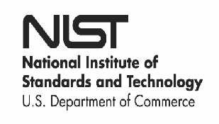
NIST（米国国立標準技術研究所）のロゴ。下部に「U.S. Department of Commerce（米国商務省）」と記載されている。
Systems to Security Categories
セキュリティカテゴリに対応づけるためのガイド
未レビュー訳Kevin Stine Rich Kissel William C. Barker Annabelle Lee Jim Fahlsing
Kevin Stine Rich Kissel William C. Barker Annabelle Lee Jim Fahlsing
未レビュー訳I N F O R M A T I O N S E C U R I T Y
情報セキュリティ
Computer Security Division Information Technology Laboratory National Institute of Standards and Technology Gaithersburg, MD 20899-8930
コンピュータセキュリティ部門 情報技術研究所 米国国立標準技術研究所 Gaithersburg, MD 20899-8930
未レビュー訳August 2008
2008年8月
未レビュー訳米国商務省の紋章の一部。円周に「UNITED STATES OF AMERICA（アメリカ合衆国）」の文字が見える。
U.S. DEPARTMENT OF COMMERCE Carlos M. Gutierrez, Secretary
米国商務省 Carlos M. Gutierrez、長官
未レビュー訳NATIONAL INSTITUTE OF STANDARDS AND TECHNOLOGY James M. Turner, Deputy Director
米国国立標準技術研究所 James M. Turner、副所長
未レビュー訳Reports on Computer Systems Technology
コンピュータシステム技術に関する報告書
The Information Technology Laboratory (ITL) at the National Institute of Standards and Technology (NIST) promotes the U.S. economy and public welfare by providing technical leadership for the nation’s measurement and standards infrastructure. ITL develops tests, test methods, reference data, proof of concept implementations, and technical analyses to advance the development and productive use of information technology. ITL’s responsibilities include the development of management, administrative, technical, and physical standards and guidelines for the cost-effective security and privacy of other than national security-related information in federal information systems. This Special Publication 800-series reports on ITL’s research, guidelines, and outreach efforts in information system security, and its collaborative activities with industry, government, and academic organizations.
National Institute of Standards and Technology（NIST）のInformation Technology Laboratory（ITL）は、国の計測および標準インフラストラクチャに技術的リーダーシップを提供することで、米国経済と公共福祉を促進している。ITLは、情報技術の発展と生産的な利用を促進するため、テスト、テスト方法、参照データ、概念実証実装、技術分析を開発する。ITLの責務には、国家安全保障関連以外の情報を扱う連邦情報システムの費用対効果の高いセキュリティおよびプライバシーのための管理、運用、技術、物理的な標準およびガイドラインの策定が含まれる。このSpecial Publication 800シリーズは、情報システムセキュリティに関するITLの研究、ガイドライン、普及活動、および産業界、政府、学術機関との協力活動を報告する。
未レビュー訳Authority
権限
未レビュー訳This document has been developed by the National Institute of Standards and Technology (NIST) to further its statutory responsibilities under the Federal Information Security Management Act (FISMA) of 2002, P.L. 107-347. NIST is responsible for developing standards and guidelines, including minimum requirements, for providing adequate information security for all agency operations and assets, but such standards and guidelines shall not apply to national security systems. This guideline is consistent with the requirements of the Office of Management and Budget (OMB) Circular A-130, Section 8b(3), Securing Agency Information Systems, as analyzed in A-130, Appendix IV: Analysis of Key Sections. Supplemental information is provided in A-130, Appendix III.
本書は、2002年連邦情報セキュリティマネジメント法（FISMA）、P.L. 107-347に基づく法定責務をさらに果たすため、米国国立標準技術研究所（NIST）が策定した。NISTは、各機関のすべての業務および資産に対する適切な情報セキュリティを提供するための最低要件を含む標準およびガイドラインを策定する責任を負う。ただし、そのような標準およびガイドラインは国家安全保障システムには適用されない。本ガイドラインは、Office of Management and Budget（OMB）Circular A-130 Section 8b(3)「機関情報システムの保護」の要件に整合し、A-130 Appendix IV「主要条項の分析」で分析されている。補足情報はA-130 Appendix IIIに記載されている。
This guideline has been prepared for use by federal agencies. It may also be used by nongovernmental organizations on a voluntary basis and is not subject to copyright. (Attribution would be appreciated by NIST.)
本ガイドラインは連邦機関での使用を目的として作成された。非政府組織も任意で使用でき、著作権の対象ではない。（NISTの出典表示をしていただければ幸いである。）
未レビュー訳Nothing in this document should be taken to contradict standards and guidelines made mandatory and binding on federal agencies by the Secretary of Commerce under statutory authority. Nor should these guidelines be interpreted as altering or superseding the existing authorities of the Secretary of Commerce, Director of the OMB, or any other federal official.
本書のいかなる記述も、法定権限に基づき商務長官が連邦機関に義務付け、拘束力を持たせた標準およびガイドラインに反するものと解釈すべきではない。また、本ガイドラインは、商務長官、OMB長官、その他の連邦当局者の既存の権限を変更または置き換えるものと解釈すべきではない。
NIST Special Publication 800-60 Volume II, Revision 1, 304 pages (Date) CODEN: NSPUE2
NIST Special Publication 800-60 Volume II, Revision 1, 304ページ（Date）CODEN: NSPUE2
未レビュー訳Certain commercial entities, equipment, or materials may be identified in this document in order to describe an experimental procedure or concept adequately. Such identification is not intended to imply recommendation or endorsement by the National Institute of Standards and Technology, nor is it intended to imply that the entities, materials, or equipment are necessarily the best available for the purpose. There are references in this publication to documents currently under development by NIST in accordance with responsibilities assigned to NIST under the Federal Information Security Management Act of 2002. The methodologies in this document may be used even before the completion of such companion documents. Thus, until such time as each document is completed, current requirements, guidelines, and procedures (where they exist) remain operative. For planning and transition purposes, agencies may wish to closely follow the development of these new documents by NIST. Individuals are also encouraged to review the public draft documents and offer their comments to NIST. All NIST documents mentioned in this publication, other than the ones noted above, are available at http://csrc.nist.gov/publications.
実験手順または概念を適切に説明するため、本書では特定の商業組織、機器、または材料を示す場合がある。そのような特定は、米国国立標準技術研究所による推奨または推奨承認を意味するものではなく、また、当該組織、材料、または機器が目的に対して必ずしも最良であることを意味するものでもない。本出版物には、2002年連邦情報セキュリティマネジメント法に基づきNISTに割り当てられた責務に従って、NISTが現在策定中の文書への参照が含まれる。本書に記載された方法論は、そのような関連文書が完成する前でも使用できる。したがって、各文書が完成するまでは、既存の現行要件、ガイドライン、手順が引き続き有効である。計画および移行のため、機関はNISTによるこれらの新しい文書の策定状況を注意深く確認するとよい。個人にも、公開草案文書を確認し、NISTにコメントを提出することが推奨される。本出版物で言及したもの以外のNIST文書は、http://csrc.nist.gov/publications で入手できる。
未レビュー訳Acknowledgements
謝辞
未レビュー訳The authors wish to thank their colleagues who helped update this document, prepare drafts, and review materials. In addition, special thanks are due to our reviewers who greatly contributed to the document’s development. The authors also gratefully acknowledge and appreciate the many comments from the public and private sectors whose thoughtful and constructive comments improved the quality and usefulness of this publication.
著者らは、本書の更新、草案の作成、資料のレビューを支援した同僚に謝意を表する。また、本書の策定に大きく貢献したレビュー担当者にも特に感謝する。さらに、本出版物の品質と有用性を高める、官民各部門から寄せられた多くの思慮深く建設的なコメントに深く感謝する。
未レビュー訳Note
注記
未レビュー訳NIST Special Publication (SP) 800-60 may be used by organizations in conjunction with a family of security-related publications including:
NIST Special Publication（SP）800-60は、次のようなセキュリティ関連出版物群と併せて組織が使用できる。
未レビュー訳•FIPS Publication 199, Standards for Security Categorization of Federal Information and Information Systems;
•FIPS Publication 199『連邦情報および情報システムのセキュリティ分類標準』。
•FIPS Publication 200, Minimum Security Controls for Federal Information Systems;
•FIPS Publication 200『連邦情報システムの最低セキュリティ管理策』。
•NIST SP 800-30, Risk Management Guide for Information Technology Systems1;
•NIST SP 800-30『情報技術システムのリスクマネジメントガイド』1。
未レビュー訳•NIST SP 800-37, Guide for the Security Certification and Accreditation of Federal Information Systems;
•NIST SP 800-37『連邦情報システムのセキュリティ認証および認定ガイド』。
•NIST Draft SP 800-39, Managing Risk from Information Systems: An Organizational Perspective;
•NIST Draft SP 800-39『情報システムのリスク管理：組織の視点』。
•NIST SP 800-53, Recommended Security Controls for Federal Information Systems;
•NIST SP 800-53『連邦情報システムの推奨セキュリティ管理策』。
未レビュー訳•NIST SP 800-53A, Guide for Assessing the Security Controls in Federal Information Systems; and
•NIST SP 800-53A『連邦情報システムのセキュリティ管理策評価ガイド』。
•NIST SP 800-59, Guideline for Identifying an Information System as a National Security System.
•NIST SP 800-59『情報システムを国家安全保障システムとして識別するためのガイドライン』。
This series of nine documents is intended to provide a structured, yet flexible framework for selecting, specifying, employing, and evaluating the security controls in Federal information systems—and thus, make a significant contribution toward satisfying the requirements of the Federal Information Security Management Act (FISMA) of 2002. While the publications are mutually reinforcing and have some dependencies, in most cases, they can be effectively used independently of one another. This is Volume II of two volumes. Volume I contains the basic guidelines for mapping types of information and information systems to security categories. The appendices contained in Volume II include security categorization recommendations and rationale for mission-based and management and support information types. The SP 800-60 information types and security impact levels are based on the OMB Federal Enterprise Architecture Program Management Office’s October 2007 FEA Consolidated Reference Model Document, Version 2.3 inputs from participants in NIST SP 800-60 workshops, and FIPS 199. Rationale for the example security impact level recommendations provided in the appendices have been derived from multiple sources, and as such, will require several iterations of review, comment, and subsequent modification to achieve consistency in terminology, structure, and content.
この9文書シリーズは、連邦情報システムのセキュリティ管理策の選択、指定、適用、評価のための、体系的でありながら柔軟な枠組みを提供し、2002年連邦情報セキュリティマネジメント法（FISMA）の要件を満たすことに大きく貢献することを意図している。各出版物は相互に補強し、依存関係もあるが、ほとんどの場合、互いに独立して効果的に使用できる。本書は全2巻のうちの第II巻である。第I巻には、情報および情報システムの種類をセキュリティカテゴリに対応づけるための基本ガイドラインが記載されている。第II巻の付録には、ミッションベースの情報タイプ、ならびに管理および支援情報タイプについて、セキュリティ分類の推奨事項と根拠が含まれる。SP 800-60の情報タイプおよびセキュリティ影響レベルは、OMB Federal Enterprise Architecture Program Management Officeの2007年10月版FEA Consolidated Reference Model Document Version 2.3、NIST SP 800-60ワークショップ参加者からの入力、およびFIPS 199に基づく。付録に示すセキュリティ影響レベル推奨例の根拠は複数の情報源から導出されているため、用語、構成、内容の一貫性を実現するには、複数回のレビュー、コメント、後続の修正が必要となる。
未レビュー訳1 This document is currently under revision and will be reissued as Special Publication 800-30, Revision 1, Guide for Conducting Risk Assessments.
1 本書は現在改訂中であり、Special Publication 800-30 Revision 1『リスク評価の実施ガイド』として再発行される。
未レビュー訳EXECUTIVE SUMMARY
エグゼクティブサマリー
未レビュー訳Title III of the E-Government Act (Public Law 107-347), titled the Federal Information Security Management Act (FISMA), tasked the National Institute of Standards and Technology (NIST) to develop:
E-Government Act（Public Law 107-347）のTitle IIIである連邦情報セキュリティマネジメント法（FISMA）は、米国国立標準技術研究所（NIST）に次の策定を課した。
•Standards to be used by all Federal agencies to categorize all information and information systems collected or maintained by or on behalf of each agency based on the objectives of providing appropriate levels of information security according to a range of risk levels;
•各連邦機関が収集または維持する、あるいは各機関に代わって収集または維持されるすべての情報および情報システムを、さまざまなリスクレベルに応じて適切な情報セキュリティ水準を提供するという目的に基づいて分類するため、すべての連邦機関が使用する標準。
•Guidelines recommending the types of information and information systems to be included in each such category; and
•各カテゴリに含める情報および情報システムの種類を推奨するガイドライン。
未レビュー訳•Minimum information security requirements (i.e., management, operational, and technical security controls), for information and information systems in each such category.
•各カテゴリの情報および情報システムに対する最低限の情報セキュリティ要件（すなわち、管理、運用、技術的セキュリティ管理策）。
未レビュー訳In response to the second of these tasks, this guideline has been developed to assist Federal government agencies to categorize information and information systems. The guideline’s objective is to facilitate provision of appropriate levels of information security according to a range of levels of impact or consequences that might result from the unauthorized disclosure, modification, or loss of availability of the information or information system. This guideline assumes that the user is familiar with Standards for Security Categorization of Federal Information and Information Systems (FIPS 199). The guideline and its appendices:
これらのうち2番目の課題に応えるため、連邦政府機関が情報および情報システムを分類できるよう支援する本ガイドラインが策定された。本ガイドラインの目的は、情報または情報システムの不正な開示、改変、または可用性の喪失により生じる可能性のある影響または結果のさまざまなレベルに応じ、適切な情報セキュリティ水準を提供しやすくすることである。本ガイドラインは、利用者が『連邦情報および情報システムのセキュリティ分類標準』（FIPS 199）に精通していることを前提とする。本ガイドラインおよびその付録は、次を行う。
•Review the security categorization terms and definitions established by FIPS 199;
•FIPS 199で定められたセキュリティ分類の用語および定義を確認する。
•Recommend a security categorization process;
•セキュリティ分類プロセスを推奨する。
•Describe a methodology for identifying types of Federal information and information systems;
•連邦政府の情報および情報システムの種類を特定するための方法論を説明する。
•Suggest provisional security impact levels for common information types;
•共通情報タイプに対する暫定的なセキュリティ影響度レベルを提案する;
•Discuss information attributes that may result in variances from the provisional security impact level assignment; and
•暫定的なセキュリティ影響度レベルの割当てに差異を生じさせる可能性のある情報属性を論じる; および
•Describe how to establish a system security categorization based on the system’s use, connectivity, and aggregate information content.
•システムの用途、接続性、および情報内容の集約に基づき、システムのセキュリティ分類を確立する方法を説明する。
未レビュー訳This document is intended as a reference resource rather than as a tutorial. Not all of the material will be relevant to all agencies. This document includes two volumes, a basic guideline and a volume of appendices. Users should review the guidelines provided in Volume I, then refer to only that specific material from the appendices that applies to their own systems and applications. The provisional security impact level assignments contained in appendices C and D are only the first step in impact assignment and subsequent risk assessment processes. The impact assignments are not intended to be used by auditors as a definitive checklist for information types and impact assignments.
本書はチュートリアルではなく、参照資料として使用することを意図している。すべての資料がすべての機関に関係するわけではない。本書は、基本指針である第I巻と、付録を収録した第II巻の二巻から成る。利用者は第I巻に示された指針を確認したうえで、自組織のシステムおよびアプリケーションに適用される付録の資料のみを参照すべきである。付録CおよびDに含まれる暫定的なセキュリティ影響度レベルの割当ては、影響度の割当てとその後のリスク評価プロセスにおける最初の段階にすぎない。これらの影響度割当ては、情報タイプおよび影響度割当てに関する決定的なチェックリストとして監査人が使用することを意図したものではない。
未レビュー訳The basis employed in this guideline for the identification of information types is the Office of Management and Budget’s Federal Enterprise Architecture (FEA) Program Management Office (PMO) October 2007 publication, The Consolidated Reference Model Document Version 2.3.
本指針で情報タイプを特定するために採用した基礎は、行政管理予算局（Office of Management and Budget）の連邦エンタープライズ・アーキテクチャ（FEA）プログラム管理室（PMO）が2007年10月に刊行した『The Consolidated Reference Model Document Version 2.3』である。
未レビュー訳Table of Contents
目次
GUIDE FOR MAPPING TYPES OF INFORMATION AND INFORMATION SYSTEMS TO SECURITY CATEGORIES
情報タイプおよび情報システムをセキュリティカテゴリに対応付けるためのガイド
Volume II: Appendices
第II巻：付録
未レビュー訳APPENDIX A: GLOSSARY OF TERMS............................................................................. A-1
付録A：用語集............................................................................. A-1
未レビュー訳APPENDIX B: REFERENCES...............................................................................................B-1
付録B：参考文献...............................................................................................B-1
未レビュー訳APPENDIX C: MANAGEMENT AND SUPPORT INFORMATION AND INFORMATION SYSTEMS IMPACT LEVELS — 1
付録C：管理および支援情報ならびに情報システムの影響度レベル — 1
C.1 Recommended Provisional Impact Levels for Management and Support Information Types — 2
C.1 管理および支援情報タイプの推奨暫定影響度レベル — 2
C.2 Rationale and Factors for Services Delivery Support Information — 7
C.2 サービス提供支援情報の根拠および要因 — 7
未レビュー訳C.2.1 Controls and Oversight — 7
C.2.1 管理および監督 — 7
C.2.1.1 Corrective Action Information Type — 7
C.2.1.1 是正措置情報タイプ — 7
未レビュー訳C.2.1.2 Program Evaluation Information Type — 8
C.2.1.2 プログラム評価情報タイプ — 8
未レビュー訳C.2.1.3 Program Monitoring Information Type — 10
C.2.1.3 プログラム・モニタリング情報タイプ — 10
未レビュー訳C.2.2 Regulatory Development — 11
C.2.2 規制の策定 — 11
未レビュー訳C.2.2.1 Policy and Guidance Development Information Type — 11
C.2.2.1 方針およびガイダンスの策定情報タイプ — 11
未レビュー訳C.2.2.2 Public Comment Tracking Information Type — 13
C.2.2.2 パブリックコメント追跡情報タイプ — 13
C.2.2.3 Regulatory Creation Information Type — 14
C.2.2.3 規制作成情報タイプ — 14
未レビュー訳C.2.2.4 Rule Publication Information Type — 15
C.2.2.4 規則公表情報タイプ — 15
未レビュー訳C.2.3 Planning and Budgeting — 16
C.2.3 計画および予算編成 — 16
未レビュー訳C.2.3.1 Budget Formulation Information Type — 16
C.2.3.1 予算策定情報タイプ — 16
未レビュー訳C.2.3.2 Capital Planning Information Type — 17
C.2.3.2 資本計画情報タイプ — 17
未レビュー訳C.2.3.3 Enterprise Architecture Information Type — 18
C.2.3.3 エンタープライズアーキテクチャ情報タイプ — 18
C.2.3.4 Strategic Planning Information Type — 19
C.2.3.4 戦略計画情報タイプ — 19
C.2.3.5 Budget Execution Information Type — 20
C.2.3.5 予算執行情報タイプ — 20
C.2.3.6 Workforce Planning Information Type — 22
C.2.3.6 人材計画情報タイプ — 22
C.2.3.7 Management Improvement Information Type — 22
C.2.3.7 経営改善情報タイプ — 22
C.2.3.8 Budget and Performance Integration Information Type — 24
C.2.3.8 予算・業績統合情報タイプ — 24
C.2.3.9 Tax and Fiscal Policy Information Type — 25
C.2.3.9 税務・財政政策情報タイプ — 25
C.2.4 Internal Risk Management and Mitigation — 26
C.2.4 内部リスク管理および緩和 — 26
C.2.4.1 Contingency Planning Information Type — 26
C.2.4.1 緊急時対応計画情報タイプ — 26
未レビュー訳C.2.4.2 Continuity of Operations Information Type — 27
C.2.4.2 業務継続情報タイプ — 27
C.2.4.3 Service Recovery Information Type — 29
C.2.4.3 サービス復旧情報タイプ — 29
未レビュー訳C.2.5 Revenue Collection — 30
C.2.5 収入徴収 — 30
未レビュー訳C.2.5.1 Debt Collection Information Type — 30
C.2.5.1 債権回収情報タイプ — 30
未レビュー訳C.2.5.2 User Fee Collection Information Type — 31
C.2.5.2 利用料徴収情報タイプ — 31
未レビュー訳C.2.5.3 Federal Asset Sales Information Type — 32
C.2.5.3 連邦資産売却情報タイプ — 32
C.2.6 Public Affairs — 33
C.2.6 広報 — 33
未レビュー訳C.2.6.1 Customer Services Information Type — 34
C.2.6.1 顧客サービス情報タイプ — 34
未レビュー訳C.2.6.2 Official Information Dissemination Information Type — 35
C.2.6.2 公式情報普及情報タイプ — 35
C.2.6.3 Product Outreach Information Type — 36
C.2.6.3 製品周知情報タイプ — 36
C.2.6.4 Public Relations Information Type — 37
C.2.6.4 広報活動情報タイプ — 37
C.2.7 Legislative Relations — 38
C.2.7 立法関係 — 38
未レビュー訳C.2.7.1 Legislation Tracking Information Type — 38
C.2.7.1 法案追跡情報タイプ — 38
未レビュー訳C.2.7.2 Legislation Testimony Information Type — 39
C.2.7.2 立法に関する証言情報タイプ — 39
未レビュー訳C.2.7.3 Proposal Development Information Type — 40
C.2.7.3 提案策定情報タイプ — 40
C.2.7.4 Congressional Liaison Operations Information Type — 41
C.2.7.4 議会連絡業務情報タイプ — 41
未レビュー訳C.2.8 General Government — 42
C.2.8 一般政府 — 42
未レビュー訳C.2.8.1 Central Fiscal Operations Information Type — 43
C.2.8.1 中央財政業務情報タイプ — 43
C.2.8.2 Legislative Functions Information Type — 44
C.2.8.2 立法機能情報タイプ — 44
C.2.8.3 Executive Functions Information Type — 45
C.2.8.3 行政機能情報タイプ — 45
未レビュー訳C.2.8.4 Central Property Management Information Type — 46
C.2.8.4 中央資産管理情報タイプ — 46
未レビュー訳C.2.8.5 Central Personnel Management Information Type — 47
C.2.8.5 中央人事管理情報タイプ — 47
C.2.8.6 Taxation Management Information Type — 48
C.2.8.6 課税管理情報タイプ — 48
C.2.8.7 Central Records and Statistics Management Information Type — 50
C.2.8.7 中央記録・統計管理情報タイプ — 50
未レビュー訳C.2.8.8 Income Information Information Type — 51
C.2.8.8 所得情報の情報タイプ — 51
C.2.8.9 Personal Identity and Authentication Information Information Type — 53
C.2.8.9 個人識別および認証情報の情報タイプ — 53
C.2.8.10 Entitlement Event Information Information Type — 54
C.2.8.10 受給資格イベント情報の情報タイプ — 54
未レビュー訳C.2.8.11 Representative Payee Information Information Type — 56
C.2.8.11 代理受取人情報の情報タイプ — 56
C.2.8.12 General Information Information Type — 57
C.2.8.12 一般情報の情報タイプ — 57
未レビュー訳C.3 Rationale and Factors for Government Resource Management Information — 58
C.3 政府資源管理情報の根拠および要因 — 58
C.3.1 Administrative Management — 58
C.3.1 管理業務 — 58
未レビュー訳C.3.1.1 Facilities, Fleet, and Equipment Management Information Type — 58
C.3.1.1 施設、車両群および設備の管理情報タイプ — 58
C.3.1.2 Help Desk Services Information Type — 60
C.3.1.2 ヘルプデスクサービス情報タイプ — 60
未レビュー訳C.3.1.3 Security Management Information Type — 61
C.3.1.3 セキュリティ管理情報タイプ — 61
未レビュー訳C.3.1.4 Travel Information Type — 63
C.3.1.4 旅行情報タイプ — 63
C.3.1.5 Workplace Policy Development and Management Information Type (Intra-
C.3.1.5 職場方針の策定および管理情報タイプ（機関
未レビュー訳Agency Only) — 65
内のみ） — 65
未レビュー訳C.3.2 Financial Management — 65
C.3.2 財務管理 — 65
C.3.2.1 Assets and Liability Management Information Type — 66
C.3.2.1 資産・負債管理情報タイプ — 66
未レビュー訳C.3.2.2 Reporting and Information Information Type — 67
C.3.2.2 報告および情報の情報タイプ — 67
未レビュー訳C.3.2.3 Funds Control Information Type — 68
C.3.2.3 資金統制情報タイプ — 68
C.3.2.4 Accounting Information Type — 69
C.3.2.4 会計情報タイプ — 69
C.3.2.5 Payments Information Type — 70
C.3.2.5 支払情報タイプ — 70
未レビュー訳C.3.2.6 Collections and Receivables Information Type — 72
C.3.2.6 徴収および債権情報タイプ — 72
C.3.2.7 Cost Accounting/ Performance Measurement Information Type — 73
C.3.2.7 原価計算／業績測定情報タイプ — 73
C.3.3 Human Resource Management — 74
C.3.3 人事管理 — 74
未レビュー訳C.3.3.1 HR Strategy Information Type — 74
C.3.3.1 人事戦略情報タイプ — 74
未レビュー訳C.3.3.2 Staff Acquisition Information Type — 75
C.3.3.2 職員採用情報タイプ — 75
未レビュー訳C.3.3.3 Organization & Position Management Information Type — 76
C.3.3.3 組織 & 職位管理情報タイプ — 76
C.3.3.4 Compensation Management Information Type — 77
C.3.3.4 報酬管理情報タイプ — 77
未レビュー訳C.3.3.5 Benefits Management Information Type — 78
C.3.3.5 福利厚生管理情報タイプ — 78
未レビュー訳C.3.3.6 Employee Performance Management Information Type — 79
C.3.3.6 従業員業績管理情報タイプ — 79
C.3.3.7 Employee Relations Information Type — 81
C.3.3.7 従業員関係情報タイプ — 81
C.3.3.8 Labor Relations Information Type — 82
C.3.3.8 労使関係情報タイプ — 82
C.3.3.9 Separation Management Information Type — 83
C.3.3.9 退職管理情報タイプ — 83
未レビュー訳C.3.3.10 Human Resources Development Information Type — 84
C.3.3.10 人材育成情報タイプ — 84
未レビュー訳C.3.4 Supply Chain Management — 85
C.3.4 サプライチェーン管理 — 85
未レビュー訳C.3.4.1 Goods Acquisition Information Type — 85
C.3.4.1 物品調達情報タイプ — 85
未レビュー訳C.3.4.2 Inventory Control Information Type — 87
C.3.4.2 在庫管理情報タイプ — 87
未レビュー訳C.3.4.3 Logistics Management Information Type — 88
C.3.4.3 物流管理情報タイプ — 88
未レビュー訳C.3.4.4 Services Acquisition Information Type — 89
C.3.4.4 サービス調達情報タイプ — 89
C.3.5 Information and Technology Management — 91
C.3.5 情報・技術管理 — 91
C.3.5.1 System Development Information Type — 91
C.3.5.1 システム開発情報タイプ — 91
未レビュー訳C.3.5.2 Lifecycle/Change Management Information Type — 92
C.3.5.2 ライフサイクル／変更管理情報タイプ — 92
未レビュー訳C.3.5.3 System Maintenance Information Type — 93
C.3.5.3 システム保守情報タイプ — 93
C.3.5.4 IT Infrastructure Maintenance Information Type — 94
C.3.5.4 ITインフラストラクチャ保守情報タイプ — 94
C.3.5.5 Information Security Information Type — 96
C.3.5.5 情報セキュリティ情報タイプ — 96
未レビュー訳C.3.5.6 Record Retention Information Type — 97
C.3.5.6 記録保持情報タイプ — 97
C.3.5.7 Information Management Information Type — 98
C.3.5.7 情報管理情報タイプ — 98
未レビュー訳C.3.5.8 System and Network Monitoring Information Type — 100
C.3.5.8 システムおよびネットワーク監視情報タイプ — 100
未レビュー訳C.3.5.9 Information Sharing Information Type — 101
C.3.5.9 情報共有情報タイプ — 101
未レビュー訳APPENDIX D: IMPACT DETERMINATION FOR MISSION-BASED INFORMATION AND INFORMATION SYSTEMS — 102
付録D：ミッションに基づく情報および情報システムに対する影響判定 — 102
D.1 Defense and National Security — 107
D.1 国防および国家安全保障 — 107
未レビュー訳D.2 Homeland Security — 108
D.2 国土安全保障 — 108
未レビュー訳D.2.1 Border and Transportation Security Information Type — 108
D.2.1 国境および交通安全保障情報タイプ — 108
D.2.2 Key Asset and Critical Infrastructure Protection Information Type — 110
D.2.2 重要資産および重要インフラ保護情報タイプ — 110
未レビュー訳D.2.3 Catastrophic Defense Information Type — 111
D.2.3 壊滅的脅威防衛情報タイプ — 111
未レビュー訳D.2.4 Executive Functions of the Executive Office of the President (EOP) Information Type — 112
D.2.4 大統領府（EOP）の行政機能情報タイプ — 112
D.3 Intelligence Operations — 113
D.3 情報活動 — 113
未レビュー訳D.4 Disaster Management — 115
D.4 災害管理 — 115
未レビュー訳D.4.1 Disaster Monitoring and Prediction Information Type — 116
D.4.1 災害監視・予測情報タイプ — 116
D.4.2 Disaster Preparedness and Planning Information Type — 117
D.4.2 災害への備えと計画情報タイプ — 117
D.4.3 Disaster Repair and Restoration Information Type — 118
D.4.3 災害の修復および復旧情報タイプ — 118
未レビュー訳D.4.4 Emergency Response Information Type — 119
D.4.4 緊急対応情報タイプ — 119
未レビュー訳D.5 International Affairs and Commerce — 121
D.5 国際関係および通商 — 121
未レビュー訳D.5.1 Foreign Affairs Information Type — 121
D.5.1 外交情報タイプ — 121
D.5.2 International Development and Humanitarian Aid Information Type — 123
D.5.2 国際開発および人道支援情報タイプ — 123
未レビュー訳D.5.3 Global Trade Information Type — 125
D.5.3 世界貿易情報タイプ — 125
未レビュー訳D.6 Natural Resources — 127
D.6 天然資源 — 127
未レビュー訳D.6.1 Water Resource Management Information Type — 127
D.6.1 水資源管理情報タイプ — 127
未レビュー訳D.6.2 Conservation, Marine and Land Management Information Type — 128
D.6.2 保全、海洋および土地管理情報タイプ — 128
D.6.3 Recreational Resource Management and Tourism Information Type — 130
D.6.3 レクリエーション資源管理および観光情報タイプ — 130
D.6.4 Agricultural Innovation and Services Information Type — 131
D.6.4 農業革新およびサービス情報タイプ — 131
未レビュー訳D.7 Energy — 133
D.7 エネルギー — 133
未レビュー訳D.7.1 Energy Supply Information Type — 133
D.7.1 エネルギー供給情報タイプ — 133
未レビュー訳D.7.2 Energy Conservation and Preparedness Information Type — 135
D.7.2 エネルギー保全および備え情報タイプ — 135
未レビュー訳D.7.3 Energy Resource Management Information Type — 136
D.7.3 エネルギー資源管理情報タイプ — 136
未レビュー訳D.7.4 Energy Production Information Type — 137
D.7.4 エネルギー生産情報タイプ — 137
未レビュー訳D.8 Environmental Management — 138
D.8 環境管理 — 138
未レビュー訳D.8.1 Environmental Monitoring and Forecasting Information Type — 139
D.8.1 環境監視および予測情報タイプ — 139
未レビュー訳D.8.2 Environmental Remediation Information Type — 140
D.8.2 環境修復情報タイプ — 140
未レビュー訳D.8.3 Pollution Prevention and Control Information Type — 141
D.8.3 汚染予防および管理情報タイプ — 141
未レビュー訳D.9 Economic Development — 142
D.9 経済開発 — 142
未レビュー訳D.9.1 Business and Industry Development Information Type — 142
D.9.1 企業および産業の開発情報タイプ — 142
未レビュー訳D.9.2 Intellectual Property Protection Information Type — 143
D.9.2 知的財産保護情報タイプ — 143
D.9.3 Financial Sector Oversight Information Type — 144
D.9.3 金融セクター監督情報タイプ — 144
未レビュー訳D.9.4 Industry Sector Income Stabilization Information Type — 146
D.9.4 産業部門の所得安定化情報タイプ — 146
未レビュー訳D.10 Community and Social Services — 147
D.10 地域社会および社会福祉サービス — 147
未レビュー訳D.10.1 Homeownership Promotion Information Type — 147
D.10.1 住宅所有促進情報タイプ — 147
未レビュー訳D.10.2 Community and Regional Development Information Type — 148
D.10.2 地域社会および地域開発情報タイプ — 148
D.10.3 Social Services Information Type — 149
D.10.3 社会福祉サービス情報タイプ — 149
未レビュー訳D.10.4 Postal Services Information Type — 151
D.10.4 郵便サービス情報タイプ — 151
未レビュー訳D.11 Transportation — 152
D.11 交通 — 152
未レビュー訳D.11.1 Ground Transportation Information Type — 152
D.11.1 地上交通情報タイプ — 152
未レビュー訳D.11.2 Water Transportation Information Type — 154
D.11.2 水上交通情報タイプ — 154
D.11.3 Air Transportation Information Type — 155
D.11.3 航空交通情報タイプ — 155
未レビュー訳D.11.4 Space Operations Information Type — 158
D.11.4 宇宙運用情報タイプ — 158
未レビュー訳D.12 Education — 159
D.12 教育 — 159
未レビュー訳D.12.1 Elementary, Secondary, and Vocational Education Information Type — 159
D.12.1 初等・中等・職業教育情報タイプ — 159
D.12.2 Higher Education Information Type — 160
D.12.2 高等教育情報タイプ — 160
未レビュー訳D.12.3 Cultural and Historic Preservation Information Type — 161
D.12.3 文化・歴史遺産保全情報タイプ — 161
未レビュー訳D.12.4 Cultural and Historic Exhibition Information Type — 162
D.12.4 文化・歴史遺産展示情報タイプ — 162
未レビュー訳D.13 Workforce Management — 163
D.13 労働力管理 — 163
未レビュー訳D.13.1 Training and Employment Information Type — 163
D.13.1 訓練および雇用情報タイプ — 163
未レビュー訳D.13.2 Labor Rights Management Information Type — 165
D.13.2 労働者の権利管理情報タイプ — 165
D.13.3 Worker Safety Information Type — 166
D.13.3 労働者安全情報タイプ — 166
D.14 Health — 167
D.14 保健 — 167
未レビュー訳D.14.1 Access to Care Information Type — 167
D.14.1 医療サービスへのアクセス情報タイプ — 167
D.14.2 Population Health Management and Consumer Safety Information Type — 168
D.14.2 集団健康管理および消費者安全情報タイプ — 168
D.14.3 Health Care Administration Information Type — 170
D.14.3 医療管理情報タイプ — 170
D.14.4 Health Care Delivery Services Information Type — 171
D.14.4 医療提供サービス情報タイプ — 171
未レビュー訳D.14.5 Health Care Research and Practitioner Education Information Type — 172
D.14.5 医療研究および医療従事者教育情報タイプ — 172
D.15 Income Security — 173
D.15 所得保障 — 173
未レビュー訳D.15.1 General Retirement and Disability Information Type — 173
D.15.1 一般退職・障害保障情報タイプ — 173
未レビュー訳D.15.2 Unemployment Compensation Information Type — 175
D.15.2 失業補償情報タイプ — 175
D.15.3 Housing Assistance Information Type — 176
D.15.3 住宅支援情報タイプ — 176
未レビュー訳D.15.4 Food and Nutrition Assistance Information Type — 177
D.15.4 食料および栄養支援情報タイプ — 177
D.15.5 Survivor Compensation Information Type — 178
D.15.5 遺族補償情報タイプ — 178
未レビュー訳D.16 Law Enforcement — 179
D.16 法執行 — 179
未レビュー訳D.16.1 Criminal Apprehension Information Type — 179
D.16.1 犯罪容疑者逮捕情報タイプ — 179
D.16.2 Criminal Investigation and Surveillance Information Type — 181
D.16.2 刑事捜査および監視情報タイプ — 181
未レビュー訳D.16.3 Citizen Protection Information Type — 182
D.16.3 市民保護情報タイプ — 182
未レビュー訳D.16.4 Leadership Protection Information Type — 184
D.16.4 指導者警護情報タイプ — 184
D.16.5 Property Protection Information Type — 185
D.16.5 財産保護情報タイプ — 185
未レビュー訳D.16.6 Substance Control Information Type — 186
D.16.6 規制物質管理情報タイプ — 186
D.16.7 Crime Prevention Information Type — 188
D.16.7 犯罪防止情報タイプ — 188
未レビュー訳D.16.8 Trade Law Enforcement Information Type — 189
D.16.8 通商法執行情報タイプ — 189
未レビュー訳D.17 Litigation and Judicial Activities — 190
D.17 訴訟および司法活動 — 190
未レビュー訳D.17.1 Judicial Hearings Information Type — 191
D.17.1 司法審理情報タイプ — 191
未レビュー訳D.17.2 Legal Defense Information Type — 192
D.17.2 法的弁護情報タイプ — 192
D.17.3 Legal Investigation Information Type — 193
D.17.3 法律調査情報タイプ — 193
未レビュー訳D.17.4 Legal Prosecution and Litigation Information Type — 195
D.17.4 法的訴追および訴訟情報タイプ — 195
未レビュー訳D.17.5 Resolution Facilitation Information Type — 197
D.17.5 紛争解決促進情報タイプ — 197
未レビュー訳D.18 Federal Correctional Activities — 198
D.18 連邦矯正業務 — 198
未レビュー訳D.18.1 Criminal Incarceration Information Type — 198
D.18.1 刑事収監情報タイプ — 198
未レビュー訳D.18.2 Criminal Rehabilitation Information Type — 200
D.18.2 犯罪者更生情報タイプ — 200
未レビュー訳D.19 General Sciences and Innovation — 201
D.19 一般科学およびイノベーション — 201
未レビュー訳D.19.1 Scientific and Technological Research and Innovation Information Type — 201
D.19.1 科学技術研究およびイノベーション情報タイプ — 201
D.19.2 Space Exploration and Innovation Information Type — 202
D.19.2 宇宙探査およびイノベーション情報タイプ — 202
未レビュー訳D.20 Knowledge Creation and Management — 203
D.20 知識の創出および管理 — 203
未レビュー訳D.20.1 Research and Development Information Type — 203
D.20.1 研究開発情報タイプ — 203
未レビュー訳D.20.2 General Purpose Data and Statistics Information Type — 205
D.20.2 汎用データおよび統計情報タイプ — 205
未レビュー訳D.20.3 Advising and Consulting Information Type — 206
D.20.3 助言およびコンサルティング情報タイプ — 206
D.20.4 Knowledge Dissemination Information Type — 207
D.20.4 知識普及情報タイプ — 207
未レビュー訳D.21 Regulatory Compliance and Enforcement — 208
D.21 規制遵守および執行 — 208
未レビュー訳D.21.1 Inspections and Auditing Information Type — 209
D.21.1 検査および監査情報タイプ — 209
D.21.2 Standards Setting/Reporting Guideline Development Information Type — 210
D.21.2 標準策定／報告ガイドライン策定情報タイプ — 210
D.21.3 Permits and Licensing Information Type — 211
D.21.3 許認可情報タイプ — 211
未レビュー訳D.22 Public Goods Creation and Management — 212
D.22 公共財の創出および管理 — 212
未レビュー訳D.22.1 Manufacturing Information Type — 212
D.22.1 製造情報タイプ — 212
D.22.2 Construction Information Type — 213
D.22.2 建設情報タイプ — 213
未レビュー訳D.22.3 Public Resources, Facility and Infrastructure Management Information Type — 214
D.22.3 公共資源、施設およびインフラ管理情報タイプ — 214
未レビュー訳D.22.4 Information Infrastructure Management Information Type — 215
D.22.4 情報インフラ管理情報タイプ — 215
未レビュー訳D.23 Federal Financial Assistance — 217
D.23 連邦財政支援 — 217
未レビュー訳D.23.1 Federal Grants (Non-State) Information Type — 217
D.23.1 連邦助成金（州以外）情報タイプ — 217
D.23.2 Direct Transfers to Individuals Information Type — 219
D.23.2 個人への直接移転情報タイプ — 219
未レビュー訳D.23.3 Subsidies Information Type — 220
D.23.3 補助金情報タイプ — 220
未レビュー訳D.23.4 Tax Credits Information Type — 221
D.23.4 税額控除情報タイプ — 221
未レビュー訳D.24 Credit and Insurance — 222
D.24 信用供与および保険 — 222
未レビュー訳D.24.1 Direct Loans Information Type — 222
D.24.1 直接融資情報タイプ — 222
未レビュー訳D.24.2 Loan Guarantees Information Type — 223
D.24.2 融資保証情報タイプ — 223
未レビュー訳D.24.3 General Insurance Information Type — 224
D.24.3 一般保険情報タイプ — 224
未レビュー訳D.25 Transfers to State/Local Governments — 226
D.25 州・地方政府への移転 — 226
未レビュー訳D.25.1 Formula Grants Information Type — 226
D.25.1 算定式助成金情報タイプ — 226
未レビュー訳D.25.2 Project/Competitive Grants Information Type — 227
D.25.2 プロジェクト／競争的助成金情報タイプ — 227
D.25.3 Earmarked Grants Information Type — 228
D.25.3 使途指定助成金情報タイプ — 228
未レビュー訳D.25.4 State Loans Information Type — 229
D.25.4 州政府融資情報タイプ — 229
未レビュー訳D.26 Direct Services for Citizens — 230
D.26 市民への直接サービス — 230
未レビュー訳D.26.1 Military Operations Information Type — 230
D.26.1 軍事作戦情報タイプ — 230
未レビュー訳D.26.2 Civilian Operations Information Type — 231
D.26.2 文民業務情報タイプ — 231
未レビュー訳APPENDIX E: LEGISLATIVE AND EXECUTIVE SOURCES ESTABLISHING SENSITIVITY/CRITICALITY — 232
付録E：機微度／重要度を定める立法上および行政上の根拠資料 — 232
E.1 Legislative Mandates — 232
E.1 立法上の義務 — 232
未レビュー訳E.2 Executive Mandates ............................................................................................................264 E.2.1 Office of Management and Budget Memoranda and Guidelines..................................264 E.2.2 Presidential Directives and Executive Orders................................................................268 E.2.3 Other EOP Guidance......................................................................................................276
E.2 行政機関の命令 ............................................................................................................264 E.2.1 行政管理予算局（OMB）の覚書およびガイドライン..................................264 E.2.2 大統領指令および大統領令................................................................268 E.2.3 その他のEOPガイダンス......................................................................................................276
未レビュー訳E.3 OMB and Case Law Interpretations .................................................................................277
E.3 OMBおよび判例の解釈 .................................................................................277
未レビュー訳APPENDIX A: GLOSSARY OF TERMS
付録A：用語集
未レビュー訳Accreditation
認定
未レビュー訳The official management decision given by a senior agency official to authorize operation of an information system and to explicitly accept the risk to agency operations (including mission, functions, image, or reputation), agency assets, or individuals, based on the implementation of an agreed-upon set of security controls. [FIPS 200, NIST SP 800-37]
上級機関職員が情報システムの運用を承認し、合意された一連のセキュリティ管理策の実装に基づいて、機関の業務（使命、機能、イメージまたは評判を含む）、機関資産、または個人に対するリスクを明示的に受容するために下す公式の管理上の決定。[FIPS 200, NIST SP 800-37]
未レビュー訳Accreditation
認定
未レビュー訳All components of an information system to be accredited by an
ある者によって認定される情報システムのすべての構成要素
未レビュー訳Boundary
境界
未レビュー訳authorizing official and excludes separately accredited systems to which the information system is connected. Synonymous with the term security perimeter defined in CNSS Instruction 4009 and DCID 6/3. [NIST SP 800-37]
認可権限者によって認定されるものであり、個別に認定された、当該情報システムが接続するシステムは除外する。「セキュリティ境界」と同義であり、この用語はCNSS Instruction 4009およびDCID 6/3で定義される。[NIST SP 800-37]
未レビュー訳Accrediting
認定者
未レビュー訳See Authorizing Official.
「Authorizing Official」を参照。
未レビュー訳Authority
権限
未レビュー訳Agency
機関
未レビュー訳An executive department specified in 5 U.S.C., Sec. 101; a military department specified in 5 U.S.C., Sec. 102; an independent establishment as defined in 5 U.S.C., Sec. 104(1); and a wholly owned Government corporation fully subject to the provisions of 31 U.S.C., Chapter 91. [41 U.S.C., Sec. 403]
5 U.S.C., Sec. 101で規定される行政部門、5 U.S.C., Sec. 102で規定される軍事部門、5 U.S.C., Sec. 104(1)で定義される独立機関、および31 U.S.C., Chapter 91の規定に全面的に服する政府全額出資法人。[41 U.S.C., Sec. 403]
未レビュー訳Authentication
認証
未レビュー訳Verifying the identity of a user, process, or device, often as a prerequisite to allowing access to resources in an information system.
情報システム内のリソースへのアクセスを許可する前提条件となることが多く、ユーザー、プロセスまたはデバイスの識別情報を検証すること。
未レビュー訳[FIPS 200]
[FIPS 200]
Authenticity
真正性
未レビュー訳The property of being genuine and being able to be verified and trusted; confidence in the validity of a transmission, a message, or message originator. See authentication.
真正であり、検証および信頼が可能である性質。送信、メッセージ、またはメッセージの発信元の妥当性に対する信頼。authenticationを参照。
未レビュー訳Authorizing Official Official with the authority to formally assume responsibility for
認可権限者：情報システムの運用責任を正式に引き受ける権限を持つ職員。
未レビュー訳operating an information system at an acceptable level of risk to agency operations (including mission, functions, image, or reputation), agency assets, or individuals. Synonymous with Accreditation Authority. [FIPS
機関の業務（使命、機能、イメージまたは評判を含む）、機関資産、または個人にとって許容可能なリスク水準で情報システムを運用する。その職員は認定権限者と同義。[FIPS
未レビュー訳200, NIST SP 800-37]
200, NIST SP 800-37]
未レビュー訳Availability
可用性
未レビュー訳Ensuring timely and reliable access to and use of information. [44 U.S.C., Sec. 3542]
情報に対する適時かつ信頼できるアクセスおよび利用を確保すること。[44 U.S.C., Sec. 3542]
未レビュー訳Business Areas “Business areas” separate government operations into high-level
事業領域 「事業領域」は、政府の業務を大分類の
未レビュー訳categories relating to the purpose of government, the mechanisms the government uses to achieve its purposes, the support functions necessary to conduct government operations, and resource management functions that support all areas of the government’s business. “Business areas” are subdivided into “areas of operation” or “lines of business.” The recommended information types provided in NIST SP 800-60 are established from the “business areas” and “lines of business” from OMB’s Business Reference Model (BRM) section of Federal Enterprise Architecture (FEA) Consolidated Reference Model Document Version 2.3
カテゴリーに分ける。これらは、政府の目的、政府が目的を達成するために用いる仕組み、政府業務の遂行に必要な支援機能、および政府全体の各領域を支える資源管理機能に関するカテゴリーである。「事業領域」は「業務分野」または「事業分野」に細分化される。NIST SP 800-60に示される推奨情報タイプは、OMBのBusiness Reference Model（BRM）の一部であるFederal Enterprise Architecture（FEA）Consolidated Reference Model Document Version 2.3の「事業領域」および「事業分野」に基づいて定められている。
未レビュー訳Certification
認証
未レビュー訳A comprehensive assessment of the management, operational, and technical security controls in an information system, made in support of security accreditation, to determine the extent to which the controls are implemented correctly, operating as intended, and producing the desired outcome with respect to meeting the security requirements for the system. [FIPS 200, NIST SP 800-37]
情報システムにおける管理的、運用上および技術的なセキュリティ管理策について包括的に評価すること。セキュリティ認定を支援するために実施し、管理策が正しく実装され、意図したとおりに運用され、システムのセキュリティ要件を満たすうえで所期の成果を上げている程度を判断する。[FIPS 200, NIST SP 800-37]
未レビュー訳Chief Information Agency official responsible for: Officer
最高情報責任者（CIO）：機関の職員であり、次の責務を担う：
未レビュー訳(i) Providing advice and other assistance to the head of the executive agency and other senior management personnel of the agency to ensure that information technology is acquired and information resources are managed in a manner that is consistent with laws, Executive Orders, directives, policies, regulations, and priorities established by the head of the agency; (ii) Developing, maintaining, and facilitating the implementation of a sound and integrated information technology architecture for the agency; and (iii) Promoting the effective and efficient design and operation of all major information resources management processes for the agency, including improvements to work processes of the agency. [PL 104-106, Sec. 5125(b)]
(i) 機関の長および機関の他の上級管理職員に助言その他の支援を提供し、情報技術が、法律、大統領令、指令、政策、規則、および機関の長が定める優先事項に適合する方法で取得され、情報資源が管理されるようにすること。(ii) 機関向けの堅牢で統合された情報技術アーキテクチャを策定、維持し、その実施を促進すること。(iii) 業務プロセスの改善を含め、機関の主要な情報資源管理プロセスすべてについて、効果的かつ効率的な設計および運用を促進すること。[PL 104-106, Sec. 5125(b)]
未レビュー訳Classified
機密指定済み
未レビュー訳Information that has been determined pursuant to E.O. 13292 or any
情報は、E.O. 13292またはいずれかの
未レビュー訳Information
情報
未レビュー訳predecessor order to require protection against unauthorized disclosure and is marked to indicate its classified status when in documentary form.
先行命令により、不正な開示から保護する必要があると定められ、文書形式の場合は機密指定の状態を示す表示が付される。
未レビュー訳Command and
指揮および
未レビュー訳The exercise of authority and direction by a properly designated
適切に指定された者による権限行使および指示
未レビュー訳Control
統制
未レビュー訳commander over assigned and attached forces in the accomplishment of the mission. Command and control functions are performed through an arrangement of personnel, equipment, communications, facilities, and procedures employed by a commander in planning, directing, coordinating, and controlling forces and operations in the accomplishment of the mission.
割り当てられた部隊および配属された部隊に対するものであり、任務の達成において指揮官が行う。指揮統制機能は、任務達成のために部隊および作戦を計画、指示、調整、統制する際に指揮官が用いる人員、機器、通信、施設および手順の配置を通じて実施される。
未レビュー訳Confidentiality
機密性
未レビュー訳Preserving authorized restrictions on information access and disclosure, including means for protecting personal privacy and proprietary information. [44 U.S.C., Sec. 3542]
情報へのアクセスおよび開示に対する許可された制限を維持すること。これには、個人のプライバシーおよび専有情報を保護する手段が含まれる。[44 U.S.C., Sec. 3542]
未レビュー訳Counterintelligence Information gathered and activities conducted to protect against
防諜 次の脅威から保護するために収集される情報および実施される活動：
未レビュー訳espionage, other intelligence activities, sabotage, or assassinations conducted by or on behalf of foreign governments or elements thereof, foreign organizations, or foreign persons, or international terrorist activities.
スパイ活動、その他の情報活動、破壊活動、暗殺、または国際テロ活動。これらは、外国政府もしくはその構成組織、外国組織、または外国人によって、またはそれらのために実施される。
未レビュー訳Criticality
重要度
未レビュー訳A measure of the degree to which an organization depends on the information or information system for the success of a mission or of a business function.
任務または業務機能の成功にあたり、組織が情報または情報システムにどの程度依存しているかを示す尺度。
未レビュー訳Cryptologic
暗号学的
未レビュー訳Of or pertaining to cryptology.
暗号学に関する、または暗号学に関連する。
未レビュー訳Cryptology
暗号学
未レビュー訳The science that deals with hidden, disguised, or encrypted communications. It includes communications security and communications intelligence.
秘匿、偽装または暗号化された通信を扱う科学。通信セキュリティおよび通信情報活動を含む。
未レビュー訳Executive Agency An executive department specified in 5 U.S.C., Sec. 101; a military
行政機関 5 U.S.C., Sec. 101で規定される行政部門、および軍事
未レビュー訳department specified in 5 U.S.C., Sec.102; an independent establishment as defined in 5 U.S.C., Sec. 104(1); or a wholly owned government corporation fully subject to the provisions of 31 U.S.C., Chapter 91. [41 U.S.C., Sec. 403]
部門は5 U.S.C., Sec.102で規定され、5 U.S.C., Sec. 104(1)で定義される独立機関、または31 U.S.C., Chapter 91の規定に全面的に服する政府全額出資法人。[41 U.S.C., Sec. 403]
未レビュー訳Federal Enterprise A business-based framework for government-wide improvement Architecture
連邦エンタープライズ・アーキテクチャ 政府全体の改善を目指す事業ベースの枠組み
未レビュー訳developed by the Office of Management and Budget that is intended to
行政管理予算局（OMB）が策定し、次の実現を意図したもの：
未レビュー訳[FEA Program
[FEA Program
未レビュー訳facilitate efforts to transform the federal government to one that is
連邦政府を、次のような政府へと変革する取り組みを促進すること：
未レビュー訳Management Office] citizen-centered, results-oriented, and market-based.
Management Office] 市民中心で、成果重視かつ市場ベースの。
未レビュー訳Federal Information An information system used or operated by an executive agency, by a System
連邦情報システム 行政機関が使用または運用するシステム
未レビュー訳contractor of an executive agency, or by another organization on behalf of an executive agency. [40 U.S.C., Sec. 11331]
行政機関の請負業者によって、または行政機関を代表して活動する他の組織によって使用もしくは運用されるもの。[40 U.S.C., Sec. 11331]
未レビュー訳General Support An interconnected set of information resources under the same direct System
一般支援システム 同一の直接的な
未レビュー訳management control that shares common functionality. It normally includes hardware, software, information, data, applications, communications, and people. [OMB Circular A-130, Appendix III]
管理統制下にある相互接続された情報資源の集合。通常、ハードウェア、ソフトウェア、情報、データ、アプリケーション、通信および人員を含む。[OMB Circular A-130, Appendix III]
未レビュー訳High-Impact System An information system in which at least one security objective (i.e.,
高影響度システム 少なくとも一つのセキュリティ目標（すなわち、
未レビュー訳confidentiality, integrity, or availability) is assigned a FIPS 199 potential impact value of high. [FIPS 200]
機密性、完全性または可用性）に、FIPS 199の潜在的影響度として「高」が割り当てられている。[FIPS 200]
未レビュー訳Impact
影響
未レビュー訳The magnitude of harm that can be expected to result from the consequences of unauthorized disclosure of information, unauthorized modification of information, unauthorized destruction of information, or loss of information or information system availability.
情報の不正な開示、不正な改変、不正な破壊、または情報もしくは情報システムの可用性喪失の結果として予想される損害の大きさ。
未レビュー訳Independent
独立規制機関
未レビュー訳The Board of Governors of the Federal Reserve System, the Commodity
連邦準備制度理事会および商品先物
未レビュー訳Regulatory Agency Futures Trading Commission, the Consumer Product Safety
取引委員会、消費者製品安全委員会、
未レビュー訳Commission, the Federal Communications Commission, the Federal Deposit Insurance Corporation, the Federal Energy Regulatory Commission, the Federal Housing Finance Board, the Federal Maritime Commission, the Federal Trade Commission, the Interstate Commerce Commission, the Mine Enforcement Safety and Health Review Commission, the National Labor Relations Board, the Nuclear Regulatory Commission, the Occupational Safety and Health Review Commission, the Postal Rate Commission, the Securities and Exchange Commission, and any other similar agency designated by statute as a Federal independent regulatory agency or commission.
連邦通信委員会、連邦預金保険公社、連邦エネルギー規制委員会、連邦住宅金融委員会、連邦海事委員会、連邦取引委員会、州際通商委員会、鉱山安全衛生審査委員会、国家労働関係委員会、原子力規制委員会、労働安全衛生審査委員会、郵便料金委員会、証券取引委員会、ならびに法令によって連邦の独立規制機関または委員会として指定されるその他の同様の機関。
未レビュー訳Individual
個人
未レビュー訳A citizen of the United States or an alien lawfully admitted for permanent residence. Agencies may, consistent with individual practice, choose to extend the protections of the Privacy Act and E-Government Act to businesses, sole proprietors, aliens, etc.
米国市民、または永住を適法に認められた外国人。各機関は、個人に関する慣行と整合する形で、プライバシー法および電子政府法の保護を企業、個人事業主、外国人などに拡張することを選択してもよい。
未レビュー訳Information
情報
未レビュー訳An instance of an information type. [FIPS 199]
情報タイプの一例。[FIPS 199]
未レビュー訳Information Owner Official with statutory or operational authority for specified information
情報オーナー 特定の情報に関して法令上または運用上の権限を有する職員
未レビュー訳and responsibility for establishing the controls for its generation, collection, processing, dissemination, and disposal. [CNSS Inst. 4009]
ならびに、その生成、収集、処理、普及および廃棄に関する管理策を確立する責任を負う。[CNSS Inst. 4009]
未レビュー訳Information
情報
未レビュー訳Information and related resources, such as personnel, equipment, funds,
情報および関連資源。たとえば人員、機器、資金、
未レビュー訳Resources
資源
未レビュー訳and information technology. [44 U.S.C., Sec. 3502]
および情報技術。[44 U.S.C., Sec. 3502]
未レビュー訳Information Security The protection of information and information systems from
情報セキュリティ 情報および情報システムを
未レビュー訳unauthorized access, use, disclosure, disruption, modification, or destruction in order to provide confidentiality, integrity, and availability. [44 U.S.C., Sec. 3542]
機密性、完全性および可用性を実現するため、不正なアクセス、使用、開示、中断、改変または破壊から保護すること。[44 U.S.C., Sec. 3542]
未レビュー訳Information System A discrete set of information resources organized for the collection,
情報システム 情報の収集のために編成された情報資源の独立した集合
未レビュー訳processing, maintenance, use, sharing, dissemination, or disposition of information. [44 U.S.C., Sec. 3502; OMB Circular A-130, Appendix
情報処理、保守、利用、共有、普及または処分に関するもの。[44 U.S.C., Sec. 3502; OMB Circular A-130, Appendix
未レビュー訳III]
III]
未レビュー訳Information System Official responsible for the overall procurement, development, Owner (or Program integration, modification, or operation and maintenance of an Manager) information system. [CNSS Inst. 4009, Adapted]
情報システム所有者（またはプログラム管理者） 情報システム全体の調達、開発、統合、変更、または運用・保守に責任を負う職員。[CNSS Inst. 4009, Adapted]
未レビュー訳Information System Individual assigned responsibility by the senior agency information Security Officer security officer, authorizing official, management official, or
情報システムセキュリティ担当官 機関の上級情報セキュリティ担当官、認可権限者、管理担当者、または
未レビュー訳information system owner for maintaining the appropriate operational security posture for an information system or program. [CNSS Inst. 4009, Adapted]
情報システム所有者から、情報システムまたはプログラムの適切な運用セキュリティ態勢を維持する責任を割り当てられた個人。[CNSS Inst. 4009, Adapted]
未レビュー訳Information
情報
未レビュー訳Any equipment or interconnected system or subsystem of equipment that
あらゆる機器、または相互接続された機器のシステムもしくはサブシステムであって、
未レビュー訳Technology
技術
未レビュー訳is used in the automatic acquisition, storage, manipulation, management, movement, control, display, switching, interchange, transmission, or reception of data or information by the executive agency. For purposes of the preceding sentence, equipment is used by an executive agency if the equipment is used by the executive agency directly or is used by a contractor under a contract with the executive agency which: (i) requires the use of such equipment; or (ii) requires the use, to a significant extent, of such equipment in the performance of a service or the furnishing of a product. The term information technology includes computers, ancillary equipment, software, firmware, and similar procedures, services (including support services), and related resources. [40 U.S.C., Sec. 1401]
行政機関がデータまたは情報の自動取得、保存、操作、管理、移動、制御、表示、切替、交換、伝送または受信に使用するもの。前文の目的において、機器が行政機関によって使用されるとは、当該機器が行政機関によって直接使用される場合、または行政機関との契約に基づく請負業者が次のいずれかに該当する形で使用する場合をいう：(i) 当該機器の使用を要すること、または(ii) サービスの実施もしくは製品の提供において当該機器を相当程度使用することを要すること。情報技術には、コンピュータ、周辺機器、ソフトウェア、ファームウェア、同様の手順、サービス（サポートサービスを含む）、および関連資源が含まれる。[40 U.S.C., Sec. 1401]
未レビュー訳Information Type A specific category of information (e.g., privacy, medical, proprietary,
情報タイプ 特定の情報区分（例：プライバシー、医療、専有、
未レビュー訳financial, investigative, contractor sensitive, security management) defined by an organization or in some instances, by a specific law, Executive Order, directive, policy, or regulation. [FIPS 199]
財務、調査、請負業者の機密情報、セキュリティ管理）であり、組織、または場合によっては特定の法律、大統領令、指令、政策もしくは規則によって定義される。[FIPS 199]
未レビュー訳Integrity
完全性
未レビュー訳Guarding against improper information modification or destruction, and includes ensuring information non-repudiation and authenticity. [44 U.S.C., Sec. 3542]
不適切な情報の改変または破壊を防止すること。情報の否認防止および真正性の確保も含む。[44 U.S.C., Sec. 3542]
未レビュー訳Intelligence
情報活動
未レビュー訳(i) the product resulting from the collection, processing, integration, analysis, evaluation, and interpretation of available information concerning foreign countries or areas; or (ii) information and knowledge about an adversary obtained through observation, investigation, analysis, or understanding. The term 'intelligence' includes foreign intelligence and counterintelligence.
(i) 外国の国または地域に関する入手可能な情報の収集、処理、統合、分析、評価および解釈から得られる成果物。または、(ii) 観察、調査、分析もしくは理解を通じて得られた敵対者に関する情報および知識。用語「'intelligence'」には外国情報および防諜が含まれる。
未レビュー訳Intelligence
情報活動
未レビュー訳The term 'intelligence activities' includes all activities that agencies
用語「'intelligence activities'」には、各機関が行うすべての活動が含まれる
未レビュー訳Activities
活動
未レビュー訳within the Intelligence Community are authorized to conduct pursuant to Executive Order 12333, United States Intelligence Activities.
情報コミュニティ内で、大統領令12333「米国の情報活動」に基づき実施する権限を与えられている。
未レビュー訳Intelligence
情報
未レビュー訳The term 'intelligence community' refers to the following agencies or
用語「'intelligence community'」は、以下の機関または
未レビュー訳Community
コミュニティ
未レビュー訳organizations: (i) The Central Intelligence Agency (CIA); (ii) The National Security Agency (NSA); (iii) The Defense Intelligence Agency (DIA); (iv) The offices within the Department of Defense for the collection of specialized national foreign intelligence through reconnaissance programs; (v) The Bureau of Intelligence and Research of the Department of State; (vi) The intelligence elements of the Army, Navy, Air Force, and Marine Corps, the Federal Bureau of Investigation (FBI), the Department of the Treasury, and the Department of Energy; and (vii)The staff elements of the Director of Central Intelligence.
組織を指す：(i) 中央情報局（CIA）；(ii) 国家安全保障局（NSA）；(iii) 国防情報局（DIA）；(iv) 偵察計画を通じた専門的な国家外国情報の収集を担当する国防総省内の部局；(v) 国務省情報調査局；(vi) 陸軍、海軍、空軍および海兵隊、連邦捜査局（FBI）、財務省およびエネルギー省の情報部門；ならびに(vii) 中央情報長官のスタッフ部門。
未レビュー訳Lines of Business “Lines of business” or “areas of operation” describe the purpose of
事業分野 「事業分野」または「業務分野」は、政府の目的を
未レビュー訳government in functional terms or describe the support functions that the government must conduct in order to effectively deliver services to citizens. Lines of business relating to the purpose of government and the mechanisms the government uses to achieve its purposes tend to be mission-based. Lines of business relating to support functions and resource management functions that are necessary to conduct government operations tend to be common to most agencies. The recommended information types provided in NIST SP 800-60 are established from the “business areas” and “lines of business” from OMB’s Business Reference Model (BRM) section of Federal Enterprise Architecture (FEA) Consolidated Reference Model Document Version 2.3
機能面から説明する、または政府が市民にサービスを効果的に提供するために実施すべき支援機能を説明する。「事業分野」は、政府の目的および目的達成のために政府が用いる仕組みに関係する場合、使命に基づく傾向がある。政府運営に必要な支援機能および資源管理機能に関係する事業分野は、ほとんどの機関に共通する傾向がある。NIST SP 800-60に記載された推奨情報タイプは、OMBのBusiness Reference Model（BRM）に含まれる「事業領域」および「事業分野」を基に定められている。同モデルはFederal Enterprise Architecture（FEA）Consolidated Reference Model Document Version 2.3の一部である。
未レビュー訳Low-Impact System An information system in which all three security objectives (i.e.,
低影響度システム 三つすべてのセキュリティ目標（すなわち、
未レビュー訳confidentiality, integrity, and availability) are assigned a FIPS 199 potential impact value of low. [FIPS 200]
機密性、完全性および可用性）にFIPS 199の潜在的影響度として「低」が割り当てられている。[FIPS 200]
未レビュー訳Mission Critical Any telecommunications or information system that is defined as a
ミッションクリティカル 次のように定義される通信システムまたは情報システム：
未レビュー訳national security system (FISMA) or processes any information the loss, misuse, disclosure, or unauthorized access to or modification of, would have a debilitating impact on the mission of an agency.
国家安全保障システム（FISMA）であるか、情報の損失、誤用、開示、不正アクセスまたは改変が機関の任務に壊滅的な影響を与える情報を処理するシステム。
未レビュー訳Moderate-Impact An information system in which at least one security objective (i.e., System
中影響度システム 少なくとも一つのセキュリティ目標（すなわち、
未レビュー訳confidentiality, integrity, or availability) is assigned a FIPS 199 potential impact value of moderate and no security objective is assigned a FIPS 199 potential impact value of high. [FIPS 200]
機密性、完全性または可用性）にFIPS 199の潜在的影響度として「中」が割り当てられ、いずれのセキュリティ目標にもFIPS 199の潜在的影響度として「高」が割り当てられていない。[FIPS 200]
未レビュー訳National Security Information that has been determined pursuant to Executive Order Information
国家安全保障情報 Executive Order
未レビュー訳12958 as amended by Executive Order 13292, or any predecessor order, or by the Atomic Energy Act of 1954, as amended, to require protection against unauthorized disclosure and is marked to indicate its classified status.
12958（Executive Order 13292による改正後）、いずれかの先行命令、または改正後のAtomic Energy Act of 1954に基づき、不正開示から保護する必要があると定められ、機密指定を示す表示が付された情報。
未レビュー訳National Security Any information system (including any telecommunications system) System
国家安全保障システム
未レビュー訳used or operated by an agency or by a contractor on behalf of an agency, or any other organization on behalf of an agency – (i) the function, operation, or use of which: involves intelligence activities; involves cryptologic activities related to national security; involves command and control of military forces; involves equipment that is an integral part of a weapon or weapon system; or is critical to the direct fulfillment of military or intelligence missions (excluding a system that is to be used for routine administrative and business applications, for example payroll, finance, logistics, and personnel management applications); or (ii) is protected at all times by procedures established by an Executive order or an Act of Congress to be kept classified in the interest of national defense or foreign policy. [44 U.S.C., Sec. 3542]
機関、機関を代表する請負業者、または機関を代表するその他の組織が使用もしくは運用する情報システム（通信システムを含む）であって、(i) その機能、運用または使用が、情報活動を伴う、国家安全保障に関連する暗号活動を伴う、軍隊の指揮統制を伴う、兵器もしくは兵器システムの不可欠な一部である機器を伴う、または軍事もしくは情報任務の直接的な遂行に不可欠であるもの（給与、財務、ロジスティクス、人事管理などの通常の管理・業務アプリケーションに使用されるシステムを除く）；または(ii) 国防もしくは外交政策の利益のために機密指定を維持するようExecutive Orderまたは連邦議会制定法によって定められた手続により、常時保護されるもの。[44 U.S.C., Sec. 3542]
未レビュー訳Non-repudiation Assurance that the sender of information is provided with proof of
否認防止 情報の送信者に送達証明が提供され、受信者に送信者の身元証明が提供されることを保証し、いずれも後で当該情報を処理したことを否認できないようにする。
未レビュー訳delivery and the recipient is provided with proof of the sender’s identity, so neither can later deny having processed the information. [CNSS Inst. 4009 Adapted]
[CNSS Inst. 4009 Adapted]
未レビュー訳Potential Impact The loss of confidentiality, integrity, or availability could be expected to
潜在的影響 機密性、完全性または可用性の喪失は、次の影響をもたらすと予想される：
未レビュー訳have: (i) a limited adverse effect (FIPS 199 low); (ii) a serious adverse effect (FIPS 199 moderate); or (iii) a severe or catastrophic adverse effect (FIPS 199 high) on organizational operations, organizational assets, or individuals. [FIPS 199]
(i) 限定的な悪影響（FIPS 199の「低」）；(ii) 重大な悪影響（FIPS 199の「中」）；または(iii) 深刻もしくは壊滅的な悪影響（FIPS 199の「高」）を、組織の業務、組織の資産、または個人に及ぼす。[FIPS 199]
未レビュー訳Privacy Impact
プライバシー影響
未レビュー訳An analysis of how information is handled:
情報の取扱い方法に関する分析：
未レビュー訳Assessment (PIA)
評価（PIA）
未レビュー訳(i) to ensure handling conforms to applicable legal, regulatory, and policy requirements regarding privacy; (ii) to determine the risks and effects of collecting, maintaining, and disseminating information in identifiable form in an electronic information system; and
(i) 取扱いがプライバシーに関する適用法令、規制および政策上の要件に適合することを確保するため；(ii) 識別可能な形式の情報を電子情報システム内で収集、維持および配布することのリスクと影響を判断するため；ならびに
(iii) to examine and evaluate protections and alternative processes for handling information to mitigate potential privacy risks.
(iii) 潜在的なプライバシーリスクを軽減するための保護措置および情報取扱いの代替プロセスを検討・評価するため。
未レビュー訳[OMB Memorandum 03-22]
[OMB Memorandum 03-22]
未レビュー訳Public Information Any information, regardless of form or format that an agency discloses, disseminates, or makes available to the public.
公開情報 形式または書式を問わず、機関が開示、配布、または一般に利用可能にする情報。
未レビュー訳Risk
リスク
未レビュー訳The level of impact on organizational operations (including mission, functions, image, or reputation), organizational assets, individuals, other organizations, or the Nation resulting from the operation of an information system given the potential impact of a threat and the likelihood of that threat occurring. [FIPS 200, Adapted]
脅威の潜在的影響およびその発生可能性を踏まえ、情報システムの運用によって組織の業務（使命、機能、イメージまたは評判を含む）、組織資産、個人、他の組織、または国家に生じる影響の程度。[FIPS 200, Adapted]
未レビュー訳Security Category The characterization of information or an information system based on
セキュリティカテゴリ 情報または情報システムについて、
未レビュー訳an assessment of the potential impact that a loss of confidentiality, integrity, or availability of such information or information system would have on organizational operations, organizational assets, individuals, other organizations, or the Nation. [FIPS 199, Adapted]
その情報または情報システムの機密性、完全性または可用性の喪失が、組織の業務、組織資産、個人、他の組織、または国家に及ぼす潜在的影響を評価して分類したもの。[FIPS 199, Adapted]
未レビュー訳Security Controls The management, operational, and technical controls (i.e., safeguards or
セキュリティ管理策 情報システムおよびその情報の機密性、完全性、可用性を保護するために定められた管理的、運用上および技術的な管理策（すなわち、安全措置または
未レビュー訳countermeasures) prescribed for an information system to protect the confidentiality, integrity, and availability of the system and its information. [FIPS 199]
対抗措置）。[FIPS 199]
未レビュー訳Security Objectives Confidentiality, integrity, and availability.[FIPS 199]
セキュリティ目標 機密性、完全性および可用性。[FIPS 199]
未レビュー訳Senior Agency
機関上級職員
未レビュー訳Official responsible for carrying out the Chief Information Officer
最高情報責任者（CIO）の情報セキュリティ責務をFISMAに基づいて遂行する職員
未レビュー訳Information Security responsibilities under FISMA and serving as the Chief Information Officer
かつ同CIOの
未レビュー訳Officer’s primary liaison to the agency’s authorizing officials, information system owners, and information system security officers. [44 U.S.C., Sec. 3544]
機関の認可権限者、情報システム所有者、および情報システムセキュリティ担当官に対する主要な連絡窓口を務める者。[44 U.S.C., Sec. 3544]
未レビュー訳Sensitivity
機微度
未レビュー訳Used in this guideline to mean a measure of the importance assigned to information by its owner, for the purpose of denoting its need for protection.
本ガイドラインでは、情報の保有者が、その保護の必要性を示す目的で情報に割り当てる重要性の尺度を意味する。
未レビュー訳Sub-functions
下位機能
未レビュー訳Sub-functions are the basic operations employed to provide the system services within each area of operations or line of business. The recommended information types provided in NIST SP 800-60 are established from the “business areas” and “lines of business” from OMB’s Business Reference Model (BRM) section of Federal Enterprise Architecture (FEA) Consolidated Reference Model Document Version 2.3
下位機能とは、各業務分野または事業分野におけるシステムサービスを提供するために用いられる基本的な処理である。NIST SP 800-60に記載された推奨情報タイプは、OMBのBusiness Reference Model（BRM）に含まれる「事業領域」および「事業分野」を基に定められている。同モデルはFederal Enterprise Architecture（FEA）Consolidated Reference Model Document Version 2.3の一部である。
未レビュー訳System
システム
未レビュー訳See Information System.
「Information System」を参照。
未レビュー訳Telecommunications The transmission, between or among points specified by the user, of
電気通信 利用者が指定する一つまたは複数の地点間で、
未レビュー訳information of the user's choosing, without change in the form or content of the information as sent and received.
利用者が選択した情報を、送信時および受信時の形式または内容を変更せずに伝送すること。
未レビュー訳Threat
脅威
未レビュー訳Any circumstance or event with the potential to adversely impact agency operations (including mission, functions, image, or reputation), agency assets, individuals, other organizations, or the Nation through an information system via unauthorized access, destruction, disclosure, modification of information, and/or denial of service. [CNSS Inst. 4009, Adapted]
情報システムを介した不正アクセス、破壊、開示、情報の改変、またはサービス拒否によって、機関の業務（使命、機能、イメージまたは評判を含む）、機関資産、個人、他の組織、または国家に悪影響を及ぼす可能性のある状況または事象。[CNSS Inst. 4009, Adapted]
未レビュー訳Vulnerability
脆弱性
未レビュー訳Weakness in an information system, system security procedures, internal controls, or implementation that could be exploited or triggered by a threat source. [CNSS Inst. 4009, Adapted]
脅威源によって悪用または誘発される可能性がある、情報システム、システムセキュリティ手順、内部統制、または実装上の弱点。[CNSS Inst. 4009, Adapted]
未レビュー訳Weapons System A combination of one or more weapons with all related equipment,
兵器システム 一つ以上の兵器と、それに関連するすべての装備、
未レビュー訳materials, services, personnel, and means of delivery and deployment (if applicable) required for self-sufficiency.
自立性の確保に必要な資材、サービス、人員、および輸送・配備手段（該当する場合）を組み合わせたもの。
未レビュー訳APPENDIX B: REFERENCES
付録B：参考文献
未レビュー訳S. 3418 [5 U.S.C. § 552A through Public Law 93-579], 93rd U.S. Cong., 2d Sess., The Privacy Act of 1974, December 31, 1974 (effective September 27, 1975). S. 244 [Public Law 104-13], 104th U.S. Cong., 1t Sess., Paperwork Reduction Act of 1995, May 22, 1995. S. 1124, Division E [Public Law 104-106], 104th U.S. Cong., 2d Sess., Information Technology Management Reform Act of 1996, February 10, 1996. H.R. 3162, Titles VII and Title IX [Public Law 107-56], 107th U.S. Cong., 1t Sess., The USA PATRIOT Act of 2001, October 26, 2001. Public Law 107-296, Critical Information Infrastructure Act of 2002, §§211-215, November 25, 2002. H.R. 2458 [Public Law 107-347], 107th U.S. Cong., 2d Sess., E-Government Act of 2002, December 17, 2002. H.R. 2458, Title III [Public Law 107-347], 107th U.S. Cong., 2d Sess., Federal Information Security Management Act of 2002, December 17, 2002. Executive Office of the President, Presidential Decision Directive 63, Protecting America’s Critical Infrastructures, May 22, 1998. United States Office of Management and Budget, Circular No. A-130, Appendix III, Transmittal Memorandum #4, Management of Federal Information Resources, November 2000. United States Office of Management and Budget, OMB Guidance for Implementing the Privacy Provisions of the E-Government Act of 2002, September 29, 2003. United States Office of Management and Budget (OMB), Federal Enterprise Architecture (FEA) Program Management Office (PMO), FEA Consolidated Reference Model 2.3, October 2007. United States Department of Commerce, National Institute of Standards and Technology, Federal Information Processing Standards Publication 199, Standards for Security Categorization of Federal Information and Information Systems, December 2003. United States Department of Commerce, National Institute of Standards and Technology, Federal Information Processing Standards Publication 200, Minimum Security Requirements for Federal Information and Information Systems, March 2006. United States Department of Commerce, National Institute of Standards and Technology, Special Publication 800-18, Guide for Developing Security Plans for Federal Information Systems, Revision 1, February 2006. United States Department of Commerce, National Institute of Standards and Technology, Special Publication 800-30, Risk Management Guide for Information Technology Systems, July 2002.
S. 3418 [5 U.S.C. § 552A through Public Law 93-579], 93rd U.S. Cong., 2d Sess., The Privacy Act of 1974（プライバシー法）, December 31, 1974（発効日：September 27, 1975）。S. 244 [Public Law 104-13], 104th U.S. Cong., 1t Sess., Paperwork Reduction Act of 1995（文書業務削減法）, May 22, 1995。S. 1124, Division E [Public Law 104-106], 104th U.S. Cong., 2d Sess., Information Technology Management Reform Act of 1996（情報技術管理改革法）, February 10, 1996。H.R. 3162, Titles VII and Title IX [Public Law 107-56], 107th U.S. Cong., 1t Sess., The USA PATRIOT Act of 2001（米国愛国者法）, October 26, 2001。Public Law 107-296, Critical Information Infrastructure Act of 2002（重要情報インフラストラクチャ法）, §§211-215, November 25, 2002。H.R. 2458 [Public Law 107-347], 107th U.S. Cong., 2d Sess., E-Government Act of 2002（電子政府法）, December 17, 2002。H.R. 2458, Title III [Public Law 107-347], 107th U.S. Cong., 2d Sess., Federal Information Security Management Act of 2002（連邦情報セキュリティ管理法）, December 17, 2002。Executive Office of the President（大統領府）, Presidential Decision Directive 63, Protecting America’s Critical Infrastructures（米国の重要インフラの保護）, May 22, 1998。United States Office of Management and Budget, Circular No. A-130, Appendix III, Transmittal Memorandum #4, Management of Federal Information Resources（連邦情報資源の管理）, November 2000。United States Office of Management and Budget, OMB Guidance for Implementing the Privacy Provisions of the E-Government Act of 2002（電子政府法のプライバシー規定を実施するためのOMBガイダンス）, September 29, 2003。United States Office of Management and Budget (OMB), Federal Enterprise Architecture (FEA) Program Management Office (PMO), FEA Consolidated Reference Model 2.3, October 2007。United States Department of Commerce, National Institute of Standards and Technology, Federal Information Processing Standards Publication 199, Standards for Security Categorization of Federal Information and Information Systems（連邦情報および情報システムのセキュリティ分類基準）, December 2003。United States Department of Commerce, National Institute of Standards and Technology, Federal Information Processing Standards Publication 200, Minimum Security Requirements for Federal Information and Information Systems（連邦情報および情報システムの最低セキュリティ要件）, March 2006。United States Department of Commerce, National Institute of Standards and Technology, Special Publication 800-18, Guide for Developing Security Plans for Federal Information Systems（連邦情報システムのセキュリティ計画策定ガイド）, Revision 1, February 2006。United States Department of Commerce, National Institute of Standards and Technology, Special Publication 800-30, Risk Management Guide for Information Technology Systems（情報技術システムのリスク管理ガイド）, July 2002。
未レビュー訳United States Department of Commerce, National Institute of Standards and Technology, Special Publication 800-34, Contingency Planning Guide for Information Technology Systems, June 2002. United States Department of Commerce, National Institute of Standards and Technology, Special Publication 800-37, Guide for the Security Certification and Accreditation of Federal Information Systems, May 2004. United States Department of Commerce, National Institute of Standards and Technology, Special Publication 800-39, Draft Managing Risk from Information Systems: An Organizational Perspective, April 2008. United States Department of Commerce, National Institute of Standards and Technology, Special Publication 800-53, Recommended Security Controls for Federal Information Systems, Revision 2, December 2007. United States Department of Commerce, National Institute of Standards and Technology, Special Publication 800-53A, Guide for Assessing the Security Controls in Federal Information Systems, July 2008. United States Department of Commerce, National Institute of Standards and Technology, Special Publication 800-59, Guideline for Identifying an Information System as a National Security System, August 2003. United States Department of Commerce, National Institute of Standards and Technology, Special Publication 800-64, Security Considerations in the Information System Development Life Cycle, June 2004.
United States Department of Commerce, National Institute of Standards and Technology, Special Publication 800-34, Contingency Planning Guide for Information Technology Systems（情報技術システムの緊急時対応計画ガイド）, June 2002。United States Department of Commerce, National Institute of Standards and Technology, Special Publication 800-37, Guide for the Security Certification and Accreditation of Federal Information Systems（連邦情報システムのセキュリティ認証および認定ガイド）, May 2004。United States Department of Commerce, National Institute of Standards and Technology, Special Publication 800-39, Draft Managing Risk from Information Systems: An Organizational Perspective（情報システムのリスク管理：組織的視点）, April 2008。United States Department of Commerce, National Institute of Standards and Technology, Special Publication 800-53, Recommended Security Controls for Federal Information Systems（連邦情報システム向け推奨セキュリティ管理策）, Revision 2, December 2007。United States Department of Commerce, National Institute of Standards and Technology, Special Publication 800-53A, Guide for Assessing the Security Controls in Federal Information Systems（連邦情報システムのセキュリティ管理策評価ガイド）, July 2008。United States Department of Commerce, National Institute of Standards and Technology, Special Publication 800-59, Guideline for Identifying an Information System as a National Security System（情報システムを国家安全保障システムとして識別するためのガイドライン）, August 2003。United States Department of Commerce, National Institute of Standards and Technology, Special Publication 800-64, Security Considerations in the Information System Development Life Cycle（情報システム開発ライフサイクルにおけるセキュリティ上の考慮事項）, June 2004。
未レビュー訳APPENDIX C: MANAGEMENT AND SUPPORT INFORMATION AND
付録C：管理および支援情報と
未レビュー訳INFORMATION SYSTEMS IMPACT LEVELS
情報システムの影響度レベル
未レビュー訳Much Federal government information and many systems are not employed directly to provide services to citizens, but are primarily intended to provide administrative or business services that support mission accomplishment. Volume I, Section 4.1.2, “Identification of Management and Support Information,” suggests a set of information types for management and support information as based on Office of Management and Budget’s (OMB) Federal Enterprise Architecture (FEA) Business Reference Model (BRM) described in the FEA Consolidated Reference Model Document Version 2.3, dated October 2007.
連邦政府の情報およびシステムの多くは、市民にサービスを直接提供するためではなく、主として任務の達成を支援する管理または業務サービスを提供するために使用される。Volume I, Section 4.1.2, “Identification of Management and Support Information”では、Office of Management and Budget（OMB）のFederal Enterprise Architecture（FEA）Business Reference Model（BRM）に基づく管理・支援情報の情報タイプ群が示されている。このモデルは、FEA Consolidated Reference Model Document Version 2.3（2007年10月付）に記載されている。
Some of the management and support functions executed to support delivery of services or manage government resources are also executed by some agencies in delivering services to citizens. (See especially the “C.2.8 General Government” line of business.) Most of these information types could be included in Appendix D as mission-based information types. Because the BRM categorizes them as services delivery support functions, they are included in Volume I Section 4.1.2 and here in Appendix C. In order to reduce repetition, they are not repeated in Appendix D.
サービスの提供または政府資源の管理を支援するために実施される管理・支援機能の一部は、市民へのサービスを提供する一部の機関も実施する。（特に「C.2.8 General Government」を参照。）これらの情報タイプの大半は、任務に基づく情報タイプとして付録Dに含めることができる。BRMではこれらをサービス提供支援機能として分類しているため、Volume I Section 4.1.2およびここ付録Cに含めている。重複を避けるため、付録Dでは再掲していない。
Appendix C.1, “Recommended Provisional Impact Levels for Management and Support Information Types,” documents impact levels for information types identified in Section 4.1.2. These are provisional levels, subject to review and modification by agency stakeholders. Provisional impact level assignments are only the first step in impact assignment and are reviewed in the subsequent risk assessment processes. They are not designed to be used by auditors as a definitive checklist for information types and impact assignments.
Appendix C.1, “Recommended Provisional Impact Levels for Management and Support Information Types”では、Section 4.1.2で特定された情報タイプの影響度レベルを記載している。これらは暫定レベルであり、機関の関係者による見直しおよび変更の対象となる。暫定的な影響度レベルの割当ては、影響度を割り当てる最初の段階にすぎず、その後のリスク評価プロセスで見直される。監査人が情報タイプと影響度の割当てを確定的に判断するためのチェックリストとして使用することを意図したものではない。
Most information systems employed in both direct services and administrative/management support activities perform one or more of the service delivery support functions described in Appendix C.2, “Rationale and Factors for Services Delivery Support Information.” These service support functions are the day-to-day activities necessary to the organizations that provide services to the general population and administrative/management services to government departments and agencies responsible for the provision of those services. As in the case of administrative/business information and information systems, the security objectives and impacts are determined by the direct service missions and constituencies ultimately being supported. It is likely that all Federal government information systems store, process, and operate under the control of information technology (IT) infrastructure maintenance information (e.g., password files and file and network access settings). At least a basic set of security controls will apply to this set of information and processes in order to combat potential corruption, misuse, or abuse of system information and processes.
直接サービスおよび管理・支援活動の双方に用いられる情報システムの多くは、Appendix C.2, “Rationale and Factors for Services Delivery Support Information”に記載されたサービス提供支援機能のうち、一つ以上を実行する。これらのサービス支援機能は、一般市民にサービスを提供し、かつそれらのサービスの提供を担う政府部門・機関に管理サービスを提供する組織にとって必要な日常業務である。管理・業務情報および情報システムの場合と同様に、セキュリティ目標と影響度は、最終的に支援対象となる直接サービスの任務および利用者によって決まる。連邦政府のすべての情報システムが、情報技術（IT）インフラ保守情報（例：パスワードファイル、ファイルおよびネットワークのアクセス設定）を保存、処理し、その制御下で運用している可能性が高い。システム情報およびプロセスの破損、誤用または不正利用の可能性に対処するため、この情報およびプロセスには少なくとも基本的な一連のセキュリティ管理策が適用される。
Information necessary to conduct administrative or business services that support mission accomplishment includes the government resource management information types described in Appendix C.3, “Rationale and Factors for Government Resource Management Information.” All of the departments and agencies performing direct service functions are supported by information systems that perform the activities described in Appendix C.3. Many departments and agencies operate their own support systems. Others obtain at least some support services from other organizations. Some agencies’ missions are primarily to support other government departments and agencies in the conduct of direct service missions. As indicated above, security objectives and security impact levels for administrative and management information and information systems are determined by the natures of the supported direct services and constituencies being supported.
任務達成を支援する管理または業務サービスの実施に必要な情報には、Appendix C.3, “Rationale and Factors for Government Resource Management Information”に記載された政府資源管理情報タイプが含まれる。直接サービス機能を実施するすべての部門および機関は、Appendix C.3に記載された活動を行う情報システムによって支援される。多くの部門および機関は独自の支援システムを運用している。他の組織から少なくとも一部の支援サービスを受ける部門・機関もある。機関の中には、他の政府部門および機関が直接サービス任務を実施するのを支援することを主な任務とするものもある。前述のとおり、管理・業務情報および情報システムのセキュリティ目標とセキュリティ影響度は、支援対象となる直接サービスおよび利用者の性質によって決まる。
未レビュー訳Much of the discussion of factors affecting assignment of impact level is common to many information types. Because this guideline is intended as a reference document, and it is anticipated that most users will refer only to one or a few information types of interest, several common or similar observations appear with each information type to which they are appropriate. Some impact factors common to all information types are discussed in Volume I, Section 4.2.3 and 4.4.2.
影響度レベルの割当てに影響する要因の多くは、多数の情報タイプに共通している。このガイドラインは参考資料として意図され、ほとんどの利用者が関心のある一つまたは少数の情報タイプのみを参照すると見込まれるため、共通または類似する所見を、該当する各情報タイプの項に記載している。すべての情報タイプに共通する影響要因の一部は、Volume I, Section 4.2.3および4.4.2で論じている。
未レビュー訳C.1 Recommended Provisional Impact Levels for Management and Support Information Types
C.1 管理・支援情報タイプに対する推奨暫定影響度レベル
未レビュー訳The eight information types associated with support delivery of services as well as the five government resources management information FEA lines of business are provided in Table C-1. Each of the information types associated sub-functions are detailed in Appendix C.2 and C.3. These management and support functions are the day-to-day activities necessary to provide the critical policy, programmatic, and managerial foundation that support Federal government operations.
サービス提供支援に関連する八種類の情報タイプ、および政府資源管理に関する五種類のFEA事業分野をTable C-1に示す。各情報タイプに関連する下位機能の詳細はAppendix C.2およびC.3に記載する。これらの管理・支援機能は、連邦政府の運営を支える重要な政策、プログラムおよび管理の基盤を提供するために必要な日常業務である。
未レビュー訳Table C-1: Management and Support Lines of Business and Information Types2 Services Delivery Support Information C.2.1 Controls and Oversight C.2.4 Internal Risk Management & C.2.8 General Government
表C-1：管理・支援の事業分野および情報タイプ2 サービス提供支援情報 C.2.1 統制および監督 C.2.4 内部リスク管理 & C.2.8 一般政府
未レビュー訳Central Fiscal Operations
中央財政業務
未レビュー訳Corrective Action (Policy/Regulation)
是正措置（政策／規制）
未レビュー訳Mitigation
緩和
未レビュー訳Legislative Functions
立法機能
未レビュー訳Program Evaluation
プログラム評価
未レビュー訳Contingency Planning
緊急時対応計画
未レビュー訳Executive Functions
行政機能
未レビュー訳Program Monitoring
プログラム監視
未レビュー訳Continuity of Operations
業務継続
未レビュー訳Central Property Management
中央資産管理
未レビュー訳C.2.2 Regulatory Development Service Recovery
C.2.2 規制開発 サービス復旧
未レビュー訳C.2.5 Revenue Collection Central Personnel Management
C.2.5 収入徴収 中央人事管理
未レビュー訳Policy & Guidance Development
方針 & ガイダンスの策定
未レビュー訳Taxation Management
税務管理
未レビュー訳Public Comment Tracking
パブリックコメント追跡
未レビュー訳Debt Collection
債権回収
未レビュー訳Central Records & Statistics
中央記録 & 統計
未レビュー訳Regulatory Creation
規制の策定
未レビュー訳User Fee Collection
利用料徴収
未レビュー訳Management
管理
未レビュー訳Rule Publication
規則公表
未レビュー訳Federal Asset Sales
連邦資産売却
未レビュー訳Income Information
所得情報
未レビュー訳C.2.3 Planning & Budgeting
C.2.3 計画 & 予算編成
未レビュー訳C.2.6 Public Affairs
C.2.6 広報
未レビュー訳Personal Identity and Authentication
個人識別および認証
未レビュー訳Budget Formulation
予算策定
未レビュー訳Customer Services Official Information Dissemination Entitlement Event Information
顧客サービス 公式情報の普及 受給資格イベント情報
未レビュー訳Capital Planning
資本計画
未レビュー訳Representative Payee Information
代理受取人情報
未レビュー訳Enterprise Architecture
エンタープライズアーキテクチャ
未レビュー訳Product Outreach
製品周知
未レビュー訳General Information
一般情報
未レビュー訳Strategic Planning
戦略計画
未レビュー訳Public Relations
広報活動
未レビュー訳Budget Execution
予算執行
未レビュー訳C.2.7 Legislative Relations
C.2.7 立法関係
未レビュー訳Workforce Planning
人材計画
未レビュー訳Legislation Tracking
法案追跡
未レビュー訳Management Improvement
経営改善
未レビュー訳Legislation Testimony
立法に関する証言
未レビュー訳Budgeting & Performance Integration Proposal Development
予算編成 & 業績統合 提案策定
未レビュー訳Congressional Liaison Operations
議会連絡業務
未レビュー訳Tax & Fiscal Policy
税務 & 財政政策
未レビュー訳Table C-1: Management and Support Lines of Business and Information Types2 Government Resource Management Information C.3.1 Administrative Management C.3.3 Human Resource Management C.3.5 Information & Technology
表C-1：管理・支援の事業分野および情報タイプ2 政府資源管理情報 C.3.1 管理業務 C.3.3 人事管理 C.3.5 情報 & 技術
未レビュー訳HR Strategy
人事戦略
未レビュー訳Facilities, Fleet, and Equipment
施設、車両群および設備
未レビュー訳Management
管理
未レビュー訳System Development
システム開発
未レビュー訳Staff Acquisition
職員採用
未レビュー訳Management
管理
未レビュー訳Lifecycle/Change Management
ライフサイクル／変更管理
未レビュー訳Organization & Position Mgmt
組織 & 職位管理
未レビュー訳Help Desk Services
ヘルプデスクサービス
未レビュー訳System Maintenance
システム保守
未レビュー訳Compensation Management
報酬管理
未レビュー訳Security Management
セキュリティ管理
未レビュー訳IT Infrastructure Maintenance
ITインフラ保守
未レビュー訳Benefits Management
福利厚生管理
未レビュー訳Travel
旅行
未レビュー訳Information Security
情報セキュリティ
未レビュー訳Workplace Policy Development & Employee Performance Mgmt
職場方針策定 & 職員業績管理
未レビュー訳Record Retention
記録保持
未レビュー訳Employee Relations
従業員関係
未レビュー訳Management
管理
未レビュー訳Information Management
情報管理
未レビュー訳C.3.2 Financial Management Labor Relations
C.3.2 財務管理 労使関係
未レビュー訳System and Network Monitoring
システムおよびネットワーク監視
未レビュー訳Separation Management
退職管理
未レビュー訳Accounting
会計
未レビュー訳Information Sharing
情報共有
未レビュー訳Human Resources Development
人材育成
未レビュー訳Funds Control Payments
資金統制 支払
未レビュー訳C.3.4 Supply Chain Management Goods Acquisition
C.3.4 サプライチェーン管理 物品調達
未レビュー訳Collections and Receivables
徴収および債権
未レビュー訳Inventory Control
在庫管理
未レビュー訳Asset and Liability Management
資産・負債管理
未レビュー訳Logistics Management
物流管理
未レビュー訳Reporting and Information
報告および情報
未レビュー訳Services Acquisition
サービス調達
未レビュー訳Cost Accounting/ Performance Measurement
原価計算／業績測定
未レビュー訳Table C-2 summarizes provisional impact level recommendations for administrative, management, and service information. Provisional impact levels are recommended for each security objective (confidentiality, integrity, availability) and for each management and support Federal government information type. The confidentiality, integrity, and availability impact levels define the security category of each information type.
表C-2は、管理、運営およびサービスに関する情報の暫定影響度の推奨値をまとめている。各管理・支援の連邦政府情報タイプについて、各セキュリティ目標（機密性、完全性、可用性）ごとに暫定影響度を推奨する。機密性、完全性および可用性の影響度は、各情報タイプのセキュリティカテゴリを定義する。
未レビュー訳Implementation Tip Most government information systems access, process, and/or disseminate
実装上の注意 ほとんどの政府情報システムは、複数の情報クラスにアクセスし、処理し、または配布する。
未レビュー訳more than one class of information. Security objectives and impacts associated with all of the types of information and processes served by the information system need to be considered in determining the system’s information security requirements.
情報システムが扱うすべての情報タイプおよびプロセスに関連するセキュリティ目標と影響を、システムの情報セキュリティ要件を決める際に考慮する必要がある。
未レビュー訳Each information type may include one or more elements. For example, benefits management information includes employee identification information, benefit plan information for insurance and other products, cost information, claims and reimbursement policy information, claims procedures, etc.
各情報タイプには、一つまたは複数の要素が含まれる場合がある。例えば、福利厚生管理情報には、職員識別情報、保険その他の製品に関する福利厚生制度情報、費用情報、請求・償還方針情報、請求手順などが含まれる。
未レビュー訳In some cases, different impact levels are appropriate for different information elements. For example, elements of program monitoring information relating to remediation of information security vulnerabilities may have a different impact level than elements of program monitoring information relating to an office furniture upgrade.
場合によっては、情報要素ごとに異なる影響度が適切となる。例えば、情報セキュリティ上の脆弱性の修復に関するプログラム監視情報の要素は、オフィス家具の更新に関するプログラム監視情報の要素とは異なる影響度を持つ場合がある。
未レビュー訳Each agency that processes an information type may process a distinct combination of elements. The authority and responsibilities assigned to each agency that processes an information type can affect the actual impact level associated with the information within the context of that agency’s operations.
情報タイプを処理する各機関は、それぞれ異なる要素の組合せを処理する場合がある。情報タイプを処理する各機関に割り当てられた権限および責任は、その機関の業務の文脈における情報の実際の影響度に影響し得る。
未レビュー訳In Table C-2, the existence of exceptions to provisional impact assignments are identified by displaying impact assignments in a gray font [gray font] and are described as applicable by security objective in the information type descriptions to follow. The specific descriptions are provided under the sub-heading “Special Factors Affecting [Security Objective] Impact Determination.”
表C-2では、暫定的な影響度割当てに例外があることを、影響度を灰色の文字で表示することで示している [gray font]。該当する場合、例外は、後続する情報タイプの説明においてセキュリティ目標別に記載する。具体的な説明は、「[Security Objective]」の影響度判定に影響する特別要因という小見出しの下に示す。
未レビュー訳Appendices C.2 and C.3 identify information elements and contexts that may result in variances from the basic impact level assignment. For example, some systems process information the compromise of which affect national security, critical infrastructures, or key national assets. Impacts associated with such systems are either outside the scope of this document (i.e., national security information) or may need to be adjusted upward based on the more severe consequences of compromises.
Appendices C.2およびC.3では、基本的な影響度割当てからの差異につながる可能性がある情報要素および状況を特定している。例えば、一部のシステムは、漏えい等が国家安全保障、重要インフラまたは重要な国家資産に影響を及ぼす情報を処理する。このようなシステムに関連する影響は、本書の適用範囲外（すなわち国家安全保障情報）であるか、漏えい等の結果がより深刻であることに基づいて影響度を上方修正する必要が生じる場合がある。
Many of the information types are also lifecycle-dependent. That is, information that requires protection at one stage in system development or operational use of the information is publicly accessible at a later stage or following some event. For example, information that has confidentiality attributes during the period that an agency is using it to make a decision may be public knowledge once the decision has been made (e.g., financial/budgetary information used during development of requests for proposals in procurement actions). Table C-2: Type-based Impacts for Federal Information and Information Systems
情報タイプの多くはライフサイクルにも依存する。つまり、システム開発または情報の運用利用のある段階では保護が必要な情報が、後の段階または何らかの事象の後には公開されることがある。例えば、機関が意思決定に用いる期間中は機密性属性を持つ情報でも、決定後には公開情報となる場合がある（例：調達における提案依頼書の作成中に用いる財務・予算情報）。表C-2：連邦情報および情報システムのタイプ別影響度
未レビュー訳Security Categorization of Management and Support Information
管理・支援情報のセキュリティ分類
未レビュー訳| Confidentiality | Integrity | Availability | |
| Controls and Oversight | |||
| Corrective Action (Policy/Regulation) | Low | Low | Low |
| Program Evaluation | Low | Low | Low |
| Program Monitoring | Low3 | Low | Low |
| Regulatory Development | |||
| Policy and Guidance Development | Low | Low | Low |
| Public Comment Tracking | Low | Low | Low |
| Regulatory Creation | Low | Low | Low |
| Rule Publication | Low | Low | Low |
| Planning and Budgeting | |||
| Budget Formulation | Low | Low | Low |
| Capital Planning | Low | Low | Low |
| Enterprise Architecture | Low | Low | Low |
| Strategic Planning | Low | Low | Low |
| Budget Execution | Low | Low | Low |
| Workforce Planning | Low | Low | Low |
| Management Improvement | Low | Low | Low |
| Budgeting & Performance Integration | Low | Low | Low |
| Tax and Fiscal Policy | Low | Low | Low |
| Internal Risk Management and Mitigation | |||
| Contingency Planning | Moderate | Moderate | Moderate |
| Continuity of Operations | Moderate | Moderate | Moderate |
原本PDFの抜粋画像
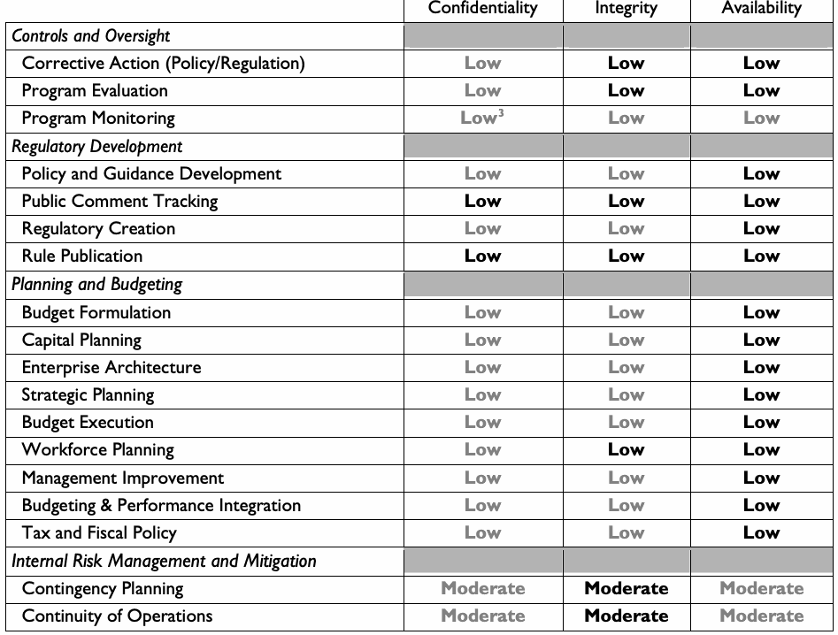
| 機密性 | 完全性 | 可用性 | |
| 統制・監督 | |||
| 是正措置（政策／規制） | 低 | 低 | 低 |
| プログラム評価 | 低 | 低 | 低 |
| プログラム監視 | 低3 | 低 | 低 |
| 規制策定 | |||
| 方針およびガイダンスの策定 | 低 | 低 | 低 |
| パブリックコメント追跡 | 低 | 低 | 低 |
| 規制の制定 | 低 | 低 | 低 |
| 規則の公表 | 低 | 低 | 低 |
| 計画および予算編成 | |||
| 予算策定 | 低 | 低 | 低 |
| 資本計画 | 低 | 低 | 低 |
| エンタープライズアーキテクチャ | 低 | 低 | 低 |
| 戦略計画 | 低 | 低 | 低 |
| 予算執行 | 低 | 低 | 低 |
| 人材計画 | 低 | 低 | 低 |
| 経営改善 | 低 | 低 | 低 |
| 予算編成 & 業績統合 | 低 | 低 | 低 |
| 税務および財政政策 | 低 | 低 | 低 |
| 内部リスク管理および緩和 | |||
| 緊急時対応計画 | 中 | 中 | 中 |
| 業務継続 | 中 | 中 | 中 |
| Confidentiality | Integrity | Availability | |
| Service Recovery | Low | Low | Low |
| Revenue Collection | |||
| Debt Collection | Moderate | Low | Low |
| User Fee Collection | Low | Low | Moderate |
| Federal Asset Sales | Low | Moderate | Low |
| Public Affairs | |||
| Customer Services | Low | Low | Low |
| Official Information Dissemination | Low | Low | Low |
| Product Outreach | Low | Low | Low |
| Public Relations | Low | Low | Low |
| Legislative Relations | |||
| Legislation Tracking | Low | Low | Low |
| Legislation Testimony | Low | Low | Low |
| Proposal Development | Moderate | Low | Low |
| Congressional Liason Operations | Moderate | Low | Low |
| General Government | |||
| Central Fiscal Operations4 | Moderate | Low | Low |
| Legislative Functions | Low | Low | Low |
| Executive Functions5 | Low | Low | Low |
| Central Property Management | Low6 | Low | Low7 |
| Central Personnel Management | Low | Low | Low |
| Taxation Management | Moderate | Low | Low |
| Central Records and Statistics Management | Moderate | Low | Low |
| Income Information8 | Moderate | Moderate | Moderate |
| Personal Identity and Authentication8 | Moderate | Moderate | Moderate |
| Entitlement Event Information8 | Moderate | Moderate | Moderate |
| Representative Payee Information8 | Moderate | Moderate | Moderate |
| General Information9 | Low | Low | Low |
原本PDFの抜粋画像
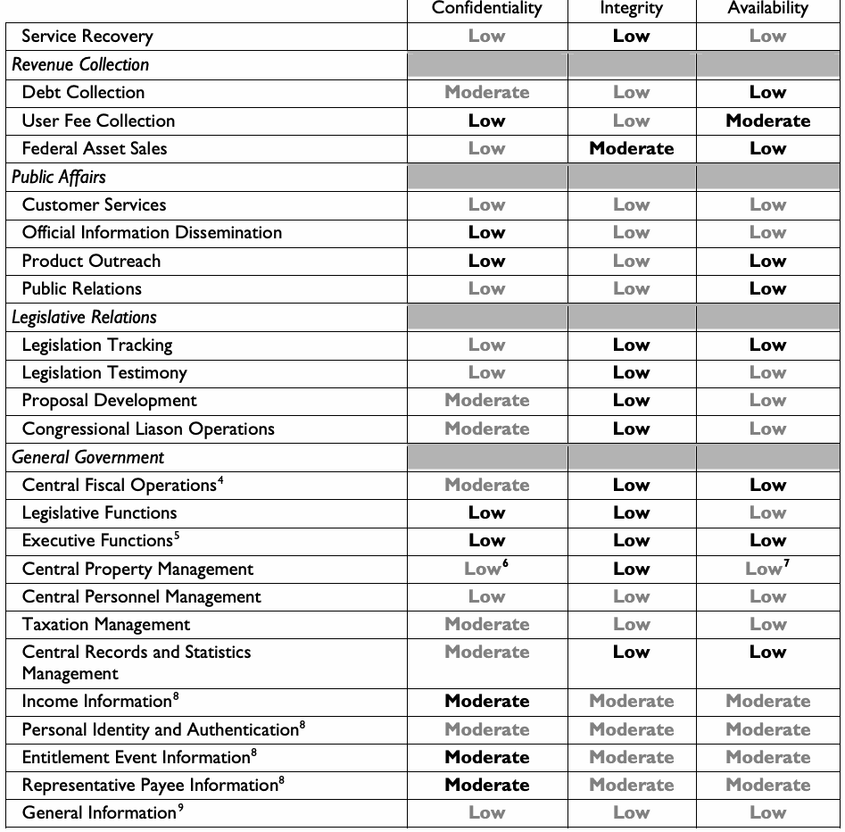
| 機密性 | 完全性 | 可用性 | |
| サービス復旧 | 低 | 低 | 低 |
| 収入徴収 | |||
| 債権回収 | 中 | 低 | 低 |
| 利用料徴収 | 低 | 低 | 中 |
| 連邦資産売却 | 低 | 中 | 低 |
| 広報 | |||
| 顧客サービス | 低 | 低 | 低 |
| 公式情報の普及 | 低 | 低 | 低 |
| 製品周知 | 低 | 低 | 低 |
| 広報活動 | 低 | 低 | 低 |
| 立法関係 | |||
| 法案追跡 | 低 | 低 | 低 |
| 立法に関する証言 | 低 | 低 | 低 |
| 提案策定 | 中 | 低 | 低 |
| 議会連絡業務 | 中 | 低 | 低 |
| 一般政府 | |||
| 中央財政業務4 | 中 | 低 | 低 |
| 立法機能 | 低 | 低 | 低 |
| 行政機能5 | 低 | 低 | 低 |
| 中央資産管理 | 低6 | 低 | 低7 |
| 中央人事管理 | 低 | 低 | 低 |
| 税務管理 | 中 | 低 | 低 |
| 中央記録・統計管理 | 中 | 低 | 低 |
| 所得情報8 | 中 | 中 | 中 |
| 個人識別および認証8 | 中 | 中 | 中 |
| 受給資格イベント情報8 | 中 | 中 | 中 |
| 代理受取人情報8 | 中 | 中 | 中 |
| 一般情報9 | 低 | 低 | 低 |
| Confidentiality | Integrity | Availability | |
| Administrative Management | |||
| Facilities, Fleet, and Equipment Mgmt | Low6 | Low7 | Low7 |
| Help Desk Services | Low | Low | Low |
| Security Management | Moderate | Moderate | Low |
| Travel | Low | Low | Low |
| Workplace Policy Development and Management | Low | Low | Low |
| Financial Management | |||
| Asset and Liability Management | Low | Low | Low |
| Reporting and Information | Low | Moderate | Low |
| Funds Control | Moderate | Moderate | Low |
| Accounting | Low | Moderate | Low |
| Payments | Low | Moderate | Low |
| Collections and Receivables | Low | Moderate | Low |
| Cost Accounting/ Performance Measurement | Low | Moderate | Low |
| Human Resource Management | |||
| HR Strategy | Low | Low | Low |
| Staff Acquisition | Low | Low | Low |
| Organization and Position Management | Low | Low | Low |
| Compensation Management | Low | Low | Low |
| Benefits Management | Low | Low | Low |
| Employee Performance Management | Low | Low | Low |
| Employee Relations | Low | Low | Low |
| Labor Relations | Low | Low | Low |
| Separation Management | Low | Low | Low |
| Human Resources Development | Low | Low | Low |
| Supply Chain Management | |||
| Goods Acquisition | Low | Low | Low |
| Inventory Control | Low | Low | Low |
| Logistics Management | Low | Low | Low |
| Services Acquisition | Low | Low | Low |
| Information & Technology Management | |||
| System Development | Low | Moderate | Low |
| Lifecycle/Change Management | Low | Moderate | Low |
| System Maintenance | Low | Moderate | Low |
| IT Infrastructure Maintenance10 | Low | Low | Low |
| Information System Security | Low | Moderate | Low |
原本PDFの抜粋画像
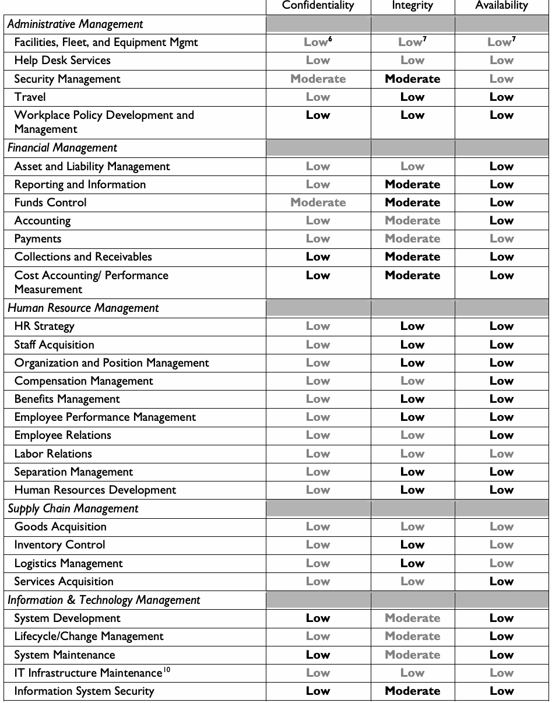
| 機密性 | 完全性 | 可用性 | |
| 管理業務 | |||
| 施設、車両群および設備の管理 | 低6 | 低7 | 低7 |
| ヘルプデスクサービス | 低 | 低 | 低 |
| セキュリティ管理 | 中 | 中 | 低 |
| 旅行 | 低 | 低 | 低 |
| 職場方針の策定および管理 | 低 | 低 | 低 |
| 財務管理 | |||
| 資産・負債管理 | 低 | 低 | 低 |
| 報告および情報 | 低 | 中 | 低 |
| 資金統制 | 中 | 中 | 低 |
| 会計 | 低 | 中 | 低 |
| 支払 | 低 | 中 | 低 |
| 徴収および債権 | 低 | 中 | 低 |
| 原価計算／業績測定 | 低 | 中 | 低 |
| 人事管理 | |||
| 人事戦略 | 低 | 低 | 低 |
| 職員採用 | 低 | 低 | 低 |
| 組織および職位管理 | 低 | 低 | 低 |
| 報酬管理 | 低 | 低 | 低 |
| 福利厚生管理 | 低 | 低 | 低 |
| 職員業績管理 | 低 | 低 | 低 |
| 従業員関係 | 低 | 低 | 低 |
| 労使関係 | 低 | 低 | 低 |
| 退職管理 | 低 | 低 | 低 |
| 人材育成 | 低 | 低 | 低 |
| サプライチェーン管理 | |||
| 物品調達 | 低 | 低 | 低 |
| 在庫管理 | 低 | 低 | 低 |
| 物流管理 | 低 | 低 | 低 |
| サービス調達 | 低 | 低 | 低 |
| 情報 & 技術管理 | |||
| システム開発 | 低 | 中 | 低 |
| ライフサイクル／変更管理 | 低 | 中 | 低 |
| システム保守 | 低 | 中 | 低 |
| ITインフラ保守10 | 低 | 低 | 低 |
| 情報システムセキュリティ | 低 | 中 | 低 |
| Confidentiality | Integrity | Availability | |
| Record Retention | Low | Low | Low |
| Information Management11 | Low | Moderate | Low |
| System and Network Monitoring | Moderate | Moderate | Low |
| Information Sharing | N/A | N/A | N/A |
原本PDFの抜粋画像
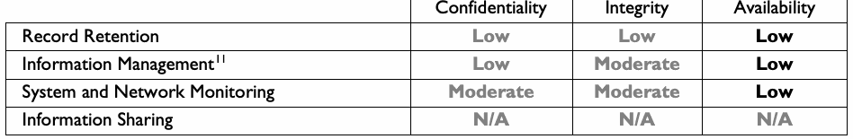
| 機密性 | 完全性 | 可用性 | |
| 記録保持 | 低 | 低 | 低 |
| 情報管理11 | 低 | 中 | 低 |
| システムおよびネットワーク監視 | 中 | 中 | 低 |
| 情報共有 | N/A | N/A | N/A |
C.2 Rationale and Factors for Services Delivery Support Information
C.2 サービス提供支援情報の根拠および要因
未レビュー訳Services delivery support functions provide the critical policy, programmatic, and managerial foundation to support Federal government operations. Security objectives and impact levels for service delivery support information and systems are generally determined by the natures of the supported direct services and constituencies being supported. If a system stores, processes, or communicates national security information, it is defined as a national security system, and is outside the scope of this guideline.12 Service delivery support activities are defined in this section.
サービス提供支援機能は、連邦政府の運営を支える重要な政策、プログラムおよび管理の基盤を提供する。サービス提供支援情報およびシステムのセキュリティ目標と影響度は、一般に、支援対象となる直接サービスおよび利用者の性質によって決まる。システムが国家安全保障情報を保存、処理または通信する場合、そのシステムは国家安全保障システムと定義され、本ガイドラインの適用範囲外となる。12 サービス提供支援活動は本節で定義する。
未レビュー訳C.2.1 Controls and Oversight
C.2.1 統制および監督
未レビュー訳Controls and Oversight information is used to ensure that the operations and programs of the Federal government and its external business partners comply with applicable laws and regulations and prevent waste, fraud, and abuse.
統制および監督に関する情報は、連邦政府およびその外部業務パートナーの運用およびプログラムが、適用される法律および規制を遵守し、浪費、詐欺および濫用を防止することを確保するために使用される。
C.2.1.1 Corrective Action Information Type
C.2.1.1 是正措置情報タイプ
未レビュー訳Corrective Action involves the enforcement functions necessary to remedy programs that have been found non-compliant with a given law, regulation, or policy. The recommended security categorization for the corrective action information type is as follows:
是正措置には、特定の法律、規制または方針に不適合と判明したプログラムを是正するために必要な執行機能が含まれる。是正措置情報タイプに推奨されるセキュリティカテゴリは次のとおりである。
Security Category = {(confidentiality, Low), (integrity, Low), (availability, Low)}
セキュリティカテゴリ = {(機密性, 低), (完全性, 低), (可用性, 低)}
未レビュー訳Confidentiality
機密性
未レビュー訳The confidentiality impact level is the effect of unauthorized disclosure of corrective action information on the ability of responsible agencies to remedy internal or external programs that have been found non-compliant with a given law, regulation, or policy. Unauthorized disclosure of most corrective action information should have only a limited adverse effect on agency operations, assets, or individuals.
機密性の影響度レベルとは、特定の法律、規制または方針に不適合と判明した内部または外部のプログラムを所管機関が是正する能力に対して、是正措置情報が許可なく開示された場合に及ぼす影響である。是正措置情報の大半が許可なく開示されても、機関の運用、資産または個人に対する影響は限定的な悪影響にとどまるはずである。
未レビュー訳Special Factors Affecting Confidentiality Impact Determination: Where more sensitive information is involved, it will probably be personal information subject to the Privacy Act of 1974 or information that is proprietary to a corporation or other organization. Such information will often be assigned a moderate confidentiality impact level. The Privacy Act Information provisional impact levels are documented in the Personal Identity and Authentication information type. Additionally, there are legislative mandates prohibiting unauthorized disclosure of trade secrets. Trade secrets will generally be assigned a moderate confidentiality impact level.
機密性影響度の判定に影響する特別要因：より機微な情報が含まれる場合、それはおそらく Privacy Act of 1974 の適用対象となる個人情報、または企業その他の組織に固有の情報である。そのような情報には、中程度の機密性影響度レベルが割り当てられることが多い。Privacy Act Information の暫定影響度レベルは、Personal Identity and Authentication 情報タイプに記載されている。さらに、営業秘密の許可のない開示を禁じる法令上の義務がある。営業秘密には一般に、中程度の機密性影響度レベルが割り当てられる。
未レビュー訳Recommended Confidentiality Impact Level: The provisional confidentiality impact level recommended for corrective action information is low.
推奨される機密性影響度レベル：是正措置情報について推奨される暫定的な機密性影響度レベルは低である。
未レビュー訳Integrity
完全性
未レビュー訳The consequences of undetected unauthorized modification or destruction of corrective action information can conceivably compromise the effectiveness of compliance enforcement actions (e.g., by providing violators with a basis for claiming investigative or enforcement irregularities, thus supporting legal challenges to proposed corrective actions). The integrity impact level is based on the specific mission and the data supporting that mission, not on the time required to detect the modification or destruction of information. Unauthorized modification or destruction of most corrective action information should have only a limited adverse effect on agency operations, assets, or individuals.
是正措置情報の検知されない許可のない変更または破壊は、コンプライアンス執行措置の有効性を損なう可能性がある（例えば、違反者に調査または執行上の不備を主張する根拠を与え、それによって提案された是正措置に対する法的異議申立てを後押しする）。完全性の影響度レベルは、情報の変更または破壊を検知するのに要する時間ではなく、特定の任務およびその任務を支えるデータに基づく。是正措置情報の大半が許可なく変更または破壊されても、機関の運用、資産または個人に対する影響は限定的な悪影響にとどまるはずである。
Recommended Integrity Impact Level: The provisional integrity impact level recommended for corrective action information is low.
推奨される完全性影響度レベル：是正措置情報について推奨される暫定的な完全性影響度レベルは低である。
未レビュー訳Availability
可用性
未レビュー訳The availability impact level is based on the specific mission and the data supporting that mission, not on the time required to re-establish access to the corrective action information. The availability impact is also dependent on whether the data is time-critical. In most cases, disruption of access to corrective action information can be expected to have only a limited adverse effect on agency operations, agency assets, or individuals.
可用性の影響度レベルは、是正措置情報へのアクセスを再確立するのに要する時間ではなく、特定の任務およびその任務を支えるデータに基づく。可用性への影響は、データが時間的制約を受けるかどうかにも左右される。ほとんどの場合、是正措置情報へのアクセスが中断されても、機関の運用、機関の資産または個人に対する影響は限定的な悪影響にとどまると予想される。
未レビュー訳Recommended Availability Impact Level: The provisional availability impact level recommended for corrective action information is low.
推奨される可用性影響度レベル：是正措置情報について推奨される暫定的な可用性影響度レベルは低である。
未レビュー訳C.2.1.2 Program Evaluation Information Type
C.2.1.2 プログラム評価情報タイプ
未レビュー訳Program Evaluation involves the analysis of internal and external program effectiveness and the determination of corrective actions as appropriate. The impact levels should be commensurate with the impact levels of the program that is being evaluated. For example, if the program contains very sensitive financial data with moderate impact levels for confidentiality and integrity, the program evaluation impact levels for confidentiality and integrity should also be moderate. The recommended security categorization for the program evaluation information type is as follows:
プログラム評価には、内部および外部のプログラムの有効性の分析と、適切な場合の是正措置の決定が含まれる。影響度レベルは、評価対象のプログラムの影響度レベルに見合うべきである。例えば、プログラムに機微性の高い財務データが含まれ、機密性および完全性の影響度レベルが中程度である場合、プログラム評価の機密性および完全性の影響度レベルも中程度とすべきである。プログラム評価情報タイプに推奨されるセキュリティカテゴリは次のとおりである。
未レビュー訳Security Category = {(confidentiality, Low), (integrity, Low), (availability, Low)}
セキュリティカテゴリ = {(機密性, 低), (完全性, 低), (可用性, 低)}
未レビュー訳The confidentiality impact level is the effect of unauthorized disclosure of program evaluation information on the abilities of responsible agencies to analyze internal and external program effectiveness and to determine appropriate corrective actions. The confidentiality impact of program evaluation information is largely event-driven. Once the evaluation has been reported, most program evaluation information is in the public domain. However, premature unauthorized disclosure of program evaluation information can alert personnel associated with programs under evaluation to the focus and preliminary findings of investigative and evaluation activities.
機密性の影響度レベルとは、所管機関が内部および外部のプログラムの有効性を分析し、適切な是正措置を決定する能力に対して、プログラム評価情報が許可なく開示された場合に及ぼす影響である。プログラム評価情報の機密性への影響は、主として事象に左右される。評価が報告された後は、プログラム評価情報の大半は公開領域にある。しかし、プログラム評価情報が時期尚早に許可なく開示されると、評価対象プログラムの関係者に、調査および評価活動の焦点や暫定的な調査結果を知らせてしまう可能性がある。
未レビュー訳Special Factors Affecting Confidentiality Impact Determination: Where a major programs or human safety is at stake, actions taken based on unauthorized disclosure of program evaluation information can pose a threat to human life or a loss of major assets. In such cases, the confidentiality impact is high. Unauthorized disclosure of most program evaluation information often has the potential to seriously affect agency operations. Also, some program evaluation information, particularly in the case of current investigations, includes personal information subject to the Privacy Act of 1974 and/or information that is proprietary to a corporation or other organization. The Privacy Act Information provisional impact levels are documented in the Personal Identity and Authentication information type. Additionally, there are legislative mandates prohibiting unauthorized disclosure of trade secrets. Trade secrets will generally be assigned a moderate confidentiality impact level. If the program evaluation information is moved to the public domain, the confidentiality impact level becomes Not Applicable (NA).
機密性影響度の判定に影響する特別要因：大規模なプログラムまたは人の安全が問題となる場合、プログラム評価情報の許可のない開示に基づいて講じられる措置が、人命への脅威または主要資産の損失をもたらす可能性がある。そのような場合、機密性影響度は高い。プログラム評価情報の大半が許可なく開示されると、機関の運用に深刻な影響を及ぼす可能性がある。また、一部のプログラム評価情報、特に進行中の調査に関するものには、Privacy Act of 1974 の適用対象となる個人情報、および／または企業その他の組織に固有の情報が含まれる。Privacy Act Information の暫定影響度レベルは、Personal Identity and Authentication 情報タイプに記載されている。さらに、営業秘密の許可のない開示を禁じる法令上の義務がある。営業秘密には一般に、中程度の機密性影響度レベルが割り当てられる。プログラム評価情報が公開領域に移された場合、機密性影響度レベルは該当なし（NA）となる。
未レビュー訳Recommended Confidentiality Impact Level: Because there are many cases in which unauthorized disclosure of program evaluation information will have only a limited adverse effect on agency operations, assets, or individuals, the provisional confidentiality impact level recommended for program evaluation information is low.
推奨される機密性影響度レベル：プログラム評価情報が許可なく開示されても、機関の運用、資産または個人に対する影響が限定的な悪影響にとどまる場合が多いため、プログラム評価情報について推奨される暫定的な機密性影響度レベルは低である。
未レビュー訳Integrity
完全性
未レビュー訳The consequences of undetected unauthorized modification or destruction of program evaluation information can compromise the effectiveness of an evaluation program (e.g., by providing false information intended to mislead investigators or evaluators or to give program personnel a basis for claiming investigative or evaluative irregularities). The integrity impact level is based on the specific mission and the data supporting that mission, not on the time required to detect the modification or destruction of information. Although there are time-sensitive exceptions, unauthorized modification or destruction of most program evaluation information should have only a limited adverse effect on agency operations, assets, or individuals.
プログラム評価情報の検知されない許可のない変更または破壊は、評価プログラムの有効性を損なう可能性がある（例えば、調査担当者または評価担当者を欺くことを意図した虚偽情報を提供したり、プログラム担当者に調査上または評価上の不備を主張する根拠を与えたりする）。完全性の影響度レベルは、情報の変更または破壊を検知するのに要する時間ではなく、特定の任務およびその任務を支えるデータに基づく。時間的制約に関する例外はあるものの、プログラム評価情報の大半が許可なく変更または破壊されても、機関の運用、資産または個人に対する影響は限定的な悪影響にとどまるはずである。
未レビュー訳Recommended Integrity Impact Level: The provisional integrity impact level recommended for program evaluation information is low.
推奨される完全性影響度レベル：プログラム評価情報について推奨される暫定的な完全性影響度レベルは低である。
未レビュー訳Availability
可用性
未レビュー訳The availability impact level is based on the specific mission and the data supporting that mission, not on the time required to re-establish access to the program evaluation information. Although there are time-sensitive exceptions, most program evaluation processes are tolerant of reasonable delays. In most cases, disruption of access to program evaluation information can be expected to have only a limited adverse effect on agency operations, agency assets, or individuals. program evaluation information is low.
可用性の影響度レベルは、プログラム評価情報へのアクセスを再確立するのに要する時間ではなく、特定の任務およびその任務を支えるデータに基づく。時間的制約に関する例外はあるものの、プログラム評価プロセスの大半は合理的な遅延を許容する。ほとんどの場合、プログラム評価情報へのアクセスが中断されても、機関の運用、機関の資産または個人に対する影響は限定的な悪影響にとどまると予想される。プログラム評価情報は低である。
未レビュー訳C.2.1.3 Program Monitoring Information Type
C.2.1.3 プログラム監視情報タイプ
未レビュー訳Program Monitoring involves the data-gathering activities required to determine the effectiveness of internal and external programs and the extent to which they comply with related laws, regulations, and policies. The impact levels should be commensurate with the impact levels of the programs that are being monitored. For example, if a program contains very sensitive financial data with moderate impact levels for confidentiality and integrity, the program monitoring impact levels for confidentiality and integrity should also be moderate. Subject to exception conditions described below, the recommended security categorization for the program monitoring information type is as follows:
プログラム監視には、内部および外部のプログラムの有効性と、それらが関連する法律、規制および方針をどの程度遵守しているかを判定するために必要なデータ収集活動が含まれる。影響度レベルは、監視対象プログラムの影響度レベルに見合うべきである。例えば、プログラムに機微性の高い財務データが含まれ、機密性および完全性の影響度レベルが中程度である場合、プログラム監視の機密性および完全性の影響度レベルも中程度とすべきである。以下に記載する例外条件に従うことを条件として、プログラム監視情報タイプに推奨されるセキュリティカテゴリは次のとおりである。
Security Category = {(confidentiality, Low), (integrity, Low), (availability, Low)}
セキュリティカテゴリ = {(機密性, 低), (完全性, 低), (可用性, 低)}
未レビュー訳Confidentiality
機密性
未レビュー訳The confidentiality impact level is the effect of unauthorized disclosure of program monitoring information on the ability of responsible agencies to perform data-gathering activities required to determine the effectiveness of internal and external programs and the extent to which they comply with related laws, regulations, and policies.
機密性の影響度レベルとは、内部および外部のプログラムの有効性と、それらが関連する法律、規制および方針をどの程度遵守しているかを判定するために必要なデータ収集活動を所管機関が実施する能力に対して、プログラム監視情報が許可なく開示された場合に及ぼす影響である。
未レビュー訳Special Factors Affecting Confidentiality Impact Determination: There are legislative mandates prohibiting unauthorized disclosure of trade secrets. Trade secrets will generally be assigned a moderate confidentiality impact level. Note that national security information and national security systems are outside the scope of this guideline. Otherwise, where the data being collected belongs to one of the information types described in this guideline, the confidentiality impact assigned the data and system is that of the highest impact information type collected. Unauthorized disclosure of program monitoring information can alert personnel associated with programs being monitored to the focus and implications of monitoring activities. Where a major programs or human safety is at stake, actions taken based on unauthorized disclosure of program monitoring information can pose a threat to human life or a loss of major assets. In such cases, the confidentiality impact is high. If the program monitoring information is moved to the public domain, the confidentiality impact level becomes Not Applicable (NA).
機密性影響度の判定に影響する特別要因：営業秘密の許可のない開示を禁じる法令上の義務がある。営業秘密には一般に、中程度の機密性影響度レベルが割り当てられる。なお、国家安全保障情報および国家安全保障システムは、本ガイドラインの適用範囲外である。それ以外の場合、収集対象データが本ガイドラインに記載される情報タイプのいずれかに属するならば、そのデータおよびシステムに割り当てられる機密性影響度は、収集された情報タイプのうち最も高い影響度となる。プログラム監視情報が許可なく開示されると、監視対象プログラムの関係者に、監視活動の焦点や意味合いを知らせてしまう可能性がある。大規模なプログラムまたは人の安全が問題となる場合、プログラム監視情報の許可のない開示に基づいて講じられる措置が、人命への脅威または主要資産の損失をもたらす可能性がある。そのような場合、機密性影響度は高い。プログラム監視情報が公開領域に移された場合、機密性影響度レベルは該当なし（NA）となる。
未レビュー訳Recommended Confidentiality Impact Level: Although there are many circumstances in which serious adverse effects on agency operations, agency assets, or individuals can result to justify a moderate base confidentiality impact level for program monitoring information, in most Federal environments, unauthorized disclosure will have only a limited adverse effect on agency operations, assets, or individuals. Consequently, for most systems, a low provisional confidentiality impact level is recommended for program monitoring information.
推奨される機密性影響度レベル：プログラム監視情報について中程度の基本機密性影響度レベルを正当化するほど、機関の運用、機関の資産または個人に深刻な悪影響が生じ得る状況は多い。しかし、連邦政府の環境の大半では、許可のない開示による影響は機関の運用、資産または個人に対する限定的な悪影響にとどまる。したがって、ほとんどのシステムでは、プログラム監視情報に低い暫定的機密性影響度レベルを推奨する。
未レビュー訳Integrity
完全性
未レビュー訳The consequences of unauthorized modification or destruction of program monitoring information can compromise the effectiveness of the monitoring program. Although there may be time-sensitive program monitoring situations, the integrity impact level is based on the specific mission and the data supporting that mission, not on the time required to detect the modification or destruction of information. The damage likely to be caused by unauthorized modification or destruction of program monitoring information may have consequent serious adverse effects on agency operations or public confidence in the agency.
プログラム監視情報が許可なく変更または破壊されると、監視プログラムの有効性が損なわれる可能性がある。時間的制約のあるプログラム監視の状況もあり得るが、完全性の影響度レベルは、情報の変更または破壊を検知するのに要する時間ではなく、特定の任務およびその任務を支えるデータに基づく。プログラム監視情報が許可なく変更または破壊された場合に生じると見込まれる損害は、機関の運用または機関に対する公衆の信頼に深刻な悪影響を及ぼす可能性がある。
未レビュー訳Special Factors Affecting Integrity Impact Determination: The consequences can be particularly serious if the destruction or modification of monitoring information invalidates evaluation results concerning major programs or concerning threats to human safety. The integrity impact resulting from unauthorized modification or deletion of program monitoring information depends in part on the nature of the laws or policies with which compliance is being determined and in part on the criticality of the processes being monitored. For example, in the case of safety regulations affecting manned space flight, the integrity impact level may be high.
完全性影響度の判定に影響する特別要因：監視情報の破壊または変更により、大規模なプログラムまたは人の安全に対する脅威に関する評価結果が無効になる場合、その結果は特に深刻になり得る。プログラム監視情報の許可のない変更または削除による完全性への影響は、遵守状況を判定する対象となる法律または方針の性質と、監視対象プロセスの重要性の双方に部分的に依存する。例えば、有人宇宙飛行に影響する安全規制の場合、完全性影響度レベルは高となる場合がある。
未レビュー訳Recommended Integrity Impact Level: There are some regulatory environments in which a high or moderate impact level is appropriate. For most compliance monitoring information, the recommended provisional integrity impact level is low.
推奨される完全性影響度レベル：高または中程度の影響度レベルが適切な規制環境もある。ほとんどのコンプライアンス監視情報について、推奨される暫定的な完全性影響度レベルは低である。
未レビュー訳Availability
可用性
未レビュー訳The availability impact level is based on the specific mission and the data supporting that mission, not on the time required to re-establish access to the program monitoring information. Although there may be time-sensitive program monitoring situations, more typically, disruption of access to program monitoring information will have only a limited adverse effect on agency operations, agency assets, or individuals.
可用性の影響度レベルは、プログラム監視情報へのアクセスを再確立するのに要する時間ではなく、特定の任務およびその任務を支えるデータに基づく。時間的制約のあるプログラム監視の状況もあり得るが、通常は、プログラム監視情報へのアクセスが中断されても、機関の運用、機関の資産または個人に対する影響は限定的な悪影響にとどまる。
未レビュー訳Special Factors Affecting Availability Impact Determination: There are a limited number of compliance monitoring operations for which temporary loss of availability is likely to significantly degrade mission capability, place the agency at a significant disadvantage, result in loss of major assets, or pose a threat to human life. This can result in assignment of a moderate impact level to such information.
可用性影響度の判定に影響する特別要因：一時的な可用性の喪失によって、任務遂行能力が大幅に低下する、機関が著しく不利な立場に置かれる、主要資産の損失が生じる、または人命への脅威が生じる可能性があるコンプライアンス監視業務は限られている。このような情報には、中程度の影響度レベルが割り当てられる場合がある。
未レビュー訳Recommended Availability Impact Level: The provisional availability impact level recommended for program monitoring information is low.
推奨される可用性影響度レベル：プログラム監視情報について推奨される暫定的な可用性影響度レベルは低である。
未レビュー訳C.2.2 Regulatory Development
C.2.2 規制策定
未レビュー訳Regulatory Development involves activities associated with providing input to the lawmaking process in developing regulations, policies, and guidance to implement laws.
規制策定には、法律を実施するための規制、方針および指針を策定する際に、立法プロセスに意見を提供することに関連する活動が含まれる。
C.2.2.1 Policy and Guidance Development Information Type
C.2.2.1 方針および指針の策定情報タイプ
未レビュー訳Policy and Guidance Development involves the creation and dissemination of guidelines to assist in the interpretation and implementation of regulations. In most cases, the effect on public welfare of a loss of policy and guidance development mission capability can be expected to be delayed rather than immediate. As a result, the potential for consequent loss of human life or of major national assets is relatively low, since these most catastrophic consequences of impairment to mission capability can, in most cases, be corrected before they are fully realized. The recommended security categorization for the policy and guidance development information type is as follows:
方針および指針の策定には、規制の解釈および実施を支援する指針の作成と普及が含まれる。ほとんどの場合、方針および指針の策定に関する任務遂行能力が失われた場合の公衆福祉への影響は、即時ではなく遅れて現れると予想される。その結果として人命または主要な国家資産が失われる可能性は比較的低い。任務遂行能力の低下による最も破局的な結果は、ほとんどの場合、完全に現実化する前に是正できるためである。方針および指針の策定情報タイプに推奨されるセキュリティカテゴリは次のとおりである。
未レビュー訳Security Category = {(confidentiality, Low), (integrity, Low), (availability, Low)}
セキュリティカテゴリ = {(機密性, 低), (完全性, 低), (可用性, 低)}
未レビュー訳The confidentiality impact level is the effect of unauthorized disclosure of policy and guidance information on the ability of responsible agencies to create and disseminate guidelines to assist in the interpretation and implementation of regulations. The confidentiality impact of policy and guidance information is largely event-driven. Once a policy or guidance statement has been promulgated, most policy and guidance information is in the public domain. However, premature unauthorized disclosure of candidate policy and guidance material can result in disruption of (and inappropriate influence of special interests on) the policy development process.
機密性の影響度レベルとは、所管機関が規制の解釈および実施を支援する指針を作成し、普及させる能力に対して、方針および指針に関する情報が許可なく開示された場合に及ぼす影響である。方針および指針に関する情報の機密性への影響は、主として事象に左右される。方針または指針の声明が公布された後は、方針および指針に関する情報の大半は公開領域にある。しかし、策定中の方針および指針資料が時期尚早に許可なく開示されると、方針策定プロセスが混乱し、特別利益団体から不適切な影響を受ける可能性がある。
未レビュー訳Special Factors Affecting Confidentiality Impact Determination: The effects of loss of confidentiality of guidelines during the formative stage can result in attempts by affected entities and other interested parties to influence and/or impede the policy and guideline development process. Premature public release of formative policies and guidelines before internal coordination and review can result in unnecessary damage to public confidence in the agency. This is particularly likely where the release includes unedited internal commentary and discussion. Delays can impair an agency’s mission, but loss of public confidence can do serious and persistent harm to an agency’s ability to effectively perform its mission. In such cases, the provisional confidentiality impact level recommended for policy and guidance development information is moderate. When the policy and guidance information is in the public domain, the confidentiality impact level becomes Not Applicable (NA).
機密性影響度の判定に影響する特別要因：形成段階にある指針の機密性が失われると、影響を受ける組織やその他の利害関係者が、方針および指針の策定プロセスに影響を及ぼそうとしたり、これを妨げようとしたりする可能性がある。内部調整およびレビューが完了する前に、形成段階の方針および指針が時期尚早に公開されると、機関に対する公衆の信頼が不必要に損なわれる可能性がある。公開に未編集の内部コメントや議論が含まれる場合、特にその可能性が高い。遅延は機関の任務を損なう可能性があるが、公衆の信頼の喪失は、機関が任務を効果的に遂行する能力に深刻かつ長期的な損害を与え得る。このような場合、方針および指針の策定情報に推奨される暫定的な機密性影響度レベルは中程度である。方針および指針に関する情報が公開領域にある場合、機密性影響度レベルは該当なし（NA）となる。
未レビュー訳Recommended Confidentiality Impact Level: Although there are cases in which unauthorized and premature disclosure of policy and guidance information can result in serious consequences for an agency, most of this information is intended to be available to the general public. Consequently, the provisional confidentiality impact level recommended for policy and guidance development information is low.
推奨される機密性影響度レベル：方針および指針に関する情報が許可なく時期尚早に開示されると、機関に深刻な結果をもたらす場合もあるが、その大半は一般公衆が利用できることを意図した情報である。したがって、方針および指針の策定情報に推奨される暫定的な機密性影響度レベルは低である。
未レビュー訳Integrity
完全性
未レビュー訳The integrity impact level is based on the specific mission and the data supporting that mission, not on the time required to detect the modification or destruction of information.
完全性の影響度レベルは、情報の変更または破壊を検知するのに要する時間ではなく、特定の任務およびその任務を支えるデータに基づく。
Special Factors Affecting Integrity Impact Determination: Some policy and guidance information is time-critical. Unauthorized modification or destruction of information affecting external communications that contain policy and guidance development information (e.g., web pages, electronic mail) may adversely affect operations or public confidence in the agency, but the damage to the mission would usually be limited. Public confidence consequences can be expected to be much more serious in cases of agencies that have national defense, intelligence, or information security missions. In such cases, the impact may be at least moderate.
完全性影響度の判定に影響する特別要因：方針および指針に関する情報の中には、時間的制約を受けるものがある。方針および指針の策定情報を含む外部向け通信（例えば、ウェブページ、電子メール）に影響する情報が許可なく変更または破壊されると、運用または機関に対する公衆の信頼に悪影響を及ぼす可能性があるが、任務への損害は通常限定的である。国防、情報活動または情報セキュリティを任務とする機関の場合、公衆の信頼に対する影響ははるかに深刻になると予想される。そのような場合、影響度は少なくとも中程度となる可能性がある。
未レビュー訳Recommended Integrity Impact Level: The provisional integrity level recommended for policy and guidance development information is low.
推奨される完全性影響度レベル：方針および指針の策定情報に推奨される暫定的な完全性影響度レベルは低である。
未レビュー訳Availability
可用性
未レビュー訳The availability impact level is based on the specific mission and the data supporting that mission, not on the time required to re-establish access to the policy and guidance development information. Though some policy and guidance information is time-critical, the policy and guidance development process is usually tolerant of delays.
可用性の影響度レベルは、方針および指針の策定情報へのアクセスを再確立するのに要する時間ではなく、特定の任務およびその任務を支えるデータに基づく。方針および指針に関する情報の一部は時間的制約を受けるものの、方針および指針の策定プロセスは通常、遅延を許容する。
未レビュー訳Recommended Availability Impact Level: the provisional availability impact level recommended for policy and guidance development information is low.
推奨される可用性影響度レベル：方針および指針の策定情報に推奨される暫定的な可用性影響度レベルは低である。
未レビュー訳C.2.2.2 Public Comment Tracking Information Type
C.2.2.2 公衆コメント追跡情報タイプ
未レビュー訳Public Comment Tracking involves the activities of soliciting, maintaining, and responding to public comments regarding proposed regulations. Subject to exception conditions described below, the recommended security categorization for the public comment tracking information type is as follows:
公衆コメント追跡には、規制案に関する公衆コメントを募集し、管理し、回答する活動が含まれる。以下に記載する例外条件に従うことを条件として、公衆コメント追跡情報タイプに推奨されるセキュリティカテゴリは次のとおりである。
未レビュー訳Security Category = {(confidentiality, Low), (integrity, Low), (availability, Low)}
セキュリティカテゴリ = {(機密性, 低), (完全性, 低), (可用性, 低)}
未レビュー訳Confidentiality
機密性
未レビュー訳The confidentiality impact level is the effect of unauthorized disclosure of public comment tracking information on the ability of responsible agencies to solicit, maintain, and respond to public comments regarding proposed regulations. The effects of loss of confidentiality of information associated with the public comment process are unlikely to pose the threat of serious harm to agency assets, personnel or operations.
機密性の影響度レベルとは、規制案に関する公衆コメントを募集し、管理し、回答する所管機関の能力に対して、公衆コメント追跡情報が許可なく開示された場合に及ぼす影響である。公衆コメントプロセスに関連する情報の機密性が失われても、機関の資産、職員または運用に深刻な損害をもたらす脅威となる可能性は低い。
In a few cases, the rationale for public comments can include information that is sensitive in terms of proprietary information sensitive Federal government information, or even national security information. However, such cases are exceptional and the information in question would be expected to be representative of information types covered elsewhere in this guideline.
少数の事例では、公衆コメントの根拠に、企業固有情報、機微な連邦政府情報、さらには国家安全保障情報が含まれる場合がある。しかし、そのような事例は例外的であり、該当情報は本ガイドラインの別の箇所で扱われる情報タイプを代表するものと予想される。
Recommended Confidentiality Impact Level: The provisional confidentiality impact level recommended for public comment tracking information is low.
推奨される機密性影響度レベル：公衆コメント追跡情報に推奨される暫定的な機密性影響度レベルは低である。
未レビュー訳Integrity
完全性
未レビュー訳The integrity impact level is based on the specific mission and the data supporting that mission, not on the time required to detect the modification or destruction of information.
完全性の影響度レベルは、情報の変更または破壊を検知するのに要する時間ではなく、特定の任務およびその任務を支えるデータに基づく。
Unauthorized modification or destruction of information affecting external communications that contain public comment tracking information (e.g., web pages, electronic mail) may adversely affect operations or public confidence in the agency, but the damage to the mission would usually be limited.
公衆コメント追跡情報を含む外部向け通信（例えば、ウェブページ、電子メール）に影響する情報が許可なく変更または破壊されると、運用または機関に対する公衆の信頼に悪影響を及ぼす可能性があるが、任務への損害は通常限定的である。
未レビュー訳Recommended Integrity Impact Level: The provisional integrity impact level recommended for public comment tracking information is low.
推奨される完全性影響度レベル：公衆コメント追跡情報に推奨される暫定的な完全性影響度レベルは低である。
未レビュー訳Availability
可用性
未レビュー訳The availability impact level is based on the specific mission and the data supporting that mission, not on the time required to re-establish access to the public comment tracking information. The effects of disruption of access to public comment tracking information or information systems can delay development of standards, guidelines, or regulations.
可用性の影響度レベルは、公衆コメント追跡情報へのアクセスを再確立するのに要する時間ではなく、特定の任務およびその任務を支えるデータに基づく。公衆コメント追跡情報または情報システムへのアクセスが中断されると、標準、指針または規制の策定が遅れる可能性がある。
未レビュー訳The public comment tracking process is usually tolerant of delays. Permanent loss of comment information may disrupt some government operations by showing a lack of due diligence in response to comments.
公衆コメント追跡プロセスは通常、遅延を許容する。コメント情報が恒久的に失われると、コメントへの対応において相当の注意を払わなかったことを示すことになり、一部の政府業務が混乱する可能性がある。
Recommended Availability Impact Level: The provisional availability impact level recommended for public comment tracking information is low.
推奨される可用性影響度レベル：公衆コメント追跡情報に推奨される暫定的な可用性影響度レベルは低である。
未レビュー訳C.2.2.3 Regulatory Creation Information Type
C.2.2.3 規制作成情報タイプ
未レビュー訳Regulatory Creation involves the activities of researching and drafting proposed and final regulations. Subject to exception conditions described below, the recommended security categorization for the regulatory creation information type is as follows:
規制作成には、規制案および最終規制を調査し、起草する活動が含まれる。以下に記載する例外条件に従うことを条件として、規制作成情報タイプに推奨されるセキュリティカテゴリは次のとおりである。
Security Category = {(confidentiality, Low), (integrity, Low), (availability, Low)}
セキュリティカテゴリ = {(機密性, 低), (完全性, 低), (可用性, 低)}
未レビュー訳Confidentiality
機密性
未レビュー訳The level of confidentiality impact level is the effect of unauthorized disclosure of regulatory creation information on the ability of responsible agencies to research and draft proposed and final regulations. The effects of loss of confidentiality of early drafts of regulations can result in attempts by affected entities and other affected parties to influence and/or impede the regulation development process.
機密性影響度レベルとは、所管機関が規制案および最終規制を調査し、起草する能力に対して、規制作成情報が許可なく開示された場合に及ぼす影響である。規制の初期草案の機密性が失われると、影響を受ける組織やその他の関係者が、規制策定プロセスに影響を及ぼそうとしたり、これを妨げようとしたりする可能性がある。
未レビュー訳Special Factors Affecting Confidentiality Impact Determination: Premature public release of draft regulations before internal coordination and review has been conducted can result in unnecessary criticism of the proposed regulation and even damage public confidence in the agency. In such cases, the provisional confidentiality impact level recommended for regulatory creation information is moderate. These consequences are particularly likely where the release includes unedited internal commentary and discussion. Delays can impair an agency’s mission, but loss of public confidence can do serious and persistent harm to an agency’s ability to effectively perform its mission. If the regulatory information is moved to the public domain, the confidentiality impact level becomes Not Applicable (NA).
機密性影響度の判定に影響する特別要因：内部調整およびレビューの実施前に規制案が時期尚早に公開されると、規制案に対する不必要な批判が生じ、さらには機関に対する公衆の信頼が損なわれる可能性がある。このような場合、規制作成情報に推奨される暫定的な機密性影響度レベルは中程度である。公開に未編集の内部コメントや議論が含まれる場合、特にそのような結果が生じる可能性が高い。遅延は機関の任務を損なう可能性があるが、公衆の信頼の喪失は、機関が任務を効果的に遂行する能力に深刻かつ長期的な損害を与え得る。規制情報が公開領域に移された場合、機密性影響度レベルは該当なし（NA）となる。
未レビュー訳Recommended Confidentiality Impact Level: Because most regulatory information is intended for release to the public, the provisional confidentiality impact level recommended for regulatory creation information is low.
推奨される機密性影響度レベル：規制情報の大半は公衆への公開を意図しているため、規制作成情報に推奨される暫定的な機密性影響度レベルは低である。
未レビュー訳Integrity
完全性
未レビュー訳The integrity impact level is based on the specific mission and the data supporting that mission, not on the time required to detect the modification or destruction of information.
完全性の影響度レベルは、情報の変更または破壊を検知するのに要する時間ではなく、特定の任務およびその任務を支えるデータに基づく。
Special Factors Affecting Integrity Impact Determination: Unauthorized modification or destruction of information affecting external communications that contain regulatory information (e.g., web pages, electronic mail) may adversely affect operations or public confidence in the agency. The consequences of a reduction in public confidence will be more serious for agencies that have national defense, intelligence, or information security missions. In such cases, the impact level may be at least moderate.
完全性影響度の判定に影響する特別要因：規制情報を含む外部向け通信（例えば、ウェブページ、電子メール）に影響する情報が許可なく変更または破壊されると、運用または機関に対する公衆の信頼に悪影響を及ぼす可能性がある。公衆の信頼が低下した場合の影響は、国防、情報活動または情報セキュリティを任務とする機関にとって、より深刻となる。そのような場合、影響度レベルは少なくとも中程度となる可能性がある。
未レビュー訳Recommended Integrity Impact Level: The provisional integrity impact level recommended for regulatory creation information is low.
推奨される完全性影響度レベル：規制作成情報に推奨される暫定的な完全性影響度レベルは低である。
未レビュー訳The availability impact level is based on the specific mission and the data supporting that mission, not on the time required to re-establish access to the regulatory creation information. The regulatory creation process is usually tolerant of delays.
可用性の影響度レベルは、規制作成情報へのアクセスを再確立するのに要する時間ではなく、特定の任務およびその任務を支えるデータに基づく。規制作成プロセスは通常、遅延を許容する。
Recommended Availability Impact Level: The provisional availability impact level recommended for regulatory creation information is low.
推奨される可用性影響度レベル：規制作成情報に推奨される暫定的な可用性影響度レベルは低である。
未レビュー訳C.2.2.4 Rule Publication Information Type
C.2.2.4 規則公布情報タイプ
未レビュー訳Rule Publication includes all activities associated with the publication of a proposed or final rule in the Federal Register and Code of Federal Regulations. Subject to exception conditions described below, the recommended security categorization for the rule publication information type is as follows:
規則公布には、Federal Register および Code of Federal Regulations に規制案または最終規則を掲載することに関連するすべての活動が含まれる。以下に記載する例外条件に従うことを条件として、規則公布情報タイプに推奨されるセキュリティカテゴリは次のとおりである。
未レビュー訳Security Category = {(confidentiality, Low), (integrity, Low), (availability, Low)}
セキュリティカテゴリ = {(機密性, 低), (完全性, 低), (可用性, 低)}
未レビュー訳Confidentiality
機密性
未レビュー訳The confidentiality impact level is the effect of unauthorized disclosure of rule publication information on the ability of responsible agencies to publish proposed or final rules in the Federal Register and Code of Federal Regulations. The published rules are, by definition, public information.
機密性影響度レベルとは、所管機関が Federal Register および Code of Federal Regulations に規制案または最終規則を公布する能力に対して、規則公布情報が許可なく開示された場合に及ぼす影響である。公布された規則は、その定義上、公的情報である。
The effects of loss of confidentiality of information associated with the rule publication process are unlikely to pose the threat of serious harm to agency assets, personnel or operations.
規則公布プロセスに関連する情報の機密性が失われても、機関の資産、職員または運用に深刻な損害をもたらす脅威となる可能性は低い。
Recommended Confidentiality Impact Level: In general, the provisional confidentiality impact level recommended for rule publication information is low.
推奨される機密性影響度レベル：一般に、規則公布情報に推奨される暫定的な機密性影響度レベルは低である。
未レビュー訳Integrity
完全性
未レビュー訳The integrity impact level is based on the specific mission and the data supporting that mission, not on the time required to detect the modification or destruction of information.
完全性の影響度レベルは、情報の変更または破壊を検知するのに要する時間ではなく、特定の任務およびその任務を支えるデータに基づく。
未レビュー訳In the worst cases, errata can be published. Unauthorized modification or destruction of information may result in unnecessary expenditures, some confusion, and limited damage to public confidence in the agency.
最悪の場合、正誤表を公表できる。情報が許可なく変更または破壊されると、不必要な支出、ある程度の混乱、および機関に対する公衆の信頼への限定的な損害が生じる可能性がある。
Recommended Integrity Impact Level: The provisional integrity impact level recommended for rule publication information is low.
推奨される完全性影響度レベル：規則公布情報に推奨される暫定的な完全性影響度レベルは低である。
未レビュー訳Availability
可用性
未レビュー訳The availability impact level is based on the specific mission and the data supporting that mission, not on the time required to re-establish access to the rule publication information.
可用性の影響度レベルは、規則公布情報へのアクセスを再確立するのに要する時間ではなく、特定の任務およびその任務を支えるデータに基づく。
Rule publication processes are usually tolerant of delays.
規則公布プロセスは通常、遅延を許容する。
未レビュー訳Recommended Availability Impact Level: The provisional availability impact level recommended for rule publication information is low.
推奨される可用性影響度レベル：規則公布情報に推奨される暫定的な可用性影響度レベルは低である。
未レビュー訳C.2.3 Planning and Budgeting
C.2.3 計画および予算編成
未レビュー訳Planning and Budgeting involves the activities of determining strategic direction, identifying and establishing programs and processes to enable change, and allocating resources (capital and labor) among those programs and processes.
計画および予算編成には、戦略的方向性の決定、変革を可能にするプログラムおよびプロセスの特定と確立、ならびにそれらのプログラムおよびプロセス間での資源（資本および労働力）の配分に関する活動が含まれる。
未レビュー訳C.2.3.1 Budget Formulation Information Type
C.2.3.1 予算策定情報タイプ
未レビュー訳Budget Formulation involves all activities undertaken to determine priorities for future spending and to develop an itemized forecast of future funding and expenditures during a targeted period of time. This includes the collection and use of performance information to assess the effectiveness of programs and develop budget priorities. Subject to exception conditions described below, the recommended security categorization for the budget formulation information type is as follows:
予算策定には、将来の支出の優先順位を決定し、対象期間中の将来の資金調達および支出について項目別予測を作成するために行われるすべての活動が含まれる。これには、プログラムの有効性を評価し、予算の優先順位を策定するための実績情報の収集および利用が含まれる。以下に記載する例外条件に従うことを条件として、予算策定情報タイプに推奨されるセキュリティカテゴリは次のとおりである。
未レビュー訳Security Category = {(confidentiality, Low), (integrity, Low), (availability, Low)}
セキュリティカテゴリ = {(機密性, 低), (完全性, 低), (可用性, 低)}
未レビュー訳Confidentiality
機密性
未レビュー訳The confidentiality impact level is the effect of unauthorized disclosure of budget formulation information on the ability of responsible agencies to determine priorities for future spending and to develop an itemized forecast of future funding and expenditures during a targeted period of time. Most budget information is supposed to be available to the public.
機密性影響度レベルとは、所管機関が将来の支出の優先順位を決定し、対象期間中の将来の資金調達および支出について項目別予測を作成する能力に対して、予算策定情報が許可なく開示された場合に及ぼす影響である。予算情報の大半は公衆が利用できるようにすることが想定されている。
未レビュー訳Special Factors Affecting Confidentiality Impact Determination: Some budget information of is classified national security information and is outside the scope of this guideline. The effects of loss of confidentiality of budget information or of early drafts of budgets can result in attempts by competing interests to influence and/or impede the regulation development process. The consequences to agency programs and even of the ability of an agency to perform its mission can be very serious. Premature public release of draft budgets before internal coordination and review has been conducted can result in unnecessary criticism of the proposed regulation and even damage public confidence in the agency. These consequences are particularly likely where the release includes unedited internal commentary and discussion. Delays that result from confidentiality compromise can imperil specific agency programs, but loss of public confidence can do persistent harm to an agency’s ability to effectively perform its mission. In such cases, the confidentiality impact level for budget formulation information is moderate. If the budget formulation information is moved to the public domain, the confidentiality impact level becomes Not Applicable (NA).
機密性影響度の判定に影響する特別要因：一部の予算情報は国家安全保障情報として機密指定されており、本ガイドラインの適用範囲外である。予算情報または予算の初期草案の機密性が失われると、競合する利害関係者が規制策定プロセスに影響を及ぼそうとしたり、これを妨げようとしたりする可能性がある。機関のプログラム、さらには機関が任務を遂行する能力への影響は、非常に深刻となり得る。内部調整およびレビューの実施前に予算案が時期尚早に公開されると、規制案に対する不必要な批判が生じ、さらには機関に対する公衆の信頼が損なわれる可能性がある。公開に未編集の内部コメントや議論が含まれる場合、特にそのような結果が生じる可能性が高い。機密性の侵害による遅延は特定の機関プログラムを危険にさらす可能性があるが、公衆の信頼の喪失は、機関が任務を効果的に遂行する能力に持続的な損害を与え得る。このような場合、予算策定情報の機密性影響度レベルは中程度である。予算策定情報が公開領域に移された場合、機密性影響度レベルは該当なし（NA）となる。
未レビュー訳Recommended Confidentiality Impact Level: In spite of the serious harm that can be suffered by an agency due to unauthorized and premature disclosure of draft budget information (and associated commentary), the provisional confidentiality impact level recommended for budget formulation information is low.
推奨される機密性影響度レベル：予算案（および関連する論評）の許可のない時期尚早な開示によって機関が深刻な損害を受ける可能性があるにもかかわらず、予算策定情報に推奨される暫定的な機密性影響度レベルは低である。
未レビュー訳Integrity
完全性
未レビュー訳The integrity impact level is based on the specific mission and the data supporting that mission, not on the time required to detect the modification or destruction of information.
完全性の影響度レベルは、情報の変更または破壊を検知するのに要する時間ではなく、特定の任務およびその任務を支えるデータに基づく。
未レビュー訳Special Factors Affecting Integrity Impact Determination: Some budget formulation information is time-critical. Also, unauthorized modification or destruction of information affecting external communications that contain budget information (e.g., web pages, electronic mail) may adversely affect operations or public confidence in the agency, but the damage to the mission would usually be limited. Public confidence consequences will be more serious for agencies that have national defense, intelligence, or information security missions. In such cases, the impact may be at least moderate.
完全性影響度の判定に影響する特別要因：予算策定情報の中には、時間的制約を受けるものがある。また、予算情報を含む外部向け通信（例えば、ウェブページ、電子メール）に影響する情報が許可なく変更または破壊されると、運用または機関に対する公衆の信頼に悪影響を及ぼす可能性があるが、任務への損害は通常限定的である。国防、情報活動または情報セキュリティを任務とする機関では、公衆の信頼に対する影響がより深刻となる。そのような場合、影響度は少なくとも中程度となる可能性がある。
未レビュー訳Recommended Integrity Impact Level: The provisional integrity impact level recommended for budget formulation information is low.
推奨される完全性影響度レベル：予算策定情報に推奨される暫定的な完全性影響度レベルは低である。
未レビュー訳Availability
可用性
未レビュー訳The availability impact level is based on the specific mission and the data supporting that mission, not on the time required to re-establish access to the budget formulation information.
可用性の影響度レベルは、予算策定情報へのアクセスを再確立するのに要する時間ではなく、特定の任務およびその任務を支えるデータに基づく。
Although some budget formulation information is time-critical, the budget formulation processes are usually tolerant of delays. Excessive recovery delays may result in loss of funding.
予算策定情報の一部は時間的制約を受けるものの、予算策定プロセスは通常、遅延を許容する。復旧の過度な遅延は、資金を失う結果となる可能性がある。
Recommended Availability Impact Level: The provisional availability impact level recommended for budget formulation information is low.
推奨される可用性影響度レベル：予算策定情報に推奨される暫定的な可用性影響度レベルは低である。
未レビュー訳C.2.3.2 Capital Planning Information Type
C.2.3.2 資本計画情報タイプ
未レビュー訳Capital Planning involves the processes for ensuring that appropriate investments are selected for capital expenditures. The recommended provisional security categorization for capital planning information is as follows:
資本計画には、資本支出に適切な投資が選択されるようにするためのプロセスが含まれる。資本計画情報に推奨される暫定的なセキュリティカテゴリは次のとおりである。
Security Category = {(confidentiality, Low), (integrity, Low), (availability, Low)}
セキュリティカテゴリ = {(機密性, 低), (完全性, 低), (可用性, 低)}
未レビュー訳Confidentiality
機密性
未レビュー訳The confidentiality impact level is the effect of unauthorized disclosure of capital planning information on the ability of responsible agencies to ensure that appropriate investments are selected for capital expenditures. The effects of loss of confidentiality of capital investment plans during the formative stage can result in attempts by affected entities and other interested parties to influence and/or impede the policy and guideline development process. Premature public release of draft plans before internal coordination and review can result in unnecessary damage to public confidence in the agency. This is particularly likely where the release includes unedited internal commentary and discussion. The diversion of investment funds that can result from compromise of draft plans can pervert investment priorities in a manner that is prejudicial to public interest. However, the consequence of loss of confidentiality of most capital planning information is likely to do only limited harm to government assets, personnel, or missions.
機密性影響度レベルとは、所管機関が資本支出に適切な投資が選択されるようにする能力に対して、資本計画情報が許可なく開示された場合に及ぼす影響である。形成段階にある資本投資計画の機密性が失われると、影響を受ける組織やその他の利害関係者が、方針および指針の策定プロセスに影響を及ぼそうとしたり、これを妨げようとしたりする可能性がある。内部調整およびレビューが完了する前に計画案が時期尚早に公開されると、機関に対する公衆の信頼が不必要に損なわれる可能性がある。公開に未編集の内部コメントや議論が含まれる場合、特にその可能性が高い。計画案の侵害によって投資資金が流用されると、公共の利益に反する形で投資の優先順位がゆがめられる可能性がある。ただし、資本計画情報の大半について機密性が失われても、政府の資産、職員または任務に生じる損害は限定的であると見込まれる。
Special Factors Affecting Confidentiality Impact Determination: Unauthorized disclosure of some of the background information that supports development of capital investment plans can reveal sensitive vulnerabilities, capabilities, or methods of anti-terrorism, law enforcement, or national security activities. Depending on the information in question, the confidentiality impact can be moderate, high, or involve national security information (outside the scope of this guideline). Also, some capital investment plans of some Federal agencies contain national security information. recommended for capital planning information is low.
機密性影響度の判定に影響する特別要因：資本投資計画の策定を支える背景情報の一部が許可なく開示されると、テロ対策、法執行または国家安全保障活動に関する機微な脆弱性、能力または手法が明らかになる可能性がある。該当する情報によっては、機密性影響度は中程度もしくは高となるか、または国家安全保障情報（本ガイドラインの適用範囲外）に該当する可能性がある。また、一部の連邦機関の資本投資計画には、国家安全保障情報が含まれている。資本計画情報に推奨される機密性影響度レベルは低である。
未レビュー訳Integrity
完全性
未レビュー訳The integrity impact level is based on the specific mission and the data supporting that mission, not on the time required to detect the modification or destruction of information.
完全性の影響度レベルは、情報の変更または破壊を検知するのに要する時間ではなく、特定の任務およびその任務を支えるデータに基づく。
Special Factors Affecting Integrity Impact Determination: Unauthorized modification or destruction of information affecting external communications that contain capital planning information (e.g., web pages, electronic mail) may adversely affect operations or public confidence in the agency, but the damage to the mission would usually be limited. Public confidence consequences will be more serious for agencies that have national defense, intelligence, or information security missions. In such cases, the impact may be at least moderate.
完全性影響度の判定に影響する特別要因：資本計画情報を含む外部向け通信（例えば、ウェブページ、電子メール）に影響する情報が許可なく変更または破壊されると、運用または機関に対する公衆の信頼に悪影響を及ぼす可能性があるが、任務への損害は通常限定的である。国防、情報活動または情報セキュリティを任務とする機関では、公衆の信頼に対する影響がより深刻となる。そのような場合、影響度は少なくとも中程度となる可能性がある。
未レビュー訳Recommended Integrity Impact Level: The provisional integrity level recommended for capital planning information is low.
推奨される完全性影響度レベル：資本計画情報に推奨される暫定的な完全性影響度レベルは低である。
未レビュー訳Availability
可用性
未レビュー訳The availability impact level is based on the specific mission and the data supporting that mission, not on the time required to re-establish access to the capital planning information.
可用性の影響度レベルは、資本計画情報へのアクセスを再確立するのに要する時間ではなく、特定の任務およびその任務を支えるデータに基づく。
The capital planning processes are usually tolerant of delays.
資本計画プロセスは通常、遅延を許容する。
未レビュー訳Recommended Availability Impact Level: The provisional availability impact level recommended for capital planning information is low.
推奨される可用性影響度レベル：資本計画情報に推奨される暫定的な可用性影響度レベルは低である。
未レビュー訳C.2.3.3 Enterprise Architecture Information Type
C.2.3.3 エンタープライズアーキテクチャ情報タイプ
未レビュー訳Enterprise Architecture is an established process for describing the current state and defining the target state and transition strategy for an organization’s people, processes, and technology. The recommended provisional security categorization for the enterprise architecture information type is as follows:
エンタープライズアーキテクチャとは、組織の人員、プロセスおよび技術について、現状を記述し、目標状態および移行戦略を定義するための確立されたプロセスである。エンタープライズアーキテクチャ情報タイプに推奨される暫定的なセキュリティカテゴリは次のとおりである。
未レビュー訳Security Category = {(confidentiality, Low), (integrity, Low), (availability, Low)}
セキュリティカテゴリ = {(機密性, 低), (完全性, 低), (可用性, 低)}
未レビュー訳Confidentiality
機密性
未レビュー訳The confidentiality impact level is the effect of unauthorized disclosure of enterprise architecture information on the ability of responsible agencies to describe the current state and define the target state and transition strategy for an organizations people, processes, and technology. The effects of loss of confidentiality of preliminary draft enterprise architecture plans can result in attempts by affected entities and other interested parties to influence and/or impede the policy and guideline development process. Premature public release of draft plans before internal coordination and review can result in unnecessary damage to public confidence in the agency. This is particularly likely where the release includes unedited internal commentary and discussion. However, the consequence of loss of confidentiality of most enterprise architecture information is likely to do only limited harm to government assets, personnel, or missions.
機密性影響度レベルとは、所管機関が現状を記述し、組織の人員、プロセスおよび技術について目標状態および移行戦略を定義する能力に対して、エンタープライズアーキテクチャ情報が許可なく開示された場合に及ぼす影響である。暫定的なエンタープライズアーキテクチャ計画の機密性が失われると、影響を受ける組織やその他の利害関係者が、方針および指針の策定プロセスに影響を及ぼそうとしたり、これを妨げようとしたりする可能性がある。内部調整およびレビューが完了する前に計画案が時期尚早に公開されると、機関に対する公衆の信頼が不必要に損なわれる可能性がある。公開に未編集の内部コメントや議論が含まれる場合、特にその可能性が高い。ただし、エンタープライズアーキテクチャ情報の大半について機密性が失われても、政府の資産、職員または任務に生じる損害は限定的であると見込まれる。
Special Factors Affecting Confidentiality Impact Determination: Unauthorized disclosure of some of the background information that supports development of Federal enterprise architecture can reveal sensitive vulnerabilities, capabilities, or methods of anti-terrorism, law enforcement, or national security activities.13 Depending on the information in question, the confidentiality impact can be moderate, high, or involve national security information (outside the scope of this guideline). Also, some enterprise architecture plans of some Federal agencies are themselves national security information. Finally, important financial decisions and planning information may be included in this category of information.
機密性影響度の判定に影響する特別要因：連邦政府のエンタープライズアーキテクチャの策定を支える背景情報の一部が許可なく開示されると、テロ対策、法執行または国家安全保障活動に関する機微な脆弱性、能力または手法が明らかになる可能性がある。13 該当する情報によっては、機密性影響度は中程度もしくは高となるか、または国家安全保障情報（本ガイドラインの適用範囲外）に該当する可能性がある。また、一部の連邦機関のエンタープライズアーキテクチャ計画自体が国家安全保障情報である。さらに、この情報カテゴリには、重要な財務上の決定および計画情報が含まれる場合がある。
未レビュー訳Recommended Confidentiality Impact Level: The provisional confidentiality impact level recommended for enterprise architecture information is low.
推奨される機密性影響度レベル：エンタープライズアーキテクチャ情報に推奨される暫定的な機密性影響度レベルは低である。
未レビュー訳Integrity
完全性
未レビュー訳The integrity impact level is based on the specific mission and the data supporting that mission, not on the time required to detect the modification or destruction of information.
完全性の影響度レベルは、情報の変更または破壊を検知するのに要する時間ではなく、特定の任務およびその任務を支えるデータに基づく。
Special Factors Affecting Integrity Impact Determination: Unauthorized modification or destruction of information affecting external communications that contain enterprise architecture information (e.g., web pages, electronic mail) may adversely affect operations or public confidence in the agency, but the damage to the mission would usually be limited. Public confidence consequences will be more serious for agencies that have national defense, intelligence, or information security missions. In such cases, the impact may be at least moderate.
完全性影響度の判定に影響する特別要因：エンタープライズアーキテクチャ情報を含む外部向け通信（例えば、ウェブページ、電子メール）に影響する情報が許可なく変更または破壊されると、運用または機関に対する公衆の信頼に悪影響を及ぼす可能性があるが、任務への損害は通常限定的である。国防、情報活動または情報セキュリティを任務とする機関では、公衆の信頼に対する影響がより深刻となる。そのような場合、影響度は少なくとも中程度となる可能性がある。
未レビュー訳Recommended Availability Impact Level: In general, the provisional integrity level recommended for enterprise architecture information is low.
推奨される可用性影響度レベル：一般に、エンタープライズアーキテクチャ情報に推奨される暫定的な完全性影響度レベルは低である。
未レビュー訳Availability
可用性
未レビュー訳The availability impact level is based on the specific mission and the data supporting that mission, not on the time required to re-establish access to the enterprise architecture information. The enterprise architecture processes are usually tolerant of delays.
可用性の影響度レベルは、エンタープライズアーキテクチャ情報へのアクセスを再確立するのに要する時間ではなく、特定の任務およびその任務を支えるデータに基づく。エンタープライズアーキテクチャプロセスは通常、遅延を許容する。
Recommended Availability Impact Level: The provisional availability impact level recommended for enterprise architecture information is low.
推奨される可用性影響度レベル：エンタープライズアーキテクチャ情報に推奨される暫定的な可用性影響度レベルは低である。
未レビュー訳C.2.3.4 Strategic Planning Information Type
C.2.3.4 戦略計画情報タイプ
未レビュー訳Strategic Planning entails the determination of long-term goals and the identification of the best approach for achieving those goals. The recommended provisional security categorization for strategic planning information is as follows:
戦略計画には、長期目標の決定と、それらの目標を達成するための最善の方法の特定が含まれる。戦略計画情報に推奨される暫定的なセキュリティカテゴリは次のとおりである。
未レビュー訳Security Category = {(confidentiality, Low), (integrity, Low), (availability, Low)}
セキュリティカテゴリ = {(機密性, 低), (完全性, 低), (可用性, 低)}
未レビュー訳13 The Office of Management and Budget (OMB) has placed some emphasis on protecting repositories of this information. Among other things it may contain details of the technology and security of an agency’s network and include information about critical repositories of highly sensitive and/or even National Security information.
13 行政管理予算局（OMB）は、この情報の保管庫を保護することを重視している。例えば、機関のネットワークの技術およびセキュリティに関する詳細や、極めて機微な情報、および／または国家安全保障情報を含む重要な保管庫に関する情報が含まれる場合がある。
未レビュー訳The confidentiality impact level is the effect of the unauthorized disclosure of strategic planning information on the ability of responsible agencies to determine long-term goals and to identify the best approach for achieving those goals. Premature public release of draft plans before internal coordination and review can result in unnecessary damage to public confidence in the agency. This is particularly likely where the release includes unedited internal commentary and discussion. However, the consequence of loss of confidentiality of most strategic planning information is likely to do only limited harm to government assets, personnel, or missions.
機密性影響度レベルとは、所管機関が長期目標を決定し、それらの目標を達成するための最善の方法を特定する能力に対して、戦略計画情報が許可なく開示された場合に及ぼす影響である。計画案が内部調整およびレビューの完了前に時期尚早に公開されると、機関に対する公衆の信頼が不必要に損なわれる可能性がある。公開に未編集の内部コメントや議論が含まれる場合、特にその可能性が高い。ただし、戦略計画情報の大半について機密性が失われても、政府の資産、職員または任務に生じる損害は限定的であると見込まれる。
Special Factors Affecting Confidentiality Impact Determination: Unauthorized disclosure of some of the background information that supports development of some Federal strategic plans can reveal sensitive vulnerabilities, capabilities, or methods of anti-terrorism, law enforcement, or national security activities. Depending on the information in question, the confidentiality impact can be moderate, high, or involve national security information (outside the scope of this guideline). Also, some strategic plans are themselves national security information.
機密性影響度の判定に影響する特別要因：連邦政府の戦略計画の一部の策定を支える背景情報が許可なく開示されると、テロ対策、法執行または国家安全保障活動に関する機微な脆弱性、能力または手法が明らかになる可能性がある。該当する情報によっては、機密性影響度は中程度もしくは高となるか、または国家安全保障情報（本ガイドラインの適用範囲外）に該当する可能性がある。また、一部の戦略計画自体が国家安全保障情報である。
未レビュー訳Recommended Confidentiality Impact Level: The provisional confidentiality impact level recommended for strategic planning information is low.
推奨される機密性影響度レベル：戦略計画情報に推奨される暫定的な機密性影響度レベルは低である。
未レビュー訳Integrity
完全性
未レビュー訳The integrity impact level is based on the specific mission and the data supporting that mission, not on the time required to detect the modification or destruction of information.
完全性の影響度レベルは、情報の変更または破壊を検知するのに要する時間ではなく、特定の任務およびその任務を支えるデータに基づく。
未レビュー訳Special Factors Affecting Integrity Impact Determination: Unauthorized modification or destruction of information affecting external communications that contain strategic planning information (e.g., web pages, electronic mail) may adversely affect operations or public confidence in the agency, but the damage to the mission would usually be limited. Public confidence consequences will be more serious for agencies that have national defense, intelligence, or information security missions. In such cases, the impact may be at least moderate.
完全性影響度の判定に影響する特別要因：戦略計画情報を含む外部向け通信（例えば、ウェブページ、電子メール）に影響する情報が許可なく変更または破壊されると、運用または機関に対する公衆の信頼に悪影響を及ぼす可能性があるが、任務への損害は通常限定的である。国防、情報活動または情報セキュリティを任務とする機関では、公衆の信頼に対する影響がより深刻となる。そのような場合、影響度は少なくとも中程度となる可能性がある。
未レビュー訳Recommended Integrity Impact Level: The provisional integrity impact level recommended for strategic planning information is low.
推奨される完全性影響度レベル：戦略計画情報に推奨される暫定的な完全性影響度レベルは低である。
未レビュー訳Availability
可用性
未レビュー訳The availability impact level is based on the specific mission and the data supporting that mission, not on the time required to re-establish access to the strategic planning information. Strategic planning processes are usually tolerant of delays.
可用性の影響度レベルは、戦略計画情報へのアクセスを再確立するのに要する時間ではなく、特定の任務およびその任務を支えるデータに基づく。戦略計画プロセスは通常、遅延を許容する。
Recommended Availability Impact Level: The provisional availability impact level recommended for strategic planning information is low.
推奨される可用性影響度レベル：戦略計画情報に推奨される暫定的な可用性影響度レベルは低である。
未レビュー訳C.2.3.5 Budget Execution Information Type
C.2.3.5 予算執行情報タイプ
未レビュー訳Budget Execution involves day-to-day requisitions and obligations for agency expenditures, invoices, billing dispute resolution, reconciliation, service level agreements, and distributions of shared expenses. The recommended provisional security categorization for budget execution information is as follows:
予算執行には、機関支出に関する日々の請求要求および債務負担、請求書、請求に関する紛争解決、照合、サービスレベル契約、ならびに共通費用の配賦が含まれる。予算執行情報に推奨される暫定的なセキュリティカテゴリは次のとおりである。
未レビュー訳Security Category = {(confidentiality, Low), (integrity, Low), (availability, Low)}
セキュリティカテゴリ = {(機密性, 低), (完全性, 低), (可用性, 低)}
未レビュー訳Confidentiality
機密性
未レビュー訳The confidentiality impact level is the effect of unauthorized disclosure of budget execution information on the ability of responsible agencies to manage day-to-day requisitions and obligations for agency expenditures, invoices, billing dispute resolution, reconciliation, service level agreements, and distributions of shared expenses. The effects of loss of confidentiality of most budget execution information are unlikely to pose the threat of serious harm to agency assets, personnel or operations.
機密性影響度レベルとは、所管機関が機関支出に関する日々の請求要求および債務負担、請求書、請求に関する紛争解決、照合、サービスレベル契約、ならびに共通費用の配賦を管理する能力に対して、予算執行情報が許可なく開示された場合に及ぼす影響である。予算執行情報の大半について機密性が失われても、機関の資産、職員または運用に深刻な損害をもたらす脅威となる可能性は低い。
Special Factors Affecting Confidentiality Impact Determination: The effects of loss of confidentiality of budget execution information can violate privacy regulations, reveal information proprietary to private institutions, and reveal procurement-sensitive information. In aggregate, budget execution information can reveal capabilities and methods that some agencies (e.g., law enforcement, homeland security, national defense, intelligence) consider extremely sensitive. In these cases, the potential harm that can result from unauthorized disclosure ranges from moderate to high to national security-related. In the last case, the information is outside the scope of this document. Public release of sensitive budget execution information can result in unnecessary damage to public confidence in the agency. This is particularly likely where the release includes unedited internal commentary and discussion.
機密性影響度の判定に影響する特別要因：予算執行情報の機密性が失われると、プライバシー規制に違反したり、民間機関に固有の情報や調達上機微な情報が明らかになったりする可能性がある。予算執行情報を全体として見ると、一部の機関（例えば、法執行、国土安全保障、国防、情報活動を担う機関）が極めて機微とみなす能力や手法が明らかになる可能性がある。このような場合、許可のない開示によって生じ得る損害は、中程度から高、さらには国家安全保障に関わるものまで及ぶ。最後の場合、その情報は本書の適用範囲外である。機微な予算執行情報が公表されると、機関に対する公衆の信頼が不必要に損なわれる可能性がある。公開に未編集の内部コメントや議論が含まれる場合、特にその可能性が高い。
未レビュー訳Recommended Confidentiality Impact Level: The provisional confidentiality impact level recommended for most budget execution information is low.
推奨される機密性影響度レベル：大半の予算執行情報に推奨される暫定的な機密性影響度レベルは低である。
未レビュー訳Integrity
完全性
未レビュー訳The integrity impact level is based on the specific mission and the data supporting that mission, not on the time required to detect the modification or destruction of information. Where small dollar amounts are modified, the potential damage to an agency’s mission is limited.
完全性の影響度レベルは、情報の変更または破壊を検知するのに要する時間ではなく、特定の任務およびその任務を支えるデータに基づく。少額の金額が変更された場合、機関の任務への損害は限定的である。
未レビュー訳Special Factors Affecting Integrity Impact Determination: In the case of agreements or transactions involving large monetary values, asset losses, and damage to agency operations, the potential for serious loss of public confidence is high. The consequent integrity impact level is moderate to high. If the budget execution information is time-critical or very sensitive, the integrity impact level may be moderate or high.
完全性影響度の判定に影響する特別要因：多額の金銭が関わる契約または取引、資産の損失、および機関運用への損害がある場合、公衆の信頼が深刻に失われる可能性は高い。それに伴う完全性影響度レベルは中程度から高となる。予算執行情報が時間的制約を受ける場合、または非常に機微である場合、完全性影響度レベルは中程度または高となる可能性がある。
未レビュー訳Recommended Integrity Impact Level: The provisional integrity impact level recommended for most budget execution information is low.
推奨される完全性影響度レベル：大半の予算執行情報に推奨される暫定的な完全性影響度レベルは低である。
未レビュー訳Availability
可用性
未レビュー訳The availability impact level is based on the specific mission and the data supporting that mission, not on the time required to re-establish access to the budget execution information. The budget execution processes are usually tolerant of delays.
可用性の影響度レベルは、予算執行情報へのアクセスを再確立するのに要する時間ではなく、特定の任務およびその任務を支えるデータに基づく。予算執行プロセスは通常、遅延を許容する。
未レビュー訳Recommended Availability Impact Level: The provisional availability impact level recommended for budget execution information is low.
推奨される可用性影響度レベル：予算執行情報に推奨される暫定的な可用性影響度レベルは低である。
未レビュー訳C.2.3.6 Workforce Planning Information Type
C.2.3.6 人員計画情報タイプ
未レビュー訳Workforce Planning involves the processes for identifying the workforce competencies required to meet the agency’s strategic goals and for developing the strategies to meet these requirements. The recommended security categorization for workforce planning information is as follows:
人員計画には、機関の戦略目標を達成するために必要な職員の能力を特定し、それらの要件を満たす戦略を策定するプロセスが含まれる。人員計画情報に推奨されるセキュリティカテゴリは次のとおりである。
Security Category = {(confidentiality, Low), (integrity, Low), (availability, Low)}
セキュリティカテゴリ = {(機密性, 低), (完全性, 低), (可用性, 低)}
未レビュー訳Confidentiality
機密性
未レビュー訳The confidentiality impact level is the effect of unauthorized disclosure of workforce planning information on the ability of responsible agencies to identify workforce competencies required to meet the agency’s strategic goals and for developing the strategies to meet these requirements. Unauthorized disclosure of most workforce planning information will have only a limited adverse effect on agency operations, assets, or individuals.
機密性影響度レベルとは、所管機関が機関の戦略目標の達成に必要な職員の能力を特定し、それらの要件を満たす戦略を策定する能力に対して、人員計画情報が許可なく開示された場合に及ぼす影響である。人員計画情報の大半が許可なく開示されても、機関の運用、資産または個人に対する影響は限定的な悪影響にとどまる。
未レビュー訳Special Factors Affecting Confidentiality Impact Determination: Unauthorized disclosure of some background information that supports development of Federal workforce plans can reveal sensitive vulnerabilities, tables of organization, capabilities, or methods of anti-terrorism, law enforcement, or national security activities. Depending on the information in question, the confidentiality impact can be moderate, high, or involve national security information (outside the scope of this guideline).
機密性影響度の判定に影響する特別要因：連邦政府の人員計画の策定を支える背景情報の一部が許可なく開示されると、機微な脆弱性、組織図、能力、またはテロ対策、法執行もしくは国家安全保障活動の手法が明らかになる可能性がある。該当する情報によっては、機密性影響度は中程度もしくは高となるか、または国家安全保障情報（本ガイドラインの適用範囲外）に該当する可能性がある。
未レビュー訳Recommended Confidentiality Impact Level: The provisional confidentiality impact level recommended for workforce planning information is low.
推奨される機密性影響度レベル：人員計画情報に推奨される暫定的な機密性影響度レベルは低である。
未レビュー訳Integrity
完全性
未レビュー訳The integrity impact level is based on the specific mission and the data supporting that mission, not on the time required to detect the modification or destruction of information. Therefore, consequences of undetected unauthorized modification or destruction of workforce planning information may compromise the effectiveness of compliance enforcement actions (e.g., by providing violators with a basis for claiming investigative or enforcement irregularities).
完全性の影響度レベルは、情報の変更または破壊を検知するのに要する時間ではなく、特定の任務およびその任務を支えるデータに基づく。したがって、人員計画情報の検知されない許可のない変更または破壊は、コンプライアンス執行措置の有効性を損なう可能性がある（例えば、違反者に調査上または執行上の不備を主張する根拠を与える）。
Recommended Integrity Impact Level: The provisional integrity impact level recommended for workforce planning information is low.
推奨される完全性影響度レベル：人員計画情報に推奨される暫定的な完全性影響度レベルは低である。
未レビュー訳Availability
可用性
未レビュー訳The availability impact level is based on the specific mission and the data supporting that mission, not on the time required to re-establish access to the workforce planning information. The workforce planning processes are generally tolerant of reasonable delays. In most cases, disruption of access to workforce planning information can be expected to have only a limited adverse effect on agency operations, agency assets, or individuals.
可用性の影響度レベルは、人員計画情報へのアクセスを再確立するのに要する時間ではなく、特定の任務およびその任務を支えるデータに基づく。人員計画プロセスは一般に、合理的な遅延を許容する。ほとんどの場合、人員計画情報へのアクセスが中断されても、機関の運用、機関の資産または個人に対する影響は限定的な悪影響にとどまると予想される。
Recommended Availability Impact Level: The provisional availability impact level recommended for workforce planning information is low.
推奨される可用性影響度レベル：人員計画情報に推奨される暫定的な可用性影響度レベルは低である。
未レビュー訳C.2.3.7 Management Improvement Information Type
C.2.3.7 経営改善情報タイプ
未レビュー訳Management Improvement includes all efforts to gauge the ongoing efficiency of business processes and identify opportunities for reengineering or restructuring. The recommended provisional security categorization for the management improvement information type is as follows:
経営改善には、業務プロセスの継続的な効率性を測定し、再設計または再編の機会を特定するすべての取り組みが含まれる。経営改善情報タイプに推奨される暫定的なセキュリティカテゴリは次のとおりである。
未レビュー訳Security Category = {(confidentiality, Low), (integrity, Low), (availability, Low)}
セキュリティカテゴリ = {(機密性, 低), (完全性, 低), (可用性, 低)}
未レビュー訳Confidentiality
機密性
未レビュー訳The confidentiality impact level is the effect of unauthorized disclosure of management improvement information on the ability of responsible agencies to gauge the ongoing efficiency of business processes and identify opportunities for reengineering or restructuring. Premature public release of draft plans before internal coordination and review can result in unnecessary damage to public confidence in the agency. This is particularly likely where the release includes unedited internal commentary and discussion. However, the consequence of loss of confidentiality of most management improvement information is likely to involve only limited harm to government assets, personnel, or missions.
機密性影響度レベルとは、所管機関が業務プロセスの継続的な効率性を測定し、再設計または再編の機会を特定する能力に対して、経営改善情報が許可なく開示された場合に及ぼす影響である。計画案が内部調整およびレビューの完了前に時期尚早に公開されると、機関に対する公衆の信頼が不必要に損なわれる可能性がある。公開に未編集の内部コメントや議論が含まれる場合、特にその可能性が高い。ただし、経営改善情報の大半について機密性が失われても、政府の資産、職員または任務に生じる損害は限定的であると見込まれる。
未レビュー訳Special Factors Affecting Confidentiality Impact Determination: Unauthorized disclosure of some background information that supports development of Federal management improvement plans can reveal personnel-sensitive information, including information subject to the Privacy Act of
機密性影響度の判定に影響する特別要因：連邦政府の経営改善計画の策定を支える背景情報の一部が許可なく開示されると、職員に関する機微な情報（Privacy Act of に基づく情報を含む）が明らかになる可能性がある。
未レビュー訳1974.The Privacy Act Information provisional impact levels are documented in the Personal Identity and Authentication information type. Other background information can reveal sensitive vulnerabilities, capabilities, or methods of anti-terrorism, law enforcement, or national security activities. Depending on the information in question, the confidentiality impact can be moderate, high, or involve national security information (outside the scope of this guideline). Also, some strategic plans are themselves national security information.
1974.Privacy Act Information の暫定影響度レベルは、Personal Identity and Authentication 情報タイプに記載されている。その他の背景情報から、テロ対策、法執行または国家安全保障活動に関する機微な脆弱性、能力または手法が明らかになる可能性がある。該当する情報によっては、機密性影響度は中程度もしくは高となるか、または国家安全保障情報（本ガイドラインの適用範囲外）に該当する可能性がある。また、一部の戦略計画自体が国家安全保障情報である。
未レビュー訳Recommended Confidentiality Impact Level: The provisional confidentiality impact level recommended for management improvement information is low.
推奨される機密性影響度レベル：経営改善情報に推奨される暫定的な機密性影響度レベルは低である。
未レビュー訳Integrity
完全性
未レビュー訳The integrity impact level is based on the specific mission and the data supporting that mission, not on the time required to detect the modification or destruction of information.
完全性の影響度レベルは、情報の変更または破壊を検知するのに要する時間ではなく、特定の任務およびその任務を支えるデータに基づく。
未レビュー訳Special Factors Affecting Integrity Impact Determination: Unauthorized modification or destruction of information affecting external communications that contain management improvement information (e.g., web pages, electronic mail) may adversely affect operations or public confidence in the agency, but the damage to the mission would usually be limited. Public confidence consequences can be expected to be more serious for agencies that have national defense, intelligence, or information security missions. In such cases, the impact may be at least moderate. Failure to detect malicious modification of personnel information (mostly background information) can result in disruption of some agency operations and disruptive administrative or legal actions.
完全性影響度の判定に影響する特別要因：経営改善情報を含む外部向け通信（例えば、ウェブページ、電子メール）に影響する情報が許可なく変更または破壊されると、運用または機関に対する公衆の信頼に悪影響を及ぼす可能性があるが、任務への損害は通常限定的である。国防、情報活動または情報セキュリティを任務とする機関では、公衆の信頼に対する影響はより深刻になると予想される。そのような場合、影響度は少なくとも中程度となる可能性がある。職員情報（主として背景情報）の悪意ある変更を検知できないと、一部の機関運用が中断し、業務上または法的な措置に混乱が生じる可能性がある。
未レビュー訳Recommended Integrity Impact Level: The provisional integrity impact level recommended for management improvement information is low.
推奨される完全性影響度レベル：経営改善情報に推奨される暫定的な完全性影響度レベルは低である。
未レビュー訳The availability impact level is based on the specific mission and the data supporting that mission, not on the time required to re-establish access to the management improvement information. The management improvement planning processes are usually tolerant of delays.
可用性の影響度レベルは、経営改善情報へのアクセスを再確立するのに要する時間ではなく、特定の任務およびその任務を支えるデータに基づく。経営改善計画プロセスは通常、遅延を許容する。
Recommended Availability Impact Level: The provisional availability impact level recommended for management improvement information is low.
推奨される可用性影響度レベル：経営改善情報に推奨される暫定的な可用性影響度レベルは低である。
未レビュー訳C.2.3.8 Budget and Performance Integration Information Type
C.2.3.8 予算および実績の統合情報タイプ
未レビュー訳Budget and Performance Integration involves activities that align Federal resources allocated through budget formulation, execution, and management actions with examinations of program objectives, performance, and demonstrated results such as Program Performance Assessments, Government Performance Results Act (GPRA) plans and reports, performance-based agency budget submissions, and Financial Management Cost Accounting and Performance Measurement data. Subject to exception conditions described below, the recommended security categorization for the budget and performance integration information type is as follows:
予算および実績の統合には、予算策定、予算執行および管理措置を通じて配分された連邦政府の資源を、プログラム目標、実績および実証された成果の検証と整合させる活動が含まれる。例として、Program Performance Assessments（プログラム実績評価）、Government Performance Results Act（GPRA）の計画および報告書、実績に基づく機関予算要求書、ならびに財務管理の原価計算および実績測定データが挙げられる。以下に記載する例外条件に従うことを条件として、予算および実績の統合情報タイプに推奨されるセキュリティカテゴリは次のとおりである。
Security Category = {(confidentiality, Low), (integrity, Low), (availability, Low)}
セキュリティカテゴリ = {(機密性, 低), (完全性, 低), (可用性, 低)}
未レビュー訳Confidentiality
機密性
未レビュー訳The confidentiality impact level is the effect of unauthorized disclosure budget and performance integration information on the abilities of responsible agencies to align Federal resources allocated through budget formulation, execution, and management actions. The consequences of unauthorized disclosure of the majority of budget and performance integration information will result in a limited adverse effect on agency operations, agency assets, or individuals.
機密性影響度レベルとは、予算策定、予算執行および管理措置を通じて配分された連邦政府の資源を整合させる所管機関の能力に対して、予算および実績の統合情報が許可なく開示された場合に及ぼす影響である。予算および実績の統合情報の大半が許可なく開示されても、機関の運用、資産または個人に対する影響は限定的な悪影響にとどまる。
Special Factors Affecting Confidentiality Impact Determination: The effects of loss of confidentiality of budget and performance integration information can violate privacy regulations, reveal information proprietary to private institutions, and reveal procurement-sensitive information. In aggregate, budget and performance integration information can reveal capabilities and methods that some agencies (e.g., law enforcement, homeland security, national defense, intelligence) consider extremely sensitive. In these cases, the potential harm that can result from unauthorized disclosure ranges from moderate to high to national security-related. In the last case, the information is outside the scope of this document. Public release of sensitive budget and performance integration information can result in unnecessary damage to public confidence in the agency. This is particularly likely where the release includes unedited internal commentary and discussion.
機密性影響度の判定に影響する特別要因：予算および実績の統合情報の機密性が失われると、プライバシー規制に違反したり、民間機関に固有の情報や調達上機微な情報が明らかになったりする可能性がある。予算および実績の統合情報を全体として見ると、一部の機関（例えば、法執行、国土安全保障、国防、情報活動を担う機関）が極めて機微とみなす能力や手法が明らかになる可能性がある。このような場合、許可のない開示によって生じ得る損害は、中程度から高、さらには国家安全保障に関わるものまで及ぶ。最後の場合、その情報は本書の適用範囲外である。機微な予算および実績の統合情報が公表されると、機関に対する公衆の信頼が不必要に損なわれる可能性がある。公開に未編集の内部コメントや議論が含まれる場合、特にその可能性が高い。
未レビュー訳Recommended Confidentiality Impact Level: The provisional confidentiality impact level recommended for resource budget and performance integration information is low.
推奨される機密性影響度レベル：資源の予算および実績の統合情報に推奨される暫定的な機密性影響度レベルは低である。
未レビュー訳Integrity
完全性
未レビュー訳The integrity impact level is based on the specific mission and the data supporting that mission, not on the time required to detect the modification or destruction of information.
完全性の影響度レベルは、情報の変更または破壊を検知するのに要する時間ではなく、特定の任務およびその任務を支えるデータに基づく。
Special Factors Affecting Integrity Impact Determination: Unauthorized modification or destruction of information affecting external communications that contain budget and performance integration information (e.g., web pages, electronic mail) may adversely affect operations or public confidence in the agency, but the damage to the mission would usually be limited. Public confidence consequences will be more serious for agencies that have national defense, intelligence, or information security missions. In such cases, the impact may be at least moderate.
完全性影響度の判定に影響する特別要因：予算および実績の統合情報を含む外部向け通信（例えば、ウェブページ、電子メール）に影響する情報が許可なく変更または破壊されると、運用または機関に対する公衆の信頼に悪影響を及ぼす可能性があるが、任務への損害は通常限定的である。国防、情報活動または情報セキュリティを任務とする機関では、公衆の信頼に対する影響がより深刻となる。そのような場合、影響度は少なくとも中程度となる可能性がある。
未レビュー訳Recommended Integrity Impact Level: The provisional integrity impact level recommended for budget and performance integration information is low.
推奨される完全性影響度レベル：予算および実績の統合情報に推奨される暫定的な完全性影響度レベルは低である。
未レビュー訳Availability
可用性
未レビュー訳The availability impact level is based on the specific mission and the data supporting that mission, not on the time required to re-establish access to budget and performance integration information. The budget and performance integration processes are usually tolerant of delays.
可用性の影響度レベルは、予算および実績の統合情報へのアクセスを再確立するのに要する時間ではなく、特定の任務およびその任務を支えるデータに基づく。予算および実績の統合プロセスは通常、遅延を許容する。
未レビュー訳Recommended Availability Impact Level: The provisional availability impact level recommended for budget and performance integration information is low.
推奨される可用性影響度レベル：予算および実績の統合情報に推奨される暫定的な可用性影響度レベルは低である。
未レビュー訳C.2.3.9 Tax and Fiscal Policy Information Type
C.2.3.9 税制および財政政策情報タイプ
未レビュー訳Tax and Fiscal Policy encompasses analysis of the implications for economic growth and stability in the United States and the world of Federal tax and spending policies. This includes assessing the sustainability of current programs and policies, the best means for raising revenues, the distribution of tax liabilities, and the appropriate limits on debt. The recommended provisional security categorization for tax and fiscal policy information is as follows:
税制および財政政策には、連邦政府の税制および歳出政策が米国および世界の経済成長と安定に及ぼす影響の分析が含まれる。これには、現行のプログラムおよび政策の持続可能性、歳入を確保する最善の手段、納税義務の配分、ならびに債務の適切な上限の評価が含まれる。税制および財政政策情報に推奨される暫定的なセキュリティカテゴリは次のとおりである。
Security Category = {(confidentiality, Low), (integrity, Low), (availability, Low)}
セキュリティカテゴリ = {(機密性, 低), (完全性, 低), (可用性, 低)}
未レビュー訳Confidentiality
機密性
未レビュー訳The confidentiality impact level is the effect of unauthorized disclosure of tax and fiscal policy information on the abilities of responsible agencies to analyze the implications for economic growth and stability in the United States and the world of Federal tax and spending policies. The consequences of unauthorized disclosure of the majority of tax and fiscal policy information will result in a limited adverse effect on agency operations, agency assets, or individuals.
機密性影響度レベルとは、所管機関が連邦政府の税制および歳出政策が米国および世界の経済成長と安定に及ぼす影響を分析する能力に対して、税制および財政政策に関する情報が許可なく開示された場合に及ぼす影響である。税制および財政政策に関する情報の大半が許可なく開示されても、機関の運用、資産または個人に対する影響は限定的な悪影響にとどまる。
Special Factors Affecting Confidentiality Impact Determination: The effects of loss of confidentiality of tax and fiscal policy information can be more critical during the policy development process and may severe impacts to the agency mission and privacy information. Premature or accidental public release of sensitive tax and fiscal policy information can result in unnecessary damage to public confidence in the agency. Additionally, premature release of this information may create unfair economic advantages based on economic projections and fiscal policies. In these cases, the potential harm that can result from unauthorized disclosure ranges from moderate to high depending on the mission impacted.
機密性影響度の判定に影響する特別要因：方針策定プロセス中は、税制および財政政策に関する情報の機密性喪失による影響がより重大となる可能性があり、機関の任務およびプライバシー情報に深刻な影響を及ぼし得る。機微な税制および財政政策情報が時期尚早または偶発的に公開されると、機関に対する公衆の信頼が不必要に損なわれる可能性がある。さらに、この情報が時期尚早に公開されると、経済予測および財政政策に基づく不公正な経済的優位が生じる可能性がある。このような場合、許可のない開示によって生じ得る損害は、影響を受ける任務に応じて中程度から高となる。
未レビュー訳Recommended Confidentiality Impact Level: The provisional confidentiality impact level recommended tax and fiscal policy information is low.
推奨される機密性影響度レベル：税制および財政政策情報に推奨される暫定的な機密性影響度レベルは低である。
未レビュー訳Integrity
完全性
未レビュー訳The integrity impact level is based on the specific mission and the data supporting that mission, not on the time required to detect the modification or destruction of information.
完全性の影響度レベルは、情報の変更または破壊を検知するのに要する時間ではなく、特定の任務およびその任務を支えるデータに基づく。
Special Factors Affecting Integrity Impact Determination: Unauthorized modification or destruction of information affecting external communications that tax and fiscal policy information (e.g., web pages, electronic mail) may adversely affect operations or public confidence in the agency, but the damage to the mission would usually be limited. Public confidence consequences will be more serious for agencies that have national defense, intelligence, or information security missions. In such cases, the impact may be at least moderate.
完全性影響度の判定に影響する特別要因：税制および財政政策に関する情報を含む外部向け通信に影響する情報が許可なく変更または破壊されると、運用または機関に対する公衆の信頼に悪影響を及ぼす可能性があるが、任務への損害は通常限定的である。国防、情報活動または情報セキュリティを任務とする機関では、公衆の信頼に対する影響がより深刻となる。そのような場合、影響度は少なくとも中程度となる可能性がある。
未レビュー訳Recommended Integrity Impact Level: The provisional integrity impact level recommended for tax and fiscal policy information is low.
推奨される完全性影響度レベル：税制および財政政策情報に推奨される暫定的な完全性影響度レベルは低である。
未レビュー訳Availability
可用性
未レビュー訳The availability impact level is based on the specific mission and the data supporting that mission, not on the time required to re-establish access to tax and fiscal policy information. Tax and fiscal policy processes are usually tolerant of delays.
可用性の影響度レベルは、税制および財政政策情報へのアクセスを再確立するのに要する時間ではなく、特定の任務およびその任務を支えるデータに基づく。税制および財政政策のプロセスは通常、遅延を許容する。
Recommended Availability Impact Level: The provisional availability impact level recommended tax and fiscal policy information is low.
推奨される可用性影響度レベル：税制および財政政策情報に推奨される暫定的な可用性影響度レベルは低である。
未レビュー訳C.2.4 Internal Risk Management and Mitigation
C.2.4 内部リスク管理および軽減
未レビュー訳Internal risk management and mitigation involves all activities relating to the processes of analyzing exposure to risk and determining appropriate counter-measures. Note that risks to information and information systems associated with internal risk management and mitigation activities may inherently affect the resistance to compromise/damage and recovery from damage with respect to a broad range of critical infrastructures and key national assets.
内部リスク管理および軽減には、リスクへの曝露を分析し、適切な対抗策を決定するプロセスに関するすべての活動が含まれる。内部リスク管理および軽減活動に関連する情報および情報システムへのリスクは、広範な重要インフラおよび国家の重要資産に関して、侵害または損害への耐性や、損害からの復旧能力に本質的な影響を及ぼす可能性がある。
未レビュー訳C.2.4.1 Contingency Planning Information Type
C.2.4.1 緊急時対応計画情報タイプ
未レビュー訳Contingency planning involves the actions required to plan for, respond to, and mitigate damaging events. The recommended provisional security categorization for the contingency planning information type is as follows:
緊急時対応計画には、損害をもたらす事象に備え、対応し、その影響を軽減するために必要な措置が含まれる。緊急時対応計画情報タイプに推奨される暫定的なセキュリティカテゴリは次のとおりである。
Security Category = {(confidentiality, Moderate), (integrity, Moderate), (availability, Moderate)}
セキュリティカテゴリ = {(機密性, 中), (完全性, 中), (可用性, 中)}
未レビュー訳Confidentiality
機密性
未レビュー訳The confidentiality impact level is the effect of unauthorized disclosure of contingency planning information on the ability of responsible agencies to plan for, respond to, and mitigate damaging events. Unauthorized disclosure of contingency planning information may equip an adversary with the information necessary to attack a system so that recovery is impaired.
機密性影響度レベルとは、所管機関が損害をもたらす事象に備え、対応し、その影響を軽減する能力に対して、緊急時対応計画情報が許可なく開示された場合に及ぼす影響である。緊急時対応計画情報が許可なく開示されると、敵対者にシステムを攻撃するために必要な情報を与え、復旧を妨げる可能性がある。
Special Factors Affecting Confidentiality Impact Determination: Unauthorized disclosure of background information that supports development of Federal contingency plans can reveal sensitive vulnerabilities, capabilities, intelligence assessments, intelligence sources, or methods employed in anti-terrorism, law enforcement, or national security activities. Depending on the information in question, the confidentiality impact can be moderate, high, or involve national security information (outside the scope of this guideline). Also, some contingency plans are themselves national security information. However, the purpose of most contingency planning information is to protect against inadvertent or accidental damaging events rather than against malicious attacks. Even so, in the case of Federal government systems, the case of hostile attacks on systems must be considered. The consequences of unauthorized disclosure of extracts from contingency plans are likely to have negligible to limited adverse effects on agency operations. In such cases, the confidentiality impact would be, at most, low. Unauthorized disclosure of the entire plan to malicious entities may have serious effects. As a result, the consequence of loss of confidentiality of comprehensive contingency plans is likely to involve serious harm to government assets, personnel, or missions. In such cases, the confidentiality impact would be, at least, moderate.
機密性影響度の判定に影響する特別要因：連邦政府の緊急時対応計画の策定を支える背景情報が許可なく開示されると、テロ対策、法執行または国家安全保障活動で用いられる機微な脆弱性、能力、情報評価、情報源または手法が明らかになる可能性がある。該当する情報によっては、機密性影響度は中程度もしくは高となるか、または国家安全保障情報（本ガイドラインの適用範囲外）に該当する可能性がある。また、一部の緊急時対応計画自体が国家安全保障情報である。ただし、緊急時対応計画情報の大半は、悪意ある攻撃ではなく、不注意または偶発的に生じる損害事象から保護することを目的とする。それでも、連邦政府のシステムについては、システムに対する敵対的攻撃を考慮しなければならない。緊急時対応計画の抜粋が許可なく開示されても、機関運用への影響は無視できる程度から限定的な悪影響にとどまる可能性が高い。そのような場合、機密性影響度は最大でも低である。計画全体が悪意ある主体に許可なく開示されると、深刻な影響が生じる可能性がある。その結果、包括的な緊急時対応計画の機密性が失われると、政府の資産、職員または任務に深刻な損害が生じる可能性が高い。そのような場合、機密性影響度は少なくとも中程度である。
未レビュー訳Recommended Confidentiality Impact Level: The provisional confidentiality impact level recommended for contingency planning information is moderate.
推奨される機密性影響度レベル：緊急時対応計画情報に推奨される暫定的な機密性影響度レベルは中程度である。
未レビュー訳Integrity
完全性
未レビュー訳The integrity impact level is based on the specific mission and the data supporting that mission, not on the time required to detect the modification or destruction of information. Errors in contingency plans that result from integrity compromise can result in serious consequences to system recovery capabilities. These can range from incorrect telephone numbers and e-mail addresses on notification lists to erroneous schedules and file designations for database back-ups and archives or software baselines, updates, and patches.
完全性の影響度レベルは、情報の変更または破壊を検知するのに要する時間ではなく、特定の任務およびその任務を支えるデータに基づく。完全性の侵害に起因する緊急時対応計画の誤りは、システムの復旧能力に深刻な結果をもたらす可能性がある。例えば、通知先リストの電話番号や電子メールアドレスの誤りから、データベースのバックアップおよびアーカイブ、またはソフトウェアのベースライン、更新およびパッチに関する誤ったスケジュールやファイル指定まで、さまざまな誤りがある。
未レビュー訳Recommended Integrity Impact Level: The provisional integrity impact level recommended for contingency planning information is moderate.
推奨される完全性影響度レベル：緊急時対応計画情報に推奨される暫定的な完全性影響度レベルは中程度である。
未レビュー訳Availability
可用性
未レビュー訳The availability impact level is based on the specific mission and the data supporting that mission, not on the time required to re-establish access to the contingency planning information. The effects of disruption of access to contingency planning information or information systems depend on the timing of the disruption. If access to contingency planning information is denied because of a power outage, recovery may be delayed and the work of government agencies disrupted.
可用性の影響度レベルは、緊急時対応計画情報へのアクセスを再確立するのに要する時間ではなく、特定の任務およびその任務を支えるデータに基づく。緊急時対応計画情報または情報システムへのアクセスが中断された場合の影響は、中断のタイミングによって異なる。停電によって緊急時対応計画情報へのアクセスが拒否されると、復旧が遅れ、政府機関の業務が中断する可能性がある。
未レビュー訳Special Factors Affecting Availability Impact Determination: The contingency planning processes are usually tolerant of delays. In contrast, the contingency plan implementation process is not tolerant of delays. The consequences of disruption of access to contingency planning information depend on both the period of the outage and the criticality of the disrupted processes. The consequent impact level may range from low to high.
可用性影響度の判定に影響する特別要因：緊急時対応計画プロセスは通常、遅延を許容する。これに対し、緊急時対応計画の実施プロセスは遅延を許容しない。緊急時対応計画情報へのアクセス中断による影響は、停止期間と中断されたプロセスの重要性の両方によって異なる。それに伴う影響度レベルは低から高までとなる可能性がある。
未レビュー訳Recommended Availability Impact Level: The provisional availability impact level recommended for contingency planning information is moderate.
推奨される可用性影響度レベル：緊急時対応計画情報に推奨される暫定的な可用性影響度レベルは中程度である。
未レビュー訳C.2.4.2 Continuity of Operations Information Type
C.2.4.2 業務継続情報タイプ
未レビュー訳Continuity of operations involves the activities associated with the identification of critical systems and processes, and the planning and preparation required to ensure that these systems and processes will be available in the event of a catastrophic event. The recommended provisional security categorization for the continuity of operations information type is as follows:
業務継続には、重要なシステムおよびプロセスを特定し、大惨事が発生した場合にそれらを利用できるようにするために必要な計画および準備を行う活動が含まれる。業務継続情報タイプに推奨される暫定的なセキュリティカテゴリは次のとおりである。
Security Category = {(confidentiality, Moderate), (integrity, Moderate), (availability, Moderate)}
セキュリティカテゴリ = {(機密性, 中), (完全性, 中), (可用性, 中)}
未レビュー訳The confidentiality impact level is the effect of unauthorized disclosure of continuity of operations information on the ability of responsible agencies to identify critical systems and processes, and to conduct the planning and preparation required to ensure that these systems and processes will be available in the event of a catastrophic event. Unauthorized disclosure of the entire plan to malicious entities may have serious effects. As a result, the consequence of loss of confidentiality of most continuity of operations plans (and comprehensive continuity of operations plans) is likely to do serious harm to government assets, personnel, or missions.
機密性影響度レベルとは、所管機関が重要なシステムおよびプロセスを特定し、大惨事が発生した場合にそれらを利用できるようにするために必要な計画および準備を実施する能力に対して、業務継続情報が許可なく開示された場合に及ぼす影響である。計画全体が悪意ある主体に許可なく開示されると、深刻な影響が生じる可能性がある。その結果、業務継続計画の大半（および包括的な業務継続計画）の機密性が失われると、政府の資産、職員または任務に深刻な損害が生じる可能性が高い。
未レビュー訳Special Factors Affecting Confidentiality Impact Determination: Unauthorized disclosure of background information that supports development of Federal continuity of operations plans can reveal sensitive vulnerabilities, capabilities, intelligence assessments, intelligence sources, or methods employed in anti-terrorism, law enforcement, or national security activities. Depending on the information in question, the confidentiality impact can be moderate, high, or involve national security information (outside the scope of this guideline). Unauthorized disclosure of continuity of operations information for critical infrastructures and key national assets may require a high impact level. However, the purpose of most continuity of operations information is to protect against inadvertent or accidental damaging events rather than against malicious attacks. Even so, in the case of Federal government systems, hostile attacks on systems must be considered.
機密性影響度の判定に影響する特別要因：連邦政府の業務継続計画の策定を支える背景情報が許可なく開示されると、テロ対策、法執行または国家安全保障活動で用いられる機微な脆弱性、能力、情報評価、情報源または手法が明らかになる可能性がある。該当する情報によっては、機密性影響度は中程度もしくは高となるか、または国家安全保障情報（本ガイドラインの適用範囲外）に該当する可能性がある。重要インフラおよび国家の重要資産に関する業務継続情報が許可なく開示された場合、高い影響度レベルが必要となる可能性がある。ただし、業務継続情報の大半は、悪意ある攻撃ではなく、不注意または偶発的に生じる損害事象から保護することを目的とする。それでも、連邦政府のシステムについては、システムに対する敵対的攻撃を考慮しなければならない。
未レビュー訳The consequences of unauthorized disclosure of extracts from continuity of operations plans are likely to have negligible to limited adverse effects on agency operations. In such cases, the confidentiality impact would be, at most, low. Unauthorized disclosure of continuity of operations information may inform an adversary regarding what facilities and processes are considered to be critical. Such unauthorized disclosure may also equip an adversary with the information necessary to attack a system so that operations are disrupted, and that recovery is impaired. In such cases, the confidentiality impact would be, at least, moderate.
業務継続計画の抜粋が許可なく開示されても、機関運用への影響は無視できる程度から限定的な悪影響にとどまる可能性が高い。そのような場合、機密性影響度は最大でも低である。業務継続情報が許可なく開示されると、どの施設およびプロセスが重要とみなされているかを敵対者に知らせる可能性がある。また、そのような開示によって敵対者にシステムを攻撃するために必要な情報が与えられ、運用が中断し、復旧が妨げられる可能性もある。そのような場合、機密性影響度は少なくとも中程度である。
未レビュー訳Recommended Confidentiality Impact Level: The provisional confidentiality impact level recommended for continuity of operations information is moderate.
推奨される機密性影響度レベル：業務継続情報に推奨される暫定的な機密性影響度レベルは中程度である。
未レビュー訳Integrity
完全性
未レビュー訳The integrity impact level is based on the specific mission and the data supporting that mission, not on the time required to detect the modification or destruction of information. Errors in continuity of operations plans that result from integrity compromise can result in serious consequences to system recovery capabilities. These can range from incorrect telephone numbers and e-mail addresses on notification lists to erroneous version numbers for database back-ups and archives or software baselines, updates, and patches.
完全性の影響度レベルは、情報の変更または破壊を検知するのに要する時間ではなく、特定の任務およびその任務を支えるデータに基づく。完全性の侵害に起因する業務継続計画の誤りは、システムの復旧能力に深刻な結果をもたらす可能性がある。例えば、通知先リストの電話番号や電子メールアドレスの誤りから、データベースのバックアップおよびアーカイブ、またはソフトウェアのベースライン、更新およびパッチに関する誤ったバージョン番号まで、さまざまな誤りがある。
Recommended Integrity Impact Level: The provisional integrity impact level recommended for continuity of operations information is moderate.
推奨される完全性影響度レベル：業務継続情報に推奨される暫定的な完全性影響度レベルは中程度である。
未レビュー訳Availability
可用性
未レビュー訳The availability impact level is based on the specific mission and the data supporting that mission, not on the time required to re-establish access to the continuity of operations information.
可用性の影響度レベルは、業務継続情報へのアクセスを再確立するのに要する時間ではなく、特定の任務およびその任務を支えるデータに基づく。
Special Factors Affecting Availability Impact Determination: The effects of disruption of access to continuity of operations information or information systems depend on the timing of the disruption. If access to continuity of operations information is denied because of a power outage, recovery may be delayed and the work of government agencies disrupted. The continuity of operations planning process is usually tolerant of delays. In contrast, the continuity of operations implementation process is not tolerant of delays. The consequences of disruption of access to continuity of operations information depend on both the period of the outage and the criticality of the disrupted processes. The consequent impact level will range from low to high.
可用性影響度の判定に影響する特別要因：業務継続情報または情報システムへのアクセス中断による影響は、中断のタイミングによって異なる。停電によって業務継続情報へのアクセスが拒否されると、復旧が遅れ、政府機関の業務が中断する可能性がある。業務継続計画プロセスは通常、遅延を許容する。これに対し、業務継続の実施プロセスは遅延を許容しない。業務継続情報へのアクセス中断による影響は、停止期間と中断されたプロセスの重要性の両方によって異なる。それに伴う影響度レベルは低から高までとなる。
未レビュー訳Recommended Availability Impact Level: The provisional availability impact level recommended for continuity of operations information is moderate.
推奨される可用性影響度レベル：業務継続情報に推奨される暫定的な可用性影響度レベルは中程度である。
未レビュー訳C.2.4.3 Service Recovery Information Type
C.2.4.3 サービス復旧情報タイプ
未レビュー訳Service recovery involves the internal actions necessary to develop a plan for resuming operations after a catastrophe occurs, such as a fire or earthquake. The recommended provisional security categorization for the service recovery information type is as follows:
サービス復旧には、火災や地震などの大惨事が発生した後に業務を再開するための計画を策定する、内部で必要となる措置が含まれる。サービス復旧情報タイプに推奨される暫定的なセキュリティカテゴリは次のとおりである。
未レビュー訳Security Category = {(confidentiality, Low), (integrity, Low), (availability, Low)}
セキュリティカテゴリ = {(機密性, 低), (完全性, 低), (可用性, 低)}
未レビュー訳Confidentiality
機密性
未レビュー訳The confidentiality impact level is the effect of the unauthorized disclosure of service recovery information on the ability of responsible agencies to develop plans for resuming operations after a catastrophe occurs, such as a fire or earthquake. In the case of service recovery plans for natural catastrophes, the information associated with service recovery planning is not intrinsically sensitive. In the case of catastrophes caused by malicious activity, unauthorized disclosure of service recovery information may inform an adversary regarding what facilities and processes are considered to be critical. Such unauthorized disclosure may also equip an adversary with the information necessary to attack a system in such a way that operations are disrupted, and that recovery is impaired or even blocked. The purpose of most service recovery information is to protect against natural catastrophes rather than against malicious attacks. In most cases, the consequence of loss of confidentiality of service recovery information is not likely to do serious harm to government assets, personnel, or missions.
機密性影響度レベルとは、火災や地震などの大惨事が発生した後に業務を再開するための計画を策定する所管機関の能力に対して、サービス復旧情報が許可なく開示された場合に及ぼす影響である。自然災害に対するサービス復旧計画の場合、サービス復旧計画に関連する情報自体は機微ではない。悪意ある活動によって大惨事が引き起こされた場合、サービス復旧情報が許可なく開示されると、どの施設およびプロセスが重要とみなされているかを敵対者に知らせる可能性がある。また、そのような開示によって敵対者にシステムを攻撃するために必要な情報が与えられ、その結果、運用が中断し、復旧が妨げられ、あるいは阻止される可能性もある。サービス復旧情報の大半は、悪意ある攻撃ではなく、自然災害から保護することを目的とする。ほとんどの場合、サービス復旧情報の機密性が失われても、政府の資産、職員または任務に深刻な損害が生じる可能性は低い。
未レビュー訳Special Factors Affecting Confidentiality Impact Determination: Unauthorized disclosure of background information that supports development of Federal service recovery plans can reveal sensitive vulnerabilities, capabilities, intelligence assessments, intelligence sources, or methods employed in anti-terrorism, law enforcement, or national security activities. Depending on the information in question, the confidentiality impact can be moderate, high, or involve national security information (outside the scope of this guideline). Also, some service recovery plans are themselves national security information.
機密性影響度の判定に影響する特別要因：連邦政府のサービス復旧計画の策定を支える背景情報が許可なく開示されると、テロ対策、法執行または国家安全保障活動で用いられる機微な脆弱性、能力、情報評価、情報源または手法が明らかになる可能性がある。該当する情報によっては、機密性影響度は中程度もしくは高となるか、または国家安全保障情報（本ガイドラインの適用範囲外）に該当する可能性がある。また、一部のサービス復旧計画自体が国家安全保障情報である。
未レビュー訳Recommended Confidentiality Impact Level: The provisional confidentiality impact level recommended for service recovery information is low.
推奨される機密性影響度レベル：サービス復旧情報に推奨される暫定的な機密性影響度レベルは低である。
未レビュー訳Integrity
完全性
未レビュー訳The integrity impact level is based on the specific mission and the data supporting that mission, not on the time required to detect the modification or destruction of information. service recovery information is low.
完全性の影響度レベルは、情報の変更または破壊を検知するのに要する時間ではなく、特定の任務およびその任務を支えるデータに基づく。サービス復旧情報は低である。
未レビュー訳Availability
可用性
未レビュー訳The availability impact level is based on the specific mission and the data supporting that mission, not on the time required to re-establish access to the service recovery information. The effects of disruption of access to service recovery information or information systems depend on the timing of the disruption. If access to service recovery information is denied because of a power outage, recovery may be delayed and the work of government agencies disrupted.
可用性の影響度レベルは、サービス復旧情報へのアクセスを再確立するのに要する時間ではなく、特定の任務およびその任務を支えるデータに基づく。サービス復旧情報または情報システムへのアクセスが中断された場合の影響は、中断のタイミングによって異なる。停電によってサービス復旧情報へのアクセスが拒否されると、復旧が遅れ、政府機関の業務が中断する可能性がある。
未レビュー訳Special Factors Affecting Availability Impact Determination: Service recovery planning processes are usually tolerant of delay. In contrast, the implementation of recovery plans is not tolerant of delays. For service recovery implementation, the consequences of access disruption depend on the time period of the disruption and the criticality of the disrupted processes. The consequent impact level may range from low to high.
可用性影響度の判定に影響する特別要因：サービス復旧計画プロセスは通常、遅延を許容する。これに対し、復旧計画の実施は遅延を許容しない。サービス復旧を実施する際、アクセス中断による影響は、中断期間と中断されたプロセスの重要性によって異なる。それに伴う影響度レベルは低から高までとなる可能性がある。
未レビュー訳Recommended Availability Impact Level: The provisional availability impact level recommended for service recovery information is low.
推奨される可用性影響度レベル：サービス復旧情報に推奨される暫定的な可用性影響度レベルは低である。
未レビュー訳C.2.5 Revenue Collection
C.2.5 収入徴収
未レビュー訳Revenue Collection includes the collection of Government income from all sources. Note: Tax collection is accounted for under the Taxation Management information type in the General Government mission area.
収入徴収には、あらゆる源泉からの政府収入の徴収が含まれる。注：税の徴収は、一般政府の任務領域における「税務管理」情報タイプに含まれる。
未レビュー訳C.2.5.1 Debt Collection Information Type
C.2.5.1 債権回収情報タイプ
未レビュー訳Debt Collection supports activities associated with the collection of money owed to the United States government from both foreign and domestic sources. The recommended security categorization for debt collection information is as follows:
債権回収は、国内外の源泉から米国政府に対して支払われるべき金銭を回収する活動を支援する。債権回収情報に推奨されるセキュリティカテゴリは次のとおりである。
未レビュー訳Security Category = {(confidentiality, Moderate), (integrity, Low), (availability, Low)}
セキュリティカテゴリ = {(機密性, 中), (完全性, 低), (可用性, 低)}
未レビュー訳Confidentiality
機密性
未レビュー訳The confidentiality impact level is the effect of unauthorized disclosure of debt collection information on the ability of responsible agencies to properly and efficiently collect money owed to the United States government from both foreign and domestic sources. The consequences of unauthorized disclosure of debt collection information are generally dependent on the identity of the debtor and of the nature and value of the debt being collected. Typically, unauthorized disclosure of debt collection information will have only a limited adverse effect on agency operations, assets, or individuals.
機密性影響度レベルとは、所管機関が国内外の源泉から米国政府に対して支払われるべき金銭を適切かつ効率的に回収する能力に対して、債権回収情報が許可なく開示された場合に及ぼす影響である。債権回収情報が許可なく開示された場合の影響は、一般に債務者の身元と、回収対象債務の性質および金額に左右される。通常、債権回収情報が許可なく開示されても、機関の運用、資産または個人に対する影響は限定的な悪影響にとどまる。
Special Factors Affecting Confidentiality Impact Determination: Where more sensitive information is involved, it will commonly be personal information subject to the Privacy Act of 1974, information that is proprietary to a corporation or other organization, or information that is politically sensitive by a foreign government. The Privacy Act Information provisional impact levels are documented in the Personal Identity and Authentication information type. Such information will often be associated with debt collection processes. Where the amount of the debt is significant, and unauthorized knowledge might imperil successful collection, then the associated confidentiality impact assigned to debt collection information might be moderate (or even high in the case of extremely high dollar value cases).
機密性影響度の判定に影響する特別要因：より機微な情報が関係する場合、それは多くの場合、Privacy Act of 1974 の適用対象となる個人情報、企業その他の組織に固有の情報、または外国政府にとって政治的に機微な情報である。Privacy Act Information の暫定影響度レベルは、Personal Identity and Authentication 情報タイプに記載されている。このような情報は、債権回収プロセスに関連することが多い。債務額が多額であり、許可のない情報取得によって回収の成功が危うくなる可能性がある場合、債権回収情報に割り当てられる機密性影響度は中程度となる場合があり、金額が極めて大きい事例では高となることもある。
未レビュー訳Recommended Confidentiality Impact Level: The provisional confidentiality impact level recommended for debt collection information is moderate.
推奨される機密性影響度レベル：債権回収情報に推奨される暫定的な機密性影響度レベルは中程度である。
未レビュー訳Integrity
完全性
未レビュー訳The integrity impact level is based on the specific mission and the data supporting that mission, not on the time required to detect the modification or destruction of information. Therefore, the consequences of unauthorized modification or destruction of debt collection information depend on the type of property being managed and on the immediacy with which the information is expected to be used.
完全性の影響度レベルは、情報の変更または破壊を検知するのに要する時間ではなく、特定の任務およびその任務を支えるデータに基づく。したがって、債権回収情報が許可なく変更または破壊された場合の影響は、管理対象となる財産の種類と、その情報の使用がどれほど差し迫っているかによって異なる。
未レビュー訳Special Factors Affecting Integrity Impact Determination: If the modified or destroyed information is substantive financial data, there is a greater potential for harm to result from actions being taken based on incomplete or false information. This can have serious adverse effects on individual financial actions with consequent loss of revenue from, or other unanticipated consequences regarding the personal property under disposition. The severity of the consequences depends on the type of the debt and of the debtor but would be most likely be moderate.
完全性影響度の判定に影響する特別要因：変更または破壊された情報が実質的な財務データである場合、不完全または誤った情報に基づいて措置が講じられた結果、損害が生じる可能性が高くなる。この場合、個人の財務上の措置に深刻な悪影響が及び、処分対象の個人財産からの収入の損失、またはその他の予期しない結果が生じる可能性がある。結果の深刻さは債務および債務者の種類によって異なるが、最も可能性が高い影響度は中程度である。
未レビュー訳Recommended Integrity Impact Level: The provisional integrity impact level recommended for debt collection information is low.
推奨される完全性影響度レベル：債権回収情報に推奨される暫定的な完全性影響度レベルは低である。
未レビュー訳Availability
可用性
未レビュー訳The availability impact level is based on the specific mission and the data supporting that mission, not on the time required to re-establish access to the debt collection information.
可用性の影響度レベルは、債権回収情報へのアクセスを再確立するのに要する時間ではなく、特定の任務およびその任務を支えるデータに基づく。
未レビュー訳Most Federal debt collection processes are tolerant of delays. Also, the consequences of temporary inability to access information concerning foreign or domestic debt will be minimal.
連邦政府の債権回収プロセスの大半は遅延を許容する。また、国内または国外の債務に関する情報へ一時的にアクセスできない場合の影響は最小限である。
Recommended Availability Impact Level: The provisional availability impact level recommended for debt collection information is low.
推奨される可用性影響度レベル：債権回収情報に推奨される暫定的な可用性影響度レベルは低である。
未レビュー訳C.2.5.2 User Fee Collection Information Type
C.2.5.2 使用料徴収情報タイプ
未レビュー訳User fee Collection involves the collection of fees assessed on individuals or organizations for the provision of Government services and for the use of Government goods or resources (i.e. National Parks). The recommended security categorization for the user fee collection information type is as follows:
使用料徴収には、政府サービスの提供および政府の財・資源（すなわち国立公園）の利用に対して個人または組織に課される料金の徴収が含まれる。使用料徴収情報タイプに推奨されるセキュリティカテゴリは次のとおりである。
Security Category = {(confidentiality, Low), (integrity, Low), (availability, Moderate)}
セキュリティカテゴリ = {(機密性, 低), (完全性, 低), (可用性, 中)}
未レビュー訳Confidentiality
機密性
未レビュー訳The confidentiality impact level is the effect of unauthorized disclosure of user fee collection information on the ability of responsible agencies to correctly and efficiently enforce, regulate, and effect the collection of fees assessed on individuals or organizations for the provision of Government services and for the use of Government goods or resources. In general, particularly in aggregate, this information is public record.
機密性影響度レベルとは、政府サービスの提供および政府の財・資源の利用に対して個人または組織に課される料金を、所管機関が正確かつ効率的に執行、規制および徴収する能力に対して、使用料徴収情報が許可なく開示された場合に及ぼす影響である。一般に、特に集約されたこの情報は公開記録である。
Recommended Confidentiality Impact Level: The recommended provisional confidentiality impact level for user fee collection information is low.
推奨される機密性影響度レベル：使用料徴収情報に推奨される暫定的な機密性影響度レベルは低である。
未レビュー訳Integrity
完全性
未レビュー訳The integrity impact level is based on the specific mission and the data supporting that mission, not on the time required to detect the modification or destruction of information. For example, there may be some circumstances when the unauthorized modification or destruction of user fee collection information is undertaken as part of a scheme to divert payments, conceal underpayment of failure to make payment of fees, or otherwise defraud the government. In addition, the consequences of unauthorized modification or destruction of user fee collection information may depend on the urgency with which the information is needed or the immediacy with which the information is used. In most cases, it is unlikely that the information will be needed urgently or acted upon immediately.
完全性の影響度レベルは、情報の変更または破壊を検知するのに要する時間ではなく、特定の任務およびその任務を支えるデータに基づく。例えば、使用料徴収情報の許可のない変更または破壊が、支払いの流用、料金の過少納付または不払いの隠蔽、あるいはその他の政府に対する詐欺の計画の一環として行われる状況があり得る。さらに、使用料徴収情報が許可なく変更または破壊された場合の影響は、その情報が必要となる緊急性や、使用されるまでの切迫度によって異なる可能性がある。ほとんどの場合、情報が緊急に必要とされたり、直ちに使用されたりする可能性は低い。
Special Factors Affecting Integrity Impact Determination: Unauthorized modification or destruction of information affecting external communications might have an adverse effect on agency operations, image and reputation. The integrity impact level assigned may be moderate.
完全性影響度の判定に影響する特別要因：外部向け通信に影響する情報が許可なく変更または破壊されると、機関の運用、イメージまたは評判に悪影響を及ぼす可能性がある。割り当てられる完全性影響度レベルは中程度となる場合がある。
未レビュー訳Recommended Integrity Impact Level: The provisional integrity impact level recommended for user fee collection information is low.
推奨される完全性影響度レベル：使用料徴収情報に推奨される暫定的な完全性影響度レベルは低である。
未レビュー訳Availability
可用性
未レビュー訳The availability impact level is based on the specific mission and the data supporting that mission, not on the time required to re-establish access to the user fee collection information. The missions supported by user fee collection information are generally tolerant of delay. However, any extended period of unavailability would likely be seriously disruptive to the operations for which fees are collected.
可用性の影響度レベルは、使用料徴収情報へのアクセスを再確立するのに要する時間ではなく、特定の任務およびその任務を支えるデータに基づく。使用料徴収情報が支援する任務は一般に遅延を許容する。ただし、利用不能が長期間続くと、料金を徴収する対象の業務に深刻な混乱が生じる可能性が高い。
未レビュー訳Recommended Availability Impact Level: The provisional availability impact level recommended for user fee collection information is moderate.
推奨される可用性影響度レベル：使用料徴収情報に推奨される暫定的な可用性影響度レベルは中程度である。
未レビュー訳C.2.5.3 Federal Asset Sales Information Type
C.2.5.3 連邦政府資産売却情報タイプ
未レビュー訳Federal Asset Sales encompasses the activities associated with the acquisition, oversight, tracking, and sale of non-internal assets managed by the Federal Government with a commercial value and sold to the private sector. The recommended security categorization for the Federal asset sales information type is as follows:
連邦政府資産売却には、連邦政府が管理し、商業的価値を有し、民間部門に売却される内部利用目的ではない資産の取得、監督、追跡および売却に関連する活動が含まれる。連邦政府資産売却情報タイプに推奨されるセキュリティカテゴリは次のとおりである。
Security Category = {(confidentiality, Low), (integrity, Moderate), (availability, Low)}
セキュリティカテゴリ = {(機密性, 低), (完全性, 中), (可用性, 低)}
未レビュー訳Confidentiality
機密性
未レビュー訳The confidentiality impact level is the effect of the unauthorized disclosure of Federal asset sales information on the ability of responsible agencies to properly and efficiently acquire, oversee, track, and sell non-internal assets managed by the Federal Government with a commercial value and sold to the private sector. The consequences of unauthorized disclosure of Federal asset sales information are generally dependent on the nature and value of the property being disposed.
機密性影響度レベルとは、連邦政府が管理し、商業的価値を有し、民間部門に売却される内部利用目的ではない資産を、所管機関が適切かつ効率的に取得、監督、追跡および売却する能力に対して、連邦政府資産売却情報が許可なく開示された場合に及ぼす影響である。連邦政府資産売却情報が許可なく開示された場合の影響は、一般に処分対象の財産の性質および価値によって異なる。
Generally, Federal asset sales information is public. Most managed property would not be of sufficient individual value to occasion such an occurrence (bid rigging, etc.).
一般に、連邦政府資産売却情報は公開されている。管理対象の財産の大半は、入札談合などが起きるほど個々の価値が高いものではない。
Special Factors Affecting Confidentiality Impact Determination: Where unauthorized knowledge regarding the property being disposed of might lead to unfair advantage (i.e., ability to accurately bid on an auction lot to the detriment of other bidders), then the associated confidentiality impact assigned to Federal asset sales information might be moderate. Such an instance might arise if a disruption of the proper procedures could reasonably cause an adverse effect on future operations of the responsible agency, or if the agency’s image, or individual reputations might be damaged.
機密性影響度の判定に影響する特別要因：処分対象の財産に関する情報を許可なく取得することで不公正な優位性（すなわち、競合する入札者を不利にする形で競売対象に正確な入札を行う能力）が得られる場合、連邦政府資産売却情報に割り当てられる機密性影響度は中程度となる可能性がある。適切な手続の混乱が所管機関の将来の運用に合理的に予測できる悪影響を及ぼす場合、または機関のイメージや個人の評判が損なわれる場合に、そのような状況が生じ得る。
未レビュー訳Recommended Confidentiality Impact Level: The provisional confidentiality impact level recommended for Federal asset sales information is low.
推奨される機密性影響度レベル：連邦政府資産売却情報に推奨される暫定的な機密性影響度レベルは低である。
未レビュー訳Integrity
完全性
未レビュー訳The integrity impact level is based on the specific mission and the data supporting that mission, not on the time required to detect the modification or destruction of information. The consequences of unauthorized modification or destruction of Federal asset sale information is partially dependent on the type of property being managed and whether the data is time-critical. If the modified or destroyed information is substantive financial data, actions that are taken based on incomplete or false information could have serious adverse effects on individual financial actions.
完全性の影響度レベルは、情報の変更または破壊を検知するのに要する時間ではなく、特定の任務およびその任務を支えるデータに基づく。連邦政府資産売却情報が許可なく変更または破壊された場合の影響は、管理対象の財産の種類と、データが時間的制約を受けるかどうかに部分的に左右される。変更または破壊された情報が実質的な財務データである場合、不完全または誤った情報に基づいて講じられた措置が、個人の財務上の措置に深刻な悪影響を及ぼす可能性がある。
未レビュー訳Unauthorized modification or destruction of information affecting external communications (e.g., web pages, solicitations for bid, official notices of disposition, etc.) may adversely affect the operations, image or reputation of an agency. However, the damage to the management mission would usually be of more immediate concern. The severity of the consequent integrity impact depends on the nature of the property but would be most likely be moderate.
ウェブページ、入札募集、処分に関する公式通知など、外部向け通信に影響する情報が許可なく変更または破壊されると、機関の運用、イメージまたは評判に悪影響を及ぼす可能性がある。ただし、管理任務への損害のほうが通常はより差し迫った懸念となる。これに伴う完全性影響度の深刻さは財産の性質によって異なるが、最も可能性が高いのは中程度である。
Recommended Integrity Impact Level: The provisional integrity impact level recommended for Federal asset sales information is moderate.
推奨される完全性影響度レベル：連邦政府資産売却情報に推奨される暫定的な完全性影響度レベルは中程度である。
未レビュー訳Availability
可用性
未レビュー訳The availability impact level is based on the specific mission and the data supporting that mission, not on the time required to re-establish access to the Federal asset sale information. The missions supported by Federal asset sale information are generally tolerant of delay. Generally, the consequences of temporary inability to access solicitations for bid, official notices of disposition, etc., will be minimal.
可用性の影響度レベルは、連邦政府資産売却情報へのアクセスを再確立するのに要する時間ではなく、特定の任務およびその任務を支えるデータに基づく。連邦政府資産売却情報が支援する任務は一般に遅延を許容する。一般に、入札募集、処分に関する公式通知などに一時的にアクセスできない場合の影響は最小限である。
未レビュー訳Recommended Availability Impact Level: The provisional availability impact level recommended for Federal asset sale information is low.
推奨される可用性影響度レベル：連邦政府資産売却情報に推奨される暫定的な可用性影響度レベルは低である。
未レビュー訳C.2.6 Public Affairs
C.2.6 広報
未レビュー訳Public Affairs activities involve the exchange of information and communication between the Federal Government, citizens and stakeholders in direct support of citizen services, public policy, and/or national interest.
広報活動には、市民サービス、公共政策、および／または国益を直接支援するために、連邦政府、市民および利害関係者の間で情報を交換し、伝達することが含まれる。
未レビュー訳C.2.6.1 Customer Services Information Type
C.2.6.1 顧客サービス情報タイプ
未レビュー訳Customer Service supports activities associated with providing and managing the delivery of information and support to the government’s customers. The recommended security categorization for the customer service information type is as follows:
顧客サービスは、政府の顧客に情報および支援を提供し、その提供を管理する活動を支援する。顧客サービス情報タイプに推奨されるセキュリティカテゴリは次のとおりである。
Security Category = {(confidentiality, Low), (integrity, Low), (availability, Low)}
セキュリティカテゴリ = {(機密性, 低), (完全性, 低), (可用性, 低)}
未レビュー訳Confidentiality
機密性
未レビュー訳The confidentiality impact level is the effect of unauthorized disclosure of customer service information on the ability of responsible agencies to provide and manage the delivery of information and support to the government’s customers. Most customer service information is likely to be in the public domain and poses no confidentiality impact. In most cases, unauthorized disclosure of customer service information will have at most a limited adverse effect on agency operations, assets, or individuals.
機密性影響度レベルとは、所管機関が政府の顧客に情報および支援を提供し、その提供を管理する能力に対して、顧客サービス情報が許可なく開示された場合に及ぼす影響である。顧客サービス情報の大半は公開領域にあると考えられ、機密性への影響はない。ほとんどの場合、顧客サービス情報が許可なく開示されても、機関の運用、資産または個人に対する影響は最大でも限定的な悪影響にとどまる。
Special Factors Affecting Confidentiality Impact Determination: Some customer service information may include customer-provided information covered by the provisions of the Privacy Act of
機密性影響度の判定に影響する特別要因：顧客サービス情報には、Privacy Act of の規定対象となる顧客提供情報が含まれる場合がある。
未レビュー訳1974.The Privacy Act Information provisional impact levels are documented in the Personal Identity and Authentication information type. Unauthorized disclosure of large volumes of information protected under the Privacy Act can be expected to have a serious to severe effect on public confidence in the agency. Actions taken that are intended to establish blame, compensate victims, or repair damage done with the exposed information can cause serious disruption of an agency’s mission capability. In such cases, the confidentiality impact can be moderate.
1974.Privacy Act Information の暫定影響度レベルは、Personal Identity and Authentication 情報タイプに記載されている。Privacy Act によって保護される大量の情報が許可なく開示されると、機関に対する公衆の信頼に深刻または極めて深刻な影響が及ぶと予想される。責任の所在を明らかにすること、被害者に補償すること、または漏えいした情報による損害を修復することを目的とした措置は、機関の任務遂行能力に深刻な混乱をもたらす可能性がある。このような場合、機密性影響度は中程度となり得る。
未レビュー訳Recommended Confidentiality Impact Level: The provisional confidentiality impact level recommended for customer service information is low.
推奨される機密性影響度レベル：顧客サービス情報に推奨される暫定的な機密性影響度レベルは低である。
未レビュー訳Integrity
完全性
未レビュー訳The integrity impact level is based on the specific mission and the data supporting that mission, not on the time required to detect the modification or destruction of information. Typically, the adverse effects of unauthorized modification or destruction of customer service information on overall agency mission functions or public confidence in the agency are limited. The more serious integrity impacts become increasingly likely as E-government initiatives progress. Typically, the unauthorized modification or destruction of information affecting external communications (e.g., web pages, electronic mail) will result in limited adverse affect on operations or public confidence in the agency and the damage to most missions would usually be limited.
完全性の影響度レベルは、情報の変更または破壊を検知するのに要する時間ではなく、特定の任務およびその任務を支えるデータに基づく。通常、顧客サービス情報の許可のない変更または破壊が、機関全体の任務機能または機関に対する公衆の信頼に及ぼす悪影響は限定的である。E-government の取り組みが進むにつれて、より深刻な完全性への影響が生じる可能性は高まる。通常、ウェブページや電子メールなどの外部向け通信に影響する情報が許可なく変更または破壊されると、運用または機関に対する公衆の信頼への影響は限定的であり、大半の任務への損害も通常限定的である。
Special Factors Affecting Integrity Impact Determination: An increasing proportion of customer service activities are interactive. Consequently, there is a potential for customer actions being taken based on modified or incomplete information. Similarly, unauthorized modification or deletion of customer-supplied information can result in government mishandling of interactions with customers. If this occurs on a large-scale serious damage to public confidence in the agency may result. In such cases, a moderate integrity may be associated with customer service information.
完全性影響度の判定に影響する特別要因：顧客サービス活動のうち、対話型のものの割合が増えている。その結果、変更または不完全な情報に基づいて顧客が行動する可能性がある。同様に、顧客提供情報の許可のない変更または削除により、政府が顧客とのやり取りを誤って処理する可能性がある。これが大規模に発生すると、機関に対する公衆の信頼に深刻な損害が生じる場合がある。そのような場合、顧客サービス情報には中程度の完全性影響度が割り当てられることがある。
未レビュー訳Recommended Integrity Impact Level: The provisional integrity impact level recommended for customer service information is low.
推奨される完全性影響度レベル：顧客サービス情報に推奨される暫定的な完全性影響度レベルは低である。
未レビュー訳The availability impact level is based on the specific mission and the data supporting that mission, not on the time required to re-establish access to the customer service information. The effects of disruption of access to or use of customer service information can usually be In addition, customer service operations are not typically tolerant of delay. Even temporary loss of availability of customer service information is likely to disrupt customer operations. In most cases, disruption of access to customer service information can be expected to have only a limited adverse effect on agency operations, agency assets, or individuals.
可用性の影響度レベルは、顧客サービス情報へのアクセスを再確立するのに要する時間ではなく、特定の任務およびその任務を支えるデータに基づく。顧客サービス情報へのアクセスまたはその利用の中断による影響は、通常は…となり得る。さらに、顧客サービス運用は通常、遅延を許容しない。顧客サービス情報が一時的に利用できなくなるだけでも、顧客対応業務が中断する可能性が高い。ほとんどの場合、顧客サービス情報へのアクセスが中断されても、機関の運用、資産または個人に対する影響は限定的な悪影響にとどまると予想される。
未レビュー訳Special Factors Affecting Availability Impact Determination: While most outages will result in only limited adverse effects on government operations, repeated outages can have a serious adverse effect on public confidence in the agency. In such cases, the availability impact might be moderate.
可用性影響度の判定に影響する特別要因：停止の大半は政府運用に限定的な悪影響しかもたらさないが、停止が繰り返されると、機関に対する公衆の信頼に深刻な悪影響を及ぼす可能性がある。そのような場合、可用性影響度は中程度となる可能性がある。
未レビュー訳Recommended Availability Impact Level: The provisional availability impact level recommended for customer service information is low.
推奨される可用性影響度レベル：顧客サービス情報に推奨される暫定的な可用性影響度レベルは低である。
未レビュー訳C.2.6.2 Official Information Dissemination Information Type
C.2.6.2 公式情報普及情報タイプ
未レビュー訳Official Information Dissemination includes all efforts to provide official government information to external stakeholders through the use of various types of media, such as video, paper, web, etc. The recommended security categorization for the official information dissemination information type is as follows:
公式情報の普及には、動画、紙媒体、ウェブなど、さまざまな種類のメディアを用いて、公式な政府情報を外部の利害関係者に提供するすべての取り組みが含まれる。公式情報普及情報タイプに推奨されるセキュリティカテゴリは次のとおりである。
Security Category = {(confidentiality, Low), (integrity, Low), (availability, Low)}
セキュリティカテゴリ = {(機密性, 低), (完全性, 低), (可用性, 低)}
未レビュー訳Confidentiality
機密性
未レビュー訳The confidentiality impact level is the effect of unauthorized disclosure of official information dissemination information on the ability of responsible agencies to provide official Federal government information to external stakeholders through the use of various communications media. Official information dissemination information is usually in the public domain and poses no confidentiality impact.
機密性影響度レベルとは、さまざまな通信メディアを用いて公式な連邦政府情報を外部の利害関係者に提供する所管機関の能力に対して、公式情報普及情報が許可なく開示された場合に及ぼす影響である。公式情報普及情報は通常、公開領域にあり、機密性への影響はない。
Recommended Confidentiality Impact Level: The provisional confidentiality impact level recommended for official information dissemination information is low.
推奨される機密性影響度レベル：公式情報普及情報に推奨される暫定的な機密性影響度レベルは低である。
未レビュー訳Integrity
完全性
未レビュー訳The integrity impact level is based on the specific mission and the data supporting that mission, not on the time required to detect the modification or destruction of information. In general, the adverse effects of unauthorized modification or destruction of official information dissemination information on overall agency mission functions will be limited.
完全性の影響度レベルは、情報の変更または破壊を検知するのに要する時間ではなく、特定の任務およびその任務を支えるデータに基づく。一般に、公式情報普及情報が許可なく変更または破壊された場合に機関全体の任務機能に及ぼす悪影響は限定的である。
未レビュー訳Special Factors Affecting Integrity Impact Determination: There is a potential for customer actions taken based on modified or incomplete information. In addition, unauthorized modification or destruction of official information dissemination information may result in distribution of false and misleading information (e.g., modified web pages, electronic mail, video). Such events can adversely affect operations or public confidence in the agency. This can significantly degrade the official information dissemination mission capability. In such cases, a moderate integrity impact may exist. Also, the more serious integrity impacts become increasingly likely as E-government initiatives progress.
完全性影響度の判定に影響する特別要因：変更または不完全な情報に基づいて顧客が行動する可能性がある。さらに、公式情報普及情報が許可なく変更または破壊されると、虚偽または誤解を招く情報（例えば、変更されたウェブページ、電子メール、動画）が配布される可能性がある。このような事象は、運用または機関に対する公衆の信頼に悪影響を及ぼす可能性がある。これにより、公式情報普及の任務遂行能力が大幅に低下することがある。そのような場合、中程度の完全性影響度となる可能性がある。また、E-government の取り組みが進むにつれて、より深刻な完全性への影響が生じる可能性は高まる。
未レビュー訳Recommended Integrity Impact Level: The provisional integrity impact level recommended for official information dissemination information is low.
推奨される完全性影響度レベル：公式情報普及情報に推奨される暫定的な完全性影響度レベルは低である。
未レビュー訳Availability
可用性
未レビュー訳The availability impact level is based on the specific mission and the data supporting that mission, not on the time required to re-establish access to the official information dissemination information. Official information dissemination processes are generally tolerant of limited delays. However, even temporary loss of availability of official information dissemination information is likely to have an adverse effect on public confidence in the agency. In most cases, disruption of access to official information dissemination information can be expected to have only a limited adverse effect on overall agency operations, agency assets, or individuals.
可用性の影響度レベルは、公式情報普及情報へのアクセスを再確立するのに要する時間ではなく、特定の任務およびその任務を支えるデータに基づく。公式情報普及プロセスは一般に、限定的な遅延を許容する。ただし、公式情報普及情報が一時的に利用できなくなるだけでも、機関に対する公衆の信頼に悪影響が及ぶ可能性が高い。ほとんどの場合、公式情報普及情報へのアクセスが中断されても、機関全体の運用、資産または個人に対する影響は限定的な悪影響にとどまると予想される。
未レビュー訳Special Factors Affecting Availability Impact Determination: While most cases will result in only limited consequences, repeated outages can have a serious adverse effect on public confidence in the agency. This can significantly degrade the official information dissemination mission capability. In such cases, the availability impact might be moderate.
可用性影響度の判定に影響する特別要因：ほとんどの場合、影響は限定的であるが、停止が繰り返されると、機関に対する公衆の信頼に深刻な悪影響が及ぶ可能性がある。これにより、公式情報普及の任務遂行能力が大幅に低下することがある。そのような場合、可用性影響度は中程度となる可能性がある。
未レビュー訳Recommended Availability Impact Level: The provisional availability impact level recommended for official information dissemination information is low.
推奨される可用性影響度レベル：公式情報普及情報に推奨される暫定的な可用性影響度レベルは低である。
未レビュー訳C.2.6.3 Product Outreach Information Type
C.2.6.3 製品広報情報タイプ
未レビュー訳Product Outreach relates to the marketing of government services products, and programs to the general public in an attempt to promote awareness and increase the number of customers/beneficiaries of those services and programs. The recommended security categorization for the product outreach information type is as follows:
製品広報は、政府のサービス、製品およびプログラムの認知度を高め、その顧客または受益者の数を増やすことを目的に、これらを一般公衆に向けて宣伝することに関する。製品広報情報タイプに推奨されるセキュリティカテゴリは次のとおりである。
未レビュー訳Security Category = {(confidentiality, Low), (integrity, Low), (availability, Low)}
セキュリティカテゴリ = {(機密性, 低), (完全性, 低), (可用性, 低)}
未レビュー訳Confidentiality
機密性
未レビュー訳The confidentiality impact level is the effect of unauthorized disclosure of product outreach information on the ability of responsible agencies to market government services products, and programs to the general public in an attempt to promote awareness and increase the number of customers/beneficiaries of those services and programs. Product outreach information is usually in the public domain and poses no confidentiality impact.
機密性影響度レベルとは、政府のサービス、製品およびプログラムの認知度を高め、その顧客または受益者の数を増やすために、所管機関がこれらを一般公衆に向けて宣伝する能力に対して、製品広報情報が許可なく開示された場合に及ぼす影響である。製品広報情報は通常、公開領域にあり、機密性への影響はない。
未レビュー訳Recommended Confidentiality Impact Level: The provisional confidentiality impact level recommended for product outreach information is low.
推奨される機密性影響度レベル：製品広報情報に推奨される暫定的な機密性影響度レベルは低である。
未レビュー訳Integrity
完全性
未レビュー訳The integrity impact level is based on the specific mission and the data supporting that mission, not on the time required to detect the modification or destruction of information. In most cases, the adverse effect of unauthorized modification or destruction of product outreach information on overall agency mission functions will be limited.
完全性の影響度レベルは、情報の変更または破壊を検知するのに要する時間ではなく、特定の任務およびその任務を支えるデータに基づく。ほとんどの場合、製品広報情報が許可なく変更または破壊されても、機関全体の任務機能に及ぼす悪影響は限定的である。
Special Factors Affecting Integrity Impact Determination: The unauthorized modification or destruction of product outreach information may result in distribution of false and misleading information. Such events may adversely affect operations or public confidence in the agency and may significantly degrade the product marketing mission capability. In such cases, a moderate integrity impact may exist.
完全性影響度の判定に影響する特別要因：製品広報情報が許可なく変更または破壊されると、虚偽または誤解を招く情報が配布される可能性がある。このような事象は、運用または機関に対する公衆の信頼に悪影響を及ぼし、製品マーケティングの任務遂行能力を大幅に低下させる可能性がある。そのような場合、中程度の完全性影響度となる可能性がある。
未レビュー訳Recommended Integrity Impact Level: The provisional integrity impact level recommended for product outreach information is low.
推奨される完全性影響度レベル：製品広報情報に推奨される暫定的な完全性影響度レベルは低である。
未レビュー訳Availability
可用性
未レビュー訳The availability impact level is based on the specific mission and the data supporting that mission, not on the time required to re-establish access to the product outreach information. Product outreach processes are generally tolerant of limited delays. In most cases, disruption of access to product outreach information can be expected to have only a limited adverse effect on agency operations, agency assets, or individuals.
可用性の影響度レベルは、製品広報情報へのアクセスを再確立するのに要する時間ではなく、特定の任務およびその任務を支えるデータに基づく。製品広報プロセスは一般に、限定的な遅延を許容する。ほとんどの場合、製品広報情報へのアクセスが中断されても、機関の運用、資産または個人に対する影響は限定的な悪影響にとどまると予想される。
Recommended Availability Impact Level: The provisional availability impact level recommended for product outreach information is low.
推奨される可用性影響度レベル：製品広報情報に推奨される暫定的な可用性影響度レベルは低である。
未レビュー訳C.2.6.4 Public Relations Information Type
C.2.6.4 広報情報タイプ
未レビュー訳Public Relations activities involve the efforts to promote an organizations image through the effective handling of citizen concerns. The recommended security categorization for the public relations information type is as follows:
広報活動には、市民の懸念に効果的に対処することで組織のイメージを高める取り組みが含まれる。広報情報タイプに推奨されるセキュリティカテゴリは次のとおりである。
Security Category = {(confidentiality, Low), (integrity, Low), (availability, Low)}
セキュリティカテゴリ = {(機密性, 低), (完全性, 低), (可用性, 低)}
未レビュー訳Confidentiality
機密性
未レビュー訳The confidentiality impact level is the effect of unauthorized disclosure of public relations information on the ability of responsible agencies to promote an organizations image through the effective handling of citizen concerns. Public relations information itself is usually in the public domain and poses no confidentiality impact.
機密性影響度レベルとは、市民の懸念に効果的に対処することで組織のイメージを高める所管機関の能力に対して、広報情報が許可なく開示された場合に及ぼす影響である。広報情報自体は通常、公開領域にあり、機密性への影響はない。
Special Factors Affecting Confidentiality Impact Determination: Internal correspondence associated with development of public relations information can contain information, the unauthorized disclosure of which can have a serious adverse effect on agency operations. This can result in assignment of a moderate impact level to such information.
機密性影響度の判定に影響する特別要因：広報情報の策定に関連する内部連絡には、許可なく開示されると機関運用に深刻な悪影響を及ぼし得る情報が含まれる場合がある。そのような情報には、中程度の影響度レベルが割り当てられることがある。
未レビュー訳Recommended Confidentiality Impact Level: The provisional confidentiality impact level recommended for public relations information is low.
推奨される機密性影響度レベル：広報情報に推奨される暫定的な機密性影響度レベルは低である。
未レビュー訳Integrity
完全性
未レビュー訳The integrity impact level is based on the specific mission and the data supporting that mission, not on the time required to detect the modification or destruction of information. In most cases, the adverse effects of unauthorized modification or destruction of public relations information on overall agency mission functions will be limited.
完全性の影響度レベルは、情報の変更または破壊を検知するのに要する時間ではなく、特定の任務およびその任務を支えるデータに基づく。ほとんどの場合、広報情報の許可のない変更または破壊が機関全体の任務機能に及ぼす悪影響は限定的である。
Special Factors Affecting Integrity Impact Determination: Unauthorized modification or destruction of public relations information may result in distribution of false and misleading information. Such events can be expected to adversely affect operations and/or public confidence in the agency. This can significantly degrade the public relations mission capability. In such cases, a moderate integrity impact may exist.
完全性影響度の判定に影響する特別要因：広報情報が許可なく変更または破壊されると、虚偽または誤解を招く情報が配布される可能性がある。このような事象は、運用および／または機関に対する公衆の信頼に悪影響を及ぼすと予想される。これにより、広報の任務遂行能力が大幅に低下することがある。そのような場合、中程度の完全性影響度となる可能性がある。
未レビュー訳Recommended Integrity Impact Level: The provisional integrity impact level recommended for public relations information is low.
推奨される完全性影響度レベル：広報情報に推奨される暫定的な完全性影響度レベルは低である。
未レビュー訳Availability
可用性
未レビュー訳The availability impact level is based on the specific mission and the data supporting that mission, not on the time required to re-establish access to the public relations information. Public relations processes are generally tolerant of limited delays. In most cases, disruption of access to public relations information can be expected to have only a limited adverse effect on agency operations, agency assets, or individuals.
可用性の影響度レベルは、広報情報へのアクセスを再確立するのに要する時間ではなく、特定の任務およびその任務を支えるデータに基づく。広報プロセスは一般に、限定的な遅延を許容する。ほとんどの場合、広報情報へのアクセスが中断されても、機関の運用、資産または個人に対する影響は限定的な悪影響にとどまると予想される。
Recommended Availability Impact Level: The provisional availability impact level recommended for public relations information is low.
推奨される可用性影響度レベル：広報情報に推奨される暫定的な可用性影響度レベルは低である。
未レビュー訳C.2.7 Legislative Relations
C.2.7 立法関係
未レビュー訳Legislative Relations involves activities aimed at the development, tracking, and amendment of public laws through the legislative branch of the Federal Government.
立法関係には、連邦政府の立法府を通じて公法を策定、追跡および改正することを目的とする活動が含まれる。
未レビュー訳C.2.7.1 Legislation Tracking Information Type
C.2.7.1 法案追跡情報タイプ
未レビュー訳Legislation Tracking involves following legislation from conception to adoption. The recommended security categorization for the legislation tracking information type is as follows:
法案追跡には、法案の発案から成立までの経過を追跡することが含まれる。法案追跡情報タイプに推奨されるセキュリティカテゴリは次のとおりである。
Security Category = {(confidentiality, Low), (integrity, Low), (availability, Low)}
セキュリティカテゴリ = {(機密性, 低), (完全性, 低), (可用性, 低)}
未レビュー訳Confidentiality
機密性
未レビュー訳The confidentiality impact level is the effect of unauthorized disclosure of legislation tracking information on the ability of responsible agencies to follow legislation from conception to adoption. Legislation tracking information itself is usually in the public domain and poses no confidentiality impact.
機密性影響度レベルとは、所管機関が法案の発案から成立までの経過を追跡する能力に対して、法案追跡情報が許可なく開示された場合に及ぼす影響である。法案追跡情報自体は通常、公開領域にあり、機密性への影響はない。
Special Factors Affecting Confidentiality Impact Determination: In some cases, internal correspondence associated with legislation tracking information can contain information, that if improperly disclosed, will have a serious adverse effect on agency relationships with other agencies and with the legislative branch. This can result in assignment of a moderate impact level to such information.
機密性影響度の判定に影響する特別要因：場合によっては、法案追跡情報に関連する内部連絡に、不適切に開示されると他機関および立法府との機関関係に深刻な悪影響を及ぼす情報が含まれることがある。そのような情報には、中程度の影響度レベルが割り当てられることがある。
未レビュー訳Recommended Confidentiality Impact Level: The provisional confidentiality impact level recommended for legislation tracking information is low.
推奨される機密性影響度レベル：法案追跡情報に推奨される暫定的な機密性影響度レベルは低である。
未レビュー訳Integrity
完全性
未レビュー訳The integrity impact level is based on the specific mission and the data supporting that mission, not on the time required to detect the modification or destruction of information. In most cases, the adverse effects of unauthorized modification or destruction of legislation tracking information on overall agency mission functions will be limited.
完全性の影響度レベルは、情報の変更または破壊を検知するのに要する時間ではなく、特定の任務およびその任務を支えるデータに基づく。ほとんどの場合、法案追跡情報の許可のない変更または破壊が機関全体の任務機能に及ぼす悪影響は限定的である。
未レビュー訳Recommended Integrity Impact Level: The provisional integrity impact level recommended for legislation tracking information is low.
推奨される完全性影響度レベル：法案追跡情報に推奨される暫定的な完全性影響度レベルは低である。
未レビュー訳Availability
可用性
未レビュー訳The availability impact level is based on the specific mission and the data supporting that mission, not on the time required to re-establish access to the legislation tracking information. Legislation tracking processes are generally tolerant of limited delays. In most cases, disruption of access to legislation tracking information will have only a limited adverse effect on agency operations, agency assets, or individuals.
可用性の影響度レベルは、法案追跡情報へのアクセスを再確立するのに要する時間ではなく、特定の任務およびその任務を支えるデータに基づく。法案追跡プロセスは一般に、限定的な遅延を許容する。ほとんどの場合、法案追跡情報へのアクセスが中断されても、機関の運用、資産または個人に対する影響は限定的な悪影響にとどまる。
未レビュー訳Recommended Availability Impact Level: The provisional availability impact level recommended for legislation tracking information is low.
推奨される可用性影響度レベル：法案追跡情報に推奨される暫定的な可用性影響度レベルは低である。
未レビュー訳C.2.7.2 Legislation Testimony Information Type
C.2.7.2 立法証言情報タイプ
未レビュー訳Legislation Testimony involves activities associated with providing testimony/evidence in support or, or opposition to, legislation from conception to adoption. Subject to exception conditions described below, the recommended security categorization for the legislation testimony information type is as follows:
立法証言には、法案の発案から成立までの間に、法案を支持または反対する証言もしくは証拠を提供する活動が含まれる。以下に記載する例外条件に従うことを条件として、立法証言情報タイプに推奨されるセキュリティカテゴリは次のとおりである。
Security Category = {(confidentiality, Low), (integrity, Low), (availability, Low)}
セキュリティカテゴリ = {(機密性, 低), (完全性, 低), (可用性, 低)}
未レビュー訳Confidentiality
機密性
未レビュー訳The confidentiality impact level is the effect of unauthorized disclosure of legislation testimony information on the ability of responsible agencies to provide testimony/evidence in support or, or opposition to, legislation from conception to adoption. Most testimony regarding legislation is in the public domain, and even premature release should result in no more than limited harm to agency assets, personnel, or operations.
機密性影響度レベルとは、所管機関が法案の発案から成立までの間に、法案を支持または反対する証言もしくは証拠を提供する能力に対して、立法証言情報が許可なく開示された場合に及ぼす影響である。立法に関する証言の大半は公開領域にあり、時期尚早に開示された場合でも、機関の資産、職員または運用への損害は限定的であると予想される。
未レビュー訳Special Factors Affecting Confidentiality Impact Determination: The effects of loss of confidentiality of some information applicable to pending testimony may result in attempts by competing interests to influence and/or impede a specific legislative process. The consequences to agency programs and of the ability of an agency to perform its mission can be very serious. Premature public release of draft testimony before internal coordination and review has been conducted can result in unnecessary criticism of the proposed testimony and damage public confidence in the agency. These consequences are particularly likely where the release includes unedited internal commentary and discussion. The results of unauthorized disclosure of information to the public can imperil specific agency programs, but a consequent loss of public confidence can do persistent harm to an agency’s ability to effectively perform its mission. This can result in assignment of a moderate impact level to such information. Some information associated with legislative testimony is classified national security information and is outside the scope of this guideline.
機密性影響度の判定に影響する特別要因：審議中の証言に関する情報の一部が機密性を失うと、競合する利害関係者が特定の立法プロセスに影響を及ぼそうとしたり、これを妨げようとしたりする可能性がある。機関のプログラム、さらには機関が任務を遂行する能力への影響は、非常に深刻となり得る。内部調整およびレビューの実施前に証言案が時期尚早に公開されると、証言案に対する不必要な批判が生じ、機関に対する公衆の信頼が損なわれる可能性がある。公開に未編集の内部コメントや議論が含まれる場合、特にそのような結果が生じる可能性が高い。情報が公衆に許可なく開示されると、特定の機関プログラムが危険にさらされる可能性があるが、その結果として公衆の信頼が失われると、機関が任務を効果的に遂行する能力に持続的な損害が生じ得る。そのような情報には、中程度の影響度レベルが割り当てられることがある。立法証言に関連する情報の一部は国家安全保障情報として機密指定されており、本ガイドラインの適用範囲外である。
未レビュー訳Recommended Confidentiality Impact Level: The provisional confidentiality impact level recommended for legislation testimony information is low.
推奨される機密性影響度レベル：立法証言情報に推奨される暫定的な機密性影響度レベルは低である。
未レビュー訳The integrity impact level is based on the specific mission and the data supporting that mission, not on the time required to detect the modification or destruction of information.
完全性の影響度レベルは、情報の変更または破壊を検知するのに要する時間ではなく、特定の任務およびその任務を支えるデータに基づく。
Unauthorized modification or destruction of information affecting external publication of testimony associated with legislation (e.g., web pages, electronic mail) may adversely affect inter-agency relationships, relations with Congress, or public confidence in the agency. However, damage to the mission would usually be limited.
立法に関連する証言の外部公開に影響する情報（例えば、ウェブページ、電子メール）が許可なく変更または破壊されると、機関間の関係、Congressとの関係、または機関に対する公衆の信頼に悪影響を及ぼす可能性がある。ただし、任務への損害は通常限定的である。
未レビュー訳Recommended Integrity Impact Level: The provisional integrity impact level recommended for legislation testimony information is low.
推奨される完全性影響度レベル：立法証言情報に推奨される暫定的な完全性影響度レベルは低である。
未レビュー訳Availability
可用性
未レビュー訳The availability impact level is based on the specific mission and the data supporting that mission, not on the time required to re-establish access to the legislation testimony information. The legislation testimony processes are usually tolerant of delays.
可用性の影響度レベルは、立法証言情報へのアクセスを再確立するのに要する時間ではなく、特定の任務およびその任務を支えるデータに基づく。立法証言プロセスは通常、遅延を許容する。
未レビュー訳Special Factors Affecting Availability Impact Determination: Excessive recovery delays can result in damage to agency reputation and to interests associated with specific legislation. This can result in assignment of a moderate impact level to such information.
可用性影響度の判定に影響する特別要因：復旧が過度に遅れると、機関の評判や特定の法案に関係する利害に損害が生じる可能性がある。そのような情報には、中程度の影響度レベルが割り当てられることがある。
未レビュー訳Recommended Availability Impact Level: The provisional availability impact level recommended for legislation testimony information is low.
推奨される可用性影響度レベル：立法証言情報に推奨される暫定的な可用性影響度レベルは低である。
未レビュー訳C.2.7.3 Proposal Development Information Type
C.2.7.3 法案提案策定情報タイプ
未レビュー訳Proposal Development involves drafting proposed legislation that creates or amends laws subject to Congressional legislative action. Subject to exception conditions described below, the recommended security categorization for the proposal development information type is as follows:
法案提案策定には、Congressによる立法措置の対象となる法律を制定または改正する法案を起草することが含まれる。以下に記載する例外条件に従うことを条件として、法案提案策定情報タイプに推奨されるセキュリティカテゴリは次のとおりである。
未レビュー訳Security Category = {(confidentiality, Moderate), (integrity, Low), (availability, Low)}
セキュリティカテゴリ = {(機密性, 中), (完全性, 低), (可用性, 低)}
未レビュー訳Confidentiality
機密性
未レビュー訳The confidentiality impact level is the effect of unauthorized disclosure of proposal development information on the ability of responsible agencies to draft proposed legislation that creates or amends laws subject to Congressional legislative action. Legislation is normally in the public domain. However, the effects of loss of confidentiality of background information used in the development of proposed legislation or of early drafts of proposed legislation could result in attempts by competing interests to influence and/or impede a specific legislative process. The consequences to agency programs and of the ability of an agency to perform its mission can be very serious. Premature public release of proposed legislation before internal coordination and review has been conducted can result in unnecessary criticism of the proposed legislation and even damage public confidence in the agency. These consequences are particularly likely where the release includes unedited internal commentary and discussion. In general, unauthorized disclosure of much legislative proposal information, particularly in early phases of the process, is likely to result in serious harm to agency assets or operations.
機密性影響度レベルとは、Congressによる立法措置の対象となる法律を制定または改正する法案を所管機関が起草する能力に対して、法案提案策定情報が許可なく開示された場合に及ぼす影響である。法律は通常、公開領域にある。しかし、法案の策定に用いる背景情報、または法案の初期草案の機密性が失われると、競合する利害関係者が特定の立法プロセスに影響を及ぼそうとしたり、これを妨げようとしたりする可能性がある。機関のプログラム、さらには機関が任務を遂行する能力への影響は、非常に深刻となり得る。内部調整およびレビューの実施前に法案案が時期尚早に公開されると、法案案に対する不必要な批判が生じ、さらには機関に対する公衆の信頼が損なわれる可能性がある。公開に未編集の内部コメントや議論が含まれる場合、特にそのような結果が生じる可能性が高い。一般に、立法案に関する情報の多くが許可なく開示されると、特に策定の初期段階では、機関の資産または運用に深刻な損害が生じる可能性が高い。
未レビュー訳Special Factors Affecting Confidentiality Impact Determination: Some proposal development information used by specific Federal agencies (e.g., homeland security, law enforcement, defense, intelligence community) is very sensitive or classified national security information. National security information is outside the scope of this guideline. The sensitivity level recommended for the very sensitive information is high. If the proposal development information is moved to the public domain, the confidentiality impact level becomes Not Applicable (NA).
機密性影響度の判定に影響する特別要因：特定の連邦機関（例えば、国土安全保障、法執行、防衛、情報機関）が使用する法案提案策定情報の一部は、極めて機微であるか、国家安全保障情報として機密指定されている。国家安全保障情報は本ガイドラインの適用範囲外である。極めて機微な情報に推奨される機微性レベルは高である。法案提案策定情報が公開領域に移された場合、機密性影響度レベルは該当なし（NA）となる。
未レビュー訳Recommended Confidentiality Impact Level: In order to accommodate event-driven consequences of unauthorized disclosure of pre-release drafts, the provisional confidentiality impact level recommended for proposal development information is moderate.
推奨される機密性影響度レベル：公開前の草案が許可なく開示された場合に事象に応じて生じる影響を考慮し、法案提案策定情報に推奨される暫定的な機密性影響度レベルは中程度である。
未レビュー訳Integrity
完全性
未レビュー訳The integrity impact level is based on the specific mission and the data supporting that mission, not on the time required to detect the modification or destruction of information.
完全性の影響度レベルは、情報の変更または破壊を検知するのに要する時間ではなく、特定の任務およびその任務を支えるデータに基づく。
Unauthorized modification or destruction of information affecting external publication of proposed legislation (e.g., web pages, electronic mail) might adversely affect inter-agency relationships, relations with Congress, or public confidence in the agency. However, damage to the mission would usually be limited.
法案提案策定情報を含む法案案の外部公開に影響する情報（例えば、ウェブページ、電子メール）が許可なく変更または破壊されると、機関間の関係、Congressとの関係、または機関に対する公衆の信頼に悪影響を及ぼす可能性がある。ただし、任務への損害は通常限定的である。
未レビュー訳Recommended Integrity Impact Level: The provisional integrity impact level recommended for proposal development information is low.
推奨される完全性影響度レベル：法案提案策定情報に推奨される暫定的な完全性影響度レベルは低である。
未レビュー訳Availability
可用性
未レビュー訳The availability impact level is based on the specific mission and the data supporting that mission, not on the time required to re-establish access to the proposal development information. Proposal development processes are usually tolerant of delays.
可用性の影響度レベルは、法案提案策定情報へのアクセスを再確立するのに要する時間ではなく、特定の任務およびその任務を支えるデータに基づく。法案提案策定プロセスは通常、遅延を許容する。
未レビュー訳Special Factors Affecting Availability Impact Determination: Excessive recovery delays can result in damage to agency reputation and to interests associated with specific legislation. This can result in assignment of a moderate impact level to such information.
可用性影響度の判定に影響する特別要因：復旧が過度に遅れると、機関の評判や特定の法案に関係する利害に損害が生じる可能性がある。そのような情報には、中程度の影響度レベルが割り当てられることがある。
未レビュー訳Recommended Availability Impact Level: The provisional availability impact level recommended for proposal development information is low.
推奨される可用性影響度レベル：法案提案策定情報に推奨される暫定的な可用性影響度レベルは低である。
未レビュー訳C.2.7.4 Congressional Liaison Operations Information Type
C.2.7.4 議会連絡業務情報タイプ
未レビュー訳Congressional Liaison Operations involves all activities associated with supporting the formal relationship between a Federal Agency and the U.S. Congress. Subject to exception conditions described below, the recommended security categorization for the Congressional liaison information type is as follows:
議会連絡業務には、連邦機関と米国議会との正式な関係を支援するすべての活動が含まれる。以下に記載する例外条件に従うことを条件として、議会連絡情報タイプに推奨されるセキュリティカテゴリは次のとおりである。
未レビュー訳Security Category = {(confidentiality, Moderate), (integrity, Low), (availability, Low)}
セキュリティカテゴリ = {(機密性, 中), (完全性, 低), (可用性, 低)}
未レビュー訳Confidentiality
機密性
未レビュー訳The confidentiality impact level is the effect of unauthorized disclosure of Congressional liaison information on the ability of responsible agencies to support their formal relationships with U.S.
機密性影響度レベルとは、所管機関が米国
未レビュー訳Congress. The effects of loss of confidentiality of information associated with Congressional liaison can facilitate attempts by competing interests to influence and/or impede a specific legislative process or poison inter-branch relations. The consequences to agency programs and even of the ability of an agency to perform its mission can be very serious. Premature public release of information associated with Congressional liaison before internal coordination and review has been conducted can result in unnecessary criticism of the preliminary data or positions, and even damage public confidence in the agency. These consequences are particularly likely where the release includes unedited internal commentary and discussion. In general, unauthorized disclosure of much Congressional liaison information is likely to result in serious harm to agency assets and/or operations. If the Congressional liaison information is moved to the public domain, the confidentiality impact level becomes Not Applicable (NA).
議会。議会連絡に関連する情報の機密性が失われると、競合する利害関係者が特定の立法プロセスに影響を及ぼそうとしたり、これを妨げたり、または政府の各部門間の関係を損ねたりする可能性がある。機関のプログラム、さらには機関が任務を遂行する能力への影響は、非常に深刻となり得る。内部調整およびレビューの実施前に議会連絡に関する情報が時期尚早に公開されると、暫定的なデータや立場に対する不必要な批判が生じ、さらには機関に対する公衆の信頼が損なわれる可能性がある。公開に未編集の内部コメントや議論が含まれる場合、そのような結果が生じる可能性が特に高い。一般に、議会連絡情報の多くが許可なく開示されると、機関の資産および／または運用に深刻な損害が生じる可能性が高い。議会連絡情報が公開領域に移された場合、機密性影響度レベルは該当なし（NA）となる。
未レビュー訳Special Factors Affecting Confidentiality Impact Determination: Some Congressional liaison information used by Federal agencies (e.g., homeland security, law enforcement, defense, intelligence community) is very sensitive or even classified national security information. National security information is outside the scope of this guideline. The sensitivity level associated with the very sensitive information is high.
機密性影響度の判定に影響する特別要因：連邦機関（例えば、国土安全保障、法執行、防衛、情報機関）が使用する議会連絡情報の一部は、極めて機微であるか、国家安全保障情報として機密指定されている。国家安全保障情報は本ガイドラインの適用範囲外である。極めて機微な情報に伴う機微性レベルは高である。
未レビュー訳Recommended Confidentiality Impact Level: The provisional confidentiality impact level recommended for Congressional liaison information is moderate.
推奨される機密性影響度レベル：議会連絡情報に推奨される暫定的な機密性影響度レベルは中程度である。
未レビュー訳Integrity
完全性
未レビュー訳The integrity impact level is based on the specific mission and the data supporting that mission, not on the time required to detect the modification or destruction of information.
完全性の影響度レベルは、情報の変更または破壊を検知するのに要する時間ではなく、特定の任務およびその任務を支えるデータに基づく。
Recommended Integrity Impact Level: The provisional integrity impact level recommended for Congressional liaison information is low.
推奨される完全性影響度レベル：議会連絡情報に推奨される暫定的な完全性影響度レベルは低である。
未レビュー訳Availability
可用性
未レビュー訳The availability impact level is based on the specific mission and the data supporting that mission, not on the time required to re-establish access to the Congressional liaison information. Congressional liaison processes are usually tolerant of delays.
可用性の影響度レベルは、議会連絡情報へのアクセスを再確立するのに要する時間ではなく、特定の任務およびその任務を支えるデータに基づく。議会連絡プロセスは通常、遅延を許容する。
Special Factors Affecting Availability Impact Determination: Excessive recovery delays can result in damage to agency reputation and to interests associated with specific legislation. This can result in assignment of a moderate impact level to such information.
可用性影響度の判定に影響する特別要因：復旧が過度に遅れると、機関の評判や特定の法案に関係する利害に損害が生じる可能性がある。そのような情報には、中程度の影響度レベルが割り当てられることがある。
未レビュー訳Recommended Availability Impact Level: The provisional availability impact level recommended for Congressional liaison information is low.
推奨される可用性影響度レベル：議会連絡情報に推奨される暫定的な可用性影響度レベルは低である。
未レビュー訳C.2.8 General Government
C.2.8 一般政府
未レビュー訳General Government involves the overhead costs of the Federal Government, including legislative and executive activities; provision of central fiscal, personnel, and property activities; and the provision of services that cannot reasonably be classified in any other service support area. As a normal rule, all activities reasonably or closely associated with other service support areas or information types shall be included in those service support areas or information types rather than listed as a part of general government. This service support area is reserved for central government management operations; most service delivery (mission-based) management activities would not be included here. Unlike the other service support functions, some general government information types are associated with specific organizations (e.g., Department of the Treasury, Executive Office of the President, Internal Revenue Service).
一般政府には、立法および行政の活動、中央の財政・人事・財産に関する活動の提供、ならびに他のサービス支援領域に合理的に分類できないサービスの提供を含む、連邦政府の間接費が含まれる。通常、他のサービス支援領域または情報タイプと合理的または密接に関連する活動は、一般政府の一部として記載するのではなく、それらのサービス支援領域または情報タイプに含めるものとする。このサービス支援領域は、中央政府の管理運営に限られる。サービス提供（任務に基づく）に関する管理活動の大半は、ここには含まれない。他のサービス支援機能とは異なり、一般政府の情報タイプの一部は、特定の組織（例えば、Department of the Treasury（財務省）、Executive Office of the President（大統領府）、Internal Revenue Service（内国歳入庁））に関連付けられている。
未レビュー訳C.2.8.1 Central Fiscal Operations Information Type
C.2.8.1 中央財政運営情報タイプ
未レビュー訳Central Fiscal Operations includes the fiscal operations that the Department of Treasury performs on behalf of the Government.14 [Note: Tax-related functions are associated with the Taxation Management information type.] Impacts to some information and information systems associated with central fiscal operations may affect the security of the critical banking and finance infrastructure. In most cases, the effect on public welfare of a loss of central fiscal operations functionality can be expected to be delayed rather than immediate. The potential for consequent loss of human life or of major national assets is low. . The provisional security categorization recommended for the central fiscal operations information type is as follows:
中央財政運営には、財務省（Department of the Treasury）が政府に代わって実施する財政運営が含まれる。14 [注：税に関連する機能は、「課税管理」情報タイプに関連付けられている。] 中央財政運営に関連する一部の情報および情報システムへの影響は、重要な銀行・金融インフラのセキュリティに影響を及ぼす可能性がある。ほとんどの場合、中央財政運営機能の喪失が公衆福祉に及ぼす影響は、即時ではなく遅れて現れると予想される。その結果として人命または主要な国家資産が失われる可能性は低い。中央財政運営情報タイプに推奨される暫定的なセキュリティカテゴリは次のとおりである。
未レビュー訳Security Category = {(confidentiality, Moderate), (integrity, Low), (availability, Low)}
セキュリティカテゴリ = {(機密性, 中), (完全性, 低), (可用性, 低)}
未レビュー訳Confidentiality
機密性
未レビュー訳The confidentiality impact level is the effect of unauthorized disclosure of central fiscal operations information on the fiscal operations that the Department of Treasury performs on behalf of the Government. The effects of loss of confidentiality can reasonably be expected to jeopardize relationships and administrative actions necessary to mission fulfillment and/or to seriously damage public confidence in the agency. For example, the unauthorized disclosure of investigative and enforcement information can have serious economic impact on both individual companies and the broader market place (e.g., short-term stock market perturbations). The consequences of such unauthorized disclosures may have a serious adverse effect on public confidence in the agency.
機密性影響度レベルとは、財務省（Department of the Treasury）が政府に代わって実施する財政運営に対して、中央財政運営情報が許可なく開示された場合に及ぼす影響である。機密性の喪失は、任務の遂行に必要な関係および行政措置を危うくし、および／または機関に対する公衆の信頼を深刻に損なうと合理的に予想される。例えば、調査および執行に関する情報が許可なく開示されると、個々の企業およびより広い市場（例えば、短期的な株式市場の変動）に深刻な経済的影響を及ぼす可能性がある。このような無許可開示は、機関に対する公衆の信頼に深刻な悪影響を及ぼす可能性がある。
Special Factors Affecting Confidentiality Impact Determination: Where the operations in question involve liaison with law enforcement or homeland security organizations, the consequences of unauthorized disclosure can imperil operations critical to the security of human life, critical infrastructure protection, ore the protection of key national assets. For those operations, the consequences to key financial infrastructure elements can be serious to severe. In such cases, the associated confidentiality impact level will be high.
機密性影響度の判定に影響する特別要因：対象となる業務に法執行機関または国土安全保障機関との連絡が含まれる場合、許可のない開示によって、人命の安全、重要インフラの保護、または国家の重要資産の保護に不可欠な業務が危険にさらされる可能性がある。そのような業務では、重要な金融インフラ要素への影響が深刻から極めて深刻となる可能性がある。そのような場合、関連する機密性影響度レベルは高となる。
未レビュー訳Recommended Confidentiality Impact Level: The confidentiality impact level recommended for most central fiscal operations information is moderate.
推奨される機密性影響度レベル：大半の中央財政運営情報に推奨される機密性影響度レベルは中程度である。
未レビュー訳Integrity
完全性
未レビュー訳The integrity impact level is based on the specific mission and the data supporting that mission, not on the time required to detect the modification or destruction of information.
完全性の影響度レベルは、情報の変更または破壊を検知するのに要する時間ではなく、特定の任務およびその任務を支えるデータに基づく。
Unauthorized modification or destruction of information affecting external communications that include central fiscal operations information (e.g., web pages, electronic mail) may adversely affect operations and/or public confidence in the agency, but the damage to the mission would usually be limited.
中央財政運営情報を含む外部向け通信（例えば、ウェブページ、電子メール）に影響する情報が許可なく変更または破壊されると、運用および／または機関に対する公衆の信頼に悪影響を及ぼす可能性があるが、任務への損害は通常限定的である。
Recommended Integrity Impact Level: The provisional integrity impact level recommended for central fiscal operations information is normally low.
推奨される完全性影響度レベル：中央財政運営情報に推奨される暫定的な完全性影響度レベルは、通常、低である。
未レビュー訳Availability
可用性
未レビュー訳The availability impact level is based on the specific mission and the data supporting that mission, not on the time required to re-establish access to the central fiscal operations information. Central fiscal operations processes are usually tolerant of delays.
可用性の影響度レベルは、中央財政運営情報へのアクセスを再確立するのに要する時間ではなく、特定の任務およびその任務を支えるデータに基づく。中央財政運営プロセスは通常、遅延を許容する。
Recommended Availability Impact Level: The provisional availability impact level recommended for central fiscal operations information is low.
推奨される可用性影響度レベル：中央財政運営情報に推奨される暫定的な可用性影響度レベルは低である。
未レビュー訳C.2.8.2 Legislative Functions Information Type
C.2.8.2 立法機能情報タイプ
未レビュー訳Legislative functions include the service support activities associated with costs of the Legislative Branch other than the Tax Court, the Library of Congress, and the Government Printing Office revolving fund. The recommended security categorization for the legislative service support information type is as follows:
立法機能には、租税裁判所（Tax Court）、議会図書館（Library of Congress）、およびGovernment Printing Office（米国政府印刷局）の回転基金に関する費用を除く、立法府の費用に関連するサービス支援活動が含まれる。立法サービス支援情報タイプに推奨されるセキュリティカテゴリは次のとおりである。
未レビュー訳Security Category = {(confidentiality, Low), (integrity, Low), (availability, Low)}
セキュリティカテゴリ = {(機密性, 低), (完全性, 低), (可用性, 低)}
未レビュー訳Confidentiality
機密性
未レビュー訳The confidentiality impact level is the effect of unauthorized disclosure of legislative functions information on the ability of responsible agencies to provide service support activities associated with costs of the Legislative Branch other than the Tax Court, the Library of Congress, and the Government Printing Office revolving fund. The effects of loss of confidentiality of information associated with legislative functions can be expected to have only a limited impact on Federal government assets, operations, or personnel welfare.
機密性影響度レベルとは、租税裁判所（Tax Court）、議会図書館（Library of Congress）、およびGovernment Printing Office（米国政府印刷局）の回転基金に関する費用を除く、立法府の費用に関連するサービス支援活動を所管機関が提供する能力に対して、立法機能情報が許可なく開示された場合に及ぼす影響である。立法機能に関連する情報の機密性が失われても、連邦政府の資産、運用または職員の福祉に及ぼす影響は限定的であると予想される。
未レビュー訳Recommended Confidentiality Impact Level: The provisional confidentiality impact level recommended for legislative functions information is low.
推奨される機密性影響度レベル：立法機能情報に推奨される暫定的な機密性影響度レベルは低である。
未レビュー訳Integrity
完全性
未レビュー訳The integrity impact level is based on the specific mission and the data supporting that mission, not on the time required to detect the modification or destruction of information. Misunderstandings resulting from modified information that is actually exchanged can usually be resolved and any resulting damage to the support function from modified information that is exchanged would usually be limited.
完全性の影響度レベルは、情報の変更または破壊を検知するのに要する時間ではなく、特定の任務およびその任務を支えるデータに基づく。実際に交換される情報が変更されたことに起因する誤解は通常解消でき、交換情報の変更によって支援機能に生じる損害も通常限定的である。
Unauthorized modification or destruction of information affecting external publication of legislative service support information (e.g., web pages, electronic mail) may adversely affect inter-agency relationships, relations with Congress, or public confidence in the agency. However, damage to the mission would usually be limited.
立法サービス支援情報の外部公開に影響する情報（例えば、ウェブページ、電子メール）が許可なく変更または破壊されると、機関間の関係、Congressとの関係、または機関に対する公衆の信頼に悪影響を及ぼす可能性がある。ただし、任務への損害は通常限定的である。
未レビュー訳Recommended Integrity Impact Level: The provisional integrity impact level recommended for legislative functions information is low.
推奨される完全性影響度レベル：立法機能情報に推奨される暫定的な完全性影響度レベルは低である。
未レビュー訳The availability impact level is based on the specific mission and the data supporting that mission, not on the time required to re-establish access to the legislative service support information. Legislative functions processes are usually tolerant of delays.
可用性の影響度レベルは、立法サービス支援情報へのアクセスを再確立するのに要する時間ではなく、特定の任務およびその任務を支えるデータに基づく。立法機能プロセスは通常、遅延を許容する。
Special Factors Affecting Availability Impact Determination: Excessive recovery delays can result in damage to agency reputation and to interests associated with specific legislation. This can result in assignment of a moderate impact level to such information.
可用性影響度の判定に影響する特別要因：復旧が過度に遅れると、機関の評判や特定の法案に関係する利害に損害が生じる可能性がある。そのような情報には、中程度の影響度レベルが割り当てられることがある。
未レビュー訳Recommended Availability Impact Level: The provisional availability impact level recommended for legislative functions information is low.
推奨される可用性影響度レベル：立法機能情報に推奨される暫定的な可用性影響度レベルは低である。
未レビュー訳C.2.8.3 Executive Functions Information Type
C.2.8.3 行政府機能情報タイプ
未レビュー訳Subject to exception conditions described below, the recommended provisional security categorization for the executive information type is as follows:
以下に記載する例外条件に従うことを条件として、行政府情報タイプに推奨される暫定的なセキュリティカテゴリは次のとおりである。
未レビュー訳Security Category = {(confidentiality, Low), (integrity, Low), (availability, Low)}
セキュリティカテゴリ = {(機密性, 低), (完全性, 低), (可用性, 低)}
未レビュー訳Confidentiality
機密性
未レビュー訳The confidentiality impact level associated with the executive information type is associated with executive functions. The effects of loss of confidentiality of policies and guidance during the formative stage can result in attempts by affected entities and other interested parties to influence and/or impede the policy and guidance development process. Premature public release of formative policies and guidance before internal coordination and review can result in unnecessary damage to public confidence in the executive office. These consequences may occur when the release includes unedited internal commentary and discussion.
行政府情報タイプに関連する機密性影響度レベルは、行政府機能に関係する。形成段階にある方針および指針の機密性が失われると、影響を受ける組織やその他の利害関係者が、方針および指針の策定プロセスに影響を及ぼそうとしたり、これを妨げようとしたりする可能性がある。内部調整およびレビューが完了する前に、形成段階の方針および指針が時期尚早に公開されると、行政府に対する公衆の信頼が不必要に損なわれる可能性がある。公開に未編集の内部コメントや議論が含まれる場合、そのような結果が生じ得る。
Recommended Confidentiality Impact Level: The provisional confidentiality impact level recommended for executive functions information is low.
推奨される機密性影響度レベル：行政府機能情報に推奨される暫定的な機密性影響度レベルは低である。
未レビュー訳Integrity
完全性
未レビュー訳The integrity impact level is based on the specific mission and the data supporting that mission, not on the time required to detect the modification or destruction of information.
完全性の影響度レベルは、情報の変更または破壊を検知するのに要する時間ではなく、特定の任務およびその任務を支えるデータに基づく。
Unauthorized modification or destruction of information affecting external communications that contain executive information (e.g., web pages, electronic mail) may adversely affect public confidence in the government.
行政府情報を含む外部向け通信（例えば、ウェブページ、電子メール）に影響する情報が許可なく変更または破壊されると、政府に対する公衆の信頼に悪影響を及ぼす可能性がある。
Recommended Integrity Impact Level: The provisional integrity impact level recommended for executive information is low.
推奨される完全性影響度レベル：行政府情報に推奨される暫定的な完全性影響度レベルは低である。
未レビュー訳Availability
可用性
未レビュー訳The availability impact level is based on the specific mission and the data supporting that mission, not on the time required to re-establish access to the executive information.
可用性の影響度レベルは、行政府情報へのアクセスを再確立するのに要する時間ではなく、特定の任務およびその任務を支えるデータに基づく。
Recommended Availability Impact Level: The provisional availability impact level recommended for executive functions information is low.
推奨される可用性影響度レベル：行政府機能情報に推奨される暫定的な可用性影響度レベルは低である。
未レビュー訳C.2.8.4 Central Property Management Information Type
C.2.8.4 中央財産管理情報タイプ
未レビュー訳Central Property Management involves most of the operations of the General Services Administration. The following recommended provisional security categorization of central property management information is particularly subject to change where critical infrastructure elements or key national assets are involved:
中央財産管理には、General Services Administration（一般調達局）の業務の大半が含まれる。重要インフラ要素または国家の重要資産が関係する場合、中央財産管理情報に推奨される以下の暫定的なセキュリティカテゴリは、特に変更される可能性がある。
Security Category = {(confidentiality, Low15), (integrity, Low), (availability, Low16)}
セキュリティカテゴリ = {(機密性, 低15), (完全性, 低), (可用性, 低16)}
未レビュー訳Confidentiality
機密性
未レビュー訳The confidentiality impact level is the effect of unauthorized disclosure of central property management information on the ability of the General Services Administration to acquire, provide, and centrally administer offices buildings, fleets, machinery, and other capital assets and consumable supplies used by the Federal government. The consequences of unauthorized disclosure of most central property management information are likely to have only a limited adverse effect on agency operations, agency assets, or individuals.
機密性影響度レベルとは、連邦政府が使用するオフィスビル、車両群、機械その他の資本資産および消耗品を、General Services Administration（GSA、一般調達局）が取得、提供し、一元的に管理する能力に対して、中央財産管理情報が許可なく開示された場合に及ぼす影響である。中央財産管理情報の大半が許可なく開示されても、機関の運用、資産または個人に対する影響は限定的な悪影響にとどまる可能性が高い。
未レビュー訳Special Factors Affecting Confidentiality Impact Determination: Unauthorized disclosure of information associated with very large procurements can result in fraud, waste, abuse, and/or legal proceedings that can have a serious to severe effect on Federal government assets and operations. Also, information associated with acquisition, maintenance, administration, and operation of many Federal government office buildings, transportation fleets, and operational facilities can be of material use to criminals seeking to gain access to Federal facilities to facilitate or perpetrate fraud, theft, or some other criminal enterprise. In this case, unauthorized disclosure of information can have a serious adverse effect on agency operations, agency assets, or individuals. The consequent confidentiality impact would be at least moderate.
機密性影響度の判定に影響する特別要因：非常に大規模な調達に関する情報が許可なく開示されると、詐欺、浪費、濫用、および／または法的手続が生じ、連邦政府の資産および運用に深刻から極めて深刻な影響を及ぼす可能性がある。また、多数の連邦政府庁舎、輸送車両群および運用施設の取得、保守、管理および運用に関する情報は、連邦施設への侵入を企て、詐欺、窃盗その他の犯罪行為を可能にし、または実行しようとする犯罪者にとって有用となる場合がある。この場合、情報の許可のない開示は、機関の運用、資産または個人に深刻な悪影響を及ぼす可能性がある。それに伴う機密性影響度は少なくとも中程度となる。
未レビュー訳Information associated with maintenance, administration, and operation of other Federal government facilities can be of material use to terrorists seeking to penetrate and/or commandeer such facilities as part of operations intended to harm critical infrastructures, key national assets, or people. Examples of more potentially damaging information include architectural, maintenance and administrative information that might permit either covert pedestrian or unimpeded vehicular access to government buildings (e.g., Congressional office buildings, FBI Headquarters, the National Archives, Smithsonian Institution buildings, dams, nuclear power plants, etc.). In such cases, the confidentiality impact level may be high.
他の連邦政府施設の保守、管理および運用に関する情報は、重要インフラ、国家の重要資産または人々に危害を加えることを目的とする作戦の一環として、施設への侵入および／または施設の占拠を企てるテロリストにとって有用となる場合がある。より大きな損害をもたらし得る情報の例には、政府庁舎への秘密裏の徒歩侵入または妨げられない車両の進入を可能にする建築、保守および管理情報が含まれる（例えば、議会事務所ビル（Congressional office buildings）、FBI本部（FBI Headquarters）、国立公文書館（National Archives）、スミソニアン協会（Smithsonian Institution）の施設、ダム、原子力発電所など）。そのような場合、機密性影響度レベルは高となる可能性がある。
未レビュー訳[Some information is classified as national security and is outside the scope of this guideline.] Anticipated or realized unauthorized disclosure of one agency’s central property management information by GSA could result in negative impacts on cross-jurisdictional coordination within the central property management infrastructure and the general effectiveness of organizations tasked with acquiring and managing government facilities and supplies.
[一部の情報は国家安全保障情報として機密指定されており、本ガイドラインの適用範囲外である。] GSAによる一機関の中央財産管理情報の予期された、または実際の許可のない開示は、中央財産管理インフラ内の管轄をまたぐ調整、および政府施設・物資の取得と管理を担う組織の全般的な有効性に悪影響を及ぼす可能性がある。
未レビュー訳Recommended Confidentiality Impact Level: The provisional confidentiality impact level recommended for central property management information is low.
推奨される機密性影響度レベル：中央財産管理情報に推奨される暫定的な機密性影響度レベルは低である。
未レビュー訳The integrity impact level is based on the specific mission and the data supporting that mission, not on the time required to detect the modification or destruction of information. In addition, the consequences of unauthorized modification or destruction of central property management information usually depends on the urgency with which the information is needed or the immediacy with which the information is used. In most cases, it is unlikely that the information will be time-critical or acted upon immediately.
完全性の影響度レベルは、情報の変更または破壊を検知するのに要する時間ではなく、特定の任務およびその任務を支えるデータに基づく。さらに、中央財産管理情報が許可なく変更または破壊された場合の影響は、情報が必要となる緊急性または使用されるまでの切迫度に通常左右される。ほとんどの場合、その情報が時間的制約を受けたり、直ちに使用されたりする可能性は低い。
Unauthorized modification or destruction of information affecting external publication of central property management information (e.g., web pages, electronic mail) may adversely affect public confidence in the agency. However, damage to the mission would usually be limited.
中央財産管理情報の外部公開に影響する情報（例えば、ウェブページ、電子メール）が許可なく変更または破壊されると、機関に対する公衆の信頼に悪影響を及ぼす可能性がある。ただし、任務への損害は通常限定的である。
未レビュー訳Recommended Integrity Impact Level: The provisional integrity impact level recommended for central property management information is low.
推奨される完全性影響度レベル：中央財産管理情報に推奨される暫定的な完全性影響度レベルは低である。
未レビュー訳Availability
可用性
未レビュー訳The availability impact level is based on the specific mission and the data supporting that mission, not on the time required to re-establish access to the central property management information. The functions supported by most central property management information are tolerant of delays. Typically, the disruption of access to central property management information will have a limited adverse effect on agency operations (including mission functions and public confidence in the agency), agency assets, or individuals.
可用性の影響度レベルは、中央財産管理情報へのアクセスを再確立するのに要する時間ではなく、特定の任務およびその任務を支えるデータに基づく。中央財産管理情報の大半が支援する機能は遅延を許容する。通常、中央財産管理情報へのアクセスが中断されても、機関の運用（任務機能および機関に対する公衆の信頼を含む）、資産または個人に対する影響は限定的な悪影響にとどまる。
Special Factors Affecting Availability Impact Determination: Exceptions may include emergency response aspects of disaster management. In such cases, delays measured in hours can cost lives and major property damage. Consequently, the availability impact level associated with unauthorized modification or destruction of central property management information needed to respond to emergencies may be high.
可用性影響度の判定に影響する特別要因：例外として、災害管理における緊急対応業務が挙げられる。そのような場合、時間単位で測られる遅延が人命や主要な財産に大きな損害をもたらす可能性がある。そのため、緊急事態に対応するために必要な中央財産管理情報が許可なく変更または破壊された場合、関連する可用性影響度レベルは高となる可能性がある。
未レビュー訳Recommended Availability Impact Level: The provisional availability impact level recommended for central property management information is low.
推奨される可用性影響度レベル：中央財産管理情報に推奨される暫定的な可用性影響度レベルは低である。
未レビュー訳C.2.8.5 Central Personnel Management Information Type
C.2.8.5 中央人事管理情報タイプ
未レビュー訳Central Personnel Management involves most of the operating activities of the Office of Personnel Management and related agencies. The recommended security categorization for the central personnel management information type is as follows:
中央人事管理には、Office of Personnel Management（OPM、人事管理局）および関連機関の運用活動の大半が含まれる。中央人事管理情報タイプに推奨されるセキュリティカテゴリは次のとおりである。
Security Category = {(confidentiality, Low), (integrity, Low), (availability, Low)}
セキュリティカテゴリ = {(機密性, 低), (完全性, 低), (可用性, 低)}
未レビュー訳Confidentiality
機密性
未レビュー訳The confidentiality impact level is the effect of unauthorized disclosure of central personnel management information on the ability of the Office of Personnel Management (OPM) to build a high quality and diverse Federal workforce, based on merit system principles. Central personnel management information includes human resources management and consulting services, education and leadership development services, and investigation services. The unauthorized disclosure of most central personnel management information will have only a limited adverse effect on agency operations, assets, or individuals.
機密性影響度レベルとは、メリットシステムの原則（成績主義）に基づき、高品質で多様な連邦政府職員を構築するOffice of Personnel Management（OPM、人事管理局）の能力に対して、中央人事管理情報が許可なく開示された場合に及ぼす影響である。中央人事管理情報には、人事管理およびコンサルティングサービス、教育およびリーダーシップ開発サービス、ならびに調査サービスが含まれる。中央人事管理情報の大半が許可なく開示されても、機関の運用、資産または個人に対する影響は限定的な悪影響にとどまる。
Special Factors Affecting Confidentiality Impact Determination: Very sensitive information is typically personal information subject to the Privacy Act of 1974. (The Privacy Act Information provisional impact levels are documented in the Personal Identity and Authentication information type.) Such information will often be assigned a moderate confidentiality impact level. Some information associated with investigative services may be particularly sensitive and require a high confidentiality impact level.
機密性影響度の判定に影響する特別要因：非常に機微な情報は通常、Privacy Act of 1974 の適用対象となる個人情報である。（Privacy Act Information の暫定影響度レベルは、Personal Identity and Authentication 情報タイプに記載されている。）そのような情報には、中程度の機密性影響度レベルが割り当てられることが多い。調査サービスに関連する一部の情報は特に機微であり、高い機密性影響度レベルを必要とする場合がある。
未レビュー訳Recommended Confidentiality Impact Level: The provisional confidentiality impact level recommended for central personnel management information is low.
推奨される機密性影響度レベル：中央人事管理情報に推奨される暫定的な機密性影響度レベルは低である。
未レビュー訳Integrity
完全性
未レビュー訳The integrity impact level is based on the specific mission and the data supporting that mission, not on the time required to detect the modification or destruction of information. The consequences of undetected unauthorized modification or destruction of central personnel management information can conceivably disrupt central personnel management operations (e.g., (e.g., by modifying sensitive private personal information or compromising confidentiality mechanisms).
完全性の影響度レベルは、情報の変更または破壊を検知するのに要する時間ではなく、特定の任務およびその任務を支えるデータに基づく。中央人事管理情報が検知されないまま許可なく変更または破壊されると、中央人事管理業務が中断する可能性がある（例えば、機微な個人情報の変更や、機密性を保護する仕組みの侵害による）。
Unauthorized modification or destruction of information affecting external publication of central personnel management information (e.g., web pages, electronic mail) may adversely affect public confidence in the government. However, damage to the mission would usually be limited.
中央人事管理情報の外部公開に影響する情報（例えば、ウェブページ、電子メール）が許可なく変更または破壊されると、政府に対する公衆の信頼に悪影響を及ぼす可能性がある。ただし、任務への損害は通常限定的である。
未レビュー訳Recommended Integrity Impact Level: The provisional integrity impact level recommended for central personnel management information is low.
推奨される完全性影響度レベル：中央人事管理情報に推奨される暫定的な完全性影響度レベルは低である。
未レビュー訳Availability
可用性
未レビュー訳The availability impact level is based on the specific mission and the data supporting that mission, not on the time required to re-establish access to the central personnel management information. Central personnel management processes are generally tolerant of reasonable delays. In most cases, disruption of access to central personnel management information can be expected to have only a limited adverse effect on agency operations, agency assets, or individuals.
可用性の影響度レベルは、中央人事管理情報へのアクセスを再確立するのに要する時間ではなく、特定の任務およびその任務を支えるデータに基づく。中央人事管理プロセスは一般に、合理的な遅延を許容する。ほとんどの場合、中央人事管理情報へのアクセスが中断されても、機関の運用、資産または個人に対する影響は限定的な悪影響にとどまると予想される。
Recommended Availability Impact Level: The provisional availability impact level recommended for central personnel management information is low.
推奨される可用性影響度レベル：中央人事管理情報に推奨される暫定的な可用性影響度レベルは低である。
未レビュー訳C.2.8.6 Taxation Management Information Type
C.2.8.6 課税管理情報タイプ
未レビュー訳Taxation Management includes activities associated with the implementation of the Internal Revenue Code and the collection of taxes in the United States and abroad. The recommended security categorization for the taxation management information type is as follows:
課税管理には、Internal Revenue Code（内国歳入法）の実施と、米国内外での税の徴収に関連する活動が含まれる。課税管理情報タイプに推奨されるセキュリティカテゴリは次のとおりである。
未レビュー訳Security Category = {(confidentiality, Moderate), (integrity, Low), (availability, Low)}
セキュリティカテゴリ = {(機密性, 中), (完全性, 低), (可用性, 低)}
未レビュー訳Confidentiality
機密性
未レビュー訳The confidentiality impact level is the effect of unauthorized disclosure of taxation management information on the ability of the Internal Revenue Service (IRS) to enforce the Internal Revenue
機密性影響度レベルとは、Internal Revenue Service（IRS）がInternal Revenue
未レビュー訳Code and to collect taxes in the United States and abroad. The IRS Guidebook for Information Sensitivity Analysis provides guidelines for identifying IRS Official Use Only (OUO) Information. Sensitive information is identified in the IRM as any information which if lost, stolen, (accessed), or altered without proper authorization may adversely affect Service operations. The IRM states that unauthorized disclosure of sensitive information may cause lawsuits against Service officials as well as the Service, unwanted notoriety for the Service, and public distrust of the Service’s ability to protect such information – all of which may result in an increase in noncompliance with tax laws. It notes that unauthorized release of information such as the name and address of an informant (in cases of tax evasion or fraud) may threaten a person’s life.17 Additionally, sensitive information is defined in Section 25.10 of the IRM as information that requires protection due to the risk or magnitude of loss that could result from inadvertent or deliberate disclosure of the information. Sensitive information includes information whose improper use could adversely affect the ability of the agency to accomplish its mission, proprietary information, records about individuals that require protection under the Privacy Act, and information not releasable under the Freedom of Information Act. The IRS OUO guideline notes that prevention of unauthorized disclosure of information revealing internal matters, the disclosure of which would risk circumvention of a legal requirement or agency rules and regulations has assumed an increasingly important role in homeland security. Unauthorized disclosure of sensitive or private IRS information can be expected to have a serious effect on both the welfare of individuals and public confidence in the government.
Codeを執行し、米国内外で税を徴収する能力に対して、課税管理情報が許可なく開示された場合に及ぼす影響である。IRS Guidebook for Information Sensitivity Analysis（IRS情報機微性分析ガイドブック）は、IRS Official Use Only（OUO）Information（IRS内部使用限定情報）を識別するための指針を示している。IRMでは、適切な許可なく紛失、盗難、（アクセス）または変更された場合に、Serviceの運用に悪影響を及ぼす可能性のある情報を機微情報と定義している。IRMによれば、機微情報が許可なく開示されると、Serviceの職員およびServiceに対する訴訟、Serviceに対する望ましくない注目、ならびにそのような情報を保護するServiceの能力に対する公衆の不信を招くことがあり、その結果、税法の不遵守が増加する可能性がある。脱税または詐欺の事例において情報提供者の氏名や住所などの情報が許可なく公開されると、その人の生命が脅かされる可能性がある。17 さらに、IRMのSection 25.10では、機微情報を、偶発的または意図的な開示によって生じ得る損失のリスクまたは規模を理由に保護を要する情報と定義している。機微情報には、不適切に使用されると機関の任務達成能力に悪影響を及ぼし得る情報、専有情報、Privacy Actに基づく保護を要する個人記録、およびFreedom of Information Actに基づいて公開できない情報が含まれる。IRS OUOガイドラインは、法的要件または機関の規則・規制を回避するおそれのある内部事項を明らかにする情報の許可のない開示を防止することが、国土安全保障においてますます重要な役割を担うようになったと指摘している。機微なIRS情報または個人情報が許可なく開示されると、個人の福祉と政府に対する公衆の信頼の両方に深刻な影響が及ぶと予想される。
未レビュー訳Special Factors Affecting Confidentiality Impact Determination: In cases where unauthorized disclosure of taxation information can impede anti-terrorism or other homeland security activities or endanger the lives of agents or informants, the confidentiality impact level is high.
機密性影響度の判定に影響する特別要因：課税情報が許可なく開示されることで、テロ対策またはその他の国土安全保障活動が妨げられたり、職員もしくは情報提供者の生命が危険にさらされたりする場合、機密性影響度レベルは高である。
未レビュー訳Recommended Confidentiality Impact Level: The provisional confidentiality impact level recommended for taxation management information is moderate.
推奨される機密性影響度レベル：課税管理情報に推奨される暫定的な機密性影響度レベルは中程度である。
未レビュー訳Integrity
完全性
未レビュー訳The integrity impact level is based on the specific mission and the data supporting that mission, not on the time required to detect the modification or destruction of information. In addition, the consequences of unauthorized modification or destruction of taxation management information may depend on the urgency with which the information is needed or the immediacy with which the information is used. In most cases, it is unlikely that the information will be needed urgently or acted upon immediately. Also, the adverse effects of unauthorized modification or destruction of taxation management information on overall agency mission functions is expected to be limited.
完全性の影響度レベルは、情報の変更または破壊を検知するのに要する時間ではなく、特定の任務およびその任務を支えるデータに基づく。さらに、課税管理情報が許可なく変更または破壊された場合の影響は、その情報が必要となる緊急性または使用されるまでの切迫度によって異なる可能性がある。ほとんどの場合、その情報が緊急に必要とされたり、直ちに使用されたりする可能性は低い。また、課税管理情報の許可のない変更または破壊が機関全体の任務機能に及ぼす悪影響は、限定的であると予想される。
Special Factors Affecting Integrity Impact Determination: There is a potential for tax code enforcement, other law enforcement, or anti-terrorism actions being taken based on modified or incomplete information. Also, unauthorized modification or destruction of taxation management information may result in distribution of false and misleading information. Such events can be expected to adversely affect individuals, operations, and/or public confidence in the agency. This can significantly degrade the taxation management mission capability. In extreme cases (e.g., misidentification of an informant), the consequences can be life threatening. In such cases, a high integrity impact may exist.
完全性影響度の判定に影響する特別要因：変更または不完全な情報に基づいて、税法の執行、その他の法執行、またはテロ対策措置が実施される可能性がある。また、課税管理情報が許可なく変更または破壊されると、虚偽または誤解を招く情報が配布される可能性がある。このような事象は、個人、運用、および／または機関に対する公衆の信頼に悪影響を及ぼすと予想される。これにより、課税管理の任務遂行能力が大幅に低下することがある。極端な場合（例えば、情報提供者の誤認）には、生命を脅かす結果となる可能性がある。そのような場合、高い完全性影響度となる可能性がある。
未レビュー訳Recommended Integrity Impact Level: The provisional integrity impact level recommended for taxation management information is low.
推奨される完全性影響度レベル：課税管理情報に推奨される暫定的な完全性影響度レベルは低である。
未レビュー訳Availability
可用性
未レビュー訳The availability impact level is based on the specific mission and the data supporting that mission, not on the time required to re-establish access to the taxation management information. Taxation management processes are generally tolerant of limited delays. In most cases, disruption of access to taxation management information can be expected to have only a limited adverse effect on overall agency operations, agency assets, or individuals. However, even temporary loss of availability of taxation management information is likely to have an adverse effect on public confidence in the agency and on Federal government cash flow.
可用性の影響度レベルは、課税管理情報へのアクセスを再確立するのに要する時間ではなく、特定の任務およびその任務を支えるデータに基づく。課税管理プロセスは一般に、限定的な遅延を許容する。ほとんどの場合、課税管理情報へのアクセスが中断されても、機関全体の運用、資産または個人に対する影響は限定的な悪影響にとどまると予想される。ただし、課税管理情報が一時的に利用できなくなるだけでも、機関に対する公衆の信頼および連邦政府の資金繰りに悪影響が及ぶ可能性が高い。
未レビュー訳Special Factors Affecting Availability Impact Determination: While most cases will result in only limited consequences, repeated disruptions can have a serious adverse effect on public confidence in the agency. This can significantly degrade the taxation management mission capability. In such cases, the availability impact might be moderate. Loss of availability of significant amounts of taxation management information over long periods of time can do serious harm to Federal government operations. The economic ramifications would potentially be severe.
可用性影響度の判定に影響する特別要因：ほとんどの場合、影響は限定的であるが、混乱が繰り返されると、機関に対する公衆の信頼に深刻な悪影響が及ぶ可能性がある。これにより、課税管理の任務遂行能力が大幅に低下することがある。そのような場合、可用性影響度は中程度となる可能性がある。課税管理情報の相当量が長期間にわたって利用できなくなると、連邦政府の運用に深刻な損害が生じる可能性がある。経済的な影響は極めて深刻となる可能性がある。
未レビュー訳Recommended Availability Impact Level: The provisional availability impact level recommended for taxation management information is low.
推奨される可用性影響度レベル：課税管理情報に推奨される暫定的な可用性影響度レベルは低である。
未レビュー訳C.2.8.7 Central Records and Statistics Management Information Type
C.2.8.7 中央記録・統計管理情報タイプ
未レビュー訳Central Records and Statistics Management involves the operations surrounding the management of official documents, statistics, and records for the entire Federal Government. This information type is intended to include information and information systems associated with the management of records and statistics for the Federal government as a whole, such as the records management performed by NARA or the statistics and data collection performed by the Bureau of the Census. Note: Many agencies perform records and statistics management for a particular business function and as such should be mapped to the service support, management, or mission area associated with that business function. The central records and statistics management information type is intended for functions performed on behalf of the entire Federal government. The recommended security categorization for the central records and statistics management information type is as follows:
中央記録・統計管理には、連邦政府全体の公式文書、統計および記録の管理に関する業務が含まれる。この情報タイプは、National Archives and Records Administration（NARA）が行う記録管理や、Bureau of the Census（国勢調査局）が行う統計およびデータ収集など、連邦政府全体の記録・統計管理に関連する情報および情報システムを対象とする。注：多くの機関は特定の業務機能に関する記録・統計管理を実施しており、その場合は当該業務機能に関連するサービス支援、管理または任務領域に対応付けるべきである。中央記録・統計管理情報タイプは、連邦政府全体に代わって実施される機能を対象とする。中央記録・統計管理情報タイプに推奨されるセキュリティカテゴリは次のとおりである。
Security Category = {(confidentiality, Moderate), (integrity, Low), (availability, Low)}
セキュリティカテゴリ = {(機密性, 中), (完全性, 低), (可用性, 低)}
未レビュー訳Confidentiality
機密性
未レビュー訳The confidentiality impact level is the effect of unauthorized disclosure of central records and statistics management information on the ability of responsible agencies to manage official documents, statistics, and records for the entire Federal Government. Unauthorized disclosure of raw data and other source information for central records and statistics management operations is likely to violate the Privacy Act of 1974 and other regulations applicable to the dissemination of personal and government information. (The provisional impact levels for personnel information are documented in the Personal Identity and Authentication, Income, Representative Payee, and Entitlement Event information types.)
機密性影響度レベルとは、連邦政府全体の公式文書、統計および記録を管理する所管機関の能力に対して、中央記録・統計管理情報が許可なく開示された場合に及ぼす影響である。中央記録・統計管理業務に関する未加工データその他のソース情報が許可なく開示されると、Privacy Act of 1974 および個人情報・政府情報の配布に適用されるその他の規制に違反する可能性が高い。（職員情報の暫定影響度レベルは、Personal Identity and Authentication、Income、Representative Payee、Entitlement Event の各情報タイプに記載されている。）
未レビュー訳Special Factors Affecting Confidentiality Impact Determination: Unauthorized disclosure of some centrally managed records can pose a threat to human life or a loss of major assets. In such cases, the confidentiality impact is high.
機密性影響度の判定に影響する特別要因：一元管理される記録の一部が許可なく開示されると、人命への脅威または主要資産の損失をもたらす可能性がある。そのような場合、機密性影響度は高である。
未レビュー訳Recommended Confidentiality Impact Level: The provisional confidentiality impact level recommended for central records and statistics management information is moderate.
推奨される機密性影響度レベル：中央記録・統計管理情報に推奨される暫定的な機密性影響度レベルは中程度である。
未レビュー訳Integrity
完全性
未レビュー訳The integrity impact level is based on the specific mission and the data supporting that mission, not on the time required to detect the modification or destruction of information. In addition, the consequences of unauthorized modification or destruction of central records and statistics management information may depend on the urgency with which the information is needed or the immediacy with which the information is used. In most cases, it is unlikely that the information will be time-critical or acted upon immediately.
完全性の影響度レベルは、情報の変更または破壊を検知するのに要する時間ではなく、特定の任務およびその任務を支えるデータに基づく。さらに、中央記録・統計管理情報が許可なく変更または破壊された場合の影響は、その情報が必要となる緊急性または使用されるまでの切迫度によって異なる可能性がある。ほとんどの場合、その情報が時間的制約を受けたり、直ちに使用されたりする可能性は低い。
Recommended Integrity Impact Level: The provisional integrity impact level recommended for central records and statistics management information is low.
推奨される完全性影響度レベル：中央記録・統計管理情報に推奨される暫定的な完全性影響度レベルは低である。
未レビュー訳Availability
可用性
未レビュー訳The availability impact level is based on the specific mission and the data supporting that mission, not on the time required to re-establish access to the central records and statistics management information. Central records and statistics management processes are generally tolerant of reasonable delays. Generally, disruption of access to central records and statistics management information can be expected to have only a limited adverse effect on agency operations, agency assets, or individuals.
可用性の影響度レベルは、中央記録・統計管理情報へのアクセスを再確立するのに要する時間ではなく、特定の任務およびその任務を支えるデータに基づく。中央記録・統計管理プロセスは一般に、合理的な遅延を許容する。通常、中央記録・統計管理情報へのアクセスが中断されても、機関の運用、資産または個人に対する影響は限定的な悪影響にとどまると予想される。
Recommended Availability Impact Level: The provisional availability impact level recommended for central records and statistics management information is low.
推奨される可用性影響度レベル：中央記録・統計管理情報に推奨される暫定的な可用性影響度レベルは低である。
未レビュー訳C.2.8.8 Income Information Information Type
C.2.8.8 所得情報タイプ
未レビュー訳Income information includes all the wages, self-employment earnings, savings data and other financial resources information that is needed to help determine the amount of Retirement, Survivor, or Disability benefits that individuals may be entitled to receive or not receive from the Supplementary Security Income or RSDI Title II Programs. In most cases, the impact levels are based on the effects of unauthorized disclosure, modification, or loss of availability of income information on the ability of the Federal government to identify citizen entitlements and obligations and to protect individuals against identity theft and the Federal government against fraud. The recommended security categorization for the income information type is as follows:
所得情報には、補足保障所得（Supplementary Security Income）またはRSDI Title II Programsから個人が受給資格を有する、または有しない退職、遺族もしくは障害給付の額を判定する一助となるために必要な、賃金、自営業所得、貯蓄データその他の財源情報が含まれる。ほとんどの場合、影響度レベルは、市民の受給資格および義務を特定し、個人をなりすまし犯罪から、連邦政府を詐欺から保護する連邦政府の能力に対して、所得情報が許可なく開示、変更、または利用不能となった場合の影響に基づく。所得情報タイプに推奨されるセキュリティカテゴリは次のとおりである。
Security Category = {(confidentiality, Moderate), (integrity, Moderate), (availability, Moderate)}
セキュリティカテゴリ = {(機密性, 中), (完全性, 中), (可用性, 中)}
未レビュー訳Confidentiality
機密性
未レビュー訳The confidentiality impact level is based on the effects of unauthorized disclosure of income information on the ability of the Federal government to identify citizen entitlements and obligations and to protect individuals against identity theft and the Federal government against fraud. Unauthorized disclosure of raw data and other source information for benefits determination and revenue collection operations is likely to violate the Privacy Act of 1974 and other regulations applicable to the dissemination of personal and government information. Unauthorized disclosure of centrally managed income information can have a serious adverse effect on agency missions. Therefore, for agencies that manage large income information involving records of the general public, the provisional confidentiality impact level can be expected to be at least moderate.
機密性影響度レベルは、市民の受給資格および義務を特定し、個人をなりすまし犯罪から、連邦政府を詐欺から保護する連邦政府の能力に対して、所得情報が許可なく開示された場合の影響に基づく。給付判定および歳入徴収業務に関する未加工データその他のソース情報が許可なく開示されると、Privacy Act of 1974 および個人情報・政府情報の配布に適用されるその他の規制に違反する可能性が高い。一元管理される所得情報が許可なく開示されると、機関の任務に深刻な悪影響を及ぼす可能性がある。したがって、一般公衆の記録を含む大量の所得情報を管理する機関では、暫定的な機密性影響度レベルは少なくとも中程度になると予想される。
未レビュー訳Recommended Confidentiality Impact Level: The provisional confidentiality impact level recommended for income information is moderate.
推奨される機密性影響度レベル：所得情報に推奨される暫定的な機密性影響度レベルは中程度である。
未レビュー訳Integrity
完全性
未レビュー訳The integrity impact level is based on the specific purpose to which income information is put; and not on the time required to detect the modification or destruction of information. In the case of very large data bases containing income information relating to the general public, there is a significant probability that erroneous actions will be taken affecting the benefits entitlements or liabilities (e.g., tax liabilities) of large numbers of individuals. This can result in at least short-term financial hardship for citizens. It can also be expected to result in very serious disruption of the agency operations due to large time and resource requirements for taking corrective actions. In such cases, the integrity impact level would be at least moderate.
完全性の影響度レベルは、情報が使用される具体的な目的に基づくものであり、情報の変更または破壊を検知するのに要する時間に基づくものではない。一般公衆の所得情報を含む非常に大規模なデータベースでは、多数の個人の給付受給資格または債務（例えば、納税義務）に影響する誤った措置が取られる可能性が相当に高い。これにより、市民に少なくとも短期的な経済的困難が生じる可能性がある。また、是正措置に多大な時間と資源を要するため、機関運用に非常に深刻な混乱が生じると予想される。そのような場合、完全性影響度レベルは少なくとも中程度となる。
未レビュー訳Special Factors Affecting Integrity Impact Determination: In the case of smaller organizations, and where the information affected is limited to employees, the consequences may justify only a low provisional impact rating.
完全性影響度の判定に影響する特別要因：小規模な組織の場合、また影響を受ける情報が従業員に限られる場合、影響度の暫定評価は低で十分となることがある。
未レビュー訳Recommended Integrity Impact Level: The provisional integrity impact level recommended for income information is moderate.
推奨される完全性影響度レベル：所得情報に推奨される暫定的な完全性影響度レベルは中程度である。
未レビュー訳Availability
可用性
未レビュー訳The availability impact level is based on the specific purpose to which income information is put; and not on the time required to re-establish access to the income information. Benefits determination and liability calculation (e.g., taxation) processes are generally tolerant of reasonable delays. In many cases, disruption of access to income information can be expected to have only a limited adverse effect on agency operations, agency assets, or individuals.
可用性の影響度レベルは、所得情報が使用される具体的な目的に基づくものであり、所得情報へのアクセスを再確立するのに要する時間に基づくものではない。給付判定および債務額の計算（例えば、課税）プロセスは一般に、合理的な遅延を許容する。多くの場合、所得情報へのアクセスが中断されても、機関の運用、資産または個人に対する影響は限定的な悪影響にとどまると予想される。
未レビュー訳Special Factors Affecting Availability Impact Determination: In the case of very large data bases containing income information relating to the general public, there is a significant probability that processing delays will affect the benefits entitlements or liabilities (e.g., tax liabilities) of large numbers of individuals. The larger the number of records affected, the longer the delays that can be expected to result. This can result in financial hardship for citizens and in serious disruption of the agency operations due to large time and resource requirements for backlog processing. In such cases, the availability impact level would be at least moderate. In the case of permanent loss of records, the impact might even be high.
可用性影響度の判定に影響する特別要因：一般公衆の所得情報を含む非常に大規模なデータベースでは、処理の遅延が多数の個人の給付受給資格または債務（例えば、納税義務）に影響する可能性が相当に高い。影響を受ける記録数が多いほど、予想される遅延は長くなる。これにより、市民に経済的困難が生じるとともに、バックログ処理に多大な時間と資源を要するため機関運用に深刻な混乱が生じる可能性がある。そのような場合、可用性影響度レベルは少なくとも中程度となる。記録が恒久的に失われた場合、影響度は高となる可能性もある。
未レビュー訳Recommended Availability Impact Level: The provisional availability impact level recommended for income information is moderate.
推奨される可用性影響度レベル：所得情報に推奨される暫定的な可用性影響度レベルは中程度である。
未レビュー訳C.2.8.9 Personal Identity and Authentication Information Information Type
C.2.8.9 個人識別および認証情報タイプ
未レビュー訳Personal identity and authentication information includes that information necessary to ensure that all persons who are potentially entitled to receive any federal benefit are enumerated and identified so that Federal agencies can have reasonable assurance that they are paying or communicating with the right individuals. This information include individual citizen’s Social Security Numbers, names, dates of birth, places of birth, parents’ names, etc.18 The recommended security categorization for the personal identity and authentication information type is as follows:
個人識別および認証情報には、連邦政府の給付を受ける資格がある可能性のあるすべての人を登録し、識別するために必要な情報が含まれる。これにより、連邦機関は、正しい個人に支払い、または連絡しているという合理的な確証を得られる。この情報には、個人のSocial Security Numbers（社会保障番号）、氏名、生年月日、出生地、両親の氏名などが含まれる。18 個人識別および認証情報タイプに推奨されるセキュリティカテゴリは次のとおりである。
未レビュー訳Security Category = {(confidentiality, Moderate), (integrity, Moderate), (availability, Moderate)}
セキュリティカテゴリ = {(機密性, 中), (完全性, 中), (可用性, 中)}
未レビュー訳Confidentiality
機密性
未レビュー訳The confidentiality impact level is based on the effects of unauthorized disclosure of personal identity and authentication information on the ability of Federal agencies to determine that communications with and payments to individuals are being made with or to the correct individuals - and to protect individuals against identity theft and the Federal government against fraud. Unauthorized disclosure of raw data and other source information for identity authentication operations is likely to violate the Privacy Act of 1974 and other regulations applicable to the dissemination of personal and government information. There are many cases in which unauthorized disclosure of personal identity and authentication information will have only a limited adverse effect on government operations, assets, or individuals. However, the potential for use of such information by criminals to perpetrate identity theft and related fraud can do serious harm to individuals. Unauthorized disclosure of centrally managed personal identity and authentication information, such as passport and visa control databases can have a serious adverse effect on agency missions.
機密性影響度レベルは、連邦機関が個人との通信や個人への支払いが正しい相手に対して行われていることを確認し、個人をなりすまし犯罪から、連邦政府を詐欺から保護する能力に対する、個人識別および認証情報の許可のない開示の影響に基づく。本人確認業務に関する未加工データその他のソース情報が許可なく開示されると、Privacy Act of 1974 および個人情報・政府情報の配布に適用されるその他の規制に違反する可能性が高い。個人識別および認証情報が許可なく開示されても、政府の運用、資産または個人に対する影響は限定的な悪影響にとどまる場合が多い。しかし、犯罪者がこの情報を利用してなりすまし犯罪や関連する詐欺を行うと、個人に深刻な損害が生じる可能性がある。パスポートおよび査証管理データベースなど、一元管理される個人識別および認証情報が許可なく開示されると、機関の任務に深刻な悪影響を及ぼす可能性がある。
Special Factors Affecting Confidentiality Impact Determination: For agencies that manage large income information involving records of the general public, the provisional confidentiality impact level can be expected to be at least moderate. Where personal identity and authentication information is used in controlling access to facilities (e.g., Federal facilities, critical infrastructure facilities, key national assets) or for border control purposes, the consequences of unauthorized disclosure that permits credentials forgery can justify a high impact assignment.
機密性影響度の判定に影響する特別要因：一般公衆の記録を含む大量の所得情報を管理する機関では、暫定的な機密性影響度レベルは少なくとも中程度になると予想される。施設（例えば、連邦施設、重要インフラ施設、国家の重要資産）へのアクセス管理または国境管理に個人識別および認証情報を使用する場合、認証情報の偽造を可能にする許可のない開示には、高い影響度の割り当てが妥当となり得る。
未レビュー訳Recommended Confidentiality Impact Level: The provisional confidentiality impact level recommended for personal identity and authentication information is moderate.
推奨される機密性影響度レベル：個人識別および認証情報に推奨される暫定的な機密性影響度レベルは中程度である。
未レビュー訳Integrity
完全性
未レビュー訳The integrity impact level is based on the specific purpose to which personal identity and authentication information is put; and not on the time required to detect the modification or destruction of information. In the case of very large databases containing personal identity and authentication information relating to the general public, there is a significant probability that erroneous actions will be taken affecting benefits entitlements of or access to facilities by large numbers of individuals. In the case of benefits, this can result in at least short-term financial hardship for citizens. It can also be expected to result in very serious disruption of the agency operations due to large time and resource requirements for taking corrective actions.
完全性の影響度レベルは、個人識別および認証情報が用いられる具体的な目的に基づくものであり、情報の変更または破壊を検知するのに要する時間に基づくものではない。一般公衆に関する個人識別および認証情報を含む非常に大規模なデータベースでは、多数の個人の給付受給資格または施設へのアクセスに影響する誤った措置が取られる可能性が相当に高い。給付の場合、市民に少なくとも短期的な経済的困難が生じる可能性がある。また、是正措置に多大な時間と資源を要するため、機関運用に非常に深刻な混乱が生じると予想される。
未レビュー訳Special Factors Affecting Integrity Impact Determination: In the case of smaller organizations, and where the information affected is limited to employees, there will still be an impact, but the consequences may justify only a low provisional impact rating. Where a data modification permits access to facilities (or ingress into the United States) by individuals to whom access should be prohibited, the integrity impact could be high.
完全性影響度の判定に影響する特別要因：小規模な組織の場合、また影響を受ける情報が従業員に限られる場合でも影響は生じるが、その結果を考慮すると暫定影響度評価は低で十分なことがある。データの変更によって、本来アクセスを禁止されるべき個人が施設にアクセスできる（または米国に入国できる）場合、完全性影響度は高となる可能性がある。
未レビュー訳Recommended Integrity Impact Level: The provisional integrity impact level recommended for personal identity and authentication information is moderate.
推奨される完全性影響度レベル：個人識別および認証情報に推奨される暫定的な完全性影響度レベルは中程度である。
未レビュー訳Availability
可用性
未レビュー訳The availability impact level is based on the specific purpose to which personal identity and authentication information is put; and not on the time required to re-establish access to the personal identity and authentication information. Benefits determination processes are generally tolerant of reasonable delays. In many cases, disruption of access to personal identity and authentication information can be expected to have only a limited adverse effect on agency operations, agency assets, or individuals.
可用性の影響度レベルは、個人識別および認証情報が用いられる具体的な目的に基づくものであり、当該情報へのアクセスを再確立するのに要する時間に基づくものではない。給付判定プロセスは一般に、合理的な遅延を許容する。多くの場合、個人識別および認証情報へのアクセスが中断されても、機関の運用、資産または個人に対する影響は限定的な悪影響にとどまると予想される。
Special Factors Affecting Availability Impact Determination: In the case of very large data bases containing personal identity and authentication information relating to the general public, there is a significant probability that processing delays will affect the benefits entitlements of or access to facilities by large numbers of individuals. The larger the number of records affected, the longer the delays that can be expected to result. This can result in financial hardship for citizens and in serious disruption of the agency operations due to large time and resource requirements for backlog processing. In such cases, the availability impact level would be at least moderate. In the case of permanent loss of records or access to facilities by emergency personnel, the impact might even be high.
可用性影響度の判定に影響する特別要因：一般公衆に関する個人識別および認証情報を含む非常に大規模なデータベースでは、処理の遅延が多数の個人の給付受給資格または施設へのアクセスに影響する可能性が相当に高い。影響を受ける記録数が多いほど、予想される遅延は長くなる。これにより、市民に経済的困難が生じるとともに、バックログ処理に多大な時間と資源を要するため機関運用に深刻な混乱が生じる可能性がある。そのような場合、可用性影響度レベルは少なくとも中程度となる。記録が恒久的に失われた場合、または緊急対応要員が施設にアクセスできなくなった場合、影響度は高となる可能性もある。
未レビュー訳Recommended Availability Impact Level: The provisional availability impact level recommended for personal identity and authentication information is moderate.
推奨される可用性影響度レベル：個人識別および認証情報に推奨される暫定的な可用性影響度レベルは中程度である。
未レビュー訳C.2.8.10 Entitlement Event Information Information Type
C.2.8.10 受給資格事由情報タイプ
未レビュー訳Entitlement event information includes information about events such as death and date of occurrence, date of a disabling event and the relating data that can reasonably prove the severity of such disability, proof of age for retirement benefits, birth and relationship of spouse and/or children who may be entitled to benefits only as auxiliaries of the primary beneficiary, and other related information needed to process a claim for benefits. This also includes means-related information required to administer all the means related benefits associated with the Title XVI (Supplementary Security Income Program) and the new drug provisions of the recently revised Medicare Program. The recommended security categorization for the entitlement event information type is as follows:
受給資格事由情報には、死亡およびその発生日、障害事由の発生日と障害の程度を合理的に証明できる関連データ、退職給付のための年齢証明、主たる受給者に付随する受給者としてのみ給付を受ける資格がある可能性のある配偶者および／または子の出生と関係を示す情報、ならびに給付請求の処理に必要なその他の関連情報などの事象に関する情報が含まれる。これには、Title XVI（Supplementary Security Income Program）に基づく資力調査付き給付全般、および最近改正されたMedicare Programの新たな薬剤条項を運用するために必要な資力関連情報も含まれる。受給資格事由情報タイプに推奨されるセキュリティカテゴリは次のとおりである。
Security Category = {(confidentiality, Moderate), (integrity, Moderate), (availability, Moderate)}
セキュリティカテゴリ = {(機密性, 中), (完全性, 中), (可用性, 中)}
未レビュー訳The confidentiality impact level is based on the effects of unauthorized disclosure of entitlement event information on the ability of the Federal government to establish qualifications of individuals to receive government benefits - and to protect individuals and the Federal government against fraud. Unauthorized disclosure of raw data and other source information for entitlement operations is likely to violate the Privacy Act of 1974 and other regulations applicable to the dissemination of personal information.
機密性影響度レベルは、個人が政府給付を受ける資格を確定し、個人および連邦政府を詐欺から保護する連邦政府の能力に対する、受給資格事由情報の許可のない開示の影響に基づく。受給資格判定業務に関する未加工データその他のソース情報が許可なく開示されると、Privacy Act of 1974 および個人情報の配布に適用されるその他の規制に違反する可能性が高い。
未レビュー訳Unauthorized disclosure of centrally managed entitlement event information can have a serious adverse effect on agency missions. Therefore for agencies that manage large income information involving records of the general public, the provisional confidentiality impact level can be expected to be at least moderate.
一元管理される受給資格事由情報が許可なく開示されると、機関の任務に深刻な悪影響を及ぼす可能性がある。したがって、一般公衆の記録を含む大量の所得情報を管理する機関では、暫定的な機密性影響度レベルは少なくとも中程度になると予想される。
Recommended Confidentiality Impact Level: The provisional confidentiality impact level recommended for entitlement event information is moderate.
推奨される機密性影響度レベル：受給資格事由情報に推奨される暫定的な機密性影響度レベルは中程度である。
未レビュー訳Integrity
完全性
未レビュー訳The integrity impact level is based on the specific use of the entitlement event information and not on the time required to detect the modification or destruction of information. In the case of very large databases containing entitlement event information relating to the general public, there is a significant probability that erroneous actions will be taken affecting the benefits entitlements of large numbers of individuals. This can result in at least short-term financial hardship for citizens. It can also be expected to result in serious disruption of the agency operations due to the time and resource requirements for taking corrective actions. In such cases, the integrity impact level would be at least moderate.
完全性の影響度レベルは、情報の変更または破壊を検知するのに要する時間ではなく、受給資格事由情報の具体的な用途に基づく。一般公衆に関する受給資格事由情報を含む非常に大規模なデータベースでは、多数の個人の給付受給資格に影響する誤った措置が取られる可能性が相当に高い。これにより、市民に少なくとも短期的な経済的困難が生じる可能性がある。また、是正措置に時間と資源を要するため、機関運用に深刻な混乱が生じると予想される。そのような場合、完全性影響度レベルは少なくとも中程度となる。
Special Factors Affecting Integrity Impact Determination: In the case of smaller organizations, and where the information affected is limited to employees, the consequences may justify only a low provisional impact rating. Recommended Integrity Impact Level: The provisional integrity impact level recommended for entitlement event information is moderate.
完全性影響度の判定に影響する特別要因：小規模な組織の場合、また影響を受ける情報が従業員に限られる場合、その結果を考慮すると暫定影響度評価は低で十分なことがある。推奨される完全性影響度レベル：受給資格事由情報に推奨される暫定的な完全性影響度レベルは中程度である。
未レビュー訳Availability
可用性
未レビュー訳The availability impact level is based on the specific use of the entitlement event information and not on the time required to re-establish access to the income information. Benefits determination processes are generally tolerant of reasonable delays. In many cases, disruption of access to entitlement event information can be expected to have only a limited adverse effect on agency operations, agency assets, or individuals.
可用性の影響度レベルは、受給資格事由情報の具体的な用途に基づくものであり、所得情報へのアクセスを再確立するのに要する時間に基づくものではない。給付判定プロセスは一般に、合理的な遅延を許容する。多くの場合、受給資格事由情報へのアクセスが中断されても、機関の運用、資産または個人に対する影響は限定的な悪影響にとどまると予想される。
未レビュー訳Special Factors Affecting Availability Impact Determination: In the case of very large data bases containing entitlement event information relating to the general public, there is a significant probability that processing delays will affect the benefits entitlements of large numbers of individuals. The larger the number of records affected, the longer the delays that can be expected to result. This can result in financial hardship for citizens. It can also result in very serious disruption of the agency operations due to large time and resource requirements for backlog processing. In such cases, the availability impact level would be at least moderate. In the case of permanent loss of records, the impact might even be high. income information is moderate.
可用性影響度の判定に影響する特別要因：一般公衆に関する受給資格事由情報を含む非常に大規模なデータベースでは、処理の遅延が多数の個人の給付受給資格に影響する可能性が相当に高い。影響を受ける記録数が多いほど、予想される遅延は長くなる。これにより、市民に経済的困難が生じる可能性がある。また、バックログ処理に多大な時間と資源を要するため、機関運用に非常に深刻な混乱が生じる可能性もある。そのような場合、可用性影響度レベルは少なくとも中程度となる。記録が恒久的に失われた場合、影響度は高となる可能性もある。所得情報の影響度は中程度である。
未レビュー訳C.2.8.11 Representative Payee Information Information Type
C.2.8.11 代表受給者情報タイプ
未レビュー訳Representative payee information includes the information required to determine the need for representative payees and the data that is gathered to make the determination of who should serve as the representative payee for all beneficiaries of federal benefits who are unable to manage their own funds. This also includes accountability information required to provide reasonable assurance that the funds are being used appropriately for the well being of entitled individuals. The recommended security categorization for the representative payee information type is as follows:
代表受給者情報には、代表受給者の必要性を判断するために必要な情報と、自らの資金を管理できない連邦給付受給者全員について、誰を代表受給者とすべきかを判断するために収集されるデータが含まれる。また、受給資格者の福祉のために資金が適切に使用されているという合理的な確証を得るために必要な説明責任情報も含まれる。代表受給者情報タイプに推奨されるセキュリティカテゴリは次のとおりである。
Security Category = {(confidentiality, Moderate), (integrity, Moderate), (availability, Moderate)}
セキュリティカテゴリ = {(機密性, 中), (完全性, 中), (可用性, 中)}
未レビュー訳Confidentiality
機密性
未レビュー訳The confidentiality impact level is based on the effects of unauthorized disclosure of representative payee information on the ability of the Federal government to determine that entitlement funds are being used appropriately for the well being of entitled individuals - and to protect individuals against identity theft and the Federal government against fraud. Unauthorized disclosure of data for representative payee operations is likely to violate the Privacy Act of 1974 and other regulations applicable to the dissemination of personal information.
機密性影響度レベルは、給付資金が受給資格者の福祉のために適切に使用されていることを連邦政府が確認し、個人をなりすまし犯罪から、連邦政府を詐欺から保護する能力に対する、代表受給者情報の許可のない開示の影響に基づく。代表受給業務のデータが許可なく開示されると、Privacy Act of 1974 および個人情報の配布に適用されるその他の規制に違反する可能性が高い。
未レビュー訳Unauthorized disclosure of centrally managed representative payee information can have a serious adverse effect on agency missions and on large numbers of individuals. Therefore, in the case of large representative payee information databases, the provisional confidentiality impact level can be expected to be at least moderate.
一元管理される代表受給者情報が許可なく開示されると、機関の任務および多数の個人に深刻な悪影響を及ぼす可能性がある。したがって、大規模な代表受給者情報データベースの場合、暫定的な機密性影響度レベルは少なくとも中程度になると予想される。
Recommended Confidentiality Impact Level: The provisional confidentiality impact level recommended for representative payee information is moderate.
推奨される機密性影響度レベル：代表受給者情報に推奨される暫定的な機密性影響度レベルは中程度である。
未レビュー訳Integrity
完全性
未レビュー訳The integrity impact level is based on the specific use of the payee information and not on the time required to detect the modification or destruction of information. In the case of very large databases containing representative payee information relating to the general public, there is a significant probability that erroneous actions will be taken affecting the benefits payments to large numbers of individuals. This can result in at least short-term financial hardship for our most vulnerable citizens. Loss of integrity can result in serious disruption of the agency operations. In such cases, the integrity impact level would be at least moderate.
完全性の影響度レベルは、受給者情報の具体的な用途に基づくものであり、情報の変更または破壊を検知するのに要する時間に基づくものではない。一般公衆に関する代表受給者情報を含む非常に大規模なデータベースでは、多数の個人への給付支払いに影響する誤った措置が取られる可能性が相当に高い。これにより、最も脆弱な市民に少なくとも短期的な経済的困難が生じる可能性がある。完全性の喪失によって機関運用に深刻な混乱が生じる可能性もある。そのような場合、完全性影響度レベルは少なくとも中程度となる。
未レビュー訳Special Factors Affecting Integrity Impact Determination: In the case of fraudulent diversion of payments intended for particularly dependent individuals, there can be life-threatening consequences. In such cases, a high integrity impact rating may be justified.
完全性影響度の判定に影響する特別要因：特に依存度の高い個人に支給される給付が不正に流用された場合、生命を脅かす結果となる可能性がある。そのような場合、高い完全性影響度評価が妥当となり得る。
未レビュー訳Recommended Integrity Impact Level: The provisional integrity impact level recommended for representative payee information is moderate.
推奨される完全性影響度レベル：代表受給者情報に推奨される暫定的な完全性影響度レベルは中程度である。
未レビュー訳The availability impact level is based on the specific use of the representative payee information and not on the time required to re-establish access to the representative payee information. Benefits payment processes are not necessarily tolerant of delays. In many cases, disruption of access to representative payee information can be expected to have a very serious adverse effect on individuals.
可用性の影響度レベルは、代表受給者情報の具体的な用途に基づくものであり、同情報へのアクセスを再確立するのに要する時間に基づくものではない。給付支払いプロセスは必ずしも遅延を許容するとは限らない。多くの場合、代表受給者情報へのアクセスが中断されると、個人に非常に深刻な悪影響が及ぶと予想される。
Special Factors Affecting Availability Impact Determination: In the case of very large data bases containing representative payee information relating to the general public, there is a significant probability that processing delays will affect the benefits payments to large numbers of individuals. The larger the number of records affected, the longer the delays that can be expected to result. This can result in financial hardship for some individuals and in serious disruption of agency operations. In such cases, the availability impact level would be at least moderate. In the case of permanent loss of records, the impact might even be high.
可用性影響度の判定に影響する特別要因：一般公衆に関する代表受給者情報を含む非常に大規模なデータベースでは、処理の遅延が多数の個人への給付支払いに影響する可能性が相当に高い。影響を受ける記録数が多いほど、予想される遅延は長くなる。これにより、一部の個人に経済的困難が生じるとともに、機関運用に深刻な混乱が生じる可能性がある。そのような場合、可用性影響度レベルは少なくとも中程度となる。記録が恒久的に失われた場合、影響度は高となる可能性もある。
未レビュー訳Recommended Availability Impact Level: The provisional availability impact level recommended for representative payee information is moderate.
推奨される可用性影響度レベル：代表受給者情報に推奨される暫定的な可用性影響度レベルは中程度である。
未レビュー訳C.2.8.12 General Information Information Type
C.2.8.12 一般情報タイプ
未レビュー訳An additional management and support sub-function information type has been defined to address General Information as a catch-all information type that may not be defined by the FEA BRM. As such, agencies may find it necessary to identify additional information types not defined in the BRM and assign impact levels to those types. Agency personnel may uniquely identify information types using a FIPS 199 process to identify information not contained neatly in the FEA BRM.
管理および支援の追加的なサブ機能情報タイプとして、FEA BRMで定義されていない可能性のある情報を包括的に扱う「一般情報」が定義されている。そのため、機関はBRMで定義されていない追加の情報タイプを識別し、それらのタイプに影響度レベルを割り当てる必要がある場合がある。機関職員は、FEA BRMに明確に含まれていない情報を識別するため、FIPS 199のプロセスを用いて独自に情報タイプを識別できる。
未レビュー訳Not all of these information types are likely to have the same impact levels. The impacts to some information types will jeopardize system functionality and the agency mission more than other information types. General Information impact levels must be assessed in the context of the agencies mission.
これらの情報タイプすべてが同じ影響度レベルになるとは限らない。一部の情報タイプへの影響は、他の情報タイプよりもシステム機能および機関の任務を危うくする。一般情報の影響度レベルは、機関の任務の文脈において評価しなければならない。
未レビュー訳Security Category = {(confidentiality, Low), (integrity, Low), (availability, Low)}
セキュリティカテゴリ = {(機密性, 低), (完全性, 低), (可用性, 低)}
未レビュー訳Confidentiality
機密性
未レビュー訳The confidentiality impact level is based on the effects of unauthorized disclosure of representative general information on the ability of the agency to accomplish its mission.
機密性影響度レベルは、機関が任務を達成する能力に対する、代表的な一般情報の許可のない開示の影響に基づく。
未レビュー訳Recommended Confidentiality Impact Level: The provisional confidentiality impact level recommended for general information is low.
推奨される機密性影響度レベル：一般情報に推奨される暫定的な機密性影響度レベルは低である。
未レビュー訳Integrity
完全性
未レビュー訳The integrity impact level is based on the specific use of the general information and not on the time required to detect the modification or destruction of information.
完全性への影響レベルは、一般情報の具体的な用途に基づくものであり、情報の変更または破壊を検知するのに要する時間に基づくものではない。
Recommended Integrity Impact Level: The provisional integrity impact level recommended for general information is low.
推奨される完全性影響度レベル：一般情報に推奨される暫定的な完全性影響度レベルは低である。
未レビュー訳The availability impact level is based on the specific use of the general information and not on the time required to re-establish access to the general information.
可用性への影響レベルは、一般情報の具体的な用途に基づくものであり、一般情報へのアクセスを再確立するのに要する時間に基づくものではない。
Recommended Availability Impact Level: The provisional availability impact level recommended for general information is low.
推奨される可用性影響度レベル：一般情報に推奨される暫定的な可用性影響度レベルは低である。
未レビュー訳C.3 Rationale and Factors for Government Resource Management Information
C.3 政府資源管理情報の根拠および要因
未レビュー訳Resource management functions are the back office support activities that enable the government to operate effectively. Security objectives and impacts for resource management functions are determined by the direct service missions and constituencies ultimately being supported. It is likely that all Federal government information systems store, process, and operate under the control of IT infrastructure maintenance information (e.g., password files and file and network access settings). A basic set of security controls will apply to this information and processes to combat potential corruption, misuse, or abuse of system information and processes.
資源管理機能とは、政府が効果的に運営されることを可能にするバックオフィス支援活動である。資源管理機能に関するセキュリティ目標および影響度は、最終的に支援される直接的なサービス任務および利用者によって決まる。すべての連邦政府情報システムは、ITインフラストラクチャ保守情報（例えば、パスワードファイル、ファイルおよびネットワークのアクセス設定）の管理下で保存、処理、運用される可能性が高い。この情報およびプロセスには、システム情報やプロセスの破損、誤用または濫用に対処するための基本的なセキュリティ管理策一式が適用される。
C.3.1 Administrative Management
C.3.1 管理運営
未レビュー訳Administrative Management involves the day-to-day management and maintenance of the internal infrastructure. Administrative information is usually routine and is relatively low impact. However, some administrative management information is either very sensitive (e.g., logistics management for nuclear or other hazardous materials, security management information, and security clearance management information) or critical (e.g., inventory control and logistics management information needed to support time-critical operations). National security information is outside the scope of this guideline. [See Appendix A, Glossary of Terms, for a definition of national security information/systems.] Routine administrative management information systems that do not process classified information are not usually designated national security systems, even if they are critical to the direct fulfillment of military or intelligence missions.
管理運営には、内部インフラストラクチャの日常的な管理および保守が含まれる。管理運営情報は通常、定型的であり、影響度は比較的低い。ただし、一部の管理運営情報は、非常に機微なもの（例えば、核物質その他の危険物質に関するロジスティクス管理情報、セキュリティ管理情報、セキュリティクリアランス管理情報）または重要なもの（例えば、時間的制約のある運用を支援するために必要な在庫管理・ロジスティクス管理情報）である。国家安全保障情報は本ガイドラインの適用範囲外である。[国家安全保障情報／システムの定義については、用語集である付録Aを参照。] 機密情報を処理しない定型的な管理運営情報システムは、軍事任務または情報任務の直接的な遂行に不可欠であっても、通常は国家安全保障システムに指定されない。
C.3.1.1 Facilities, Fleet, and Equipment Management Information Type
C.3.1.1 施設、車両群および設備管理情報タイプ
未レビュー訳Facilities, Fleet, and Equipment management involves the maintenance, administration, certification, and operation of office buildings, fleets, machinery, and other capital assets considered as possessions of the Federal government. Impacts to some information and information systems associated with facilities, fleet, and equipment management may affect the security of some key national assets (e.g., nuclear power plants, dams, and other government facilities). The following recommended provisional categorization of the facilities, fleet, and equipment management information type is particularly subject to change where critical infrastructure elements or key national assets are involved:
施設、車両群および設備管理には、連邦政府の所有物とみなされるオフィスビル、車両群、機械その他の資本資産の保守、管理、認証および運用が含まれる。施設、車両群および設備管理に関連する一部の情報および情報システムへの影響は、国家の重要資産（例えば、原子力発電所、ダム、その他の政府施設）のセキュリティに影響を及ぼす可能性がある。重要インフラ要素または国家の重要資産が関わる場合、施設、車両群および設備管理情報タイプに推奨される以下の暫定的なカテゴリは、特に変更される可能性がある。
未レビュー訳Security Category = {(confidentiality, Low19), (integrity, Low20), (availability, Low20)}
セキュリティカテゴリ = {(機密性, 低19), (完全性, 低20), (可用性, 低20)}
未レビュー訳The confidentiality impact level is the effect of unauthorized disclosure of facilities, fleet, and equipment management information on the ability of responsible agencies to maintain, administer, and operate offices buildings, fleets, machinery, and other capital assets of the Federal government. The consequences of unauthorized disclosure of most facilities, fleet, and equipment management information are likely to have only a limited adverse effect on agency operations, agency assets, or individuals.
機密性影響度レベルとは、連邦政府のオフィスビル、車両群、機械その他の資本資産を所管機関が維持、管理および運用する能力に対して、施設、車両群および設備管理情報が許可なく開示された場合に及ぼす影響である。施設、車両群および設備管理情報の大半が許可なく開示されても、機関の運用、資産または個人に対する影響は限定的な悪影響にとどまる可能性が高い。
未レビュー訳Special Factors Affecting Confidentiality Impact Determination: Information associated with maintenance, administration, and operation of many Federal government office buildings, transportation fleets, and operational facilities can be of material use to criminals seeking to gain access to Federal facilities in order to facilitate or perpetrate fraud, theft, or some other criminal enterprise (e.g., extract inmates from Federal detention facilities). In this case, unauthorized disclosure of information can have a serious adverse effect on agency operations, agency assets, or individuals. The consequent confidentiality impact would be at least moderate.
機密性影響度の判定に影響する特別要因：多数の連邦政府庁舎、輸送車両群および運用施設の保守、管理および運用に関する情報は、詐欺、窃盗その他の犯罪行為を可能にし、または実行するために連邦施設への侵入を企てる犯罪者にとって有用となる場合がある（例えば、連邦拘置施設から被収容者を逃がす）。この場合、情報の許可のない開示は、機関の運用、資産または個人に深刻な悪影響を及ぼす可能性がある。それに伴う機密性影響度は少なくとも中程度となる。
未レビュー訳Information associated with maintenance, administration, and operation of other Federal government office buildings, transportation fleets, and operational facilities can be of material use to terrorists seeking to penetrate and/or commandeer such facilities as part of operations intended to harm critical infrastructures, key national assets, or people. Examples of this information include information that reveals specific measures respecting limiting access to and operation of government aircraft, maintenance and administrative information that might permit either covert pedestrian or unimpeded vehicular access to government buildings (e.g., Congressional office buildings, FBI Headquarters, the National Archives, Smithsonian Institution buildings, dams, nuclear power plants, etc.), and schedules/itineraries of government surface transportation fleets (e.g., for transport of executive personnel or hazardous materials). In these cases, the confidentiality impact must be considered to be high.
他の連邦政府庁舎、輸送車両群および運用施設の保守、管理および運用に関する情報は、重要インフラ、国家の重要資産または人々に危害を加えることを目的とする作戦の一環として、施設への侵入および／または施設の占拠を企てるテロリストにとって有用となる場合がある。この情報の例には、政府航空機へのアクセスおよび運用を制限する具体的措置を明らかにする情報、政府庁舎への秘密裏の徒歩侵入または妨げられない車両の進入を可能にする保守・管理情報（例えば、議会事務所ビル（Congressional office buildings）、FBI本部（FBI Headquarters）、国立公文書館（National Archives）、スミソニアン協会（Smithsonian Institution）の施設、ダム、原子力発電所など）、ならびに政府の地上輸送車両群の運行予定／経路（例えば、政府幹部または危険物質の輸送）が含まれる。このような場合、機密性影響度は高とみなさなければならない。
未レビュー訳[Some information regarding transportation and storage of nuclear materials is classified as national security related and is outside the scope of this guideline. Other information, such as Nuclear Regulatory Commission “SAFEGUARDS” information is not national security information, but must have a high confidentiality impact level.]
[核物質の輸送および保管に関する一部の情報は、国家安全保障関連情報として機密指定されており、本ガイドラインの適用範囲外である。Nuclear Regulatory Commissionの「SAFEGUARDS」情報など、その他の情報は国家安全保障情報ではないが、高い機密性影響レベルを持たなければならない。]
Anticipated or realized unauthorized disclosure of one agency’s facilities, fleet, and equipment management information by another agency could result in negative impacts on cross-jurisdictional coordination within the facilities, fleet, and equipment management infrastructure and the general effectiveness of organizations tasked with facilities, fleet, and/or equipment management.
他機関による一機関の施設、車両群および設備管理情報の予期された、または実際の許可のない開示は、施設・車両群・設備管理インフラ内の管轄をまたぐ調整、および施設、車両群および／または設備の管理を担う組織の全般的な有効性に悪影響を及ぼす可能性がある。
未レビュー訳Recommended Confidentiality Impact Level: The provisional confidentiality impact level recommended for facilities, fleet, and equipment management information is low.
推奨される機密性影響度レベル：施設、車両群および設備管理情報に推奨される暫定的な機密性影響度レベルは低である。
未レビュー訳Integrity
完全性
未レビュー訳The integrity impact level is based on the specific mission and the data supporting that mission, not on the time required to detect the modification or destruction of information. In addition, the consequences of unauthorized modification to or destruction of facilities, fleet, and equipment management information may depend on the urgency with which the information is needed or the immediacy with which the information is used. In most cases, it is unlikely that the information will be time-critical or acted upon immediately.
完全性の影響度レベルは、情報の変更または破壊を検知するのに要する時間ではなく、特定の任務およびその任務を支えるデータに基づく。さらに、施設、車両群および設備管理情報が許可なく変更または破壊された場合の影響は、その情報が必要となる緊急性または使用されるまでの切迫度によって異なる可能性がある。ほとんどの場合、その情報が時間的制約を受けたり、直ちに使用されたりする可能性は低い。
未レビュー訳Special Factors Affecting Integrity Impact Determination: Exceptions may include emergency response aspects of disaster management or leadership protection. In such cases, the integrity impact level associated with unauthorized modification or destruction of facilities, fleet, and equipment management information can be high.
完全性影響度の判定に影響する特別要因：例外として、災害管理または要人警護における緊急対応業務が挙げられる。そのような場合、施設、車両群および設備管理情報の許可のない変更または破壊に関連する完全性影響度レベルは高となる可能性がある。
未レビュー訳Recommended Integrity Impact Level: The provisional integrity impact level recommended for facilities, fleet, and equipment management information is low.
推奨される完全性影響度レベル：施設、車両群および設備管理情報に推奨される暫定的な完全性影響度レベルは低である。
未レビュー訳Availability
可用性
未レビュー訳The availability impact level is based on the specific mission and the data supporting that mission, not on the time required to re-establish access to the facilities, fleet, and equipment management information. Functions supported by most facilities, fleet, and equipment management information are tolerant of delays. Typically, disruption of access to facilities, fleet, and equipment management information has a limited adverse effect on agency operations (including mission functions and public confidence in the agency), agency assets, or individuals.
可用性への影響レベルは、施設、車両群および設備管理情報へのアクセスを再確立するのに必要な時間ではなく、特定の任務およびその任務を支えるデータに基づく。ほとんどの施設、車両群および設備管理情報が支援する機能は、遅延を許容できる。通常、施設、車両群および設備管理情報へのアクセスが中断しても、機関の運用（任務機能および機関に対する国民の信頼を含む）、機関の資産、または個人への悪影響は限定的である。
Special Factors Affecting Availability Impact Determination: Exceptions may include emergency response aspects of disaster management or leadership protection. In such cases, delays measured in seconds can cost lives and major property damage. Consequently, the availability impact level associated with unauthorized modification or destruction of facilities, fleet, and equipment management information needed to respond to emergencies will be high.
可用性影響判定に影響する特別要因：例外には、災害管理または要人警護における緊急対応の側面が含まれる場合がある。そのような場合、秒単位の遅延でも人命が失われ、重大な財産損害が生じる可能性がある。したがって、緊急事態への対応に必要な施設、車両群および設備管理情報が不正に変更または破壊された場合の可用性影響レベルは、高となる。
未レビュー訳Recommended Availability Impact Level: The provisional availability impact level recommended for facilities, fleet, and equipment management information is low.
推奨される可用性影響レベル：施設、車両群および設備管理情報について推奨される暫定的な可用性影響レベルは、低である。
未レビュー訳C.3.1.2 Help Desk Services Information Type
C.3.1.2 ヘルプデスクサービス情報の種類
未レビュー訳Help Desk Services involves the management of a service center to respond to government employees' technical and administrative questions. Subject to exception conditions described below, the recommended provisional security categorization for the help desk service information type is as follows:
ヘルプデスクサービスは、政府職員からの技術的および事務的な質問に対応するサービスセンターの管理を含む。以下に説明する例外条件が適用される場合を除き、ヘルプデスクサービス情報タイプに推奨される暫定的なセキュリティカテゴリは、次のとおりである。
未レビュー訳Security Category = {(confidentiality, Low), (integrity, Low), (availability, Low)}
セキュリティカテゴリ = {(機密性, 低), (完全性, 低), (可用性, 低)}
未レビュー訳Confidentiality
機密性
未レビュー訳The confidentiality impact level is the effect of unauthorized disclosure of help desk service information on the ability of responsible agencies to manage of service center responses to government employees' technical and administrative questions. The consequences of unauthorized disclosure of most help desk service information are likely to have only a limited adverse effect on agency operations, agency assets, or individuals.
機密性への影響レベルとは、ヘルプデスクサービス情報が不正に開示された場合に、政府職員からの技術的および事務的な質問に対するサービスセンターの回答を責任機関が管理する能力に及ぼす影響である。ほとんどのヘルプデスクサービス情報が不正に開示された場合の結果は、機関の運用、機関の資産、または個人に限定的な悪影響を及ぼす可能性が高い。
Special Factors Affecting Confidentiality Impact Determination: Information associated with service center responses can provide useful information to adversaries seeking to penetrate Federal systems. If the contents or functions of a system have sufficient sensitivity and/or criticality, a moderate or high impact level may be considered for help desk information.
機密性影響判定に影響する特別要因：サービスセンターの回答に関する情報は、連邦システムへの侵入を企てる敵対者に有用な情報を提供する可能性がある。システムの内容または機能に十分な機微性または重要性がある場合、ヘルプデスク情報について中程度または高の影響レベルを検討することができる。
未レビュー訳Recommended Confidentiality Impact Level: The provisional confidentiality impact level recommended for help desk service information is low.
推奨される機密性影響レベル：ヘルプデスクサービス情報について推奨される暫定的な機密性影響レベルは、低である。
未レビュー訳Integrity
完全性
未レビュー訳The integrity impact level is based on the specific mission and the data supporting that mission, not on the time required to detect the modification or destruction of information. In addition, the consequences of unauthorized modification to or destruction of help desk service information usually depends on the urgency with which the information is needed or the immediacy with which the information is used. In most cases, it is unlikely that the information will be time-critical or acted upon immediately.
完全性への影響レベルは、情報の変更または破壊を検知するのに必要な時間ではなく、特定の任務およびその任務を支えるデータに基づく。さらに、ヘルプデスクサービス情報が不正に変更または破壊された場合の結果は、通常、その情報が必要とされる緊急性、またはその情報が利用される即時性に依存する。ほとんどの場合、その情報が時間的制約を受ける、または直ちに利用される可能性は低い。
未レビュー訳Special Factors Affecting Integrity Impact Determination: In relatively few cases would the consequences of unauthorized modification of help desk information that is acted upon immediately result in more than limited damage to agency operations or assets. Exceptions may include bogus information regarding operation of communications processors, data base systems, or other systems necessary to emergency response aspects of disaster management, criminal apprehension, air traffic control or other time-critical missions. In such cases, a moderate or high integrity impact level might be considered for unauthorized modification or destruction of help desk service information.
完全性影響判定に影響する特別要因：直ちに利用されるヘルプデスク情報が不正に変更されても、その結果が機関の運用または資産に限定的な損害を超える損害をもたらすのは、比較的まれである。例外には、災害管理における緊急対応、犯罪者の逮捕、航空交通管制、またはその他の時間的制約を受ける任務に必要な通信プロセッサ、データベースシステム、その他のシステムの運用に関する偽情報が含まれる場合がある。そのような場合、ヘルプデスクサービス情報の不正な変更または破壊について、中程度または高の完全性影響レベルを検討できる。
未レビュー訳Recommended Integrity Impact Level: The provisional integrity impact level recommended for help desk service information is low.
推奨される完全性影響レベル：ヘルプデスクサービス情報について推奨される暫定的な完全性影響レベルは、低である。
未レビュー訳Availability
可用性
未レビュー訳The availability impact level is based on the specific mission and the data supporting that mission, not on the time required to re-establish access to help desk service information. Typically, disruption of access to help desk service information will have a limited adverse effect on agency operations (including mission functions and public confidence in the agency), agency assets, or individuals.
可用性への影響レベルは、ヘルプデスクサービス情報へのアクセスを再確立するのに必要な時間ではなく、特定の任務およびその任務を支えるデータに基づく。通常、ヘルプデスクサービス情報へのアクセスが中断しても、機関の運用（任務機能および機関に対する国民の信頼を含む）、機関の資産、または個人への悪影響は限定的である。
Special Factors Affecting Availability Impact Determination: Exceptions may include emergency response components of disaster management or other time-critical functions (e.g., some systems that support air traffic control functions). Consequently, the availability impact level associated with unauthorized modification or destruction of help desk service information needed to respond to emergencies can be high.
可用性影響判定に影響する特別要因：例外には、災害管理における緊急対応の構成要素、またはその他の時間的制約を受ける機能（例えば、航空交通管制機能を支援する一部のシステム）が含まれる場合がある。したがって、緊急事態への対応に必要なヘルプデスクサービス情報が不正に変更または破壊された場合の可用性影響レベルは、高となる可能性がある。
未レビュー訳Recommended Availability Impact Level: The provisional availability impact level recommended for help desk service information is low.
推奨される可用性影響レベル：ヘルプデスクサービス情報について推奨される暫定的な可用性影響レベルは、低である。
未レビュー訳C.3.1.3 Security Management Information Type
C.3.1.3 セキュリティ管理情報タイプ
未レビュー訳Security Management involves the physical protection of an organization’s personnel, assets, and facilities (including security clearance management). Impacts to some information and information systems associated with security management may affect the security of some critical infrastructure elements and key national assets (e.g., nuclear power plants, dams, and other government facilities). Impact levels associated with security information directly relate to the potential threat to human life associated with the asset(s) being protected (e.g., consequences to the public of terrorist access to dams or nuclear power plants). The following recommended categorization of the security management information type is subject to change where critical infrastructure elements or key national assets are involved:
セキュリティ管理は、組織の人員、資産および施設の物理的保護（セキュリティクリアランスの管理を含む）を扱う。セキュリティ管理に関連する一部の情報および情報システムへの影響は、一部の重要インフラ要素および主要な国家資産（例えば、原子力発電所、ダム、その他の政府施設）のセキュリティに影響を及ぼす可能性がある。セキュリティ情報に関連する影響レベルは、保護対象の資産に関連する人命への潜在的な脅威に直接関係する（例えば、テロリストがダムまたは原子力発電所に侵入した場合に公衆に及ぶ結果）。重要インフラ要素または主要な国家資産が関係する場合、セキュリティ管理情報タイプについて次に推奨するカテゴリは変更の対象となる。
未レビュー訳Security Category = {(confidentiality, Moderate), (integrity, Moderate), (availability, Low)}
セキュリティカテゴリ = {(機密性, 中), (完全性, 中), (可用性, 低)}
未レビュー訳Confidentiality
機密性
未レビュー訳The confidentiality impact level is the effect of unauthorized disclosure of security management information on the ability of responsible organizations to physically protect their personnel, assets, and facilities. The consequences of unauthorized disclosure of most security management information depend on the likelihood that the information might jeopardize the physical security of an organization’s assets and the value, and potential for damage of the assets being protected.
機密性への影響レベルとは、セキュリティ管理情報が不正に開示された場合に、責任組織がその人員、資産および施設を物理的に保護する能力に及ぼす影響である。ほとんどのセキュリティ管理情報が不正に開示された場合の結果は、その情報によって組織の資産の物理的セキュリティが損なわれる可能性、ならびに保護対象資産の価値および損害を受ける可能性に依存する。
Information associated with the physical security of many Federal government office buildings, transportation fleets, and operational facilities can be of material use to criminals seeking to gain access to Federal facilities in order to perpetrate a major crime (e.g., extraction of inmates from Federal detention facilities, theft of commodities market projections, access to information associated with a felony criminal investigation or prosecution, theft of blank license issuing facilities and/or materials, access to competition-sensitive information associated with major procurements, undetected access to national archives or museum properties, access to currency printing facilities or materials, theft of major currency or bullion storage facilities). In such cases, unauthorized disclosure of information can have a serious adverse effect on agency operations, agency assets, or individuals. Unauthorized disclosure of one agency’s security management information by another agency could result in negative impacts on cross-jurisdictional coordination within the security management infrastructure and the general effectiveness of organizations tasked with physical protection of Federal facilities. The consequences of physical protection failures at most Federal facilities are more likely to result in serious21 adverse effects.
連邦政府の多くの庁舎、輸送車両群および運用施設の物理的セキュリティに関する情報は、重大犯罪を実行するために連邦施設への侵入を企てる犯罪者にとって、重要な利用価値を持つことがある（例えば、連邦拘置施設からの収容者の脱走、商品市場予測の窃取、重罪の捜査または訴追に関する情報へのアクセス、白紙の免許証を発行する施設および／または資材の窃取、大規模な調達に関する競争上機微な情報へのアクセス、国立公文書館または博物館施設への検知されない侵入、通貨印刷施設または資材へのアクセス、大規模な通貨または地金の保管施設からの窃盗）。このような場合、情報の不正な開示は、機関の運用、機関の資産、または個人に深刻な悪影響を及ぼす可能性がある。ある機関のセキュリティ管理情報が別の機関によって不正に開示されると、セキュリティ管理基盤内の管轄をまたぐ調整や、連邦施設の物理的保護を担う組織の全般的な有効性に悪影響を及ぼすおそれがある。ほとんどの連邦施設では、物理的保護の失敗によって深刻な悪影響21が生じる可能性の方が高い。
未レビュー訳Special Factors Affecting Confidentiality Impact Determination: Information associated with security management at other Federal government office buildings, transportation fleets, and operational facilities can be of material use to terrorists seeking to penetrate and/or commandeer such facilities as part of operations intended to harm critical infrastructures, key national assets, or people. Examples of more potentially damaging information includes information that reveals specific measures for protecting government aircraft, information that might permit access that creates an opportunity to bomb a government building (e.g., Congressional office buildings, FBI Headquarters, the National Archives, Smithsonian Institution buildings, dams, nuclear power plants, etc.), and leadership protection details that could result in assassination opportunities. In these cases, the confidentiality impact must be high.
機密性影響判定に影響する特別要因：他の連邦政府庁舎、輸送車両群および運用施設におけるセキュリティ管理に関する情報は、重要インフラ、主要な国家資産、または人々に危害を加えることを目的とした作戦の一環として、そうした施設への侵入および／またはその占拠を企てるテロリストにとって、重要な利用価値を持つことがある。より大きな損害につながり得る情報の例には、政府航空機の防護に関する具体的な措置を明らかにする情報、政府庁舎（例えば、議会庁舎、FBI本部、国立公文書館、スミソニアン協会の建物、ダム、原子力発電所など）への爆破を可能にするアクセスを許すおそれのある情報、および暗殺の機会につながり得る要人警護の詳細が含まれる。このような場合、機密性影響は高でなければならない。
未レビュー訳Unauthorized disclosure of security management information that can be reasonably expected to pose a serious threat to human life (including those of security guards) must also be assigned a high confidentiality impact. [Security management information associated with some Federal government assets is classified. The classified information is national security related and is outside the scope of this guideline.] Other security management information, such as that affecting Nuclear Regulatory Commission “SAFEGUARDS” or Internal Revenue Service “Limited For Official Use Only” information is not national security information, but must be treated as having high confidentiality impact.
人命（警備員の人命を含む）に対する深刻な脅威を合理的に予測できるセキュリティ管理情報の不正な開示にも、高の機密性影響を割り当てなければならない。[一部の連邦政府資産に関するセキュリティ管理情報は機密指定されている。この機密情報は国家安全保障に関連するものであり、このガイドラインの対象外である。] 原子力規制委員会の「SAFEGUARDS」情報や内国歳入庁の「Limited For Official Use Only」情報に影響するものなど、その他のセキュリティ管理情報は国家安全保障情報ではないが、高の機密性影響として扱わなければならない。
未レビュー訳Recommended Confidentiality Impact Level: The confidentiality impact level recommended for most security management information is moderate.
推奨される機密性影響レベル：ほとんどのセキュリティ管理情報について推奨される機密性影響レベルは、中程度である。
未レビュー訳Integrity
完全性
未レビュー訳The integrity impact level is based on the specific mission and the data supporting that mission, not on the time required to detect the modification or destruction of information. The consequences of unauthorized modification or destruction of security management information may depend on the urgency with which the information is needed or the immediacy with which the information is used. In cases of intrusion indications, security management information can be time-critical.
完全性への影響レベルは、情報の変更または破壊を検知するのに必要な時間ではなく、特定の任務およびその任務を支えるデータに基づく。セキュリティ管理情報が不正に変更または破壊された場合の結果は、その情報が必要とされる緊急性、またはその情報が利用される即時性に依存することがある。侵入の兆候がある場合、セキュリティ管理情報は時間的制約を受けることがある。
The consequences of unauthorized modification or destruction of time-critical security management information can reasonably be expected to result in physical security vulnerabilities. The range of potential consequences is covered above in Confidentiality.
時間的制約を受けるセキュリティ管理情報が不正に変更または破壊された場合、その結果として物理的セキュリティ上の脆弱性が生じることが合理的に予測される。起こり得る結果の範囲は、上記「機密性」で説明したとおりである。
未レビュー訳Recommended Integrity Impact Level: The provisional integrity impact level recommended for most security management information is moderate.
推奨される完全性影響レベル：ほとんどのセキュリティ管理情報について推奨される暫定的な完全性影響レベルは、中程度である。
未レビュー訳Availability
可用性
未レビュー訳The availability impact level is based on the specific mission and the data supporting that mission, not on the time required to re-establish access to the security management information. Functions supported by most security management information are tolerant of delays. Typically, disruption of access to security management information will have a limited adverse effect on agency operations (including mission functions and public confidence in the agency), agency assets, or individuals.
可用性への影響レベルは、セキュリティ管理情報へのアクセスを再確立するのに必要な時間ではなく、特定の任務およびその任務を支えるデータに基づく。ほとんどのセキュリティ管理情報が支援する機能は、遅延を許容できる。通常、セキュリティ管理情報へのアクセスが中断しても、機関の運用（任務機能および機関に対する国民の信頼を含む）、機関の資産、または個人への悪影響は限定的である。
未レビュー訳Special Factors Affecting Availability Impact Determination: Exceptions may include alarm and alert communications and interconnections for security management systems and automated control systems that support security management processes (e.g., door and gate operations in buildings to which access is limited such as detention facilities and many Federal office buildings For these exceptions, the data is time-critical. The availability impact level associated with unauthorized modification or destruction of such alarm, alert, and automated process security management information may be high.
可用性影響判定に影響する特別要因：例外には、セキュリティ管理プロセスを支援するセキュリティ管理システムおよび自動制御システムの警報・警告通信と相互接続（例えば、拘置施設や多くの連邦政府庁舎など、立入りが制限された建物のドアおよびゲートの操作）が含まれる場合がある。これらの例外では、データは時間的制約を受ける。不正な変更または破壊を受けた場合の、このような警報、警告、および自動プロセスに関するセキュリティ管理情報の可用性影響レベルは、高となる可能性がある。
未レビュー訳Recommended Availability Impact Level: The provisional availability impact level recommended for security management information is low.
推奨される可用性影響レベル：セキュリティ管理情報について推奨される暫定的な可用性影響レベルは、低である。
未レビュー訳C.3.1.4 Travel Information Type
C.3.1.4 旅行情報タイプ
未レビュー訳Travel involves the activities associated with planning, preparing, and monitoring of business related travel for an organization’s employees. The following security categorization is recommended for the travel information type:
旅行には、組織の従業員に関する業務上の旅行を計画、準備および監視する活動が含まれる。旅行情報タイプには、次のセキュリティカテゴリを推奨する。
Security Category = {(confidentiality, Low), (integrity, Low), (availability, Low)}
セキュリティカテゴリ = {(機密性, 低), (完全性, 低), (可用性, 低)}
未レビュー訳The confidentiality impact level is the effect of unauthorized disclosure of travel information on the abilities of responsible agencies to plan, prepare, and monitor business related travel for the organization’s employees. Generally, the consequences of unauthorized disclosure of the majority of travel information will result in a limited adverse effect on agency operations, agency assets, or individuals.
機密性への影響レベルとは、旅行情報が不正に開示された場合に、組織の従業員に関する業務上の旅行を計画、準備および監視する責任機関の能力に及ぼす影響である。一般に、旅行情報の大半が不正に開示された場合、その結果は機関の運用、機関の資産、または個人に限定的な悪影響を及ぼす。
未レビュー訳Special Factors Affecting Confidentiality Impact Determination: Unauthorized disclosure of employee identification information coupled with credit information (e.g., name, social security number, credit card number) can result in moderate to serious consequences for individuals and local organizations. The Privacy Act Information provisional impact levels are documented in the Personal Identity and Authentication information type.
機密性影響判定に影響する特別要因：従業員の識別情報が信用情報と組み合わさって不正に開示されると（例えば、氏名、社会保障番号、クレジットカード番号）、個人および地域の組織に中程度から深刻な結果をもたらす可能性がある。Privacy Act Informationの暫定的な影響レベルは、Personal Identity and Authentication情報タイプに記載されている。
未レビュー訳Unauthorized disclosure of information concerning carrier/provider contract negotiations can have significant financial or legal consequences and put an agency at a serious disadvantage. Also, severe consequences may result from unauthorized disclosure of information regarding leadership travel plans that might jeopardize personnel security or the confidentiality of sensitive operations plans. In the most sensitive cases, the confidentiality impact level may be high.
運送業者／サービス提供者との契約交渉に関する情報が不正に開示されると、重大な財務上または法的な結果を招き、機関を深刻な不利な立場に置く可能性がある。また、要人の旅行計画に関する情報が不正に開示され、要員のセキュリティまたは機微な作戦計画の機密性が損なわれると、深刻な結果を招くことがある。最も機微なケースでは、機密性影響レベルは高となる場合がある。
Recommended Confidentiality Impact Level: The provisional confidentiality impact level recommended for travel information is low.
推奨される機密性影響レベル：旅行情報について推奨される暫定的な機密性影響レベルは、低である。
未レビュー訳Integrity
完全性
未レビュー訳The integrity impact level is based on the specific mission and the data supporting that mission, not on the time required to detect the modification or destruction of information. The consequences of unauthorized modification or destruction of travel information partially depends on the urgency with which the information is normally needed and the consequences of aborted or modified travel.
完全性への影響レベルは、情報の変更または破壊を検知するのに必要な時間ではなく、特定の任務およびその任務を支えるデータに基づく。旅行情報が不正に変更または破壊された場合の結果は、通常その情報が必要とされる緊急性、および旅行の中止または変更がもたらす結果に部分的に依存する。
In the case of travel planning information, the effects of such modifications are generally limited with respect to agency mission capabilities or assets. There may be scenarios in which integrity compromise of travel information may expose Federal leadership to harm or endanger a sensitive or critical operation. However, most such scenarios are dealt with in the context of impacts to mission operations information (Appendix D).
旅行計画情報の場合、このような変更の影響は、通常、機関の任務遂行能力または資産に関して限定的である。旅行情報の完全性が損なわれることで、連邦政府の指導者が危害にさらされたり、機微な任務または重要な任務が危険にさらされたりする状況もあり得る。ただし、そのような状況の大半は、任務運用情報への影響として扱われる（付録D）。
未レビュー訳Recommended Integrity Impact Level: The provisional integrity impact level recommended for travel information is low.
推奨される完全性影響レベル：旅行情報について推奨される暫定的な完全性影響レベルは、低である。
未レビュー訳Availability
可用性
未レビュー訳The availability impact level is based on the specific mission and the data supporting that mission, not on the time required to re-establish access to the travel information. The nature of travel processes is usually tolerant of reasonable delays, at least on the agency mission scale.
可用性への影響レベルは、旅行情報へのアクセスを再確立するのに必要な時間ではなく、特定の任務およびその任務を支えるデータに基づく。旅行業務の性質上、通常、少なくとも機関の任務規模で見れば、妥当な遅延は許容される。
未レビュー訳Recommended Availability Impact Level: The provisional availability impact level recommended for travel information is low.
推奨される可用性影響レベル：旅行情報について推奨される暫定的な可用性影響レベルは、低である。
未レビュー訳C.3.1.5 Workplace Policy Development and Management Information Type (Intra-Agency Only)
C.3.1.5 職場方針の策定および管理情報タイプ（機関内のみ）
未レビュー訳Workplace policy development and management includes all activities required to develop and disseminate workplace policies such as dress codes, time reporting requirements, telecommuting, etc. The following security categorization is recommended for the workplace policy development and management information type:
職場方針の策定および管理には、服装規定、勤務時間報告要件、テレワークなどの職場方針を策定し、周知するために必要なすべての活動が含まれる。職場方針の策定および管理情報タイプには、次のセキュリティカテゴリを推奨する。
Security Category = {(confidentiality, Low), (integrity, Low), (availability, Low)}
セキュリティカテゴリ = {(機密性, 低), (完全性, 低), (可用性, 低)}
未レビュー訳Confidentiality
機密性
未レビュー訳The confidentiality impact level is the effect of unauthorized disclosure of workplace policy development and management information on the abilities of responsible agencies to develop and disseminate workplace policies such as dress codes, time reporting requirements, and telecommuting. The consequences of unauthorized disclosure of the majority of workplace policy development and management information will result in a limited adverse effect on agency operations, agency assets, or individuals.
機密性への影響レベルとは、職場方針の策定および管理情報が不正に開示された場合に、服装規定、勤務時間報告要件、テレワークなどの職場方針を策定し、周知する責任機関の能力に及ぼす影響である。職場方針の策定および管理情報の大半が不正に開示された場合、その結果は機関の運用、機関の資産、または個人に限定的な悪影響を及ぼす。
未レビュー訳Recommended Confidentiality Impact Level: The provisional confidentiality impact level recommended for workplace policy development and management information is low.
推奨される機密性影響レベル：職場方針の策定および管理情報について推奨される暫定的な機密性影響レベルは、低である。
未レビュー訳Integrity
完全性
未レビュー訳The integrity impact level is based on the specific mission and the data supporting that mission, not on the time required to detect the modification or destruction of information. The consequences of unauthorized modification to or destruction of workplace policy development and management information depends primarily on the criticality of the information with respect to agency mission capability, protection of agency assets, and safety of individuals. Typically, the effects of modification or deletion of this information are generally limited.
完全性への影響レベルは、情報の変更または破壊を検知するのに必要な時間ではなく、特定の任務およびその任務を支えるデータに基づく。職場方針の策定および管理情報が不正に変更または破壊された場合の結果は、主として、機関の任務遂行能力、機関の資産の保護、および個人の安全に関する情報の重要性に依存する。通常、この情報の変更または削除による影響は限定的である。
未レビュー訳Recommended Integrity Impact Level: The provisional integrity impact level recommended for workplace policy development and management information is low.
推奨される完全性影響レベル：職場方針の策定および管理情報について推奨される暫定的な完全性影響レベルは、低である。
未レビュー訳Availability
可用性
未レビュー訳The availability impact level is based on the specific mission and the data supporting that mission, not on the time required to re-establish access to the workplace policy development and management information. Generally, workplace policy development and management processes are tolerant of reasonable delays.
可用性への影響レベルは、職場方針の策定および管理情報へのアクセスを再確立するのに必要な時間ではなく、特定の任務およびその任務を支えるデータに基づく。一般に、職場方針の策定および管理プロセスは、妥当な遅延を許容する。
未レビュー訳Recommended Availability Impact Level: The provisional availability impact level recommended for workplace policy development and management information is low.
推奨される可用性影響レベル：職場方針の策定および管理情報について推奨される暫定的な可用性影響レベルは、低である。
未レビュー訳C.3.2 Financial Management
C.3.2 財務管理
未レビュー訳Financial management involves the aggregate set of accounting practices and procedures that allow for the accurate and effective handling of all government revenues, funding, and expenditures. Confidentiality impacts associated with financial management information are generally associated with the sensitivity of the existence of specific projects, programs, and/or technologies that might be revealed by unauthorized disclosure of information. For integrity, temporary successful frauds can affect agency image, and corrective actions are often disruptive to agency operations. Permanent loss/unavailability of financial management information can cripple agency operations.
財務管理には、すべての政府歳入、資金および支出を正確かつ効果的に取り扱うための、会計慣行および手続き全般が含まれる。財務管理情報に関連する機密性への影響は、一般に、情報の不正な開示によって明らかになり得る特定のプロジェクト、プログラム、および／または技術の存在自体の機微性に関連する。完全性については、一時的に成功した不正行為が機関の評判に影響することがあり、是正措置はしばしば機関の運用を妨げる。財務管理情報が恒久的に失われる、または利用できなくなると、機関の運用が麻痺するおそれがある。
未レビュー訳C.3.2.1 Assets and Liability Management Information Type
C.3.2.1 資産・負債管理情報タイプ
未レビュー訳Assets and Liability Management provide accounting support for the management of assets and liabilities of the Federal government. Assets and liability management activities measure the total cost and revenue of Federal programs, and their various elements, activities and outputs. Assets and liability management is essential for providing accurate program measurement information, performance measures, and financial statements with verifiable reporting of the cost of activities. The recommended security categorization for the assets and liability management information type is as follows:
資産・負債管理は、連邦政府の資産および負債の管理を会計面から支援する。資産・負債管理活動では、連邦政府のプログラムならびにそのさまざまな要素、活動および成果について、総費用と収入を測定する。資産・負債管理は、正確なプログラム測定情報、業績指標、および活動費用を検証可能な形で報告する財務諸表を提供するうえで不可欠である。資産・負債管理情報タイプに推奨されるセキュリティカテゴリは、次のとおりである。
Security Category = {(confidentiality, Low), (integrity, Low), (availability, Low)}
セキュリティカテゴリ = {(機密性, 低), (完全性, 低), (可用性, 低)}
未レビュー訳Confidentiality
機密性
未レビュー訳The confidentiality impact level is the effect of unauthorized disclosure of assets and liability management information on the ability of responsible agencies to provide accounting support for the management of assets and liabilities of the Federal government. Generally, the unauthorized disclosure of assets and liability management information will have only a limited adverse effect on agency operations, assets, or individuals.
機密性への影響レベルとは、資産・負債管理情報が不正に開示された場合に、連邦政府の資産および負債の管理を会計面から支援する責任機関の能力に及ぼす影響である。一般に、資産・負債管理情報が不正に開示されても、機関の運用、資産、または個人への悪影響は限定的である。
未レビュー訳Special Factors Affecting Confidentiality Impact Determination: Unauthorized disclosure of some asset and liability management information for programs that process high-impact information can assist some criminals to evade enforcement activities. Examples range from tax evasion resulting from unauthorized disclosure of information regarding audit budgets to unauthorized disclosure of budget details for specific border control, antiterrorism, or witness protection expenditures. Where actions taken based on unauthorized disclosure of assets and liability management details pose a threat to human life or a loss of major assets, the confidentiality impact is high.
機密性影響判定に影響する特別要因：高影響度情報を処理するプログラムに関する資産・負債管理情報の一部が不正に開示されると、一部の犯罪者による法執行活動の回避を助ける可能性がある。例としては、監査予算に関する情報の不正な開示による脱税から、特定の国境管理、テロ対策、または証人保護の支出に関する予算詳細の不正な開示までが挙げられる。資産・負債管理の詳細が不正に開示されたことに基づく行為が、人命への脅威または主要資産の喪失をもたらす場合、機密性影響は高である。
未レビュー訳Recommended Confidentiality Impact Level: The recommended provisional confidentiality impact level for assets and liability management information is low.
推奨される機密性影響レベル：資産・負債管理情報について推奨される暫定的な機密性影響レベルは、低である。
未レビュー訳Integrity
完全性
未レビュー訳The accuracy of assets and liability management information is essential to providing accurate program measurement information, performance measures, and financial statements with verifiable reporting of the cost of activities. The integrity impact level is based on the specific mission and the data supporting that mission, not on the time required to detect the modification or destruction of information. Also, the consequences of unauthorized modification or destruction of assets and liability management information may depend on the urgency with which the information is needed. Assets and liability management activities are not generally time-critical and a compromise would have only limited adverse effects on agency operations, agency assets, or individuals.
資産・負債管理情報の正確性は、正確なプログラム測定情報、業績指標、および活動費用を検証可能な形で報告する財務諸表を提供するうえで不可欠である。完全性への影響レベルは、情報の変更または破壊を検知するのに必要な時間ではなく、特定の任務およびその任務を支えるデータに基づく。また、資産・負債管理情報が不正に変更または破壊された場合の結果は、その情報が必要とされる緊急性に依存することがある。資産・負債管理活動は通常、時間的制約を受けず、完全性が侵害されても機関の運用、機関の資産、または個人への悪影響は限定的である。
未レビュー訳Special Factors Affecting Integrity Impact Determination: If reports based on modified or incomplete information are circulated, the adverse effect on mission functions and public confidence in the agency can be serious. In such cases, the integrity impact would be moderate. assets and liability management information is low.
完全性影響判定に影響する特別要因：変更または不完全な情報に基づく報告書が配布されると、任務機能および機関に対する国民の信頼に深刻な悪影響を及ぼす可能性がある。このような場合、完全性影響は中程度となる。資産・負債管理情報は低である。
未レビュー訳Availability
可用性
未レビュー訳The availability impact level is based on the specific mission and the data supporting that mission, not on the time required to re-establish access to the assets and liability management information. Assets and liability management processes are generally tolerant of delay. Typically, disruption of access to assets and liability management information can be expected to have only a limited adverse effect on agency operations, agency assets, or individuals.
可用性への影響レベルは、資産・負債管理情報へのアクセスを再確立するのに必要な時間ではなく、特定の任務およびその任務を支えるデータに基づく。資産・負債管理プロセスは、一般に遅延を許容する。通常、資産・負債管理情報へのアクセスが中断しても、機関の運用、機関の資産、または個人への悪影響は限定的であると予想される。
Recommended Availability Impact Level: The provisional availability impact level recommended for assets and liability management information is low.
推奨される可用性影響レベル：資産・負債管理情報について推奨される暫定的な可用性影響レベルは、低である。
未レビュー訳C.3.2.2 Reporting and Information Information Type
C.3.2.2 報告および情報の情報タイプ
未レビュー訳Reporting and Information includes providing financial information, reporting and analysis of financial transactions. Financial reporting includes the activities necessary to support: management’s fiduciary role; budget formulation and execution functions; fiscal management of program delivery and program decision making; and internal and external reporting requirements. The recommended security categorization for the “financial reporting and information” information type is as follows:
報告および情報には、財務情報の提供、ならびに金融取引の報告および分析が含まれる。財務報告には、経営陣の受託者としての役割、予算の策定および執行機能、プログラムの実施および意思決定に関する財政管理、ならびに内部および外部への報告要件を支援するために必要な活動が含まれる。「財務報告および情報」情報タイプに推奨されるセキュリティカテゴリは、次のとおりである。
Security Category = {(confidentiality, Low), (integrity, Moderate), (availability, Low)}
セキュリティカテゴリ = {(機密性, 低), (完全性, 中), (可用性, 低)}
未レビュー訳Confidentiality
機密性
未レビュー訳The confidentiality impact level is the effect of unauthorized disclosure of financial reporting information on an agency’s ability to provide financial information and reporting and analysis of financial transactions. Typically, the unauthorized disclosure of financial reporting information will have only a limited adverse effect on agency operations, assets, or individuals.
機密性への影響レベルとは、財務報告情報が不正に開示された場合に、財務情報を提供し、金融取引の報告および分析を行う機関の能力に及ぼす影響である。通常、財務報告情報の不正な開示は、機関の運用、資産、または個人に限定的な悪影響を及ぼすにとどまる。
未レビュー訳Special Factors Affecting Confidentiality Impact Determination: Unauthorized disclosure of financial reporting information for programs that process high-impact information can give adversaries damaging insights into details of agency plans, priorities, and operations. In relatively rare cases, actions taken based on unauthorized disclosure of financial reporting details pose a threat to human life or a loss of major assets, so the confidentiality impact is high.
機密性影響判定に影響する特別要因：高影響度情報を処理するプログラムに関する財務報告情報が不正に開示されると、敵対者に機関の計画、優先事項および運用の詳細について有害な洞察を与える可能性がある。比較的まれなケースでは、財務報告の詳細が不正に開示されたことに基づく行為が、人命への脅威または主要資産の喪失をもたらすため、機密性影響は高となる。
未レビュー訳Recommended Confidentiality Impact Level: The provisional confidentiality impact level recommended for reporting and information is low.
推奨される機密性影響レベル：報告および情報について推奨される暫定的な機密性影響レベルは、低である。
未レビュー訳Integrity
完全性
未レビュー訳The integrity impact level is based on the specific mission and the data supporting that mission, not on the time required to detect the modification or destruction of information. Financial reporting activities are not generally time-critical. Many integrity compromises would result in limited adverse effects on agency operations, agency assets, or individuals.
完全性への影響レベルは、情報の変更または破壊を検知するのに必要な時間ではなく、特定の任務およびその任務を支えるデータに基づく。財務報告活動は通常、時間的制約を受けない。完全性の侵害の多くは、機関の運用、機関の資産、または個人に限定的な悪影響をもたらす。
If planning documents, proposals, or reports based on modified or incomplete information are circulated; the adverse effect on mission functions or public confidence in the agency can be serious. In most cases, serious adverse effects on agency operations, agency assets, or individuals can be expected. The extensive audit and investigative actions that often follow discovery of an agency’s use of falsified financial reports or omission of financial reporting data can place the agency at a significant disadvantage.
変更または不完全な情報に基づく計画文書、提案書、または報告書が配布されると、任務機能または機関に対する国民の信頼に深刻な悪影響を及ぼす可能性がある。ほとんどの場合、機関の運用、機関の資産、または個人に深刻な悪影響が生じると予想される。虚偽の財務報告書の使用または財務報告データの欠落が機関に発覚した後にしばしば行われる広範な監査および調査措置は、機関を著しく不利な立場に置く可能性がある。
未レビュー訳Recommended Integrity Impact Level: The provisional integrity impact level recommended for reporting and information is moderate.
推奨される完全性影響レベル：報告および情報について推奨される暫定的な完全性影響レベルは、中程度である。
未レビュー訳Availability
可用性
未レビュー訳The availability impact level is based on the specific mission and the data supporting that mission, not on the time required to re-establish access to the assets and liability management information. Financial reporting processes are generally tolerant of delay. Typically, disruption of access to financial reporting information can be expected to have only a limited adverse effect on agency operations, agency assets, or individuals.
可用性への影響レベルは、資産・負債管理情報へのアクセスを再確立するのに必要な時間ではなく、特定の任務およびその任務を支えるデータに基づく。財務報告プロセスは、一般に遅延を許容する。通常、財務報告情報へのアクセスが中断しても、機関の運用、機関の資産、または個人への悪影響は限定的であると予想される。
Recommended Availability Impact Level: The provisional availability impact recommended for reporting and information is low.
推奨される可用性影響レベル：報告および情報について推奨される暫定的な可用性影響レベルは、低である。
未レビュー訳C.3.2.3 Funds Control Information Type
C.3.2.3 資金統制情報タイプ
未レビュー訳Funds Control includes the management of the Federal budget process including the development of plans and programs, budgets, and performance outputs as well as financing Federal programs and operations through appropriation and apportionment of direct and reimbursable spending authority, fund transfers, investments and other financing mechanisms. Funds control management includes the establishment of a system for ensuring an organization does not obligate or disburse funds in excess of those appropriated or authorized. The recommended security categorization for the funds control information type is as follows:
資金統制には、計画およびプログラム、予算、業績成果の策定を含む連邦予算プロセスの管理に加え、直接支出権限および償還可能支出権限の歳出予算措置と配賦、資金移転、投資、その他の資金調達手段を通じて、連邦政府のプログラムおよび運用に資金を供給することが含まれる。資金統制管理には、組織が歳出予算として措置された額または認可された額を超えて資金を債務負担または支出しないことを確実にする仕組みの確立が含まれる。資金統制情報タイプに推奨されるセキュリティカテゴリは、次のとおりである。
Security Category = {(confidentiality, Moderate), (integrity, Moderate), (availability, Low)}
セキュリティカテゴリ = {(機密性, 中), (完全性, 中), (可用性, 低)}
未レビュー訳Confidentiality
機密性
未レビュー訳The confidentiality impact level is the effect of unauthorized disclosure of funds control information on the ability of responsible agencies to develop plans and programs, budgets, and performance outputs and outcomes; and to finance Federal programs and operations through appropriation and apportionment of direct and reimbursable spending authority, fund transfers, investments and other financing mechanisms.
機密性への影響レベルとは、資金統制情報が不正に開示された場合に、責任機関が計画およびプログラム、予算、業績成果および業績結果を策定し、歳出予算の承認および配賦、直接支出権限および償還可能支出権限、資金移転、投資、その他の資金調達手段を通じて連邦政府のプログラムおよび運用に資金を供給する能力に及ぼす影響である。
未レビュー訳In general, unauthorized disclosure of funds control information, particularly of budget allocations for specific programs or program elements, can be seriously detrimental to government interests in procurement processes. In many instances, such unauthorized disclosure is prohibited by executive order or by law (e.g., Federal Acquisition Regulation). Premature release of draft funds control information can yield advantages to competing interests and seriously endanger agency operations – or even agency mission.
一般に、資金統制情報の不正な開示は、特に特定のプログラムまたはプログラム要素に対する予算配分が開示された場合、調達手続きにおける政府の利益に深刻な損害を与える可能性がある。このような不正開示は、多くの場合、大統領令または法律（例えば、Federal Acquisition Regulation〔連邦調達規則〕）によって禁止されている。資金統制情報の草案が時期尚早に公開されると、競合する利害関係者に有利となり、機関の運用、さらには機関の任務さえ深刻な危険にさらす可能性がある。
Special Factors Affecting Confidentiality Impact Determination: Unauthorized disclosure of funds control information for programs that process classified or high-impact information can give adversaries damaging insights into details of agency plans, priorities, and operations. (Classified programs and systems are outside the scope of this guideline.) In rare cases, actions taken based on unauthorized disclosure of funds control details can pose a threat to human life or a loss of major assets, so the confidentiality impact would be high.
機密性影響判定に影響する特別要因：機密情報または高影響度情報を処理するプログラムに関する資金統制情報が不正に開示されると、敵対者に機関の計画、優先事項および運用の詳細について有害な洞察を与える可能性がある。（機密指定されたプログラムおよびシステムは、このガイドラインの対象外である。）まれなケースでは、資金統制の詳細が不正に開示されたことに基づく行為が、人命への脅威または主要資産の喪失をもたらす可能性があるため、機密性影響は高となる。
未レビュー訳Recommended Confidentiality Impact Level: While, in many cases, unauthorized disclosure of funds control information will have only a limited adverse effect on agency operations, assets, or individuals, the potential for serious harm is such that the provisional confidentiality impact level recommended for funds control information is moderate.
推奨される機密性影響レベル：多くの場合、資金統制情報の不正な開示が機関の運用、資産、または個人に及ぼす悪影響は限定的であるが、深刻な損害が生じる可能性があることから、資金統制情報について推奨される暫定的な機密性影響レベルは中程度である。
未レビュー訳Integrity
完全性
未レビュー訳The integrity impact level is based on the specific mission and the data supporting that mission, not on the time required to detect the modification or destruction of information. Funds control activities are not generally time-critical. An accumulation of small changes to data or deletion of small entries can result in budget shortfalls or cases of excessive obligations or disbursements.
完全性への影響レベルは、情報の変更または破壊を検知するのに必要な時間ではなく、特定の任務およびその任務を支えるデータに基づく。資金統制活動は通常、時間的制約を受けない。データに小さな変更が蓄積したり、小さな項目が削除されたりすると、予算不足、または過剰な債務負担もしくは支出につながる場合がある。
未レビュー訳Recommended Integrity Impact Level: In most cases, the adverse effects of consequent negative publicity on mission functions, image or public confidence in the agency can be serious. Therefore, the provisional integrity impact level recommended for funds control information is moderate.
推奨される完全性影響レベル：その結果として生じる否定的な報道が任務機能、機関のイメージ、または機関に対する国民の信頼に及ぼす悪影響は、多くの場合、深刻となり得る。したがって、資金統制情報について推奨される暫定的な完全性影響レベルは中程度である。
未レビュー訳Availability
可用性
未レビュー訳The availability impact level is based on the specific mission and the data supporting that mission, not on the time required to re-establish access to the funds control information. Funds control processes are generally tolerant of delay. Typically, disruption of access to funds control information can be expected to have only a limited adverse effect on agency operations, agency assets, or individuals.
可用性への影響レベルは、資金統制情報へのアクセスを再確立するのに必要な時間ではなく、特定の任務およびその任務を支えるデータに基づく。資金統制プロセスは、一般に遅延を許容する。通常、資金統制情報へのアクセスが中断しても、機関の運用、機関の資産、または個人への悪影響は限定的であると予想される。
Recommended Availability Impact Level: The provisional availability impact level recommended for funds control information is low.
推奨される可用性影響レベル：資金統制情報について推奨される暫定的な可用性影響レベルは低である。
未レビュー訳C.3.2.4 Accounting Information Type
C.3.2.4 会計情報タイプ
未レビュー訳Accounting entails accounting for assets, liabilities, fund balances, revenues and expenses associated with the maintenance of Federal funds and expenditure of Federal appropriations (Salaries and Expenses, Operation and Maintenance, Procurement, Working Capital, Trust Funds, etc.), in accordance with applicable Federal standards (FASAB, Treasury, OMB, GAO, etc.). The recommended security categorization for the accounting information type is as follows:
会計には、適用される連邦基準（FASAB、Treasury、OMB、GAOなど）に従い、連邦資金の維持および連邦歳出予算の支出に関連する資産、負債、基金残高、収入および費用を会計処理することが含まれる。連邦歳出予算には、給与・諸経費（Salaries and Expenses）、運用・保守（Operation and Maintenance）、調達（Procurement）、運転資金（Working Capital）、信託基金（Trust Funds）などがある。会計情報タイプに推奨されるセキュリティカテゴリは、次のとおりである。
Security Category = {(confidentiality, Low), (integrity, Moderate), (availability, Low)}
セキュリティカテゴリ = {(機密性, 低), (完全性, 中), (可用性, 低)}
未レビュー訳Confidentiality
機密性
未レビュー訳The confidentiality impact level is the effect of unauthorized disclosure of accounting information on the abilities of government agencies to maintain Federal funds and expenditure of Federal appropriations in accordance with applicable Federal standards. Unauthorized disclosure of accounting information for programs that process classified or high-impact information can give adversaries damaging insights into details of agency plans, priorities, and operations. In most cases, unauthorized disclosure of accounting information will have only a limited adverse effect on agency operations, assets, or individuals. (Classified programs and systems are outside the scope of this guideline.)
機密性への影響レベルとは、会計情報が不正に開示された場合に、適用される連邦基準に従って連邦資金を維持し、連邦歳出予算を支出する政府機関の能力に及ぼす影響である。機密情報または高影響度情報を処理するプログラムに関する会計情報が不正に開示されると、敵対者に機関の計画、優先事項および運用の詳細について有害な洞察を与える可能性がある。ほとんどの場合、会計情報の不正な開示が機関の運用、資産、または個人に及ぼす悪影響は限定的である。（機密指定されたプログラムおよびシステムは、このガイドラインの対象外である。）
Special Factors Affecting Confidentiality Impact Determination: In relatively rare cases, actions taken based on unauthorized disclosure of accounting details can pose a threat to human life or a loss of major assets, so the confidentiality impact would be high.
機密性影響判定に影響する特別要因：比較的まれなケースでは、会計の詳細が不正に開示されたことに基づく行為が、人命への脅威または主要資産の喪失をもたらす可能性があるため、機密性影響は高となる。
未レビュー訳In some cases, unauthorized disclosure of accounting information can violate proprietary information or other non-disclosure agreements. In such cases, the government may suffer not only a loss of public confidence, but may become vulnerable to legal actions. Where sensitive or proprietary information is involved, the impact of unauthorized disclosure is likely to be moderate. Where the accounting information is involved in an audit associated with suspected fraud or other criminal activities, the investigation may be imperiled. Here too, the impact of unauthorized disclosure is likely to be moderate.
場合によっては、会計情報の不正な開示が専有情報またはその他の秘密保持契約に違反する可能性がある。このような場合、政府は国民の信頼を失うだけでなく、法的措置を受けるおそれもある。機微情報または専有情報が関係する場合、不正開示の影響は中程度となる可能性が高い。会計情報が、不正の疑いその他の犯罪行為に関連する監査の対象となっている場合、調査が危険にさらされるおそれがある。この場合も、不正開示の影響は中程度となる可能性が高い。
Recommended Confidentiality Impact Level: The provisional confidentiality impact level recommended for accounting information is low.
推奨される機密性影響レベル：会計情報について推奨される暫定的な機密性影響レベルは低である。
未レビュー訳Integrity
完全性
未レビュー訳The integrity impact level is based on the specific mission and the data supporting that mission, not on the time required to detect the modification or destruction of information. Accounting activities are not generally time-critical. An accumulation of small changes to data or deletion of small entries can result in cost overruns and other cases of excessive obligations or disbursements. In most cases, the adverse effects of consequent negative publicity and institution of corrective action programs on mission functions and public confidence in the agency can be serious.
完全性への影響レベルは、情報の変更または破壊を検知するのに必要な時間ではなく、特定の任務およびその任務を支えるデータに基づく。会計活動は通常、時間的制約を受けない。データに小さな変更が蓄積したり、小さな項目が削除されたりすると、費用超過や、過剰な債務負担または支出につながる場合がある。ほとんどの場合、その結果として生じる否定的な報道や是正措置プログラムの開始が、任務機能および機関に対する国民の信頼に及ぼす悪影響は深刻となり得る。
Special Factors Affecting Integrity Impact Determination: In some cases, undetected integrity compromises can be extremely expensive to the government and its employees in terms of both monetary losses and loss of reputation.
完全性影響判定に影響する特別要因：検知されない完全性侵害は、金銭的損失と評判の損失の両面で、政府およびその職員に極めて大きな費用をもたらす場合がある。
未レビュー訳Recommended Integrity Impact Level: The provisional integrity impact level recommended for accounting information is moderate.
推奨される完全性影響レベル：会計情報について推奨される暫定的な完全性影響レベルは中程度である。
未レビュー訳Availability
可用性
未レビュー訳The availability impact level is based on the specific mission and the data supporting that mission, not on the time required to re-establish access to the accounting information. Accounting processes are generally tolerant of delay. Typically, disruption of access to accounting information can be expected to have only a limited adverse effect on agency operations, agency assets, or individuals.
可用性への影響レベルは、会計情報へのアクセスを再確立するのに必要な時間ではなく、特定の任務およびその任務を支えるデータに基づく。会計プロセスは、一般に遅延を許容する。通常、会計情報へのアクセスが中断しても、機関の運用、機関の資産、または個人への悪影響は限定的であると予想される。
未レビュー訳Recommended Availability Impact Level: The provisional availability impact level recommended for accounting information is low.
推奨される可用性影響レベル：会計情報について推奨される暫定的な可用性影響レベルは低である。
未レビュー訳C.3.2.5 Payments Information Type
C.3.2.5 支払情報タイプ
未レビュー訳Payments include disbursements of Federal funds, via a variety of mechanisms, to Federal and private individuals, Federal agencies, state, local and international Governments, and the private sector, to effect payment for goods and services, or distribute entitlements, benefits, grants, subsidies, loans, or claims. Payment management provides appropriate control over all payments made by or on behalf of an organization, including but not limited to payments made to: vendors in accordance with contracts, purchase orders and other obligating documents; state governments under a variety of programs; employees for salaries and expense reimbursements; other Federal agencies for reimbursable work performed; individual citizens receiving Federal benefits; and recipients of Federal loans. The recommended security categorization for the payments information type is as follows:
支払には、さまざまな仕組みを通じて連邦資金を支出し、連邦政府および民間の個人、連邦機関、州政府、地方政府、各国政府、ならびに民間部門に対し、物品およびサービスの代金を支払うこと、または受給権、給付金、助成金、補助金、融資、もしくは請求に対する支払いを行うことが含まれる。支払管理は、組織が行う、または組織を代表して行われるすべての支払いを適切に統制する。これには、契約、発注書、その他の債務負担文書に基づく供給業者への支払い、各種プログラムに基づく州政府への支払い、給与および経費精算のための従業員への支払い、償還対象となる業務を実施した他の連邦機関への支払い、連邦給付を受ける個々の市民への支払い、連邦融資の受取人への支払いが含まれるが、これらに限られない。支払情報タイプに推奨されるセキュリティカテゴリは、次のとおりである。
未レビュー訳Security Category = {(confidentiality, Low), (integrity, Moderate), (availability, Low)}
セキュリティカテゴリ = {(機密性, 低), (完全性, 中), (可用性, 低)}
未レビュー訳Confidentiality
機密性
未レビュー訳The confidentiality impact level is the effect of unauthorized disclosure of payments information on the ability of responsible agencies to provide appropriate control over all payments made by or on behalf of an organization. In most cases, unauthorized disclosure of payments information will have only a limited adverse effect on agency operations, assets, or individuals.
機密性への影響レベルとは、支払情報が不正に開示された場合に、責任機関が組織によって、または組織を代表して行われるすべての支払いを適切に統制する能力に及ぼす影響である。ほとんどの場合、支払情報の不正な開示が機関の運用、資産、または個人に及ぼす悪影響は限定的である。
Special Factors Affecting Confidentiality Impact Determination: Payment information typically includes information needed for electronic payments such as bank account numbers. Unauthorized access to this type of information could result in significant financial loss for both the Federal government and its payees. Where payment activities are part of an agency’s service delivery mission (e.g., payment of benefits), Privacy Act information and other information subject to statutory or regulatory dissemination controls must appear in the payment vehicles (e.g., name and social security number on check records). (The provisional impact levels for personnel information are documented in the Personal Identity and Authentication, Income, Representative Payee, and Entitlement Event information types.) In such cases, the confidentiality impact level can be at least moderate. (See C.2.8.8.)
機密性影響判定に影響する特別要因：支払情報には通常、銀行口座番号など、電子決済に必要な情報が含まれる。この種の情報への不正アクセスは、連邦政府と支払先の双方に重大な金銭的損失をもたらす可能性がある。支払活動が機関のサービス提供任務（例えば、給付金の支払い）の一部である場合、Privacy Actの情報および法令または規制による開示制限の対象となるその他の情報は、支払媒体（例えば、小切手記録に記載する氏名および社会保障番号）に記載しなければならない。（職員情報の暫定的な影響レベルは、Personal Identity and Authentication（個人識別および認証）、Income（所得）、Representative Payee（代理受取人）、およびEntitlement Event（受給資格事象）の各情報タイプに記載されている。）このような場合、機密性影響レベルは少なくとも中程度となることがある。（C.2.8.8を参照。）
未レビュー訳Recommended Confidentiality Impact Level: The provisional confidentiality impact level recommended for payments information is low.
推奨される機密性影響レベル：支払情報について推奨される暫定的な機密性影響レベルは低である。
未レビュー訳Integrity
完全性
未レビュー訳The integrity impact level is based on the specific mission and the data supporting that mission, not on the time required to detect the modification or destruction of information. Payments activities are not generally time-critical. An accumulation of small changes to data or deletion of small entries can result in cost overruns and other cases of excessive disbursements. In most cases, the adverse effects of consequent negative publicity and institution of corrective action programs on mission functions or public confidence in the agency can be serious.
完全性への影響レベルは、情報の変更または破壊を検知するのに必要な時間ではなく、特定の任務およびその任務を支えるデータに基づく。支払活動は通常、時間的制約を受けない。データに小さな変更が蓄積したり、小さな項目が削除されたりすると、費用超過や、過剰な支出につながる場合がある。ほとんどの場合、その結果として生じる否定的な報道や是正措置プログラムの開始が、任務機能または機関に対する国民の信頼に及ぼす悪影響は深刻となり得る。
Special Factors Affecting Integrity Impact Determination: Where payment activities are part of an agency’s service delivery mission (e.g., payment of benefits), the consequences of integrity compromises that result in failure of payments to go to the appropriate entity can range from minor to life-threatening. In such cases, the availability impact level can be high. (See C.2.8.11.)
完全性影響判定に影響する特別要因：支払活動が機関のサービス提供任務（例えば、給付金の支払い）の一部である場合、支払先が適切な主体でないために支払いが行われないという完全性侵害の結果は、軽微なものから生命を脅かすものまで幅がある。このような場合、可用性影響レベルは高となる場合がある。（C.2.8.11を参照。）
未レビュー訳Recommended Integrity Impact Level: For most Federal government payment systems, the provisional integrity impact level recommended for payments information is moderate.
推奨される完全性影響レベル：ほとんどの連邦政府の支払システムについて、支払情報に推奨される暫定的な完全性影響レベルは中程度である。
未レビュー訳Availability
可用性
未レビュー訳The availability impact level is based on the specific mission and the data supporting that mission, not on the time required to re-establish access to the payments information. Payment processes are generally tolerant of delay. Typically, disruption of access to payments information can be expected to have only a limited adverse effect on agency operations, agency assets, or individuals.
可用性への影響レベルは、支払情報へのアクセスを再確立するのに必要な時間ではなく、特定の任務およびその任務を支えるデータに基づく。支払プロセスは一般に遅延を許容する。通常、支払情報へのアクセスが中断しても、機関の運用、機関の資産、または個人への悪影響は限定的であると予想される。
未レビュー訳Special Factors Affecting Availability Impact Determination: Where payment activities are part of an agency’s service delivery mission (e.g., payment of benefits), the consequences of loss of information availability that result in failure of payments to go to the appropriate entity can range from minor to life-threatening. In such cases, the availability impact level can be moderate or high. (See C.2.8.11.)
可用性影響判定に影響する特別要因：支払活動が機関のサービス提供任務（例えば、給付金の支払い）の一部である場合、情報が利用できなくなり、支払先が適切な主体でないために支払いが行われないという結果は、軽微なものから生命を脅かすものまで幅がある。このような場合、可用性影響レベルは中程度または高となる場合がある。（C.2.8.11を参照。）
未レビュー訳Recommended Availability Impact Level: For most Federal government payment systems, the provisional availability impact level recommended for payments information is low.
推奨される可用性影響レベル：ほとんどの連邦政府の支払システムについて、支払情報に推奨される暫定的な可用性影響レベルは低である。
未レビュー訳C.3.2.6 Collections and Receivables Information Type
C.3.2.6 収納・債権情報タイプ
未レビュー訳Collections and Receivables include deposits, fund transfers, and receipts for sales or service. Receivable management supports activities associated with recognizing and recording debts due to the Government, performing follow-up actions to collect on these debts, and recording cash receipts. The recommended security categorization for the collections and receivables information type is as follows:
収納および債権には、預金、資金移転、ならびに販売またはサービスに対する受領金が含まれる。債権管理は、政府に対する債務を認識して記録し、これらの債務を回収するための追跡措置を実施し、現金受領を記録する活動を支援する。収納・債権情報タイプに推奨されるセキュリティカテゴリは、次のとおりである。
Security Category = {(confidentiality, Low), (integrity, Moderate), (availability, Low)}
セキュリティカテゴリ = {(機密性, 低), (完全性, 中), (可用性, 低)}
未レビュー訳Confidentiality
機密性
未レビュー訳The confidentiality impact level is the effect of unauthorized disclosure of collections and receivables information on the ability of responsible agencies to recognize and record debts due to the Government, perform follow-up actions to collect on these debts, and record cash receipts. In most cases, unauthorized disclosure of receivable management information will have only a limited adverse effect on agency operations, assets, or individuals.
機密性への影響レベルとは、収納・債権情報が不正に開示された場合に、政府に対する債務を認識して記録し、これらの債務を回収するための追跡措置を実施し、現金受領を記録する責任機関の能力に及ぼす影響である。ほとんどの場合、債権管理情報の不正な開示が機関の運用、資産、または個人に及ぼす悪影響は限定的である。
Recommended Confidentiality Impact Level: The provisional confidentiality impact level recommended for collections and receivables information is low.
推奨される機密性影響レベル：収納・債権情報について推奨される暫定的な機密性影響レベルは低である。
未レビュー訳Integrity
完全性
未レビュー訳The integrity impact level is based on the specific mission and the data supporting that mission, not on the time required to detect the modification or destruction of information. An accumulation of small changes to data or deletion of small entries can result in revenue shortfalls. In most cases, the adverse effects of consequent negative publicity and institution of corrective action programs on mission functions or public confidence in the agency can be serious.
完全性への影響レベルは、情報の変更または破壊を検知するのに必要な時間ではなく、特定の任務およびその任務を支えるデータに基づく。データに小さな変更が蓄積したり、小さな項目が削除されたりすると、歳入不足につながる場合がある。ほとんどの場合、その結果として生じる否定的な報道や是正措置プログラムの開始が、任務機能または機関に対する国民の信頼に及ぼす悪影響は深刻となり得る。
未レビュー訳Recommended Integrity Impact Level: The provisional integrity impact recommended for collections and receivables information is moderate.
推奨される完全性影響レベル：収納・債権情報について推奨される暫定的な完全性影響レベルは中程度である。
未レビュー訳Availability
可用性
未レビュー訳The availability impact level is based on the specific mission and the data supporting that mission, not on the time required to re-establish access to the collections and receivables information. Collections and receivables processes are generally tolerant of delay. Typically, disruption of access to collections and receivables information can be expected to have only a limited adverse effect on agency operations, agency assets, or individuals.
可用性への影響レベルは、収納・債権情報へのアクセスを再確立するのに必要な時間ではなく、特定の任務およびその任務を支えるデータに基づく。収納・債権プロセスは一般に遅延を許容する。通常、収納・債権情報へのアクセスが中断しても、機関の運用、機関の資産、または個人への悪影響は限定的であると予想される。
未レビュー訳Recommended Availability Impact Level: The provisional availability impact level recommended for collections and receivables information is low.
推奨される可用性影響レベル：収納・債権情報について推奨される暫定的な可用性影響レベルは低である。
未レビュー訳C.3.2.7 Cost Accounting/ Performance Measurement Information Type
C.3.2.7 原価計算／業績測定情報タイプ
未レビュー訳Cost Accounting / Performance Measurement is the process of accumulating, measuring, analyzing, interpreting, and reporting cost information useful to both internal and external groups concerned with the way in which an organization uses, accounts for, safeguards, and controls its resources to meet its objectives. Cost accounting information is necessary in establishing strategic goals, measuring service efforts and accomplishments, and relating efforts to accomplishments. Also, cost accounting, financial accounting, and budgetary accounting all draw information from common data sources. The recommended security categorization for the cost accounting / performance measurement information type is as follows:
原価計算／業績測定とは、組織が目標を達成するために資源をどのように使用し、会計処理し、保護し、統制するかに関心を持つ内部および外部の関係者にとって有用な原価情報を、集計、測定、分析、解釈、報告するプロセスである。原価計算情報は、戦略目標の設定、サービス提供の取り組みおよび成果の測定、ならびに取り組みと成果の関連付けに必要である。また、原価計算、財務会計、予算会計はいずれも共通のデータソースから情報を取得する。原価計算／業績測定情報タイプに推奨されるセキュリティカテゴリは、次のとおりである。
Security Category = {(confidentiality, Low), (integrity, Moderate), (availability, Low)}
セキュリティカテゴリ = {(機密性, 低), (完全性, 中), (可用性, 低)}
未レビュー訳Confidentiality
機密性
未レビュー訳The confidentiality impact level is the effect of unauthorized disclosure of cost accounting / performance measurement information on the ability of responsible agencies to process accumulating, measuring, analyzing, interpreting, and reporting cost information useful to both internal and external groups concerned with the way in which an organization uses, accounts for, safeguards, and controls its resources to meet its objectives, and will have only a limited adverse effect on agency operations, assets, or individuals.
機密性への影響レベルとは、原価計算／業績測定情報が不正に開示された場合に、組織が目標を達成するために資源をどのように使用し、会計処理し、保護し、統制するかに関心を持つ内部および外部の関係者に有用な原価情報を、責任機関が集計、測定、分析、解釈、報告する能力に及ぼす影響であり、機関の運用、資産、または個人への悪影響は限定的である。
Special Factors Affecting Confidentiality Impact Determination: In some cases, unauthorized disclosure of cost accounting / performance measurement information can violate proprietary information or other non-disclosure agreements. In such cases, the government may suffer not only a loss of public confidence, but may become vulnerable to legal actions. Where sensitive or proprietary information is involved, the impact of unauthorized disclosure is likely to be moderate. Where the cost accounting information is involved in an audit associated with suspected fraud or other criminal activities, the investigation may be imperiled. Here too, the impact of unauthorized disclosure is likely to be moderate.
機密性影響判定に影響する特別要因：原価計算／業績測定情報の不正な開示が、専有情報またはその他の秘密保持契約に違反する場合がある。このような場合、政府は国民の信頼を失うだけでなく、法的措置を受けるおそれもある。機微情報または専有情報が関係する場合、不正開示の影響は中程度となる可能性が高い。原価計算情報が、不正の疑いその他の犯罪行為に関連する監査の対象となっている場合、調査が危険にさらされるおそれがある。この場合も、不正開示の影響は中程度となる可能性が高い。
未レビュー訳Recommended Confidentiality Impact Level: The provisional confidentiality impact level recommended for cost accounting / performance measurement information is low.
推奨される機密性影響レベル：原価計算／業績測定情報について推奨される暫定的な機密性影響レベルは低である。
未レビュー訳Integrity
完全性
未レビュー訳The integrity impact level is based on the specific mission and the data supporting that mission, not on the time required to detect the modification or destruction of information.
完全性への影響レベルは、情報の変更または破壊を検知するのに必要な時間ではなく、特定の任務およびその任務を支えるデータに基づく。
In most cases, the adverse effects of consequent negative publicity and institution of corrective action programs on mission functions or public confidence in the agency can be serious.
ほとんどの場合、その結果として生じる否定的な報道や是正措置プログラムの開始が、任務機能または機関に対する国民の信頼に及ぼす悪影響は深刻となり得る。
Recommended Integrity Impact Level: The provisional integrity impact level recommended for cost accounting / performance measurement information is moderate.
推奨される完全性影響レベル：原価計算／業績測定情報について推奨される暫定的な完全性影響レベルは中程度である。
未レビュー訳The availability impact level is based on the specific mission and the data supporting that mission, not on the time required to re-establish access to cost accounting / performance measurement information. Cost accounting / performance measurement processes are generally tolerant of delay. Typically, disruption of access to cost accounting / performance measurement information can be expected to have only a limited adverse effect on agency operations, agency assets, or individuals.
可用性への影響レベルは、原価計算／業績測定情報へのアクセスを再確立するのに必要な時間ではなく、特定の任務およびその任務を支えるデータに基づく。原価計算／業績測定プロセスは一般に遅延を許容する。通常、原価計算／業績測定情報へのアクセスが中断しても、機関の運用、機関の資産、または個人への悪影響は限定的であると予想される。
Recommended Availability Impact Level: The provisional availability impact level recommended for cost accounting / performance measurement information is low.
推奨される可用性影響レベル：原価計算／業績測定情報について推奨される暫定的な可用性影響レベルは低である。
未レビュー訳C.3.3 Human Resource Management
C.3.3 人事管理
未レビュー訳Human resource management activities involve all activities associated with the recruitment and management of personnel.
人事管理活動には、人員の採用および管理に関連するすべての活動が含まれる。
C.3.3.1 HR Strategy Information Type
C.3.3.1 人事戦略情報タイプ
未レビュー訳HR Strategy develops effective human capital management strategies to ensure federal organizations are able to recruit, select, develop, train, and manage a high-quality, productive workforce in accordance with merit system principles. This sub-function includes: conducting both internal and external environmental scans; developing human resources and human capital strategies and plans; establishing human resources policy and practices; managing current and future workforce competencies; developing workforce plans; developing succession plans; managing the human resources budget; providing human resources and human capital consultative support; and measuring and improving human resources performance. The recommended provisional security categorization for HR strategy information is as follows:
人事戦略では、連邦組織がメリットシステムの原則に従って、質の高い生産的な労働力を採用、選考、育成、訓練、管理できるよう、効果的な人的資本管理戦略を策定する。この下位機能には、内部および外部の環境調査の実施、人事および人的資本に関する戦略・計画の策定、人事方針および慣行の確立、現在および将来の労働力の能力の管理、労働力計画の策定、後継者計画の策定、人事予算の管理、人事および人的資本に関する助言支援の提供、ならびに人事業績の測定および改善が含まれる。人事戦略情報に推奨される暫定的なセキュリティカテゴリは、次のとおりである。
Security Category = {(confidentiality, Low), (integrity, Low), (availability, Low)}
セキュリティカテゴリ = {(機密性, 低), (完全性, 低), (可用性, 低)}
未レビュー訳Confidentiality
機密性
未レビュー訳The confidentiality impact level is the effect of unauthorized disclosure of HR strategy information on the ability of responsible agencies to develop effective human capital management strategies to ensure federal organizations are able to recruit, select, develop, train, and manage a high-quality, productive workforce in accordance with merit system principles, and will have only a limited adverse effect on agency operations, assets, or individuals. The consequences of unauthorized disclosure of the majority of HR strategy information will result in a limited adverse effect on agency operations, agency assets, or individuals.
機密性への影響レベルとは、人事戦略情報が不正に開示された場合に、連邦組織がメリットシステムの原則に従って質の高い生産的な労働力を採用、選考、育成、訓練、管理できるよう、責任機関が効果的な人的資本管理戦略を策定する能力に及ぼす影響である。このような情報の不正開示が機関の運用、資産、または個人に及ぼす悪影響は限定的である。また、人事戦略情報の大半が不正に開示された場合、その結果は機関の運用、機関の資産、または個人に限定的な悪影響を及ぼす。
未レビュー訳Special Factors Affecting Confidentiality Impact Determination: Where more sensitive information is involved, it will probably be personal information subject to the Privacy Act of 1974, the Health Insurance Portability and Accountability Act of 1996, or other laws and executive orders affecting the dissemination of information regarding individuals. In such cases, the consequences of unauthorized disclosure of HR strategy information could be serious. In such cases, the confidentiality impact level might be moderate. In a few cases (e.g., where some employees are potential targets for retaliation by criminal elements or targets of foreign intelligence organizations), unauthorized disclosure of some HR strategy information (e.g., succession plans, names, addresses, title, organization, dependents’ information) can have life-threatening consequences and has a high confidentiality impact level.
機密性影響判定に影響する特別要因：より機微な情報が含まれる場合、それはおそらく、Privacy Act of 1974、Health Insurance Portability and Accountability Act of 1996、または個人に関する情報の開示に影響するその他の法律および大統領令の対象となる個人情報である。このような場合、人事戦略情報の不正な開示は深刻な結果を招く可能性がある。この場合、機密性影響レベルは中程度となる場合がある。少数のケース（例えば、従業員の一部が犯罪組織からの報復の標的となる可能性がある場合、または外国情報機関の標的となる可能性がある場合）では、人事戦略情報の一部（例えば、後継者計画、氏名、住所、役職、所属組織、扶養家族の情報）が不正に開示されると、生命を脅かす結果を招く可能性があり、機密性影響レベルは高となる。
未レビュー訳Recommended Confidentiality Impact Level: The provisional confidentiality impact level recommended for disclosure of HR strategy information is low.
推奨される機密性影響レベル：人事戦略情報の開示について推奨される暫定的な機密性影響レベルは低である。
未レビュー訳Integrity
完全性
未レビュー訳The integrity impact level is based on the specific mission and the data supporting that mission, not on the time required to detect the modification or destruction of information. The consequences of unauthorized modification or destruction of HR strategy information depends mostly on the criticality of the information with respect to agency mission, protection of agency assets, and safety of individuals. Although there can be serious short-term effects for individuals, the effects of modifications or deletion of this information are generally limited with respect to agency mission capabilities or assets.
完全性への影響レベルは、情報の変更または破壊を検知するのに必要な時間ではなく、特定の任務およびその任務を支えるデータに基づく。人事戦略情報が不正に変更または破壊された場合の結果は、主として、機関の任務、機関の資産の保護、および個人の安全に関する情報の重要性に依存する。個人に深刻な短期的影響が生じる場合はあるものの、この情報の変更または削除による影響は、機関の任務遂行能力または資産に関して一般に限定的である。
Recommended Integrity Impact Level: The provisional integrity impact level recommended for HR strategy information is low.
推奨される完全性影響レベル：人事戦略情報について推奨される暫定的な完全性影響レベルは低である。
未レビュー訳Availability
可用性
未レビュー訳The availability impact level is based on the specific mission and the data supporting that mission, not on the time required to re-establish access to HR strategy information. HR strategy processes are generally tolerant of delay. Typically, disruption of access HR strategy information can be expected to have only a limited adverse effect on agency operations, agency assets, or individuals.
可用性への影響レベルは、人事戦略情報へのアクセスを再確立するのに必要な時間ではなく、特定の任務およびその任務を支えるデータに基づく。人事戦略プロセスは一般に遅延を許容する。通常、人事戦略情報へのアクセスが中断しても、機関の運用、機関の資産、または個人への悪影響は限定的であると予想される。
Recommended Availability Impact Level: The provisional availability impact level recommended for HR strategy information is low.
推奨される可用性影響レベル：人事戦略情報について推奨される暫定的な可用性影響レベルは低である。
未レビュー訳C.3.3.2 Staff Acquisition Information Type
C.3.3.2 職員採用情報タイプ
未レビュー訳Staff Acquisition establishes procedures for recruiting and selecting high-quality, productive employees with the right skills and competencies, in accordance with merit system principles. This sub-function includes: developing a staffing strategy and plan; establishing an applicant evaluation approach; announcing the vacancy, sourcing and evaluating candidates against the competency requirements for the position; initiating pre-employment activities; and hiring employees. The recommended provisional security categorization for staff acquisition information is as follows:
職員採用では、メリットシステムの原則に従って、適切な技能および能力を備えた質の高い生産的な職員を募集・選考するための手続きを確立する。この下位機能には、人員配置戦略および計画の策定、応募者の評価方法の確立、空席の公示、職務に必要な能力要件に照らした候補者の発掘および評価、採用前活動の開始、ならびに職員の採用が含まれる。職員採用情報に推奨される暫定的なセキュリティカテゴリは、次のとおりである。
未レビュー訳Security Category = {(confidentiality, Low), (integrity, Low), (availability, Low)}
セキュリティカテゴリ = {(機密性, 低), (完全性, 低), (可用性, 低)}
未レビュー訳Confidentiality
機密性
未レビュー訳The confidentiality impact level is the effect of unauthorized disclosure of staff acquisition information on the ability of responsible agencies to establish procedures for recruiting and selecting high-quality, productive employees with the right skills and competencies, in accordance with merit system principles will have only a limited adverse effect on agency operations, assets, or individuals.
機密性への影響レベルとは、職員採用情報が不正に開示された場合に、メリットシステムの原則に従って、適切な技能および能力を備えた質の高い生産的な職員を募集・選考する手続きを責任機関が確立する能力に及ぼす影響である。このような情報が不正に開示された場合、機関の運用、資産、または個人への悪影響は限定的にとどまる。
Special Factors Affecting Confidentiality Impact Determination: Where more sensitive information is involved, it will probably be personal information subject to the Privacy Act of 1974. The Privacy Act Information provisional impact levels are documented in the Personal Identity and
機密性影響判定に影響する特別要因：より機微な情報が含まれる場合、それはおそらくPrivacy Act of 1974の対象となる個人情報である。Privacy Act Informationの暫定的な影響レベルは、「Personal Identity and
未レビュー訳Authentication information type. This can result in assignment of a moderate impact level to such information.
Authentication」情報タイプに記載されている。これにより、当該情報に中程度の影響レベルが割り当てられる場合がある。
未レビュー訳Recommended Confidentiality Impact Level: The provisional confidentiality impact level recommended for disclosure of staff acquisition information is low.
推奨される機密性影響レベル：職員採用情報の開示について推奨される暫定的な機密性影響レベルは低である。
未レビュー訳Integrity
完全性
未レビュー訳The integrity impact level is based on the specific mission and the data supporting that mission, not on the time required to detect the modification or destruction of information. The consequences of unauthorized modification or destruction of staff acquisition information depends mostly on the criticality of the information with respect to agency mission, protection of agency assets, and safety of individuals. Although there can be serious short-term effects for individuals, the effects of modifications or deletion of this information are generally limited with respect to agency mission capabilities or assets.
完全性への影響レベルは、情報の変更または破壊を検知するのに必要な時間ではなく、特定の任務およびその任務を支えるデータに基づく。職員採用情報が不正に変更または破壊された場合の結果は、主として、機関の任務、機関の資産の保護、および個人の安全に関する情報の重要性に依存する。個人に深刻な短期的影響が生じる場合はあるものの、この情報の変更または削除による影響は、機関の任務遂行能力または資産に関して一般に限定的である。
未レビュー訳Recommended Integrity Impact Level: The provisional integrity impact level recommended for staff acquisition information is low.
推奨される完全性影響レベル：職員採用情報について推奨される暫定的な完全性影響レベルは低である。
未レビュー訳Availability
可用性
未レビュー訳The availability impact level is based on the specific mission and the data supporting that mission, not on the time required to re-establish access to staff acquisition information. Staff acquisition processes are generally tolerant of delay. Typically, disruption of staff acquisition information can be expected to have only a limited adverse effect on agency operations, agency assets, or individuals.
可用性への影響レベルは、職員採用情報へのアクセスを再確立するのに必要な時間ではなく、特定の任務およびその任務を支えるデータに基づく。職員採用プロセスは一般に遅延を許容する。通常、職員採用情報へのアクセスが中断しても、機関の運用、機関の資産、または個人への悪影響は限定的であると予想される。
未レビュー訳Recommended Availability Impact Level: The provisional availability impact level recommended for staff acquisition information is low.
推奨される可用性影響レベル：職員採用情報について推奨される暫定的な可用性影響レベルは低である。
未レビュー訳C.3.3.3 Organization & Position Management Information Type
C.3.3.3 組織・職位管理情報タイプ
未レビュー訳Organization and Position Management designs, develops, and implements organizational and position structures that create a high-performance, competency-driven framework that both advances the agency mission and serves agency human capital needs. The recommended provisional security categorization for organization and position management information is as follows:
組織・職位管理では、機関の任務を推進するとともに、機関の人的資本に関するニーズを満たす、高業績で能力主導の枠組みを形成する組織構造および職位構造を設計、開発、実施する。組織・職位管理情報に推奨される暫定的なセキュリティカテゴリは、次のとおりである。
未レビュー訳Security Category = {(confidentiality, Low), (integrity, Low), (availability, Low)}
セキュリティカテゴリ = {(機密性, 低), (完全性, 低), (可用性, 低)}
未レビュー訳Confidentiality
機密性
未レビュー訳The confidentiality impact level is the effect of unauthorized disclosure of organization and position management information on the ability of responsible agencies to design, develop, and implement organizational and position structures creating a high-performance, competency-driven framework that both advances the agency mission and serves agency human capital needs. In most cases, unauthorized disclosure of organization and position management information will have only a limited adverse effect on agency operations, assets, or individuals.
機密性への影響レベルとは、組織・職位管理情報が不正に開示された場合に、高業績で能力主導の枠組みを形成する組織構造および職位構造を責任機関が設計、開発、実施し、それによって機関の任務を推進するとともに、機関の人的資本ニーズを満たす能力に及ぼす影響である。ほとんどの場合、組織・職位管理情報の不正な開示が機関の運用、資産、または個人に及ぼす悪影響は限定的である。
未レビュー訳Special Factors Affecting Confidentiality Impact Determination: Where more sensitive information is involved, it will probably be personal information subject to the Privacy Act of 1974. The
機密性影響判定に影響する特別要因：より機微な情報が含まれる場合、それはおそらくPrivacy Act of 1974の対象となる個人情報である。その
未レビュー訳Authentication information type. This can result in assignment of a moderate impact level to such information.
認証情報タイプ。これにより、当該情報に中程度の影響レベルが割り当てられる場合がある。
未レビュー訳Recommended Confidentiality Impact Level: The provisional confidentiality impact level recommended for disclosure of organization and position management information is low.
推奨される機密性影響レベル：組織・職位管理情報の開示について推奨される暫定的な機密性影響レベルは低である。
未レビュー訳Integrity
完全性
未レビュー訳The integrity impact level is based on the specific mission and the data supporting that mission, not on the time required to detect the modification or destruction of information. The consequences of unauthorized modification or destruction of organization and position management information depends mostly on the criticality of the information with respect to agency mission capability, protection of agency assets, and safety of individuals.
完全性への影響レベルは、情報の変更または破壊を検知するのに必要な時間ではなく、特定の任務およびその任務を支えるデータに基づく。組織・職位管理情報が不正に変更または破壊された場合の結果は、主として、機関の任務遂行能力、機関の資産の保護、および個人の安全に関する情報の重要性に依存する。
Recommended Integrity Impact Level: The provisional integrity impact level recommended for organization and position management information is low.
推奨される完全性影響レベル：組織・職位管理情報について推奨される暫定的な完全性影響レベルは低である。
未レビュー訳Availability
可用性
未レビュー訳The availability impact level is based on the specific mission and the data supporting that mission, not on the time required to re-establish access to organization and position management information. Organization and position management processes are generally tolerant of delay. Typically, disruption of organization and position management information can be expected to have only a limited adverse effect on agency operations, agency assets, or individuals.
可用性への影響レベルは、組織・職位管理情報へのアクセスを再確立するのに必要な時間ではなく、特定の任務およびその任務を支えるデータに基づく。組織・職位管理プロセスは一般に遅延を許容する。通常、組織・職位管理情報へのアクセスが中断しても、機関の運用、機関の資産、または個人への悪影響は限定的であると予想される。
Recommended Availability Impact Level: The provisional availability impact level recommended for organization and position management information is low.
推奨される可用性影響レベル：組織・職位管理情報について推奨される暫定的な可用性影響レベルは低である。
未レビュー訳C.3.3.4 Compensation Management Information Type
C.3.3.4 報酬管理情報タイプ
未レビュー訳Compensation Management designs, develops, and implements compensation programs that attract, retain and fairly compensate agency employees. In addition, designs, develops, and implements pay for performance compensation programs to recognize and reward high performance, with both base pay increases and performance bonus payments. This sub-function includes: developing and implementing compensation programs; administering bonus and monetary awards programs; administering pay changes; managing time, attendance, leave and pay; and managing payroll. The recommended provisional security categorization for compensation management information is as follows:
報酬管理では、機関の職員を引き付け、定着させ、公正に処遇する報酬プログラムを設計、開発、実施する。さらに、高い業績を認識し報いるため、基本給の昇給と業績賞与の支給を伴う、成果に応じた報酬プログラムを設計、開発、実施する。この下位機能には、報酬プログラムの開発および実施、賞与および金銭的報奨プログラムの運営、給与変更の運営、勤務時間、出勤状況、休暇および給与の管理、ならびに給与計算の管理が含まれる。報酬管理情報に推奨される暫定的なセキュリティカテゴリは、次のとおりである。
Security Category = {(confidentiality, Low), (integrity, Low), (availability, Low)}
セキュリティカテゴリ = {(機密性, 低), (完全性, 低), (可用性, 低)}
未レビュー訳Confidentiality
機密性
未レビュー訳The confidentiality impact level is the effect of unauthorized disclosure of compensation management information on the ability of responsible agencies to design, develop, and implements compensation programs that attract, retain and fairly compensate agency employees will have only a limited adverse effect on agency operations, assets, or individuals.
機密性への影響レベルとは、報酬管理情報が不正に開示された場合に、職員を引き付け、定着させ、公正に処遇する報酬プログラムを責任機関が設計、開発、実施する能力に及ぼす影響であり、機関の運用、資産、または個人への悪影響は限定的である。
未レビュー訳Special Factors Affecting Confidentiality Impact Determination: Where more sensitive information is involved, it will probably be personal information subject to the Privacy Act of 1974. The
機密性影響判定に影響する特別要因：より機微な情報が含まれる場合、それはおそらくPrivacy Act of 1974の対象となる個人情報である。その
未レビュー訳Authentication information type. In a few cases (e.g., where some employees are potential targets for retaliation by criminal elements or targets of foreign intelligence organizations), unauthorized disclosure of some compensation management information (e.g., name, address, title, organization, dependents’ information) can have life-threatening consequences and has a high confidentiality impact level.
認証情報タイプ。少数のケース（例えば、従業員の一部が犯罪組織からの報復の標的となる可能性がある場合、または外国情報機関の標的となる可能性がある場合）では、報酬管理情報の一部（例えば、氏名、住所、役職、所属組織、扶養家族の情報）が不正に開示されると、生命を脅かす結果を招く可能性があり、機密性影響レベルは高となる。
未レビュー訳Recommended Confidentiality Impact Level: The provisional confidentiality impact level recommended for disclosure compensation management information is low.
推奨される機密性影響レベル：報酬管理情報の開示について推奨される暫定的な機密性影響レベルは低である。
未レビュー訳Integrity
完全性
未レビュー訳The integrity impact level is based on the specific mission and the data supporting that mission, not on the time required to detect the modification or destruction of information. Compensation management activities are not generally time-critical.
完全性への影響レベルは、情報の変更または破壊を検知するのに必要な時間ではなく、特定の任務およびその任務を支えるデータに基づく。報酬管理活動は通常、時間的制約を受けない。
Special Factors Affecting Integrity Impact Determination: An accumulation of small changes to data or deletion of small entries can result in excessive disbursements of payroll, bonus and monetary awards or affects pay changes, time and attendance, etc. In some cases, the adverse effects of consequent negative publicity on mission functions or public confidence in the agency can be serious. In some other cases, integrity compromises that adversely affect a significant subset of the workforce can result in staff issues and work stoppages that adversely affect the agency’s mission. Where interruptions to agency missions can have serious or life-threatening consequences for individuals, the impacts of integrity compromises can be moderate or even high.
完全性影響判定に影響する特別要因：データに小さな変更が蓄積したり、小さな項目が削除されたりすると、給与、賞与および金銭的報奨の過剰支出、または給与変更、勤務時間、出勤状況などへの影響が生じる場合がある。場合によっては、その結果として生じる否定的な報道が任務機能または機関に対する国民の信頼に及ぼす悪影響は深刻となり得る。また、労働力の大きな一部に悪影響を及ぼす完全性侵害は、職員上の問題や業務停止につながり、それによって機関の任務に悪影響を及ぼす場合がある。機関の任務の中断が個人に深刻な、または生命を脅かす結果をもたらす可能性がある場合、完全性侵害の影響は中程度、場合によっては高となり得る。
未レビュー訳Recommended Integrity Impact Level: The provisional integrity impact level recommended for compensation management information is low.
推奨される完全性影響レベル：報酬管理情報について推奨される暫定的な完全性影響レベルは低である。
未レビュー訳Availability
可用性
未レビュー訳The availability impact level is based on the specific mission and the data supporting that mission, not on the time required to re-establish access to compensation management information. Compensation management processes are generally tolerant of delay. Typically, disruption compensation management information can be expected to have only a limited adverse effect on agency operations, agency assets, or individuals.
可用性への影響レベルは、報酬管理情報へのアクセスを再確立するのに必要な時間ではなく、特定の任務およびその任務を支えるデータに基づく。報酬管理プロセスは一般に遅延を許容する。通常、報酬管理情報へのアクセスが中断しても、機関の運用、機関の資産、または個人への悪影響は限定的であると予想される。
未レビュー訳Recommended Availability Impact Level: The provisional availability impact level recommended compensation management information is low.
推奨される可用性影響レベル：報酬管理情報について推奨される暫定的な可用性影響レベルは低である。
未レビュー訳C.3.3.5 Benefits Management Information Type
C.3.3.5 福利厚生管理情報タイプ
未レビュー訳Benefits Management designs, develops, and implements benefit programs that attract, retain and support current and former agency employees. This sub-function includes: establishing and communicating benefits programs; processing benefits actions; and interacting as necessary with third party benefits providers. The recommended provisional security categorization for benefits management information is as follows:
福利厚生管理では、現職および退職した機関職員を引き付け、定着させ、支援する給付プログラムを設計、開発、実施する。この下位機能には、給付プログラムの確立および周知、給付に関する手続きの処理、ならびに必要に応じた第三者の給付提供者との連携が含まれる。福利厚生管理情報に推奨される暫定的なセキュリティカテゴリは、次のとおりである。
未レビュー訳Security Category = {(confidentiality, Low), (integrity, Low), (availability, Low)}
セキュリティカテゴリ = {(機密性, 低), (完全性, 低), (可用性, 低)}
未レビュー訳The confidentiality impact level is the effect of unauthorized disclosure benefits management information on the ability of responsible agencies to design, develop, and implement benefit programs that attract, retain and support current and former agency employees will have only a limited adverse effect on agency operations, assets, or individuals. The consequences of unauthorized disclosure of the majority of benefits management information will result in a limited adverse effect on agency operations, agency assets, or individuals.
機密性への影響レベルとは、福利厚生管理情報が不正に開示された場合に、現職および退職した機関職員を引き付け、定着させ、支援する給付プログラムを責任機関が設計、開発、実施する能力に及ぼす影響であり、その不正開示による機関の運用、資産、または個人への悪影響は限定的である。福利厚生管理情報の大半が不正に開示された場合、その結果は機関の運用、機関の資産、または個人に限定的な悪影響を及ぼす。
未レビュー訳Special Factors Affecting Confidentiality Impact Determination: Where more sensitive information is involved, it will probably be personal information subject to the Privacy Act of 1974, the Health Insurance Portability and Accountability Act of 1996, or information that is proprietary to a corporation or other organization. In such cases, the consequences of unauthorized disclosure of benefits management information could be serious (particularly in cases of exposure of large data bases that might reveal private medical information or facilitate identity theft or other financial fraud). (The provisional impact levels for personnel information are documented in the Personal Identity and Authentication, Income, and Entitlement Event information types.) In such cases, the confidentiality impact level would be moderate.
機密性影響判定に影響する特別要因：より機微な情報が含まれる場合、それはおそらくPrivacy Act of 1974、Health Insurance Portability and Accountability Act of 1996、または法人その他の組織の専有情報である。このような場合、福利厚生管理情報の不正な開示は深刻な結果を招く可能性がある（特に、膨大なデータベースが流出し、個人の医療情報が明らかになったり、なりすましやその他の金融詐欺が助長されたりする場合）。職員情報の暫定的な影響レベルは、Personal Identity and Authentication、Income、Entitlement Eventの各情報タイプに記載されている。このような場合、機密性影響レベルは中程度となる。
未レビュー訳Recommended Confidentiality Impact Level: The provisional confidentiality impact level recommended for disclosure of benefits management information is low.
推奨される機密性影響レベル：福利厚生管理情報の開示について推奨される暫定的な機密性影響レベルは低である。
未レビュー訳Integrity
完全性
未レビュー訳The integrity impact level is based on the specific mission and the data supporting that mission, not on the time required to detect the modification or destruction of information. The consequences of unauthorized modification or destruction of benefits management information depends mostly on the criticality of the information with respect to agency mission capability, protection of agency assets, and safety of individuals. In general, the effects of modifications or deletion of this information are generally limited with respect to agency mission capabilities or assets.
完全性への影響レベルは、情報の変更または破壊を検知するのに必要な時間ではなく、特定の任務およびその任務を支えるデータに基づく。福利厚生管理情報が不正に変更または破壊された場合の結果は、主として、機関の任務遂行能力、機関の資産の保護、および個人の安全に関する情報の重要性に依存する。一般に、この情報の変更または削除による影響は、機関の任務遂行能力または資産に関して限定的である。
Recommended Integrity Impact Level: The provisional integrity impact level recommended for benefits management information is low.
推奨される完全性影響レベル：福利厚生管理情報について推奨される暫定的な完全性影響レベルは低である。
未レビュー訳Availability
可用性
未レビュー訳The availability impact level is based on the specific mission and the data supporting that mission, not on the time required to re-establish access to benefits management information. Benefits management processes are generally tolerant of delay. Typically, disruption benefits management information can be expected to have only a limited adverse effect on agency operations, agency assets, or individuals.
可用性への影響レベルは、福利厚生管理情報へのアクセスを再確立するのに必要な時間ではなく、特定の任務およびその任務を支えるデータに基づく。福利厚生管理プロセスは一般に遅延を許容する。通常、福利厚生管理情報へのアクセスが中断しても、機関の運用、機関の資産、または個人への悪影響は限定的であると予想される。
Recommended Availability Impact Level: The provisional availability impact level recommended benefits management information is low.
推奨される可用性影響レベル：福利厚生管理情報について推奨される暫定的な可用性影響レベルは低である。
未レビュー訳C.3.3.6 Employee Performance Management Information Type
C.3.3.6 職員業績管理情報タイプ
未レビュー訳Employee Performance Management designs, develops, and implements a comprehensive performance management approach to ensure agency employees are demonstrating competencies required of their work assignments. Design, develop and implement a comprehensive performance management strategy that enables managers to make distinctions in performance and links individual performance to agency goal and mission accomplishment. This sub-function also includes managing employee performance at the individual level and evaluating the overall effectiveness of the agency’s employee development approach. The recommended provisional security categorization for employee performance management information is as follows:
職員業績管理では、機関職員が担当業務に求められる能力を発揮できるよう、包括的な業績管理手法を設計、開発、実施する。さらに、管理者が業績の差異を評価し、個人の業績を機関の目標および任務の達成に結び付けられるようにする、包括的な業績管理戦略を設計、開発、実施する。この下位機能には、個々の職員の業績管理、および機関の職員育成手法全体の有効性評価も含まれる。職員業績管理情報に推奨される暫定的なセキュリティカテゴリは、次のとおりである。
未レビュー訳Security Category = {(confidentiality, Low), (integrity, Low), (availability, Low)}
セキュリティカテゴリ = {(機密性, 低), (完全性, 低), (可用性, 低)}
未レビュー訳Confidentiality
機密性
未レビュー訳The confidentiality impact level is the effect of unauthorized disclosure of employee performance management information regarding the agencies ability to design, develop, and implement a comprehensive performance management approach to ensure agency employees are demonstrating competencies required of their work assignments. In most cases, unauthorized disclosure of employee performance management information will have only a limited adverse effect on agency operations, assets, or individuals.
機密性への影響レベルとは、職員業績管理情報が不正に開示された場合に、機関職員が担当業務に求められる能力を発揮できるよう、責任機関が包括的な業績管理手法を設計、開発、実施する能力に及ぼす影響である。ほとんどの場合、職員業績管理情報の不正な開示が機関の運用、資産、または個人に及ぼす悪影響は限定的である。
未レビュー訳Special Factors Affecting Confidentiality Impact Determination: Where more sensitive information is involved, it will probably be personal information subject to the Privacy Act of 1974. The Privacy Act Information provisional impact levels are documented in the Personal Identity and Authentication information type. This can result in assignment of a moderate impact level to such information.
機密性影響判定に影響する特別要因：より機微な情報が含まれる場合、それはおそらくPrivacy Act of 1974の対象となる個人情報である。Privacy Act Informationの暫定的な影響レベルは、Personal Identity and Authentication情報タイプに記載されている。このため、当該情報に中程度の影響レベルが割り当てられる場合がある。
未レビュー訳Recommended Confidentiality Impact Level: The provisional confidentiality impact level recommended for disclosure of employee performance management information is low.
推奨される機密性影響レベル：職員業績管理情報の開示について推奨される暫定的な機密性影響レベルは低である。
未レビュー訳Integrity
完全性
未レビュー訳The integrity impact level is based on the specific mission and the data supporting that mission, not on the time required to detect the modification or destruction of information. The consequences of unauthorized modification or destruction of employee performance management information depends mostly on the criticality of the information with respect to agency mission capability, protection of agency assets, and safety of individuals. Although there can be serious short-term effects for individuals, the effects of modifications or deletion of this information are generally limited with respect to agency mission capabilities or assets.
完全性への影響レベルは、情報の変更または破壊を検知するのに必要な時間ではなく、特定の任務およびその任務を支えるデータに基づく。職員業績管理情報が不正に変更または破壊された場合の結果は、主として、機関の任務遂行能力、機関の資産の保護、および個人の安全に関する情報の重要性に依存する。個人に深刻な短期的影響が生じる場合はあるものの、この情報の変更または削除による影響は、機関の任務遂行能力または資産に関して一般に限定的である。
未レビュー訳Recommended Integrity Impact Level: The provisional integrity impact level recommended for employee performance management information is low.
推奨される完全性影響レベル：職員業績管理情報について推奨される暫定的な完全性影響レベルは低である。
未レビュー訳Availability
可用性
未レビュー訳The availability impact level is based on the specific mission and the data supporting that mission, not on the time required to re-establish access to employee performance management information. Employee performance management processes are generally tolerant of delay. Typically, disruption employee performance management information can be expected to have only a limited adverse effect on agency operations, agency assets, or individuals.
可用性への影響レベルは、職員業績管理情報へのアクセスを再確立するのに必要な時間ではなく、特定の任務およびその任務を支えるデータに基づく。職員業績管理プロセスは一般に遅延を許容する。通常、職員業績管理情報へのアクセスが中断しても、機関の運用、機関の資産、または個人への悪影響は限定的であると予想される。
Recommended Availability Impact Level: The provisional availability impact level recommended employee performance management information is low.
推奨される可用性影響レベル：職員業績管理情報について推奨される暫定的な可用性影響レベルは低である。
未レビュー訳C.3.3.7 Employee Relations Information Type
C.3.3.7 職員関係情報タイプ
未レビュー訳Employee Relations designs, develops, and implements programs that strive to maintain an effective employer-employee relationship that balance the agency’s needs against its employees’ rights. This sub-function includes: addressing employee misconduct; addressing employee performance problems; managing administrative grievances; providing employee accommodation; administering employees assistance programs; participating in administrative third party proceedings; and determining candidate and applicant suitability. The recommended provisional security categorization for employee relations information is as follows:
職員関係では、機関のニーズと職員の権利の均衡を図る、効果的な雇用主・職員関係の維持を目指すプログラムを設計、開発、実施する。この下位機能には、職員の不正行為への対応、職員の業績上の問題への対応、行政上の苦情の管理、職員への配慮措置の提供、職員支援プログラムの運営、行政上の第三者手続への参加、ならびに候補者および応募者の適格性の判定が含まれる。職員関係情報に推奨される暫定的なセキュリティカテゴリは、次のとおりである。
Security Category = {(confidentiality, Low), (integrity, Low), (availability, Low)}
セキュリティカテゴリ = {(機密性, 低), (完全性, 低), (可用性, 低)}
未レビュー訳Confidentiality
機密性
未レビュー訳The confidentiality impact level is the effect of unauthorized disclosure of employee relations information on the ability of responsible agencies to design, develop, and implement programs that strive to maintain an effective employer-employee relationship that balance the agency’s needs against its employees’ rights. The consequences of unauthorized disclosure of the employee relations information will result in a limited adverse effect on agency operations, agency assets, or individuals.
機密性への影響レベルとは、職員関係情報が不正に開示された場合に、機関のニーズと職員の権利の均衡を図る効果的な雇用主・職員関係の維持を目指すプログラムを責任機関が設計、開発、実施する能力に及ぼす影響である。職員関係情報が不正に開示された場合、その結果は機関の運用、機関の資産、または個人に限定的な悪影響を及ぼす。
Special Factors Affecting Confidentiality Impact Determination: Where more sensitive information is involved, it will probably be personal information subject to the Privacy Act of 1974, the Health Insurance Portability and Accountability Act of 1996, or other laws and executive orders affecting the dissemination of information regarding individuals. (The provisional impact levels for personnel information are documented in the Personal Identity and Authentication.) In such cases, the consequences of unauthorized disclosure of Employee Relations information could be serious. In such cases, the confidentiality impact level might be moderate.
機密性影響判定に影響する特別要因：より機微な情報が含まれる場合、それはおそらくPrivacy Act of 1974、Health Insurance Portability and Accountability Act of 1996、または個人に関する情報の開示に影響するその他の法律および大統領令の対象となる個人情報である。（職員情報の暫定的な影響レベルは、Personal Identity and Authenticationに記載されている。）このような場合、Employee Relations情報が不正に開示された場合の結果は深刻となり得る。この場合、機密性影響レベルは中程度となる場合がある。
未レビュー訳Recommended Confidentiality Impact Level: The provisional confidentiality impact level recommended for disclosure of employee relations information is low.
推奨される機密性影響レベル：職員関係情報の開示について推奨される暫定的な機密性影響レベルは低である。
未レビュー訳Integrity
完全性
未レビュー訳The integrity impact level is based on the specific mission and the data supporting that mission, not on the time required to detect the modification or destruction of information. The consequences of unauthorized modification or destruction of employee relations information depends mostly on the criticality of the information with respect to agency mission capability, protection of agency assets, and safety of individuals. Although there can be serious short-term effects for individuals, the effects of modifications or deletion of this information are generally limited with respect to agency mission capabilities or assets.
完全性への影響レベルは、情報の変更または破壊を検知するのに必要な時間ではなく、特定の任務およびその任務を支えるデータに基づく。職員関係情報が不正に変更または破壊された場合の結果は、主として、機関の任務遂行能力、機関の資産の保護、および個人の安全に関する情報の重要性に依存する。個人に深刻な短期的影響が生じる場合はあるものの、この情報の変更または削除による影響は、機関の任務遂行能力または資産に関して一般に限定的である。
未レビュー訳Special Factors Affecting Integrity Impact Determination: In some cases, integrity compromises that adversely affect a significant subset of the workforce can result in work stoppages that adversely affect the agency’s mission. Where interruptions to agency missions can have serious or life-threatening consequences for individuals, the impacts of integrity compromises can be moderate or even high.
完全性影響判定に影響する特別要因：労働力の大きな一部に悪影響を及ぼす完全性侵害は、業務停止につながり、機関の任務に悪影響を及ぼす場合がある。機関の任務の中断が個人に深刻な、または生命を脅かす結果をもたらす可能性がある場合、完全性侵害の影響は中程度、場合によっては高となり得る。
未レビュー訳Recommended Integrity Impact Level: The provisional integrity impact level recommended for employee relations information is low.
推奨される完全性影響レベル：職員関係情報について推奨される暫定的な完全性影響レベルは低である。
未レビュー訳The availability impact level is based on the specific mission and the data supporting that mission, not on the time required to re-establish access employee relations information. Employee relations processes are generally tolerant of delay. Typically, disruption employee relations information can be expected to have only a limited adverse effect on agency operations, agency assets, or individuals.
可用性への影響レベルは、職員関係情報へのアクセスを再確立するのに必要な時間ではなく、特定の任務およびその任務を支えるデータに基づく。職員関係プロセスは一般に遅延を許容する。通常、職員関係情報へのアクセスが中断しても、機関の運用、機関の資産、または個人への悪影響は限定的であると予想される。
Recommended Availability Impact Level: The provisional availability impact level recommended employee relations information is low.
推奨される可用性影響レベル：職員関係情報について推奨される暫定的な可用性影響レベルは低である。
未レビュー訳C.3.3.8 Labor Relations Information Type
C.3.3.8 労使関係情報タイプ
未レビュー訳Labor Relations manages the relationship between the agency and its unions and bargaining units. This includes negotiating and administering labor contracts and collective bargaining agreements; managing negotiated grievances; and participating in negotiated third party proceedings. The recommended provisional security categorization for labor relations information is as follows:
労使関係では、機関とその労働組合および団体交渉単位との関係を管理する。これには、労働契約および団体交渉協約の交渉・運営、交渉に基づく苦情の管理、ならびに交渉に基づく第三者手続への参加が含まれる。労使関係情報に推奨される暫定的なセキュリティカテゴリは、次のとおりである。
未レビュー訳Security Category = {(confidentiality, Low), (integrity, Low), (availability, Low)}
セキュリティカテゴリ = {(機密性, 低), (完全性, 低), (可用性, 低)}
未レビュー訳Confidentiality
機密性
未レビュー訳The confidentiality impact level is the effect of unauthorized disclosure of labor relations information on the ability of responsible agencies to manage the relationship between the agency and its unions and bargaining units. This includes negotiating and administering labor contracts and collective bargaining agreements; managing negotiated grievances; and participating in negotiated third party proceedings. The consequences of unauthorized disclosure of the majority of labor relations information will result in a limited adverse effect on agency operations, agency assets, or individuals.
機密性への影響レベルとは、労使関係情報が不正に開示された場合に、機関とその労働組合および団体交渉単位との関係を管理する責任機関の能力に及ぼす影響である。これには、労働契約および団体交渉協約の交渉・運営、交渉に基づく苦情の管理、ならびに交渉に基づく第三者手続への参加が含まれる。労使関係情報の大半が不正に開示された場合、その結果は機関の運用、機関の資産、または個人に限定的な悪影響を及ぼす。
未レビュー訳Special Factors Affecting Confidentiality Impact Determination: In cases where the consequences of unauthorized disclosure of labor relations information could seriously affect the agencies mission capability, protection of agency assets, and safety of individuals, the confidentiality impact level might be moderate
機密性影響判定に影響する特別要因：労使関係情報の不正な開示が機関の任務遂行能力、機関の資産の保護、および個人の安全に深刻な影響を及ぼす可能性がある場合、機密性影響レベルは中程度となる場合がある。
未レビュー訳Recommended Confidentiality Impact Level: The provisional confidentiality impact level recommended for disclosure of labor relations information is low.
推奨される機密性影響レベル：労使関係情報の開示について推奨される暫定的な機密性影響レベルは低である。
未レビュー訳Integrity
完全性
未レビュー訳The integrity impact level is based on the specific mission and the data supporting that mission, not on the time required to detect the modification or destruction of information. The consequences of unauthorized modification or destruction of labor relations information depends mostly on the criticality of the information with respect to agency mission capability, protection of agency assets, and safety of individuals. Although there can be serious short-term effects for individuals, the effects of modifications or deletion of this information are generally limited with respect to agency mission capabilities or assets.
完全性への影響レベルは、情報の変更または破壊を検知するのに必要な時間ではなく、特定の任務およびその任務を支えるデータに基づく。労使関係情報が不正に変更または破壊された場合の結果は、主として、機関の任務遂行能力、機関の資産の保護、および個人の安全に関する情報の重要性に依存する。個人に深刻な短期的影響が生じる場合はあるものの、この情報の変更または削除による影響は、機関の任務遂行能力または資産に関して一般に限定的である。
Special Factors Affecting Integrity Impact Determination: In some cases (e.g., where an agency’s mission is strongly dependent on organized labor), integrity compromises that adversely affect a significant subset of the workforce can result in work stoppages that adversely affect the agency’s mission. Where interruptions to agency missions can have serious or life-threatening consequences for individuals, the impacts of integrity compromises can be moderate or even high.
完全性影響判定に影響する特別要因：場合によっては（例えば、機関の任務が組織労働に大きく依存している場合）、労働力の大きな一部に悪影響を及ぼす完全性侵害が業務停止につながり、機関の任務に悪影響を及ぼすことがある。機関の任務の中断が個人に深刻な、または生命を脅かす結果をもたらす可能性がある場合、完全性侵害の影響は中程度、場合によっては高となり得る。
未レビュー訳Recommended Integrity Impact Level: The provisional integrity impact level recommended for labor relations information is low.
推奨される完全性影響レベル：労使関係情報について推奨される暫定的な完全性影響レベルは低である。
未レビュー訳Availability
可用性
未レビュー訳The availability impact level is based on the specific mission and the data supporting that mission, not on the time required to re-establish access to labor relations information. Labor relations processes are generally tolerant of delay. Typically, disruption labor relations information can be expected to have only a limited adverse effect on agency operations, agency assets, or individuals.
可用性への影響レベルは、労使関係情報へのアクセスを再確立するのに必要な時間ではなく、特定の任務およびその任務を支えるデータに基づく。労使関係プロセスは一般に遅延を許容する。通常、労使関係情報へのアクセスが中断しても、機関の運用、機関の資産、または個人への悪影響は限定的であると予想される。
Special Factors Affecting Availability Impact Determination: In some cases (e.g., where an agency’s mission is strongly dependent on organized labor), loss of availability of information that adversely affects a significant subset of the workforce can result in work stoppages that adversely affect the agency’s mission. Where interruptions to agency missions can have serious or life-threatening consequences for individuals, the impacts of availability compromises can be moderate or even high.
可用性影響判定に影響する特別要因：場合によっては（例えば、機関の任務が組織労働に大きく依存している場合）、労働力の大きな一部に悪影響を及ぼす情報の可用性喪失が業務停止につながり、機関の任務に悪影響を及ぼすことがある。機関の任務の中断が個人に深刻な、または生命を脅かす結果をもたらす可能性がある場合、可用性侵害の影響は中程度、場合によっては高となり得る。
未レビュー訳Recommended Availability Impact Level: The provisional availability impact level recommended labor relations information is low.
推奨される可用性影響レベル：労使関係情報について推奨される暫定的な可用性影響レベルは低である。
未レビュー訳C.3.3.9 Separation Management Information Type
C.3.3.9 離職管理情報タイプ
未レビュー訳Separation Management conducts efficient and effective employee separation programs that assist employees in transitioning to non-Federal employment; facilitates the removal of unproductive, non-performing employees; and assists employees in transitioning to retirement. The recommended provisional security categorization for separation management information is as follows:
離職管理では、職員が連邦政府以外での雇用へ移行するのを支援する、効率的かつ効果的な離職プログラムを実施し、生産性の低い、業績不良の職員の解雇を促進し、職員の退職への移行を支援する。離職管理情報に推奨される暫定的なセキュリティカテゴリは、次のとおりである。
Security Category = {(confidentiality, Low), (integrity, Low), (availability, Low)}
セキュリティカテゴリ = {(機密性, 低), (完全性, 低), (可用性, 低)}
未レビュー訳Confidentiality
機密性
未レビュー訳The confidentiality impact level is the effect of unauthorized disclosure of separation management information on the ability of responsible agencies conducts efficient and effective employee separation programs that assist employees in transitioning to non-Federal employment; facilitates the removal of unproductive, non-performing employees; and assists employees in transitioning to retirement. In most cases, unauthorized disclosure of separation management information will have only a limited adverse effect on agency operations, assets, or individuals.
機密性への影響レベルとは、離職管理情報が不正に開示された場合に、職員が連邦政府以外での雇用へ移行するのを支援する効率的かつ効果的な離職プログラムを責任機関が実施し、生産性の低い、業績不良の職員の解雇を促進し、職員の退職への移行を支援する能力に及ぼす影響である。ほとんどの場合、離職管理情報の不正な開示が機関の運用、資産、または個人に及ぼす悪影響は限定的である。
Special Factors Affecting Confidentiality Impact Determination: Where more sensitive information is involved, it will probably be personal information subject to the Privacy Act of 1974. The Privacy Act Information provisional impact levels are documented in the Personal Identity and Authentication information type. This can result in assignment of a moderate impact level to such information. recommended for disclosure of separation management information is low.
機密性影響判定に影響する特別要因：より機微な情報が含まれる場合、それはおそらくPrivacy Act of 1974の対象となる個人情報である。Privacy Act Informationの暫定的な影響レベルは、Personal Identity and Authentication情報タイプに記載されている。このため、当該情報に中程度の影響レベルが割り当てられる場合がある。分離管理情報の開示に関して推奨されるレベルは低である。
未レビュー訳Integrity
完全性
未レビュー訳The integrity impact level is based on the specific mission and the data supporting that mission, not on the time required to detect the modification or destruction of information. The consequences of unauthorized modification or destruction of separation management information is generally limited with respect to agency mission capabilities or assets.
完全性への影響レベルは、情報の変更または破壊を検知するのに必要な時間ではなく、特定の任務およびその任務を支えるデータに基づく。離職管理情報が不正に変更または破壊された場合の結果は、一般に、機関の任務遂行能力または資産に関して限定的である。
未レビュー訳Recommended Integrity Impact Level: The provisional integrity impact level recommended for separation management information is low.
推奨される完全性影響レベル：離職管理情報について推奨される暫定的な完全性影響レベルは低である。
未レビュー訳Availability
可用性
未レビュー訳The availability impact level is based on the specific mission and the data supporting that mission, not on the time required to re-establish access separation management. Separation management processes are generally tolerant of delay. Typically, disruption separation management information can be expected to have only a limited adverse effect on agency operations, agency assets, or individuals.
可用性への影響レベルは、離職管理情報へのアクセスを再確立するのに必要な時間ではなく、特定の任務およびその任務を支えるデータに基づく。離職管理プロセスは一般に遅延を許容する。通常、離職管理情報へのアクセスが中断しても、機関の運用、機関の資産、または個人への悪影響は限定的であると予想される。
Recommended Availability Impact Level: The provisional availability impact level recommended separation management information is low.
推奨される可用性影響レベル：離職管理情報について推奨される暫定的な可用性影響レベルは低である。
未レビュー訳C.3.3.10 Human Resources Development Information Type
C.3.3.10 人材育成情報タイプ
未レビュー訳Human Resources Development designs, develops, and implements a comprehensive employee development approach to ensure that agency employees have the right competencies and skills for current and future work assignments. This sub-function includes conducting employee development needs assessments; designing employee development programs; administering and delivering employee development programs; and evaluating the overall effectiveness of the agency’s employee development approach. The recommended provisional security categorization for human resources development information is as follows:
人材育成では、機関職員が現在および将来の職務に適した能力と技能を備えるよう、包括的な職員育成手法を設計、開発、実施する。この下位機能には、職員育成ニーズの評価、職員育成プログラムの設計、職員育成プログラムの運営および提供、ならびに機関の職員育成手法全体の有効性評価が含まれる。人材育成情報に推奨される暫定的なセキュリティカテゴリは、次のとおりである。
未レビュー訳Security Category = {(confidentiality, Low), (integrity, Low), (availability, Low)}
セキュリティカテゴリ = {(機密性, 低), (完全性, 低), (可用性, 低)}
未レビュー訳Confidentiality
機密性
未レビュー訳The confidentiality impact level is the effect of unauthorized disclosure of human resources development information on the ability of responsible agencies to design, develop, and comprehensive employee development approach to ensure that agency employees have the right competencies and skills for current and future work assignments. In most cases, unauthorized disclosure of human resource development information will have only a limited adverse effect on agency operations, assets, or individuals.
機密性への影響レベルとは、人材育成情報が不正に開示された場合に、機関の職員が現在および将来の職務に適した能力と技能を備えられるよう、責任機関が包括的な職員育成手法を設計、開発する能力に及ぼす影響である。ほとんどの場合、人材育成情報の不正な開示が機関の運用、資産、または個人に及ぼす悪影響は限定的である。
Special Factors Affecting Confidentiality Impact Determination: Where more sensitive information is involved, it will probably be personal information subject to the Privacy Act of 1974. The Privacy Act Information provisional impact levels are documented in the Personal Identity and Authentication information type. This can result in assignment of a moderate impact level to such information. recommended for disclosure of human resources development information is low.
機密性影響判定に影響する特別要因：より機微な情報が含まれる場合、それはおそらくPrivacy Act of 1974の対象となる個人情報である。Privacy Act Informationの暫定的な影響レベルは、Personal Identity and Authentication情報タイプに記載されている。このため、当該情報に中程度の影響レベルが割り当てられる場合がある。人材育成情報の開示について推奨されるレベルは低である。
未レビュー訳Integrity
完全性
未レビュー訳The integrity impact level is based on the specific mission and the data supporting that mission, not on the time required to detect the modification or destruction of information. The consequences of unauthorized modification or destruction of human resource development information depends mostly on the criticality of the information with respect to agency mission capability, protection of agency assets, and safety of individuals. Although there can be serious short-term effects for individuals, the effects of modifications or deletion of this information are generally limited with respect to agency mission capabilities or assets.
完全性への影響レベルは、情報の変更または破壊を検知するのに必要な時間ではなく、特定の任務およびその任務を支えるデータに基づく。人材育成情報が不正に変更または破壊された場合の結果は、主として、機関の任務遂行能力、機関の資産の保護、および個人の安全に関する情報の重要性に依存する。個人に深刻な短期的影響が生じる場合はあるものの、この情報の変更または削除による影響は、機関の任務遂行能力または資産に関して一般に限定的である。
未レビュー訳Recommended Integrity Impact Level: The provisional integrity impact level recommended for human resources development information is low.
推奨される完全性影響レベル：人材育成情報について推奨される暫定的な完全性影響レベルは低である。
未レビュー訳Availability
可用性
未レビュー訳The availability impact level is based on the specific mission and the data supporting that mission, not on the time required to re-establish human resources development information. Human resources development information is generally tolerant of delay. Typically, disruption of human resources development information can be expected to have only a limited adverse effect on agency operations, agency assets, or individuals.
可用性への影響レベルは、人材育成情報を復旧するのに必要な時間ではなく、特定の任務およびその任務を支えるデータに基づく。人材育成情報は一般に遅延を許容する。通常、人材育成情報へのアクセスが中断しても、機関の運用、機関の資産、または個人への悪影響は限定的であると予想される。
Recommended Availability Impact Level: The provisional availability impact level recommended human resources development information is low.
推奨される可用性影響レベル：人材育成情報について推奨される暫定的な可用性影響レベルは低である。
未レビュー訳C.3.4 Supply Chain Management
C.3.4 サプライチェーン管理
未レビュー訳Supply chain management involves the purchasing, tracking, and overall management of goods and services.
サプライチェーン管理には、物品およびサービスの購入、追跡、ならびに全般的な管理が含まれる。
未レビュー訳C.3.4.1 Goods Acquisition Information Type
C.3.4.1 物品取得情報タイプ
未レビュー訳Goods acquisition involves the procurement of physical goods, products, and capital assets to be used by the Federal government. The recommended security categorization for the goods acquisition information type is as follows:
物品取得には、連邦政府が使用する物理的な物品、製品、および資本資産の調達が含まれる。物品取得情報タイプに推奨されるセキュリティカテゴリは、次のとおりである。
未レビュー訳Security Category = {(confidentiality, Low), (integrity, Low), (availability, Low)}
セキュリティカテゴリ = {(機密性, 低), (完全性, 低), (可用性, 低)}
未レビュー訳Confidentiality
機密性
未レビュー訳The confidentiality impact level is the effect of unauthorized disclosure of goods acquisition information on the ability of agencies to procure physical goods, products, and capital assets to be used by the Federal government. The consequences of unauthorized disclosure of most goods acquisition information will have only a limited adverse effect on agency operations, agency assets, or individuals.
機密性への影響レベルとは、物品取得情報が不正に開示された場合に、連邦政府が使用する物理的な物品、製品、および資本資産を機関が調達する能力に及ぼす影響である。ほとんどの物品取得情報が不正に開示された場合、その結果は機関の運用、機関の資産、または個人に限定的な悪影響を及ぼす。
Special Factors Affecting Confidentiality Impact Determination: Unauthorized disclosure of information associated with large procurements can result in fraud, waste, abuse, and/or legal proceedings that can have a serious to severe effect on Federal government assets and operations. Also, information associated with acquisition of many Federal government facilities can be useful to criminals seeking to gain access to those facilities. In these cases, unauthorized disclosure of information can have a serious adverse effect on agency operations, agency assets, or individuals. The consequent confidentiality impact would range from moderate to high. Also, unauthorized disclosure of one agency’s goods acquisition information by another agency could result in negative impacts on cross-jurisdictional coordination within the goods acquisition infrastructure and the general effectiveness of organizations tasked with acquisition of government facilities and supplies. Additionally, some procurement information associated with proposals is proprietary. In the case of competitive procurements, much information associated with unsuccessful bids remains proprietary following award of the contract (e.g., pricing information). Unauthorized disclosure of proprietary information can have serious consequences for agencies and have at least a moderate confidentiality impact level. Some procurement information is classified. The classified information is national security related and is outside the scope of this guideline.
機密性影響判定に影響する特別要因：大規模調達に関連する情報が不正に開示されると、不正、浪費、濫用、および／または法的手続きが発生し、連邦政府の資産および運用に深刻または重大な影響を及ぼす場合がある。また、多くの連邦政府施設の取得に関する情報は、それらの施設への侵入を企てる犯罪者にとって有用となる可能性がある。このような場合、情報の不正な開示は機関の運用、機関の資産、または個人に深刻な悪影響を及ぼす可能性があり、それに伴う機密性影響は中程度から高に及ぶ。ある機関の物品取得情報が別の機関によって不正に開示されると、物品取得基盤内の管轄をまたぐ調整や、政府施設および物資の調達を担う組織の全般的な有効性に悪影響を及ぼす可能性もある。さらに、提案書に関連する調達情報の一部は専有情報である。競争調達では、落札後も不落札者の入札に関する多くの情報が専有情報のままである（例えば、価格情報）。専有情報の不正な開示は機関に深刻な結果をもたらし、少なくとも中程度の機密性影響レベルとなる。調達情報の一部は機密指定されている。この機密情報は国家安全保障に関連するものであり、このガイドラインの対象外である。
未レビュー訳Recommended Confidentiality Impact Level: The provisional confidentiality impact level recommended for goods acquisition information is low.
推奨される機密性影響レベル：物品取得情報について推奨される暫定的な機密性影響レベルは低である。
未レビュー訳Integrity
完全性
未レビュー訳The integrity impact level is based on the specific mission and the data supporting that mission, not on the time required to detect the modification or destruction of information. The consequences of unauthorized modification or destruction of goods acquisition information usually depends on the urgency with which the information is needed or the immediacy with which the information is used
完全性への影響レベルは、情報の変更または破壊を検知するのに必要な時間ではなく、特定の任務およびその任務を支えるデータに基づく。物品取得情報が不正に変更または破壊された場合の結果は、通常、その情報が必要とされる緊急性、またはその情報が利用される即時性に依存する
未レビュー訳Special Factors Affecting Integrity Impact Determination: Unauthorized modification or destruction of information affecting external publication of goods acquisition information (e.g., web pages, electronic mail) may adversely affect public confidence in the agency. However, damage to the mission would usually be limited. Unauthorized modification or destruction of information relating to procurement actions (particularly proposal information) can result in serious disruption of procurement processes that can be important or even critical to agency operations. In such cases, the integrity impact level can be moderate or even high.
完全性影響判定に影響する特別要因：物品取得情報の外部公開（例えば、ウェブページ、電子メール）に影響する情報が不正に変更または破壊されると、機関に対する国民の信頼に悪影響を及ぼす可能性がある。ただし、任務への損害は通常限定的である。調達措置に関連する情報（特に提案書情報）が不正に変更または破壊されると、調達プロセスに深刻な混乱が生じる可能性があり、そのプロセスは機関の運用にとって重要、場合によっては不可欠である。このような場合、完全性影響レベルは中程度、場合によっては高となり得る。
未レビュー訳Recommended Integrity Impact Level: The provisional integrity impact level recommended for modification or destruction of most goods acquisition information is low.
推奨される完全性影響レベル：ほとんどの物品取得情報の変更または破壊について推奨される暫定的な完全性影響レベルは低である。
未レビュー訳Availability
可用性
未レビュー訳The availability impact level is based on the specific mission and the data supporting that mission, not on the time required to re-establish access to the goods acquisition information. Functions and processes supported by most goods acquisition information are tolerant of delays i.e., the data supporting the functions/processes are not time-critical. Typically, disruption of access will have a limited adverse effect on agency operations (including mission functions and public confidence in the agency), agency assets, or individuals.
可用性への影響レベルは、物品取得情報へのアクセスを再確立するのに必要な時間ではなく、特定の任務およびその任務を支えるデータに基づく。ほとんどの物品取得情報が支援する機能およびプロセスは、遅延を許容する（すなわち、機能およびプロセスを支えるデータは時間的制約を受けない）。通常、アクセスが中断しても、機関の運用（任務機能および機関に対する国民の信頼を含む）、機関の資産、または個人への悪影響は限定的である。
Special Factors Affecting Availability Impact Determination: Exceptions may include emergency procurements necessary to support response aspects of disaster management. In such cases, delays may cost lives and major property damage. Consequently, the availability impact level associated with disruption of access to goods acquisition information needed to respond to emergencies may be high.
可用性影響判定に影響する特別要因：例外には、災害管理の対応面を支援するために必要な緊急調達が含まれる場合がある。このような場合、遅延によって人命が失われ、重大な財産損害が生じる可能性がある。したがって、緊急事態への対応に必要な物品取得情報へのアクセスが中断した場合の可用性影響レベルは、高となる場合がある。
未レビュー訳Recommended Availability Impact Level: The provisional availability impact level recommended for goods acquisition information is low.
推奨される可用性影響レベル：物品取得情報について推奨される暫定的な可用性影響レベルは低である。
未レビュー訳C.3.4.2 Inventory Control Information Type
C.3.4.2 在庫管理情報タイプ
未レビュー訳Inventory control refers to the tracking of information related to procured assets and resources with regards to quantity, quality, and location. The recommended security categorization for the inventory control information type is as follows:
在庫管理とは、調達した資産および資源に関する数量、品質、所在地の情報を追跡することを指す。在庫管理情報タイプに推奨されるセキュリティカテゴリは、次のとおりである。
未レビュー訳Security Category = {(confidentiality, Low), (integrity, Low), (availability, Low)}
セキュリティカテゴリ = {(機密性, 低), (完全性, 低), (可用性, 低)}
未レビュー訳Confidentiality
機密性
未レビュー訳The confidentiality impact level is the effect of unauthorized disclosure of inventory control information on the ability of agencies to track information related to procured assets and resources with regards to quantity, quality, and location. The consequences of unauthorized disclosure of most inventory control information are likely to have only a limited adverse effect on agency operations, agency assets, or individuals.
機密性への影響レベルとは、在庫管理情報が不正に開示された場合に、調達した資産および資源に関する数量、品質、所在地の情報を機関が追跡する能力に及ぼす影響である。ほとんどの在庫管理情報が不正に開示された場合、その結果は機関の運用、機関の資産、または個人に限定的な悪影響を及ぼす可能性が高い。
Special Factors Affecting Confidentiality Impact Determination: Unauthorized disclosure of information associated with inventories of hazardous materials (e.g., radioactive materials, toxins, bio-hazardous items, explosives) can facilitate terrorist or other criminal activities that may result in serious effects on Federal government assets and operations and on the general public. In general, inventory control information can be of material use to criminals seeking to perpetrate fraud, theft, or some other criminal enterprise. In these cases too, unauthorized disclosure of information can have a serious adverse effect on agency operations, agency assets, or individuals. The consequent confidentiality impact of these types of criminal exploitation of unauthorized disclosure of inventory control information would range from moderate to high. Also, unauthorized disclosure of one agency’s inventory control information by another agency could result in negative impacts on cross-jurisdictional coordination within the inventory control infrastructure and the general effectiveness of organizations tasked with the distribution and accounting of government facilities and supplies. Some inventory control information is classified. The classified information is national security related and is outside the scope of this guideline.
機密性影響判定に影響する特別要因：有害物質（例えば、放射性物質、毒素、生物学的有害物質、爆発物）の在庫に関する情報が不正に開示されると、連邦政府の資産および運用、ならびに一般市民に深刻な影響を及ぼす可能性のあるテロ活動その他の犯罪活動を助長し得る。一般に、在庫管理情報は、詐欺、窃盗、その他の犯罪行為を企てる犯罪者にとって重要な利用価値を持つ場合がある。このような場合にも、情報の不正な開示は機関の運用、機関の資産、または個人に深刻な悪影響を及ぼす可能性がある。この種の犯罪による在庫管理情報の不正開示の悪用がもたらす機密性影響は、中程度から高に及ぶ。ある機関の在庫管理情報が別の機関によって不正に開示されると、在庫管理基盤内の管轄をまたぐ調整や、政府施設および物資の配布・会計管理を担う組織の全般的な有効性に悪影響を及ぼす可能性もある。在庫管理情報の一部は機密指定されている。この機密情報は国家安全保障に関連するものであり、このガイドラインの対象外である。
未レビュー訳Recommended Confidentiality Impact Level: Regardless of the moderate or high impact associated with unauthorized disclosure of some inventory control information, the provisional confidentiality impact level recommended for inventory control information is low.
推奨される機密性影響レベル：一部の在庫管理情報の不正な開示に伴う影響が中程度または高である場合でも、在庫管理情報について推奨される暫定的な機密性影響レベルは低である。
未レビュー訳Integrity
完全性
未レビュー訳The integrity impact level is based on the specific mission and the data supporting that mission, not on the time required to detect the modification or destruction of information. The consequences of unauthorized modification or destruction of inventory control information usually depends on the urgency with which the information is needed or the immediacy with which the information is used. In most cases, it is unlikely that the information will be needed urgently or acted upon immediately.
完全性への影響レベルは、情報の変更または破壊を検知するのに必要な時間ではなく、特定の任務およびその任務を支えるデータに基づく。在庫管理情報が不正に変更または破壊された場合の結果は、通常、その情報が必要とされる緊急性、またはその情報が利用される即時性に依存する。ほとんどの場合、その情報が緊急に必要とされたり、直ちに利用されたりする可能性は低い。
Unauthorized modification or destruction of information affecting external publication of inventory control information (e.g., web pages, electronic mail) may adversely affect public confidence in the agency. However, damage to the mission would usually be limited.
在庫管理情報の外部公開（例えば、ウェブページ、電子メール）に影響する情報が不正に変更または破壊されると、機関に対する国民の信頼に悪影響を及ぼす可能性がある。ただし、任務への損害は通常限定的である。
未レビュー訳Recommended Integrity Impact Level: The provisional integrity impact level recommended for inventory control information is low.
推奨される完全性影響レベル：在庫管理情報について推奨される暫定的な完全性影響レベルは低である。
未レビュー訳Availability
可用性
未レビュー訳The availability impact level is based on the specific mission and the data supporting that mission, not on the time required to re-establish access to inventory control information. Functions and processes supported by most inventory control information are tolerant of delays i.e., the data supporting the functions/processes are not time-critical. Typically, disruption of access to inventory control information will have a limited adverse effect on agency operations (including mission functions and public confidence in the agency), agency assets, or individuals.
可用性への影響レベルは、在庫管理情報へのアクセスを再確立するのに必要な時間ではなく、特定の任務およびその任務を支えるデータに基づく。ほとんどの在庫管理情報が支援する機能およびプロセスは、遅延を許容する（すなわち、機能およびプロセスを支えるデータは時間的制約を受けない）。通常、在庫管理情報へのアクセスが中断しても、機関の運用（任務機能および機関に対する国民の信頼を含む）、機関の資産、または個人への悪影響は限定的である。
Special Factors Affecting Availability Impact Determination: Exceptions may include emergency requirements to access and distribute materials necessary for disaster management. In such cases, delays may cost lives and major property damage. Consequently, the impact level for inventory control information needed to respond to emergencies will be high.
可用性影響判定に影響する特別要因：例外には、災害管理のための対応に必要な物資へのアクセスおよびその配布に関する緊急要件が含まれる場合がある。このような場合、遅延によって人命が失われ、重大な財産損害が生じる可能性がある。したがって、緊急事態への対応に必要な在庫管理情報の影響レベルは高となる。
未レビュー訳Recommended Availability Impact Level: The provisional availability impact level recommended for inventory control information is low.
推奨される可用性影響レベル：在庫管理情報について推奨される暫定的な可用性影響レベルは低である。
未レビュー訳C.3.4.3 Logistics Management Information Type
C.3.4.3 ロジスティクス管理情報タイプ
未レビュー訳Logistics management involves the planning and tracking of personnel and their resources in relation to their availability and location. The recommended security categorization for the logistics management information type is as follows:
ロジスティクス管理には、人員およびその資源の可用性と所在地に関する計画および追跡が含まれる。ロジスティクス管理情報タイプに推奨されるセキュリティカテゴリは、次のとおりである。
Security Category = {(confidentiality, Low), (integrity, Low), (availability, Low)}
セキュリティカテゴリ = {(機密性, 低), (完全性, 低), (可用性, 低)}
未レビュー訳Confidentiality
機密性
未レビュー訳The confidentiality impact level is the effect of unauthorized disclosure of logistics management information on the ability of agencies to plan and track the availability and location of personnel and their resources. The consequences of unauthorized disclosure of most logistics management information are likely to have only limited adverse effects on agency operations, agency assets, or individuals.
機密性への影響レベルとは、ロジスティクス管理情報が不正に開示された場合に、人員およびその資源の可用性と所在地を機関が計画し追跡する能力に及ぼす影響である。ほとんどのロジスティクス管理情報が不正に開示された場合、その結果は機関の運用、機関の資産、または個人に限定的な悪影響を及ぼす可能性が高い。
未レビュー訳Special Factors Affecting Confidentiality Impact Determination: Unauthorized disclosure of logistics information associated with homeland security, law enforcement and some transportation activities (e.g., air transport) can facilitate terrorist or other criminal activities that may result in serious on Federal government assets and operations and on the general public. Logistics management information associated with a broad range of mission areas can be of material use to criminals seeking to perpetrate fraud, theft, or other criminal enterprises. Also, this information is a key intelligence target for those seeking information on defense or law enforcement capabilities, dispositions and intent. In all these cases, the unauthorized disclosure of logistics management information may result in serious adverse effects on agency operations, agency assets, and individuals. Therefore, the confidentiality impact level for these types of criminal exploitation of unauthorized disclosure of logistics management information will range from moderate to high. Some logistics management information is classified (e.g., some military logistics information). The classified information is national security related and is outside the scope of this guideline.
機密性影響判定に影響する特別要因：国土安全保障、法執行、および一部の輸送活動（例えば、航空輸送）に関連するロジスティクス情報が不正に開示されると、連邦政府の資産および運用、ならびに一般市民に深刻な影響を及ぼし得るテロ活動その他の犯罪活動を助長する可能性がある。幅広い任務領域に関するロジスティクス管理情報は、詐欺、窃盗、その他の犯罪行為を企てる犯罪者にとって重要な利用価値を持つ場合がある。また、この情報は、防衛または法執行の能力、配備状況、意図に関する情報を求める者にとって、重要な情報収集の標的である。これらすべての場合、ロジスティクス管理情報の不正な開示は、機関の運用、機関の資産、および個人に深刻な悪影響を及ぼす可能性がある。したがって、この種の犯罪によるロジスティクス管理情報の不正開示の悪用に関する機密性影響レベルは、中程度から高に及ぶ。一部のロジスティクス管理情報は機密指定されている（例えば、一部の軍事ロジスティクス情報）。この機密情報は国家安全保障に関連するものであり、このガイドラインの対象外である。
未レビュー訳Recommended Confidentiality Impact Level: The provisional confidentiality impact level recommended for most logistics management information is low.
推奨される機密性影響レベル：ほとんどのロジスティクス管理情報について推奨される暫定的な機密性影響レベルは低である。
未レビュー訳Integrity
完全性
未レビュー訳The integrity impact level is based on the specific mission and the data supporting that mission, not on the time required to detect the modification or destruction of information. The consequences of unauthorized modification or destruction of logistics management information usually depends on the urgency with which the information is needed or the immediacy with which the information is used. In most cases, the information will not be needed urgently or acted upon immediately.
完全性への影響レベルは、情報の変更または破壊を検知するのに必要な時間ではなく、特定の任務およびその任務を支えるデータに基づく。ロジスティクス管理情報が不正に変更または破壊された場合の結果は、通常、その情報が必要とされる緊急性、またはその情報が利用される即時性に依存する。ほとんどの場合、その情報が緊急に必要とされたり、直ちに利用されたりすることはない。
Unauthorized modification or destruction of information affecting external publication of logistics management information (e.g., web pages, electronic mail) may adversely affect public confidence in the agency. However, damage to the mission would usually be limited.
ロジスティクス管理情報の外部公開（例えば、ウェブページ、電子メール）に影響する情報が不正に変更または破壊されると、機関に対する国民の信頼に悪影響を及ぼす可能性がある。ただし、任務への損害は通常限定的である。
未レビュー訳Recommended Integrity Impact Level: The provisional integrity impact level recommended for logistics management information is low.
推奨される完全性影響レベル：ロジスティクス管理情報について推奨される暫定的な完全性影響レベルは低である。
未レビュー訳Availability
可用性
未レビュー訳The availability impact level is based on the specific mission and the data supporting that mission, not on the time required to re-establish access to logistics management information. Functions and processes supported by most logistics management information are tolerant of delays i.e., the data supporting the functions/processes are not time-critical. Typically, disruption of access to logistics management information will have a limited adverse effect on agency operations (including mission functions and public confidence in the agency), agency assets, or individuals.
可用性への影響レベルは、ロジスティクス管理情報へのアクセスを再確立するのに必要な時間ではなく、特定の任務およびその任務を支えるデータに基づく。ほとんどのロジスティクス管理情報が支援する機能およびプロセスは、遅延を許容する（すなわち、機能およびプロセスを支えるデータは時間的制約を受けない）。通常、ロジスティクス管理情報へのアクセスが中断しても、機関の運用（任務機能および機関に対する国民の信頼を含む）、機関の資産、または個人への悪影響は限定的である。
未レビュー訳Special Factors Affecting Availability Impact Determination: Exceptions may include emergency requirements to deploy personnel and their resources to support disaster management. In such cases, delays may cost lives and major property damage. Consequently, the impact level for logistics management information needed to respond to emergencies will be high.
可用性影響判定に影響する特別要因：例外には、災害管理を支援するために人員およびその資源を展開する緊急要件が含まれる場合がある。このような場合、遅延によって人命が失われ、重大な財産損害が生じる可能性がある。したがって、緊急事態への対応に必要なロジスティクス管理情報の影響レベルは高となる。
未レビュー訳Recommended Availability Impact Level: The availability impact level recommended for logistics management information is low.
推奨される可用性影響レベル：ロジスティクス管理情報について推奨される可用性影響レベルは低である。
未レビュー訳C.3.4.4 Services Acquisition Information Type
C.3.4.4 サービス調達情報タイプ
未レビュー訳Services acquisition involves the oversight and/or management of contractors and service providers from the private sector. The recommended security categorization for the services acquisition information type is as follows:
サービス調達には、民間部門の請負業者およびサービス提供者に対する監督および／または管理が含まれる。サービス調達情報タイプに推奨されるセキュリティカテゴリは、次のとおりである。
Security Category = {(confidentiality, Low), (integrity, Low), (availability, Low)}
セキュリティカテゴリ = {(機密性, 低), (完全性, 低), (可用性, 低)}
未レビュー訳The confidentiality impact level is the effect of unauthorized disclosure of services acquisition information on the ability of agencies to oversee and/or manage contractors and service providers from the private sector. The consequences of unauthorized disclosure of most services acquisition information are likely to have only a limited adverse effect on agency operations, agency assets, or individuals.
機密性への影響レベルとは、サービス調達情報が不正に開示された場合に、民間部門の請負業者およびサービス提供者を機関が監督および／または管理する能力に及ぼす影響である。ほとんどのサービス調達情報が不正に開示された場合、その結果は機関の運用、機関の資産、または個人に限定的な悪影響を及ぼす可能性が高い。
未レビュー訳Special Factors Affecting Confidentiality Impact Determination: Unauthorized disclosure of information associated with very large procurements can result in fraud, waste, abuse, and/or legal proceedings that can have a serious effect on Federal government assets and operations. Also, information associated with acquisition of some services (e.g., security or protection services) can be of material use to criminals seeking to gain access to Federal facilities or information in order to facilitate or perpetrate sabotage, murder, fraud, theft, or other criminal enterprises. In these cases, unauthorized disclosure of information can have a serious adverse effect on agency operations, agency assets, and/or individuals. The consequent confidentiality impact will range from moderate to high. Additionally, some procurement information associated with proposals is proprietary. In the case of competitive procurements, much information associated with unsuccessful bids remains proprietary following award of the contract (e.g., pricing information). Unauthorized disclosure of proprietary information can have serious consequences for agencies and have at least a moderate confidentiality impact level. Some services procurement information is classified. The classified information is national security related and is outside the scope of this guideline.
機密性影響判定に影響する特別要因：非常に大規模な調達に関連する情報が不正に開示されると、不正、浪費、濫用、および／または法的手続きが発生し、連邦政府の資産および運用に深刻な影響を及ぼす場合がある。また、一部のサービス（例えば、警備または保護サービス）の調達に関する情報は、連邦施設または情報への侵入を企てる犯罪者にとって有用となり、破壊工作、殺人、詐欺、窃盗、その他の犯罪行為を助長する可能性がある。このような場合、情報の不正な開示は機関の運用、機関の資産、および／または個人に深刻な悪影響を及ぼす可能性がある。それに伴う機密性影響は中程度から高に及ぶ。さらに、提案書に関連する調達情報の一部は専有情報である。競争調達では、落札後も不落札者の入札に関する多くの情報が専有情報のままである（例えば、価格情報）。専有情報の不正な開示は機関に深刻な結果をもたらし、少なくとも中程度の機密性影響レベルとなる。サービス調達情報の一部は機密指定されている。この機密情報は国家安全保障に関連するものであり、このガイドラインの対象外である。
未レビュー訳Recommended Confidentiality Impact Level: The provisional confidentiality impact level recommended for most services acquisition information is low.
推奨される機密性影響レベル：ほとんどのサービス調達情報について推奨される暫定的な機密性影響レベルは低である。
未レビュー訳Integrity
完全性
未レビュー訳The integrity impact level is based on the specific mission and the data supporting that mission, not on the time required to detect the modification or destruction of information. The consequences of unauthorized modification or destruction of services acquisition information usually depends on the urgency with which the information is needed or the immediacy with which the information is used. In most cases, the information will not be needed urgently or acted upon immediately. Also, unauthorized modification or destruction of information affecting external publication of services acquisition information (e.g., web pages, electronic mail) may adversely affect public confidence in the agency. However, damage to the mission would usually be limited.
完全性への影響レベルは、情報の変更または破壊を検知するのに必要な時間ではなく、特定の任務およびその任務を支えるデータに基づく。サービス調達情報が不正に変更または破壊された場合の結果は、通常、その情報が必要とされる緊急性、またはその情報が利用される即時性に依存する。ほとんどの場合、その情報が緊急に必要とされたり、直ちに利用されたりすることはない。また、サービス調達情報の外部公開（例えば、ウェブページ、電子メール）に影響する情報が不正に変更または破壊されると、機関に対する国民の信頼に悪影響を及ぼす可能性がある。ただし、任務への損害は通常限定的である。
未レビュー訳Special Factors Affecting Integrity Impact Determination: Unauthorized modification or destruction of information relating to procurement actions (particularly proposal information) can result in serious disruption of procurement processes and loss of availability of services that can be important or even critical to agency operations. In such cases, the integrity impact level can be moderate or even high.
完全性影響判定に影響する特別要因：調達措置に関連する情報（特に提案書情報）が不正に変更または破壊されると、調達プロセスに深刻な混乱が生じ、機関の運用にとって重要、場合によっては不可欠なサービスが利用できなくなる可能性がある。このような場合、完全性影響レベルは中程度、場合によっては高となり得る。
未レビュー訳Recommended Integrity Impact Level: The provisional integrity impact level recommended for most services acquisition information is low.
推奨される完全性影響レベル：ほとんどのサービス調達情報について推奨される暫定的な完全性影響レベルは低である。
未レビュー訳The availability impact level is based on the specific mission and the data supporting that mission, not on the time required to re-establish access to services acquisition information. Functions and processes supported by most services acquisition information are tolerant of delays i.e., the data supporting the functions/processes are not time-critical. In most cases, disruption of access to services procurement information can be expected to have a limited adverse effect on agency operations (including mission functions and public confidence in the agency), agency assets, or individuals.
可用性への影響レベルは、サービス調達情報へのアクセスを再確立するのに必要な時間ではなく、特定の任務およびその任務を支えるデータに基づく。ほとんどのサービス調達情報が支援する機能およびプロセスは、遅延を許容する（すなわち、機能およびプロセスを支えるデータは時間的制約を受けない）。ほとんどの場合、サービス調達情報へのアクセスが中断しても、機関の運用（任務機能および機関に対する国民の信頼を含む）、機関の資産、または個人への悪影響は限定的であると予想される。
Recommended Availability Impact Level: The provisional availability impact level recommended for services acquisition information is low.
推奨される可用性影響レベル：サービス調達情報について推奨される暫定的な可用性影響レベルは低である。
未レビュー訳C.3.5 Information and Technology Management
C.3.5 情報・技術管理
未レビュー訳IT management involves the coordination of IT resources and systems required to support or enable a citizen service. Impacts to information associated with the operation of IT systems generally need to be considered even when all mission-related information processed by the system is intended to be available to the general public. The relevant issues may be different for integrity and availability than for confidentiality. Information that has been made public, by definition, requires no confidentiality protection. In contrast, integrity and availability protection cannot be maintained for copies of information that have been distributed to the public. Integrity and availability assurance can only be maintained by maintaining copies of information in organization-controlled information systems.
IT管理には、市民向けサービスを支援または実現するために必要なIT資源およびシステムの調整が含まれる。システムによって処理される任務関連情報のすべてが一般市民に公開されることを意図している場合でも、ITシステムの運用に関連する情報への影響は一般に考慮する必要がある。関連する問題は、機密性の場合と完全性および可用性の場合とで異なることがある。公開済みの情報は、定義上、機密性の保護を必要としない。これに対し、一般に配布された情報の複製については、完全性および可用性の保護を維持できない。完全性および可用性の保証は、組織が管理する情報システム内に情報の複製を保持することによってのみ維持できる。
未レビュー訳C.3.5.1 System Development Information Type
C.3.5.1 システム開発情報タイプ
未レビュー訳System Development supports all activities associated with the in-house design and development of software applications. The recommended security categorization for the system development information type is as follows:
システム開発は、ソフトウェアアプリケーションの内部設計および開発に関連するすべての活動を支援する。システム開発情報タイプに推奨されるセキュリティカテゴリは、次のとおりである。
未レビュー訳Security Category = {(confidentiality, Low), (integrity, Moderate), (availability, Low)}
セキュリティカテゴリ = {(機密性, 低), (完全性, 中), (可用性, 低)}
未レビュー訳Confidentiality
機密性
未レビュー訳The confidentiality impact level is the effect of unauthorized disclosure of system development information on the ability of responsible agencies to design and develop software applications in-house. In the system development phase, a system’s security configuration baseline is established. In most cases, the system development information is not particularly sensitive and is distributed to the users. In general, disclosure of the system development information is likely to result in only limited adverse effects on the confidentiality of system information and processes.
機密性への影響レベルとは、システム開発情報が不正に開示された場合に、責任機関がソフトウェアアプリケーションを内部で設計および開発する能力に及ぼす影響である。システム開発段階では、システムのセキュリティ構成ベースラインが確立される。ほとんどの場合、システム開発情報は特に機微ではなく、利用者に配布される。一般に、システム開発情報が開示されても、システム情報およびプロセスの機密性に対する悪影響は限定的である可能性が高い。
未レビュー訳Recommended Confidentiality Impact Level: The provisional confidentiality impact level recommended for system development information is low.
推奨される機密性影響レベル：システム開発情報について推奨される暫定的な機密性影響レベルは低である。
未レビュー訳Integrity
完全性
未レビュー訳The integrity impact level is based on the specific mission and the data supporting that mission, not on the time required to detect the modification or destruction of information. The consequences of unauthorized modification or destruction of system development information depend on the maximum aggregate sensitivity and criticality of the information and processes associated with the system.
完全性への影響レベルは、情報の変更または破壊を検知するのに必要な時間ではなく、特定の任務およびその任務を支えるデータに基づく。システム開発情報が不正に変更または破壊された場合の結果は、そのシステムに関連する情報およびプロセスの総合的な最大機微性と重要性に依存する。
未レビュー訳Special Factors Affecting Integrity Impact Determination: The Recommended Integrity Impact Level may range from low to high to national security information (outside the scope of this guideline).
完全性影響判定に影響する特別要因：推奨される完全性影響レベルは、低から高、さらには国家安全保障情報のレベル（本ガイドラインの対象外）に及ぶ場合がある。
未レビュー訳Recommended Integrity Impact Level: The provisional integrity impact level recommended for most system development information is moderate.
推奨される完全性影響レベル：ほとんどのシステム開発情報について推奨される暫定的な完全性影響レベルは中程度である。
未レビュー訳Availability
可用性
未レビュー訳The availability impact level is based on the specific mission and the data supporting that mission, not on the time required to re-establish access to system development information. Functions and processes supported by most system development information are not time-critical. That is, temporary disruption of access to system development information will usually have only a limited adverse effect on agency operations (including mission functions and public confidence in the agency), agency assets, or individuals.
可用性への影響レベルは、システム開発情報へのアクセスを再確立するのに必要な時間ではなく、特定の任務およびその任務を支えるデータに基づく。ほとんどのシステム開発情報が支援する機能およびプロセスは、時間的制約を受けない。つまり、システム開発情報へのアクセスが一時的に中断しても、通常、機関の運用（任務機能および機関に対する国民の信頼を含む）、機関の資産、または個人への悪影響は限定的である。
未レビュー訳Recommended Availability Impact Level: The provisional availability impact level recommended for system development information is low.
推奨される可用性影響レベル：システム開発情報について推奨される暫定的な可用性影響レベルは低である。
未レビュー訳C.3.5.2 Lifecycle/Change Management Information Type
C.3.5.2 ライフサイクル／変更管理情報タイプ
未レビュー訳Lifecycle/Change Management involves the processes that facilitate a smooth evolution, composition, and workforce transition of the design and implementation of changes to agency resources such as assets, methodologies, systems, or procedures. The recommended security categorization for the lifecycle/change management information type is as follows:
ライフサイクル／変更管理には、資産、方法論、システム、手順などの機関資源に対する変更の設計および実施について、円滑な発展、構成変更、ならびに職員の移行を促進するプロセスが含まれる。ライフサイクル／変更管理情報タイプに推奨されるセキュリティカテゴリは、次のとおりである。
未レビュー訳Security Category = {(confidentiality, Low), (integrity, Moderate), (availability, Low)}
セキュリティカテゴリ = {(機密性, 低), (完全性, 中), (可用性, 低)}
未レビュー訳Confidentiality
機密性
未レビュー訳The confidentiality impact level is the effect of unauthorized disclosure of lifecycle/change management information on the ability of responsible agencies to execute processes that facilitate a smooth evolution, composition, and workforce transition of the design and implementation of changes to agency resources such as assets, methodologies, systems, or procedures.
機密性への影響レベルとは、ライフサイクル／変更管理情報が不正に開示された場合に、資産、方法論、システム、手順などの機関資源に対する変更の設計および実施について、円滑な発展、構成変更、ならびに職員の移行を促進するプロセスを責任機関が実行する能力に及ぼす影響である。
未レビュー訳Special Factors Affecting Confidentiality Impact Determination: Unauthorized disclosure of some lifecycle/change management information can provide adversaries with intelligence information that may be useful in efforts to compromise the system. This can result in assignment of a moderate impact level to such information. Additionally, there are legislative mandates prohibiting unauthorized disclosure of trade secrets. Trade secrets will generally be assigned a moderate confidentiality impact level.
機密性影響判定に影響する特別要因：ライフサイクル／変更管理情報の一部が不正に開示されると、システムの侵害を試みる際に敵対者が利用できる情報を得る可能性がある。このため、その情報に中程度の影響レベルが割り当てられる場合がある。さらに、トレードシークレットの不正な開示を禁じる法令上の義務がある。トレードシークレットには、一般に中程度の機密性影響レベルが割り当てられる。
未レビュー訳Recommended Confidentiality Impact Level: The provisional confidentiality impact level recommended for lifecycle/change management information is low.
推奨される機密性影響レベル：ライフサイクル／変更管理情報について推奨される暫定的な機密性影響レベルは低である。
未レビュー訳The integrity impact level is based on the specific mission and the data supporting that mission, not on the time required to detect the modification or destruction of information. The consequences of undetected or unauthorized modification or destruction of lifecycle/change management information depends on the maximum aggregate sensitivity and criticality of the information and processes associated with the system.
完全性への影響レベルは、情報の変更または破壊を検知するのに必要な時間ではなく、特定の任務およびその任務を支えるデータに基づく。ライフサイクル／変更管理情報が検知されないまま、または不正に変更もしくは破壊された場合の結果は、そのシステムに関連する情報およびプロセスの総合的な最大機微性と重要性に依存する。
Special Factors Affecting Integrity Impact Determination: The Recommended Integrity Impact Level can range from low to high to national security information (outside the scope of this guideline).
完全性影響判定に影響する特別要因：推奨される完全性影響レベルは、低から高、さらには国家安全保障情報のレベル（本ガイドラインの対象外）に及ぶ場合がある。
未レビュー訳Recommended Integrity Impact Level: The provisional integrity impact level recommended for lifecycle/change management information is moderate.
推奨される完全性影響レベル：ライフサイクル／変更管理情報について推奨される暫定的な完全性影響レベルは中程度である。
未レビュー訳Availability
可用性
未レビュー訳The availability impact level is based on the specific mission and the data supporting that mission, not on the time required to re-establish access to lifecycle/change management information. Functions and processes supported by most lifecycle/change management information are not time-critical. That is, temporary disruption of access to lifecycle/change management information will usually have only a limited adverse effect on agency operations (including mission functions and public confidence in the agency), agency assets, or individuals.
可用性への影響レベルは、ライフサイクル／変更管理情報へのアクセスを再確立するのに必要な時間ではなく、特定の任務およびその任務を支えるデータに基づく。ほとんどのライフサイクル／変更管理情報が支援する機能およびプロセスは、時間的制約を受けない。つまり、ライフサイクル／変更管理情報へのアクセスが一時的に中断しても、通常、機関の運用（任務機能および機関に対する国民の信頼を含む）、機関の資産、または個人への悪影響は限定的である。
未レビュー訳Recommended Availability Impact Level: The provisional availability impact level recommended for lifecycle/change management information is low.
推奨される可用性影響レベル：ライフサイクル／変更管理情報について推奨される暫定的な可用性影響レベルは低である。
未レビュー訳C.3.5.3 System Maintenance Information Type
C.3.5.3 システム保守情報タイプ
未レビュー訳System Maintenance supports all activities associated with the maintenance of in-house designed software applications. The recommended security categorization for the system maintenance information type is as follows:
システム保守は、内部設計されたソフトウェアアプリケーションの保守に関連するすべての活動を支援する。システム保守情報タイプに推奨されるセキュリティカテゴリは、次のとおりである。
未レビュー訳Security Category = {(confidentiality, Low), (integrity, Moderate), (availability, Low)}
セキュリティカテゴリ = {(機密性, 低), (完全性, 中), (可用性, 低)}
未レビュー訳Confidentiality
機密性
未レビュー訳The confidentiality impact level is the effect of unauthorized disclosure of system maintenance information on the ability of responsible agencies to maintain in-house designed software applications. In most cases, system maintenance information is not particularly sensitive and is distributed to the users. In general, disclosure of system maintenance information is likely to result in only limited adverse effects on the confidentiality of system information and processes.
機密性への影響レベルとは、システム保守情報が不正に開示された場合に、責任機関が内部設計されたソフトウェアアプリケーションを保守する能力に及ぼす影響である。ほとんどの場合、システム保守情報は特に機微ではなく、利用者に配布される。一般に、システム保守情報が開示されても、システム情報およびプロセスの機密性に対する悪影響は限定的である可能性が高い。
Recommended Confidentiality Impact Level: The provisional impact level recommended for system maintenance information is low.
推奨される機密性影響レベル：システム保守情報について推奨される暫定的な影響レベルは低である。
未レビュー訳Integrity
完全性
未レビュー訳The integrity impact level is based on the specific mission and the data supporting that mission, not on the time required to detect the modification or destruction of information. The consequences of unauthorized modification or destruction of system maintenance information can be particularly serious because specific modifications to system changes can be difficult to identify.
完全性への影響レベルは、情報の変更または破壊を検知するのに必要な時間ではなく、特定の任務およびその任務を支えるデータに基づく。システム保守情報が不正に変更または破壊された場合の結果は、システム変更の具体的な内容を特定することが困難であるため、特に深刻となる可能性がある。
未レビュー訳Special Factors Affecting Integrity Impact Determination: The consequences of undetected or unauthorized modification or destruction of system maintenance information may depend on the maximum aggregate sensitivity and criticality of the information and processes associated with the system. The Recommended Integrity Impact Level can range from low to high to national security information (outside the scope of this guideline).
完全性影響判定に影響する特別要因：検知されない、または不正なシステム保守情報の変更もしくは破壊がもたらす結果は、そのシステムに関連する情報およびプロセスの総合的な最大機微性と重要性に依存する場合がある。推奨される完全性影響レベルは、低から高、さらには国家安全保障情報のレベル（本ガイドラインの対象外）に及ぶ場合がある。
未レビュー訳Recommended Integrity Impact Level: The provisional integrity impact level recommended for system maintenance information is moderate.
推奨される完全性影響レベル：システム保守情報の大半について推奨される暫定的な完全性影響レベルは中程度である。
未レビュー訳Availability
可用性
未レビュー訳The availability impact level is based on the specific mission and the data supporting that mission, not on the time required to re-establish access to maintenance information. Functions and processes supported by most maintenance information are not time-critical. That is, temporary disruption of access to maintenance information will usually have only a limited adverse effect on agency operations (including mission functions and public confidence in the agency), agency assets, or individuals.
可用性への影響レベルは、システム保守情報へのアクセスを再確立するのに必要な時間ではなく、特定の任務およびその任務を支えるデータに基づく。ほとんどの保守情報が支援する機能およびプロセスは、時間的制約を受けない。つまり、保守情報へのアクセスが一時的に中断しても、通常、機関の運用（任務機能および機関に対する国民の信頼を含む）、機関の資産、または個人への悪影響は限定的である。
Recommended Availability Impact Level: The provisional availability impact level recommended for system maintenance information is low.
推奨される可用性影響レベル：システム保守情報について推奨される暫定的な可用性影響レベルは低である。
未レビュー訳C.3.5.4 IT Infrastructure Maintenance Information Type
C.3.5.4 ITインフラ保守情報タイプ
未レビュー訳IT infrastructure maintenance involves the planning, design, implementation, and maintenance of an IT Infrastructure to effectively support automated needs (i.e. operating systems, applications software, platforms, networks, servers, printers, etc.). IT infrastructure maintenance also includes information systems configuration and security policy enforcement information. This information includes password files, network access rules and implementing files and/or switch setting, hardware and software configuration settings, and documentation that may affect access to the information system’s data, programs, and/or processes. The impact levels associated with IT infrastructure maintenance information are primarily a function of the information processed in and through that infrastructure.
ITインフラ保守には、自動化ニーズ（すなわち、オペレーティングシステム、アプリケーションソフトウェア、プラットフォーム、ネットワーク、サーバー、プリンターなど）を効果的に支援するためのITインフラの計画、設計、実装および保守が含まれる。ITインフラ保守には、情報システムの構成およびセキュリティポリシーの実施に関する情報も含まれる。この情報には、パスワードファイル、ネットワークアクセス規則およびその実装ファイルならびにスイッチ設定、ハードウェアおよびソフトウェアの構成設定、さらに情報システムのデータ、プログラム、および／またはプロセスへのアクセスに影響を及ぼし得る文書が含まれる。ITインフラ保守情報に関連する影響レベルは、主として、そのインフラ内で処理され、またそのインフラを通じて処理される情報の関数である。
The IT Maintenance Information type represents a complex set of data elements that are used to secure the design, implementation, and maintenance of systems and networks. The security of each of these data elements is dependent on the security of the other data elements. Security compromise of one data element type will propagate to others.
IT保守情報タイプは、システムおよびネットワークの設計、実装、保守を保護するために使用される複雑なデータ要素群を表す。これらの各データ要素のセキュリティは、他のデータ要素のセキュリティに依存する。ある種類のデータ要素に対するセキュリティ侵害は、他の種類にも波及する。
未レビュー訳The recommended security categorization for the IT infrastructure maintenance information type is as follows:
ITインフラ保守情報タイプに推奨されるセキュリティカテゴリは、次のとおりである。
Security Category = {(confidentiality, Low), (integrity, Low), (availability, Low)}
セキュリティカテゴリ = {(機密性, 低), (完全性, 低), (可用性, 低)}
未レビュー訳Confidentiality
機密性
未レビュー訳The confidentiality impact level is the effect of unauthorized disclosure of IT infrastructure maintenance information on the ability of responsible agencies to plan, design, implement, and maintain an IT Infrastructure to effectively support automated needs (i.e. operating systems, applications software, platforms, networks, servers, printers, etc.). [See also Appendices C.3.5.5, IT Security Information and C.3.5.7, Information Management Information.] IT infrastructure maintenance also includes information systems configuration and security policy enforcement information. Unauthorized disclosure of some IT infrastructure maintenance information can lead to confidentiality compromise of information processed by the system (e.g., password files, file access tables, cryptographic keying information, network access rules, and hardware and software configuration settings, and documentation that may affect access to the information system’s data, programs, and/or processes). As a result, the confidentiality impact associated with this information is that of the highest impact information processed by the system. Also, a higher confidentiality impact may be associated with information in aggregate than is associated with any single element of information.
機密性への影響レベルとは、ITインフラ保守情報が不正に開示された場合に、自動化ニーズ（すなわち、オペレーティングシステム、アプリケーションソフトウェア、プラットフォーム、ネットワーク、サーバー、プリンターなど）を効果的に支援するため、責任機関がITインフラを計画、設計、実装、保守する能力に及ぼす影響である。[付録C.3.5.5「ITセキュリティ情報」およびC.3.5.7「情報管理情報」も参照。] ITインフラ保守には、情報システムの構成およびセキュリティポリシーの実施に関する情報も含まれる。ITインフラ保守情報の一部が不正に開示されると、システムが処理する情報の機密性が侵害される可能性がある（例えば、パスワードファイル、ファイルアクセス表、暗号鍵情報、ネットワークアクセス規則、ハードウェアおよびソフトウェアの構成設定、ならびに情報システムのデータ、プログラム、および／またはプロセスへのアクセスに影響を及ぼし得る文書）。その結果、この情報に関連する機密性影響は、そのシステムが処理する情報のうち最も高い影響レベルに相当する。また、個々の要素が持つ機密性影響よりも、複数の情報を集約した場合の機密性影響の方が高くなることがある。
未レビュー訳Recommended Confidentiality Impact Level: Particularly in the case of passwords and cryptographic keys, the provisional impact level recommended for IT infrastructure maintenance information depends on the sensitivity and criticality of system information and processes. Although an individual organization’s IT infrastructure maintenance information type base may include data elements that will require a higher rating, the recommended provisional impact is low.
推奨される機密性影響レベル：特にパスワードおよび暗号鍵の場合、ITインフラ保守情報について推奨される暫定的な影響レベルは、システム情報およびプロセスの機微性と重要性に依存する。個々の組織におけるITインフラ保守情報タイプの基盤には、より高い評価を必要とするデータ要素が含まれる場合があるが、推奨される暫定的な影響レベルは低である。
未レビュー訳Integrity
完全性
未レビュー訳The integrity impact level is based on the specific mission and the data supporting that mission, not on the time required to detect the modification or destruction of information. The consequences of unauthorized modification or destruction of IT infrastructure maintenance information usually depends on the urgency with which the data processed in the IT infrastructure is needed or the time-critical nature of the data. In most cases, it is unlikely that the information will be needed urgently or acted upon immediately. In most cases, the consequences of unauthorized modification of IT infrastructure maintenance information will result in limited damage to agency operations or assets.
完全性への影響レベルは、情報の変更または破壊を検知するのに必要な時間ではなく、特定の任務およびその任務を支えるデータに基づく。ITインフラ保守情報が不正に変更または破壊された場合の結果は、通常、ITインフラで処理されるデータが必要とされる緊急性、またはそのデータが時間的制約を受ける性質に依存する。ほとんどの場合、その情報が緊急に必要とされたり、直ちに利用されたりする可能性は低い。ほとんどの場合、ITインフラ保守情報の不正な変更による機関の運用または資産への損害は限定的である。
Special Factors Affecting Integrity Impact Determination: Exceptions may include incorrect information used for emergency response aspects of disaster management, criminal apprehension, air traffic control or other time-critical missions. In such cases, a moderate or high integrity impact level might be considered.
完全性影響判定に影響する特別要因：例外には、災害管理における緊急対応、犯罪者の逮捕、航空交通管制、またはその他の時間的制約を受ける任務に利用される誤った情報が含まれる場合がある。このような場合、中程度または高の完全性影響レベルを検討することがある。
未レビュー訳Recommended Integrity Impact Level: The provisional integrity impact level recommended for IT infrastructure maintenance information is low.
推奨される完全性影響レベル：ITインフラ保守情報について推奨される暫定的な完全性影響レベルは低である。
未レビュー訳Availability
可用性
未レビュー訳The availability impact level is based on the specific mission and the data supporting that mission, not on the time required to re-establish access to IT infrastructure maintenance information. Functions and processes supported by most IT infrastructure maintenance information are not time-critical. Also, disruption of access will have a limited adverse effect on agency operations (including mission functions and public confidence in the agency), agency assets, or individuals.
可用性への影響レベルは、ITインフラ保守情報へのアクセスを再確立するのに必要な時間ではなく、特定の任務およびその任務を支えるデータに基づく。ほとんどのITインフラ保守情報が支援する機能およびプロセスは、時間的制約を受けない。また、アクセスが中断しても、機関の運用（任務機能および機関に対する国民の信頼を含む）、機関の資産、または個人への悪影響は限定的である。
未レビュー訳Special Factors Affecting Availability Impact Determination: Exceptions may include emergency response aspects of disaster management or other high load and time critical functions (e.g., some systems that support air traffic control functions). The effects of disruption of access to
可用性影響判定に影響する特別要因：例外には、災害管理における緊急対応、またはその他の高負荷かつ時間的制約を受ける機能（例えば、航空交通管制機能を支援する一部のシステム）が含まれる場合がある。アクセス中断の影響としては、
未レビュー訳IT infrastructure maintenance information or information systems may be to deny mission-critical IT resources to all affected organizations. The availability impact level associated with denial-of-service to IT infrastructure maintenance information needed to respond to emergencies or critical to public safety can be high.
ITインフラ保守情報または情報システムへのアクセスが中断され、影響を受けるすべての組織が任務上不可欠なIT資源を利用できなくなる場合がある。緊急事態への対応に必要な、または公共の安全に不可欠なITインフラ保守情報へのサービス拒否による可用性影響レベルは、高となる場合がある。
未レビュー訳Recommended Availability Impact Level: The provisional availability impact level recommended for IT infrastructure maintenance information is low.
推奨される可用性影響レベル：ITインフラ保守情報について推奨される暫定的な可用性影響レベルは低である。
未レビュー訳C.3.5.5 Information Security Information Type
C.3.5.5 情報セキュリティ情報タイプ
未レビュー訳IT Security involves all functions pertaining to the securing of Federal data and systems through the creation and definition of security policies, procedures and controls covering such services as identification, authentication, and non-repudiation. The recommended security categorization for the IT security information type is as follows:
ITセキュリティには、識別、認証、否認防止などのサービスを対象とするセキュリティポリシー、手順および統制を作成・定義することを通じて、連邦政府のデータおよびシステムを保護するすべての機能が含まれる。ITセキュリティ情報タイプに推奨されるセキュリティカテゴリは、次のとおりである。
Security Category = {(confidentiality, Low), (integrity, Moderate), (availability, Low)}
セキュリティカテゴリ = {(機密性, 低), (完全性, 中), (可用性, 低)}
未レビュー訳Confidentiality
機密性
未レビュー訳The confidentiality impact level is the effect of unauthorized disclosure of IT security information on the ability of responsible agencies to secure Federal data and systems through the creation and definition of security policies, procedures and controls covering such services as identification, authentication, and non-repudiation. In most cases, the security policy, procedures, and available controls are not particularly sensitive. Typically, the security information is used in initializing and implementing the controls (e.g., passwords, cryptographic keys) that need to be protected. In general, disclosure of the security policies, procedures, and controls will result in only limited adverse effects on the confidentiality of system information and processes.
機密性への影響レベルとは、ITセキュリティ情報が不正に開示された場合に、識別、認証、否認防止などのサービスを対象とするセキュリティポリシー、手順および統制を作成・定義することを通じて、責任機関が連邦政府のデータおよびシステムを保護する能力に及ぼす影響である。ほとんどの場合、セキュリティポリシー、手順、および利用可能な統制は特に機微ではない。通常、セキュリティ情報は、保護が必要な統制（例えば、パスワード、暗号鍵）の初期設定および実装に使用される。一般に、セキュリティポリシー、手順および統制が開示されても、システム情報およびプロセスの機密性に対する悪影響は限定的にとどまる。
Recommended Confidentiality Impact Level: The recommended provisional confidentiality impact level recommended for IT security information is low.
推奨される機密性影響レベル：ITセキュリティ情報について推奨される暫定的な機密性影響レベルは低である。
未レビュー訳Integrity
完全性
未レビュー訳The integrity impact level is based on the specific mission and the data supporting that mission, not on the time required to detect the modification or destruction of information.
完全性への影響レベルは、情報の変更または破壊を検知するのに必要な時間ではなく、特定の任務およびその任務を支えるデータに基づく。
未レビュー訳Recommended Integrity Impact Level: The provisional integrity impact level recommended for IT security information is moderate.
推奨される完全性影響レベル：ITセキュリティ情報について推奨される暫定的な完全性影響レベルは中程度である。
未レビュー訳Availability
可用性
未レビュー訳The availability impact level is based on the specific mission and the data supporting that mission, not on the time required to re-establish access to IT security information. Temporary disruption of access to IT security information can usually be expected to have a limited adverse effect on agency operations (including mission functions and public confidence in the agency), agency assets, or individuals.
可用性への影響レベルは、ITセキュリティ情報へのアクセスを再確立するのに必要な時間ではなく、特定の任務およびその任務を支えるデータに基づく。ITセキュリティ情報へのアクセスが一時的に中断しても、通常、機関の運用（任務機能および機関に対する国民の信頼を含む）、機関の資産、または個人への悪影響は限定的であると予想される。
未レビュー訳Recommended Availability Impact Level: The provisional availability impact level recommended for IT security information is low.
推奨される可用性影響レベル：ITセキュリティ情報について推奨される暫定的な可用性影響レベルは低である。
未レビュー訳C.3.5.6 Record Retention Information Type
C.3.5.6 記録保存情報タイプ
未レビュー訳Records Retention involves the operations surrounding the management of the official documents and records for an agency. Subject to exception conditions described below, the recommended security categorization for the record retention information type is as follows:
記録保存には、機関の公式文書および記録の管理に関する業務が含まれる。以下に説明する例外条件が適用される場合を除き、記録保存情報タイプに推奨されるセキュリティカテゴリは、次のとおりである。
Security Category = {(confidentiality, Low), (integrity, Low), (availability, Low)}
セキュリティカテゴリ = {(機密性, 低), (完全性, 低), (可用性, 低)}
未レビュー訳Confidentiality
機密性
未レビュー訳The confidentiality impact level is the effect of unauthorized disclosure of record retention information on the ability of responsible organizations to store, track, account for, maintain, retrieve, and disseminate official documents and records. When the data being retained belongs to one of the information types described in this guideline, the confidentiality impact assigned the data and system is at least that of the highest impact information type collected. Typically, the unauthorized disclosure of most business management information retained will have only a limited adverse effect on agency operations, assets, or individuals. National security information and national security systems are outside the scope of this guideline.
機密性への影響レベルとは、記録保存情報が不正に開示された場合に、公式文書および記録を保存、追跡、会計処理、維持、検索、配布する責任組織の能力に及ぼす影響である。保存対象データがこのガイドラインに記載された情報タイプのいずれかに該当する場合、そのデータおよびシステムに割り当てられる機密性影響は、収集された情報タイプのうち最も高い影響レベル以上である。通常、保存された業務管理情報の大半が不正に開示されても、機関の運用、資産、または個人への悪影響は限定的である。国家安全保障情報および国家安全保障システムは、このガイドラインの対象外である。
Special Factors Affecting Confidentiality Impact Determination: Where more sensitive information is involved, it will most commonly be personal information subject to the Privacy Act of 1974 or information that is proprietary to a corporation or other organization. The Privacy Act Information provisional impact levels are documented in the Personal Identity and Authentication information type. Such information will often be assigned a moderate confidentiality impact level. Where any of the information to be collected can reasonably be expected to have a high confidentiality impact level, then the record retention system must be assigned a high confidentiality impact level. In some cases, the impact assessment should consider that the aggregate of information retained might have a higher confidentiality impact than any individual information element.
機密性影響判定に影響する特別要因：より機微な情報が含まれる場合、それは多くの場合、Privacy Act of 1974の対象となる個人情報、または法人その他の組織の専有情報である。Privacy Act Informationの暫定的な影響レベルは、Personal Identity and Authentication情報タイプに記載されている。このような情報には、中程度の機密性影響レベルが割り当てられることが多い。収集対象情報のいずれかが高の機密性影響レベルを持つと合理的に予測される場合、記録保存システムには高の機密性影響レベルを割り当てなければならない。保存される情報を集約した場合、個々の情報要素よりも機密性影響が高くなる可能性を考慮すべき場合もある。
未レビュー訳Recommended Confidentiality Impact Level: The provisional confidentiality impact level recommended for record retention information is low.
推奨される機密性影響レベル：記録保存情報について推奨される暫定的な機密性影響レベルは低である。
未レビュー訳Integrity
完全性
未レビュー訳The integrity impact level is based on the specific mission and the data supporting that mission, not on the time required to detect the modification or destruction of information.
完全性への影響レベルは、情報の変更または破壊を検知するのに必要な時間ではなく、特定の任務およびその任務を支えるデータに基づく。
Special Factors Affecting Integrity Impact Determination: Where integrity compromise adversely affects the ability of an organization to access its records or results in erroneous back-up information or archives, the impact on agency operations can be serious. In such cases, the integrity impact level would be moderate. In the case of large-scale archives or archives involving key national assets (e.g., national archives), the integrity impact can be particularly severe and the impact level would be high.
完全性影響判定に影響する特別要因：完全性の侵害によって、組織が記録にアクセスできなくなったり、誤ったバックアップ情報またはアーカイブが生じたりする場合、機関の運用への影響は深刻となり得る。このような場合、完全性影響レベルは中程度となる。大規模なアーカイブ、または主要な国家資産（例えば、国立公文書館）に関するアーカイブの場合、完全性への影響は特に深刻となる可能性があり、影響レベルは高となる。
未レビュー訳Recommended Integrity Impact Level: The provisional integrity impact level recommended for record retention information is low.
推奨される完全性影響レベル：記録保存情報について推奨される暫定的な完全性影響レベルは低である。
未レビュー訳The availability impact level is based on the specific mission and the data supporting that mission, not on the time required to re-establish access to record retention information. Functions and processes supported by most record retention information are not time-critical. Record retention processes are generally tolerant of reasonable delays. In most cases, disruption of access to record retention information can be expected to have only a limited adverse effect on agency operations, agency assets, or individuals.
可用性への影響レベルは、記録保存情報へのアクセスを再確立するのに必要な時間ではなく、特定の任務およびその任務を支えるデータに基づく。ほとんどの記録保存情報が支援する機能およびプロセスは時間的制約を受けない。記録保存プロセスは一般に妥当な遅延を許容する。ほとんどの場合、記録保存情報へのアクセスが中断しても、機関の運用、機関の資産、または個人への悪影響は限定的であると予想される。
Not many business management systems perform functions for which temporary loss of availability can cause significant degradation in mission capability, place the agency at a significant disadvantage, result in major damage to assets, or pose a threat to human life.
一時的な可用性喪失によって、任務遂行能力が著しく低下し、機関が著しく不利な立場に置かれ、資産に重大な損害が生じ、または人命への脅威となるような機能を実行する業務管理システムは多くない。
Recommended Availability Impact Level: The provisional availability impact level recommended for record retention information is low.
推奨される可用性影響レベル：記録保存情報について推奨される暫定的な可用性影響レベルは低である。
未レビュー訳C.3.5.7 Information Management Information Type
C.3.5.7 情報管理情報タイプ
未レビュー訳Information Management involves the coordination of information collection, storage, and dissemination, and destruction as well as managing the policies, guidelines, and standards regarding information management. Subject to exception conditions described below, the recommended security categorization for the information management information type is as follows:
情報管理には、情報の収集、保存、配布および破棄の調整に加え、情報管理に関するポリシー、ガイドラインおよび標準の管理が含まれる。以下に説明する例外条件が適用される場合を除き、情報管理情報タイプに推奨されるセキュリティカテゴリは、次のとおりである。
Security Category = {(confidentiality, Low), (integrity, Moderate), (availability, Low)}
セキュリティカテゴリ = {(機密性, 低), (完全性, 中), (可用性, 低)}
未レビュー訳Confidentiality
機密性
未レビュー訳The confidentiality impact level is the effect of unauthorized disclosure of information management information on the ability of responsible agencies to perform the day-to-day processes of information collection, storage, dissemination, and destruction and managing the policies, guidelines, and standards regarding information management. The consequences of unauthorized disclosure depend largely on the content and use of the information being managed. The unauthorized disclosure of information management information relevant to most information managed by the government will have only a limited adverse effect on agency operations, assets, or individuals.
機密性への影響レベルとは、情報管理情報が不正に開示された場合に、情報の収集、保存、配布、破棄に関する日常的なプロセス、および情報管理に関するポリシー、ガイドライン、標準の管理を責任機関が実施する能力に及ぼす影響である。不正開示による結果は、主として管理対象情報の内容および用途に依存する。政府が管理する情報の大半に関係する情報管理情報が不正に開示されても、機関の運用、資産、または個人への悪影響は限定的にとどまる。
未レビュー訳Special Factors Affecting Confidentiality Impact Determination: Information collection and storage involve the day-to-day processes of gathering and storing data from agency programs, partners, and stakeholders. More sensitive information being managed is usually personal information subject to the Privacy Act of 1974 or information that is proprietary to a corporation or other organization. The Privacy Act Information provisional impact levels are documented in the Personal Identity and Authentication information type. Such information will often be assigned a moderate confidentiality impact level
機密性影響判定に影響する特別要因：情報の収集および保存には、機関のプログラム、パートナー、利害関係者から日々データを収集し保存するプロセスが含まれる。管理対象のより機微な情報は、通常、Privacy Act of 1974の対象となる個人情報、または法人その他の組織の専有情報である。Privacy Act Informationの暫定的な影響レベルは、Personal Identity and Authentication情報タイプに記載されている。このような情報には、中程度の機密性影響レベルが割り当てられることが多い。
未レビュー訳Where any of the information to be managed can be expected to have a high confidentiality, impact level, then the information management information must be assigned a high confidentiality impact level. When the data being managed belongs to one of the information types described in this guideline, the confidentiality impact assigned to the system is that of the highest impact information type processed by the system. Depending on the agency and the mission being supported, the sensitivity of the information can range from none (public information) to high. (National security information and national security systems are outside the scope of this guideline.)
管理対象情報のいずれかが高の機密性影響レベルを持つと予測される場合、情報管理情報には高の機密性影響レベルを割り当てなければならない。このガイドラインに記載された情報タイプのいずれかに管理対象データが該当する場合、システムに割り当てる機密性影響は、そのシステムが処理する情報タイプのうち最も高い影響レベルとする。機関および支援対象の任務によって、情報の機微性は、機微性なし（公開情報）から高までの範囲となり得る。（国家安全保障情報および国家安全保障システムは、このガイドラインの対象外である。）
未レビュー訳Recommended Confidentiality Impact Level: Particularly in the case of passwords and cryptographic keys, the provisional impact level recommended for information management information depends on the sensitivity and criticality of system information and processes. Although an individual organization’s IT infrastructure maintenance information type base may include data elements that will require a higher rating, the recommended provisional impact is low.
推奨される機密性影響レベル：特にパスワードおよび暗号鍵の場合、情報管理情報について推奨される暫定的な影響レベルは、システム情報およびプロセスの機微性と重要性に依存する。個々の組織のITインフラ保守情報タイプの基盤には、より高い評価を必要とするデータ要素が含まれる場合があるが、推奨される暫定的な影響レベルは低である。
未レビュー訳Integrity
完全性
未レビュー訳The integrity impact level is based on the specific mission and the data supporting that mission, not on the time required to detect the modification or destruction of information. The consequences of unauthorized modification or destruction of information management information (e.g., configuration settings, passwords, authorization codes, cryptographic keying material) can compromise the effectiveness of the system and impair agency operations. The level of impact depends on the criticality of system functionality to the agency mission
完全性への影響レベルは、情報の変更または破壊を検知するのに必要な時間ではなく、特定の任務およびその任務を支えるデータに基づく。情報管理情報（例えば、構成設定、パスワード、認可コード、暗号鍵素材）が不正に変更または破壊された場合、その結果としてシステムの有効性が損なわれ、機関の運用が妨げられる可能性がある。影響レベルは、機関の任務にとってシステム機能がどの程度重要かに依存する。
未レビュー訳Special Factors Affecting Integrity Impact Determination: The loss of integrity for some information management information (e.g., encryption keys) can be very serious for agency operations and can have serious consequences for public confidence in the agency. The integrity impact level recommended for information management information associated with highly critical information is high.
完全性影響判定に影響する特別要因：情報管理情報の一部（例えば、暗号鍵）の完全性が失われると、機関の運用に非常に深刻な影響を及ぼし、機関に対する国民の信頼にも深刻な結果をもたらす可能性がある。極めて重要な情報に関連する情報管理情報について推奨される完全性影響レベルは高である。
未レビュー訳Recommended Integrity Impact Level: Potentially serious adverse effects can be expected in most government organizations resulting from the unauthorized modification or deletion of information management information. Therefore, the provisional integrity impact level recommended for information management information is moderate.
推奨される完全性影響レベル：情報管理情報の不正な変更または削除は、ほとんどの政府機関で深刻な悪影響をもたらす可能性がある。したがって、情報管理情報について推奨される暫定的な完全性影響レベルは中程度である。
未レビュー訳Availability
可用性
未レビュー訳The availability impact level is based on the specific mission and the data supporting that mission, not on the time required to re-establish access to information management information. The effects of disruption of access to information management information may temporarily impair agency operations. The level of impact depends on the sensitivity of the information being managed and the criticality of the system to the agency mission. Except for information needed by real-time processes (e.g., information that feeds real-time monitoring or audit functions), information management processes are generally tolerant of reasonable delays. In most cases, disruption of access to information management information can be expected to have only a limited adverse effect on agency operations, agency assets, or individuals. Not many business management systems perform functions for which loss of availability can cause significant degradation in mission capability, place the agency at a significant disadvantage, result in major damage to assets, or pose a threat to human life.
可用性への影響レベルは、情報管理情報へのアクセスを再確立するのに必要な時間ではなく、特定の任務およびその任務を支えるデータに基づく。情報管理情報へのアクセスの中断は、一時的に機関の運用を妨げる可能性がある。影響レベルは、管理対象情報の機微性および機関の任務にとってのシステムの重要性に依存する。リアルタイム監視または監査機能に供給される情報など、リアルタイムプロセスに必要な情報を除き、情報管理プロセスは一般に妥当な遅延を許容する。ほとんどの場合、情報管理情報へのアクセスが中断しても、機関の運用、機関の資産、または個人への悪影響は限定的であると予想される。可用性の喪失によって、任務遂行能力が著しく低下し、機関が著しく不利な立場に置かれ、資産に重大な損害が生じ、または人命への脅威となるような機能を実行する業務管理システムは多くない。
Recommended Availability Impact Level: The provisional availability impact level recommended for information management information is low.
推奨される可用性影響レベル：情報管理情報について推奨される暫定的な可用性影響レベルは低である。
未レビュー訳C.3.5.8 System and Network Monitoring Information Type
C.3.5.8 システムおよびネットワーク監視情報タイプ
未レビュー訳System and Network Monitoring supports all activities related to the real-time monitoring of systems and networks for optimal performance. System and network monitoring describes the use of tools and observation to determine the performance and status of information systems and is closely tied to other Information and Technology Management sub-functions. System and network monitoring information type should be considered broadly to include an agency’s network [performance, health, and status] and security operations [intrusion monitoring, auditing, etc.] support. Subject to exception conditions described below, the recommended security categorization for the information management information type is as follows:
システムおよびネットワーク監視は、最適な性能を実現するためのシステムおよびネットワークのリアルタイム監視に関連するすべての活動を支援する。システムおよびネットワーク監視では、情報システムの性能および状態を判断するためのツールと観測の利用について説明し、情報・技術管理の他の下位機能と密接に関連する。システムおよびネットワーク監視情報タイプは、機関のネットワークの支援[性能、健全性、状態]およびセキュリティ運用の支援[侵入監視、監査など]を含むよう、広く捉えるべきである。以下に説明する例外条件が適用される場合を除き、情報管理情報タイプに推奨されるセキュリティカテゴリは、次のとおりである。
Security Category = {(confidentiality, Moderate), (integrity, Moderate), (availability, Low)}
セキュリティカテゴリ = {(機密性, 中), (完全性, 中), (可用性, 低)}
未レビュー訳Confidentiality
機密性
未レビュー訳The confidentiality impact level is the effect of unauthorized disclosure of system and network monitoring information on the ability of responsible agencies to perform the day-to-day processes of real-time monitoring of systems and networks for optimal performance. The consequences of unauthorized disclosure depend largely on the content and use of the monitoring information gathered, retained, and reported. The unauthorized disclosure of system and network monitoring containing architectural information, vulnerabilities, and availability information may have a serious adverse effect on agency operations, assets, or individuals.
機密性への影響レベルとは、システムおよびネットワーク監視情報が不正に開示された場合に、最適な性能を実現するためのシステムおよびネットワークのリアルタイム監視の日常的なプロセスを責任機関が実施する能力に及ぼす影響である。不正開示による結果は、主として収集、保持、報告された監視情報の内容および用途に依存する。アーキテクチャ情報、脆弱性、可用性情報を含むシステムおよびネットワーク監視情報が不正に開示されると、機関の運用、資産、または個人に深刻な悪影響を及ぼす可能性がある。
未レビュー訳Special Factors Affecting Confidentiality Impact Determination: Where the system and network monitoring information collected can be expected to have a high confidentiality impact level, then the system and network monitoring information must be assigned a high confidentiality impact level. When the system and network monitoring data being collected supports information types described in this guideline, agency personnel should consider a confidentiality impact assignment of the highest impact information type processed by the system. Depending on the agency and the mission being supported, the sensitivity of the information can range from low to high. (National security information and national security systems are outside the scope of this guideline.)
機密性影響判定に影響する特別要因：収集されるシステムおよびネットワーク監視情報が高の機密性影響レベルを持つと予測される場合、そのシステムおよびネットワーク監視情報には高の機密性影響レベルを割り当てなければならない。このガイドラインに記載された情報タイプを支援するシステムおよびネットワーク監視データが収集される場合、機関職員は、そのシステムが処理する情報タイプのうち最も高い影響レベルを機密性影響として割り当てることを検討すべきである。機関および支援対象の任務によって、情報の機微性は低から高までの範囲となり得る。（国家安全保障情報および国家安全保障システムは、このガイドラインの対象外である。）
未レビュー訳Recommended Confidentiality Impact Level: Particularly in the case of architectural information (IP addresses, etc.), vulnerabilities, and availability information, the provisional impact level recommended for system and network monitoring information depends on the sensitivity and criticality of system information and processes. The provisional confidentiality impact level recommended is Moderate.
推奨される機密性影響レベル：特にアーキテクチャ情報（IPアドレスなど）、脆弱性、および可用性情報の場合、システムおよびネットワーク監視情報について推奨される暫定的な影響レベルは、システム情報およびプロセスの機微性と重要性に依存する。推奨される暫定的な機密性影響レベルは中程度である。
未レビュー訳Integrity
完全性
未レビュー訳The integrity impact level is based on the specific mission and the data supporting that mission, not on the time required to detect the modification or destruction of information. The consequences of unauthorized modification or destruction of system and network monitoring information can compromise the effectiveness of the system and impair agency network and security operations leading to inaction or incorrect decisions and actions. The level of impact depends on the criticality of system functionality to the agency mission
完全性への影響レベルは、情報の変更または破壊を検知するのに必要な時間ではなく、特定の任務およびその任務を支えるデータに基づく。システムおよびネットワーク監視情報が不正に変更または破壊されると、システムの有効性が損なわれ、機関のネットワーク運用およびセキュリティ運用が妨げられ、何も行われない、または誤った判断や措置につながる可能性がある。影響レベルは、機関の任務にとってのシステム機能の重要性に依存する。
未レビュー訳Special Factors Affecting Integrity Impact Determination: The loss of integrity for some system and network monitoring information can be very serious for agency network and security operations, as well as, the functionality of the information system. Additionally, a loss of integrity can have severe consequences for the agency’s mission and critical business functions. The integrity impact level recommended for system and network monitoring information associated with highly critical information is high.
完全性影響判定に影響する特別要因：システムおよびネットワーク監視情報の一部の完全性が失われると、機関のネットワーク運用およびセキュリティ運用、ならびに情報システムの機能に非常に深刻な影響を及ぼす可能性がある。さらに、完全性の喪失は、機関の任務および重要な業務機能に深刻な結果をもたらす場合がある。極めて重要な情報に関連するシステムおよびネットワーク監視情報について推奨される完全性影響レベルは高である。
未レビュー訳Recommended Integrity Impact Level: Potentially serious adverse effects can be expected in most government organizations resulting from the unauthorized modification or deletion of system and network monitoring information. Therefore, the provisional integrity impact level recommended for system and network monitoring information is moderate.
推奨される完全性影響レベル：システムおよびネットワーク監視情報の不正な変更または削除により、ほとんどの政府機関で深刻な悪影響が生じる可能性がある。したがって、システムおよびネットワーク監視情報について推奨される暫定的な完全性影響レベルは中程度である。
未レビュー訳Availability
可用性
未レビュー訳The availability impact level is based on the specific mission and the data supporting that mission, not on the time required to re-establish access to system and network monitoring information. The effects of disruption of access to system and network monitoring information may temporarily impair or blind agency operations personnel from actual network and security performance. The level of impact depends on the sensitivity of the information and the criticality of the system to the agency mission. In most cases [the exception dual-fault situations], disruption of access to system and network monitoring information can be expected to have only a limited adverse effect on agency operations, agency assets, or individuals. Not many system and network monitoring systems perform functions for which loss of availability can cause significant degradation in mission capability, place the agency at a significant disadvantage, result in major damage to assets, or pose a threat to human life.
可用性への影響レベルは、システムおよびネットワーク監視情報へのアクセスを再確立するのに必要な時間ではなく、特定の任務およびその任務を支えるデータに基づく。システムおよびネットワーク監視情報へのアクセスが中断すると、機関の運用担当者が実際のネットワークおよびセキュリティの性能を一時的に把握できなくなる可能性がある。影響レベルは、情報の機微性および機関の任務にとってのシステムの重要性に依存する。ほとんどの場合（二重障害の状況を例外として）、システムおよびネットワーク監視情報へのアクセスが中断しても、機関の運用、機関の資産、または個人への悪影響は限定的であると予想される。可用性の喪失によって、任務遂行能力が著しく低下し、機関が著しく不利な立場に置かれ、資産に重大な損害が生じ、または人命への脅威となるような機能を実行するシステムおよびネットワーク監視システムは多くない。
Recommended Availability Impact Level: The provisional availability impact level recommended for system and network monitoring information is low.
推奨される可用性影響レベル：システムおよびネットワーク監視情報について推奨される暫定的な可用性影響レベルは低である。
未レビュー訳C.3.5.9 Information Sharing Information Type
C.3.5.9 情報共有情報タイプ
未レビュー訳The BRM provided in the FEA Consolidated Reference Model Document, Version 2.3, October 2007 specifies Information Sharing as relating to any method or function, for a given business area, facilitating: data being received in a usable medium by one or more departments or agencies as provided by a separate department or agency or other entity; and data being provided, disseminated or otherwise made available or accessible by one department or agency for use by one or more separate departments or agencies, or other entities, as appropriate.
FEA統合参照モデル文書（FEA Consolidated Reference Model Document）Version 2.3、October 2007に記載されたBRMでは、情報共有とは、特定の業務領域において、次のことを促進するあらゆる方法または機能に関係するものと定めている。すなわち、別の部門もしくは機関、またはその他の主体から提供されたデータを、一つ以上の部門もしくは機関が利用可能な媒体で受け取ること、ならびに、適切な場合に、一つの部門もしくは機関が、別の一つ以上の部門もしくは機関、またはその他の主体が利用できるようにデータを提供、配布、その他の方法で利用可能にすることである。
Since Information Sharing, as a function, is receiving and disseminating data [other information types] from business areas already identified, this BRM information type will not require its own impact assessment. Therefore, agency personnel should identify the information sharing information type as a pure resource management support activity for the evaluated information system. With the information sharing information type identified, agency personnel can track the flow of information to interfacing systems. The recommended security categorization for the information sharing information type is as follows:
情報共有は、すでに特定された業務領域からデータ［その他の情報タイプ］を受信・配布する機能であるため、このBRM情報タイプ自体について影響評価を行う必要はない。したがって、機関職員は、評価対象の情報システムに関し、情報共有情報タイプを純粋な資源管理支援活動として特定すべきである。情報共有情報タイプを特定することで、機関職員は接続先システムへの情報の流れを追跡できる。情報共有情報タイプに推奨されるセキュリティカテゴリは、次のとおりである。
Security Category = {(confidentiality, N/A), (integrity, N/A), (availability, N/A)}
セキュリティカテゴリ = {(機密性, N/A), (完全性, N/A), (可用性, N/A)}
未レビュー訳APPENDIX D: IMPACT DETERMINATION FOR MISSION-BASED
付録D：任務ベースの情報および
未レビュー訳INFORMATION AND INFORMATION SYSTEMS
情報システムに対する影響判定
未レビュー訳In general, individual agencies should identify the mission information types processed by their systems. This Appendix identifies some information types that might be processed by Federal government organizations. The material includes mission information and potential impacts of unauthorized disclosure, modification, or unavailability of mission information.
一般に、各機関は、自らのシステムが処理する任務情報タイプを特定すべきである。本付録では、連邦政府機関が処理する可能性のある情報タイプをいくつか示す。ここには、任務情報、ならびに任務情報の不正な開示、変更、または利用不能によって生じ得る影響が含まれる。
The primary purpose for Federal government information systems is to support provision of basic services to U.S. citizens and residents. This section addresses information types associated with both services provided by the Federal government to citizens and mechanisms used to achieve the purposes of government or deliver services for citizens. Delivery mechanisms include financial vehicles, direct government delivery, and indirect government delivery. Federal government missions or delivery mechanisms distributed among 26 mission areas and modes of delivery are identified in Table D-1. Each mission area and delivery mode corresponds to a Services to Citizens or Mode of Delivery business area as defined in the BRM described in the FEA Consolidated Reference Model Document Version 2.3. There is not a one-to-one mapping of services and delivery modes to government departments and agencies. Some departments and agencies focus on a single mission. Others support multiple missions within a mission area. Still others provide services associated with several different mission areas.
連邦政府情報システムの主な目的は、米国の市民および居住者に基本的なサービスを提供することを支援することである。本節では、連邦政府が市民に提供するサービスと、政府の目的を達成し、または市民にサービスを提供するために用いられる仕組みの双方に関連する情報タイプを扱う。提供の仕組みには、金融手段、政府による直接提供、政府による間接提供が含まれる。26の任務領域および提供形態に分類された連邦政府の任務または提供の仕組みを、表D-1に示す。各任務領域および提供形態は、FEA統合参照モデル文書Version 2.3に記載されたBRMで定義される「Services to Citizens（市民へのサービス）」または「Mode of Delivery（提供形態）」の業務領域に対応する。サービスおよび提供形態と政府の部門・機関との間に一対一の対応関係はない。単一の任務に重点を置く部門・機関もあれば、任務領域内の複数の任務を支援するものもある。さらに、複数の異なる任務領域に関連するサービスを提供する部門・機関もある。
未レビュー訳An information type is associated with each Federal government mission and delivery mode. The identity of each information type is defined by the mission with which it is associated. Some of the management and support functions executed to support delivery of services or manage government resources are also executed by some agencies in delivering services to citizens. (See especially the “General Government” functions in Section C.2.8. of Appendix C) Most of these information types could be included in Appendix D as mission-based information types. Because the BRM categorizes them as services delivery support functions, they are included in Volume I, Section 4.1.2 and Appendix C and are not repeated in Appendix D.
連邦政府の各任務および提供形態には、それぞれ情報タイプが関連付けられている。各情報タイプの識別は、それが関連付けられた任務によって定義される。サービスの提供または政府資源の管理を支援するために実行される管理・支援機能の一部は、市民にサービスを提供する際にも、一部の機関によって実行される。（特に付録CのセクションC.2.8「General Government（一般政府）」機能を参照。）これらの情報タイプの大半は、付録Dの任務ベースの情報タイプとして含めることができる。しかし、BRMではサービス提供支援機能に分類されるため、第I巻のセクション4.1.2および付録Cに含められ、付録Dでは再掲されない。
未レビュー訳The common impact determination factors described in Volume I, Section 4.2.3 and 4.4, also apply to mission-based information.
第I巻のセクション4.2.3および4.4で説明する共通の影響判定要因は、任務ベースの情報にも適用される。
未レビュー訳Table D-1: Mission-Based Information Types and Delivery Mechanisms22 Mission Areas and Information Types D.7 Energy
表D-1：任務ベースの情報タイプおよび提供メカニズム22 任務領域および情報タイプ D.7 エネルギー
未レビュー訳D.14 Health
D.14 保健
未レビュー訳D.1 Defense & National Security Strategic National & Theater Defense Energy Supply
D.1 防衛および国家安全保障 戦略的国家・戦域防衛 エネルギー供給
未レビュー訳Access to Care
医療へのアクセス
未レビュー訳Energy Conservation and Preparedness Population Health Mgmt and Consumer
エネルギーの保全および備え 公衆衛生管理および消費者
未レビュー訳Operational Defense
作戦防衛
未レビュー訳Energy Resource Management
エネルギー資源管理
未レビュー訳Safety
安全
未レビュー訳Tactical Defense
戦術防衛
未レビュー訳Energy Production
エネルギー生産
未レビュー訳Health Care Administration
医療行政
未レビュー訳D.2 Homeland Security
D.2 国土安全保障
未レビュー訳D.8 Environmental Management Health Care Delivery Services
D.8 環境管理 医療提供サービス
未レビュー訳Border and Transportation Security
国境・輸送の安全保障
未レビュー訳Health Care Research and Practitioner
医療研究および医療従事者
未レビュー訳Key Asset and Critical Infrastructure Environmental Monitoring and
主要資産および重要インフラ 環境監視および
未レビュー訳Education
教育
未レビュー訳Forecasting
予測
未レビュー訳Protection
保護
未レビュー訳Environmental Remediation
環境修復
未レビュー訳Catastrophic Defense
壊滅的脅威への防衛
未レビュー訳D.15 Income Security
D.15 所得保障
未レビュー訳Executive Functions of the Executive Pollution Prevention and Control
行政府の執行機能 汚染防止および管理
未レビュー訳General Retirement and Disability
全般 退職および障害
未レビュー訳D.9 Economic Development Unemployment Compensation
D.9 経済開発 失業補償
未レビュー訳Office of the President (EOP) D.3 Intelligence Operations Business and Industry Development Housing Assistance
大統領府（EOP） D.3 情報活動 ビジネス・産業開発 住宅支援
未レビュー訳Food and Nutrition Assistance
食料・栄養支援
未レビュー訳Intellectual Property Protection
知的財産保護
未レビュー訳Intelligence Planning
情報計画
未レビュー訳Survivor Compensation
遺族補償
未レビュー訳Financial Sector Oversight
金融セクター監督
未レビュー訳Intelligence Collection Intelligence Analysis & Production Industry Sector Income Stabilization
情報収集 情報分析および作成 産業部門 所得安定化
未レビュー訳D.16 Law Enforcement
D.16 法執行
未レビュー訳D.10 Community & Social Services Criminal Apprehension
D.10 地域・社会サービス 犯罪者逮捕
未レビュー訳Intelligence Dissemination
情報配布
未レビュー訳Criminal Investigation and Surveillance
犯罪捜査および監視
未レビュー訳Intelligence Processing
情報処理
未レビュー訳Homeownership Promotion D.4 Disaster Management Community and Regional Development Citizen Protection
住宅所有の促進 D.4 災害管理 地域社会・地域開発 市民保護
未レビュー訳Leadership Protection
要人警護
未レビュー訳Disaster Monitoring and Prediction Social Services
災害監視および予測 社会サービス
未レビュー訳Property Protection
財産保護
未レビュー訳Disaster Preparedness and Planning Postal Services
災害への備えおよび計画 郵便サービス
未レビュー訳Substance Control
規制物質管理
未レビュー訳Disaster Repair and Restoration
災害復旧・復興
未レビュー訳D.11 Transportation
D.11 輸送
未レビュー訳Crime Prevention
犯罪防止
未レビュー訳Ground Transportation
陸上輸送
未レビュー訳Emergency Response
緊急対応
未レビュー訳Trade Law Enforcement
貿易法執行
未レビュー訳D.5 International Affairs & Water Transportation
D.5 国際関係 水上輸送
未レビュー訳Air Transportation
航空輸送
未レビュー訳D.17 Litigation & Judicial Activities
D.17 訴訟・司法活動
未レビュー訳Commerce
商業
未レビュー訳Judicial Hearings
司法審理
未レビュー訳Space Operations
宇宙運用
未レビュー訳Foreign Affairs
外交
未レビュー訳Legal Defense
法的弁護
未レビュー訳International Development and
国際開発および
未レビュー訳D.12 Education
D.12 教育
未レビュー訳Elementary, Secondary, and Vocational Legal Investigation
初等・中等・職業教育 法的調査
未レビュー訳Humanitarian Aid
人道支援
未レビュー訳Legal Prosecution and Litigation
法的訴追および訴訟
未レビュー訳Education
教育
未レビュー訳Global Trade
世界貿易
未レビュー訳Resolution Facilitation
紛争解決支援
未レビュー訳Higher Education
高等教育
未レビュー訳D.6 Natural Resources
D.6 天然資源
未レビュー訳Cultural and Historic Preservation
文化・歴史遺産の保存
未レビュー訳Water Resource Management
水資源管理
未レビュー訳D.18 Federal Correctional Activities Criminal Incarceration
D.18 連邦矯正活動 犯罪者の収監
未レビュー訳Cultural and Historic Exhibition
文化・歴史展示
未レビュー訳Conservation, Marine and Land
海洋および陸地の保全
未レビュー訳D.13 Workforce Management Criminal Rehabilitation
D.13 労働力管理 犯罪者の更生
未レビュー訳Management Recreational Resource Management and Training and Employment
管理 レクリエーション資源管理 訓練および雇用
未レビュー訳D.19 General Sciences & Innovation Scientific and Technological Research
D.19 一般科学・イノベーション 科学技術研究
未レビュー訳Tourism
観光
未レビュー訳Labor Rights Management
労働者の権利管理
未レビュー訳and Innovation
およびイノベーション
未レビュー訳Agricultural Innovation and Services Worker Safety
農業イノベーションおよびサービス 労働者の安全
未レビュー訳Space Exploration and Innovation
宇宙探査およびイノベーション
未レビュー訳Mode of Delivery Services Delivery Mechanisms and Information Types
提供形態 サービス提供メカニズムおよび情報タイプ
未レビュー訳D.20 Knowledge Creation &
D.20 知識創造および
未レビュー訳D.22 Public Goods Creation &
D.22 公共財の創出および
未レビュー訳D.24 Credit and Insurance Direct Loans
D.24 信用・保険 直接融資
未レビュー訳Management
管理
未レビュー訳Management
管理
未レビュー訳Research and Development
研究開発
未レビュー訳Manufacturing
製造
未レビュー訳Loan Guarantees
融資保証
未レビュー訳General Purpose Data and Statistics Construction
汎用データおよび統計 建設
未レビュー訳General Insurance
一般保険
未レビュー訳Advising and Consulting
助言・コンサルティング
未レビュー訳Public Resources, Facility and
公共資源、施設および
未レビュー訳D.25 Transfers to State/ Local
D.25 州／地方政府への移転
未レビュー訳Knowledge Dissemination
知識普及
未レビュー訳Infrastructure Management
インフラ管理
未レビュー訳Governments
政府
未レビュー訳D.21 Regulatory Compliance & Information Infrastructure Management Formula Grants
D.21 規制遵守および情報インフラ管理 算定式補助金
未レビュー訳D.23 Federal Financial Assistance Project/Competitive Grants
D.23 連邦財政援助 プロジェクト／競争的補助金
未レビュー訳Enforcement
執行
未レビュー訳Inspections and Auditing
検査および監査
未レビュー訳Federal Grants (Non-State)
連邦補助金（州向け以外）
未レビュー訳Earmarked Grants
使途指定補助金
未レビュー訳Standards Setting/Reporting Guideline Direct Transfers to Individuals
基準設定／報告ガイドライン 個人への直接給付
未レビュー訳State Loans
州向け融資
未レビュー訳Development
開発
未レビュー訳Subsidies
補助金
未レビュー訳D.26 Direct Services for Citizens
D.26 市民への直接サービス
未レビュー訳Permits and Licensing
許可およびライセンス
未レビュー訳Tax Credits
税額控除
未レビュー訳Military Operations Civilian Operations
軍事作戦 民間作戦
未レビュー訳Table D-2 includes provisional impact assessments for each mission information type or delivery mode represented in Table D-1. In Table D-2, exceptions to provisional impact assignments are identified by displaying impact assignments in a gray font [gray font] and are described as applicable by security objective in the information type descriptions to follow. The specific descriptions are provided under the sub-heading “Special Factors Affecting [Security Objective] Impact Determination.
表D-2には、表D-1に示された各ミッション情報タイプまたは提供形態について、暫定的な影響評価が含まれている。表D-2では、暫定的な影響割当てに対する例外を、影響割当てを灰色のフォント［灰色のフォント］で表示することによって示しており、以下に続く情報タイプの説明において、該当するセキュリティ目的ごとに記述している。個別の説明は、「［セキュリティ目的］の影響判定に影響する特別要因」という小見出しの下に示されている。
未レビュー訳Implementation Tip The impact levels assigned to several information types should be
実装上のヒント 複数の情報タイプに割り当てられた影響レベルは
未レビュー訳considered context-dependent. For example, a given information type in some agencies may include information elements, the compromise of which may endanger human life. In other agencies, the same information type may not include such elements.
文脈依存として考慮すべきである。たとえば、ある機関では、特定の情報タイプに、人命を危険にさらすおそれのある情報要素が含まれる場合がある。別の機関では、同じ情報タイプにそのような要素が含まれない場合もある。
未レビュー訳Many of the information types are also lifecycle-dependent. That is, information that requires protection at one stage in the system development process may be publicly accessible at a later stage or following some event. For example, information that has confidentiality attributes during the period that an agency is using it to make a decision may be public knowledge once the decision has been made (e.g., financial/budgetary information used during development of requests for proposals in procurement actions).
情報タイプの多くは、ライフサイクルにも依存する。つまり、システム開発プロセスのある段階で保護が必要な情報が、後の段階または何らかの事象の後には公開アクセス可能になることがある。たとえば、機関が意思決定に用いている期間中は機密性属性を持つ情報であっても、決定後には公知となることがある（例：調達活動における提案依頼書の作成時に使用される財務／予算情報）。
未レビュー訳The following sections describe information attributes that affect impact assessment for each information type.
以下の各節では、それぞれの情報タイプの影響評価に影響する情報属性を説明する。
未レビュー訳Table D-2: Security Categorization of Mission Information
表D-2：ミッション情報のセキュリティ分類
未レビュー訳| Confidentiality | Integrity | Availability | |
| Defense & National Security | Nat’l Security | Nat’l Security | Nat’l Security |
| Homeland Security | |||
| Border Control and Transportation Security | Moderate | Moderate | Moderate |
| Key Asset and Critical Infrastructure Protection | High | High | High |
| Catastrophic Defense | High | High | High |
| Executive Functions of the EOP23 | High | Moderate | High |
| Intelligence Operations24 | High | High | High |
| Disaster Management | |||
| Disaster Monitoring and Prediction | Low | High | High |
| Disaster Preparedness and Planning | Low | Low | Low |
| Disaster Repair and Restoration | Low | Low | Low |
| Emergency Response | Low | High | High |
原本PDFの抜粋画像
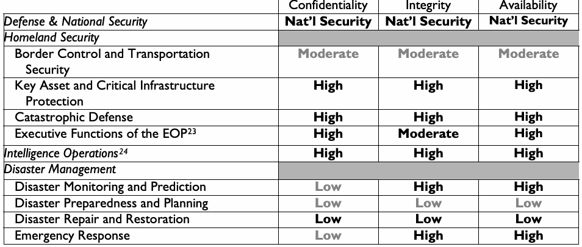
| 機密性 | 完全性 | 可用性 | |
| 防衛および国家安全保障 | 国家安全保障 | 国家安全保障 | 国家安全保障 |
| 国土安全保障 | |||
| 国境管理および交通保安 | 中 | 中 | 中 |
| 重要資産および重要インフラの保護 | 高 | 高 | 高 |
| 大規模脅威への防衛 | 高 | 高 | 高 |
| EOP23の行政機能 | 高 | 中 | 高 |
| 情報活動24 | 高 | 高 | 高 |
| 災害管理 | |||
| 災害の監視および予測 | 低 | 高 | 高 |
| 災害への備えおよび計画 | 低 | 低 | 低 |
| 災害の修復および復旧 | 低 | 低 | 低 |
| 緊急対応 | 低 | 高 | 高 |
Table D-2: Security Categorization of Mission Information
表D-2：ミッション情報のセキュリティ分類
未レビュー訳| Confidentiality | Integrity | Availability | |
| International Affairs and Commerce | |||
| Foreign Affairs | High | High | Moderate |
| International Development and Humanitarian Aid | Moderate | Low | Low |
| Global Trade | High | High | High |
| Natural Resources | |||
| Water Resource Management | Low | Low | Low |
| Conservation, Marine, and Land Management | Low | Low | Low |
| Recreational Resource Management and Tourism | Low | Low | Low |
| Agricultural Innovation and Services | Low | Low | Low |
| Energy | |||
| Energy Supply | Low25 | Moderate26 | Moderate26 |
| Energy Conservation and Preparedness | Low | Low | Low |
| Energy Resource Management | Moderate | Low | Low |
| Energy Production | Low | Low | Low |
| Environmental Management | |||
| Environmental Monitoring/ Forecasting | Low | Moderate | Low |
| Environmental Remediation | Moderate | Low | Low |
| Pollution Prevention And Control | Low | Low | Low |
| Economic Development | |||
| Business and Industry Development | Low | Low | Low |
| Intellectual Property Protection | Low | Low | Low |
| Financial Sector Oversight | Moderate | Low | Low |
| Industry Sector Income Stabilization | Moderate | Low | Low |
| Community and Social Services | |||
| Homeownership Promotion | Low | Low | Low |
| Community and Regional Development | Low | Low | Low |
| Social Services | Low | Low | Low |
| Postal Services | Low | Moderate | Moderate |
| Transportation | |||
| Ground Transportation | Low | Low | Low |
| Water Transportation | Low | Low | Low |
| Air Transportation | Low | Low | Low |
| Space Operations | Low | High | High |
| Education | |||
| Elementary, Secondary, and Vocational Education | Low | Low | Low |
| Higher Education | Low | Low | Low |
| Cultural & Historic Preservation | Low | Low | Low |
| Cultural & Historic Exhibition | Low | Low | Low |
| Workforce Management |
原本PDFの抜粋画像
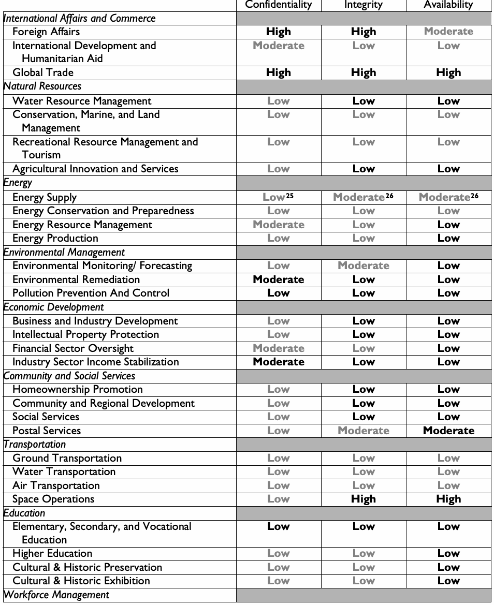
| 機密性 | 完全性 | 可用性 | |
| 国際関係および通商 | |||
| 外交 | 高 | 高 | 中 |
| 国際開発および人道支援 | 中 | 低 | 低 |
| 世界貿易 | 高 | 高 | 高 |
| 天然資源 | |||
| 水資源管理 | 低 | 低 | 低 |
| 保全、海洋および土地管理 | 低 | 低 | 低 |
| レクリエーション資源管理および観光 | 低 | 低 | 低 |
| 農業イノベーションおよびサービス | 低 | 低 | 低 |
| エネルギー | |||
| エネルギー供給 | 低25 | 中26 | 中26 |
| エネルギーの保全および備え | 低 | 低 | 低 |
| エネルギー資源管理 | 中 | 低 | 低 |
| エネルギー生産 | 低 | 低 | 低 |
| 環境管理 | |||
| 環境監視／予測 | 低 | 中 | 低 |
| 環境修復 | 中 | 低 | 低 |
| 汚染の防止および管理 | 低 | 低 | 低 |
| 経済開発 | |||
| 事業および産業の開発 | 低 | 低 | 低 |
| 知的財産の保護 | 低 | 低 | 低 |
| 金融部門の監督 | 中 | 低 | 低 |
| 産業部門の所得安定化 | 中 | 低 | 低 |
| 地域社会および社会サービス | |||
| 持家の促進 | 低 | 低 | 低 |
| 地域社会および地域の開発 | 低 | 低 | 低 |
| 社会サービス | 低 | 低 | 低 |
| 郵便サービス | 低 | 中 | 中 |
| 交通 | |||
| 陸上交通 | 低 | 低 | 低 |
| 水上交通 | 低 | 低 | 低 |
| 航空交通 | 低 | 低 | 低 |
| 宇宙活動 | 低 | 高 | 高 |
| 教育 | |||
| 初等、中等および職業教育 | 低 | 低 | 低 |
| 高等教育 | 低 | 低 | 低 |
| 文化および歴史的遺産の保護 | 低 | 低 | 低 |
| 文化および歴史的遺産の展示 | 低 | 低 | 低 |
| 労働力管理 |
Table D-2: Security Categorization of Mission Information
表D-2：ミッション情報のセキュリティ分類
未レビュー訳| Confidentiality | Integrity | Availability | |
| Training and Employment | Low | Low | Low |
| Labor Rights Management | Low | Low | Low |
| Worker Safety | Low | Low | Low |
| Health | |||
| Access to Care | Low | Moderate | Low |
| Population Health Management and Consumer Safety | Low | Moderate | Low |
| Health Care Administration | Low | Moderate | Low |
| Health Care Delivery Services | Low | High | Low |
| Health Care Research and Practitioner Education | Low | Moderate | Low |
| Income Security | |||
| General Retirement and Disability | Moderate | Moderate | Moderate |
| Unemployment Compensation | Low | Low | Low |
| Housing Assistance | Low | Low | Low |
| Food and Nutrition Assistance | Low | Low | Low |
| Survivor Compensation | Low | Low | Low |
| Law Enforcement | |||
| Criminal Apprehension | Low | Low | Moderate |
| Criminal Investigation and Surveillance | Moderate | Moderate | Moderate |
| Citizen Protection | Moderate | Moderate | Moderate |
| Leadership Protection | Moderate | Low | Low |
| Property Protection | Low | Low | Low |
| Substance Control | Moderate | Moderate | Moderate |
| Crime Prevention | Low | Low | Low |
| Trade Law Enforcement27 | Moderate | Moderate | Moderate |
| Litigation and Judicial Activities | |||
| Judicial Hearings | Moderate | Low | Low |
| Legal Defense | Moderate | High | Low |
| Legal Investigation | Moderate | Moderate | Moderate |
| Legal Prosecution and Litigation | Low | Moderate | Low |
| Resolution Facilitation | Moderate | Low | Low |
| Federal Correctional Activities | |||
| Criminal Incarceration | Low | Moderate | Low |
| Criminal Rehabilitation | Low | Low | Low |
| General Science and Innovation | |||
| Scientific and Technological Research and Innovation | Low | Moderate | Low |
| Space Exploration and Innovation | Low | Moderate | Low |
| Knowledge Creation and Management | |||
| Research and Development | Low | Moderate | Low |
| General Purpose Data and Statistics | Low | Low | Low |
| Advising and Consulting | Low | Low | Low |
| Knowledge Dissemination | Low | Low | Low |
原本PDFの抜粋画像
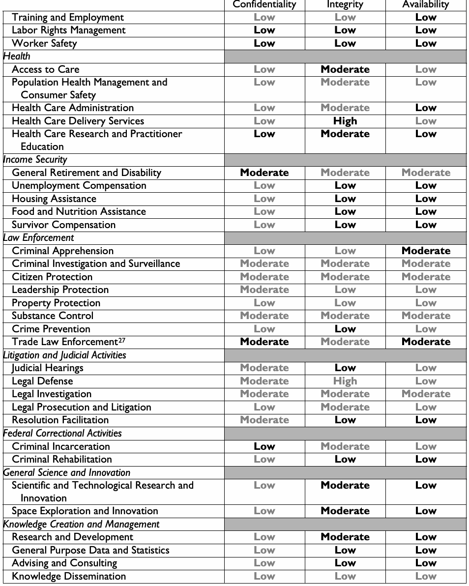
| 機密性 | 完全性 | 可用性 | |
| 訓練および雇用 | 低 | 低 | 低 |
| 労働者の権利管理 | 低 | 低 | 低 |
| 労働者の安全 | 低 | 低 | 低 |
| 保健 | |||
| 医療へのアクセス | 低 | 中 | 低 |
| 集団健康管理および消費者安全 | 低 | 中 | 低 |
| 医療管理 | 低 | 中 | 低 |
| 医療提供サービス | 低 | 高 | 低 |
| 医療研究および医療従事者教育 | 低 | 中 | 低 |
| 所得保障 | |||
| 一般退職・障害給付 | 中 | 中 | 中 |
| 失業補償 | 低 | 低 | 低 |
| 住宅支援 | 低 | 低 | 低 |
| 食料および栄養支援 | 低 | 低 | 低 |
| 遺族補償 | 低 | 低 | 低 |
| 法執行 | |||
| 犯罪者逮捕 | 低 | 低 | 中 |
| 犯罪捜査および監視 | 中 | 中 | 中 |
| 市民保護 | 中 | 中 | 中 |
| 指導者保護 | 中 | 低 | 低 |
| 財産保護 | 低 | 低 | 低 |
| 規制物質管理 | 中 | 中 | 中 |
| 犯罪予防 | 低 | 低 | 低 |
| 貿易法執行27 | 中 | 中 | 中 |
| 訴訟および司法活動 | |||
| 司法審理 | 中 | 低 | 低 |
| 法的弁護 | 中 | 高 | 低 |
| 法的調査 | 中 | 中 | 中 |
| 法的訴追および訴訟 | 低 | 中 | 低 |
| 紛争解決の促進 | 中 | 低 | 低 |
| 連邦矯正活動 | |||
| 犯罪者収監 | 低 | 中 | 低 |
| 犯罪者更生 | 低 | 低 | 低 |
| 一般科学およびイノベーション | |||
| 科学技術研究およびイノベーション | 低 | 中 | 低 |
| 宇宙探査およびイノベーション | 低 | 中 | 低 |
| 知識の創出および管理 | |||
| 研究開発 | 低 | 中 | 低 |
| 汎用データおよび統計 | 低 | 低 | 低 |
| 助言およびコンサルティング | 低 | 低 | 低 |
| 知識普及 | 低 | 低 | 低 |
Table D-2: Security Categorization of Mission Information
表D-2：ミッション情報のセキュリティ分類
未レビュー訳| Confidentiality | Integrity | Availability | |
| Regulatory Compliance and Enforcement | |||
| Inspections and Auditing | Moderate | Moderate | Low |
| Standards Setting/ Reporting Guideline Development | Low | Low | Low |
| Permits and Licensing | Low | Low | Low |
| Public Goods Creation and Management | |||
| Manufacturing | Low | Low | Low |
| Construction | Low | Low | Low |
| Public Resources, Facility, and Infrastructure Management | Low | Low | Low |
| Information Infrastructure Management | Low | Low | Low |
| Federal Financial Assistance | |||
| Federal Grants (Non-State) | Low | Low | Low |
| Direct Transfers to Individuals | Low | Low | Low |
| Subsidies | Low | Low | Low |
| Tax Credits | Moderate | Low | Low |
| Credits and Insurance | |||
| Direct Loans | Low | Low | Low |
| Loan Guarantees | Low | Low | Low |
| General Insurance | Low | Low | Low |
| Transfers to State/Local Governments | |||
| Formula Grants | Low | Low | Low |
| Project/Competitive Grants | Low | Low | Low |
| Earmarked Grants | Low | Low | Low |
| State Loans | Low | Low | Low |
| Direct Services for Citizens | |||
| Military Operations28 | N/A | N/A | N/A |
| Civilian Operations28 | N/A | N/A | N/A |
原本PDFの抜粋画像
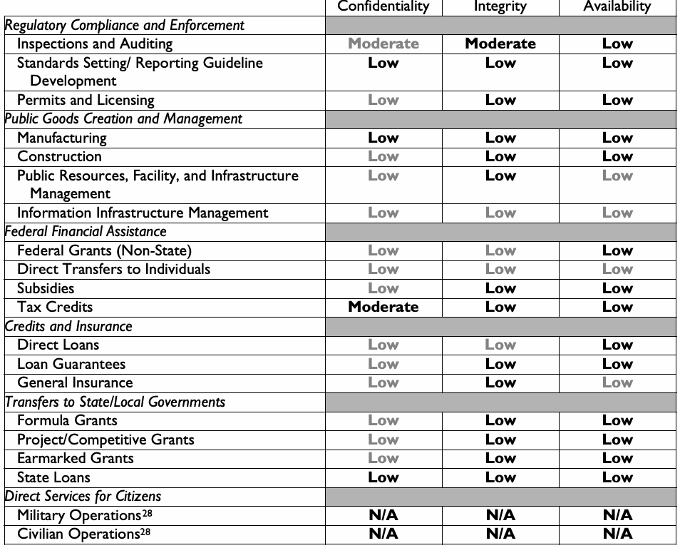
| 機密性 | 完全性 | 可用性 | |
| 規制遵守および執行 | |||
| 検査および監査 | 中 | 中 | 低 |
| 基準設定／報告ガイドラインの策定 | 低 | 低 | 低 |
| 許認可 | 低 | 低 | 低 |
| 公共財の創出および管理 | |||
| 製造 | 低 | 低 | 低 |
| 建設 | 低 | 低 | 低 |
| 公共資源、施設およびインフラ管理 | 低 | 低 | 低 |
| 情報インフラ管理 | 低 | 低 | 低 |
| 連邦財政援助 | |||
| 連邦補助金（州向け以外） | 低 | 低 | 低 |
| 個人への直接給付 | 低 | 低 | 低 |
| 補助金 | 低 | 低 | 低 |
| 税額控除 | 中 | 低 | 低 |
| 信用・保険 | |||
| 直接融資 | 低 | 低 | 低 |
| 融資保証 | 低 | 低 | 低 |
| 一般保険 | 低 | 低 | 低 |
| 州／地方政府への移転 | |||
| 算定式補助金 | 低 | 低 | 低 |
| プロジェクト／競争的補助金 | 低 | 低 | 低 |
| 使途指定補助金 | 低 | 低 | 低 |
| 州向け融資 | 低 | 低 | 低 |
| 市民への直接サービス | |||
| 軍事作戦28 | 該当なし | 該当なし | 該当なし |
| 民間作戦28 | 該当なし | 該当なし | 該当なし |
D.1 Defense and National Security
D.1 防衛および国家安全保障
未レビュー訳Defense and national security operations protect and advance U.S. National Security interests and, if deterrence fails, decisively defeat threats to those interests. Defense and national security activities include military operations, border protection, and intelligence gathering. Defense operations are subdivided into the following sub-elements:
防衛および国家安全保障の活動は、米国の国家安全保障上の利益を保護・推進し、抑止が失敗した場合には、それらの利益に対する脅威を決定的に打ち破る。防衛および国家安全保障の活動には、軍事作戦、国境保護、情報収集が含まれる。防衛活動は、次の下位要素に細分される。
•Strategic National and Theater Defense – Establishing national and multinational military objectives, sequencing initiatives, defining limits and assessing risks for the use of military and other instruments of national power, developing global plans or theater war plans to achieve these objectives, and providing military forces and other capabilities in accordance with strategic plans;
•国家・戦域防衛（戦略）―国家および多国間の軍事目標を設定すること、施策の実施順序を定めること、国家権力の軍事的およびその他の手段の使用に関する限界を定義しリスクを評価すること、これらの目標を達成するための世界規模計画または戦域作戦計画を策定すること、ならびに戦略計画に従って軍事力その他の能力を提供すること。
•Operational Defense – Linking tactics and strategy by establishing operational objectives needed to accomplish the strategic objectives, sequencing events to achieve the operational objectives, initiating actions, and applying resources to bring about and sustain these events; and
•作戦防衛―作戦目標を設定して戦術と戦略を結び付けること、作戦目標の達成に必要な事象の順序を定めること、行動を開始すること、ならびにこれらの事象を実現し持続させるために資源を適用すること。
未レビュー訳•Tactical Defense – The ordered arrangement and maneuver of combat elements in relation to each other and to the enemy to achieve combat objectives.
•戦術防衛―戦闘目標を達成するため、戦闘要素を相互および敵との関係において秩序立てて配置し、機動させること。
Impacts to information and many information systems associated with defense and national security missions may affect the security of a broad range of critical infrastructures and key national assets. Systems that, involve command and control of military forces, weapons control29, involve equipment that is an integral part of a weapon or weapons system, are critical to the direct fulfillment of military missions or are otherwise employed in strictly military operations30 are defined under Public Law as national security systems. National security information and national security systems are outside the scope of this guideline. Information assurance responsibilities are delegated to the Department of Defense for systems that are operated by the Department of Defense, or another entity on behalf of the Department of Defense31. Security objectives and impact levels associated with these systems are determined by the Department of Defense.
防衛および国家安全保障のミッションに関連する情報や多くの情報システムへの影響は、広範な重要インフラおよび主要な国家資産の安全に影響を及ぼす可能性がある。軍事部隊の指揮統制に関わるシステム、兵器統制29に関わるシステム、兵器または兵器システムの不可欠な一部である装備を含むシステム、軍事ミッションの直接的な遂行に不可欠なシステム、または厳密に軍事作戦でその他の形で使用されるシステム30は、連邦法に基づき国家安全保障システムと定義される。国家安全保障情報および国家安全保障システムは、本ガイドラインの対象外である。国防総省が運用するシステム、または国防総省に代わって他の主体が運用するシステムについては、情報保証の責任が国防総省に委任されている31。これらのシステムに関するセキュリティ目的および影響レベルは、国防総省が決定する。
未レビュー訳D.2 Homeland Security
D.2 国土安全保障
未レビュー訳Homeland Security involves protecting the nation against terrorist attacks. This includes analyzing threats and intelligence, guarding borders and airports, protecting critical infrastructure, and coordinating the response emergencies. The Homeland Security Line of Business is defined by the President’s Strategy on Homeland Security. Note: Some of the Critical Mission Areas from the President’s strategy are included in other information classes and categories.
国土安全保障は、テロ攻撃から国家を保護することを含む。これには、脅威および情報の分析、国境および空港の警備、重要インフラの保護、緊急事態への対応の調整が含まれる。国土安全保障の業務分野は、大統領の国土安全保障戦略によって定義される。注：大統領の戦略における重要ミッション領域の一部は、他の情報クラスおよびカテゴリに含まれている。
未レビュー訳D.2.1 Border and Transportation Security Information Type
D.2.1 国境および交通保安の情報タイプ
未レビュー訳Border and Transportation Security includes facilitating or deterring entry and exit of people, goods, and conveyances at and between U.S. ports of entry, as well as ensuring the security of transportation and infrastructure networks, facilities, vehicles, and personnel within the United States. Border control involves enforcing the laws regulating the admission of foreign-born persons (i.e., aliens) to the United States. This includes patrolling and monitoring borders and deportation of illegal aliens. Some border control information is also associated with other mission information types (e.g., criminal apprehension, and criminal investigation and surveillance information). In such cases, the impact levels of the associated mission information may determine impact levels associated with border control information. Some aspects of ensuring security of transportation and infrastructure networks, facilities, vehicles, and personnel within the United States are also covered under the information types associated with the transportation mission. In some cases the border control information may be classified. Any classified information is treated under separate rules established for national security information. The recommended categorization for unclassified border and transportation security information follows:
国境および交通保安には、米国の入国港における、および入国港間の人、物品、輸送手段の入出国を円滑化または抑止することに加え、米国内の交通・インフラネットワーク、施設、車両および人員の安全を確保することが含まれる。国境管理には、外国生まれの者（すなわち外国人）の米国への入国を規制する法律の執行が含まれる。これには、国境の巡回・監視および不法滞在外国人の国外退去が含まれる。国境管理に関する情報の一部は、他のミッション情報タイプ（例：犯罪者逮捕、犯罪捜査および監視に関する情報）にも関連する。このような場合、関連するミッション情報の影響レベルによって、国境管理情報に関連する影響レベルが決まることがある。米国内の交通・インフラネットワーク、施設、車両および人員の安全確保の一部は、交通ミッションに関連する情報タイプでも扱われる。場合によっては、国境管理情報が機密指定されることがある。機密指定された情報はすべて、国家安全保障情報について定められた別個の規則に従って取り扱う。非機密の国境および交通保安情報に推奨される分類は、次のとおりである。
未レビュー訳Security Category = {(confidentiality, Moderate), (integrity, Moderate), (availability, Moderate)}
セキュリティカテゴリ = {(機密性, 中), (完全性, 中), (可用性, 中)}
未レビュー訳Confidentiality
機密性
未レビュー訳The confidentiality impact level is the effect of unauthorized disclosure of border control information on the ability of responsible agencies to enforce laws regulating the admission of foreign-born persons (i.e., aliens) to the United States. Generally, the effects of unauthorized disclosure of border control information are usually confined to a single geographic region, immigration case, or deportation case. Even so, unauthorized disclosure may have a serious adverse effect on mission functions, cause significant degradation in mission capability, or place the agency at a significant disadvantage with respect to its border control responsibilities. Particularly in the case of immigration, naturalization, and deportation activities, unauthorized disclosure of information can violate privacy policies. Such unauthorized disclosures can have a serious effect on public confidence in the agency.
機密性影響レベルとは、国境管理情報が不正に開示された場合に、責任を負う機関が、外国生まれの者（すなわち外国人）の米国への入国を規制する法律を執行する能力に及ぼす影響である。一般に、国境管理情報の不正開示による影響は、単一の地理的地域、移民事案、または国外退去事案に限られる。それでも、不正開示はミッション機能に深刻な悪影響を及ぼし、ミッション能力を大幅に低下させ、または国境管理上の責任に関して当該機関を著しく不利な立場に置く可能性がある。特に移民、帰化および国外退去の活動では、情報の不正開示がプライバシーポリシーに違反する場合がある。このような不正開示は、機関に対する市民の信頼に深刻な影響を与える可能性がある。
Special Factors Affecting Confidentiality Impact Determination: Where border control information is also associated with other mission information types (e.g., criminal apprehension, and criminal investigation and surveillance information), the confidentiality impact level associated with the information may be high. Where unauthorized disclosure of border control information may put the physical safety of personnel into serious jeopardy, the confidentiality impact level associated with the information may be high. Unauthorized disclosure of confidentiality of information associated with ensuring security of transportation and infrastructure networks, facilities, vehicles, and personnel within the United States can result in facilitation of terrorist activities that endanger human life. In some cases, the consequent threat to critical infrastructures, key national assets, and human life can be catastrophic. Consequently, the confidentiality impact level associated with information associated with ensuring security of transportation and infrastructure networks, facilities, vehicles, and personnel within the United States is normally high.
機密性影響判定に影響する特別要因：国境管理情報が他のミッション情報タイプ（例：犯罪者逮捕、犯罪捜査および監視に関する情報）にも関連する場合、その情報に伴う機密性影響レベルは高となることがある。国境管理情報の不正開示によって要員の身体的安全が重大な危険にさらされる可能性がある場合、その情報に伴う機密性影響レベルは高となることがある。米国内の交通・インフラネットワーク、施設、車両および要員の安全確保に関連する情報を不正に開示すると、人命を危険にさらすテロ活動を助長する可能性がある。場合によっては、その結果生じる重要インフラ、主要な国家資産および人命への脅威は壊滅的となり得る。したがって、米国内の交通・インフラネットワーク、施設、車両および要員の安全確保に関連する情報に伴う機密性影響レベルは、通常、高である。
未レビュー訳Recommended Confidentiality Impact Level: The provisional confidentiality impact level recommended for most border control information is moderate.
推奨される機密性影響レベル：ほとんどの国境管理情報に推奨される暫定的な機密性影響レベルは、中である。
未レビュー訳Integrity
完全性
未レビュー訳The integrity impact level is based on the specific mission and the data supporting that mission, not on the time required to detect the modification or destruction of information. Unauthorized modification or destruction of information affecting external communications (e.g., web pages, electronic mail) may adversely affect operations or public confidence in the agency, but the damage to the mission would usually be limited. The consequences of unauthorized modification or destruction of information can be very serious if the information is critical to tactical operations.
完全性影響レベルは、情報の改変または破壊を検知するまでに要する時間ではなく、特定のミッションおよびそのミッションを支えるデータに基づく。外部通信（例：ウェブページ、電子メール）に影響する情報への不正な改変または破壊は、業務または機関に対する市民の信頼に悪影響を及ぼす可能性があるが、ミッションへの損害は通常限定的である。その情報が戦術作戦に不可欠な場合、不正な改変または破壊の結果は極めて深刻になり得る。
未レビュー訳Special Factors Affecting Integrity Impact Determination: Unauthorized modification or destruction of information associated with ensuring security of transportation and infrastructure networks, facilities, vehicles, and personnel within the United States may seriously affect mission operations or result in the loss of human life. Unauthorized modification or destruction of information affecting anti-terrorism information may adversely affect mission operations in a manner that results in unacceptable damage to critical infrastructures and/or key national assets or loss of key national assets and/or human life. Consequently, the integrity impact level associated with information that ensures the security of transportation and infrastructure networks, facilities, vehicles, and personnel within the United States is high.
完全性影響判定に影響する特別要因：米国内の交通・インフラネットワーク、施設、車両および要員の安全確保に関連する情報への不正な改変または破壊は、ミッション活動に深刻な影響を与え、または人命の損失を招く可能性がある。テロ対策情報に影響する情報への不正な改変または破壊は、重要インフラおよび／または主要な国家資産に容認できない損害をもたらし、または主要な国家資産および／または人命の損失を招く形で、ミッション活動に悪影響を及ぼす可能性がある。したがって、米国内の交通・インフラネットワーク、施設、車両および要員の安全を確保する情報に伴う完全性影響レベルは、高である。
未レビュー訳Recommended Integrity Impact Level: The provisional integrity impact level recommended for border control information is moderate.
推奨される完全性影響レベル：国境管理情報に推奨される暫定的な完全性影響レベルは、中である。
未レビュー訳Availability
可用性
未レビュー訳The availability impact level is based on the specific mission and the data supporting that mission, not on the time required to re-establish access to border control information. Functions and processes supported by most border control information are not time-critical. Also, disruption of access will have only a limited adverse effect on agency operations (including mission functions and public confidence in the agency), agency assets, or individuals.
可用性影響レベルは、国境管理情報へのアクセスを再確立するまでに要する時間ではなく、特定のミッションおよびそのミッションを支えるデータに基づく。ほとんどの国境管理情報が支える機能およびプロセスは、時間的制約が厳しいものではない。また、アクセスの中断が機関の業務（ミッション機能および機関に対する市民の信頼を含む）、機関の資産、または個人に及ぼす悪影響は限定的である。
Special Factors Affecting Availability Impact Determination: There may be time critical cases, for example, information regarding transport of illegal aliens or information about a physical threat posed by aliens that border control personnel have been assigned to interdict. In such cased, the availability impact will be high.
可用性影響判定に影響する特別要因：時間的制約のある事案もあり得る。たとえば、不法滞在外国人の輸送に関する情報、または国境管理要員が阻止を担当する外国人による物理的脅威に関する情報がこれに当たる。そのような場合、可用性影響は高となる。
未レビュー訳The consequences of disruption of access to information or information systems associated with ensuring security of transportation and infrastructure networks, facilities, vehicles, and personnel within the United States may be severe. Also, anti-terrorism missions are not reliably tolerant of delays. The availability impact level for information systems that ensure the security of transportation and infrastructure networks, facilities, vehicles, and personnel within the United States is high.
米国内の交通・インフラネットワーク、施設、車両および要員の安全確保に関連する情報または情報システムへのアクセスが中断した場合、その結果は深刻となる可能性がある。また、テロ対策ミッションは遅延を確実に許容できるとは限らない。米国内の交通・インフラネットワーク、施設、車両および要員の安全を確保する情報システムに関する可用性影響レベルは、高である。
Recommended Availability Impact Level: Except for such time-critical cases, cases where impact is driven by information shared with associated missions (e.g., anti-terrorism), the provisional availability impact level recommended for border control information is normally moderate.
推奨される可用性影響レベル：このような時間的制約のある事案、および関連ミッション（例：テロ対策）と共有される情報によって影響が左右される事案を除き、国境管理情報に推奨される暫定的な可用性影響レベルは、通常、中である。
未レビュー訳D.2.2 Key Asset and Critical Infrastructure Protection Information Type
D.2.2 重要資産および重要インフラの保護に関する情報タイプ
未レビュー訳Key Asset and Critical Infrastructure Protection involves assessing key asset and critical infrastructure vulnerabilities and taking direct action to mitigate vulnerabilities, enhance security, and ensure continuity and necessary redundancy in government operations and personnel. The Critical Infrastructure Information Protection Act of 2002 (6 U.S.C. 131-134) places specific controls on the dissemination of critical infrastructure information (see Volume I, 3.5.2.3). Under the provisions of Executive Order 13292, some anti-terrorism information is subject to security classification. National security information is outside the scope of this guideline. The recommended categorization for unclassified anti-terrorism information follows:
重要資産および重要インフラの保護には、重要資産および重要インフラの脆弱性を評価し、その脆弱性を軽減し、安全性を高め、政府の業務および要員について継続性と必要な冗長性を確保するために直接的な措置を講じることが含まれる。2002年重要インフラ情報保護法（6 U.S.C. 131-134）は、重要インフラ情報の頒布に特定の管理を課している（第I巻、3.5.2.3参照）。大統領令13292の規定に基づき、一部のテロ対策情報はセキュリティ分類の対象となる。国家安全保障情報は本ガイドラインの対象外である。非機密のテロ対策情報に推奨される分類は、次のとおりである。
未レビュー訳Security Category = {(confidentiality, High), (integrity, High), (availability, High)}
セキュリティカテゴリ = {(機密性, 高), (完全性, 高), (可用性, 高)}
未レビュー訳Confidentiality
機密性
未レビュー訳The confidentiality impact level is the effect of unauthorized disclosure of critical infrastructure protection information on the ability of responsible agencies to monitor and assess the leadership, motivations, plans, and intentions of foreign and domestic terrorist groups and their state and non-state sponsors. The effects of unauthorized disclosure of this information can reasonably be expected to jeopardize fulfillment of critical infrastructure protection missions. The consequent threat to critical infrastructures, key national assets, and human life can be catastrophic.
機密性影響レベルとは、重要インフラ保護情報が不正に開示された場合に、責任を負う機関が、国内外のテロリスト集団およびその国家主体・非国家主体の支援者の指導者、動機、計画および意図を監視・評価する能力に及ぼす影響である。この情報の不正開示は、重要インフラ保護ミッションの遂行を危うくすると合理的に予測できる。その結果生じる重要インフラ、主要な国家資産および人命への脅威は、壊滅的となり得る。
Recommended Confidentiality Impact Level: The provisional confidentiality impact level recommended for critical infrastructure protection information is high.
推奨される機密性影響レベル：重要インフラ保護情報に推奨される暫定的な機密性影響レベルは、高である。
未レビュー訳Integrity
完全性
未レビュー訳The integrity impact level is based on the specific mission and the data supporting that mission, not on the time required to detect the modification or destruction of information. Unauthorized modification or destruction of information affecting critical infrastructure protection operations may adversely affect mission operations and result in unacceptable damage to critical infrastructures, damage to key national assets, or loss of human life.
完全性影響レベルは、情報の改変または破壊を検知するまでに要する時間ではなく、特定のミッションおよびそのミッションを支えるデータに基づく。重要インフラ保護活動に影響する情報への不正な改変または破壊は、ミッション活動に悪影響を及ぼし、重要インフラへの容認できない損害、主要な国家資産への損害、または人命の損失をもたらす可能性がある。
未レビュー訳Recommended Integrity Impact Level: The provisional integrity impact level recommended for critical infrastructure protection information is high.
推奨される完全性影響レベル：重要インフラ保護情報に推奨される暫定的な完全性影響レベルは、高である。
未レビュー訳Availability
可用性
未レビュー訳The availability impact level is based on the specific mission and the data supporting that mission, not on the time required to re-establish access to critical infrastructure protection information. Generally, critical infrastructure protection missions are not reliably tolerant of delays. Significant degradation in mission capability and resultant catastrophic consequences for critical infrastructures, key national assets, and/or human life may occur from disruption of access to critical infrastructure protection information.
可用性影響レベルは、重要インフラ保護情報へのアクセスを再確立するまでに要する時間ではなく、特定のミッションおよびそのミッションを支えるデータに基づく。一般に、重要インフラ保護ミッションは遅延を確実に許容できるとは限らない。重要インフラ保護情報へのアクセスが中断されると、ミッション能力が大幅に低下し、その結果、重要インフラ、主要な国家資産および／または人命に壊滅的な影響が生じる可能性がある。
Recommended Availability Impact Level: The provisional availability impact level recommended for critical infrastructure protection information is high.
推奨される可用性影響レベル：重要インフラ保護情報に推奨される暫定的な可用性影響レベルは、高である。
未レビュー訳D.2.3 Catastrophic Defense Information Type
D.2.3 壊滅的防衛に関する情報タイプ
未レビュー訳Catastrophic Defense involves the development of technological countermeasures (chemical, biological, radiological and nuclear [CBRN]) to terrorist threats, conducting laboratory testing on new and promising devices, and conducting basic and applied science that can lead to the development of countermeasures. Under the provisions of Executive Order 13292, some anti-terrorism information is subject to security classification. National security information is outside the scope of this guideline. The recommended categorization for unclassified anti-terrorism information follows:
壊滅的防衛には、テロの脅威に対する技術的対抗策（化学、生物、放射線および核［CBRN］）の開発、新規かつ有望な装置の実験室試験、ならびに対抗策の開発につながり得る基礎科学および応用科学の実施が含まれる。大統領令13292の規定に基づき、一部のテロ対策情報はセキュリティ分類の対象となる。国家安全保障情報は本ガイドラインの対象外である。非機密のテロ対策情報に推奨される分類は、次のとおりである。
未レビュー訳Security Category = {(confidentiality, High), (integrity, High), (availability, High)}
セキュリティカテゴリ = {(機密性, 高), (完全性, 高), (可用性, 高)}
未レビュー訳Confidentiality
機密性
未レビュー訳The confidentiality impact level is the effect of unauthorized disclosure of catastrophic defense information on the ability of responsible agencies to monitor and assess the leadership, motivations, plans, and intentions of foreign and domestic terrorist groups and their state and non-state sponsors. The effects of unauthorized disclosure of this information can reasonably be expected to jeopardize fulfillment of catastrophic defense missions. The consequent threat to human life, critical infrastructures, and key national assets can be catastrophic.
機密性影響レベルとは、壊滅的防衛情報が不正に開示された場合に、責任を負う機関が、国内外のテロリスト集団およびその国家主体・非国家主体の支援者の指導者、動機、計画および意図を監視・評価する能力に及ぼす影響である。この情報の不正開示は、壊滅的防衛ミッションの遂行を危うくすると合理的に予測できる。その結果生じる人命、重要インフラおよび主要な国家資産への脅威は、壊滅的となり得る。
Recommended Confidentiality Impact Level: The provisional confidentiality impact level recommended for catastrophic defense information is normally high.
推奨される機密性影響レベル：壊滅的防衛情報に推奨される暫定的な機密性影響レベルは、通常、高である。
未レビュー訳Integrity
完全性
未レビュー訳The integrity impact level is based on the specific mission and the data supporting that mission, not on the time required to detect the modification or destruction of information. Unauthorized modification or destruction of information affecting catastrophic defense activities may adversely affect mission operations in a manner that results in loss of human life, unacceptable damage to critical infrastructures, and/or damage to or loss of key national assets.
完全性影響レベルは、情報の改変または破壊を検知するまでに要する時間ではなく、特定のミッションおよびそのミッションを支えるデータに基づく。壊滅的防衛活動に影響する情報への不正な改変または破壊は、人命の損失、重要インフラへの容認できない損害、および／または主要な国家資産への損害もしくはその損失を招く形で、ミッション運用に悪影響を及ぼす可能性がある。
Recommended Integrity Impact Level: The provisional integrity impact level recommended for catastrophic defense information is high.
推奨される完全性影響レベル：壊滅的防衛情報に推奨される暫定的な完全性影響レベルは、高である。
未レビュー訳Availability
可用性
未レビュー訳The effects of disruption of access to or use of catastrophic defense information or The availability impact level is based on the specific mission and the data supporting that mission, not on the time required to re-establish access to catastrophic defense information. Generally, disruption of access will have a severe adverse effect on agency operations (including mission functions and public confidence in the agency), agency assets, or individuals. Also, catastrophic defense missions are not tolerant of delays, with consequences of significant degradation in mission capability and resultant catastrophic consequences for human life, critical infrastructures, and/or key national assets.
壊滅的防衛情報へのアクセスまたは使用が中断された場合の影響、または可用性影響レベルは、壊滅的防衛情報へのアクセスを再確立するまでに要する時間ではなく、特定のミッションおよびそのミッションを支えるデータに基づく。一般に、アクセスの中断は機関の業務（ミッション機能および機関に対する市民の信頼を含む）、機関の資産、または個人に深刻な悪影響を及ぼす。さらに、壊滅的防衛ミッションは遅延を許容せず、ミッション能力の大幅な低下を招き、その結果、人命、重要インフラ、および／または主要な国家資産に壊滅的な影響が生じる。
未レビュー訳Recommended Availability Impact Level: The provisional availability impact level recommended for catastrophic defense information is high.
推奨される可用性影響レベル：壊滅的防衛情報に推奨される暫定的な可用性影響レベルは、高である。
未レビュー訳D.2.4 Executive Functions of the Executive Office of the President (EOP) Information Type
D.2.4 大統領府（EOP）の行政機能に関する情報タイプ
未レビュー訳Executive Functions involve the Executive Office of the President (EOP). Subject to exception conditions described below, the recommended provisional security categorization for the executive information type is as follows:
行政機能には、大統領府（EOP）が関与する。以下に記載する例外条件に該当する場合を除き、行政情報タイプに推奨される暫定的なセキュリティ分類は、次のとおりである。
Security Category = {(confidentiality, High), (integrity, Moderate), (availability, High)}
セキュリティカテゴリ = {(機密性, 高), (完全性, 中), (可用性, 高)}
未レビュー訳Confidentiality
機密性
未レビュー訳The confidentiality impact level associated with the executive information type is associated with functions of the Executive Office of the President (EOP). The effects of loss of confidentiality of policies and guidance during the formative stage can result in attempts by affected entities and other interested parties to influence and/or impede the policy and guidance development process. Premature public release of formative policies and guidance before internal coordination and review can result in unnecessary damage to public confidence in the EOP. These consequences may occur when the release includes unedited internal commentary and discussion.
行政情報タイプに関連する機密性影響レベルは、大統領府（EOP）の機能に関係する。政策およびガイダンスの形成段階における機密性の喪失は、影響を受ける主体やその他の利害関係者が、政策およびガイダンスの策定プロセスに影響を与え、または妨げようとする結果を招く可能性がある。内部調整および審査の前に、形成段階の政策およびガイダンスを時期尚早に公表すると、EOPに対する市民の信頼に不必要な損害を与える可能性がある。編集されていない内部のコメントや議論が公開に含まれる場合、これらの結果が生じることがある。
Most of the information processed in and by the EOP is classified national security information and is outside the scope of this guideline. Other information processed by the EOP is extremely sensitive and applicable to homeland security and law enforcement. The unauthorized disclosure of this extremely sensitive information can seriously imperil human life, key national assets, and critical infrastructures.
EOP内で、またはEOPによって処理される情報の大半は、機密指定された国家安全保障情報であり、本ガイドラインの対象外である。EOPが処理するその他の情報は極めて機微であり、国土安全保障および法執行に関係する。この極めて機微な情報が不正に開示されると、人命、主要な国家資産および重要インフラが深刻な危険にさらされる可能性がある。
Recommended Confidentiality Impact Level: Based on the catastrophic harm that can be suffered by the nation due to unauthorized disclosure of executive information the provisional confidentiality impact level recommended for executive functions information is high.
推奨される機密性影響レベル：行政情報の不正開示によって国家が被り得る壊滅的な損害に基づき、行政機能情報に推奨される暫定的な機密性影響レベルは、高である。
未レビュー訳Integrity
完全性
未レビュー訳The integrity impact level is based on the specific mission and the data supporting that mission, not on the time required to detect the modification or destruction of information.
完全性影響レベルは、情報の改変または破壊を検知するまでに要する時間ではなく、特定のミッションおよびそのミッションを支えるデータに基づく。
Unauthorized modification or destruction of information affecting external communications that contain EOP information (e.g., web pages, electronic mail) may adversely affect public confidence in the government. In the case of the EOP, the impact of such a loss of public confidence may be at least moderate.
EOP情報を含む外部通信（例：ウェブページ、電子メール）に影響する情報への不正な改変または破壊は、政府に対する市民の信頼に悪影響を及ぼす可能性がある。EOPの場合、このような市民の信頼の喪失による影響は、少なくとも中程度となる可能性がある。
Recommended Integrity Impact Level: The provisional integrity impact level recommended for executive information is moderate.
推奨される完全性影響レベル：行政情報に推奨される暫定的な完全性影響レベルは、中である。
未レビュー訳Availability
可用性
未レビュー訳The availability impact level is based on the specific mission and the data supporting that mission, not on the time required to re-establish access to the executive information. National defense and critical infrastructure protection aspects of EOP functions are not generally tolerant of delays. Excessive recovery delays can result in loss of coordination of critical defense and public welfare processes.
可用性影響レベルは、行政府情報へのアクセスを再確立するまでに要する時間ではなく、特定のミッションおよびそのミッションを支えるデータに基づく。国家防衛および重要インフラ保護に関わるEOP機能は、一般に遅延を許容しない。復旧が過度に遅れると、重要な防衛および公共福祉のプロセスにおける調整が失われる可能性がある。
Recommended Availability Impact Level: The provisional availability impact level recommended for executive functions information is high.
推奨可用性影響度レベル: 行政機能情報に推奨される暫定的な可用性影響度レベルは「高」である。
未レビュー訳D.3 Intelligence Operations
D.3 情報活動
未レビュー訳Intelligence operations involve the development and management of accurate, comprehensive, and timely foreign intelligence on national security topics. Information systems, the function, operation, or use of, which involve intelligence activities or are critical to the direct fulfillment of intelligence missions32 are defined under Public Law33 as national security systems. National security information and national security systems are outside the scope of this guideline. Security objectives and impact levels associated with national security systems are determined by the head of each agency exercising control of the system34.
情報活動には、国家安全保障に関する事項について、正確かつ包括的で適時な対外情報を作成し、管理することが含まれる。情報活動を伴う、または情報任務32の直接的な遂行に不可欠な機能、運用もしくは使用を有する情報システムは、Public Law33により国家安全保障システムと定義されている。国家安全保障情報および国家安全保障システムは、本ガイドラインの対象外である。国家安全保障システムに関するセキュリティ目標と影響度レベルは、そのシステムを所管する各機関の長が決定する34。
未レビュー訳Intelligence operations are subdivided into the following sub-elements:
情報活動は、次の下位要素に細分される。
•Intelligence Planning Information Type – Intelligence Planning involves developing strategies focused on intelligence requirements, prioritizing these requirements, and managing these requirements (adding, deleting and modifying).
•情報計画情報タイプ — 情報計画では、情報要件に焦点を当てた戦略を策定し、それらの要件に優先順位を付け、要件を管理（追加、削除、変更）する。
未レビュー訳•Intelligence Collection Information Type – Intelligence Collection involves acquiring raw data and provisioning the data to processing elements.
•情報収集情報タイプ — 情報収集では、生データを取得し、そのデータを処理要素に提供する。
未レビュー訳•Intelligence Analysis and Production Information Type – Intelligence Analysis and Production consists of integrating, evaluating, and/or interpreting information from single or multiple sources into intelligence satisfying consumer needs and preparing intelligence products in support of known or anticipated consumers.
•情報分析・作成情報タイプ — 情報分析・作成では、単一または複数の情報源から得た情報を統合、評価、または解釈し、利用者のニーズを満たす情報にまとめるとともに、既知または想定される利用者を支援する情報成果物を作成する。
未レビュー訳•Intelligence Dissemination Information Type – Intelligence Dissemination consists of delivering the intelligence products to consumers.
•情報配布情報タイプ — 情報配布では、情報成果物を利用者に届ける。
未レビュー訳•Intelligence Processing Information Type – Intelligence processing involves converting collected raw data into forms suitable for analysis.
•情報処理情報タイプ — 情報処理では、収集した生データを分析に適した形式に変換する。
未レビュー訳Some agencies are charged with gathering domestic intelligence. Much domestic intelligence information is classified. Other domestic intelligence information may not be classified (e.g., some information obtained from state and local government sources). All classified information is treated under separate rules established for national security information. The recommended categorization for unclassified domestic intelligence information follows:
一部の機関は、国内情報の収集を任務としている。国内情報に関する情報の多くは機密指定されている。一方、機密指定されていない国内情報もある（例：州政府や地方自治体の情報源から得た一部の情報）。機密指定情報はすべて、国家安全保障情報について定められた別個の規則に従って扱われる。機密指定されていない国内情報に推奨されるカテゴリは、次のとおりである。
Security Category = {(confidentiality, High), (integrity, High), (availability, High)}
セキュリティカテゴリ = {(機密性, 高), (完全性, 高), (可用性, 高)}
未レビュー訳32 Systems that do not involve a) intelligence activities, b) cryptologic activities related to national security, c) command and control of military forces, d) equipment that is an integral part of a weapon or weapons system or 5) information classified by an act of Congress or under an Executive order are not designated as national security systems if they are used exclusively for routine business or administrative applications even if they are critical to the direct fulfillment of military or intelligence missions. Routine business or administrative applications are defined as including payroll, finance, logistics, and personnel management applications. [Federal Information Security Management Act of 2002, Public Law 107-347, Subchapter III – Information Security, Sec. 3547 – National security systems, 12/17/02]
32 a)情報活動、b)国家安全保障に関わる暗号活動、c)軍隊の指揮統制、d)兵器または兵器システムに不可欠な装置、または5)連邦議会の制定法もしくは大統領令に基づき機密指定された情報を含まないシステムは、軍事または情報任務の直接的な遂行に不可欠なものであっても、通常の業務用または管理用アプリケーションにのみ使用される場合、国家安全保障システムには指定されない。通常の業務用または管理用アプリケーションには、給与、財務、ロジスティクス、および人事管理のアプリケーションが含まれる。[Federal Information Security Management Act of 2002, Public Law 107-347, Subchapter III – Information Security, Sec. 3547 – National security systems, 12/17/02]
未レビュー訳Confidentiality
機密性
未レビュー訳The confidentiality impact level is the effect of unauthorized disclosure of domestic intelligence information on the ability of responsible agencies to develop and manage accurate, comprehensive, and timely domestic intelligence on homeland security topics and other national threats. The consequences of unauthorized disclosure of domestic intelligence information may include loss of the ability and/or authorization to collect information necessary to provide warning or to interdict from major threats (e.g., terrorist threats to critical infrastructures and/or key national assets).
機密性影響レベルとは、国内情報が不正に開示された場合に、責任を負う機関が、国土安全保障上の事項およびその他の国家的脅威に関する正確かつ包括的で適時の国内情報を作成・管理する能力に及ぼす影響である。国内情報の不正開示による結果には、重大な脅威（重要インフラおよび／または主要な国家資産に対するテロの脅威など）について警告を発し、または脅威を阻止するために必要な情報を収集する能力および／または権限の喪失が含まれ得る。
Recommended Confidentiality Impact Level: Given the criticality of much domestic intelligence information and the severe or catastrophic consequences to agencies that disclose domestic intelligence information without proper authorization (e.g., Privacy Act provisions, Fourth Amendment issues), the provisional confidentiality impact level recommended for the domestic intelligence information is high.
推奨機密性影響度レベル: 国内情報の多くが重要であること、また、適切な権限なしに国内情報を開示した機関に重大または壊滅的な結果が生じること（例: Privacy Actの規定、米国憲法修正第四条に関する問題）を踏まえ、国内情報に推奨される暫定的な機密性影響度レベルは「高」である。
未レビュー訳Integrity
完全性
未レビュー訳The integrity impact level is based on the specific mission and the data supporting that mission, not on the time required to detect the modification or destruction of information. Domestic intelligence information is generally associated with other mission-related information (e.g., anti-terrorism, firearms and explosive protection, narcotics interdiction). The consequences of unauthorized modification or destruction of domestic intelligence information is determined to a large extent on the missions being supported by the intelligence information and on whether the intelligence information is time-critical. Unauthorized modification or destruction of intelligence information may adversely affect mission operations in a manner that results in unacceptable damage to critical infrastructures, damage to or loss of key national assets, or loss of human life.
完全性影響度レベルは、特定の任務とその任務を支えるデータに基づいて決まり、情報の改変または破壊を検知するために必要な時間には基づかない。国内情報は通常、他の任務関連情報（例: テロ対策、銃器および爆発物の保護、麻薬の阻止）と関連している。国内情報の不正な改変または破壊による影響は、その情報が支援する任務の内容と、当該情報が時間的制約を受けるかどうかに大きく左右される。情報の不正な改変または破壊は、重要インフラへの許容できない損害、主要な国家資産の損傷もしくは喪失、または人命の喪失を招く形で任務運用に悪影響を及ぼすおそれがある。
未レビュー訳Recommended Integrity Impact Level: The provisional integrity impact level recommended for domestic intelligence information is high.
推奨完全性影響度レベル: 国内情報に推奨される暫定的な完全性影響度レベルは「高」である。
未レビュー訳Availability
可用性
未レビュー訳The availability impact level is based on the specific mission and the data supporting that mission, not on the time required to re-establish access to domestic intelligence information. Generally, missions supported by domestic intelligence information are not reliably tolerant of delays. Significant degradation in mission capability and resultant catastrophic consequences for critical infrastructures, key national assets, and/or human life may result from disruption of access to domestic intelligence information.
可用性影響度レベルは、特定の任務とその任務を支えるデータに基づいて決まり、国内情報へのアクセスを再確立するために必要な時間には基づかない。一般に、国内情報が支援する任務は遅延を許容できるとは限らない。国内情報へのアクセスが中断されると、任務遂行能力が大幅に低下し、重要インフラ、主要な国家資産、または人命に壊滅的な結果をもたらすおそれがある。
未レビュー訳Recommended Availability Impact Level: The provisional availability impact level recommended for domestic intelligence information is high.
推奨可用性影響度レベル: 国内情報に推奨される暫定的な可用性影響度レベルは「高」である。
未レビュー訳D.4 Disaster Management
D.4 災害管理
未レビュー訳Disaster management involves the activities required to prepare for, mitigate, respond to, and repair the effects of all physical and humanitarian disasters whether natural or man-made.
災害管理には、自然災害か人為災害かを問わず、あらゆる物理的災害および人道的災害の影響に備え、これを軽減し、対応し、復旧するために必要な活動が含まれる。
Compromise of much information associated with any of the missions within the disaster management mission area may seriously impact the security of a broad range of critical infrastructures and key national assets.
災害管理ミッション領域内のいずれかのミッションに関する情報が侵害されると、広範な重要インフラおよび主要な国家資産の安全に深刻な影響を及ぼす可能性がある。
未レビュー訳D.4.1 Disaster Monitoring and Prediction Information Type
D.4.1 災害の監視および予測に関する情報タイプ
未レビュー訳Disaster monitoring and prediction involves the actions taken to predict when and where a disaster may take place and communicate that information to affected parties. [Some disaster management information occurs in humanitarian aid systems under the International Affairs and Commerce line of business (e.g., State Department disaster preparedness and planning).] The recommended provisional categorization of the disaster monitoring and protection information type follows:
災害の監視および予測には、災害がいつ、どこで発生するかを予測し、その情報を影響を受ける関係者に伝達するための措置が含まれる。［国際関係および通商の業務分野に属する人道支援システムにも、災害管理情報が含まれることがある（例：米国国務省の災害への備えおよび計画）。］災害の監視および保護に関する情報タイプに推奨される暫定的な分類は、次のとおりである。
未レビュー訳Security Category = {(confidentiality, Low), (integrity, High), (availability, High)}
セキュリティカテゴリ = {(機密性, 低), (完全性, 高), (可用性, 高)}
未レビュー訳Confidentiality
機密性
未レビュー訳The confidentiality impact level is the effect of unauthorized disclosure of disaster monitoring and prediction information on the ability of responsible agencies to predict when and where a disaster may take place and communicate that information to affected parties. The purpose of disaster monitoring and prediction activities is generally to disseminate information. Sharing of raw information by a diverse group of analysts often improves the quality of predictive analysis.
機密性影響レベルとは、災害の監視および予測に関する情報が不正に開示された場合に、責任を負う機関が災害の発生時期および発生場所を予測し、その情報を影響を受ける関係者に伝達する能力に及ぼす影響である。災害の監視および予測活動の目的は、一般に情報を広く伝達することである。多様な分析者グループが生の情報を共有することで、予測分析の質が向上することが多い。
未レビュー訳Special Factors Affecting Confidentiality Impact Determination: The consequences of unauthorized disclosure of some disaster monitoring and prediction information may include public panic or other responses that jeopardize public safety, disaster prevention, emergency response, disaster repair, or restoration missions. For example, attempts of large populations to evacuate in an endangered area before necessary preparations are made for evacuation routes can result in a clogging of the routes and failure to evacuate large parts of the population in time to save them from a life-threatening event. Most of the disaster monitoring and prediction information is critical in terms of potential loss of human life and major property damage. The unauthorized release of this information may interfere with disaster prevention or emergency response missions. The confidentiality impact level recommended for the information cited in the example can be moderate or high.
機密性影響判定に影響する特別要因：一部の災害監視・予測情報が不正に開示された場合、公衆のパニック、または公衆の安全、災害予防、緊急対応、災害修復もしくは復旧ミッションを危険にさらすその他の反応が生じる可能性がある。たとえば、避難経路の準備が整う前に、危険地域にいる多数の人々が避難しようとすると、経路が渋滞し、生命を脅かす事象から人々を救うために必要な時間内に住民の大部分を避難させられなくなることがある。災害の監視および予測に関する情報の大半は、人命の損失や財産への重大な損害の可能性という点で重要である。この情報を不正に公開すると、災害予防または緊急対応ミッションを妨げる可能性がある。例示した情報に推奨される機密性影響レベルは、中または高となり得る。
未レビュー訳The unauthorized disclosure of disaster monitoring and prediction information to terrorists may reveal weak or sensitive points to target, the most effective technique(s use in attacking a target, and information regarding the status, intent, and plans of our adversaries. Where unauthorized disclosure of disaster monitoring and prediction information is expected to be of direct use to terrorists, the confidentiality impact level is recommended to be high.
災害の監視および予測に関する情報がテロリストに不正に開示されると、攻撃対象となり得る弱点または機微な箇所、対象への攻撃に用いる最も効果的な手法、および敵対者の状況、意図、計画に関する情報が明らかになる可能性がある。災害の監視および予測に関する情報の不正開示がテロリストに直接利用されると予想される場合、推奨される機密性影響レベルは高である。
未レビュー訳Recommended Confidentiality Impact Level: The provisional confidentiality impact recommended for most disaster monitoring and prediction information is low.
推奨される機密性影響レベル：ほとんどの災害監視・予測情報に推奨される暫定的な機密性影響レベルは、低である。
未レビュー訳Integrity
完全性
未レビュー訳The integrity impact level is based on the specific mission and the data supporting that mission, not on the time required to detect the modification or destruction of information. The consequences of unauthorized modification or destruction of disaster monitoring and prediction information usually depends on whether the information is time-critical. Unauthorized modification or destruction of information affecting disaster monitoring and prediction information may jeopardize public safety, disaster prevention, and/or emergency response missions in a manner that results in unacceptable damage to critical infrastructures, damage to key national assets, or loss of human life. For example, an integrity compromise that prevents timely and accurate dissemination of tsunami and earthquake predictions can have life-threatening consequences.
完全性影響レベルは、情報の改変または破壊を検知するまでに要する時間ではなく、特定のミッションおよびそのミッションを支えるデータに基づく。災害の監視および予測に関する情報が不正に改変または破壊された場合の影響は、通常、その情報が時間的制約の厳しいものかどうかによって異なる。災害の監視および予測に関する情報への不正な改変または破壊は、公衆の安全、災害予防、および／または緊急対応ミッションを危険にさらし、重要インフラへの容認できない損害、主要な国家資産への損害、または人命の損失を招く可能性がある。たとえば、津波や地震の予測を適時かつ正確に伝達できなくなる完全性侵害は、人命を脅かす結果を招くことがある。
未レビュー訳Recommended Integrity Impact Level: The provisional integrity impact level recommended for disaster monitoring and prediction information is high.
推奨される完全性影響レベル：災害の監視および予測に関する情報に推奨される暫定的な完全性影響レベルは、高である。
未レビュー訳Availability
可用性
未レビュー訳The availability impact level is based on the specific mission and the data supporting that mission, not on the time required to re-establish access to disaster monitoring and prediction information. Generally, missions supported by disaster monitoring and prediction information are not reliably tolerant of delays. Delays may cost lives and irreplaceable property, e.g., degradation in mission capability and resultant catastrophic consequences for critical infrastructures, key national assets, and/or human life. For example, a loss of availability of information that prevents timely and accurate dissemination of tsunami and earthquake predictions can have life-threatening consequences.
可用性影響レベルは、災害の監視および予測に関する情報へのアクセスを再確立するまでに要する時間ではなく、特定のミッションおよびそのミッションを支えるデータに基づく。一般に、災害の監視および予測情報が支えるミッションは、遅延を確実に許容できるわけではない。遅延によって人命や代替不可能な財産が失われる可能性がある。たとえば、ミッション能力の低下や、その結果として重要インフラ、主要な国家資産、および／または人命に壊滅的な影響が生じることがある。津波や地震の予測を適時かつ正確に伝達できなくなる可用性の喪失は、人命を脅かす結果を招くことがある。
Recommended Availability Impact Level: The provisional availability impact level recommended for disaster monitoring and prediction information is high.
推奨される可用性影響レベル：災害の監視および予測に関する情報に推奨される暫定的な可用性影響レベルは、高である。
未レビュー訳D.4.2 Disaster Preparedness and Planning Information Type
D.4.2 災害への備えおよび計画に関する情報タイプ
未レビュー訳Disaster preparedness and planning involves the development of response programs to be used in case of a disaster. This involves the development of emergency management programs and activities as well as staffing and equipping regional response centers. The recommended provisional categorization of the disaster preparedness and planning information type follows:
災害への備えおよび計画には、災害時に使用する対応プログラムの策定が含まれる。これには、緊急事態管理プログラムおよび活動の策定に加え、地域対応センターへの人員配置と必要な装備の配備が含まれる。災害への備えおよび計画に関する情報タイプに推奨される暫定的な分類は、次のとおりである。
Security Category = {(confidentiality, Low), (integrity, Low), (availability, Low)}
セキュリティカテゴリ = {(機密性, 低), (完全性, 低), (可用性, 低)}
未レビュー訳Confidentiality
機密性
未レビュー訳The confidentiality impact level is the effect of unauthorized disclosure of disaster preparedness and planning information on the ability of responsible agencies to develop response programs to be used in case of a disaster. This involves the development of emergency management programs and activities as well as staffing and equipping regional response centers. The consequences of unauthorized disclosure of most disaster preparedness and planning information would have, at most, a limited adverse effect on agency operations, agency assets, or individuals.
機密性影響レベルとは、災害への備えおよび計画に関する情報が不正に開示された場合に、責任を負う機関が災害時に使用する対応プログラムを策定する能力に及ぼす影響である。これには、緊急事態管理プログラムおよび活動の策定に加え、地域対応センターへの人員配置と必要な装備の配備が含まれる。災害への備えおよび計画に関する情報の大半が不正に開示されても、機関の業務、機関の資産、または個人への悪影響は、最大でも限定的である。
Special Factors Affecting Confidentiality Impact Determination: The consequences of unauthorized disclosure of some disaster preparedness and planning information may include revealing weak or sensitive critical infrastructure characteristics or inadequate security of U.S. targets to terrorists or other adversaries. Such information may reveal to an enemy the most effective technique(s) to use in attacking a target, and/or information regarding the capabilities, intent, and plans of our adversaries. Where unauthorized disclosure of disaster preparedness and planning information associated with critical infrastructures, large groups of people, or key national assets is expected to be of direct use to terrorists, the confidentiality impact level is recommended to be high.
機密性影響判定に影響する特別要因：一部の災害への備えおよび計画に関する情報が不正に開示されると、重要インフラの弱点または機微な特性、あるいは米国内の標的の不十分な警備状況が、テロリストその他の敵対者に明らかになる可能性がある。そのような情報から、敵対者に対し、標的への攻撃に用いる最も効果的な手法、および／または敵対者の能力、意図、計画に関する情報が明らかになることがある。重要インフラ、多数の人々、または主要な国家資産に関する災害への備えおよび計画情報の不正開示がテロリストに直接利用されると予想される場合、推奨される機密性影響レベルは高である。
未レビュー訳Recommended Confidentiality Impact Level: The provisional confidentiality impact level recommended for most disaster preparedness and planning information is low.
推奨される機密性影響レベル：ほとんどの災害への備えおよび計画に関する情報に推奨される暫定的な機密性影響レベルは、低である。
未レビュー訳Integrity
完全性
未レビュー訳The integrity impact level is based on the specific mission and the data supporting that mission, not on the time required to detect the modification or destruction of information. The consequences of unauthorized modification or destruction of disaster preparedness and planning information depend on whether the information is time-critical.
完全性影響レベルは、情報の改変または破壊を検知するまでに要する時間ではなく、特定のミッションおよびそのミッションを支えるデータに基づく。災害への備えおよび計画に関する情報が不正に改変または破壊された場合の影響は、その情報が時間的制約の厳しいものかどうかによって異なる。
Special Factors Affecting Integrity Impact Determination: Unauthorized modification or destruction of information affecting external communications (e.g., web pages, electronic mail) may adversely affect operations and/or public confidence in the agency, but the damage to the mission will usually be limited. The consequences of unauthorized modification or destruction of information can be very serious or catastrophic if the data is time-critical operational information. In such cases, the impact level assigned would be moderate or high.
完全性影響度の判定に影響する特別要因: 外部向け通信（例: ウェブページ、電子メール）に関わる情報が不正に改変または破壊されると、業務運営や機関に対する社会的信頼に悪影響を及ぼす可能性があるが、任務への損害は通常限定的である。情報の不正な改変または破壊は、そのデータが時間的制約のある運用情報である場合、非常に深刻または壊滅的な結果を招く可能性がある。このような場合、割り当てられる影響度レベルは「中」または「高」である。
未レビュー訳Recommended Integrity Impact Level: The provisional integrity impact level recommended for most disaster preparedness and planning information is low.
推奨完全性影響度レベル: 災害への備えおよび計画に関する情報の大半に推奨される暫定的な完全性影響度レベルは「低」である。
未レビュー訳Availability
可用性
未レビュー訳The availability impact level is based on the specific mission and the data supporting that mission, not on the time required to re-establish access to disaster preparedness and planning information. Generally, missions supported by disaster preparedness and planning information are not reliably tolerant of delays.
可用性影響レベルは、災害への備えおよび計画に関する情報へのアクセスを再確立するまでに要する時間ではなく、特定のミッションおよびそのミッションを支えるデータに基づく。一般に、災害への備えおよび計画に関する情報が支えるミッションは、遅延を確実に許容できるとは限らない。
Special Factors Affecting Availability Impact Determination: If emergency responders and those responsible for repair and restoration activities are unable to access preparedness and planning information in the event of an actual emergency the consequences may include confusion and delays. In such cases, the availability impact level can be moderate or high.
可用性影響度の判定に影響する特別要因: 実際に災害が発生した際、緊急対応要員や復旧・復元活動の責任者が備えおよび計画に関する情報にアクセスできないと、混乱や遅延が生じる可能性がある。このような場合、可用性影響度レベルは「中」または「高」になり得る。
未レビュー訳Recommended Availability Impact Level: The provisional availability impact level recommended for disaster preparedness and planning information is low.
推奨可用性影響度レベル: 災害への備えおよび計画に関する情報に推奨される暫定的な可用性影響度レベルは「低」である。
未レビュー訳D.4.3 Disaster Repair and Restoration Information Type
D.4.3 災害復旧・復元情報タイプ
未レビュー訳Disaster repair and restoration involves the cleanup and restoration activities that take place after a disaster. This involves the cleanup and rebuilding of any homes, buildings, roads, environmental resources, or infrastructure that may be damaged due to a disaster. The recommended provisional categorization of the disaster repair and restoration information type follows:
災害復旧・復元には、災害発生後に行われる清掃および復元活動が含まれる。これには、災害によって損傷した住宅、建物、道路、環境資源、またはインフラの清掃・再建が含まれる。災害復旧・復元情報タイプに推奨される暫定的なカテゴリは次のとおりである。
未レビュー訳Security Category = {(confidentiality, Low), (integrity, Low), (availability, Low)}
セキュリティカテゴリ = {(機密性, 低), (完全性, 低), (可用性, 低)}
未レビュー訳Confidentiality
機密性
未レビュー訳The confidentiality impact level is the effect of unauthorized disclosure of disaster repair and restoration information on the ability of responsible agencies to conduct cleanup and restoration activities that take place after a disaster. This involves the cleanup and rebuilding of any homes, buildings, roads, environmental resources, or infrastructure that may be damaged due to a disaster. The consequences of unauthorized disclosure of most disaster repair and restoration information would have a limited adverse effect on agency operations, agency assets, or individuals.
機密性影響度レベルは、災害復旧・復元情報が不正に開示された場合に、災害後に行われる清掃および復元活動を責任機関が実施する能力に及ぼす影響を表す。これには、災害によって損傷した住宅、建物、道路、環境資源、またはインフラの清掃・再建が含まれる。災害復旧・復元情報の大半が不正に開示されても、機関の業務運営、機関の資産、または個人に対する悪影響は限定的である。
未レビュー訳Recommended Confidentiality Impact Level: The provisional confidentiality impact level recommended for disaster repair and restoration information is low.
推奨機密性影響度レベル: 災害復旧・復元情報に推奨される暫定的な機密性影響度レベルは「低」である。
未レビュー訳Integrity
完全性
未レビュー訳The integrity impact level is based on the specific mission and the data supporting that mission, not on the time required to detect the modification or destruction of information. The consequences of unauthorized modification or destruction of disaster repair and restoration information depends on whether the information is time-critical.
完全性影響度レベルは、特定の任務とその任務を支えるデータに基づいて決まり、情報の改変または破壊を検知するために必要な時間には基づかない。災害復旧・復元情報が不正に改変または破壊された場合の影響は、その情報が時間的制約を受けるかどうかによって異なる。
未レビュー訳Unauthorized modification or destruction of information affecting external communications (e.g., web pages, electronic mail) may adversely affect operations or public confidence in the agency, but the damage to the mission would usually be limited.
外部向け通信（例: ウェブページ、電子メール）に関わる情報が不正に改変または破壊されると、業務運営または機関に対する社会的信頼に悪影響を及ぼす可能性があるが、任務への損害は通常限定的である。
未レビュー訳Recommended Integrity Impact Level: The provisional integrity impact level recommended for most disaster repair and restoration information is low.
推奨完全性影響度レベル: 災害復旧・復元情報の大半に推奨される暫定的な完全性影響度レベルは「低」である。
未レビュー訳Availability
可用性
未レビュー訳The availability impact level is based on the specific mission and the data supporting that mission, not on the time required to re-establish access to disaster repair and restoration information. Generally, missions supported by disaster repair and restoration information are tolerant of delay.
可用性影響レベルは、災害復旧・復元情報へのアクセスを再確立するまでに要する時間ではなく、特定のミッションおよびそのミッションを支えるデータに基づく。一般に、災害復旧・復元情報が支えるミッションは遅延を許容する。
Recommended Availability Impact Level: The provisional availability impact level recommended for disaster repair and restoration information is low.
推奨可用性影響度レベル: 災害復旧・復元情報に推奨される暫定的な可用性影響度レベルは「低」である。
未レビュー訳D.4.4 Emergency Response Information Type
D.4.4 緊急対応情報タイプ
未レビュー訳Emergency Response involves the immediate actions taken to respond to a disaster (e.g., wildfire management). These actions include providing mobile telecommunications, operational support, power generation, search and rescue, and medical life saving actions. Impacts to emergency response information and the information systems that process and store emergency response information could result in negative impacts on cross-jurisdictional coordination within the critical emergency services infrastructure and the general effectiveness of organizations tasked with emergency response missions. The recommended provisional categorization of the emergency response information type follows:
緊急対応には、災害に対応するために直ちに実施する行動（例: 山火事への対応）が含まれる。これらの行動には、移動体通信、運用支援、発電、捜索救助、および医療・救命活動の提供が含まれる。緊急対応情報、およびその情報を処理・保管する情報システムへの影響は、重要な緊急サービス基盤内の管轄区域をまたぐ連携や、緊急対応任務を担う組織全体の有効性に悪影響を及ぼす可能性がある。緊急対応情報タイプに推奨される暫定的なカテゴリは次のとおりである。
未レビュー訳Security Category = {(confidentiality, Low), (integrity, High), (availability, High)}
セキュリティカテゴリ = {(機密性, 低), (完全性, 高), (可用性, 高)}
未レビュー訳Confidentiality
機密性
未レビュー訳The confidentiality impact level is the effect of unauthorized disclosure of emergency response information on the ability of responsible agencies to respond to a disaster. These actions include providing mobile telecommunications, operational support, power generation, search and rescue, and medical life saving actions. The consequences of unauthorized disclosure of emergency response information will usually have little or no adverse effect on agency operations, agency assets, or individuals.
機密性影響レベルとは、緊急対応情報が不正に開示された場合に、責任を負う機関が災害に対応する能力に及ぼす影響である。これらの活動には、移動通信、運用支援、発電、捜索救助および救命医療措置の提供が含まれる。緊急対応情報の不正開示が機関の業務、機関の資産、または個人に及ぼす悪影響は、通常、ほとんどないか、まったくない。
未レビュー訳Special Factors Affecting Confidentiality Impact Determination: In cases where an attack is underway, unauthorized disclosure of emergency response information can provide information that might permit terrorists or other adversaries to target emergency response assets, thus jeopardizing emergency response resources and missions and public safety. Given the criticality that much emergency response information has in terms of potential loss of human life and major property damage, where unauthorized release of information can reasonably be expected to facilitate interference with emergency response missions, the confidentiality impact level may be moderate or high. The unauthorized disclosure of one agency’s emergency response by another agency could result in negative impacts on cross-jurisdictional coordination within the critical emergency services infrastructure and the general effectiveness of organizations tasked with emergency response missions.
機密性影響判定に影響する特別要因：攻撃が進行中の場合、緊急対応情報の不正開示により、テロリストその他の敵対者が緊急対応資産を標的にするための情報を得て、緊急対応資源およびミッションならびに公衆の安全が危険にさらされる可能性がある。多くの緊急対応情報は、人命の損失や財産への重大な損害の可能性という点で極めて重要であるため、情報の不正公開が緊急対応ミッションへの妨害を助長すると合理的に予測できる場合、機密性影響レベルは中または高となることがある。ある機関が別の機関の緊急対応情報を不正に開示すると、重要な緊急サービス基盤における管轄区域をまたぐ調整、および緊急対応ミッションを担う組織全般の有効性に悪影響が及ぶ可能性がある。
未レビュー訳Recommended Confidentiality Impact Level: The provisional confidentiality impact level recommended for emergency response information is low.
推奨される機密性影響レベル：緊急対応情報に推奨される暫定的な機密性影響レベルは、低である。
未レビュー訳Integrity
完全性
未レビュー訳The integrity impact level is based on the specific mission and the data supporting that mission, not on the time required to detect the modification or destruction of information. The consequences of unauthorized modification or destruction of emergency response information usually depends on whether the information is time-critical. Unauthorized modification or destruction of emergency response information may pose a significant threat to major assets and/or human life.
完全性影響レベルは、情報の改変または破壊を検知するまでに要する時間ではなく、特定のミッションおよびそのミッションを支えるデータに基づく。緊急対応情報への不正な改変または破壊による影響は、通常、その情報が時間的制約の厳しいものかどうかによって異なる。緊急対応情報への不正な改変または破壊は、主要な資産および／または人命に重大な脅威をもたらす可能性がある。
Recommended Integrity Impact Level: The provisional integrity impact level recommended for emergency response information is normally high.
推奨される完全性影響レベル：緊急対応情報に推奨される暫定的な完全性影響レベルは、通常、高である。
未レビュー訳Availability
可用性
未レビュー訳The availability impact level is based on the specific mission and the data supporting that mission, not on the time required to re-establish access to emergency response information. Generally, missions supported by emergency response information are not tolerant of delays. Delays may cost lives and result in major property damage. Denial of access to emergency response information may result in significant degradation in mission capability and resultant catastrophic consequences for critical infrastructures, key national assets, and/or human life.
可用性影響レベルは、緊急対応情報へのアクセスを再確立するまでに要する時間ではなく、特定のミッションおよびそのミッションを支えるデータに基づく。一般に、緊急対応情報が支えるミッションは遅延を許容しない。遅延によって人命が失われ、財産に重大な損害が生じる可能性がある。緊急対応情報へのアクセスが拒否されると、ミッション能力が大幅に低下し、その結果、重要インフラ、主要な国家資産、および／または人命に壊滅的な影響が生じる可能性がある。
Recommended Availability Impact Level: The provisional availability impact level recommended for emergency response information is high.
推奨される可用性影響レベル：緊急対応情報に推奨される暫定的な可用性影響レベルは、高である。
未レビュー訳D.5 International Affairs and Commerce
D.5 国際関係および通商
未レビュー訳International Affairs and Commerce involves the non-military activities that promote U.S. policies and interests beyond our national borders, including the negotiation of conflict resolution, treaties, and agreements. In addition, this function includes: foreign economic development and social/political development; diplomatic relations with other Nations; humanitarian, technical and other developmental assistance to key Nations; and global trade. Information that is protected by procedures established and authorized under criteria specified in an Executive Order or an Act of Congress to be kept classified in the interests of foreign policy are national security related35. Security objectives and impact levels associated with such national security information are determined by the head of each agency exercising control of the system and are outside the scope of this guideline.
国際関係および通商には、紛争解決、条約および協定の交渉を含め、国境を越えて米国の政策および利益を促進する非軍事活動が含まれる。さらに、この機能には、外国の経済開発ならびに社会的・政治的開発、他国との外交関係、主要国に対する人道的・技術的・その他の開発援助、および世界貿易が含まれる。外交政策上の利益のために機密扱いとすることを目的として、大統領令または連邦議会法が定める基準に従って確立・承認された手続きにより保護される情報は、国家安全保障に関連する情報である35。このような国家安全保障情報に関するセキュリティ目的および影響レベルは、システムを管理する各機関の長が決定し、本ガイドラインの対象外である。
未レビュー訳D.5.1 Foreign Affairs Information Type
D.5.1 外交に関する情報タイプ
未レビュー訳Foreign Affairs refers to those activities associated with the implementation of foreign policy and diplomatic relations, including the operation of embassies, consulates, and other posts; ongoing membership in international organizations; the development of cooperative frameworks to improve relations with other Nations; and the development of treaties and agreements. Conflict resolution involves the mitigation and prevention of disputes stemming from inter and intra-state disagreements.
外交とは、外交政策の実施および外交関係に関連する活動を指し、大使館、領事館その他の在外公館の運営、国際機関への継続的な加盟、他国との関係改善に向けた協力枠組みの策定、ならびに条約および協定の策定を含む。紛争解決には、国家間および国内の意見対立に起因する紛争の緩和と防止が含まれる。
未レビュー訳Some conflict resolution information is subject to security classification. This classified information is treated under separate rules established for national security information and is outside the scope of this guideline.
一部の紛争解決情報はセキュリティ分類の対象となる。この機密情報は、国家安全保障情報について定められた別個の規則に従って取り扱われ、本ガイドラインの対象外である。
Treaties and agreements involves the negotiation and implementation of accords with foreign governments and organizations in efforts related to arms reduction and regulation, trade matters, criminal investigations and extraditions, and other various types of foreign policy. When treaties and agreements information affects intelligence gathering and/or law enforcement cooperation, impacts to such information and the information systems that process and store the information could result in negative impacts on protection of a broad range of critical infrastructures and key national assets.
条約および協定には、軍備削減および規制、貿易問題、犯罪捜査および犯罪人引渡し、その他さまざまな外交政策関連の取り組みにおける、外国政府および組織との合意の交渉および実施が含まれる。条約および協定に関する情報が情報収集および／または法執行協力に影響する場合、その情報および当該情報を処理・保存する情報システムへの影響によって、広範な重要インフラおよび主要な国家資産の保護に悪影響が及ぶ可能性がある。
未レビュー訳Some information associated with treaties and agreements is subject to security classification. This classified information is treated under separate rules established for national security information. The recommended categorization for unclassified foreign affairs information follows:
条約および協定に関連する一部の情報はセキュリティ分類の対象となる。この機密情報は、国家安全保障情報について定められた別個の規則に従って取り扱われる。非機密の外交情報に推奨される分類は、次のとおりである。
未レビュー訳Security Category = {(confidentiality, High), (integrity, High), (availability, Moderate)}
セキュリティカテゴリ = {(機密性, 高), (完全性, 高), (可用性, 中)}
未レビュー訳Confidentiality
機密性
未レビュー訳The confidentiality impact level is the effect of unauthorized disclosure of conflict resolution information on the ability of responsible agencies to mitigate and prevent disputes stemming from inter and intra-state disagreements. Unauthorized disclosure of conflict resolution information can reasonably be expected to jeopardize fulfillment of conflict resolution missions. This is particularly true of premature release of resolution factors, personnel profiles, and proposed solutions to adversaries. Some information that has supported a conflict resolution process may undo the results of successful conflict resolution processes. The loss of public confidence in the agency may cause a catastrophic adverse effect on an agency’s mission capability. Where information includes candid opinions of agency personnel, or involvement of agency personnel in specific prior activities, the effectiveness of those personnel for many future agency missions may be permanently impaired. The consequences of failed conflict resolution activities may pose threats to human life and major property assets
機密性影響レベルとは、紛争解決情報が不正に開示された場合に、責任を負う機関が国家間および国内の意見対立に起因する紛争を緩和・防止する能力に及ぼす影響である。紛争解決情報の不正開示は、紛争解決ミッションの遂行を危うくすると合理的に予測できる。特に、解決要因、要員のプロファイル、および提案された解決策が敵対者に時期尚早に開示される場合に当てはまる。紛争解決プロセスを支えてきた情報の一部は、成功した紛争解決プロセスの成果を覆す可能性がある。機関に対する市民の信頼が失われると、機関のミッション能力に壊滅的な悪影響が生じる可能性がある。情報に機関職員の率直な意見、または特定の過去の活動への機関職員の関与が含まれる場合、将来の多くの機関ミッションにおける当該職員の有効性が恒久的に損なわれる可能性がある。紛争解決活動の失敗による結果は、人命および主要な財産資産に脅威をもたらす可能性がある
未レビュー訳The level of confidentiality impact assigned to treaties and agreements information is determined by the ability of responsible agencies to negotiate and implement accords with foreign governments and organizations in efforts related to arms reduction and regulation, trade matters, criminal investigations and extraditions, and other types of foreign policy. Unauthorized disclosure of information associated with treaties and agreements can reasonably be expected to prevent successful negotiation and/or ratification of treaties and agreements. This is particularly true of prematurely released resolution factors, personality assessments, and proposed solutions to adversaries. Some information that has supported a treaty or other international agreement process may undo the results of a successfully completed treaty or agreement. The subsequent threat to public confidence in the agency can cause a catastrophic adverse effect on an agency’s mission capability. When the disclosed information includes candid opinions of agency personnel, or background information on agency personnel, the effectiveness of those personnel for future agency missions may be permanently impaired. The consequences of failure to successfully conclude treaties and other international agreements often pose threats to human life and major property assets.
条約および協定に関する情報に割り当てられる機密性影響レベルは、軍備削減および規制、貿易問題、犯罪捜査および犯罪人引渡し、その他の外交政策関連の取り組みにおいて、責任を負う機関が外国政府および組織との合意を交渉し、実施する能力によって決まる。条約および協定に関連する情報の不正開示は、条約および協定の交渉および／または批准を成功させられなくすると合理的に予測できる。特に、解決要因、人物評価、および提案された解決策が敵対者に時期尚早に開示される場合に当てはまる。条約またはその他の国際協定のプロセスを支えてきた情報の一部は、成功裏に完了した条約または協定の成果を覆す可能性がある。その後、機関に対する市民の信頼が脅かされ、機関のミッション能力に壊滅的な悪影響が生じることがある。開示情報に機関職員の率直な意見、または機関職員の経歴情報が含まれる場合、将来の機関ミッションにおける当該職員の有効性が恒久的に損なわれる可能性がある。条約その他の国際協定の締結に失敗した場合、その結果はしばしば人命および主要な財産資産に脅威をもたらす。
Recommended Confidentiality Impact Level: The provisional confidentiality impact level recommended for foreign affairs information is high.
推奨される機密性影響レベル：外交情報に推奨される暫定的な機密性影響レベルは、高である。
未レビュー訳Integrity
完全性
未レビュー訳The integrity impact level is based on the specific mission and the data supporting that mission, not on the time required to detect the modification or destruction of information. The consequences of unauthorized modification or destruction of conflict resolution information depend on whether the information is time-critical.
完全性影響レベルは、情報の改変または破壊を検知するまでに要する時間ではなく、特定のミッションおよびそのミッションを支えるデータに基づく。紛争解決情報への不正な改変または破壊による影響は、その情報が時間的制約の厳しいものかどうかによって異なる。
The consequences of unauthorized modification or destruction of information associated with treaties and agreements also depend on the time-critical nature of the information. The unauthorized modification or destruction of information affecting external communications (e.g., web pages, electronic mail) may affect operations and/or public confidence in the agency, but the damage to the mission would usually be limited.
条約および協定に関連する情報への不正な改変または破壊による影響も、その情報の時間的制約の程度によって異なる。外部通信（例：ウェブページ、電子メール）に影響する情報への不正な改変または破壊は、業務および／または機関に対する市民の信頼に影響を及ぼす可能性があるが、ミッションへの損害は通常限定的である。
未レビュー訳The unauthorized modification or destruction of information affecting conflict resolution information may adversely affect mission operations in a manner that results in unacceptable consequences such as loss of human life and/or major property assets.
紛争解決情報に影響する情報への不正な改変または破壊は、人命の損失および／または主要な財産資産の損失など、容認できない結果をもたらす形でミッション運用に悪影響を及ぼす可能性がある。
未レビュー訳The consequences of unauthorized modification or destruction of information can be very serious if the modification is to time-critical operational information.
情報の改変または破壊が時間的制約のある運用情報に対するものである場合、その結果は極めて深刻になり得る。
未レビュー訳Recommended Integrity Impact Level: The provisional integrity impact level recommended for foreign affairs information is high.
推奨される完全性影響レベル：外交情報に推奨される暫定的な完全性影響レベルは、高である。
未レビュー訳Availability
可用性
未レビュー訳The availability impact level is based on the specific mission and the data supporting that mission, not on the time required to re-establish access to foreign affairs information.
可用性影響レベルは、外交情報へのアクセスを再確立するまでに要する時間ではなく、特定のミッションおよびそのミッションを支えるデータに基づく。
Special Factors Affecting Availability Impact Determination: Diplomatic missions are often tolerant of delays. Therefore, the availability impact level assigned to information associated with treaties and agreements that are associated with diplomatic missions is low. Where this is not the case, the availability impact for foreign affairs information associated with treaties and agreements may be high.
可用性影響判定に影響する特別要因：外交ミッションは、遅延を許容することが多い。したがって、外交ミッションに関連する条約および協定情報に割り当てられる可用性影響レベルは、低である。これに該当しない場合、条約および協定に関連する外交情報の可用性影響は、高となることがある。
未レビュー訳Recommended Availability Impact Level: The provisional availability impact level recommended for foreign affairs information is moderate.
推奨される可用性影響レベル：外交情報に推奨される暫定的な可用性影響レベルは、中である。
未レビュー訳D.5.2 International Development and Humanitarian Aid Information Type
D.5.2 国際開発および人道支援に関する情報タイプ
未レビュー訳International Development and Humanitarian Aid refers to those activities related to the implementation of development and humanitarian assistance programs to developing and transitioning countries throughout the world. Development and aid may include technical assistance (the transfer of knowledge and expertise), and the delivery of equipment, commodities and humanitarian assistance including food aid. In some cases, international development and humanitarian aid information is subject to security classification. This classified information is treated under separate rules established for national security information. The recommended categorization for unclassified international development and humanitarian aid information follows:
国際開発および人道支援とは、世界各地の開発途上国および移行国を対象とした開発援助・人道支援プログラムの実施に関する活動を指す。開発援助には、技術支援（知識および専門知識の移転）、機器や物資の提供、および食料援助を含む人道支援が含まれることがある。国際開発および人道支援に関する情報がセキュリティ分類の対象となる場合がある。この機密情報は、国家安全保障情報について定められた別個の規則に従って取り扱われる。非機密の国際開発および人道支援情報に推奨される分類は、次のとおりである。
Security Category = {(confidentiality, Moderate), (integrity, Low), (availability, Low)}
セキュリティカテゴリ = {(機密性, 中), (完全性, 低), (可用性, 低)}
未レビュー訳Confidentiality
機密性
未レビュー訳The confidentiality impact level is the effect of unauthorized disclosure of international development and humanitarian aid information on the ability of responsible agencies to execute programs relating to debt relief, foreign investments, poverty alleviation and food relief, foreign market expansion, and donations, as well as the establishment of policies and procedures to facilitate economic development.
機密性影響レベルとは、国際開発および人道支援情報が不正に開示された場合に、責任を負う機関が、債務救済、外国投資、貧困削減および食料援助、外国市場の拡大、寄付、ならびに経済開発を促進する政策・手続きの確立に関するプログラムを実施する能力に及ぼす影響である。
未レビュー訳Special Factors Affecting Confidentiality Impact Determination: The unauthorized disclosure of international development and humanitarian aid information may not directly jeopardize foreign socio-economic and political development missions. However, the premature disclosure of this information may adversely affect agency credibility or give unfair competitive advantages to some candidates for mission support activities. These secondary effects may have a negative effect on the intended beneficiaries and can result, in extreme cases, in threats to human life, major assets, or the ability of the agency to perform future missions. Some information that has supported an international development and humanitarian aid process can even undo the results of previously completed foreign socio-economic and political development processes. Where there is a possibility of catastrophic consequences such as threats to human life and major property assets, a high confidentiality impact level must be assigned.
機密性影響判定に影響する特別要因：国際開発および人道支援情報の不正開示が、外国の社会経済的・政治的開発ミッションを直接危うくするとは限らない。しかし、この情報が時期尚早に開示されると、機関の信頼性に悪影響を及ぼし、またはミッション支援活動の候補者の一部に不公平な競争上の優位性を与える可能性がある。こうした二次的影響は、意図された受益者に悪影響を与える場合があり、極端な場合には、人命、主要資産、または機関が将来のミッションを遂行する能力への脅威につながる可能性がある。国際開発および人道支援プロセスを支えてきた情報の一部は、過去に完了した外国の社会経済的・政治的開発プロセスの成果を覆すことさえある。人命や主要な財産資産への脅威など、壊滅的な結果が生じる可能性がある場合は、高い機密性影響レベルを割り当てなければならない。
未レビュー訳Recommended Confidentiality Impact Level: The provisional confidentiality impact level recommended for international development and humanitarian aid information is moderate.
推奨される機密性影響レベル：国際開発および人道支援情報に推奨される暫定的な機密性影響レベルは、中である。
未レビュー訳Integrity
完全性
未レビュー訳The integrity impact level is based on the specific mission and the data supporting that mission, not on the time required to detect the modification or destruction of information. The consequences of unauthorized modification or destruction of international development and humanitarian aid information depend on whether the information is time-critical. Unauthorized modification or destruction of information affecting external communications (e.g., web pages, electronic mail) may adversely affect operations and/or public confidence in the agency, but the damage to the mission would usually be limited.
完全性影響レベルは、情報の改変または破壊を検知するまでに要する時間ではなく、特定のミッションおよびそのミッションを支えるデータに基づく。国際開発および人道支援情報への不正な改変または破壊による影響は、その情報が時間的制約の厳しいものかどうかによって異なる。外部通信（例：ウェブページ、電子メール）に影響する情報への不正な改変または破壊は、業務および／または機関に対する市民の信頼に悪影響を及ぼす可能性があるが、ミッションへの損害は通常限定的である。
Special Factors Affecting Integrity Impact Determination: The consequences of unauthorized modification or destruction of information can be very serious or catastrophic if the modification is to time-critical operational information. In such cases, the impact level assigned would be moderate or high.
完全性影響判定に影響する特別要因：情報の改変が時間的制約のある運用情報に対するものである場合、不正な改変または破壊の結果は極めて深刻または壊滅的になり得る。そのような場合、割り当てられる影響レベルは中または高となる。
未レビュー訳Recommended Integrity Impact Level: The provisional integrity impact level recommended for most international development and humanitarian aid information is low.
推奨される完全性影響レベル：ほとんどの国際開発および人道支援情報に推奨される暫定的な完全性影響レベルは、低である。
未レビュー訳Availability
可用性
未レビュー訳The availability impact level is based on the specific mission and the data supporting that mission, not on the time required to re-establish access to international development and humanitarian aid information.
可用性影響レベルは、国際開発および人道支援情報へのアクセスを再確立するまでに要する時間ではなく、特定のミッションおよびそのミッションを支えるデータに基づく。
Special Factors Affecting Availability Impact Determination: Generally, international development and humanitarian aid missions are tolerant of delays. Where this is not the case, the availability impact associated with international development and humanitarian aid information may be moderate or high.
可用性影響判定に影響する特別要因：一般に、国際開発および人道支援ミッションは遅延を許容する。これに該当しない場合、国際開発および人道支援情報に伴う可用性影響は、中または高となることがある。
未レビュー訳Recommended Availability Impact Level: The provisional availability impact level recommended for international development and humanitarian aid information is low.
推奨される可用性影響レベル：国際開発および人道支援情報に推奨される暫定的な可用性影響レベルは、低である。
未レビュー訳D.5.3 Global Trade Information Type
D.5.3 世界貿易に関する情報タイプ
未レビュー訳Global Trade refers to those activities the Federal Government undertakes to advance worldwide economic prosperity by increasing trade through the opening of overseas markets and freeing the flow of goods, services, and capital. Trade encompasses all activities associated with the importing and exporting of goods to and from the United States. This includes goods declaration, fee payments, and delivery/shipment authorization. Export promotion involves the development of opportunities for the expansion of U.S. exports. Merchandise inspection includes the verification of goods and merchandise as well as the surveillance, interdiction, and investigation of imports/exports in violation of various Customs laws. Tariffs/quotas monitoring refers to the monitoring and modification of the schedules of items imported and exported to and from the United States. The recommended categorization for the global trade information type follows:
世界貿易とは、海外市場を開放し、物品、サービスおよび資本の流れを自由化することによって、世界の経済的繁栄を促進するために連邦政府が行う活動を指す。貿易には、米国との間で物品を輸出入することに関連するすべての活動が含まれる。これには、物品の申告、手数料の支払い、ならびに配送・出荷の承認が含まれる。輸出促進には、米国の輸出拡大の機会を開拓することが含まれる。貨物検査には、物品および商品を確認することに加え、各種税関法に違反する輸出入の監視、差止めおよび調査が含まれる。関税／割当量の監視とは、米国との間で輸出入される品目の関税・割当表を監視し、変更することを指す。世界貿易情報タイプに推奨される分類は、次のとおりである。
Security Category = {(confidentiality, High), (integrity, High), (availability, High)}
セキュリティカテゴリ = {(機密性, 高), (完全性, 高), (可用性, 高)}
未レビュー訳Confidentiality
機密性
未レビュー訳The confidentiality impact level is the effect of unauthorized disclosure of export promotion information on the ability of responsible agencies to advance worldwide economic prosperity by increasing trade through the opening of overseas markets and freeing the flow of goods, services, and capital. Also, the confidentiality impact level is the effect of unauthorized disclosure of merchandise inspection information on the ability of responsible agencies to accurately determine, report, and record the discovered status of imported or exported merchandise as it bears on violations of various Customs laws. Generally, the unauthorized disclosure of merchandise inspection information will not jeopardize the completion of other merchandise inspection missions, as shipment status is generally information of public record. The confidentiality impact level is also the effect of unauthorized disclosure of tariffs/quotas monitoring information on the ability of responsible agencies to enforce various Customs laws, and preserve statistical data concerning the historical compliance with such laws. Typically, the unauthorized disclosure of tariffs/quotas monitoring information will not jeopardize the completion of other tariffs/quotas monitoring missions because the information is publicly available.
機密性影響レベルとは、輸出促進情報が不正に開示された場合に、海外市場を開放し、物品、サービスおよび資本の流れを自由化することで世界の経済的繁栄を促進する機関の能力に及ぼす影響である。また、機密性影響レベルとは、貨物検査情報が不正に開示された場合に、発見された輸入品または輸出品の状態を、各種税関法への違反との関連で、責任を負う機関が正確に判定し、報告し、記録する能力に及ぼす影響である。一般に、貨物検査情報が不正に開示されても、出荷状況は通常公的記録であるため、他の貨物検査ミッションの完了が危うくなることはない。機密性影響レベルとはさらに、関税／割当量監視情報が不正に開示された場合に、責任を負う機関が各種税関法を執行し、当該法令の過去の遵守状況に関する統計データを維持する能力に及ぼす影響である。通常、関税／割当量監視情報は公開されているため、その不正開示によって他の関税／割当量監視ミッションの完了が危うくなることはない。
未レビュー訳Unauthorized disclosure of information that has supported an export promotion process may undo the results of successful export promotion processes. The consequent threat to agency image or reputations can cause a catastrophic adverse effect on an agency’s mission capability. Consequently, the general confidentiality impact level associated with export promotion information is high. Some information that has supported a tariffs/quotas monitoring process might be of higher sensitivity, such as intelligence information36 that might point to a dumping situation. The unauthorized disclosure of this information might jeopardize the success of future tariffs/quotas monitoring processes. Consequently, the confidentiality impact level associated with tariffs/quotas monitoring information is high.
輸出促進プロセスを支えてきた情報が不正に開示されると、成功した輸出促進プロセスの成果が覆される可能性がある。その結果生じる機関のイメージまたは評判への脅威は、機関のミッション能力に壊滅的な悪影響を及ぼすことがある。したがって、輸出促進情報に伴う一般的な機密性影響レベルは高である。関税／割当量監視プロセスを支えてきた情報の中には、ダンピング事案を示唆する情報36など、より機微性の高いものがある場合がある。この情報が不正に開示されると、将来の関税／割当量監視プロセスの成功が危うくなる可能性がある。したがって、関税／割当量監視情報に伴う機密性影響レベルは高である。
未レビュー訳Intelligence information is included in national security systems. National security information and national security systems are outside the scope of this guideline.
情報活動に関する情報は国家安全保障システムに含まれる。国家安全保障情報および国家安全保障システムは、本ガイドラインの対象外である。
未レビュー訳Some information that has supported a merchandise inspection process might be of higher sensitivity. The unauthorized disclosure of this information might jeopardize the success of future merchandise inspection processes. The consequent threat to agency image or reputations may cause a serious adverse effect on an agency’s mission capability. Consequently, the general confidentiality impact level associated with merchandise inspection information is high.
貨物検査プロセスを支えてきた情報の中には、より機微性の高いものがある場合がある。この情報が不正に開示されると、将来の貨物検査プロセスの成功が危うくなる可能性がある。その結果生じる機関のイメージまたは評判への脅威は、機関のミッション能力に深刻な悪影響を及ぼすことがある。したがって、貨物検査情報に伴う一般的な機密性影響レベルは高である。
Recommended Confidentiality Impact Level: The provisional confidentiality impact level recommended for global trade information is high.
推奨される機密性影響レベル：世界貿易情報に推奨される暫定的な機密性影響レベルは、高である。
未レビュー訳Integrity
完全性
未レビュー訳The integrity impact level is based on the specific mission and the data supporting that mission, not on the time required to detect the modification or destruction of information. The consequences of unauthorized modification or destruction of global trade information depends on whether the information is time-critical.
完全性影響レベルは、情報の改変または破壊を検知するまでに要する時間ではなく、特定のミッションおよびそのミッションを支えるデータに基づく。世界貿易情報への不正な改変または破壊による影響は、その情報が時間的制約の厳しいものかどうかによって異なる。
Unauthorized modification or destruction of information affecting export promotion information may adversely affect mission operations and result in potentially serious economic repercussions.
輸出促進情報に影響する情報への不正な改変または破壊は、ミッション運用に悪影響を及ぼし、経済に深刻な影響をもたらす可能性がある。
Trade agreements that have been implemented are generally matters of public record. Therefore, the specific negotiated terms, etc., must be accurately recorded.
実施済みの貿易協定は、一般に公的記録である。したがって、交渉で合意した具体的な条件などは、正確に記録しなければならない。
The modification of merchandise inspection information may result in significant financial consequences to an importer or exporter whose shipment is in question and may adversely affect mission operations and result in potentially serious economic repercussions. The results of completed inspections are matters of public record and must be accurately recorded.
貨物検査情報の改変は、対象の出荷に関わる輸入者または輸出者に重大な金銭的影響をもたらし、ミッション運用に悪影響を及ぼして、経済に深刻な影響をもたらす可能性がある。完了した検査の結果は公的記録であり、正確に記録しなければならない。
未レビュー訳For tariffs/quotas monitoring information, the requirement for adequate means to detect data corruption is high. This information is used in policy and strategic analysis, and the accuracy of this statistical information is critical. Unauthorized modification or destruction of information affecting tariffs/quotas monitoring information may adversely affect mission operations and result in potentially catastrophic economic repercussions.
関税／割当量監視情報については、データ破損を検知するための適切な手段が強く求められる。この情報は政策および戦略分析に使用されるため、その統計情報の正確性は極めて重要である。関税／割当量監視情報に影響する情報への不正な改変または破壊は、ミッション運用に悪影響を及ぼし、経済に壊滅的な影響をもたらす可能性がある。
Recommended Integrity Impact Level: The provisional integrity impact level recommended for global trade information is high.
推奨される完全性影響レベル：世界貿易情報に推奨される暫定的な完全性影響レベルは、高である。
未レビュー訳Availability
可用性
未レビュー訳The availability impact level is based on the specific mission and the data supporting that mission, not on the time required to re-establish access to global trade information.
可用性影響レベルは、世界貿易情報へのアクセスを再確立するまでに要する時間ではなく、特定のミッションおよびそのミッションを支えるデータに基づく。
Export promotion and merchandise inspection missions are generally tolerant of significant delays. If the export promotion and merchandise inspection information are time-critical, the availability impact may be high. This would be the case where such an occurrence could result in significant financial consequences as a result of uncertainty regarding the status of an imported or exported shipment.
輸出促進および貨物検査ミッションは、一般に大幅な遅延を許容する。輸出促進情報および貨物検査情報に時間的制約がある場合、可用性影響は高となる可能性がある。輸入品または輸出品の出荷状況が不明であることにより重大な金銭的影響が生じるおそれがある場合がこれに当たる。
未レビュー訳Tariffs/quotas monitoring missions are also tolerant of significant delays. Typically, this information is used in high level policy and strategic analysis, and denial of access might cause an inconvenience but no significant mission impact. However, the availability impact associated with tariffs/quotas monitoring information may be high, if denial of access could result in serious damage to the image or reputation of an agency resulting from uncertainty regarding the compliance statistics of a major sovereign trade partner.
関税／割当量監視ミッションも、大幅な遅延を許容する。通常、この情報は高度な政策分析および戦略分析に使用され、アクセスが拒否されても不便が生じるだけで、ミッションに重大な影響はない場合がある。しかし、主要な主権国家である貿易相手国の遵守統計が不明となることで機関のイメージまたは評判に深刻な損害が生じる場合、関税／割当量監視情報に伴う可用性影響は高となる可能性がある。
Recommended Availability Impact Level: The provisional availability impact level recommended for global trade information is high.
推奨される可用性影響レベル：世界貿易情報に推奨される暫定的な可用性影響レベルは、高である。
未レビュー訳D.6 Natural Resources
D.6 天然資源
未レビュー訳The Natural Resources mission area includes all activities involved in conservation planning, land management, and national park/monument tourism that affect the nation's natural and recreational resources, both private and federal. Note: Energy-related natural resources are covered in the Energy Management mission area.
天然資源のミッション領域には、民有および連邦所有の自然資源とレクリエーション資源に影響する、保全計画、土地管理、ならびに国立公園・記念物の観光に関わるすべての活動が含まれる。注：エネルギー関連の天然資源は、エネルギー管理ミッション領域で扱う。
D.6.1 Water Resource Management Information Type
D.6.1 水資源管理に関する情報タイプ
未レビュー訳Water Resource Management includes all activities that promote the effective use and management of the nation’s water resources. Notes: Environmental protection of water resources is included in the Environmental Management Line of Business. Hydroelectric energy production is included under the Energy Production mission. The recommended provisional categorization of the water resource management information type follows:
水資源管理には、国家の水資源の有効な利用および管理を促進するすべての活動が含まれる。注：水資源の環境保護は、環境管理業務分野に含まれる。水力発電は、エネルギー生産ミッションに含まれる。水資源管理情報タイプに推奨される暫定的な分類は、次のとおりである。
Security Category = {(confidentiality, Low), (integrity, Low), (availability, Low)}
セキュリティカテゴリ = {(機密性, 低), (完全性, 低), (可用性, 低)}
未レビュー訳Confidentiality
機密性
未レビュー訳The confidentiality impact level is the effect of unauthorized disclosure of water resource management information on the ability of responsible agencies to promote the effective use and management of the nation’s water resources. The consequences of unauthorized disclosure of most water resource management information would have, at most, a limited adverse effect on agency operations, agency assets, or individuals.
機密性影響レベルとは、水資源管理情報が不正に開示された場合に、責任を負う機関が国家の水資源の有効な利用および管理を促進する能力に及ぼす影響である。水資源管理情報の大半が不正に開示されても、機関の業務、機関の資産、または個人への悪影響は、最大でも限定的である。
Special Factors Affecting Confidentiality Impact Determination: There may be some cases for which moderate confidentiality impact is associated with unauthorized disclosure of business/industry development. For example, unauthorized disclosure of details of current agency water resource management activities and plans may focus opposition and/or give an unfair advantage to competing interests. Consistent premature disclosure of agency plans may cause significant degradation in mission capability.
機密性影響判定に影響する特別要因：事業／産業開発情報の不正開示に、中程度の機密性影響が伴う場合がある。たとえば、機関が現在実施している水資源管理活動および計画の詳細が不正に開示されると、反対勢力が結集したり、競合する利害関係者に不公平な優位性を与えたりする可能性がある。機関の計画が一貫して時期尚早に開示されると、ミッション能力が大幅に低下することがある。
未レビュー訳Recommended Confidentiality Impact Level: The provisional confidentiality impact level recommended for water resource management information is low.
推奨される機密性影響レベル：水資源管理情報に推奨される暫定的な機密性影響レベルは、低である。
未レビュー訳Integrity
完全性
未レビュー訳The integrity impact level is based on the specific mission and the data supporting that mission, not on the time required to detect the modification or destruction of information. The consequences of unauthorized modification or destruction of water resource management information depends on whether the information is time-critical. Unauthorized modification or destruction of information affecting external communications associated with water resource management information (e.g., web pages, electronic mail) may adversely affect operations and/or public confidence in the agency, but the damage to the mission would usually be limited.
完全性影響レベルは、情報の改変または破壊を検知するまでに要する時間ではなく、特定のミッションおよびそのミッションを支えるデータに基づく。水資源管理情報への不正な改変または破壊による影響は、その情報が時間的制約の厳しいものかどうかによって異なる。水資源管理情報に関連する外部通信（例：ウェブページ、電子メール）への不正な改変または破壊は、業務および／または機関に対する市民の信頼に悪影響を及ぼす可能性があるが、ミッションへの損害は通常限定的である。
Recommended Integrity Impact Level: The provisional integrity impact level recommended for most water resource management information is low.
推奨される完全性影響レベル：ほとんどの水資源管理情報に推奨される暫定的な完全性影響レベルは、低である。
未レビュー訳Availability
可用性
未レビュー訳The availability impact level is based on the specific mission and the data supporting that mission, not on the time required to re-establish access to water resource management information. Generally, missions supported by water resource management information are tolerant of delay.
可用性影響レベルは、水資源管理情報へのアクセスを再確立するまでに要する時間ではなく、特定のミッションおよびそのミッションを支えるデータに基づく。一般に、水資源管理情報が支えるミッションは遅延を許容する。
未レビュー訳Recommended Availability Impact Level: The provisional availability impact level recommended for water resource management information is low.
推奨される可用性影響レベル：水資源管理情報に推奨される暫定的な可用性影響レベルは、低である。
未レビュー訳D.6.2 Conservation, Marine and Land Management Information Type
D.6.2 保全・海洋・土地管理に関する情報タイプ
未レビュー訳Conservation, Marine and Land Management involves the responsibilities of surveying, maintaining, and operating public lands and monuments, as well as activities devoted to ensuring the preservation of land, water, wildlife, and natural resources, both domestically and internationally. It also includes the sustainable stewardship of natural resources on federally owned/controlled lands for commercial use (mineral mining, grazing, forestry, fishing, etc.). The recommended provisional categorization of the conservation, marine, and land management information type follows:
保全・海洋・土地管理には、公有地および記念物の測量、維持管理、運営に関する責任に加え、国内外の土地、水域、野生生物および天然資源の保全を確保するための活動が含まれる。また、連邦政府が所有または管理する土地において、商業利用（鉱物採掘、放牧、林業、漁業など）のために天然資源を持続可能な形で管理することも含まれる。保全・海洋・土地管理情報タイプに推奨される暫定的な分類は、次のとおりである。
Security Category = {(confidentiality, Low), (integrity, Low), (availability, Low)}
セキュリティカテゴリ = {(機密性, 低), (完全性, 低), (可用性, 低)}
未レビュー訳Confidentiality
機密性
未レビュー訳The confidentiality impact level is the effect of unauthorized disclosure of conservation, marine, and land management information on the ability of responsible agencies to survey, maintain, and operate public lands and monuments, as well as to ensure the preservation of land, water, wildlife, and natural resources, both domestically and internationally. The consequences of unauthorized disclosure of most conservation, marine, and land management information would have a limited adverse effect on agency operations, agency assets, or individuals.
機密性影響レベルとは、保全・海洋・土地管理情報が不正に開示された場合に、責任を負う機関が公有地および記念物を測量、維持管理、運営し、国内外の土地、水域、野生生物および天然資源の保全を確保する能力に及ぼす影響である。保全・海洋・土地管理情報の大半が不正に開示されても、機関の業務、機関の資産、または個人への悪影響は限定的である。
Special Factors Affecting Confidentiality Impact Determination: There may be some cases for which moderate confidentiality impact is associated with unauthorized disclosure of private or proprietary information associated with use of federally owned/controlled lands for commercial use (mineral mining, grazing, forestry, fishing, etc.). Additionally, unauthorized disclosure of details of current agency conservation, marine, and land management activities and plans may focus opposition and/or give an unfair advantage to competing interests. Consistent premature disclosure of agency plans may cause significant degradation in mission capability. Also, conservation, marine, and land management include enforcement functions (e.g., the policing of marine fisheries). Confidentiality impacts associated with criminal apprehension, criminal investigation and surveillance, citizen protection, and property protection may cause the confidentiality impact of enforcement-related information to be moderate or high.
機密性影響判定に影響する特別要因：連邦政府が所有または管理する土地の商業利用（鉱物採掘、放牧、林業、漁業など）に関する非公開情報または専有情報が不正に開示された場合、中程度の機密性影響が伴うことがある。さらに、機関が現在実施している保全・海洋・土地管理活動および計画の詳細が不正に開示されると、反対勢力が結集したり、競合する利害関係者に不公平な優位性を与えたりする可能性がある。機関の計画が一貫して時期尚早に開示されると、ミッション能力が大幅に低下することがある。また、保全・海洋・土地管理には、執行機能（例：海洋漁業の取締り）も含まれる。犯罪者逮捕、犯罪捜査および監視、市民保護、ならびに財産保護に関連する機密性への影響により、執行関連情報の機密性影響レベルが中または高となることがある。
未レビュー訳Recommended Confidentiality Impact Level: The provisional confidentiality impact recommended for most conservation, marine, and land management information is low.
推奨される機密性影響レベル：ほとんどの保全・海洋・土地管理情報に推奨される暫定的な機密性影響レベルは、低である。
未レビュー訳Integrity
完全性
未レビュー訳The integrity impact level is based on the specific mission and the data supporting that mission, not on the time required to detect the modification or destruction of information. The consequences of unauthorized modification or destruction of conservation, marine, and land management information depend on whether the information is time-critical.
完全性影響レベルは、情報の改変または破壊を検知するまでに要する時間ではなく、特定のミッションおよびそのミッションを支えるデータに基づく。保全・海洋・土地管理情報への不正な改変または破壊による影響は、その情報が時間的制約の厳しいものかどうかによって異なる。
Special Factors Affecting Integrity Impact Determination: Unauthorized modification or destruction of information affecting external communications associated with conservation, marine, and land management information (e.g., web pages, electronic mail) may adversely affect operations and/or public confidence in the agency, but the damage to the mission would usually be limited. Conservation, marine, and land management include enforcement functions (e.g., the policing of marine fisheries). Integrity impacts associated with criminal apprehension, criminal investigation and surveillance, citizen protection, and property protection may cause the integrity impact of enforcement-related information to be moderate. Particularly during fire season, the integrity of land management information critical to fire-fighting operations can affect the safety of human life and large-scale property damage. Such information can have a high integrity impact level.
完全性影響判定に影響する特別要因：保全・海洋・土地管理情報に関連する外部通信（例：ウェブページ、電子メール）への不正な改変または破壊は、業務および／または機関に対する市民の信頼に悪影響を及ぼす可能性があるが、ミッションへの損害は通常限定的である。保全・海洋・土地管理には、執行機能（例：海洋漁業の取締り）も含まれる。犯罪者逮捕、犯罪捜査および監視、市民保護、ならびに財産保護に関連する完全性への影響により、執行関連情報の完全性影響レベルが中となることがある。特に火災シーズン中は、消火活動に不可欠な土地管理情報の完全性が、人命の安全および大規模な財産損害に影響する可能性がある。このような情報の完全性影響レベルは高となり得る。
未レビュー訳Recommended Integrity Impact Level: The provisional integrity impact level recommended for most conservation, marine, and land management information is low.
推奨される完全性影響レベル：ほとんどの保全・海洋・土地管理情報に推奨される暫定的な完全性影響レベルは、低である。
未レビュー訳Availability
可用性
未レビュー訳The availability impact level is based on the specific mission and the data supporting that mission, not on the time required to re-establish access to conservation, marine, and land management information. Typically, missions supported by conservation, marine, and land management information are tolerant of delay.
可用性影響レベルは、保全・海洋・土地管理情報へのアクセスを再確立するまでに要する時間ではなく、特定のミッションおよびそのミッションを支えるデータに基づく。一般に、保全・海洋・土地管理情報が支えるミッションは遅延を許容する。
未レビュー訳Special Factors Affecting Availability Impact Determination: Conservation, marine, and land management include enforcement functions (e.g., the policing of marine fisheries). Availability impacts associated with criminal apprehension, criminal investigation and surveillance, citizen protection, and property protection may cause the availability impact of enforcement-related information to be moderate or high. Particularly during fire season, the availability of land management information critical to fire-fighting operations can affect the safety of human life and large-scale property damage. Such information can have a high availability impact level.
可用性影響判定に影響する特別要因：保全・海洋・土地管理には、執行機能（例：海洋漁業の取締り）も含まれる。犯罪者逮捕、犯罪捜査および監視、市民保護、ならびに財産保護に関連する可用性への影響により、執行関連情報の機密性影響レベルが中または高となることがある。特に火災シーズン中は、消火活動に不可欠な土地管理情報の可用性が、人命の安全および大規模な財産損害に影響する可能性がある。このような情報の可用性影響レベルは高となり得る。
未レビュー訳Recommended Availability Impact Level: The provisional availability impact level recommended for most conservation, marine, and land management information is low.
推奨される可用性影響レベル：ほとんどの保全・海洋・土地管理情報に推奨される暫定的な可用性影響レベルは、低である。
未レビュー訳D.6.3 Recreational Resource Management and Tourism Information Type
D.6.3 レクリエーション資源管理および観光に関する情報タイプ
未レビュー訳Recreational Resource Management and Tourism involves the management of national parks, monuments, and tourist attractions as well as visitor centers, campsites, and park service facilities. Impacts to some information and information systems associated with tourism management may affect the security of some key national assets (e.g., some national monuments and icons). The recommended provisional categorization of the recreational resource management and tourism information type follows:
レクリエーション資源管理および観光には、国立公園、記念物、観光名所の管理に加え、ビジターセンター、キャンプ場、公園管理施設の管理が含まれる。観光管理に関連する一部の情報および情報システムへの影響は、主要な国家資産（例：一部の国定記念物や象徴的施設）の安全に影響する可能性がある。レクリエーション資源管理および観光に関する情報タイプに推奨される暫定的な分類は、次のとおりである。
未レビュー訳Security Category = {(confidentiality, Low), (integrity, Low), (availability, Low)}
セキュリティカテゴリ = {(機密性, 低), (完全性, 低), (可用性, 低)}
未レビュー訳Confidentiality
機密性
未レビュー訳The confidentiality impact level is the effect of unauthorized disclosure of recreational resource management and tourism information on the ability of responsible agencies to manage national parks, monuments, and tourist attractions as well as visitor centers, campsites, and park service facilities. The consequences of unauthorized disclosure of most recreational resource management and tourism information would have a limited adverse effect on agency operations, agency assets, or individuals.
機密性影響レベルとは、レクリエーション資源管理および観光情報が不正に開示された場合に、責任を負う機関が国立公園、記念物、観光名所に加え、ビジターセンター、キャンプ場、公園管理施設を管理する能力に及ぼす影響である。レクリエーション資源管理および観光情報の大半が不正に開示されても、機関の業務、機関の資産、または個人への悪影響は限定的である。
未レビュー訳Special Factors Affecting Confidentiality Impact Determination: Recreational resource management and tourism include enforcement functions (e.g., protective and enforcement functions of the National Park Service). Confidentiality impacts associated with criminal apprehension, criminal investigation and surveillance, citizen protection, and property protection may cause the confidentiality impact of enforcement-related information to be moderate or high. The consequences of unauthorized disclosure of property and tourist protection information can be particularly severe in the case of protection of national monuments and icons.
機密性影響判定に影響する特別要因：レクリエーション資源管理および観光には、執行機能（例：国立公園局の保護・執行機能）も含まれる。犯罪者逮捕、犯罪捜査および監視、市民保護、ならびに財産保護に関連する機密性への影響により、執行関連情報の機密性影響レベルが中または高となることがある。財産および観光客の保護に関する情報が不正に開示された場合、国定記念物や象徴的施設の保護に関わる事案では、特に深刻な結果を招く可能性がある。
未レビュー訳Recommended Confidentiality Impact Level: The provisional confidentiality impact level recommended for most recreational resource management and tourism information is low.
推奨される機密性影響レベル：ほとんどのレクリエーション資源管理および観光情報に推奨される暫定的な機密性影響レベルは、低である。
未レビュー訳Integrity
完全性
未レビュー訳The integrity impact level is based on the specific mission and the data supporting that mission, not on the time required to detect the modification or destruction of information. The consequences of unauthorized modification or destruction of recreational resource management and tourism information depends on whether the information is time-critical. Unauthorized modification or destruction of information affecting external communications associated with recreational resource management and tourism information (e.g., web pages, electronic mail) may adversely affect operations and/or public confidence in the agency, but the damage to the mission would usually be limited.
完全性影響レベルは、情報の改変または破壊を検知するまでに要する時間ではなく、特定のミッションおよびそのミッションを支えるデータに基づく。レクリエーション資源管理および観光情報への不正な改変または破壊による影響は、その情報が時間的制約の厳しいものかどうかによって異なる。レクリエーション資源管理および観光情報に関連する外部通信（例：ウェブページ、電子メール）への不正な改変または破壊は、業務および／または機関に対する市民の信頼に悪影響を及ぼす可能性があるが、ミッションへの損害は通常限定的である。
未レビュー訳Special Factors Affecting Integrity Impact Determination: Recreational resource management and tourism include enforcement functions (e.g., protective and enforcement functions of the National Park Service). Integrity impacts associated with criminal apprehension, criminal investigation and surveillance, citizen protection, and property protection may cause the integrity impact of enforcement-related information to be moderate or high. These types of enforcement-related information are time-critical. Where terrorists or other criminals pose a threat to key national assets, or pose a threat to human life, the integrity impact level recommended for recreational resource management and tourism enforcement information is high.
完全性影響判定に影響する特別要因：レクリエーション資源管理および観光には、執行機能（例：国立公園局の保護・執行機能）も含まれる。犯罪者逮捕、犯罪捜査および監視、市民保護、ならびに財産保護に関連する完全性への影響により、執行関連情報の完全性影響レベルが中または高となることがある。これらの種類の執行関連情報は時間的制約が厳しい。テロリストその他の犯罪者が主要な国家資産または人命を脅かす場合、レクリエーション資源管理および観光に関する執行情報に推奨される完全性影響レベルは高である。
未レビュー訳Recommended Integrity Impact Level: The provisional integrity impact level recommended for most recreational resource management and tourism information is low.
推奨される完全性影響レベル：ほとんどのレクリエーション資源管理および観光情報に推奨される暫定的な完全性影響レベルは、低である。
未レビュー訳Availability
可用性
未レビュー訳The availability impact level is based on the specific mission and the data supporting that mission, not on the time required to re-establish access to recreational resource management and tourism information. Generally, missions supported by recreational resource management and tourism information are tolerant of delays.
可用性影響レベルは、レクリエーション資源管理および観光情報へのアクセスを再確立するまでに要する時間ではなく、特定のミッションおよびそのミッションを支えるデータに基づく。一般に、レクリエーション資源管理および観光情報が支えるミッションは遅延を許容する。
Special Factors Affecting Availability Impact Determination: Recreational resource management and tourism include enforcement functions (e.g., protective and enforcement functions of the National Park Service). Availability impacts associated with criminal apprehension, criminal investigation and surveillance, citizen protection, and property protection may cause the confidentiality impact of enforcement-related information to be moderate or high.
可用性影響判定に影響する特別要因：レクリエーション資源管理および観光には、執行機能（例：国立公園局の保護・執行機能）も含まれる。犯罪者逮捕、犯罪捜査および監視、市民保護、ならびに財産保護に関連する可用性への影響により、執行関連情報の機密性影響レベルが中または高となることがある。
未レビュー訳There may also be time-critical cases associated with protection of people and key national assets from natural disasters (such as fires, unexpected blizzards, or volcanic eruptions). In such cased, the availability impact may be high. Except for time-critical information, the availability impact level recommended for protection-related information is typically moderate.
自然災害（火災、予期しない猛吹雪、火山噴火など）から人々および主要な国家資産を保護するため、時間的制約の厳しい事案が発生することもある。そのような場合、可用性影響は高となる可能性がある。時間的制約のある情報を除き、保護関連情報に推奨される可用性影響レベルは、通常、中である。
Recommended Availability Impact Level: Most recreational resource management and tourism information is routine in nature (not time-critical). Consequently, the provisional availability impact level recommended for most recreational resource management and tourism information is low.
推奨される可用性影響レベル：レクリエーション資源管理および観光に関する情報の大半は、通常の性質のものであり（時間的制約がない）、したがって、ほとんどの情報に推奨される暫定的な可用性影響レベルは低である。
未レビュー訳D.6.4 Agricultural Innovation and Services Information Type
D.6.4 農業イノベーションおよびサービスに関する情報タイプ
未レビュー訳Agricultural Innovation and Services involves the creation and dissemination of better methods for farming and the development of better and healthier crops. The recommended security categorization for the agricultural innovation and service information type is as follows:
農業イノベーションおよびサービスには、より優れた農法の創出・普及、およびより優良で健康な作物の開発が含まれる。農業イノベーションおよびサービスに関する情報タイプに推奨されるセキュリティ分類は、次のとおりである。
Security Category = {(confidentiality, Low), (integrity, Low), (availability, Low)}
セキュリティカテゴリ = {(機密性, 低), (完全性, 低), (可用性, 低)}
未レビュー訳Confidentiality
機密性
未レビュー訳The confidentiality impact level is the effect of unauthorized disclosure of agricultural innovation and service information on the ability of responsible agencies to create and disseminate of better methods for farming and the development of better and healthier crops. In most cases, unauthorized disclosure of agricultural innovation and service information will have only a limited adverse effect on agency operations, assets, or individuals.
機密性影響レベルとは、農業イノベーションおよびサービス情報が不正に開示された場合に、責任を負う機関が、より優れた農法を創出・普及し、より優良で健康な作物を開発する能力に及ぼす影響である。ほとんどの場合、農業イノベーションおよびサービス情報の不正開示が機関の業務、資産、または個人に及ぼす悪影響は限定的である。
Special Factors Affecting Confidentiality Impact Determination: In some cases, unauthorized disclosure of preliminary findings or policies under consideration regarding proposed agricultural products may result in domestic or international public relations problems for the Federal government. In such cases, serious damage can result for agricultural innovation and service operations. Here, the confidentiality impact level may be moderate.
機密性影響判定に影響する特別要因：提案されている農産物に関して、暫定的な調査結果または検討中の政策が不正に開示されると、連邦政府に対する国内または国際的な広報上の問題が生じる場合がある。そのような場合、農業イノベーションおよびサービスの運用に深刻な損害が生じる可能性がある。この場合、機密性影響レベルは中となることがある。
未レビュー訳In other cases, unauthorized disclosure of information regarding creation, storage, and transportation of dangerous plant disease vectors, animal disease vectors, pesticides, and herbicides might facilitate malicious activities by terrorists or other criminals. Here, there is a potential for loss of human life, so the confidentiality impact level may be high.
別の事例では、危険な植物疾病媒介生物、動物疾病媒介生物、殺虫剤および除草剤の作成、保管、輸送に関する情報が不正に開示されると、テロリストその他の犯罪者による悪意ある活動を助長する可能性がある。この場合、人命が失われる可能性があるため、機密性影響レベルは高となることがある。
Recommended Confidentiality Impact Level: The provisional confidentiality impact level recommended for most agricultural innovation and service information is low.
推奨される機密性影響レベル：ほとんどの農業イノベーションおよびサービス情報に推奨される暫定的な機密性影響レベルは、低である。
未レビュー訳Integrity
完全性
未レビュー訳The integrity impact level is based on the specific mission and the data supporting that mission, not on the time required to detect the modification or destruction of information. Agricultural innovation and service activities are not generally time-critical. In most cases, the adverse effects of unauthorized modification to or destruction of agricultural innovation and service information on agency mission functions and public confidence in the agency can be expected to be limited.
完全性影響レベルは、情報の改変または破壊を検知するまでに要する時間ではなく、特定のミッションおよびそのミッションを支えるデータに基づく。農業イノベーションおよびサービスの活動は、一般に時間的制約が厳しくない。ほとんどの場合、農業イノベーションおよびサービス情報への不正な改変または破壊が機関のミッション機能および機関に対する市民の信頼に及ぼす悪影響は、限定的であると予想される。
未レビュー訳Recommended Integrity Impact Level: The provisional integrity impact level recommended for agricultural innovation and service information is low.
推奨される完全性影響レベル：農業イノベーションおよびサービス情報に推奨される暫定的な完全性影響レベルは、低である。
未レビュー訳Availability
可用性
未レビュー訳The availability impact level is based on the specific mission and the data supporting that mission, not on the time required to re-establish access to agricultural innovation and service information. Loan assistance processes are generally tolerant of delay. In most cases, disruption of access to agricultural innovation and service information can be expected to have only a limited adverse effect on agency operations, agency assets, or individuals.
可用性影響レベルは、農業イノベーションおよびサービス情報へのアクセスを再確立するまでに要する時間ではなく、特定のミッションおよびそのミッションを支えるデータに基づく。農業融資支援プロセスは、一般に遅延を許容する。ほとんどの場合、農業イノベーションおよびサービス情報へのアクセスが中断されても、機関の業務、機関の資産、または個人への悪影響は限定的であると予想される。
Recommended Availability Impact Level: The provisional availability impact level recommended for agricultural innovation and service information is low.
推奨される可用性影響レベル：農業イノベーションおよびサービス情報に推奨される暫定的な可用性影響レベルは、低である。
未レビュー訳D.7 Energy
D.7 エネルギー
未レビュー訳Energy refers to all actions performed by the government to ensure the procurement and management of energy resources, including the production, sale and distribution of energy, as well as the management of spent fuel resources. Energy management includes all types of mass-produced energy (e.g., hydroelectric, nuclear, wind, solar, or fossil fuels). Also included in this mission area is the oversight of private industry.
エネルギーとは、エネルギー資源の調達および管理を確保するために政府が行うすべての活動を指し、エネルギーの生産、販売および配給、ならびに使用済み燃料資源の管理を含む。エネルギー管理には、大規模に生産されるあらゆる種類のエネルギー（例：水力、原子力、風力、太陽光、化石燃料）が含まれる。このミッション領域には、民間産業の監督も含まれる。
未レビュー訳D.7.1 Energy Supply Information Type
D.7.1 エネルギー供給に関する情報タイプ
未レビュー訳Energy Supply involves all activities devoted to ensuring the availability of an adequate supply of energy for the United States and its citizens. Energy Supply includes the sale and transportation of commodity fuels such as coal, oil, natural gas, and radioactive materials. This function also includes distributing and transferring power, electric generation, and/or storage located near the point of use. Impacts to some information and information systems associated with energy supply may affect the security of critical infrastructures, particularly in the areas of energy transmission and transport. The following recommended provisional categorization of the energy supply information type is particularly subject to change where critical infrastructure elements or nuclear materials are involved:
エネルギー供給には、米国およびその市民に十分なエネルギーを供給できるよう確保するためのすべての活動が含まれる。エネルギー供給には、石炭、石油、天然ガス、放射性物質などの商品燃料の販売および輸送が含まれる。この機能には、使用地点の近くにある電力の配給・移送、発電、および／または貯蔵も含まれる。エネルギー供給に関連する一部の情報および情報システムへの影響は、特にエネルギーの送電および輸送分野で、重要インフラの安全に影響する可能性がある。エネルギー供給情報タイプに推奨される次の暫定的な分類は、重要インフラの構成要素または核物質が関係する場合、特に変更される可能性がある。
Security Category = {(confidentiality, Low37), (integrity, Moderate38), (availability, Moderate38)}
セキュリティカテゴリ = {(機密性, 低37), (完全性, 中38), (可用性, 中38)}
未レビュー訳Confidentiality
機密性
未レビュー訳The confidentiality impact level is the effect of unauthorized disclosure of energy supply information on the ability of responsible agencies to conduct activities related to the sale and transportation of commodity fuels such as coal, oil, natural gas, and radioactive materials. This function also includes distributing and transferring power, electric generation, and/or storage located near the point of use. Unauthorized modification or destruction of information affecting external communications (e.g., web pages, electronic mail) may adversely affect operations and/or public confidence in the agency, but the damage to the mission would usually be limited.
機密性影響レベルとは、エネルギー供給情報が不正に開示された場合に、責任を負う機関が、石炭、石油、天然ガス、放射性物質などの商品燃料の販売および輸送に関する活動を実施する能力に及ぼす影響である。この機能には、使用地点の近くにある電力の配給・移送、発電、および／または貯蔵も含まれる。外部通信（例：ウェブページ、電子メール）に影響する情報への不正な改変または破壊は、業務および／または機関に対する市民の信頼に悪影響を及ぼす可能性があるが、ミッションへの損害は通常限定的である。
Special Factors Affecting Confidentiality Impact Determination: The consequences of unauthorized disclosure of energy supply information can have a serious economic impact with respect to competitive advantages and financial and commodity market dynamics. Also, the unauthorized disclosure of supply information may assist terrorists in the theft of energy products or disruption of energy distribution channels. Facilitation of theft of nuclear materials is a particularly catastrophic potential result of unauthorized disclosure of specific types of energy supply information. In these cases, the confidentiality impact must be considered to be high.
機密性影響判定に影響する特別要因：エネルギー供給情報の不正開示は、競争上の優位性、金融市場および商品市場の動向に関して、経済に深刻な影響をもたらす可能性がある。また、供給情報の不正開示は、テロリストによるエネルギー製品の窃盗またはエネルギー配給経路の妨害を助長する可能性がある。核物質の窃盗を助長することは、特定の種類のエネルギー供給情報の不正開示がもたらす結果として、特に壊滅的である。このような場合、機密性影響レベルは高とみなさなければならない。
未レビュー訳[Some information regarding transportation and storage of nuclear materials is classified. The classified information is national security related and is outside the scope of this guideline. Other information, such as Nuclear Regulatory Commission “SAFEGUARDS” information is not national security information, but must be treated as having high confidentiality impact.]
[核物質の輸送および保管に関する一部の情報は機密指定されている。機密指定情報は国家安全保障に関連するため、本ガイドラインの対象外である。原子力規制委員会の「SAFEGUARDS」情報など、その他の情報は国家安全保障情報ではないが、機密性影響レベルが高いものとして取り扱わなければならない。]
未レビュー訳With respect to possible use by terrorists of energy distribution information regarding petroleum, natural gas, and other flammable or explosive products, a realistic impact assessment must include energy distribution information from private companies. This information is also susceptible to access by terrorists. Where distribution of hazardous energy products is involved, there is a potential unauthorized disclosure consequence of loss of human life and major property. In such cases the confidentiality impact level can be moderate or high. [Disclosure of transportation routes and storage facilities is often (i) both authorized and necessary to mission accomplishment and (ii) authorized, or even mandated, for public safety reasons.] Also, the unauthorized disclosure of one agency’s energy supply information by another agency could result in negative impacts on cross-jurisdictional coordination within the energy distribution infrastructure and the general effectiveness of organizations tasked with energy supply.
テロリストが石油、天然ガス、その他の可燃性または爆発性製品に関するエネルギー配給情報を利用する可能性を考慮した現実的な影響評価には、民間企業が保有するエネルギー配給情報を含めなければならない。テロリストがこの情報にアクセスする可能性もある。有害なエネルギー製品の配給が関係する場合、不正開示によって人命が失われ、財産に重大な損害が生じる可能性がある。そのような場合、機密性影響レベルは中または高となり得る。［輸送経路および貯蔵施設の開示は、（i）ミッションの達成に許可され、かつ必要であり、（ii）公衆の安全上の理由から許可され、場合によっては義務付けられることも多い。］また、ある機関のエネルギー供給情報を別の機関が不正に開示すると、エネルギー配給インフラ内の管轄区域をまたぐ調整、およびエネルギー供給を担う組織全般の有効性に悪影響が及ぶ可能性がある。
未レビュー訳Recommended Confidentiality Impact Level: The provisional confidentiality impact level recommended for most energy supply information is low.
推奨される機密性影響レベル：ほとんどのエネルギー供給情報に推奨される暫定的な機密性影響レベルは、低である。
未レビュー訳Integrity
完全性
未レビュー訳The integrity impact level is based on the specific mission and the data and systems supporting that mission, not on the time required to detect the modification to or destruction of information or information system. The consequences of unauthorized modification to or destruction of energy supply information or information systems, usually depends on whether the information is mission-critical.
完全性影響レベルは、情報または情報システムの改変または破壊を検知するまでに要する時間ではなく、特定のミッションおよびそのミッションを支えるデータとシステムに基づく。エネルギー供給情報または情報システムへの不正な改変または破壊による影響は、通常、その情報がミッションクリティカルかどうかによって異なる。
未レビュー訳Special Factors Affecting Integrity Impact Determination: Mission-critical systems: Unauthorized modification of mission-critical information or information systems (e.g., electrical power distribution, petroleum or gas pipelines) can result in severe impacts to the environment, service, major assets and/or human safety. Consequently, the integrity impact level associated with these types of mission-critical processes/systems may be high. Non mission-critical systems: For information or information systems that do not directly impact mission-critical functions, the integrity impact level may be downgraded to low.
完全性影響判定に影響する特別要因：ミッションクリティカルなシステム：ミッションクリティカルな情報または情報システム（例：電力配給、石油・ガスのパイプライン）への不正な改変は、環境、サービス、主要資産、および／または人の安全に深刻な影響をもたらす可能性がある。したがって、この種のミッションクリティカルなプロセス／システムに伴う完全性影響レベルは、高となることがある。非ミッションクリティカルなシステム：ミッションクリティカルな機能に直接影響しない情報または情報システムについては、完全性影響レベルを低に引き下げることができる。
未レビュー訳Recommended Integrity Impact Level: The provisional integrity impact level recommended for energy supply information is moderate.
推奨される完全性影響レベル：エネルギー供給情報に推奨される暫定的な完全性影響レベルは、中である。
未レビュー訳Availability
可用性
未レビュー訳The availability impact level is based on the specific mission and the data supporting that mission, not on the time required to re-establish access to energy supply information. Typically, disruption of access will have a limited adverse effect on agency operations (including mission, functions, or public confidence in the agency), agency assets, or individuals. Also, most energy supply information is not time-critical.
可用性影響レベルは、エネルギー供給情報へのアクセスを再確立するまでに要する時間ではなく、特定のミッションおよびそのミッションを支えるデータに基づく。通常、アクセスが中断されても、機関の業務（ミッション機能または機関に対する市民の信頼を含む）、機関の資産、または個人への悪影響は限定的である。また、エネルギー供給情報の大半は時間的制約が厳しくない。
未レビュー訳Special Factors Affecting Availability Impact Determination: Mission-critical systems:
可用性影響判定に影響する特別要因：ミッションクリティカルなシステム：
未レビュー訳Functions supported by mission-critical information or information systems (e.g., electrical power generation, transmission, and/or distribution; petroleum or gas pipelines) are often adversely impacted by lack of availability. Loss of availability of the information or information system can result in severe impacts to the environment, service, major assets and/or human safety. Consequently, the availability impact level associated with these types of mission-critical processes/systems may be high. Non mission-critical systems: For information or information systems that do not directly impact mission-critical functions, the availability impact level may be downgraded to low. Recommended Availability Impact Level: In The availability impact level recommended for most energy supply information is moderate.
ミッションクリティカルな情報または情報システム（例：発電、送電、および／または配電、石油・ガスのパイプライン）が支える機能は、可用性の欠如によって悪影響を受けることが多い。情報または情報システムの可用性が失われると、環境、サービス、主要資産、および／または人の安全に深刻な影響をもたらす可能性がある。したがって、この種のミッションクリティカルなプロセス／システムに伴う可用性影響レベルは、高となることがある。非ミッションクリティカルなシステム：ミッションクリティカルな機能に直接影響しない情報または情報システムについては、可用性影響レベルを低に引き下げることができる。推奨される可用性影響レベル：エネルギー供給情報の大半に推奨される可用性影響レベルは、中である。
未レビュー訳D.7.2 Energy Conservation and Preparedness Information Type
D.7.2 エネルギーの保全および備えに関する情報タイプ
未レビュー訳Energy Conservation and Preparedness involves protection of energy resources from over-consumption to ensure the continued availability of fuel resources and to promote environmental protection. This mission also includes measures taken to ensure the provision of energy in the event of an emergency. The recommended security categorization for the energy conservation and preparedness information type is as follows:
エネルギーの保全および備えには、燃料資源を継続的に利用できるようにし、環境保護を促進するため、エネルギー資源の過剰消費を防ぐことが含まれる。このミッションには、緊急時にエネルギーを供給するための措置も含まれる。エネルギーの保全および備えに関する情報タイプに推奨されるセキュリティ分類は、次のとおりである。
未レビュー訳Security Category = {(confidentiality, Low), (integrity, Low), (availability, Low)}
セキュリティカテゴリ = {(機密性, 低), (完全性, 低), (可用性, 低)}
未レビュー訳Confidentiality
機密性
未レビュー訳The confidentiality impact level is the effect of unauthorized disclosure of energy conservation and preparedness information on the ability of responsible agencies to protect energy resources from over-consumption to ensure the continued availability of fuel resources and to promote environmental protection. In most cases, unauthorized disclosure of energy conservation and preparedness information will have only a limited adverse effect on agency operations, assets, or individuals.
機密性影響レベルとは、エネルギーの保全および備えに関する情報が不正に開示された場合に、燃料資源を継続的に利用できるようにし、環境保護を促進するため、エネルギー資源の過剰消費を防ぐ責任を負う機関の能力に及ぼす影響である。ほとんどの場合、エネルギーの保全および備えに関する情報の不正開示が機関の業務、資産、または個人に及ぼす悪影響は限定的である。
未レビュー訳Special Factors Affecting Confidentiality Impact Determination: In some cases, unauthorized disclosure of preliminary findings or policies under consideration regarding proposed conservation measures or the distribution of energy in the event of an emergency may result in mobilization of special interests. These groups may successfully oppose necessary conservation measures and be given an unfair advantage for specific commercial interests. Also, the unauthorized disclosure may cause domestic or international loss of confidence in the Federal government. In such cases, serious damage may result for energy conservation and preparedness operations. Therefore, the confidentiality impact level may be moderate.
機密性影響判定に影響する特別要因：提案されている保全措置、または緊急時のエネルギー配給に関して、暫定的な調査結果や検討中の政策が不正に開示されると、特定利益団体が動員される場合がある。これらの団体は、必要な保全措置に反対し、特定の商業的利害について不公平な優位性を得る可能性がある。また、不正開示によって、連邦政府に対する国内または国際的な信頼が失われることがある。このような場合、エネルギーの保全および備えの運用に深刻な損害が生じる可能性がある。したがって、機密性影響レベルは中となることがある。
未レビュー訳In other cases, unauthorized disclosure of information regarding measures taken to ensure the provision of energy in the event of an emergency may facilitate malicious activities of terrorists. Here, there is a potential for loss of human life resulting from extended outages, so the confidentiality impact level may be high.
別の事例では、緊急時にエネルギーを供給するために取られる措置に関する情報が不正に開示されると、テロリストの悪意ある活動を助長する可能性がある。供給停止が長期化して人命が失われるおそれがあるため、機密性影響レベルは高となることがある。
未レビュー訳Recommended Confidentiality Impact Level: The provisional confidentiality impact level recommended for most energy conservation and preparedness information is low.
推奨される機密性影響レベル：ほとんどのエネルギーの保全および備えに関する情報に推奨される暫定的な機密性影響レベルは、低である。
未レビュー訳Integrity
完全性
未レビュー訳The integrity impact level is based on the specific mission and the data supporting that mission, not on the time required to detect the modification or destruction of information. In most cases, the adverse effects of unauthorized modification or destruction of energy conservation and preparedness information on agency mission functions and public confidence in the agency will be limited
完全性影響レベルは、情報の改変または破壊を検知するまでに要する時間ではなく、特定のミッションおよびそのミッションを支えるデータに基づく。ほとんどの場合、エネルギーの保全および備えに関する情報への不正な改変または破壊が機関のミッション機能および機関に対する市民の信頼に及ぼす悪影響は限定的である
未レビュー訳Special Factors Affecting Integrity Impact Determination: Unauthorized modification or destruction of information necessary to mission-critical procedures ensuring the provision of energy in the event of an emergency can result in extended outages. There is some potential for a consequent threat to critical energy infrastructure and to human life. In such cases, the integrity impact level may be high.
完全性影響判定に影響する特別要因：緊急時にエネルギーを供給するためのミッションクリティカルな手順に必要な情報が不正に改変または破壊されると、供給停止が長期化する可能性がある。その結果、重要なエネルギーインフラおよび人命が脅かされるおそれがある。このような場合、完全性影響レベルは高となることがある。
未レビュー訳Recommended Integrity Impact Level: The provisional integrity impact level recommended for energy conservation and preparedness information is low.
推奨される完全性影響レベル：エネルギーの保全および備えに関する情報に推奨される暫定的な完全性影響レベルは、低である。
未レビュー訳Availability
可用性
未レビュー訳The availability impact level is based on the specific mission and the data supporting that mission, not on the time required to re-establish access to energy conservation and preparedness information. Loan assistance processes are generally tolerant of delay. In most cases disruption of access to energy conservation and preparedness information will have only a limited adverse effect on agency operations, agency assets, or individuals.
可用性影響レベルは、エネルギーの保全および備えに関する情報へのアクセスを再確立するまでに要する時間ではなく、特定のミッションおよびそのミッションを支えるデータに基づく。融資支援プロセスは、一般に遅延を許容する。ほとんどの場合、エネルギーの保全および備えに関する情報へのアクセスが中断されても、機関の業務、機関の資産、または個人への悪影響は限定的である。
Special Factors Affecting Availability Impact Determination: Unavailability of information necessary to mission-critical procedures ensuring the provision of energy in the event of an emergency may result in extended outages. There is some potential for a consequent threat to critical energy infrastructure and to human life. In such cases, the availability impact level may be high.
可用性影響判定に影響する特別要因：緊急時にエネルギーを供給するためのミッションクリティカルな手順に必要な情報が利用できないと、供給停止が長期化する可能性がある。その結果、重要なエネルギーインフラおよび人命が脅かされるおそれがある。このような場合、可用性影響レベルは高となることがある。
未レビュー訳Recommended Availability Impact Level: The provisional availability impact level recommended for energy conservation and preparedness information is low.
推奨される可用性影響レベル：エネルギーの保全および備えに関する情報に推奨される暫定的な可用性影響レベルは、低である。
未レビュー訳D.7.3 Energy Resource Management Information Type
D.7.3 エネルギー資源管理に関する情報タイプ
未レビュー訳Energy resource management involves the management of energy producing resources including facilities, land, and offshore resources. The recommended provisional categorization of the energy resource management information type follows:
エネルギー資源管理には、施設、土地および沖合資源を含む、エネルギー生産資源の管理が含まれる。エネルギー資源管理情報タイプに推奨される暫定的な分類は、次のとおりである。
未レビュー訳Security Category = {(confidentiality, Moderate), (integrity, Low), (availability, Low)}
セキュリティカテゴリ = {(機密性, 中), (完全性, 低), (可用性, 低)}
未レビュー訳Confidentiality
機密性
未レビュー訳The confidentiality impact level is the effect of unauthorized disclosure of energy resource management information on the activities of responsible agencies with respect to management of energy producing resources including facilities, land, and offshore resources.
機密性影響レベルとは、エネルギー資源管理情報が不正に開示された場合に、施設、土地および沖合資源を含むエネルギー生産資源の管理に関して、責任を負う機関の活動に及ぼす影響である。
Special Factors Affecting Confidentiality Impact Determination: Unauthorized disclosure of much energy resource management information can result in major financial consequences and impact financial markets and have a severe adverse effect on public confidence in the agency. In some cases, the probable consequences of damage to public confidence in the agency can even be high.
機密性影響判定に影響する特別要因：エネルギー資源管理情報の多くが不正に開示されると、重大な金銭的影響が生じ、金融市場に影響を及ぼし、機関に対する市民の信頼に深刻な悪影響を与える可能性がある。場合によっては、市民の信頼を損なうことによる影響が高い水準に達することさえある。
未レビュー訳Recommended Confidentiality Impact Level: The consequences of unauthorized disclosure of some energy resource management information would have only a limited adverse effect on agency operations. However, the consequences that can be expected to result from unauthorized disclosure of most energy resource management information justify a moderate provisional confidentiality impact level.
推奨される機密性影響レベル：一部のエネルギー資源管理情報が不正に開示されても、機関の業務への悪影響は限定的である。しかし、エネルギー資源管理情報の大半については、不正開示によって予想される結果を考慮すると、暫定的な機密性影響レベルを中とすることが妥当である。
未レビュー訳Integrity
完全性
未レビュー訳The integrity impact level is based on the specific mission and the data supporting that mission, not on the time required to detect the modification or destruction of information. The consequences of unauthorized modification or destruction of energy resource management information may depend on the urgency with which the information is typically needed. Unauthorized modification or destruction of information affecting external communications (e.g., web pages, electronic mail) may adversely affect operations and/or public confidence in the agency, but the damage to the mission would usually be limited
完全性影響レベルは、情報の改変または破壊を検知するまでに要する時間ではなく、特定のミッションおよびそのミッションを支えるデータに基づく。エネルギー資源管理情報への不正な改変または破壊による影響は、通常、その情報が必要とされる緊急性によって異なる。外部通信（例：ウェブページ、電子メール）に影響する情報への不正な改変または破壊は、業務および／または機関に対する市民の信頼に悪影響を及ぼす可能性があるが、ミッションへの損害は通常限定的である
未レビュー訳Special Factors Affecting Integrity Impact Determination: If the energy resource management information is mission-critical or very sensitive, the integrity impact level may be moderate or high.
完全性影響判定に影響する特別要因：エネルギー資源管理情報がミッションクリティカルまたは極めて機微である場合、完全性影響レベルは中または高となる可能性がある。
未レビュー訳Recommended Integrity Impact Level: The provisional integrity impact level recommended for most energy resource management information is low.
推奨される完全性影響レベル：ほとんどのエネルギー資源管理情報に推奨される暫定的な完全性影響レベルは、低である。
未レビュー訳Availability
可用性
未レビュー訳The availability impact level is based on the specific mission and the data supporting that mission, not on the time required to re-establish access to energy resource management information. Generally, missions supported by energy resource management information are tolerant of delay.
可用性影響レベルは、エネルギー資源管理情報へのアクセスを再確立するまでに要する時間ではなく、特定のミッションおよびそのミッションを支えるデータに基づく。一般に、エネルギー資源管理情報が支えるミッションは遅延を許容する。
Recommended Availability Impact Level: The provisional availability impact level recommended for energy resource management information is low.
推奨される可用性影響レベル：エネルギー資源管理情報に推奨される暫定的な可用性影響レベルは、低である。
未レビュー訳D.7.4 Energy Production Information Type
D.7.4 エネルギー生産に関する情報タイプ
未レビュー訳Energy production involves the transformation of raw energy resources into useable, deliverable energy. Impacts to some information and information systems associated with energy production may affect the security of the critical energy infrastructure. The recommended provisional categorization of the energy production information type follows:
エネルギー生産とは、原エネルギー資源を利用可能かつ供給可能なエネルギーに変換することを指す。エネルギー生産に関連する一部の情報および情報システムへの影響は、重要なエネルギーインフラの安全に影響する可能性がある。エネルギー生産情報タイプに推奨される暫定的な分類は、次のとおりである。
未レビュー訳Security Category = {(confidentiality, Low), (integrity, Low), (availability, Low)}
セキュリティカテゴリ = {(機密性, 低), (完全性, 低), (可用性, 低)}
未レビュー訳Confidentiality
機密性
未レビュー訳The confidentiality impact level is the effect of unauthorized disclosure of energy production information on the activities of responsible agencies with respect to transformation of raw energy resources into useable, deliverable energy. The consequences of unauthorized disclosure of most energy production information would have only a limited adverse effect on agency operations, agency assets, or individuals.
機密性影響レベルとは、エネルギー生産情報が不正に開示された場合に、原エネルギー資源を利用可能かつ供給可能なエネルギーに変換することに関する、責任を負う機関の活動に及ぼす影響である。エネルギー生産情報の大半が不正に開示されても、機関の業務、機関の資産、または個人への悪影響は限定的である。
Special Factors Affecting Confidentiality Impact Determination: Unauthorized disclosure of some energy production information can result in major financial consequences. In some cases, premature disclosure of this information can impact financial markets. Unauthorized disclosure to a single institution could damage faith in government institutions, result in adverse financial events, and have a serious adverse effect on public confidence in the agency. Therefore, the confidentiality impact should be at least moderate for this energy production information.
機密性影響判定に影響する特別要因：一部のエネルギー生産情報が不正に開示されると、重大な金銭的影響が生じる可能性がある。場合によっては、この情報が時期尚早に開示されると金融市場に影響することがある。単一の機関に対する不正開示によって、政府機関への信頼が損なわれ、金融上の悪影響が生じ、機関に対する市民の信頼に深刻な悪影響が及ぶ可能性がある。したがって、このエネルギー生産情報の機密性影響レベルは、少なくとも中とすることが望ましい。
未レビュー訳Recommended Confidentiality Impact Level: The provisional confidentiality impact level recommended for most energy production information is low.
推奨される機密性影響レベル：ほとんどのエネルギー生産情報に推奨される暫定的な機密性影響レベルは、低である。
未レビュー訳Integrity
完全性
未レビュー訳The integrity impact level is based on the specific mission and the data supporting that mission, not on the time required to detect the modification or destruction of information. The consequences of unauthorized modification or destruction of energy production information may depend on the urgency with which the information is typically needed. Unauthorized modification or destruction of information affecting external communications (e.g., web pages, electronic mail) may adversely affect operations or public confidence in the agency, but the damage to the mission would usually be limited.
完全性影響レベルは、情報の改変または破壊を検知するまでに要する時間ではなく、特定のミッションおよびそのミッションを支えるデータに基づく。エネルギー生産情報への不正な改変または破壊による影響は、通常、その情報が必要とされる緊急性によって異なる。外部通信（例：ウェブページ、電子メール）に影響する情報への不正な改変または破壊は、業務または機関に対する市民の信頼に悪影響を及ぼす可能性があるが、ミッションへの損害は通常限定的である。
Special Factors Affecting Integrity Impact Determination: If the energy production information is time-critical or very sensitive, the integrity impact level may be moderate or high.
完全性影響判定に影響する特別要因：エネルギー生産情報が時間的制約の厳しいもの、または極めて機微なものである場合、完全性影響レベルは中または高となる可能性がある。
未レビュー訳Recommended Integrity Impact Level: The provisional integrity impact level recommended for most energy production information is low.
推奨される完全性影響レベル：ほとんどのエネルギー生産情報に推奨される暫定的な完全性影響レベルは、低である。
未レビュー訳Availability
可用性
未レビュー訳The availability impact level is based on the specific mission and the data supporting that mission, not on the time required to re-establish access to energy production information. Missions supported by energy production information are generally tolerant of delays.
可用性影響レベルは、エネルギー生産情報へのアクセスを再確立するまでに要する時間ではなく、特定のミッションおよびそのミッションを支えるデータに基づく。エネルギー生産情報が支えるミッションは、一般に遅延を許容する。
Recommended Availability Impact Level: The provisional availability impact level recommended for energy production information is low.
推奨される可用性影響レベル：エネルギー生産情報に推奨される暫定的な可用性影響レベルは、低である。
未レビュー訳D.8 Environmental Management
D.8 環境管理
未レビュー訳Environmental management includes all functions required to determine proper environmental standards and ensure their compliance.
環境管理には、適切な環境基準を定め、その遵守を確保するために必要なすべての機能が含まれる。
未レビュー訳D.8.1 Environmental Monitoring and Forecasting Information Type
D.8.1 環境の監視および予測に関する情報タイプ
未レビュー訳Environmental Monitoring and Forecasting involves the observation and prediction of environmental conditions. This includes b the monitoring and forecasting of water quality, water levels, ice sheets, air quality, regulated and non-regulated emissions, as well as the observation and prediction of weather patterns and conditions. The following provisional security categorization is recommended for the environmental monitoring and forecasting information type:
環境の監視および予測には、環境条件の観測および予測が含まれる。これには、水質、水位、氷床、大気質、規制対象および規制対象外の排出の監視・予測に加え、気象パターンおよび気象条件の観測・予測が含まれる。環境の監視および予測に関する情報タイプには、次の暫定的なセキュリティ分類が推奨される。
未レビュー訳Security Category = {(confidentiality, Low), (integrity, Moderate), (availability, Low)}
セキュリティカテゴリ = {(機密性, 低), (完全性, 中), (可用性, 低)}
未レビュー訳Confidentiality
機密性
未レビュー訳The confidentiality impact level is the effect of unauthorized disclosure of environmental monitoring and forecasting information on the ability of responsible agencies to observe and predict environmental conditions. The consequences of unauthorized disclosure of most environmental monitoring information are unlikely to have a serious adverse effect on agency operations.
機密性影響レベルとは、環境の監視および予測に関する情報が不正に開示された場合に、責任を負う機関が環境条件を観測し、予測する能力に及ぼす影響である。環境監視情報の大半が不正に開示されても、機関の業務に深刻な悪影響が及ぶ可能性は低い。
未レビュー訳Special Factors Affecting Confidentiality Impact Determination: The most serious adverse effects are likely to involve exposure of information that is proprietary to an organization or result in damaging publicity for an organization. [Unauthorized disclosure of some information can have serious economic impact on both individual companies and the broader market place. The consequences of such unauthorized disclosures may have an adverse effect on public confidence in the agency.] In such cases, the potential confidentiality impacts may be at least moderate.
機密性影響判定に影響する特別要因：最も深刻な悪影響は、組織に固有の情報が露呈すること、または組織に不利益な報道が生じることに関係する可能性が高い。［一部の情報が不正に開示されると、個々の企業およびより広い市場の双方に深刻な経済的影響が及ぶことがある。このような不正開示の結果、機関に対する市民の信頼に悪影響が及ぶ可能性がある。］このような場合、機密性への潜在的な影響は、少なくとも中となることがある。
未レビュー訳Recommended Confidentiality Impact Level: The provisional confidentiality impact level recommended for most environmental monitoring and forecasting information is low.
推奨される機密性影響レベル：ほとんどの環境監視・予測情報に推奨される暫定的な機密性影響レベルは、低である。
未レビュー訳Integrity
完全性
未レビュー訳The integrity impact level is based on the specific mission and the data supporting that mission, not on the time required to detect the modification or destruction of information. The consequences of unauthorized modification or destruction of environmental monitoring information and forecasting can be serious if the public is exposed to harmful emissions, polluted water, etc.
完全性影響レベルは、情報の改変または破壊を検知するまでに要する時間ではなく、特定のミッションおよびそのミッションを支えるデータに基づく。有害な排出物や汚染水などに公衆がさらされる場合、環境監視情報および予測情報への不正な改変または破壊は、深刻な結果を招く可能性がある。
Special Factors Affecting Integrity Impact Determination: Unauthorized modification or destruction of information affecting external communications (e.g., web pages, electronic mail) may adversely affect operations and public confidence in the agency, but also the agency mission. In some cases, unauthorized modification or destruction of information can result in loss of human life - a high-impact potential.
完全性影響判定に影響する特別要因：外部通信（例：ウェブページ、電子メール）に影響する情報への不正な改変または破壊は、業務および機関に対する市民の信頼に悪影響を及ぼす可能性があり、機関のミッションにも影響することがある。場合によっては、情報への不正な改変または破壊が人命の損失につながる可能性があり、影響は高となり得る。
未レビュー訳Recommended Integrity Impact Level: The provisional integrity impact level recommended for environmental monitoring and forecasting information is moderate.
推奨される完全性影響レベル：環境の監視および予測に関する情報に推奨される暫定的な完全性影響レベルは、中である。
未レビュー訳Availability
可用性
未レビュー訳The availability impact level is based on the specific mission and the data supporting that mission, not on the time required to re-establish access to environmental monitoring and forecasting information. Except for cases of emergency bulletins necessary to correct existing threats to public safety, the nature of environmental monitoring and forecasting processes is usually tolerant of reasonable delays.
可用性影響レベルは、環境の監視および予測に関する情報へのアクセスを再確立するまでに要する時間ではなく、特定のミッションおよびそのミッションを支えるデータに基づく。公衆の安全に対する既存の脅威を是正するために必要な緊急速報の場合を除き、環境の監視および予測プロセスは、通常、合理的な遅延を許容する。
Recommended Availability Impact Level: The provisional availability impact level recommended for environmental monitoring and forecasting information is low.
推奨される可用性影響レベル：環境の監視および予測に関する情報に推奨される暫定的な可用性影響レベルは、低である。
未レビュー訳D.8.2 Environmental Remediation Information Type
D.8.2 環境修復に関する情報タイプ
未レビュー訳Environmental remediation supports the immediate and long-term activities associated with the correcting and offsetting of environmental deficiencies or imbalances, including restoration activities. The following security categorization is recommended for the environmental remediation information type:
環境修復は、環境上の欠陥または不均衡を是正し、補うための短期および長期の活動（復元活動を含む）を支援する。環境修復に関する情報タイプには、次のセキュリティ分類が推奨される。
未レビュー訳Security Category = {(confidentiality, Moderate), (integrity, Low), (availability, Low)}
セキュリティカテゴリ = {(機密性, 中), (完全性, 低), (可用性, 低)}
未レビュー訳Confidentiality
機密性
未レビュー訳The confidentiality impact level is the effect of unauthorized disclosure of environmental remediation information on the immediate and long-term activities of responsible agencies with respect to correcting and offsetting environmental deficiencies or imbalances. Serious adverse effects are likely to result from 1) exposure of information that is premature and not fully checked for accuracy and that can damage public confidence in an organization targeted for remedial action, 2) unauthorized disclosure of information that is proprietary to an organization, 3) unauthorized disclosure of information concerning proposed remediation that may be used by organizations opposing particular remedial actions, and 4) disclosure of an agency’s tactics for enforcing remediation that will have an adverse effect on the enforcement action. The consequences of such unauthorized disclosures may have a serious adverse effect on public confidence in the agency, have a serious adverse effect on agency operations, and place the agency at a significant disadvantage.
機密性影響レベルとは、環境修復情報が不正に開示された場合に、環境上の欠陥または不均衡を是正し、補うことに関する責任機関の短期および長期の活動に及ぼす影響である。深刻な悪影響は、1) 是正措置の対象となる組織に対する市民の信頼を損ない得る、時期尚早で正確性が十分に確認されていない情報の露呈、2) 組織に固有の情報の不正開示、3) 特定の是正措置に反対する組織に利用される可能性がある、提案中の修復に関する情報の不正開示、4) 執行措置に悪影響を及ぼす、修復を執行するための機関の戦術の開示、によって生じる可能性が高い。このような不正開示の結果、機関に対する市民の信頼および機関の業務に深刻な悪影響が及び、機関が著しく不利な立場に置かれることがある。
未レビュー訳Recommended Confidentiality Impact Level: The provisional confidentiality impact level recommended for environmental remediation information is moderate.
推奨される機密性影響レベル：環境修復情報に推奨される暫定的な機密性影響レベルは中である。
未レビュー訳Integrity
完全性
未レビュー訳The integrity impact level is based on the specific mission and the data supporting that mission, not on the time required to detect the modification or destruction of information. The consequences of unauthorized modification or destruction of environmental remediation information may depend on the urgency with which the information is typically needed.
完全性影響レベルは、情報の改変または破壊を検知するまでに要する時間ではなく、特定のミッションおよびそのミッションを支えるデータに基づく。環境修復情報への不正な改変または破壊による影響は、その情報が通常必要とされる緊急性によって異なる場合がある。
Unauthorized modification or destruction of information affecting external communications (e.g., web pages, electronic mail) may adversely affect operations, public confidence in the agency, and the agency mission.
外部通信（例：ウェブページ、電子メール）に影響する情報への不正な改変または破壊は、業務、機関に対する公衆の信頼、および機関のミッションに悪影響を及ぼす可能性がある。
Recommended Integrity Impact Level: The provisional integrity impact level recommended for environmental remediation information is low.
推奨される完全性影響レベル：環境修復情報に推奨される暫定的な完全性影響レベルは低である。
未レビュー訳Availability
可用性
未レビュー訳The availability impact level is based on the specific mission and the data supporting that mission, not on the time required to re-establish access to environmental remediation information. Except for cases of emergency bulletins necessary to correct existing threats to public safety, environmental remediation processes are usually tolerant of reasonable delays.
可用性影響レベルは、環境修復情報へのアクセスを再確立するまでに要する時間ではなく、特定のミッションおよびそのミッションを支えるデータに基づく。公衆の安全に対する既存の脅威を是正するために必要な緊急速報の場合を除き、環境修復プロセスは、通常、合理的な遅延を許容する。
Recommended Availability Impact Level: The provisional availability impact level recommended for environmental remediation information is low.
推奨される可用性影響レベル：環境修復情報に推奨される暫定的な可用性影響レベルは低である。
未レビュー訳D.8.3 Pollution Prevention and Control Information Type
D.8.3 汚染防止・管理情報タイプ
未レビュー訳Pollution prevention and control includes activities associated with the establishment of environmental standards to control the levels of harmful substances emitted into the soil, water and atmosphere. The following security categorization is recommended for the pollution prevention and control information type:
汚染防止・管理には、土壌、水、大気に排出される有害物質の量を管理する環境基準の策定に関連する活動が含まれる。汚染防止・管理情報タイプには、次のセキュリティカテゴリが推奨される。
Security Category = {(confidentiality, Low), (integrity, Low), (availability, Low)}
セキュリティカテゴリ = {(機密性, 低), (完全性, 低), (可用性, 低)}
未レビュー訳Confidentiality
機密性
未レビュー訳The confidentiality impact level is the effect of unauthorized disclosure of pollution prevention and control information on the abilities of responsible agencies to establish environmental standards to control the levels of harmful substances emitted into the soil, water and atmosphere. Unauthorized disclosure of pollution prevention and control information can result in incomplete information being published as agency standards or policy, misunderstandings that prevent or increase the difficulty of promulgating standards, or the discrediting of valid proposed standards or policies by exposure of partial information out of context. The consequences of such unauthorized disclosures may have an adverse effect on public confidence in the agency, or agency operations and may place the agency at an operational disadvantage. Most unauthorized disclosure of pollution prevention and control information will have only a limited adverse effect on the affected agency.
機密性影響レベルとは、汚染防止・管理情報が不正に開示された場合に、有害物質の土壌、水、大気への排出量を管理する環境基準を策定する責任機関の能力に及ぼす影響である。汚染防止・管理情報の不正開示により、不完全な情報が機関の基準または方針として公表されたり、基準の公布が妨げられたり、より困難になったりする誤解が生じたり、文脈を欠いた部分的な情報の開示によって妥当な基準案または方針案の信用が損なわれたりする可能性がある。このような不正開示の影響は、機関に対する国民の信頼または機関の運用に悪影響を及ぼし、機関を運用上不利な立場に置く可能性がある。汚染防止・管理情報の不正開示の大半は、影響を受ける機関に限定的な悪影響しか及ぼさない。
Recommended Confidentiality Impact Level: The provisional confidentiality impact level recommended for pollution prevention and control information is low.
推奨される機密性影響レベル：汚染防止・管理情報に推奨される暫定的な機密性影響レベルは低である。
未レビュー訳Integrity
完全性
未レビュー訳The integrity impact level is based on the specific mission and the data supporting that mission, not on the time required to detect the modification or destruction of information. The consequences of unauthorized modification or destruction of pollution prevention and control information may depend on the urgency with which the information is typically needed.
完全性影響レベルは、情報の変更または破壊を検出するのに要する時間ではなく、特定のミッションおよびそのミッションを支えるデータに基づく。汚染防止・管理情報が不正に変更または破壊された場合の影響は、その情報が通常どの程度急を要するかによって異なる場合がある。
Unauthorized modification or destruction of information affecting external communications (e.g., web pages, electronic mail) may adversely affect operations, public confidence in the agency, and the agency mission.
外部通信（例：ウェブページ、電子メール）に影響する情報の不正な変更または破壊は、運用、機関に対する国民の信頼、および機関のミッションに悪影響を及ぼす可能性がある。
Recommended Integrity Impact Level: The provisional integrity impact level recommended for pollution prevention and control information is low.
推奨される完全性影響レベル：汚染防止・管理情報に推奨される暫定的な完全性影響レベルは低である。
未レビュー訳Availability
可用性
未レビュー訳The availability impact level is based on the specific mission and the data supporting that mission, not on the time required to re-establish access to pollution prevention and control information. Except for cases of emergency bulletins necessary to correct existing threats to public safety, pollution prevention and control processes are usually tolerant of delays.
可用性影響レベルは、汚染防止・管理情報へのアクセスを再確立するのに要する時間ではなく、特定のミッションおよびそのミッションを支えるデータに基づく。既存の公共安全上の脅威を是正するために必要な緊急速報の場合を除き、汚染防止・管理プロセスは通常、遅延を許容する。
Recommended Availability Impact Level: The provisional availability impact level recommended for pollution prevention and control information is low.
推奨される可用性影響レベル：汚染防止・管理情報に推奨される暫定的な可用性影響レベルは低である。
未レビュー訳D.9 Economic Development
D.9 経済開発
未レビュー訳Economic Development includes the activities required to promote commercial/industrial development and to regulate the American financial industry to protect investors. It also includes the management and control of the domestic economy and the money supply, and the protection of intellectual property and innovation. Note: The promotion of U.S. business overseas is captured in the function, "International Affairs and Commerce."
経済開発には、商業・産業の発展を促進し、投資家を保護するために米国の金融業界を規制するために必要な活動が含まれる。また、国内経済および通貨供給の管理・統制、知的財産およびイノベーションの保護も含まれる。注：米国企業の海外展開促進は、機能「"国際問題および商務"」に含まれる。
D.9.1 Business and Industry Development Information Type
D.9.1 企業・産業開発情報タイプ
未レビュー訳Business and industry development supports activities related to the creation of economic and business opportunities and stimulus, and the promotion of financial and economic stability for corporations and citizens involved in different types of business. The recommended provisional categorization of the business and industry development information type follows:
事業・産業開発には、経済的・事業的機会の創出および刺激策、ならびにさまざまな種類の事業に携わる企業および市民のための金融・経済の安定促進に関連する活動が含まれる。事業・産業開発情報タイプに推奨される暫定的な分類は、次のとおりである。
Security Category = {(confidentiality, Low), (integrity, Low), (availability, Low)}
セキュリティカテゴリ = {(機密性, 低), (完全性, 低), (可用性, 低)}
未レビュー訳Confidentiality
機密性
未レビュー訳The confidentiality impact level is the effect of unauthorized disclosure of business and industry development information on the ability of responsible agencies to create economic and business opportunities and stimulus, and promote financial and economic stability for corporations and citizens involved in different types of business. The consequences of unauthorized disclosure of most business and industry development information would have, at most, a limited adverse effect on agency operations, agency assets, or individuals.
機密性影響レベルとは、事業・産業開発情報が不正に開示された場合に、経済的・事業的機会を創出し、刺激策を講じ、事業の種類を問わず関係する企業および市民のために金融・経済の安定を促進する責任機関の能力に及ぼす影響である。事業・産業開発情報の大半が不正に開示されても、機関の業務、機関の資産、または個人への悪影響は、最大でも限定的である。
未レビュー訳Special Factors Affecting Confidentiality Impact Determination: There may be some cases for which moderate confidentiality impact is associated with unauthorized disclosure of business/industry development. For example, unauthorized disclosure of private information concerning individuals or businesses can result in legal expense and serious effects on public confidence in the agency. Similarly, unauthorized disclosure of details of current agency business and industry development activities and plans can serve to focus opposition and/or give an unfair advantage to competing interests. Additionally, there are legislative mandates prohibiting unauthorized disclosure of trade secrets. Trade secrets will generally be assigned a moderate confidentiality impact level.
機密性影響判定に影響する特別要因：事業／産業開発情報の不正開示に、中程度の機密性影響が伴う場合がある。たとえば、個人または企業に関する非公開情報が不正に開示されると、法的費用が発生し、機関に対する市民の信頼に深刻な影響が及ぶ可能性がある。同様に、機関が現在実施している事業・産業開発活動および計画の詳細が不正に開示されると、反対勢力を結集させたり、競合する利害関係者に不公平な優位性を与えたりする可能性がある。さらに、営業秘密の不正開示を禁止する法令上の義務がある。営業秘密には、一般に中程度の機密性影響レベルが割り当てられる。
未レビュー訳Recommended Confidentiality Impact Level: The provisional confidentiality impact level recommended for business/industry development information is low.
推奨される機密性影響レベル：事業／産業開発情報に推奨される暫定的な機密性影響レベルは、低である。
未レビュー訳Integrity
完全性
未レビュー訳The integrity impact level is based on the specific mission and the data supporting that mission, not on the time required to detect the modification or destruction of information. The consequences of unauthorized modification or destruction of business and industry development information may depend on the urgency with which the information is typically needed.
完全性影響レベルは、情報の改変または破壊を検知するまでに要する時間ではなく、特定のミッションおよびそのミッションを支えるデータに基づく。事業・産業開発情報への不正な改変または破壊による影響は、通常、その情報が必要とされる緊急性によって異なる。
Unauthorized modification or destruction of information affecting external communications (e.g., web pages, electronic mail) may adversely affect operations and/or public confidence in the agency, but the damage to the mission would usually be limited.
外部通信（例：ウェブページ、電子メール）に影響する情報への不正な改変または破壊は、業務および／または機関に対する市民の信頼に悪影響を及ぼす可能性があるが、ミッションへの損害は通常限定的である。
Recommended Integrity Impact Level: The provisional integrity impact level recommended for most business and industry development information is low.
推奨される完全性影響レベル：ほとんどの事業・産業開発情報に推奨される暫定的な完全性影響レベルは、低である。
未レビュー訳Availability
可用性
未レビュー訳The availability impact level is based on the specific mission and the data supporting that mission, not on the time required to re-establish access to business and industry development information. Missions supported by business and industry development information are generally tolerant of delay.
可用性影響レベルは、事業・産業開発情報へのアクセスを再確立するまでに要する時間ではなく、特定のミッションおよびそのミッションを支えるデータに基づく。事業・産業開発情報が支えるミッションは、一般に遅延を許容する。
Recommended Availability Impact Level: The provisional availability impact level recommended for business and industry development information is low.
推奨される可用性影響レベル：事業・産業開発情報に推奨される暫定的な可用性影響レベルは、低である。
未レビュー訳D.9.2 Intellectual Property Protection Information Type
D.9.2 知的財産保護に関する情報タイプ
未レビュー訳Intellectual property protection involves law enforcement activities involving the enforcement of intellectual property including inventions, literary and artistic works, and symbols, names, images, and designs used in commerce. Note that intellectual property protection is an exception to the often-close relationship between impacts to law enforcement information and information systems and the security of critical infrastructures and key national assets. The following security categorization is recommended for the intellectual property protection information type:
知的財産保護には、発明、文学的・美術的著作物、ならびに商業に用いられる標章、名称、画像および意匠などの知的財産を執行する法執行活動が含まれる。なお、知的財産保護は、法執行情報および情報システムへの影響と、重要インフラおよび主要な国家資産の安全との間に通常見られる密接な関係の例外である。知的財産保護情報タイプには、次のセキュリティ分類が推奨される。
Security Category = {(confidentiality, Low), (integrity, Low), (availability, Low)}
セキュリティカテゴリ = {(機密性, 低), (完全性, 低), (可用性, 低)}
未レビュー訳Confidentiality
機密性
未レビュー訳The confidentiality impact level is the effect of unauthorized disclosure of intellectual property protection information on the abilities of responsible agencies to enforce intellectual property including inventions, literary and artistic works, and symbols, names, images, and designs used in commerce. The consequences of unauthorized disclosure of the majority of intellectual property protection information will result in, at most, a limited adverse effect on agency operations, agency assets, or individuals.
機密性影響レベルとは、知的財産保護情報が不正に開示された場合に、発明、文学的・美術的著作物、ならびに商業に用いられる標章、名称、画像および意匠などの知的財産を執行する責任機関の能力に及ぼす影響である。知的財産保護情報の大半が不正に開示されても、機関の業務、機関の資産、または個人への悪影響は、最大でも限定的である。
Special Factors Affecting Confidentiality Impact Determination: There are legislative mandates prohibiting unauthorized disclosure of trade secrets. Trade secrets will generally be assigned a moderate confidentiality impact level. In the case of patent activities, technical details of applications involving inventions with military applications and with deliberations concerning withholding patents as a result of national security considerations may be sensitive. (In some cases, the patent application information may be classified or to contain information concerning weapons or weapons systems. In such cases, the information would be national security information, and outside the scope of this guideline.)
機密性影響判定に影響する特別要因：営業秘密の不正開示を禁止する法令上の義務がある。営業秘密には、一般に中程度の機密性影響レベルが割り当てられる。特許に関しては、軍事用途のある発明を含む出願の技術的詳細や、国家安全保障上の考慮に基づき特許を保留するかどうかについての審議が機微情報となることがある。（場合によっては、特許出願情報が機密指定されること、または兵器もしくは兵器システムに関する情報を含むことがある。このような情報は国家安全保障情報に該当し、本ガイドラインの対象外である。）
未レビュー訳Recommended Confidentiality Impact Level: The provisional confidentiality impact level recommended for intellectual property protection information is low.
推奨される機密性影響レベル：知的財産保護情報に推奨される暫定的な機密性影響レベルは、低である。
未レビュー訳Integrity
完全性
未レビュー訳The integrity impact level is based on the specific mission and the data supporting that mission, not on the time required to detect the modification or destruction of information. The consequences of unauthorized modification or destruction of intellectual property protection information depends on the criticality of the information with respect to agency mission capability, protection of agency assets, and safety of individuals. The effects of modification or deletion of this information are generally limited with respect to agency mission capabilities or assets.
完全性影響レベルは、情報の改変または破壊を検知するまでに要する時間ではなく、特定のミッションおよびそのミッションを支えるデータに基づく。知的財産保護情報への不正な改変または破壊による影響は、機関のミッション能力、機関資産の保護、および個人の安全に照らした情報の重要性によって異なる。一般に、この情報の改変または削除が機関のミッション能力または資産に及ぼす影響は限定的である。
Recommended Integrity Impact Level: The provisional integrity impact level recommended for intellectual property protection information is low.
推奨される完全性影響レベル：知的財産保護情報に推奨される暫定的な完全性影響レベルは、低である。
未レビュー訳Availability
可用性
未レビュー訳The availability impact level is based on the specific mission and the data supporting that mission, not on the time required to re-establish access to intellectual property protection information. The nature of intellectual property protection processes is tolerant of reasonable delays.
可用性影響レベルは、知的財産保護情報へのアクセスを再確立するまでに要する時間ではなく、特定のミッションおよびそのミッションを支えるデータに基づく。知的財産保護プロセスは、合理的な遅延を許容する。
Recommended Availability Impact Level: The provisional availability impact level recommended for intellectual property protection information is low.
推奨される可用性影響レベル：知的財産保護情報に推奨される暫定的な可用性影響レベルは、低である。
未レビュー訳D.9.3 Financial Sector Oversight Information Type
D.9.3 金融部門の監督に関する情報タイプ
未レビュー訳Financial Sector Oversight involves the regulation of private sector firms and markets (stock exchanges, corporations, etc.) to protect investors from fraud, monopolies, and illegal behavior. This also includes deposit protection. The recommended provisional categorization of the financial sector oversight information type follows:
金融部門の監督には、投資家を詐欺、独占および違法行為から保護するための民間企業および市場（証券取引所、企業など）の規制が含まれる。預金保護も含まれる。金融部門の監督情報タイプに推奨される暫定的な分類は、次のとおりである。
未レビュー訳Security Category = {(confidentiality, Moderate), (integrity, Low), (availability, Low)}
セキュリティカテゴリ = {(機密性, 中), (完全性, 低), (可用性, 低)}
未レビュー訳Confidentiality
機密性
未レビュー訳The confidentiality impact level is the effect of unauthorized disclosure of financial sector oversight information on the ability of responsible agencies to regulate private sector firms and markets (stock exchanges, corporations, etc.) to protect investors from fraud, monopolies, and illegal behavior. This also includes deposit protection, creation, regulation, and control of the nation’s currency and coinage supply and demand.
機密性影響レベルとは、金融部門監督情報が不正に開示された場合に、投資家を詐欺、独占および違法行為から保護するため、責任を負う機関が民間企業および市場（証券取引所、企業など）を規制する能力に及ぼす影響である。これには、国の通貨および貨幣の供給・需要の創出、規制、管理も含まれる。
未レビュー訳Special Factors Affecting Confidentiality Impact Determination: While the consequences of unauthorized disclosure of some financial sector oversight information would have only a limited adverse effect on agency operations, agency assets, or individuals, there are significant exceptions. Unauthorized disclosure of much financial sector oversight information can result in major financial consequences. This can result in assignment of a high impact level to such information.
機密性影響判定に影響する特別要因：一部の金融部門監督情報の不正開示は、機関の業務、機関の資産、または個人に限定的な悪影響しか及ぼさないが、重大な例外もある。金融部門監督情報の多くが不正に開示されると、重大な金銭的影響が生じる可能性がある。このため、この種の情報には高い影響レベルが割り当てられることがある。
未レビュー訳In some cases, premature disclosure of regulatory information can impact major financial markets and damage national banking and finance infrastructures. For example, unauthorized disclosure of a decision to increase the money supply or of an ongoing securities fraud investigation can have a dramatic effect on financial markets. This can result in assignment of a high impact level to such information.
場合によっては、規制情報が時期尚早に開示されると、主要な金融市場に影響を及ぼし、国内の銀行・金融インフラに損害を与える可能性がある。たとえば、通貨供給量を増加させる決定や、進行中の証券詐欺捜査が不正に開示されると、金融市場に劇的な影響が生じることがある。このため、この種の情報には高い影響レベルが割り当てられることがある。
未レビュー訳Unauthorized disclosure to a single institution (e.g., a major banking institution or brokerage house), could damage faith in regulatory institutions and result in even more market disruption and have a severe or catastrophic adverse effect on public confidence in the agency. This can result in assignment of a high impact level to such information.
単一の機関（例：大手銀行または証券会社）に対する不正開示は、規制機関への信頼を損ない、市場の混乱をさらに拡大させ、機関に対する市民の信頼に深刻または壊滅的な悪影響を及ぼす可能性がある。このため、この種の情報には高い影響レベルが割り当てられることがある。
Even where the consequences are limited to giving an unfair market advantage to a single financial or commercial institution, unauthorized disclosure can have a serious adverse effect on public confidence in the agency and its staff. This can result in assignment of a high impact level to such information.
結果が単一の金融機関または商業機関に不公平な市場優位を与えることに限られる場合でも、不正開示は機関およびその職員に対する市民の信頼に深刻な悪影響を及ぼす可能性がある。このため、この種の情報には高い影響レベルが割り当てられることがある。
Recommended Confidentiality Impact Level: The provisional confidentiality impact level recommended for financial sector oversight information is moderate.
推奨される機密性影響レベル：金融部門監督情報に推奨される暫定的な機密性影響レベルは、中である。
未レビュー訳Integrity
完全性
未レビュー訳The integrity impact level is based on the specific mission and the data supporting that mission, not on the time required to detect the modification or destruction of information. T he consequences of unauthorized modification or destruction of financial sector oversight information depends on whether the information is time-critical. Unauthorized modification or destruction of information affecting external communications (e.g., web pages, electronic mail) may adversely affect operations or public confidence in the agency, but the damage to the mission would usually be limited.
完全性影響レベルは、情報の改変または破壊を検知するまでに要する時間ではなく、特定のミッションおよびそのミッションを支えるデータに基づく。金融部門監督情報への不正な改変または破壊による影響は、その情報が時間的制約の厳しいものかどうかによって異なる。外部通信（例：ウェブページ、電子メール）に影響する情報への不正な改変または破壊は、業務または機関に対する市民の信頼に悪影響を及ぼす可能性があるが、ミッションへの損害は通常限定的である。
未レビュー訳Special Factors Affecting Integrity Impact Determination: Where unauthorized modification or destruction of financial sector oversight information facilitates or enables catastrophic consequences, the integrity impact level may be high.
完全性影響判定に影響する特別要因：金融部門監督情報への不正な改変または破壊が壊滅的な結果を助長または可能にする場合、完全性影響レベルは高となることがある。
未レビュー訳Recommended Integrity Impact Level: The provisional integrity impact level recommended for most financial sector oversight information is low.
推奨される完全性影響レベル：ほとんどの金融部門監督情報に推奨される暫定的な完全性影響レベルは、低である。
未レビュー訳Availability
可用性
未レビュー訳The availability impact level is based on the specific mission and the data supporting that mission, not on the time required to re-establish access to financial sector oversight information. Missions supported by financial sector oversight information are generally tolerant of delay.
可用性影響レベルは、金融部門監督情報へのアクセスを再確立するまでに要する時間ではなく、特定のミッションおよびそのミッションを支えるデータに基づく。金融部門監督情報が支えるミッションは、一般に遅延を許容する。
Recommended Availability Impact Level: The provisional availability impact level recommended for financial sector oversight information is low.
推奨される可用性影響レベル：金融部門監督情報に推奨される暫定的な可用性影響レベルは、低である。
未レビュー訳D.9.4 Industry Sector Income Stabilization Information Type
D.9.4 産業部門の所得安定化に関する情報タイプ
未レビュー訳Industry Sector Income Stabilization involves all programs and activities devoted to assisting adversely impacted industrial sectors (farming, commercial transportation, etc.) to ensure the continued availability of their services for the American public and the long-term economic stability of these sectors. The provisional recommended security categorization for the industry sector income stabilization information type is as follows:
産業部門の所得安定化には、悪影響を受けた産業部門（農業、商業輸送など）を支援し、米国民に対するサービスの継続的提供を確保するとともに、これらの部門の長期的な経済安定を図るすべてのプログラムおよび活動が含まれる。産業部門の所得安定化情報タイプに推奨される暫定的なセキュリティ分類は、次のとおりである。
Security Category = {(confidentiality, Moderate), (integrity, Low), (availability, Low)}
セキュリティカテゴリ = {(機密性, 中), (完全性, 低), (可用性, 低)}
未レビュー訳Confidentiality
機密性
未レビュー訳The confidentiality impact level is the effect of unauthorized disclosure of industry sector income stabilization information on the ability of responsible agencies to assist adversely impacted industrial sectors (farming, commercial transportation, etc.) to ensure the continued availability of their services for the American public and the long-term economic stability of these sectors. In most cases, unauthorized disclosure of industry sector income stabilization information will have only a limited adverse effect on agency operations, assets, or individuals. However, unauthorized premature disclosure of Federal government plans for industry sector income stabilization actions (e.g., grants or subsidies) as well as of government economic forecasts and commentary preliminary to formulation of plans may result in major financial consequences. Unauthorized and premature disclosure to a single institution (e.g., a major manufacturing institution, a major agribusiness institution, or a commodity brokerage house), could damage confidence in economic stabilization institutions and have a severe adverse effect on public confidence in the government.
機密性影響レベルとは、産業部門の所得安定化情報が不正に開示された場合に、悪影響を受けた産業部門（農業、商業輸送など）を支援し、米国民に対するサービスの継続的提供を確保するとともに、これらの部門の長期的な経済安定を図る責任機関の能力に及ぼす影響である。ほとんどの場合、産業部門の所得安定化情報の不正開示が機関の業務、資産、または個人に及ぼす悪影響は限定的である。しかし、産業部門の所得安定化措置に関する連邦政府の計画（例：助成金または補助金）、ならびに計画の策定に先立つ政府の経済予測や論評が時期尚早に不正開示されると、重大な金銭的影響が生じる可能性がある。単一の機関（例：大手製造企業、大手農業関連企業、または商品ブローカー）に対して時期尚早に不正開示されると、経済安定化機関への信頼を損ない、政府に対する市民の信頼に深刻な悪影響を及ぼす可能性がある。
未レビュー訳Recommended Confidentiality Impact Level: The provisional confidentiality impact level recommended for industry sector income stabilization information is moderate.
推奨される機密性影響レベル：産業部門の所得安定化情報に推奨される暫定的な機密性影響レベルは、中である。
未レビュー訳Integrity
完全性
未レビュー訳The integrity impact level is based on the specific mission and the data supporting that mission, not on the time required to detect the modification or destruction of information. Industry sector income stabilization activities are not generally time-critical. In most cases, the adverse effects of unauthorized modification or destruction of industry sector income stabilization information on agency mission functions and public confidence in the agency will be limited.
完全性影響レベルは、情報の改変または破壊を検知するまでに要する時間ではなく、特定のミッションおよびそのミッションを支えるデータに基づく。産業部門の所得安定化活動は、一般に時間的制約が厳しくない。ほとんどの場合、産業部門の所得安定化情報への不正な改変または破壊が、機関のミッション機能および機関に対する市民の信頼に及ぼす悪影響は限定的である。
未レビュー訳Recommended Integrity Impact Level: The provisional integrity impact level recommended for industry sector income stabilization information is low.
推奨される完全性影響レベル：産業部門の所得安定化情報に推奨される暫定的な完全性影響レベルは、低である。
未レビュー訳Availability
可用性
未レビュー訳The availability impact level is based on the specific mission and the data supporting that mission, not on the time required to re-establish access to industry sector income stabilization information. Industry sector income stabilization processes are generally tolerant of delay. In most cases, disruption of access to industry sector income stabilization information can be expected to have only a limited adverse effect on agency operations, agency assets, or individuals.
可用性影響レベルは、産業部門の所得安定化情報へのアクセスを再確立するまでに要する時間ではなく、特定のミッションおよびそのミッションを支えるデータに基づく。産業部門の所得安定化プロセスは、一般に遅延を許容する。ほとんどの場合、産業部門の所得安定化情報へのアクセスが中断されても、機関の業務、機関の資産、または個人への悪影響は限定的であると予想される。
Recommended Availability Impact Level: The provisional availability impact level recommended for industry sector income stabilization information is low.
推奨される可用性影響レベル：産業部門の所得安定化情報に推奨される暫定的な可用性影響レベルは、低である。
未レビュー訳D.10 Community and Social Services
D.10 地域社会および社会サービス
未レビュー訳Community and Social Services includes all activities aimed at creating, expanding, or improving community and social development, social relationships, and social services in the United States. This includes all activities aimed at locality-specific or nationwide social development and general social services and general community development and social services programs, as well as earned and unearned benefit programs that promote these objectives.
地域社会および社会サービスには、米国内の地域社会および社会の発展、社会関係、社会サービスの創出、拡大または改善を目的とするすべての活動が含まれる。これには、地域特有または全国規模の社会開発および一般的な社会サービスを目的とするすべての活動、一般的な地域社会開発および社会サービスのプログラム、ならびにこれらの目的を促進する稼得型および非稼得型の給付プログラムが含まれる。
D.10.1 Homeownership Promotion Information Type
D.10.1 持家取得の促進に関する情報タイプ
未レビュー訳Homeownership Promotion includes activities devoted to assisting citizens interested in buying homes and educating the public as to the benefits of homeownership. Note: Activities devoted to the provision of housing to low-income members of the public are covered under the Housing Assistance mission. The recommended provisional categorization of the homeownership promotion information type follows:
持家取得の促進には、住宅購入を希望する市民を支援し、持家の利点を一般に周知する活動が含まれる。注：低所得者に住宅を提供する活動は、住宅支援ミッションで扱う。持家取得の促進に関する情報タイプに推奨される暫定的な分類は、次のとおりである。
未レビュー訳Security Category = {(confidentiality, Low), (integrity, Low), (availability, Low)}
セキュリティカテゴリ = {(機密性, 低), (完全性, 低), (可用性, 低)}
未レビュー訳Confidentiality
機密性
未レビュー訳The confidentiality impact level is the effect of unauthorized disclosure of homeownership promotion information on the ability of responsible agencies to assist citizens interested in buying homes and educating the public as to the benefits of homeownership. The consequences of unauthorized disclosure of most homeownership promotion information would have a limited adverse effect on agency operations, agency assets, or individuals.
機密性影響レベルとは、持家取得促進情報が不正に開示された場合に、住宅購入を希望する市民を支援し、持家の利点を一般に周知する責任機関の能力に及ぼす影響である。持家取得促進情報の大半が不正に開示されても、機関の業務、機関の資産、または個人への悪影響は限定的である。
Special Factors Affecting Confidentiality Impact Determination: Exceptions that might have a potential for more serious consequences are based on privacy information processed in training and employment systems (e.g., information required by the Privacy Act of 1974 or other statutes and executive orders to receive special handling to protect the privacy of individuals). The Privacy Act Information provisional impact levels are documented in the Personal Identity and Authentication information type. This can result in assignment of a moderate impact level to such information.
機密性影響判定に影響する特別要因：より深刻な結果を招く可能性がある例外は、訓練・雇用システムで処理されるプライバシー情報に基づく（例：個人のプライバシー保護のため特別な取扱いが必要と、1974年プライバシー法またはその他の法律・大統領令で定められている情報）。プライバシー法情報の暫定的な影響レベルは、「個人識別および認証」情報タイプに記載されている。このため、そのような情報には中程度の影響レベルが割り当てられることがある。
未レビュー訳Recommended Confidentiality Impact Level: The provisional confidentiality impact level recommended for homeownership promotion information is low.
推奨される機密性影響レベル：持家取得促進情報に推奨される暫定的な機密性影響レベルは、低である。
未レビュー訳Integrity
完全性
未レビュー訳The integrity impact level is based on the specific mission and the data supporting that mission, not on the time required to detect the modification or destruction of information. The consequences of unauthorized modification or destruction of homeownership promotion information would have, at most, a limited adverse effect on agency operations, agency assets, or individuals. Unauthorized modification or destruction of information affecting external communications (e.g., web pages, electronic mail) may adversely affect operations and/or public confidence in the agency, but the damage to the mission would usually be limited
完全性影響レベルは、情報の改変または破壊を検知するまでに要する時間ではなく、特定のミッションおよびそのミッションを支えるデータに基づく。持家取得促進情報への不正な改変または破壊が機関の業務、機関の資産、または個人に及ぼす悪影響は、最大でも限定的である。外部通信（例：ウェブページ、電子メール）に影響する情報への不正な改変または破壊は、業務および／または機関に対する市民の信頼に悪影響を及ぼす可能性があるが、ミッションへの損害は通常限定的である
未レビュー訳Recommended Integrity Impact Level: The provisional integrity impact level recommended most homeownership promotion information is low.
推奨される完全性影響レベル：ほとんどの持家取得促進情報に推奨される暫定的な完全性影響レベルは、低である。
未レビュー訳Availability
可用性
未レビュー訳The availability impact level is based on the specific mission and the data supporting that mission, not on the time required to re-establish access to homeownership promotion information. The effects of disruption of access to most homeownership promotion information or information systems would have a limited adverse effect on agency operations, agency assets, or individuals.
可用性影響レベルは、持家取得促進情報へのアクセスを再確立するまでに要する時間ではなく、特定のミッションおよびそのミッションを支えるデータに基づく。持家取得促進情報または情報システムへのアクセスが中断されても、機関の業務、機関の資産、または個人への悪影響は限定的である。
未レビュー訳Recommended Integrity Impact Level: The provisional availability impact level recommended for homeownership promotion information is low.
推奨される完全性影響レベル：持家取得促進情報に推奨される暫定的な可用性影響レベルは、低である。
未レビュー訳D.10.2 Community and Regional Development Information Type
D.10.2 地域社会および地域開発に関する情報タイプ
未レビュー訳The Community and Regional Development mission involves activities designed to assist communities in preventing and eliminating blight and deterioration, assist economically distressed communities, and encourage and foster economic development through improved public facilities and resources. The recommended provisional categorization of the community and regional development information type follows:
地域社会および地域開発ミッションには、地域社会が荒廃および劣化を防止・解消することを支援し、経済的に困窮する地域社会を支援するとともに、公共施設および資源の改善を通じて経済開発を奨励・促進する活動が含まれる。地域社会および地域開発情報タイプに推奨される暫定的な分類は、次のとおりである。
未レビュー訳Security Category = {(confidentiality, Low), (integrity, Low), (availability, Low)}
セキュリティカテゴリ = {(機密性, 低), (完全性, 低), (可用性, 低)}
未レビュー訳Confidentiality
機密性
未レビュー訳The confidentiality impact level is the effect of unauthorized disclosure of community and regional development information on the ability of responsible agencies to assist communities in preventing and eliminating blight and deterioration, assist economically distressed communities, and encourage and foster economic development through improved public facilities and resources. The consequences of unauthorized disclosure of most community and regional development information would have a limited adverse effect on agency operations, agency assets, or individuals.
機密性影響レベルとは、地域社会および地域開発情報が不正に開示された場合に、地域社会が荒廃および劣化を防止・解消することを支援し、経済的に困窮する地域社会を支援するとともに、公共施設および資源の改善を通じて経済開発を奨励・促進する責任機関の能力に及ぼす影響である。地域社会および地域開発情報の大半が不正に開示されても、機関の業務、機関の資産、または個人への悪影響は限定的である。
Special Factors Affecting Confidentiality Impact Determination: Exceptions that might have a potential for more serious consequences are based on privacy information processed in training and employment systems (e.g., information required by the Privacy Act of 1974 or other statutes and executive orders to receive special handling to protect the privacy of individuals). The Privacy Act Information provisional impact levels are documented in the Personal Identity and
機密性影響判定に影響する特別要因：より深刻な結果を招く可能性がある例外は、訓練・雇用システムで処理されるプライバシー情報に基づく（例：個人のプライバシー保護のため特別な取扱いが必要と、1974年プライバシー法またはその他の法律・大統領令で定められている情報）。プライバシー法情報の暫定的な影響レベルは、「個人識別および
未レビュー訳Authentication information type. Another exception might be unauthorized disclosure of information that gives an individual or corporate entity an unfair competitive advantage in obtaining contracts or other funding for development activities. This can result in assignment of a moderate impact level to such information.
認証情報タイプ」に記載されている。別の例外として、個人または法人が開発活動の契約やその他の資金を獲得する際に、不公平な競争上の優位性を得るための情報が不正に開示される場合がある。このような情報には中程度の影響レベルが割り当てられることがある。
未レビュー訳Recommended Confidentiality Impact Level: The provisional confidentiality impact level recommended for community and regional development information is low.
推奨される機密性影響レベル：地域社会および地域開発情報に推奨される暫定的な機密性影響レベルは、低である。
未レビュー訳Integrity
完全性
未レビュー訳The integrity impact level is based on the specific mission and the data supporting that mission, not on the time required to detect the modification or destruction of information. The consequences of unauthorized modification or destruction of community and regional development information would have, at most, a limited adverse effect on agency operations, agency assets, or individuals.
完全性影響レベルは、情報の改変または破壊を検知するまでに要する時間ではなく、特定のミッションおよびそのミッションを支えるデータに基づく。地域社会および地域開発情報への不正な改変または破壊が機関の業務、機関の資産、または個人に及ぼす悪影響は、最大でも限定的である。
未レビュー訳Unauthorized modification or destruction of information affecting external communications (e.g., web pages, electronic mail) may adversely affect operations and/or public confidence in the agency, but the damage to the mission would usually be limited
外部通信（例：ウェブページ、電子メール）に影響する情報への不正な改変または破壊は、業務および／または機関に対する市民の信頼に悪影響を及ぼす可能性があるが、ミッションへの損害は通常限定的である
未レビュー訳Recommended Integrity Impact Level: The provisional integrity impact level recommended for most community and regional development information is low.
推奨される完全性影響レベル：ほとんどの地域社会および地域開発情報に推奨される暫定的な完全性影響レベルは、低である。
未レビュー訳Availability
可用性
未レビュー訳The availability impact level is based on the specific mission and the data supporting that mission, not on the time required to re-establish access to community and regional development information. The effects of disruption of access to most community and regional development information or information systems would have a limited adverse effect on agency operations, agency assets, or individuals.
可用性影響レベルは、地域社会および地域開発情報へのアクセスを再確立するまでに要する時間ではなく、特定のミッションおよびそのミッションを支えるデータに基づく。地域社会および地域開発情報または情報システムへのアクセスが中断されても、機関の業務、機関の資産、または個人への悪影響は限定的である。
未レビュー訳Recommended Availability Impact Level: The provisional availability impact level recommended for community and regional development information is low.
推奨される可用性影響レベル：地域社会および地域開発情報に推奨される暫定的な可用性影響レベルは、低である。
未レビュー訳D.10.3 Social Services Information Type
D.10.3 社会サービスに関する情報タイプ
未レビュー訳Social Services are designed to provide meaningful opportunities for social and economic growth of the disadvantaged sector of the population in order to develop individuals into productive and self-reliant citizens and promote social equity. Included in this category are social welfare services extended to children and adults with special needs, such as the orphaned, neglected, abandoned, disabled, etc. Such services include family life education and counseling, adoption, guardianship, foster family care, rehabilitation services, etc. Note: This mission does not include services that are primarily for income support (Income Security) or are an integral part of some other mission area (e.g., Health, Workforce Management, etc.). The recommended provisional categorization of the social services information type follows:
社会サービスは、人口のうち不利な立場にある層に、社会的・経済的成長のための有意義な機会を提供し、人々が生産的で自立した市民として成長できるよう支援するとともに、社会的公正を促進することを目的とする。このカテゴリには、孤児、養育放棄された子ども、見捨てられた人、障害者など、特別な支援を必要とする子どもおよび成人に提供される社会福祉サービスが含まれる。このようなサービスには、家庭生活教育およびカウンセリング、養子縁組、後見、里親養育、リハビリテーションサービスなどが含まれる。注：このミッションには、主に所得を支援するサービス（「所得保障」）や、他のミッション領域（例：「保健」「労働力管理」など）の不可欠な一部であるサービスは含まれない。社会サービス情報タイプに推奨される暫定的な分類は、次のとおりである。
Security Category = {(confidentiality, Low), (integrity, Low), (availability, Low)}
セキュリティカテゴリ = {(機密性, 低), (完全性, 低), (可用性, 低)}
未レビュー訳Confidentiality
機密性
未レビュー訳The confidentiality impact level is the effect of unauthorized disclosure of social services information on the ability of responsible agencies to provide meaningful opportunities for social and economic growth of the disadvantaged sector of the population in order to develop individuals into productive and self-reliant citizens and promote social equity. The consequences of unauthorized disclosure of most social services information would have a limited adverse effect on agency operations, agency assets, or individuals.
機密性影響レベルとは、社会サービス情報が不正に開示された場合に、人口のうち不利な立場にある層に社会的・経済的成長のための有意義な機会を提供し、人々が生産的で自立した市民として成長できるよう支援するとともに、社会的公正を促進する責任機関の能力に及ぼす影響である。社会サービス情報の大半が不正に開示されても、機関の業務、機関の資産、または個人への悪影響は限定的である。
Special Factors Affecting Confidentiality Impact Determination: Exceptions that might have a potential for more serious consequences include privacy information processed in training and employment systems (e.g., information required by the Privacy Act of 1974 or other statutes and executive orders to receive special handling to protect the privacy of individuals). The Privacy Act Information provisional impact levels are documented in the Personal Identity and Authentication information type. Other exceptions include unauthorized disclosure of information that might assist criminals to perpetrate fraud, particularly with respect to income security disbursements. This can result in assignment of a moderate impact level to such information.
機密性影響判定に影響する特別要因：より深刻な結果を招く可能性がある例外には、訓練・雇用システムで処理されるプライバシー情報が含まれる（例：個人のプライバシー保護のため特別な取扱いが必要と、1974年プライバシー法またはその他の法律・大統領令で定められている情報）。プライバシー法情報の暫定的な影響レベルは、「個人識別および認証」情報タイプに記載されている。その他の例外には、特に所得保障給付金の支払いに関して、犯罪者による詐欺の実行を助けるおそれのある情報の不正開示が含まれる。このような情報には中程度の影響レベルが割り当てられることがある。
未レビュー訳Recommended Confidentiality Impact Level: The provisional confidentiality impact level recommended for social services information is low.
推奨される機密性影響レベル：社会サービス情報に推奨される暫定的な機密性影響レベルは、低である。
未レビュー訳Integrity
完全性
未レビュー訳The integrity impact level is based on the specific mission and the data supporting that mission, not on the time required to detect the modification or destruction of information. The consequences of unauthorized modification or destruction of social services information would have, at most, a limited adverse effect on agency operations, agency assets, or individuals.
完全性影響レベルは、情報の改変または破壊を検知するまでに要する時間ではなく、特定のミッションおよびそのミッションを支えるデータに基づく。社会サービス情報への不正な改変または破壊が機関の業務、機関の資産、または個人に及ぼす悪影響は、最大でも限定的である。
Unauthorized modification or destruction of information affecting external communications (e.g., web pages, electronic mail) may adversely affect operations and/or public confidence in the agency, but the damage to the mission would usually be limited. Another threat is that of unauthorized modification of information to support fraudulent activities. This might result in harm to individuals, but not to agency operations or missions.
外部通信（例：ウェブページ、電子メール）に影響する情報への不正な改変または破壊は、業務および／または機関に対する市民の信頼に悪影響を及ぼす可能性があるが、ミッションへの損害は通常限定的である。もう一つの脅威は、不正な活動を支援する目的で情報が改変されることである。これにより個人に被害が及ぶ可能性があるが、機関の業務またはミッションには影響しない。
Recommended Integrity Impact Level: The provisional integrity impact level recommended for most social services information is low.
推奨される完全性影響レベル：ほとんどの社会サービス情報に推奨される暫定的な完全性影響レベルは、低である。
未レビュー訳Availability
可用性
未レビュー訳The availability impact level is based on the specific mission and the data supporting that mission, not on the time required to re-establish access to social services information. The effects of disruption of access to most social services information or information systems would have, at most, a limited adverse effect on agency operations, agency assets, or individuals.
可用性影響レベルは、社会サービス情報へのアクセスを再確立するまでに要する時間ではなく、特定のミッションおよびそのミッションを支えるデータに基づく。大半の社会サービス情報または情報システムへのアクセスが中断した場合の影響は、機関の業務、機関の資産、または個人に対して、最大でも限定的な悪影響となる。
未レビュー訳Recommended Availability Impact Level: The provisional availability impact level recommended for social services information is low.
推奨される可用性影響レベル：社会サービス情報に推奨される暫定的な可用性影響レベルは低である。
未レビュー訳D.10.4 Postal Services Information Type
D.10.4 郵便サービス情報タイプ
未レビュー訳Postal Services provide for the timely and consistent exchange and delivery of mail and packages between businesses, organizations, and residents of the United States or between businesses, organizations, and residents of the United States and the rest of the world. It also includes the nation-wide retail infrastructure required to make Postal Services easily accessible to customers. (Note: The commercial function of mail is more closely aligned with the “Business and Industry Development” mission in the “Economic Development mission area.” The international commercial function of mail is more closely aligned with the “Global Trade” mission in the “International Affairs” mission area). The recommended provisional categorization of thee postal services information type follows:
郵便サービスは、米国内の企業、組織、住民の間、または米国内の企業、組織、住民と世界の他の地域との間で、郵便物および小包を迅速かつ安定的に交換・配達する。また、郵便サービスを顧客が容易に利用できるようにする全国規模の小売インフラも含む。（注：郵便の商業的機能は、「経済開発」ミッション領域の「事業・産業開発」ミッションにより密接に関連する。郵便の国際的な商業機能は、「国際問題」ミッション領域の「世界貿易」ミッションにより密接に関連する。）郵便サービス情報タイプに推奨される暫定的な分類は、次のとおりである。
Security Category = {(confidentiality, Low), (integrity, Moderate), (availability, Moderate)}
セキュリティカテゴリ = {(機密性, 低), (完全性, 中), (可用性, 中)}
未レビュー訳Confidentiality
機密性
未レビュー訳The confidentiality impact level is the effect of unauthorized disclosure of postal services information on the ability of responsible agencies to provide for the timely and consistent exchange and delivery of mail and packages between businesses, organizations, and residents of the United States or between businesses, organizations, and residents of the United States and the rest of the world. The consequences of unauthorized disclosure of most postal services information would have a limited adverse effect on agency operations, agency assets, or individuals.
機密性影響レベルとは、郵便サービス情報が不正に開示された場合に、米国内の企業、組織、住民の間、または米国内の企業、組織、住民と世界の他の地域との間で、郵便物および小包を迅速かつ安定的に交換・配達する責任機関の能力に及ぼす影響である。大半の郵便サービス情報が不正に開示された場合の影響は、機関の業務、機関の資産、または個人に対して限定的な悪影響となる。
未レビュー訳Special Factors Affecting Confidentiality Impact Determination: Exceptions that might have a potential for more serious consequences include privacy information (e.g., information required by the Privacy Act of 1974 or other statutes and executive orders to receive special handling to protect the privacy of individuals). The Privacy Act Information provisional impact levels are documented in the Personal Identity and Authentication information type. Other exceptions include unauthorized disclosure of information that might assist criminals to perpetrate fraud, particularly with respect to income security disbursements. Because registered mail can be employed to transmit classified information, information regarding some registered mail can facilitate unauthorized access to national security information. This can result in assignment of a moderate impact level to such information.
機密性影響判定に影響する特別要因：より深刻な結果を招く可能性がある例外には、プライバシー情報（例：個人のプライバシーを保護するため特別な取扱いを要すると、1974年プライバシー法またはその他の法令・大統領令で定められている情報）が含まれる。プライバシー法情報に関する暫定的な影響レベルは、「個人識別および認証」情報タイプに記載されている。その他の例外には、特に所得保障給付金の支払いに関して、犯罪者による詐欺の実行を助ける可能性のある情報の不正開示が含まれる。書留郵便は機密情報の送達に使用されることがあるため、書留郵便に関する一部の情報によって国家安全保障情報への不正アクセスが可能になる場合がある。このような情報には中程度の影響レベルが割り当てられることがある。
未レビュー訳Recommended Confidentiality Impact Level: The provisional confidentiality impact level recommended for most postal services information is low.
推奨される機密性影響レベル：大半の郵便サービス情報に推奨される暫定的な機密性影響レベルは低である。
未レビュー訳Integrity
完全性
未レビュー訳The integrity impact level is based on the specific mission and the data supporting that mission, not on the time required to detect the modification or destruction of information. The consequences of unauthorized modification or destruction of postal services information would have, at most, a limited adverse effect on agency operations, agency assets, or individuals. Unauthorized modification or destruction of information affecting external communications (e.g., web pages, electronic mail) may adversely affect operations and/or public confidence in the agency, but the damage to the mission would usually be limited.
完全性影響レベルは、情報の改変または破壊を検知するまでに要する時間ではなく、特定のミッションおよびそのミッションを支えるデータに基づく。郵便サービス情報が不正に改変または破壊された場合の影響は、機関の業務、機関の資産、または個人に対して、最大でも限定的な悪影響となる。外部通信（例：ウェブページ、電子メール）に影響する情報の不正な改変または破壊は、業務および／または機関に対する市民の信頼に悪影響を及ぼす可能性があるが、ミッションへの損害は通常限定的である。
未レビュー訳Special Factors Affecting Integrity Impact Determination: The consequences of unauthorized modification or destruction of postal information might provide terrorists the tools to carry out an attack. The consequences in terms of critical infrastructure protection and risk to human life may be severe. In such cases, the integrity impact of compromise would be high. Another threat is that of unauthorized modification of information to support fraudulent activities (e.g., misdirection of monetary instruments, execution of fraudulent financial transactions). This might result in harm to individuals, but not to agency operations or missions.
完全性影響判定に影響する特別要因：郵便情報が不正に改変または破壊されると、テロリストに攻撃を実行する手段を与える可能性がある。重要インフラの保護および人命へのリスクという観点から、その結果は深刻なものとなり得る。このような場合、完全性侵害の影響は高となる。もう一つの脅威は、不正な活動を助長する目的で情報が不正に改変されることである（例：金融証券等の誤送達、不正な金融取引の実行）。これは個人に損害を与える可能性があるが、機関の業務またはミッションには影響しない。
未レビュー訳Recommended Integrity Impact Level: The provisional integrity impact level recommended for most postal services information is moderate.
推奨される完全性影響レベル：大半の郵便サービス情報に推奨される暫定的な完全性影響レベルは中である。
未レビュー訳Availability
可用性
未レビュー訳The availability impact level is based on the specific mission and the data supporting that mission, not on the time required to re-establish access to postal services information. The effects of disruption of access to most postal services information or information systems would have an adverse effect on agency operations. Because most postal services information is time critical, extended widespread outages could seriously affect the commerce of the United States.
可用性影響レベルは、郵便サービス情報へのアクセスを再確立するまでに要する時間ではなく、特定のミッションおよびそのミッションを支えるデータに基づく。大半の郵便サービス情報または情報システムへのアクセスが中断した場合、機関の業務に悪影響が及ぶ。郵便サービス情報の大半は時間的制約があるため、広範囲にわたる長期的な停止は米国の商取引に深刻な影響を及ぼす可能性がある。
Recommended Availability Impact Level: The provisional availability impact level recommended for postal services information is moderate.
推奨される可用性影響レベル：郵便サービス情報に推奨される暫定的な可用性影響レベルは中である。
未レビュー訳D.11 Transportation
D.11 交通
未レビュー訳Transportation involves all federally supported activities related to the safe passage, conveyance, or transportation of goods and/or people. Note that impacts to some information and many information systems associated with transportation activities may affect the security of, not only the transportation infrastructure, but also to a broad range of other critical infrastructures and key national assets.
交通には、物品および／または人の安全な通過、運搬、輸送に関する、連邦政府が支援するすべての活動が含まれる。交通活動に関連する一部の情報および多数の情報システムへの影響は、交通インフラだけでなく、広範な他の重要インフラおよび国家の重要資産の安全にも影響する可能性があることに留意する。
D.11.1 Ground Transportation Information Type
D.11.1 陸上交通情報タイプ
未レビュー訳Ground Transportation involves the activities related to ensuring the availability of transit and the safe passage of passengers and goods over land. Water and fuel pipelines are included among ground transportation assets. Note: The protection of ground transportation from deliberate attack is included in the Transportation Security information type under the Homeland Security mission area. The recommended provisional security categorization for the ground transportation information type is as follows:
陸上交通には、陸上での輸送手段の利用可能性および乗客と物品の安全な通行を確保するための活動が含まれる。水道および燃料のパイプラインは、陸上交通資産に含まれる。注：陸上交通を意図的な攻撃から保護することは、国土安全保障ミッション領域の「交通セキュリティ」情報タイプに含まれる。陸上交通情報タイプに推奨される暫定的なセキュリティ分類は、次のとおりである。
未レビュー訳Security Category = {(confidentiality, Low), (integrity, Low), (availability, Low)}
セキュリティカテゴリ = {(機密性, 低), (完全性, 低), (可用性, 低)}
未レビュー訳Confidentiality
機密性
未レビュー訳The confidentiality impact level is the effect of unauthorized disclosure of ground transportation information on the ability of responsible agencies to ensure the availability of transit and the safe passage of passengers and goods over land. The protection of ground transportation from deliberate attack is included in the Transportation Security information type under the Homeland
機密性影響レベルとは、陸上交通情報が不正に開示された場合に、輸送手段の利用可能性および陸上での乗客と物品の安全な通行を確保する責任機関の能力に及ぼす影響である。陸上交通を意図的な攻撃から保護することは、国土安全保障
未レビュー訳Security mission area. For most cases, unauthorized disclosure of ground transportation information will have only a limited adverse effect on agency operations, assets, or individuals.
ミッション領域である。ほとんどの場合、陸上交通情報が不正に開示されても、機関の業務、資産、または個人への悪影響は限定的である。
未レビュー訳Special Factors Affecting Confidentiality Impact Determination: Some regulatory and tariff enforcement functions associated with the safe passage of passengers and goods over land involve relatively sensitive information. These are included in Law Enforcement. Unauthorized disclosure of accident investigation information that has not yet been adequately researched, coordinated, or edited can result in serious economic harm to individuals and to corporations. Loss in public confidence is a further potential consequence. Additionally, some information associated with ground transportation functions is proprietary to corporations or subject to privacy laws (e.g., the Privacy Act of 1974). (The Privacy Act Information provisional impact levels are documented in the Personal Identity and Authentication information type.) In such cases, the confidentiality impact resulting from unauthorized disclosure may be moderate.
機密性影響判定に影響する特別要因：陸上での乗客および物品の安全な通行に関連する規制・関税執行機能の中には、比較的機微な情報を扱うものがある。これらは「法執行」に含まれる。十分な調査、調整、または編集がまだ行われていない事故調査情報が不正に開示されると、個人および企業に深刻な経済的損害が生じる可能性がある。市民の信頼を失うことも、さらに起こり得る結果である。また、陸上交通機能に関連する情報の中には、企業の専有情報であるものや、プライバシー法（例：1974年プライバシー法）の適用対象となるものがある。（プライバシー法情報の暫定的な影響レベルは、「個人識別および認証」情報タイプに記載されている。）このような場合、不正開示による機密性への影響は中程度となる可能性がある。
未レビュー訳Some military ground transportation information is national security information and is outside the scope of this guideline.
一部の軍事陸上交通情報は国家安全保障情報であり、本ガイドラインの対象外である。
未レビュー訳Recommended Confidentiality Impact Level: The provisional confidentiality impact level recommended for ground transportation information is low.
推奨される機密性影響レベル：陸上交通情報に推奨される暫定的な機密性影響レベルは低である。
未レビュー訳Integrity
完全性
未レビュー訳The integrity impact level is based on the specific mission and the data supporting that mission, not on the time required to detect the modification or destruction of information. In most cases, the adverse effects of unauthorized modification or destruction of ground transportation information on agency mission functions and public confidence in the agency will be limited.
完全性影響レベルは、情報の改変または破壊を検知するまでに要する時間ではなく、特定のミッションおよびそのミッションを支えるデータに基づく。ほとんどの場合、陸上交通情報が不正に改変または破壊されることによる、機関のミッション機能および機関に対する市民の信頼への悪影響は限定的である。
Special Factors Affecting Integrity Impact Determination: Some ground transportation functions are time-critical (e.g., track switching functions associated with rail travel). Unauthorized modification or destruction of time-critical information necessary to these functions can result in large-scale property loss and in loss of human lives. Such information will have a high integrity impact level.
完全性影響判定に影響する特別要因：陸上交通機能の中には、時間的制約のあるものがある（例：鉄道輸送に関連する線路切替機能）。これらの機能に必要な時間的制約のある情報が不正に改変または破壊されると、大規模な財産損失や人命の損失につながる可能性がある。このような情報の完全性影響レベルは高となる。
未レビュー訳Recommended Integrity Impact Level: The provisional integrity impact level recommended for ground transportation information is low.
推奨される完全性影響レベル：陸上交通情報に推奨される暫定的な完全性影響レベルは低である。
未レビュー訳Availability
可用性
未レビュー訳The availability impact level is based on the specific mission and the data supporting that mission, not on the time required to re-establish access to ground transportation information. Most ground transportation processes are tolerant of reasonable delays. In most cases, disruption of access to ground transportation information can be expected to have only a limited adverse effect on agency operations, agency assets, or individuals.
可用性影響レベルは、陸上交通情報へのアクセスを再確立するまでに要する時間ではなく、特定のミッションおよびそのミッションを支えるデータに基づく。陸上交通プロセスの大半は、妥当な遅延を許容する。ほとんどの場合、陸上交通情報へのアクセスが中断しても、機関の業務、機関の資産、または個人への悪影響は限定的と予想される。
未レビュー訳Special Factors Affecting Availability Impact Determination: Some ground transportation functions are time-critical (e.g., track switching functions associated with rail travel). Loss of availability of time-critical information necessary to these functions can result in large-scale property loss and in loss of human lives. Such information will have a high integrity impact level.
可用性影響判定に影響する特別要因：陸上交通機能の中には、時間的制約のあるものがある（例：鉄道輸送に関連する線路切替機能）。これらの機能に必要な時間的制約のある情報が利用できなくなると、大規模な財産損失や人命の損失につながる可能性がある。このような情報の完全性影響レベルは高となる。
未レビュー訳Recommended Availability Impact Level: The provisional availability impact level recommended for ground transportation information is low.
推奨される可用性影響レベル：陸上交通情報に推奨される暫定的な可用性影響レベルは低である。
未レビュー訳D.11.2 Water Transportation Information Type
D.11.2 水上交通情報タイプ
未レビュー訳Water Transportation involves the activities related to ensuring the availability of transit and the safe passage of passengers and goods over sea and water. Note: The protection of maritime transportation from deliberate attack is included in the Transportation Security information type under the Homeland Security mission area. The general recommended security categorization for the water transportation information type is as follows:
水上交通には、海上および水域における輸送手段の利用可能性ならびに乗客と物品の安全な通行を確保する活動が含まれる。注：海上交通を意図的な攻撃から保護することは、国土安全保障ミッション領域の「交通セキュリティ」情報タイプに含まれる。水上交通情報タイプに一般的に推奨されるセキュリティ分類は、次のとおりである。
Security Category = {(confidentiality, Low), (integrity, Low), (availability, Low)}
セキュリティカテゴリ = {(機密性, 低), (完全性, 低), (可用性, 低)}
未レビュー訳Confidentiality
機密性
未レビュー訳The confidentiality impact level is the effect of unauthorized disclosure of water transportation information on the ability of responsible agencies to ensure the availability of transit and the safe passage of passengers and goods over sea and water. The protection of water transportation from deliberate attack is included in the Transportation Security information type under the Homeland Security mission area. Some regulatory and tariff enforcement functions associated with the safe passage of passengers and goods over sea and water involve relatively sensitive information. These are included in Law Enforcement. In most cases, unauthorized disclosure of water transportation information will have only a limited adverse effect on agency operations, assets, or individuals.
機密性影響レベルとは、水上交通情報が不正に開示された場合に、海上および水域における輸送手段の利用可能性ならびに乗客と物品の安全な通行を確保する責任機関の能力に及ぼす影響である。水上交通を意図的な攻撃から保護することは、国土安全保障ミッション領域の「交通セキュリティ」情報タイプに含まれる。海上および水域での乗客と物品の安全な通行に関連する規制・関税執行機能の中には、比較的機微な情報を扱うものがある。これらは「法執行」に含まれる。ほとんどの場合、水上交通情報が不正に開示されても、機関の業務、資産、または個人への悪影響は限定的である。
Special Factors Affecting Confidentiality Impact Determination: Unauthorized disclosure of accident investigation information that has not been adequately researched, coordinated, or edited can result in serious economic harm to individuals and to corporations. Loss in public confidence is a further potential consequence. Additionally, some information associated with water transportation functions is proprietary to corporations or subject to privacy laws. In such cases, the confidentiality impact resulting from unauthorized disclosure can be moderate.
機密性影響判定に影響する特別要因：十分な調査、調整、または編集がまだ行われていない事故調査情報が不正に開示されると、個人および企業に深刻な経済的損害が生じる可能性がある。市民の信頼を失うことも、さらに起こり得る結果である。また、水上交通機能に関連する情報の中には、企業の専有情報であるものや、プライバシー法の適用対象となるものがある。このような場合、不正開示による機密性への影響は中程度となる可能性がある。
未レビュー訳Some military sea and water transportation information is national security information and is outside the scope of this guideline.
一部の軍事海上・水上交通情報は国家安全保障情報であり、本ガイドラインの対象外である。
Recommended Confidentiality Impact Level: The provisional confidentiality impact level recommended for water transportation information is low.
推奨される機密性影響レベル：水上交通情報に推奨される暫定的な機密性影響レベルは低である。
未レビュー訳Integrity
完全性
未レビュー訳The integrity impact level is based on the specific mission and the data supporting that mission, not on the time required to detect the modification or destruction of information. In most cases, the adverse effects of unauthorized modification or destruction of water transportation information on agency mission functions and public confidence in the agency will be limited.
完全性影響レベルは、情報の改変または破壊を検知するまでに要する時間ではなく、特定のミッションおよびそのミッションを支えるデータに基づく。ほとんどの場合、水上交通情報が不正に改変または破壊されることによる、機関のミッション機能および機関に対する市民の信頼への悪影響は限定的である。
未レビュー訳Special Factors Affecting Integrity Impact Determination: Some water and sea transportation functions are time-critical (e.g., distress signals, docking operations, collision avoidance, warnings of hazardous weather or sea conditions). Unauthorized modification or destruction of time-critical information necessary to these functions can result in large-scale property loss and in loss of human lives. Such information would have a high integrity impact level. Communications management (e.g., frequency management) information also needs to be included in water transportation integrity impact considerations. There may be circumstances when errors in frequency assignment information can result in an inability for Federal government agencies to communicate with state or local government activities. The subsequent loss of communications capabilities can result in life-threatening situations. Such information would have a high integrity impact level.
完全性影響判定に影響する特別要因：水上・海上交通機能の中には、時間的制約のあるものがある（例：遭難信号、接岸作業、衝突回避、危険な気象または海況の警報）。これらの機能に必要な時間的制約のある情報が不正に改変または破壊されると、大規模な財産損失や人命の損失につながる可能性がある。このような情報の完全性影響レベルは高となる。通信管理（例：周波数管理）情報も、水上交通の完全性影響の検討対象に含める必要がある。周波数割当情報の誤りにより、連邦政府機関が州または地方政府の活動主体と通信できなくなる場合がある。その結果、通信能力が失われ、人命を脅かす状況につながる可能性がある。このような情報の完全性影響レベルは高となる。
未レビュー訳Recommended Integrity Impact Level: The provisional integrity impact level recommended for water transportation information is low.
推奨される完全性影響レベル：水上交通情報に推奨される暫定的な完全性影響レベルは低である。
未レビュー訳Availability
可用性
未レビュー訳The availability impact level is based on the specific mission and the data supporting that mission, not on the time required to re-establish access to water transportation information. Most water transportation processes are tolerant of reasonable delays. In most cases, disruption of access to water transportation information can be expected to have only a limited adverse effect on agency operations, agency assets, or individuals.
可用性影響レベルは、水上交通情報へのアクセスを再確立するまでに要する時間ではなく、特定のミッションおよびそのミッションを支えるデータに基づく。水上交通プロセスの大半は、妥当な遅延を許容する。ほとんどの場合、水上交通情報へのアクセスが中断しても、機関の業務、機関の資産、または個人への悪影響は限定的と予想される。
Special Factors Affecting Availability Impact Determination: Some water and sea transportation functions are time-critical (e.g., distress signals, docking operations, collision avoidance, warnings of hazardous weather or sea conditions). Loss of availability of time-critical information necessary to these functions can result in large-scale property loss and in loss of human lives. Such information would have a high integrity impact level.
可用性影響判定に影響する特別要因：水上・海上交通機能の中には、時間的制約のあるものがある（例：遭難信号、接岸作業、衝突回避、危険な気象または海況の警報）。これらの機能に必要な時間的制約のある情報が利用できなくなると、大規模な財産損失や人命の損失につながる可能性がある。このような情報の完全性影響レベルは高となる。
未レビュー訳Recommended Availability Impact Level: The provisional availability impact level recommended for water transportation information is low.
推奨される可用性影響レベル：水上交通情報に推奨される暫定的な可用性影響レベルは低である。
未レビュー訳D.11.3 Air Transportation Information Type
D.11.3 航空交通情報タイプ
未レビュー訳Air Transportation involves the activities related to the safe passage of passengers or goods through the air. It also includes command and control activities related to the safe movement of aircraft through all phases of flight for commercial and military operations. Note: The protection of air transportation from deliberate attack is included in the Transportation Security information type under the Homeland Security mission area. The general recommended security categorization for the air transportation information type is as follows:
航空交通には、乗客または物品を航空空間内で安全に通過させるための活動が含まれる。また、商用および軍事運航における飛行の全段階で、航空機を安全に移動させるための指揮統制活動も含む。注：航空交通を意図的な攻撃から保護することは、国土安全保障ミッション領域の「交通セキュリティ」情報タイプに含まれる。航空交通情報タイプに一般的に推奨されるセキュリティ分類は、次のとおりである。
未レビュー訳Security Category = {(confidentiality, Low), (integrity, Low), (availability, Low)}
セキュリティカテゴリ = {(機密性, 低), (完全性, 低), (可用性, 低)}
未レビュー訳Confidentiality
機密性
未レビュー訳The confidentiality impact level is the effect of unauthorized disclosure of air transportation information on the ability of responsible agencies to ensure the safe passage of passengers and goods through the air. The protection of air transportation from deliberate attack is included in the Transportation Security information type under the Homeland Security mission area. Some regulatory and tariff enforcement functions associated with the safe passage of passengers and goods over land involve sensitive information. These are treated under Law Enforcement. In most cases, unauthorized disclosure of air transportation information will have only a limited adverse effect on agency operations, assets, or individuals.
機密性影響レベルとは、航空交通情報が不正に開示された場合に、航空機内の乗客および物品の安全な通過を確保する責任機関の能力に及ぼす影響である。航空交通を意図的な攻撃から保護することは、国土安全保障ミッション領域の「交通セキュリティ」情報タイプに含まれる。陸上での乗客および物品の安全な通行に関連する規制・関税執行機能の中には、機微な情報を扱うものがある。これらは「法執行」の下で扱われる。ほとんどの場合、航空交通情報が不正に開示されても、機関の業務、資産、または個人への悪影響は限定的である。
未レビュー訳Special Factors Affecting Confidentiality Impact Determination: Unauthorized disclosure of information (e.g., investigations, maintenance) that has not been adequately researched, coordinated, or edited can result in serious economic harm to individuals and to corporations. Loss in public confidence is a further potential consequence. Additionally, some information associated with air transportation functions is proprietary to corporations or subject to privacy laws. In such cases, the confidentiality impact resulting from unauthorized disclosure can be moderate. The sensitivity of air transportation information (e.g., aircraft positioning data)can be time or event-driven. For example, passenger lists are not releasable to the general public before a flight takes off, but are placed in the public domain in the event of a crash. In such cases, the confidentiality impact resulting from unauthorized disclosure can be moderate.
機密性影響判定に影響する特別要因：十分な調査、調整、または編集がまだ行われていない情報（例：調査、保守情報）が不正に開示されると、個人および企業に深刻な経済的損害が生じる可能性がある。市民の信頼を失うことも、さらに起こり得る結果である。また、航空交通機能に関連する情報の中には、企業の専有情報であるものや、プライバシー法の適用対象となるものがある。このような場合、不正開示による機密性への影響は中程度となる可能性がある。航空交通情報（例：航空機の位置データ）の機微性は、時間または事象に左右される場合がある。例えば、乗客名簿は航空機の離陸前には一般に公開できないが、墜落事故が発生した場合は公開情報となる。このような場合、不正開示による機密性への影響は中程度となる可能性がある。
未レビュー訳Also, much military air transport information is national security information and is outside the scope of this guideline.
また、軍事航空輸送情報の多くは国家安全保障情報であり、本ガイドラインの対象外である。
未レビュー訳Recommended Confidentiality Impact Level: The provisional confidentiality impact level recommended for air transportation information is low.
推奨される機密性影響レベル：航空交通情報に推奨される暫定的な機密性影響レベルは低である。
未レビュー訳Integrity
完全性
未レビュー訳The integrity impact level is based on the specific mission and the data supporting that mission, not on the time required to detect the modification or destruction of information. Many air transportation functions do not process time-critical information.
完全性影響レベルは、情報の改変または破壊を検知するまでに要する時間ではなく、特定のミッションおよびそのミッションを支えるデータに基づく。航空交通機能の多くは、時間的制約のある情報を処理しない。
Special Factors Affecting Integrity Impact Determination: Some air transportation functions are time-critical (e.g., air traffic control instructions, position reports, situational awareness, separation, weather reports for the terminal area, microburst tracking, maintenance trouble reports). Communications management (e.g., frequency management) information also needs to be included in air transportation integrity impact considerations. There may be circumstances under which erroneous frequency assignment information can result in a loss of communications with aircraft that are affected by hazardous conditions (e.g., loss of communications with an aircraft in a crowded air space.) Unauthorized modification or destruction of time-critical information necessary to these functions can result in large-scale property loss and in loss of human lives. The Wide Area Augmentation System (WAAS) supplements the availability and integrity of position information available from the DoD's Global Positioning Systems (GPS). Because of the potential system-wide impacts from a loss of integrity of this system, a high integrity impact level is recommended.
完全性影響判定に影響する特別要因：航空交通機能の中には、時間的制約のあるものがある（例：航空管制指示、位置報告、状況認識、間隔確保、ターミナル区域の気象報告、マイクロバースト追跡、保守障害報告）。通信管理（例：周波数管理）情報も、航空交通の完全性影響の検討対象に含める必要がある。周波数割当情報の誤りによって、危険な状況にある航空機との通信が失われる場合がある（例：混雑した空域にいる航空機との通信の喪失）。これらの機能に必要な時間的制約のある情報が不正に改変または破壊されると、大規模な財産損失や人命の損失につながる可能性がある。広域補強システム（WAAS）は、国防総省（DoD）の全地球測位システム（GPS）から得られる位置情報の可用性および完全性を補強する。このシステムの完全性が失われた場合にシステム全体へ及ぶ潜在的影響があるため、完全性影響レベルは高とすることが推奨される。
未レビュー訳The following example illustrates the use of controls to address a high integrity impact level: Systems designed for command and control for air traffic control (e.g., the NAS systems) have been designed for robust operations. In the NAS, integrity and availability issues are closely linked. The loss of integrity in a system is monitored continuously, and the loss of integrity is treated as a loss of availability, and in general, loss of availability for the majority of systems does not cause derogation in safety. That is, if the operational parameters for an Instrument Landing System are detected to be out of established tolerances, the system is immediately removed from service - it is powered down and users are notified that the particular service is not available. In most cases, a loss of availability is preferred to continued availability with degraded integrity. The impacts of the loss of availability due to the loss of integrity include system-wide air traffic delays, diversion of traffic to alternate airports - and the economic losses related to those delays, diversions, etc. Severe impacts are not the norm because the loss of availability is assumed to be inevitable, and the systems have been designed to accommodate failures. In light of the above, the Recommended Integrity Impact Level is moderate.
以下の例は、高い完全性影響レベルに対処するための管理策の使用を示す。航空交通管制の指揮統制用に設計されたシステム（例：NASシステム）は、堅牢な運用を実現するよう設計されている。NASでは、完全性と可用性の問題は密接に関連している。システムの完全性喪失は継続的に監視され、可用性喪失として扱われる。また、一般に、大半のシステムでは可用性が失われても安全性は低下しない。すなわち、計器着陸システムの運用パラメータが所定の許容範囲を外れていると検知された場合、そのシステムは直ちに運用停止となる。電源が切られ、当該サービスが利用できないことが利用者に通知される。ほとんどの場合、完全性が低下した状態で可用性を維持するよりも、可用性を失う方が望ましい。完全性喪失による可用性喪失の影響には、システム全体の航空交通遅延、代替空港への交通の迂回、およびそれらの遅延・迂回などに伴う経済的損失が含まれる。可用性喪失は避けられず、システムが障害に対応できるよう設計されているため、深刻な影響は通常生じない。以上を踏まえ、推奨される完全性影響レベルは中である。
未レビュー訳Recommended Integrity Impact Level: The provisional integrity impact level recommended for most air transportation information is low.
推奨される完全性影響レベル：大半の航空交通情報に推奨される暫定的な完全性影響レベルは低である。
未レビュー訳Availability
可用性
未レビュー訳The availability impact level is based on the specific mission and the data supporting that mission, not on the time required to re-establish access to air transportation information.
可用性影響レベルは、航空交通情報へのアクセスを再確立するまでに要する時間ではなく、特定のミッションおよびそのミッションを支えるデータに基づく。
Special Factors Affecting Availability Impact Determination: Some air transportation functions are time-critical (e.g., air traffic control instructions, position reports, situational awareness, separation, weather reports for the terminal area, microburst tracking, maintenance trouble reports). Loss of availability of time-critical information necessary to these functions can result in large-scale property loss and in loss of human lives. Timing plays a large part in the availability impact of air transportation information. For example, the time criticality of weather information may be measured in minutes or hours in the case of pre-flight and mid-flight operations. However, on final landing approach, up to the second availability may be required (e.g., detection of microbursts in the terminal area). Air operations are not tolerant of information loss. The Wide Area Augmentation System (WAAS) supplements the availability of information available from the Department of Defense's Global Positioning Systems (GPS). Because of the potential system-wide impacts from a loss of availability of this system, it would be appropriately categorized as having a high availability impact.
可用性影響判定に影響する特別要因：航空交通機能の中には、時間的制約のあるものがある（例：航空管制指示、位置報告、状況認識、間隔確保、ターミナル区域の気象報告、マイクロバースト追跡、保守障害報告）。これらの機能に必要な時間的制約のある情報が利用できなくなると、大規模な財産損失や人命の損失につながる可能性がある。航空交通情報の可用性への影響は、タイミングに大きく左右される。例えば、気象情報の時間的な重要性は、飛行前および飛行中の運航では分または時間単位で測られることがある。しかし、最終進入中には、秒単位の可用性が必要となる場合がある（例：ターミナル区域におけるマイクロバーストの検知）。航空運航では情報の喪失は許容されない。広域補強システム（WAAS）は、米国国防総省（DoD）の全地球測位システム（GPS）から得られる情報の可用性を補強する。このシステムの可用性が失われた場合にシステム全体へ及ぶ潜在的影響があるため、可用性影響レベルを高として分類するのが適切である。
未レビュー訳The following example illustrates the use of controls to address a high integrity impact level: The systems designed for command and control for air traffic control (e.g., the NAS systems) have been designed for robust operations. However, in general, loss of availability for the majority of systems does not cause derogation in safety. The impacts of a loss of availability (or the loss of availability due to the loss of integrity) include local or system-wide air traffic delays, diversion of traffic to alternate airports, etc., and the economic losses related to those delays, diversions, etc. Severe impacts are not the norm because the loss of availability is inevitable, and the systems have been designed to accommodate failures. In light of the above, the Recommended Availability Impact Level is moderate.
以下の例は、高い完全性影響レベルに対処するための管理策の使用を示す。航空交通管制の指揮統制用に設計されたシステム（例：NASシステム）は、堅牢な運用を実現するよう設計されている。しかし、一般に、大半のシステムでは可用性が失われても安全性は低下しない。可用性喪失（または完全性喪失に起因する可用性喪失）の影響には、局地的またはシステム全体の航空交通遅延、代替空港への交通の迂回など、およびそれらの遅延・迂回などに伴う経済的損失が含まれる。可用性喪失は避けられず、システムが障害に対応できるよう設計されているため、深刻な影響は通常生じない。以上を踏まえ、推奨される可用性影響レベルは中である。
Recommended Availability Impact Level: The provisional availability impact level recommended for most air transportation information is low.
推奨される可用性影響レベル：大半の航空交通情報に推奨される暫定的な可用性影響レベルは低である。
未レビュー訳D.11.4 Space Operations Information Type
D.11.4 宇宙運用情報タイプ
未レビュー訳Space Operations involves the activities related to the safe launches/missions of passengers or goods into aerospace and includes commercial, scientific, and military operations. The recommended provisional security categorization for the space operations information type is as follows:
宇宙運用には、乗客または物品を航空宇宙空間へ安全に打ち上げ、またはミッションを遂行する活動が含まれ、商業、科学、軍事の各運用を対象とする。宇宙運用情報タイプに推奨される暫定的なセキュリティ分類は、次のとおりである。
Security Category = {(confidentiality, Low), (integrity, High), (availability, High)}
可用性
未レビュー訳Confidentiality
可用性の影響レベルは、水上輸送情報へのアクセスを再確立するのに要する時間ではなく、具体的な任務とその任務を支えるデータに基づく。ほとんどの水上輸送プロセスは、妥当な遅延に耐えられる。ほとんどの場合、水上輸送情報へのアクセスが中断されても、機関の業務、機関の資産、または個人に及ぼす悪影響は限定的であると予想される。
未レビュー訳The confidentiality impact level is the effect of unauthorized disclosure of space operations information on the ability of responsible agencies to conduct safe launches/missions of passengers or goods into space and includes commercial, scientific, and military operations. The protection of space operations from deliberate attack involves military operations (D.1), homeland security operations (D.2), and law enforcement operations (D.16). In most cases, unauthorized disclosure of space operations information will have only a limited adverse effect on agency operations, assets, or individuals.
可用性影響レベルの決定に影響する特別要因：水上輸送の機能には、時間的制約の厳しいものがある（例：遭難信号、接岸作業、衝突回避、危険な気象または海況に関する警報）。これらの機能に必要な時間的制約の厳しい情報が利用できなくなると、大規模な財産損失や人命の損失につながる可能性がある。このような情報は、高い完全性影響レベルに該当する。
未レビュー訳Special Factors Affecting Confidentiality Impact Determination: Civilian space operations are intended to be conducted in the open. Administrative and business functions associated with space operations may involve proprietary, procurement-sensitive, and Privacy Act information. The Privacy Act Information provisional impact levels are documented in the Personal Identity and Authentication information type. In such cases, the confidentiality impact resulting from unauthorized disclosure can be moderate.
推奨される可用性影響レベル：水上輸送情報に推奨される暫定的な可用性影響レベルは低である。
未レビュー訳Some information regarding space operations (particularly military operations) is classified national security information and is outside the scope of this guideline.
D.11.3 航空輸送情報タイプ
未レビュー訳Recommended Confidentiality Impact Level: The provisional confidentiality impact level recommended for space operations information is low.
航空輸送には、乗客または貨物が空路を安全に移動するための活動が含まれる。また、商業運航および軍事運航における飛行の全段階で、航空機の安全な移動に関する指揮統制活動も含まれる。注：航空輸送を意図的な攻撃から保護することは、国土安全保障ミッション領域の「輸送セキュリティ」情報タイプに含まれる。航空輸送情報タイプに対する一般的な推奨セキュリティカテゴリは、次のとおりである：
未レビュー訳Integrity
セキュリティカテゴリ = {(機密性, 低), (完全性, 低), (可用性, 低)}
未レビュー訳The integrity impact level is based on the specific mission and the data supporting that mission, not on the time required to detect the modification or destruction of information. Space operations are typically characterized by critical operational timing and safety parameters, and low tolerance for error. Unauthorized modification or destruction of time-critical information necessary to these functions may result in significant property loss and loss of human lives. Communications management (e.g., frequency management) information also needs to be included in integrity impact determination for space operations. Erroneous frequency assignment information can result in loss of communications with spacecraft that can endanger mission operations and human safety.
完全性影響レベルは、情報の改変または破壊を検知するまでに要する時間ではなく、特定のミッションおよびそのミッションを支えるデータに基づく。宇宙運用は通常、運用タイミングと安全パラメータが極めて重要であり、誤りへの許容度が低いという特徴がある。これらの機能に必要な時間的制約のある情報が不正に改変または破壊されると、重大な財産損失および人命の損失を招く可能性がある。宇宙運用の完全性影響の判定には、通信管理（例：周波数管理）情報も含める必要がある。誤った周波数割当情報は、宇宙機との通信途絶を招き、ミッション運用および人間の安全を危険にさらす可能性がある。
Recommended Integrity Impact Level: The provisional integrity impact level recommended for space operations information is high.
機密性影響レベルは、航空輸送情報が不正に開示された場合に、責任を負う機関が乗客および貨物の安全な空路移動を確保する能力に及ぼす影響を表す。航空輸送を意図的な攻撃から保護することは、国土安全保障ミッション領域の「輸送セキュリティ」情報タイプに含まれる。陸路での乗客および貨物の安全な移動に関連する規制機能や関税執行機能の中には、機微な情報を扱うものがある。これらは法執行の下で扱われる。ほとんどの場合、航空輸送情報が不正に開示されても、機関の業務、資産、または個人に及ぼす悪影響は限定的である。
未レビュー訳Availability
機密性影響レベルの決定に影響する特別要因：十分に調査、調整、または編集されていない情報（例：調査、保守に関する情報）が不正に開示されると、個人や企業に深刻な経済的損害を与える可能性がある。社会からの信頼が失われることも考えられる。さらに、航空輸送機能に関連する情報の中には、企業の専有情報であるものや、プライバシー保護法の対象となるものがある。このような場合、不正開示による機密性への影響は中程度となる可能性がある。航空輸送情報（例：航空機の位置データ）の機微性は、時間または事象に左右されることがある。たとえば、乗客名簿は航空機の離陸前には一般に公開できないが、事故が発生した場合には公開情報となる。このような場合、不正開示による機密性への影響は中程度となる可能性がある。
未レビュー訳The availability impact level is based on the specific mission and the data supporting that mission, not on the time required to re-establish access to space operations information. Space operations are typically characterized by critical operational timing and safety parameters and low tolerance for error. Loss of availability of time-critical information necessary to these functions can result in large-scale property loss and in loss of human lives. Also, air operations are not tolerant of information loss.
可用性影響レベルは、宇宙運用情報へのアクセスを再確立するまでに要する時間ではなく、特定のミッションおよびそのミッションを支えるデータに基づく。宇宙運用は通常、運用タイミングと安全パラメータが極めて重要であり、誤りへの許容度が低いという特徴がある。これらの機能に必要な時間的制約のある情報の可用性が失われると、大規模な財産損失および人命の損失を招く可能性がある。また、航空運用は情報の喪失を許容しない。
Recommended Availability Impact Level: The provisional availability impact level recommended for space operations information is high.
推奨される機密性影響レベル：航空輸送情報に推奨される暫定的な機密性影響レベルは低である。
未レビュー訳D.12 Education
完全性
未レビュー訳Education refers to those activities that impart knowledge or understanding of a particular subject to the public. Education can take place at a formal school, college, university or other training program. This mission area includes all government programs that promote the education of the public, including both earned and unearned benefit programs.
教育とは、特定の主題に関する知識または理解を一般市民に伝える活動をいう。教育は、正規の学校、大学、その他の訓練プログラムで行われうる。このミッション領域には、稼得型および非稼得型の給付プログラムの双方を含め、国民の教育を促進するすべての政府プログラムが含まれる。
D.12.1 Elementary, Secondary, and Vocational Education Information Type
完全性影響レベルの決定に影響する特別要因：航空輸送の機能には、時間的制約の厳しいものがある（例：航空管制指示、位置報告、状況認識、間隔設定、ターミナル区域の気象報告、マイクロバースト追跡、保守障害報告）。通信管理（例：周波数管理）情報も、航空輸送の完全性影響を検討する際に含める必要がある。誤った周波数割当情報によって、危険な状況の影響を受けている航空機との通信が失われる事態（例：混雑した空域にいる航空機との通信の喪失）につながる場合がある。このような機能に必要な時間的制約の厳しい情報が不正に改変または破壊されると、大規模な財産損失や人命の損失につながる可能性がある。広域補強システム（WAAS）は、DoDの全地球測位システム（GPS）から得られる位置情報の可用性と完全性を補強する。このシステムの完全性が失われた場合にシステム全体へ及ぶ可能性のある影響を踏まえ、高い完全性影響レベルが推奨される。
未レビュー訳Elementary, secondary, and vocational education refers to the provision of education in elementary subjects (reading and writing and arithmetic); education provided by a high school or college preparatory school; and vocational and technical education and training. The recommended provisional categorization of the elementary, secondary, and vocational education information type follows:
高い完全性影響レベルに対処する管理策の適用例を次に示す。航空管制の指揮統制用に設計されたシステム（例：全米空域システム（NAS）のシステム）は、堅牢に運用できるよう設計されている。NASでは、完全性と可用性の問題は密接に関連している。システムの完全性の喪失は継続的に監視され、可用性の喪失として扱われる。また、一般に、ほとんどのシステムでは可用性が失われても安全性は損なわれない。たとえば、計器着陸システムの運用パラメータが所定の許容範囲を外れたと検知された場合、そのシステムは直ちに運用から外される。電源を切り、利用者には当該サービスが利用できないことが通知される。ほとんどの場合、完全性が低下した状態で可用性を維持するよりも、可用性を失う方が望ましい。完全性の喪失による可用性喪失の影響には、システム全体の航空交通の遅延、代替空港への交通の迂回、およびそれらの遅延や迂回に伴う経済的損失が含まれる。可用性の喪失は避けられず、システムは故障に対応できるよう設計されているため、深刻な影響が生じるのは通常ではない。以上を踏まえ、推奨される完全性影響レベルは中である。
未レビュー訳Security Category = {(confidentiality, Low), (integrity, Low), (availability, Low)}
推奨される完全性影響レベル：ほとんどの航空輸送情報に推奨される暫定的な完全性影響レベルは低である。
未レビュー訳Confidentiality
可用性
未レビュー訳The confidentiality impact level is the effect of unauthorized disclosure of elementary, secondary, and vocational education information on the ability of responsible agencies to provide guidance and consultative services. The consequences of unauthorized disclosure of most elementary, secondary, and vocational education information would have a limited adverse effect on agency operations, agency assets, or individuals.
機密性影響レベルとは、初等・中等・職業教育情報が不正に開示された場合に、指導および助言サービスを提供する責任機関の能力に及ぼす影響である。初等・中等・職業教育情報の大半が不正に開示された場合の影響は、機関の業務、機関の資産、または個人に対して限定的な悪影響となる。
Recommended Confidentiality Impact Level: The provisional confidentiality impact level recommended for elementary, secondary, and vocational education information is low.
可用性影響レベルの決定に影響する特別要因：航空輸送の機能には、時間的制約の厳しいものがある（例：航空管制指示、位置報告、状況認識、間隔設定、ターミナル区域の気象報告、マイクロバースト追跡、保守障害報告）。これらの機能に必要な時間的制約の厳しい情報が利用できなくなると、大規模な財産損失や人命の損失につながる可能性がある。航空輸送情報の可用性への影響では、タイミングが大きな要因となる。たとえば、気象情報の時間的制約は、飛行前や飛行中の運航では分単位または時間単位で測られることがある一方、最終進入時には秒単位での可用性が求められる場合がある（例：ターミナル区域でのマイクロバースト検知）。航空運航は情報の喪失を許容できない。広域補強システム（WAAS）は、国防総省の全地球測位システム（GPS）から得られる情報の可用性を補強する。このシステムの可用性が失われた場合にシステム全体へ及ぶ可能性のある影響を踏まえると、可用性影響レベルは高に分類するのが適切である。
未レビュー訳Integrity
高い完全性影響レベルに対処する管理策の適用例を次に示す。航空管制の指揮統制用に設計されたシステム（例：全米空域システム（NAS）のシステム）は、堅牢に運用できるよう設計されている。ただし、一般に、ほとんどのシステムでは可用性が失われても安全性は損なわれない。可用性の喪失（または完全性の喪失に起因する可用性の喪失）の影響には、地域的またはシステム全体の航空交通の遅延、代替空港への交通の迂回など、およびそれらの遅延や迂回に伴う経済的損失が含まれる。可用性の喪失は避けられず、システムは故障に対応できるよう設計されているため、深刻な影響が生じるのは通常ではない。以上を踏まえ、推奨される可用性影響レベルは中である。
未レビュー訳The integrity impact level is based on the specific mission and the data supporting that mission, not on the time required to detect the modification or destruction of information. The consequences of unauthorized modification or destruction of elementary, secondary, and vocational education information would have a limited adverse effect on agency operations, agency assets, or individuals. Unauthorized modification or destruction of information affecting external communications (e.g., web pages, electronic mail) may adversely affect operations and/or public confidence in the agency, but the damage to the mission would usually be limited.
完全性影響レベルは、情報の改変または破壊を検知するまでに要する時間ではなく、特定のミッションおよびそのミッションを支えるデータに基づく。初等・中等・職業教育情報が不正に改変または破壊された場合の影響は、機関の業務、機関の資産、または個人に対して限定的な悪影響となる。外部通信（例：ウェブページ、電子メール）に影響する情報の不正な改変または破壊は、業務および／または機関に対する公衆の信頼に悪影響を及ぼす可能性があるが、ミッションへの損害は通常限定的である。
Recommended Integrity Impact Level: The provisional integrity impact level recommended for elementary, secondary, and vocational education information is low.
D.11.4 宇宙運用情報タイプ
未レビュー訳Availability
宇宙運用には、乗客または貨物を宇宙空間へ安全に打ち上げ、任務を遂行するための活動が含まれ、商業、科学、軍事の各運用を含む。宇宙運用情報タイプに推奨される暫定的なセキュリティカテゴリは、次のとおりである：
未レビュー訳The effects of disruption of access to most elementary, secondary, and vocational education information or information systems would have a limited adverse effect on agency operations, agency assets, or individuals.
初等・中等・職業教育情報または情報システムの大半について、アクセスが中断した場合の影響は、機関の業務、機関の資産、または個人に対して限定的な悪影響となる。
Recommended Availability Impact Level: The provisional availability impact level recommended for elementary, secondary, and vocational education information is low.
推奨される可用性影響レベル：初等・中等・職業教育情報に推奨される暫定的な可用性影響レベルは低である。
未レビュー訳D.12.2 Higher Education Information Type
D.12.2 高等教育情報タイプ
未レビュー訳Higher Education refers to education beyond the secondary level; specifically, education provided by a college or university. It includes external higher educational activities performed by the government (e.g., Military Academies, ROTC, and USDA Graduate School). The recommended provisional categorization of the higher education information type follows:
高等教育とは、中等教育修了後の教育、具体的には大学またはカレッジが提供する教育を指す。政府が実施する外部の高等教育活動（例：士官学校、ROTC、米国農務省（USDA）大学院）も含まれる。高等教育情報タイプに推奨される暫定的なカテゴリ分類は、以下のとおりである：
Security Category = {(confidentiality, Low), (integrity, Low), (availability, Low)}
セキュリティカテゴリ = {(機密性, 低), (完全性, 低), (可用性, 低)}
未レビュー訳Confidentiality
機密性
未レビュー訳The confidentiality impact level is the effect of unauthorized disclosure of higher education information on the ability of responsible agencies to support education beyond the secondary level (e.g., Military Academies, ROTC, USDA Graduate School, and other public and private universities and colleges). The consequences of unauthorized disclosure of most higher education information would have a limited adverse effect on agency operations, agency assets, or individuals.
機密性影響レベルとは、高等教育情報が不正に開示された場合に、中等教育後の教育（例：士官学校、ROTC、米国農務省（USDA）大学院、その他の公立・私立大学およびカレッジ）を支援する責任機関の能力に及ぼす影響である。高等教育情報の大半が不正に開示された場合の結果は、機関の業務、機関の資産、または個人に対して限定的な悪影響となる。
Special Factors Affecting Confidentiality Impact Determination: Exceptions are based on the mission supported by the external training and education activity. In such cases, the impact on the system is defined by the information associated with the supported mission. This can result in assignment of a moderate or high impact level to such information.
機密性影響判定に影響する特別要因：例外は、外部の訓練・教育活動が支援するミッションに基づく。このような場合、システムへの影響は、支援対象のミッションに関連する情報によって定まる。その結果、その情報に中程度または高の影響レベルが割り当てられることがある。
未レビュー訳Recommended Confidentiality Impact Level: The provisional confidentiality impact level recommended for higher education information is low.
推奨される機密性影響レベル：高等教育情報に推奨される暫定的な機密性影響レベルは低である。
未レビュー訳Integrity
完全性
未レビュー訳The integrity impact level is based on the specific mission and the data supporting that mission, not on the time required to detect the modification or destruction of information. The consequences of unauthorized modification or destruction of higher education information would have, at most, a limited adverse effect on agency operations, agency assets, or individuals. Unauthorized modification or destruction of information affecting external communications (e.g., web pages, electronic mail) may adversely affect operations and/or public confidence in the agency, but the damage to the mission would usually be limited
完全性影響レベルは、情報の改変または破壊を検知するまでに要する時間ではなく、具体的なミッションおよびそのミッションを支えるデータに基づく。高等教育情報が不正に改変または破壊された場合の結果は、機関の業務、機関の資産、または個人に対して最大でも限定的な悪影響となる。外部通信（例：ウェブページ、電子メール）に影響する情報の不正な改変または破壊は、業務および／または機関に対する国民の信頼に悪影響を及ぼす可能性があるが、ミッションへの損害は通常限定的である
未レビュー訳Special Factors Affecting Integrity Impact Determination: Exceptions that might result in more serious consequences are based on the mission supported by the higher education activity (e.g., undetected modification of weapons training information at a service academy where the modification could result in harm to the student or other individuals). In such cases, the impact is determined by the information associated with the supported mission. This can result in assignment of a moderate or high impact level to such information.
完全性影響判定に影響する特別要因：より深刻な結果につながる可能性のある例外は、高等教育活動が支援するミッションに基づく（例：士官学校の兵器訓練情報が検知されないまま改変され、その結果、学生または他の人々に危害が及ぶ可能性がある場合）。このような場合、影響は支援対象のミッションに関連する情報によって決定される。その結果、その情報に中程度または高の影響レベルが割り当てられることがある。
未レビュー訳Recommended Integrity Impact Level: The provisional integrity impact level recommended for higher education information is low.
推奨される完全性影響レベル：高等教育情報に推奨される暫定的な完全性影響レベルは低である。
未レビュー訳Availability
可用性
未レビュー訳The availability impact level is based on the specific mission and the data supporting that mission, not on the time required to re-establish access to higher education information. The effects of disruption of access to most higher education information or information systems would have a limited adverse effect on agency operations, agency assets, or individuals.
可用性影響レベルは、高等教育情報へのアクセスを再確立するまでに要する時間ではなく、具体的なミッションおよびそのミッションを支えるデータに基づく。高等教育情報または情報システムの大半について、アクセスが中断した場合の影響は、機関の業務、機関の資産、または個人に対して限定的な悪影響となる。
Recommended Availability Impact Level: The provisional availability impact level recommended for higher education information is low.
推奨される可用性影響レベル：高等教育情報に推奨される暫定的な可用性影響レベルは低である。
未レビュー訳D.12.3 Cultural and Historic Preservation Information Type
D.12.3 文化・歴史遺産保護情報タイプ
未レビュー訳Cultural and Historic Preservation involves all activities performed by the Federal Government to collect and preserve information and artifacts important to the culture and history of the United States and its citizenry and the education of U.S. citizens and the world. The recommended provisional categorization of the cultural and historic preservation information type follows:
文化・歴史遺産保護には、米国およびその国民の文化と歴史にとって重要な情報や資料・遺物を収集・保存し、米国民および世界の人々を教育するために連邦政府が行うすべての活動が含まれる。文化・歴史遺産保護情報タイプに推奨される暫定的なカテゴリ分類は、以下のとおりである：
Security Category = {(confidentiality, Low), (integrity, Low), (availability, Low)}
セキュリティカテゴリ = {(機密性, 低), (完全性, 低), (可用性, 低)}
未レビュー訳Confidentiality
機密性
未レビュー訳The confidentiality impact level is the effect of unauthorized disclosure of cultural and historic preservation information on the ability of responsible agencies to collect and preserve information and artifacts important to the culture and history of the United States and its citizenry and the education of U.S. citizens and the world. The consequences of unauthorized disclosure of most cultural and historic preservation information would have a limited adverse effect on agency operations, agency assets, or individuals.
機密性影響レベルとは、文化・歴史遺産保護情報が不正に開示された場合に、米国およびその国民の文化と歴史にとって重要な情報や資料・遺物を収集・保存し、米国民および世界の人々を教育する責任機関の能力に及ぼす影響である。文化・歴史遺産保護情報の大半が不正に開示された場合の結果は、機関の業務、機関の資産、または個人に対して限定的な悪影響となる。
未レビュー訳Special Factors Affecting Confidentiality Impact Determination: In cases where disclosure of information might be useful to an individual or organization intent on destruction of historical materials, the potential consequences to key national assets could be serious to severe. In such cases, the confidentiality impact could be moderate to high.
機密性影響判定に影響する特別要因：歴史資料の破壊を意図する個人または組織に役立つ可能性のある情報が開示された場合、国の重要資産に及ぶ潜在的な影響は深刻から甚大となり得る。このような場合、機密性への影響は中程度から高となり得る。
未レビュー訳Recommended Confidentiality Impact Level: The provisional confidentiality impact level recommended for cultural and historic preservation information is low.
推奨される機密性影響レベル：文化・歴史遺産保護情報に推奨される暫定的な機密性影響レベルは低である。
未レビュー訳Integrity
完全性
未レビュー訳The integrity impact level is based on the specific mission and the data supporting that mission, not on the time required to detect the modification or destruction of information. The consequences of unauthorized modification or destruction of cultural and historic preservation information would have, at most, a limited adverse effect on agency operations, agency assets, or individuals. Unauthorized modification or destruction of information affecting external communications (e.g., web pages, electronic mail) may adversely affect operations and/or public confidence in the agency, but the damage to the mission would usually be limited.
完全性影響レベルは、情報の改変または破壊を検知するまでに要する時間ではなく、特定のミッションおよびそのミッションを支えるデータに基づく。文化・歴史的遺産の保護に関する情報が不正に改変または破壊された場合の影響は、機関の業務、機関の資産、または個人に対して、最大でも限定的な悪影響となる。外部通信（例：ウェブページ、電子メール）に影響する情報の不正な改変または破壊は、業務および／または機関に対する市民の信頼に悪影響を及ぼす可能性があるが、ミッションへの損害は通常限定的である。
Special Factors Affecting Integrity Impact Determination: In cases where undetected modification of information might be useful to an individual or organization intent on destruction of historical materials, the potential consequences to key national assets could be serious to severe. Consequently, the integrity impact could be moderate to high.
完全性影響判定に影響する特別要因：情報の改変が検知されないまま、歴史資料の破壊を意図する個人または組織に利用される可能性がある場合、国家の重要資産への潜在的な影響は深刻から重大となり得る。したがって、完全性影響は中から高となる可能性がある。
未レビュー訳Recommended Integrity Impact Level: The provisional integrity impact level recommended for cultural and historic preservation information is low.
推奨される完全性影響レベル：文化・歴史的遺産の保護に関する情報に推奨される暫定的な完全性影響レベルは低である。
未レビュー訳Availability
可用性
未レビュー訳The availability impact level is based on the specific mission and the data supporting that mission, not on the time required to re-establish access to cultural and historic preservation information. The effects of disruption of access to most cultural and historic preservation information or information systems would have a limited adverse effect on agency operations, agency assets, or individuals.
可用性影響レベルは、文化・歴史的遺産の保護に関する情報へのアクセスを再確立するまでに要する時間ではなく、特定のミッションおよびそのミッションを支えるデータに基づく。大半の文化・歴史的遺産保護情報または情報システムへのアクセスが中断した場合の影響は、機関の業務、機関の資産、または個人に対して限定的な悪影響となる。
Recommended Availability Impact Level: The provisional availability impact level recommended for cultural and historic preservation information is low.
推奨される可用性影響レベル：文化・歴史的遺産の保護に関する情報に推奨される暫定的な可用性影響レベルは低である。
未レビュー訳D.12.4 Cultural and Historic Exhibition Information Type
D.12.4 文化・歴史的展示情報タイプ
未レビュー訳Cultural and Historic Exhibition includes all activities undertaken by the U.S. government to promote education through the exhibition of cultural, historical, and other information, archives, art, etc. The recommended provisional categorization of the cultural and historic exhibition information type follows:
文化・歴史的展示には、文化、歴史、その他の情報、記録資料、美術品などの展示を通じて教育を促進するために米国政府が実施するすべての活動が含まれる。文化・歴史的展示情報タイプに推奨される暫定的な分類は、次のとおりである。
Security Category = {(confidentiality, Low), (integrity, Low), (availability, Low)}
セキュリティカテゴリ = {(機密性, 低), (完全性, 低), (可用性, 低)}
未レビュー訳Confidentiality
機密性
未レビュー訳The confidentiality impact level is the effect of unauthorized disclosure of cultural and historic exhibition information on the ability of responsible agencies to promote education through the exhibition of cultural, historical, and other information, archives, art, etc. The consequences of unauthorized disclosure of most cultural and historic exhibition information would have a limited adverse effect on agency operations, agency assets, or individuals.
機密性影響レベルとは、文化・歴史的展示情報が不正に開示された場合に、文化、歴史、その他の情報、記録資料、美術品などの展示を通じて教育を促進する責任機関の能力に及ぼす影響である。大半の文化・歴史的展示情報が不正に開示された場合の影響は、機関の業務、機関の資産、または個人に対して限定的な悪影響となる。
未レビュー訳Special Factors Affecting Confidentiality Impact Determination: In cases where disclosure of information might be useful to an individual or organization intent on destruction of historical materials or archives, the potential consequences to key national assets could be serious to severe. Consequently, the confidentiality impact could be moderate to high.
機密性影響判定に影響する特別要因：情報の開示が、歴史資料または記録資料の破壊を意図する個人または組織に利用される可能性がある場合、国家の重要資産への潜在的な影響は深刻から重大となり得る。したがって、機密性影響は中から高となる可能性がある。
未レビュー訳Recommended Confidentiality Impact Level: The provisional confidentiality impact level recommended for cultural and historic exhibition information is low.
推奨される機密性影響レベル：文化・歴史的展示情報に推奨される暫定的な機密性影響レベルは低である。
未レビュー訳Integrity
完全性
未レビュー訳The integrity impact level is based on the specific mission and the data supporting that mission, not on the time required to detect the modification or destruction of information. The consequences of unauthorized modification or destruction of cultural and historic exhibition information would have, at most, a limited adverse effect on agency operations, agency assets, or individuals. Unauthorized modification or destruction of information affecting external communications (e.g., web pages, electronic mail) may adversely affect operations and/or public confidence in the agency, but the damage to the mission would usually be limited.
完全性影響レベルは、情報の改変または破壊を検知するまでに要する時間ではなく、特定のミッションおよびそのミッションを支えるデータに基づく。文化・歴史的展示情報が不正に改変または破壊された場合の影響は、機関の業務、機関の資産、または個人に対して、最大でも限定的な悪影響となる。外部通信（例：ウェブページ、電子メール）に影響する情報の不正な改変または破壊は、業務および／または機関に対する市民の信頼に悪影響を及ぼす可能性があるが、ミッションへの損害は通常限定的である。
Special Factors Affecting Integrity Impact Determination: In cases where undetected modification of information might be useful to an individual or organization intent on the destruction of historical materials or archives, the potential consequences to key national assets could be serious to severe. Consequently, the integrity impact could be moderate to high.
完全性影響判定に影響する特別要因：情報の改変が検知されないまま、歴史資料または記録資料の破壊を意図する個人または組織に利用される可能性がある場合、国家の重要資産への潜在的な影響は深刻から重大となり得る。したがって、完全性影響は中から高となる可能性がある。
未レビュー訳Recommended Integrity Impact Level: The provisional integrity impact level recommended for cultural and historic exhibition information is low.
推奨される完全性影響レベル：文化・歴史的展示情報に推奨される暫定的な完全性影響レベルは低である。
未レビュー訳Availability
可用性
未レビュー訳The availability impact level is based on the specific mission and the data supporting that mission, not on the time required to re-establish access to cultural and historic exhibition information. The effects of disruption of access to most cultural and historic exhibition information or information systems would have a limited adverse effect on agency operations, agency assets, or individuals.
可用性影響レベルは、文化・歴史的展示情報へのアクセスを再確立するまでに要する時間ではなく、特定のミッションおよびそのミッションを支えるデータに基づく。大半の文化・歴史的展示情報または情報システムへのアクセスが中断した場合の影響は、機関の業務、機関の資産、または個人に対して限定的な悪影響となる。
未レビュー訳Recommended Availability Impact Level: The provisional availability impact level recommended for cultural and historic exhibition information is low.
推奨される可用性影響レベル：文化・歴史的展示情報に推奨される暫定的な可用性影響レベルは低である。
未レビュー訳D.13 Workforce Management
D.13 労働力管理
未レビュー訳Workforce Management includes those activities that promote the welfare and effectiveness of the Nation’s workforce by improving their proficiency, working conditions, advancing opportunities for profitable employment, and strengthening free collective bargaining.
労働力管理には、労働者の能力および労働条件を改善し、収益を伴う雇用機会を拡大し、自由な団体交渉を強化することにより、国の労働力の福祉と有効性を高める活動が含まれる。
D.13.1 Training and Employment Information Type
D.13.1 訓練・雇用情報タイプ
未レビュー訳Training and Employment includes programs of job or skill training, employment services and placement, and programs to promote the hiring of marginal, unemployed, or low-income workers. Additionally, training information can include special training for personnel involved in Federal government operations (e.g., astronaut training). The recommended provisional categorization of the training and employment information type follows:
訓練・雇用には、職業訓練または技能訓練、雇用サービスおよび職業紹介、ならびに社会的に不利な立場にある労働者、失業者、低所得労働者の採用を促進するプログラムが含まれる。さらに、訓練情報には、連邦政府の業務に従事する職員向けの特別訓練（例：宇宙飛行士訓練）が含まれる場合がある。訓練・雇用情報タイプに推奨される暫定的な分類は、次のとおりである。
Security Category = {(confidentiality, Low), (integrity, Low), (availability, Low)}
セキュリティカテゴリ = {(機密性, 低), (完全性, 低), (可用性, 低)}
未レビュー訳Confidentiality
機密性
未レビュー訳The confidentiality impact level is the effect of unauthorized disclosure of training and employment information on the ability of responsible agencies to provide job or skill training, employment services and placement, and programs to promote the hiring of marginal, unemployed, or low-income workers. The consequences of unauthorized disclosure of most training and employment information would have a limited adverse effect on agency operations, agency assets, or individuals.
機密性影響レベルとは、研修および雇用情報が不正に開示された場合に、責任機関が職業または技能の訓練、雇用サービスおよび職業紹介、ならびに就業上不利な立場にある、失業中、または低所得の労働者の雇用を促進するプログラムを提供する能力に及ぼす影響である。大半の研修および雇用情報の不正開示による影響は、機関の運用、機関資産、または個人に対して限定的な悪影響にとどまる。
未レビュー訳Special Factors Affecting Confidentiality Impact Determination: Exceptions that might have a potential for more serious consequences are based on privacy information processed in training and employment systems (e.g., information required by the Privacy Act of 1974 or other statutes and executive orders to receive special handling to protect the privacy of individuals). The Privacy Act Information provisional impact levels are documented in the Personal Identity and Authentication information type. This can result in assignment of a moderate impact level to such information.
機密性影響の判定に影響する特別要因：より重大な結果をもたらす可能性のある例外は、研修および雇用システムで処理されるプライバシー情報に関係する（例：個人のプライバシーを保護するため、1974年プライバシー法またはその他の法令および大統領令により特別な取扱いが求められる情報）。プライバシー法情報の暫定的な影響レベルは、「個人識別および認証」情報タイプに記載されている。これにより、その情報に中の影響レベルが割り当てられる場合がある。
未レビュー訳Recommended Confidentiality Impact Level: The provisional confidentiality impact level recommended for training and employment information is low.
推奨される機密性影響レベル：研修および雇用情報に推奨される暫定的な機密性影響レベルは低である。
未レビュー訳Integrity
完全性
未レビュー訳The integrity impact level is based on the specific mission and the data supporting that mission, not on the time required to detect the modification or destruction of information. The consequences of unauthorized modification or destruction of training and employment information would have, at most, a limited adverse effect on agency operations, agency assets, or individuals. Unauthorized modification or destruction of information affecting external communications (e.g., web pages, electronic mail) may adversely affect operations and/or public confidence in the agency, but the damage to the mission would usually be limited.
完全性影響レベルは、情報の変更または破壊を検出するのに要する時間ではなく、特定のミッションおよびそのミッションを支えるデータに基づく。研修および雇用情報が不正に変更または破壊された場合の影響は、機関の運用、機関資産、または個人に対して、最大でも限定的な悪影響にとどまる。外部通信（例：ウェブページ、電子メール）に影響する情報の不正な変更または破壊は、運用および／または機関に対する国民の信頼に悪影響を及ぼす可能性があるが、ミッションへの損害は通常限定的である。
未レビュー訳Special Factors Affecting Confidentiality Impact Determination: In the case of training aimed at achieving or improving proficiency in specialty occupations (e.g., astronaut training), the consequences of integrity compromises can threaten missions, or even human safety. In such cases, the integrity impact level can range from moderate to high.
機密性影響の判定に影響する特別要因：専門職（例：宇宙飛行士の訓練）における技能の習得または向上を目的とする訓練では、完全性が侵害された場合、ミッションや人の安全さえ脅かされる可能性がある。このような場合、完全性影響レベルは中から高までの範囲となり得る。
未レビュー訳Recommended Integrity Impact Level: The provisional integrity impact level recommended for training and employment information is low.
推奨される完全性影響レベル：研修および雇用情報に推奨される暫定的な完全性影響レベルは低である。
未レビュー訳Availability
可用性
未レビュー訳The availability impact level is based on the specific mission and the data supporting that mission, not on the time required to re-establish access to training and employment information. The effects of disruption of access to most training and employment information or information systems would have a limited adverse effect on agency operations, agency assets, or individuals.
可用性影響レベルは、訓練・雇用情報へのアクセスを再確立するのに要する時間ではなく、特定のミッションおよびそのミッションを支えるデータに基づく。大半の訓練・雇用情報または情報システムへのアクセスが中断した場合、その影響は機関の運用、機関資産、または個人に対して限定的な悪影響にとどまる。
Recommended Availability Impact Level: The provisional availability impact level recommended for training and employment information is low.
推奨される可用性影響レベル：研修および雇用情報に推奨される暫定的な可用性影響レベルは低である。
未レビュー訳D.13.2 Labor Rights Management Information Type
D.13.2 労働者の権利管理情報タイプ
未レビュー訳Labor Rights Management refers to those activities undertaken to ensure that employees and employers are aware of and comply with all statutes and regulations concerning labor rights, including those pertaining to wages, benefits, safety and health, whistleblower, and nondiscrimination policies. The recommended provisional categorization of the labor rights management information type follows:
労働者の権利管理とは、賃金、福利厚生、安全衛生、内部告発者の保護、差別禁止方針に関するものを含む、労働者の権利に関するすべての法令および規則を従業員と雇用主が認識し、遵守するよう確保するために実施される活動を指す。労働者の権利管理情報タイプについて推奨される暫定的な分類は、以下のとおりである：
未レビュー訳Security Category = {(confidentiality, Low), (integrity, Low), (availability, Low)}
セキュリティカテゴリ = {(機密性, 低), (完全性, 低), (可用性, 低)}
未レビュー訳Confidentiality
機密性
未レビュー訳The confidentiality impact level is the effect of unauthorized disclosure of labor rights management information on the ability of responsible agencies to ensure that employees and employers are aware of and comply with all statutes and regulations concerning labor rights, including those pertaining to wages, benefits, safety and health, whistleblower, and nondiscrimination policies. In some cases, premature release of draft labor rights bulletins might adversely affect the effectiveness of agency operations. In general, the consequences of unauthorized disclosure of most labor rights management information would have, a limited adverse effect on agency operations, agency assets, or individuals.
機密性影響レベルとは、労働者の権利管理情報が不正に開示された場合に、賃金、福利厚生、安全衛生、内部告発者の保護、差別禁止方針に関するものを含む、労働者の権利に関するすべての法令および規則を従業員と雇用主が認識し、遵守するよう責任機関が確保する能力に及ぼす影響である。場合によっては、労働者の権利に関する速報案が時期尚早に公開されると、機関運用の有効性に悪影響を及ぼす可能性がある。一般に、大半の労働者の権利管理情報の不正開示による影響は、機関の運用、機関資産、または個人に対して限定的な悪影響にとどまる。
Recommended Confidentiality Impact Level: The provisional confidentiality impact level recommended for labor rights management information is low.
推奨される機密性影響レベル：労働者の権利管理情報に推奨される暫定的な機密性影響レベルは低である。
未レビュー訳Integrity
完全性
未レビュー訳The integrity impact level is based on the specific mission and the data supporting that mission, not on the time required to detect the modification or destruction of information. Unauthorized modification or destruction of information affecting external communications (e.g., web pages, electronic mail) may adversely affect operations and/or public confidence in the agency, but the damage to the mission would usually be limited. The consequences of unauthorized modification or destruction of labor rights management information would have, at most, a limited adverse effect on agency operations, agency assets, or individuals.
完全性影響レベルは、情報の変更または破壊を検出するのに要する時間ではなく、特定のミッションおよびそのミッションを支えるデータに基づく。外部通信（例：ウェブページ、電子メール）に影響する情報の不正な変更または破壊は、運用および／または機関に対する国民の信頼に悪影響を及ぼす可能性があるが、ミッションへの損害は通常限定的である。労働者の権利管理情報が不正に変更または破壊された場合の影響は、機関の運用、機関資産、または個人に対して、最大でも限定的な悪影響にとどまる。
Recommended Integrity Impact Level: The provisional integrity impact level recommended for labor rights management information is low.
推奨される完全性影響レベル：労働者の権利管理情報に推奨される暫定的な完全性影響レベルは低である。
未レビュー訳Availability
可用性
未レビュー訳The availability impact level is based on the specific mission and the data supporting that mission, not on the time required to re-establish access to labor rights management information. The effects of disruption of access to most labor rights management information or information systems would have a limited adverse effect on agency operations, agency assets, or individuals.
可用性影響レベルは、労働者の権利管理情報へのアクセスを再確立するのに要する時間ではなく、特定のミッションおよびそのミッションを支えるデータに基づく。大半の労働者の権利管理情報または情報システムへのアクセスが中断した場合、その影響は機関の運用、機関資産、または個人に対して限定的な悪影響にとどまる。
未レビュー訳Recommended Availability Impact Level: The provisional availability impact level recommended for labor rights management information is low.
推奨される可用性影響レベル：労働者の権利管理情報に推奨される暫定的な可用性影響レベルは低である。
未レビュー訳D.13.3 Worker Safety Information Type
D.13.3 労働安全情報タイプ
未レビュー訳Worker Safety refers to those activities undertaken to save lives, prevent injuries, and protect the health of America's workers. The recommended provisional categorization of the worker safety information type follows:
労働安全とは、米国の労働者の命を救い、負傷を防止し、健康を守るために行われる活動を指す。労働安全情報タイプに推奨される暫定的な分類は、次のとおりである。
Security Category = {(confidentiality, Low), (integrity, Low), (availability, Low)}
セキュリティカテゴリ = {(機密性, 低), (完全性, 低), (可用性, 低)}
未レビュー訳Confidentiality
機密性
未レビュー訳The confidentiality impact level is the effect of unauthorized disclosure of worker safety information on the ability of responsible agencies to protect the health and safety of America’s workers. In some cases, premature release of draft worker safety bulletins might adversely affect the effectiveness of agency operations. In general, the consequences of unauthorized disclosure of worker safety information would have a limited adverse effect on agency operations, agency assets, or individuals.
機密性影響レベルとは、労働安全情報が不正に開示された場合に、米国の労働者の健康と安全を保護する責任機関の能力に及ぼす影響である。労働安全速報の草案が時期尚早に公開されると、機関の業務の有効性に悪影響を及ぼす場合がある。一般に、労働安全情報が不正に開示された場合の影響は、機関の業務、機関の資産、または個人に対して限定的な悪影響となる。
Recommended Confidentiality Impact Level: The provisional confidentiality impact level recommended for worker safety information is low.
推奨される機密性影響レベル：労働安全情報に推奨される暫定的な機密性影響レベルは低である。
未レビュー訳Integrity
完全性
未レビュー訳The integrity impact level is based on the specific mission and the data supporting that mission, not on the time required to detect the modification or destruction of information. The consequences of unauthorized modification or destruction of worker safety information would have, at most, a limited adverse effect on agency operations, agency assets, or individuals. Unauthorized modification or destruction of information affecting external communications (e.g., web pages, electronic mail) may adversely affect operations and/or public confidence in the agency, but the damage to the mission would usually be limited.
完全性影響レベルは、情報の改変または破壊を検知するまでに要する時間ではなく、特定のミッションおよびそのミッションを支えるデータに基づく。労働安全情報が不正に改変または破壊された場合の影響は、機関の業務、機関の資産、または個人に対して、最大でも限定的な悪影響となる。外部通信（例：ウェブページ、電子メール）に影響する情報の不正な改変または破壊は、業務および／または機関に対する市民の信頼に悪影響を及ぼす可能性があるが、ミッションへの損害は通常限定的である。
Recommended Integrity Impact Level: The provisional integrity impact level recommended for worker safety information is low.
推奨される完全性影響レベル：労働安全情報に推奨される暫定的な完全性影響レベルは低である。
未レビュー訳Availability
可用性
未レビュー訳The availability impact level is based on the specific mission and the data supporting that mission, not on the time required to re-establish access to worker safety information. The effects of disruption of access to most worker safety information or information systems would have a limited adverse effect on agency operations, agency assets, or individuals.
可用性影響レベルは、労働安全情報へのアクセスを再確立するまでに要する時間ではなく、特定のミッションおよびそのミッションを支えるデータに基づく。大半の労働安全情報または情報システムへのアクセスが中断した場合の影響は、機関の業務、機関の資産、または個人に対して限定的な悪影響となる。
未レビュー訳Recommended Availability Impact Level: The provisional availability impact level recommended for worker safety information is low.
推奨される可用性影響レベル：労働安全情報に推奨される暫定的な可用性影響レベルは低である。
未レビュー訳D.14 Health
D.14 保健
未レビュー訳Public Health involves Federal programs and activities charged with ensuring and providing for the health and well being of the public. This includes the direct provision of health care services and immunizations as well as the monitoring and tracking of public health indicators for the detection of trends and identification of widespread illnesses/diseases. It also includes both earned and unearned health care benefit programs. Note that impacts to some public health information and information systems may affect the security of critical elements of the public health infrastructure.
公衆衛生には、公衆の健康と福祉を確保し、これを提供する責務を負う連邦政府のプログラムおよび活動が含まれる。これには、医療サービスおよび予防接種の直接提供のほか、傾向の検出や広範囲に及ぶ病気の特定を目的とした公衆衛生指標の監視・追跡が含まれる。また、拠出制および非拠出制の医療給付プログラムも含む。一部の公衆衛生情報および情報システムへの影響は、公衆衛生インフラの重要要素の安全に影響を及ぼす可能性があることに留意する。
未レビュー訳D.14.1 Access to Care Information Type
D.14.1 医療アクセス情報タイプ
未レビュー訳Access to Care focuses on the access to appropriate care. This includes streamlining efforts to receive care; ensuring care is appropriate in terms of type, care, intensity, location and availability; providing seamless access to health knowledge, enrolling providers; performing eligibility determination, and managing patient movement. The recommended provisional security categorization for access to care information is as follows:
医療アクセスは、適切な医療を利用できることに重点を置く。これには、医療を受ける手続きの効率化、種類、内容、強度、場所および利用可能性の観点から医療の適切性を確保すること、保健知識への切れ目のないアクセスを提供すること、医療提供者を登録すること、受給資格を判定すること、患者の移動を管理することが含まれる。医療アクセス情報に推奨される暫定的なセキュリティ分類は、次のとおりである。
Security Category = {(confidentiality, Low), (integrity, Moderate), (availability, Low)}
セキュリティカテゴリ = {(機密性, 低), (完全性, 中), (可用性, 低)}
未レビュー訳Confidentiality
機密性
未レビュー訳The confidentiality impact level is the effect of unauthorized disclosure of access to care information on the ability of responsible agencies to focus on the access to appropriate care. This includes streamlining efforts to receive care; ensuring care is appropriate in terms of type, care, intensity, location and availability; providing seamless access to health knowledge, enrolling providers; performing eligibility determination, and managing patient movement will have only a limited adverse effect on agency operations, assets, or individuals.
機密性影響レベルとは、医療アクセス情報が不正に開示された場合に、適切な医療へのアクセスに注力する責任機関の能力に及ぼす影響である。これには、医療を受ける手続きの効率化、種類、ケア、強度、場所および利用可能性の観点から医療の適切性を確保すること、保健知識への切れ目のないアクセスを提供すること、医療提供者を登録すること、受給資格を判定すること、および患者の移動を管理することが含まれ、これらが機関の業務、資産、または個人に及ぼす悪影響は限定的にとどまる。
Special Factors Affecting Confidentiality Impact Determination: Some information associated with health care involves confidential patient information subject to the Privacy Act and to HIPAA. The Privacy Act Information provisional impact levels are documented in the Personal Identity and Authentication information type. Other information (e.g., information proprietary to hospitals, pharmaceutical companies, insurers, and care givers) must be protected under rules governing proprietary information and procurement management. In some cases, unauthorized disclosure of this information such as privacy-protected medical records can have serious consequences for agency operations. In such cases, the confidentiality impact level may be moderate.
機密性影響判定に影響する特別要因：医療に関連する情報の中には、プライバシー法およびHIPAAの適用対象となる患者の機密情報が含まれる。プライバシー法情報の暫定的な影響レベルは、「個人識別および認証」情報タイプに記載されている。その他の情報（例：病院、製薬会社、保険会社、介護者の専有情報）は、専有情報および調達管理に関する規則に従って保護しなければならない。プライバシー保護対象の医療記録など、この情報が不正に開示された場合、機関の業務に深刻な影響が及ぶことがある。このような場合、機密性影響レベルは中となる可能性がある。
未レビュー訳Recommended Confidentiality Impact Level: The provisional confidentiality impact level recommended for disclosure of access to care information is low.
推奨される機密性影響レベル：医療アクセス情報の開示に関して推奨される暫定的な機密性影響レベルは低である。
未レビュー訳Integrity
完全性
未レビュー訳The integrity impact level is based on the specific mission and the data supporting that mission, not on the time required to detect the modification or destruction of information.
完全性影響レベルは、情報の改変または破壊を検知するまでに要する時間ではなく、特定のミッションおよびそのミッションを支えるデータに基づく。
Many activities associated with access to care information are not time critical and the adverse effects of unauthorized modification or destruction of health care information on agency mission functions and/or public confidence in the agency will be limited. However, the consequences of unauthorized modification or destruction of health care information may result in incorrect, inappropriate, or excessively delayed treatment of patients. In these cases, serious adverse effects can include legal actions and danger to human life. Unauthorized modification or destruction of information affecting external communications that contain health care information (e.g., web pages, electronic mail) may adversely affect operations and public confidence in the agency and the agency mission.
医療アクセス情報に関連する活動の多くは時間的制約がなく、医療情報が不正に改変または破壊された場合に、機関のミッション機能および／または機関に対する市民の信頼に及ぶ悪影響は限定的である。しかし、医療情報が不正に改変または破壊されると、患者に誤った、不適切な、または大幅に遅延した治療が行われる可能性がある。このような場合、法的措置や人命への危険など、深刻な悪影響が生じることがある。医療情報を含む外部通信（例：ウェブページ、電子メール）に影響する情報が不正に改変または破壊されると、機関の業務、市民の信頼、および機関のミッションに悪影響を及ぼす可能性がある。
未レビュー訳Recommended Integrity Impact Level: The provisional integrity impact level recommended for access to care information is moderate.
推奨される完全性影響レベル：医療へのアクセス情報に推奨される暫定的な完全性影響レベルは中である。
未レビュー訳Availability
可用性
未レビュー訳The availability impact level is based on the specific mission and the data supporting that mission, not on the time required to re-establish access to care. Access to care is generally tolerant of delay. Typically, disruption of access to care information can be expected to have only a limited adverse effect on agency operations, agency assets, or individuals.
可用性影響レベルは、医療へのアクセスを再確立するのに要する時間ではなく、特定のミッションおよびそのミッションを支えるデータに基づく。医療へのアクセスは一般に遅延を許容する。通常、医療へのアクセス情報へのアクセスが中断しても、機関の運用、機関資産、または個人に対する悪影響は限定的にとどまると予想される。
Special Factors Affecting Availability Impact Determination: Some access to care information could be deemed time-critical and is dependent on the severity of the health issue requiring immediate access to care, patient movements, etc.. Delays in the communication of specific situations may cause serious impacts to the patient or care provide. This can result in assignment of a moderate impact level to such information.
可用性影響の判定に影響する特別要因：医療へのアクセス情報の中には、時間的に極めて重要とみなされるものがあり、その重要度は、即時の医療アクセスを必要とする健康問題の深刻さ、患者の移動などに左右される。特定の状況に関する伝達の遅れは、患者または医療提供者に深刻な影響を及ぼす可能性がある。このため、その情報に中の影響レベルが割り当てられる場合がある。
未レビュー訳Recommended Availability Impact Level: The provisional availability impact level recommended for access to care information is low.
推奨される可用性影響レベル：医療へのアクセス情報に推奨される暫定的な可用性影響レベルは低である。
未レビュー訳D.14.2 Population Health Management and Consumer Safety Information Type
D.14.2 集団健康管理および消費者安全情報タイプ
未レビュー訳Population Health Management and Consumer Safety assesses health indicators and consumer products as a means to protect and promote the health of the general population. This includes monitoring of health, health planning, and health management of humans, animals, animal products, and plants, as well as tracking the spread of diseases and pests. It also includes evaluation of consumer products, drug, and foods to assess the potential risks and dangers; education of the consumer and the general population; and facilitation of health promotion and disease and injury prevention. The recommended provisional security categorization for population health management and consumer safety information is as follows:
集団健康管理および消費者安全は、一般集団の健康を保護し促進する手段として、健康指標および消費者製品を評価する。これには、人間、動物、動物製品、植物の健康の監視、計画、管理のほか、疾病および害虫の拡散追跡が含まれる。また、潜在的なリスクや危険性を評価するための消費者製品、医薬品、食品の評価、消費者および一般集団への教育、健康増進ならびに疾病・傷害予防の促進も含まれる。集団健康管理および消費者安全情報に推奨される暫定的なセキュリティ分類は、以下のとおりである：
未レビュー訳Security Category = {(confidentiality, Low), (integrity, Moderate), (availability, Low)}
セキュリティカテゴリ = {(機密性, 低), (完全性, 中), (可用性, 低)}
未レビュー訳Confidentiality
機密性
未レビュー訳The confidentiality impact level is the effect of unauthorized disclosure of population health management and consumer safety information on the ability of responsible agencies to assess health indicators and consumer products as a means to protect and promote the health of the general population that will have only a limited adverse effect on agency operations, assets, or individuals. The basic nature of this information type is to support the public and consumer market with information and supporting education.
機密性影響レベルとは、集団健康管理および消費者安全情報が不正に開示された場合に、一般集団の健康を保護・促進する手段として健康指標および消費者製品を評価する責任機関の能力に及ぼす影響であり、機関の運用、資産、または個人に対する悪影響は限定的にとどまる。これらの情報タイプは基本的に、情報およびそれを補う教育を通じて、一般市民および消費者市場を支援するものである。
未レビュー訳Special Factors Affecting Confidentiality Impact Determination: The most serious adverse effects are likely to involve premature release of health planning and management information, disclosure of sensitive mission support information [agencies’ means to combat spread of diseases or reacting to terrorist attacks on food, water, and other public consumables], or the exposure of information that is proprietary to an organization being evaluated by the agency [Unauthorized disclosure of some information can have serious economic impact on both individual companies and the broader market place. The consequences of such unauthorized disclosures may have an adverse effect on public confidence in the agency.] This can result in assignment of a moderate impact level to such information.
機密性影響の判定に影響する特別要因：最も深刻な悪影響としては、健康計画・管理情報の時期尚早な公開、機微なミッション支援情報の開示[機関が疾病の拡散に対処したり、食品、水、その他の一般消費財に対するテロ攻撃に対応したりする手段]、または機関が評価する組織に専有される情報の露呈[一部情報の不正開示は、個々の企業とより広範な市場の双方に深刻な経済的影響を及ぼす可能性がある。このような不正開示の影響は、機関に対する国民の信頼に悪影響を及ぼす可能性がある。]が考えられる。このため、その情報に中の影響レベルが割り当てられる場合がある。
未レビュー訳Recommended Confidentiality Impact Level: The provisional confidentiality impact level recommended for disclosure of Health Management and Consumer Safety information is low.
推奨される機密性影響レベル：健康管理および消費者安全情報の開示に推奨される暫定的な機密性影響レベルは低である。
未レビュー訳Integrity
完全性
未レビュー訳The integrity impact level is based on the specific mission and the data supporting that mission, not on the time required to detect the modification or destruction of information. The consequences of unauthorized modification or destruction of population health management and consumer safety information can be serious if the public is exposed to mislabeled, tainted, or otherwise harmful food, drugs, or consumer products.
完全性影響レベルは、情報の変更または破壊を検出するのに要する時間ではなく、特定のミッションおよびそのミッションを支えるデータに基づく。集団健康管理および消費者安全情報が不正に変更または破壊され、その結果、誤表示された、汚染された、またはその他の有害な食品、医薬品、消費者製品に一般市民がさらされた場合、深刻な影響が生じる可能性がある。
Special Factors Affecting Integrity Impact Determination: Impacts to some population health management and consumer safety information and supporting information systems associated with quality assurance of food, animal, plant and pharmaceuticals may affect the security of critical agriculture and food and public health infrastructures. Additionally, unauthorized modification or destruction of information affecting external communications (e.g., web pages, electronic mail) may adversely affect operations and public confidence in the agency and the agency mission. In such cases, unauthorized modification or destruction of information can result in loss of human life. This can result in assignment of a high impact level to such information.
完全性影響の判定に影響する特別要因：食品、動物、植物、医薬品の品質保証に関連する一部の集団健康管理・消費者安全情報およびそれを支える情報システムへの影響は、重要な農業・食料インフラおよび公衆衛生インフラの安全に影響を及ぼす可能性がある。さらに、外部通信（例：ウェブページ、電子メール）に影響する情報の不正な変更または破壊は、機関の運用、機関に対する国民の信頼、および機関のミッションに悪影響を及ぼす可能性がある。このような場合、情報の不正な変更または破壊により人命が失われる可能性がある。このため、その情報に高の影響レベルが割り当てられる場合がある。
未レビュー訳Recommended Integrity Impact Level: The provisional integrity impact level recommended for population health management and consumer safety information is moderate.
推奨される完全性影響レベル：集団健康管理および消費者安全情報に推奨される暫定的な完全性影響レベルは中である。
未レビュー訳Availability
可用性
未レビュー訳The availability impact level is based on the specific mission and the data supporting that mission, not on the time required to re-establish population health management and consumer safety. Population health management and consumer safety are generally tolerant of delay. Typically, disruption of population health management and consumer safety information can be expected to have only a limited adverse effect on agency operations, agency assets, or individuals.
可用性影響レベルは、集団健康管理および消費者安全へのアクセスを再確立するのに要する時間ではなく、特定のミッションおよびそのミッションを支えるデータに基づく。集団健康管理および消費者安全は一般に遅延を許容する。通常、集団健康管理および消費者安全情報へのアクセスが中断しても、機関の運用、機関資産、または個人に対する悪影響は限定的にとどまると予想される。
未レビュー訳Special Factors Affecting Availability Impact Determination: Delays in the communication of product deficiencies or issues associated with food, plant and animal sources may be life threatening. Delays in agency response to public health issues involving humans, animals, animal products, and plants, as well as tracking the spread of diseases and pests may also be life threatening or significantly degrade public safety. This can result in assignment of a high impact level to such information.
可用性影響の判定に影響する特別要因：食品、植物、動物由来の製品に関する欠陥または問題の伝達が遅れると、人命を脅かす可能性がある。人間、動物、動物製品、植物に関する公衆衛生上の問題への機関の対応や、疾病および害虫の拡散追跡が遅れることも、人命を脅かすか、公共の安全を著しく損なう可能性がある。このため、その情報に高の影響レベルが割り当てられる場合がある。
未レビュー訳Recommended Availability Impact Level: The provisional availability impact level recommended for population health management and consumer safety information is low.
推奨される可用性影響レベル：集団健康管理および消費者安全情報に推奨される暫定的な可用性影響レベルは低である。
未レビュー訳D.14.3 Health Care Administration Information Type
D.14.3 医療管理情報タイプ
未レビュー訳Health Care Administration assures that federal health care resources are expended effectively to ensure quality, safety, and efficiency. This includes managing health care quality, cost, workload, utilization, and fraud/abuse efforts.
医療管理は、品質、安全性、効率性を確保するため、連邦政府の医療資源が効果的に支出されるようにする。これには、医療の品質、コスト、業務量、利用状況、および不正・乱用対策の管理が含まれる。
未レビュー訳Security Category = {(confidentiality, Low), (integrity, Moderate), (availability, Low)}
セキュリティカテゴリ = {(機密性, 低), (完全性, 中), (可用性, 低)}
未レビュー訳Confidentiality
機密性
未レビュー訳The confidentiality impact level is the effect of unauthorized disclosure of Health Care Administration on the ability of responsible agencies to assure that federal health care resources are expended effectively to ensure quality, safety, and efficiency will have only a limited adverse effect on agency operations, assets, or individuals.
機密性影響レベルとは、医療行政情報が不正に開示された場合に、連邦医療資源が品質、安全性、効率性を確保するために効果的に支出されるようにする責任機関の能力に及ぼす影響である。このような情報の不正開示による影響は、機関の業務、資産、または個人に対して限定的な悪影響となる。
未レビュー訳Special Factors Affecting Confidentiality Impact Determination: Much information associated with public health monitoring involves confidential patient information subject to the Privacy Act and to HIPAA. The Privacy Act Information provisional impact levels are documented in the Personal Identity and Authentication information type. In some cases, unauthorized disclosure of this information such as privacy-protected medical records can have serious consequences for agency operations. In such cases, the confidentiality impact level may be moderate.
機密性影響判定に影響する特別要因：公衆衛生の監視に関連する情報の多くには、プライバシー法およびHIPAAの適用対象となる患者の機密情報が含まれる。プライバシー法情報の暫定的な影響レベルは、「個人識別および認証」情報タイプに記載されている。この情報が不正に開示されると、プライバシー保護対象の医療記録などの場合、機関の業務に深刻な影響が及ぶことがある。このような場合、機密性影響レベルは中となる可能性がある。
未レビュー訳Recommended Confidentiality Impact Level: The provisional confidentiality impact level recommended for disclosure of Health Care Administration information is low.
推奨される機密性影響レベル：医療行政情報の開示に関して推奨される暫定的な機密性影響レベルは低である。
未レビュー訳Integrity
完全性
未レビュー訳The integrity impact level is based on the specific mission and the data supporting that mission, not on the time required to detect the modification or destruction of information. Unauthorized modification or destruction of information affecting external communications that contain Health Care Administration information (e.g., web pages, electronic mail) may adversely affect operations and public confidence in the agency and also the agency mission.
完全性影響レベルは、情報の改変または破壊を検知するまでに要する時間ではなく、特定のミッションおよびそのミッションを支えるデータに基づく。医療行政情報を含む外部通信（例：ウェブページ、電子メール）に影響する情報が不正に改変または破壊されると、機関の業務、市民の信頼、および機関のミッションに悪影響を及ぼす可能性がある。
Special Factors Affecting Integrity Impact Determination: Unauthorized modification or destruction of Health Care Administration information can result in inappropriate allocation or deployment of health care services and possible loss of human life. This can result in assignment of a high impact level to such information.
完全性影響判定に影響する特別要因：医療行政情報が不正に改変または破壊されると、医療サービスの不適切な配分または展開につながり、人命が失われる可能性がある。そのような情報には高い影響レベルが割り当てられることがある。
未レビュー訳Recommended Integrity Impact Level: The provisional integrity impact level recommended for Health Care Administration information is Moderate.
推奨される完全性影響レベル：医療行政情報に推奨される暫定的な完全性影響レベルは中である。
未レビュー訳Availability
可用性
未レビュー訳The availability impact level is based on the specific mission and the data supporting that mission, not on the time required to re-establish Health Care Administration information. Health Care Administration information is generally tolerant of delay. Typically, disruption of Health Care Administration information can be expected to have only a limited adverse effect on agency operations, agency assets, or individuals.
可用性影響レベルは、医療行政情報を再確立するまでに要する時間ではなく、特定のミッションおよびそのミッションを支えるデータに基づく。医療行政情報は一般に遅延を許容する。通常、医療行政情報へのアクセスが中断しても、機関の業務、機関の資産、または個人への悪影響は限定的と予想される。
Recommended Availability Impact Level: The provisional availability impact level recommended for Health Care Administration information is low.
推奨される可用性影響レベル：医療行政情報に推奨される暫定的な可用性影響レベルは低である。
未レビュー訳D.14.4 Health Care Delivery Services Information Type
D.14.4 医療提供サービス情報タイプ
未レビュー訳Health Care Delivery Services provides and supports the delivery of health care to its beneficiaries. This includes assessing health status; planning health services; ensuring quality of services and continuity of care; and managing clinical information and documentation. The recommended provisional security categorization for health care delivery services information is as follows:
医療提供サービスは、受給者への医療提供を行い、これを支援する。これには、健康状態の評価、医療サービスの計画、サービス品質およびケアの継続性の確保、臨床情報と記録の管理が含まれる。医療提供サービス情報に推奨される暫定的なセキュリティ分類は、次のとおりである。
Security Category = {(confidentiality, Low), (integrity, High), (availability, Low)}
セキュリティカテゴリ = {(機密性, 低), (完全性, 高), (可用性, 低)}
未レビュー訳Confidentiality
機密性
未レビュー訳The confidentiality impact level is the effect of unauthorized disclosure of health care delivery services on the ability of responsible agencies to provide and support the delivery of health care to its beneficiaries will have only a limited adverse effect on agency operations, assets, or individuals.
機密性影響レベルとは、医療提供サービスが不正に開示された場合に、責任機関が受給者への医療の提供を行い、これを支援する能力に及ぼす影響であり、機関の業務、資産、または個人に対して限定的な悪影響しか及ぼさない。
Special Factors Affecting Confidentiality Impact Determination: Some information associated with health care involves confidential patient information subject to the Privacy Act and to HIPAA. The Privacy Act Information provisional impact levels are documented in the Personal Identity and Authentication information type. Other information (e.g., information proprietary to hospitals, pharmaceutical companies, insurers, and care givers) must be protected under rules governing proprietary information and procurement management. In some cases, unauthorized disclosure of this information such as privacy-protected medical records can have serious consequences for agency operations. In such cases, the confidentiality impact level may be moderate.
機密性影響判定に影響する特別要因：医療に関連する情報の中には、プライバシー法およびHIPAAの適用対象となる患者の機密情報が含まれる。プライバシー法情報の暫定的な影響レベルは、「個人識別および認証」情報タイプに記載されている。その他の情報（例：病院、製薬会社、保険会社、介護者の専有情報）は、専有情報および調達管理に関する規則に従って保護しなければならない。プライバシー保護対象の医療記録など、この情報が不正に開示された場合、機関の業務に深刻な影響が及ぶことがある。このような場合、機密性影響レベルは中となる可能性がある。
未レビュー訳Recommended Confidentiality Impact Level: The provisional confidentiality impact level recommended for disclosure of health care delivery services information is low.
推奨される機密性影響レベル：医療提供サービス情報の開示に関して推奨される暫定的な機密性影響レベルは低である。
未レビュー訳Integrity
完全性
未レビュー訳The integrity impact level is based on the specific mission and the data supporting that mission, not on the time required to detect the modification or destruction of information.
完全性影響レベルは、情報の改変または破壊を検知するまでに要する時間ではなく、特定のミッションおよびそのミッションを支えるデータに基づく。
Many activities associated with health care delivery services are not time critical and the adverse effects of unauthorized modification or destruction of health care information on agency mission functions and/or public confidence in the agency will be limited. However, the consequences of unauthorized modification or destruction of health care information may result in incorrect, inappropriate, or excessively delayed treatment of patients. In these cases, serious adverse effects can include legal actions and danger to human life. Unauthorized modification or destruction of information affecting external communications that contain health care information (e.g., web pages, electronic mail) may adversely affect operations and public confidence in the agency and the agency mission.
医療提供サービス情報に関連する活動の多くは時間的制約がなく、医療情報が不正に改変または破壊された場合に、機関のミッション機能および／または機関に対する市民の信頼に及ぶ悪影響は限定的である。しかし、医療情報が不正に改変または破壊されると、患者に誤った、不適切な、または過度に遅れた治療が行われる可能性がある。このような場合、法的措置や人命への危険など、深刻な悪影響が生じることがある。医療情報を含む外部通信（例：ウェブページ、電子メール）に影響する情報が不正に改変または破壊されると、機関の業務、市民の信頼、および機関のミッションに悪影響を及ぼす可能性がある。
未レビュー訳Recommended Integrity Impact Level: Because of the potential for the loss of human life, the provisional integrity impact level recommended for health care delivery services information is high.
推奨される完全性影響レベル：人命が失われる可能性があるため、医療提供サービス情報に推奨される暫定的な完全性影響レベルは高である。
未レビュー訳Availability
可用性
未レビュー訳The availability impact level is based on the specific mission and the data supporting that mission, not on the time required to re-establish Health Care Administration information. Except for cases of emergency actions necessary to correct urgent threats to patient health, health care processes are usually tolerant of reasonable delays.
可用性影響レベルは、医療行政情報を再確立するまでに要する時間ではなく、特定のミッションおよびそのミッションを支えるデータに基づく。患者の健康に対する緊急の脅威を是正するための緊急措置が必要な場合を除き、医療プロセスは通常、妥当な遅延を許容する。
Special Factors Affecting Availability Impact Determination: Some health care delivery services information is time-critical and is dependent on the severity of the health threat(s) and the rapidity with which the threat is spreading/ growing. Delays in the communication of specific situations may be life threatening. This can result in assignment of a moderate or high impact level to such information.
可用性影響判定に影響する特別要因：医療提供サービス情報の中には、時間的制約があり、健康上の脅威の深刻度およびその脅威が拡大・蔓延する速さに依存するものがある。特定の状況に関する情報伝達の遅延は、人命を脅かす可能性がある。このような情報には、中または高の影響レベルが割り当てられることがある。
未レビュー訳Recommended Availability Impact Level: The provisional availability impact level recommended for health care delivery services information is low.
推奨される可用性影響レベル：医療提供サービス情報に推奨される暫定的な可用性影響レベルは低である。
未レビュー訳D.14.5 Health Care Research and Practitioner Education Information Type
D.14.5 医療研究および医療従事者教育情報タイプ
未レビュー訳Health Care Research and Practitioner Education fosters advancement in health discovery and knowledge. This includes developing new strategies to handle diseases; promoting health knowledge advancement; identifying new means for delivery of services, methods, decision models and practices; making strides in quality improvement; managing clinical trials and research quality; and providing for practitioner education. The recommended provisional security categorization for health care research and practitioner education information is as follows:
医療研究および医療従事者教育は、健康分野の発見と知識の進展を促進する。これには、疾病に対処する新たな戦略の開発、健康に関する知識の進展の促進、サービス提供の新たな手段・方法・意思決定モデル・実践の特定、品質改善の推進、臨床試験および研究の品質管理、医療従事者教育の提供が含まれる。医療研究および医療従事者教育情報に推奨される暫定的なセキュリティ分類は、以下のとおりである：
Security Category = {(confidentiality, Low), (integrity, Moderate), (availability, Low)}
セキュリティカテゴリ = {(機密性, 低), (完全性, 中), (可用性, 低)}
未レビュー訳Confidentiality
機密性
未レビュー訳The confidentiality impact level is the effect of unauthorized disclosure of health care research and practitioner education on the ability of responsible agencies to fosters advancement in health discovery and knowledge will have only a limited adverse effect on agency operations, assets, or individuals.
機密性影響レベルとは、医療研究および医療従事者教育情報が不正に開示された場合に、責任機関が健康分野の発見と知識の進展を促進する能力に及ぼす影響であり、機関の運用、資産、または個人への悪影響は限定的にとどまる。
未レビュー訳Recommended Confidentiality Impact Level: The provisional confidentiality impact level recommended for disclosure of health care research and practitioner education information is low.
推奨される機密性影響レベル：医療研究および医療従事者教育情報の開示について推奨される暫定的な機密性影響レベルは低である。
未レビュー訳Integrity
完全性
未レビュー訳The integrity impact level is based on the specific mission and the data supporting that mission, not on the time required to detect the modification or destruction of information. Unauthorized modification or destruction of information affecting external communications that contain health care research and practitioner education information (e.g., web pages, electronic mail) may adversely affect operations and public confidence in the agency and also the agency mission.
完全性影響レベルは、情報の変更または破壊を検出するのに要する時間ではなく、特定のミッションおよびそのミッションを支えるデータに基づく。医療研究および医療従事者教育情報を含む外部通信（例：ウェブページ、電子メール）に影響する情報の不正な変更または破壊は、運用、機関に対する国民の信頼、および機関のミッションに悪影響を及ぼす可能性がある。
未レビュー訳Recommended Integrity Impact Level: The provisional integrity impact level recommended for health care research and practitioner education information is moderate.
推奨される完全性影響レベル：医療研究および医療従事者教育情報に推奨される暫定的な完全性影響レベルは中である。
未レビュー訳Availability
可用性
未レビュー訳The availability impact level is based on the specific mission and the data supporting that mission, not on the time required to re-establish health care research and practitioner education. Health care research and practitioner education information are generally tolerant of delay. Typically, disruption of health care research and practitioner education information can be expected to have only a limited adverse effect on agency operations, agency assets, or individuals.
可用性影響レベルは、医療研究および医療従事者教育へのアクセスを再確立するのに要する時間ではなく、特定のミッションおよびそのミッションを支えるデータに基づく。医療研究および医療従事者教育情報は一般に遅延を許容する。通常、医療研究および医療従事者教育情報へのアクセスが中断しても、機関の運用、機関資産、または個人に対する悪影響は限定的にとどまると予想される。
Recommended Availability Impact Level: The provisional availability impact level recommended for health care research and practitioner education information is low.
推奨される可用性影響レベル：医療研究および医療従事者教育情報に推奨される暫定的な可用性影響レベルは低である。
未レビュー訳D.15 Income Security
D.15 所得保障
未レビュー訳Income Security includes activities designed to ensure that members of the public are provided with the necessary means – both financial and otherwise – to sustain an adequate level of existence. This includes all benefit programs, both earned and unearned, that promote these goals for members of the public.
所得保障には、一般市民が十分な水準の生活を維持するために必要な手段（経済的手段その他）を確保できるようにする活動が含まれる。これには、一般市民のこうした目標を支援する、拠出制・非拠出制のすべての給付プログラムが含まれる。
未レビュー訳D.15.1 General Retirement and Disability Information Type
D.15.1 一般退職および障害情報タイプ
未レビュー訳General Retirement and Disability involves the development and management of retirement benefits, pensions, and income security for those who are retired or disabled. Related information types affecting qualification and disbursement of benefits are discussed in Appendix C’s Sections C.2.8.8, C.2.8.9, C.2.8.10, C.2.8.11, and C.3.2.5. The recommended provisional categorization of the general retirement and disability information type follows:
一般退職および障害は、退職者または障害者のための退職給付、年金、所得保障の策定と管理に関するものである。給付の資格要件および支給に影響する関連情報タイプについては、付録CのセクションC.2.8.8、C.2.8.9、C.2.8.10、C.2.8.11、およびC.3.2.5で説明する。一般退職および障害情報タイプに推奨される暫定的な分類は、以下のとおりである：
Security Category = {(confidentiality, Moderate), (integrity, Moderate), (availability, Moderate)}
セキュリティカテゴリ = {(機密性, 中), (完全性, 中), (可用性, 中)}
未レビュー訳Confidentiality
機密性
未レビュー訳The confidentiality impact level is the effect of unauthorized disclosure of general retirement and disability information on the ability of responsible agencies to develop and manage retirement benefits, pensions, and income security for those who are retired or disabled. The consequences of limited unauthorized disclosure of retirement and disability information would have a limited adverse effect on agency operations, agency assets, or individuals.
機密性影響レベルとは、一般退職および障害情報が不正に開示された場合に、責任機関が退職者または障害者のための退職給付、年金、所得保障を策定・管理する能力に及ぼす影響である。退職および障害情報の限定的な不正開示による影響は、機関の運用、機関資産、または個人に対して限定的な悪影響にとどまる。
未レビュー訳The disclosure of privacy information (e.g., information required by the Privacy Act of 1974 or other statutes and executive orders to receive special handling to protect the privacy of individuals) may have serious consequences. The Privacy Act Information provisional impact levels are documented in the Personal Identity and Authentication information type. Unauthorized disclosure of large amounts of general retirement and disability information may result in significant damage to an agency’s image or operation.
プライバシー情報の開示（例：個人のプライバシーを保護するため、1974年プライバシー法またはその他の法令および大統領令により特別な取扱いが求められる情報）は、深刻な結果を招く可能性がある。プライバシー法情報の暫定的な影響レベルは、「個人識別および認証」情報タイプに記載されている。一般退職および障害情報を大量に不正開示すると、機関のイメージまたは運用に重大な損害が生じる可能性がある。
Recommended Confidentiality Impact Level: The confidentiality impact recommended for general retirement and disability information is moderate.
推奨される機密性影響レベル：一般退職および障害情報に推奨される機密性影響レベルは中である。
未レビュー訳Integrity
完全性
未レビュー訳The integrity impact level is based on the specific mission and the data supporting that mission, not on the time required to detect the modification or destruction of information. Unauthorized modification or destruction of information affecting external communications (e.g., web pages, electronic mail) may adversely affect operations and/or public confidence in the agency, but the damage to the mission would usually be limited. Generally, the consequences of unauthorized modification or destruction of general retirement and disability information would have a limited adverse effect on agency operations, agency assets, or individuals. However, where provision of retirement and/or disability benefits is a primary agency service delivery mission, the consequences can be more severe.
完全性影響レベルは、情報の変更または破壊を検出するのに要する時間ではなく、特定のミッションおよびそのミッションを支えるデータに基づく。外部通信（例：ウェブページ、電子メール）に影響する情報の不正な変更または破壊は、運用および／または機関に対する国民の信頼に悪影響を及ぼす可能性があるが、ミッションへの損害は通常限定的である。一般に、一般退職および障害情報の不正な変更または破壊による影響は、機関の運用、機関資産、または個人に対して限定的な悪影響にとどまる。ただし、退職給付および／または障害給付の提供が機関の主要なサービス提供ミッションである場合、影響はより深刻になり得る。
Special Factors Affecting Integrity Impact Determination: Integrity compromises may result in reduction of benefits– and in extreme cases can be life threatening. This can result in assignment of a high impact level to such information.
完全性侵害は、給付の減額につながる可能性があり、極端な場合には生命を脅かすおそれがある。そのため、このような情報には高い影響レベルが割り当てられることがある。
未レビュー訳Recommended Integrity Impact Level: The provisional integrity impact level recommended for general retirement and disability information is moderate.
推奨される完全性影響レベル：一般的な退職・障害給付情報に推奨される暫定的な完全性影響レベルは中である。
未レビュー訳Availability
可用性
未レビュー訳The availability impact level is based on the specific mission and the data supporting that mission, not on the time required to re-establish access to general retirement and disability information. The effects of disruption of access to general retirement and disability information or information systems would have, in many cases, a limited adverse effect on agency operations, agency assets, or individuals.
可用性影響レベルは、一般的な退職・障害給付情報へのアクセスを再確立するまでに要する時間ではなく、特定のミッションおよびそのミッションを支えるデータに基づく。一般的な退職・障害給付情報または情報システムへのアクセスが中断した場合、多くの場合、その影響は機関の業務、機関の資産、または個人に対して限定的な悪影響となる。
未レビュー訳Special Factors Affecting Availability Impact Determination: Where provision of retirement and/or disability benefits is a primary agency service delivery mission, the consequences can be more severe. Availability compromises may result in reduction of benefits – and in extreme cases can be life threatening. This can result in assignment of a high impact level to such information.
可用性影響判定に影響する特別要因：退職給付および／または障害給付の提供が機関の主要なサービス提供ミッションである場合、その影響はより深刻となる可能性がある。可用性の侵害は、給付の減額につながる可能性があり、極端な場合には生命を脅かすおそれがある。そのため、このような情報には高い影響レベルが割り当てられることがある。
未レビュー訳Recommended Availability Impact Level: The provisional availability impact level recommended for general retirement and disability information is moderate.
推奨される可用性影響レベル：一般的な退職・障害給付情報に推奨される暫定的な可用性影響レベルは中である。
未レビュー訳D.15.2 Unemployment Compensation Information Type
D.15.2 失業補償情報タイプ
未レビュー訳Unemployment Compensation provides income security to those who are no longer employed, while they seek new employment. The recommended provisional categorization of the unemployment compensation information type follows:
失業補償は、再就職を目指す間、雇用されていない人々に所得保障を提供する。失業補償情報タイプに推奨される暫定的な分類は、次のとおりである。
未レビュー訳Security Category = {(confidentiality, Low), (integrity, Low), (availability, Low)}
セキュリティカテゴリ = {(機密性, 低), (完全性, 低), (可用性, 低)}
未レビュー訳Confidentiality
機密性
未レビュー訳The confidentiality impact level is the effect of unauthorized disclosure of unemployment compensation information on the ability of responsible agencies to provide income security to those who are no longer employed, while they seek new employment. The consequences of unauthorized disclosure of most unemployment compensation information would have a limited adverse effect on agency operations, agency assets, or individuals.
機密性影響レベルとは、失業補償情報が不正に開示された場合に、再就職を目指す間、雇用されていない人々に所得保障を提供する責任機関の能力に及ぼす影響である。大半の失業補償情報が不正に開示された場合の影響は、機関の業務、機関の資産、または個人に対して限定的な悪影響となる。
Special Factors Affecting Confidentiality Impact Determination: Exceptions that might have a potential for more serious consequences are based on privacy information (e.g., information required by the Privacy Act of 1974 or other statutes and executive orders to receive special handling to protect the privacy of individuals). The Privacy Act Information provisional impact levels are documented in the Personal Identity and Authentication information type. This can result in assignment of a moderate impact level to such information.
機密性影響判定に影響する特別要因：より深刻な結果を招く可能性がある例外は、プライバシー情報に関連する（例：個人のプライバシーを保護するため特別な取扱いを要すると、1974年プライバシー法またはその他の法令・大統領令で定められている情報）。プライバシー法情報の暫定的な影響レベルは、「個人識別および認証」情報タイプに記載されている。このような情報には中程度の影響レベルが割り当てられることがある。
未レビュー訳Recommended Confidentiality Impact Level: The provisional confidentiality impact level recommended for unemployment compensation information is low.
推奨される機密性影響レベル：失業補償情報に推奨される暫定的な機密性影響レベルは低である。
未レビュー訳Integrity
完全性
未レビュー訳The integrity impact level is based on the specific mission and the data supporting that mission, not on the time required to detect the modification or destruction of information. The consequences of unauthorized modification or destruction of unemployment compensation information would have, at most, a limited adverse effect on agency operations, agency assets, or individuals. Unauthorized modification or destruction of information affecting external communications (e.g., web pages, electronic mail) may adversely affect operations and/or public confidence in the agency, but the damage to the mission would usually be limited.
完全性影響レベルは、情報の改変または破壊を検知するまでに要する時間ではなく、特定のミッションおよびそのミッションを支えるデータに基づく。失業補償情報が不正に改変または破壊された場合の影響は、機関の業務、機関の資産、または個人に対して、最大でも限定的な悪影響となる。外部通信（例：ウェブページ、電子メール）に影響する情報の不正な改変または破壊は、業務および／または機関に対する市民の信頼に悪影響を及ぼす可能性があるが、ミッションへの損害は通常限定的である。
Recommended Integrity Impact Level: The provisional integrity impact level recommended for unemployment compensation information is low.
推奨される完全性影響レベル：失業補償情報に推奨される暫定的な完全性影響レベルは低である。
未レビュー訳Availability
可用性
未レビュー訳The availability impact level is based on the specific mission and the data supporting that mission, not on the time required to re-establish access to unemployment compensation information. The effects of disruption of access to unemployment compensation information or information systems would have, at most, a limited adverse effect on agency operations, agency assets, or individuals.
可用性影響レベルは、失業補償情報へのアクセスを再確立するまでに要する時間ではなく、特定のミッションおよびそのミッションを支えるデータに基づく。失業補償情報または情報システムへのアクセスが中断した場合の影響は、機関の業務、機関の資産、または個人に対して、最大でも限定的な悪影響となる。
未レビュー訳Recommended Availability Impact Level: The provisional availability impact level recommended for unemployment compensation information is low.
推奨される可用性影響レベル：失業補償情報に推奨される暫定的な可用性影響レベルは低である。
未レビュー訳D.15.3 Housing Assistance Information Type
D.15.3 住宅支援情報タイプ
未レビュー訳Housing Assistance involves the development and management programs that provide housing to those who are unable to provide housing for themselves including the rental of single-family or multifamily properties, and the management and operation of federally supported housing properties. The recommended provisional categorization of the housing assistance information type follows:
住宅支援には、自力で住居を確保できない人々に住宅を提供するプログラムの開発・管理が含まれる。具体的には、戸建てまたは集合住宅の賃貸、ならびに連邦政府が支援する住宅物件の管理・運営が含まれる。住宅支援情報タイプに推奨される暫定的な分類は、次のとおりである。
未レビュー訳Security Category = {(confidentiality, Low), (integrity, Low), (availability, Low)}
セキュリティカテゴリ = {(機密性, 低), (完全性, 低), (可用性, 低)}
未レビュー訳Confidentiality
機密性
未レビュー訳The confidentiality impact level is the effect of unauthorized disclosure of housing assistance information on the ability of responsible agencies to develop and manage programs that provide housing to those who are unable to provide housing for themselves including the rental of single-family or multifamily properties, and the management and operation of federally supported housing properties. The consequences of unauthorized disclosure of most housing assistance information would have a limited adverse effect on agency operations, agency assets, or individuals.
機密性影響レベルとは、住宅支援情報が不正に開示された場合に、自力で住居を確保できない人々に住宅を提供するプログラム（戸建てまたは集合住宅の賃貸、ならびに連邦政府が支援する住宅物件の管理・運営を含む）を開発・管理する責任機関の能力に及ぼす影響である。大半の住宅支援情報が不正に開示された場合の影響は、機関の業務、機関の資産、または個人に対して限定的な悪影響となる。
未レビュー訳Special Factors Affecting Confidentiality Impact Determination: Exceptions that might have a potential for more serious consequences are based on privacy information (e.g., information required by the Privacy Act of 1974 or other statutes and executive orders to receive special handling to protect the privacy of individuals). The Privacy Act Information provisional impact levels are documented in the Personal Identity and Authentication information type. This can result in assignment of a moderate impact level to such information.
機密性影響の判定に影響する特別要因：より重大な結果をもたらす可能性のある例外は、プライバシー情報に関係する（例：個人のプライバシーを保護するため、1974年プライバシー法またはその他の法令および大統領令により特別な取扱いが求められる情報）。プライバシー法情報の暫定的な影響レベルは、「個人識別および認証」情報タイプに記載されている。このため、その情報に中の影響レベルが割り当てられる場合がある。
未レビュー訳Recommended Confidentiality Impact Level: The provisional confidentiality impact level recommended for housing assistance information is low.
推奨される機密性影響レベル：住宅支援情報に推奨される暫定的な機密性影響レベルは低である。
未レビュー訳Integrity
完全性
未レビュー訳The integrity impact level is based on the specific mission and the data supporting that mission, not on the time required to detect the modification or destruction of information. The consequences of unauthorized modification or destruction of housing assistance information would have, at most, a limited adverse effect on agency operations, agency assets, or individuals. Unauthorized modification or destruction of information affecting external communications (e.g., web pages, electronic mail) may adversely affect operations and/or public confidence in the agency, but the damage to the mission would usually be limited.
完全性影響レベルは、情報の変更または破壊を検出するのに要する時間ではなく、特定のミッションおよびそのミッションを支えるデータに基づく。住宅支援情報が不正に変更または破壊された場合の影響は、機関の運用、機関資産、または個人に対して、最大でも限定的な悪影響にとどまる。外部通信（例：ウェブページ、電子メール）に影響する情報の不正な変更または破壊は、運用および／または機関に対する国民の信頼に悪影響を及ぼす可能性があるが、ミッションへの損害は通常限定的である。
未レビュー訳Recommended Integrity Impact Level: The provisional integrity impact level recommended for housing assistance information is low.
推奨される完全性影響レベル：住宅支援情報に推奨される暫定的な完全性影響レベルは低である。
未レビュー訳Availability
可用性
未レビュー訳The availability impact level is based on the specific mission and the data supporting that mission, not on the time required to re-establish access to housing assistance information. The effects of disruption of access to most housing assistance information or information systems would have a limited adverse effect on agency operations, agency assets, or individuals.
可用性影響レベルは、住宅支援情報へのアクセスを再確立するのに要する時間ではなく、特定のミッションおよびそのミッションを支えるデータに基づく。大半の住宅支援情報または情報システムへのアクセスが中断した場合、その影響は機関の運用、機関資産、または個人に対して限定的な悪影響にとどまる。
Recommended Availability Impact Level: The provisional availability impact level recommended for housing assistance information is low.
推奨される可用性影響レベル：住宅支援情報に推奨される暫定的な可用性影響レベルは低である。
未レビュー訳D.15.4 Food and Nutrition Assistance Information Type
D.15.4 食料・栄養支援情報タイプ
未レビュー訳Food and Nutrition Assistance involves the development and management of programs that provide food and nutrition assistance to those members of the public who are unable to provide for these needs themselves. The recommended provisional categorization of the food and nutrition assistance information type follows:
食料・栄養支援とは、自力で必要な食料や栄養を確保できない一般市民に対し、食料・栄養支援を提供するプログラムの策定および管理に関するものである。食料・栄養支援情報タイプに推奨される暫定的な分類は、以下のとおりである：
Security Category = {(confidentiality, Low), (integrity, Low), (availability, Low)}
セキュリティカテゴリ = {(機密性, 低), (完全性, 低), (可用性, 低)}
未レビュー訳Confidentiality
機密性
未レビュー訳The confidentiality impact level is the effect of unauthorized disclosure of food and nutrition assistance information on the ability of responsible agencies to develop and manage of programs that provide food and nutrition assistance to those members of the public who are unable to provide for these needs themselves. The consequences of unauthorized disclosure of most food and nutrition assistance information would have a limited adverse effect on agency operations, agency assets, or individuals.
機密性影響レベルとは、食料・栄養支援情報が不正に開示された場合に、自力で必要な食料や栄養を確保できない一般市民に食料・栄養支援を提供するプログラムを責任機関が策定・管理する能力に及ぼす影響である。大半の食料・栄養支援情報の不正開示による影響は、機関の運用、機関資産、または個人に対して限定的な悪影響にとどまる。
Special Factors Affecting Confidentiality Impact Determination: Exceptions that might have a potential for more serious consequences are based on privacy information (e.g., information required by the Privacy Act of 1974 or other statutes and executive orders to receive special handling to protect the privacy of individuals). The Privacy Act Information provisional impact levels are documented in the Personal Identity and Authentication information type. This can result in assignment of a moderate impact level to such information.
機密性影響の判定に影響する特別要因：より重大な結果をもたらす可能性のある例外は、プライバシー情報に関係する（例：個人のプライバシーを保護するため、1974年プライバシー法またはその他の法令および大統領令により特別な取扱いが求められる情報）。プライバシー法情報の暫定的な影響レベルは、「個人識別および認証」情報タイプに記載されている。このため、その情報に中の影響レベルが割り当てられる場合がある。
未レビュー訳Recommended Confidentiality Impact Level: The provisional confidentiality impact recommended for food and nutrition assistance information is low.
推奨される機密性影響レベル：食料・栄養支援情報に推奨される暫定的な機密性影響レベルは低である。
未レビュー訳Integrity
完全性
未レビュー訳The integrity impact level is based on the specific mission and the data supporting that mission, not on the time required to detect the modification or destruction of information. The consequences of unauthorized modification or destruction of food and nutrition assistance information would have, at most, a limited adverse effect on agency operations, agency assets, or individuals. Unauthorized modification or destruction of information affecting external communications (e.g., web pages, electronic mail) may adversely affect operations and/or public confidence in the agency, but the damage to the mission would usually be limited.
完全性影響レベルは、情報の変更または破壊を検出するのに要する時間ではなく、特定のミッションおよびそのミッションを支えるデータに基づく。食料・栄養支援情報が不正に変更または破壊された場合の影響は、機関の運用、機関資産、または個人に対して、最大でも限定的な悪影響にとどまる。外部通信（例：ウェブページ、電子メール）に影響する情報の不正な変更または破壊は、運用および／または機関に対する国民の信頼に悪影響を及ぼす可能性があるが、ミッションへの損害は通常限定的である。
Recommended Integrity Impact Level: The provisional integrity impact level recommended for food and nutrition assistance information is low.
推奨される完全性影響レベル：食料・栄養支援情報に推奨される暫定的な完全性影響レベルは低である。
未レビュー訳Availability
可用性
未レビュー訳The availability impact level is based on the specific mission and the data supporting that mission, not on the time required to re-establish access to food and nutrition assistance information. The effects of disruption of access to most food and nutrition assistance information or information systems would have a limited adverse effect on agency operations, agency assets, or individuals.
可用性影響レベルは、大半の食料・栄養支援情報または情報システムへのアクセスを再確立するのに要する時間ではなく、特定のミッションおよびそのミッションを支えるデータに基づく。大半の食料・栄養支援情報または情報システムへのアクセスが中断した場合、その影響は機関の運用、機関資産、または個人に対して限定的な悪影響にとどまる。
未レビュー訳Recommended Availability Impact Level: The provisional availability impact level recommended for food and nutrition assistance information is low.
推奨される可用性影響レベル：食料・栄養支援情報に推奨される暫定的な可用性影響レベルは低である。
未レビュー訳D.15.5 Survivor Compensation Information Type
D.15.5 遺族補償情報タイプ
未レビュー訳Survivor Compensation provides compensation to the survivors of individuals currently receiving or eligible to receive benefits from the Federal Government. This includes survivors such as spouses or children of veterans or wage earners eligible for social security payments. The recommended provisional categorization of the survivor compensation information type follows:
遺族補償は、連邦政府から現在給付を受けている、または給付を受ける資格がある個人の遺族に補償を提供する。これには、社会保障給付を受ける資格がある退役軍人または賃金労働者の配偶者や子どもなどの遺族が含まれる。遺族補償情報タイプに推奨される暫定的な分類は、以下のとおりである：
Security Category = {(confidentiality, Low), (integrity, Low), (availability, Low)}
セキュリティカテゴリ = {(機密性, 低), (完全性, 低), (可用性, 低)}
未レビュー訳Confidentiality
機密性
未レビュー訳The confidentiality impact level is the effect of unauthorized disclosure of survivor compensation information on the ability of responsible agencies to provide compensation to the survivors of individuals currently receiving or eligible to receive benefits from the Federal Government. The consequences of unauthorized disclosure of most survivor compensation information would have a limited adverse effect on agency operations, agency assets, or individuals.
機密性影響度レベルとは、遺族補償情報の権限のない開示が、連邦政府から給付を現在受給している、または受給資格を有する個人の遺族に補償を提供する責任機関の能力に及ぼす影響である。遺族補償情報の大部分が権限なく開示された場合、その結果、機関の業務、資産、または個人に限定的な悪影響が生じる。
未レビュー訳Special Factors Affecting Confidentiality Impact Determination: Exceptions that might have a potential for more serious consequences are based on privacy information (e.g., information required by the Privacy Act of 1974 or other statutes and executive orders to receive special handling to protect the privacy of individuals). The Privacy Act Information provisional impact levels are documented in the Personal Identity and Authentication information type. This can result in assignment of a moderate impact level to such information.
機密性影響度の判定に影響する特別要因：より深刻な結果を招く可能性のある例外は、プライバシー情報に基づく（例えば、個人のプライバシーを保護するために特別な取扱いが必要な、Privacy Act of 1974またはその他の法令や大統領令に基づく情報）。Privacy Act Informationの暫定影響度レベルは、個人識別および認証情報タイプに記載されている。このため、そのような情報には中程度の影響度レベルが割り当てられる可能性がある。
未レビュー訳Recommended Confidentiality Impact Level: The provisional confidentiality impact level recommended for survivor compensation information is low.
推奨される機密性影響度レベル：遺族補償情報について推奨される暫定的な機密性影響度レベルは低である。
未レビュー訳Integrity
完全性
未レビュー訳The integrity impact level is based on the specific mission and the data supporting that mission, not on the time required to detect the modification or destruction of information. The consequences of unauthorized modification or destruction of survivor compensation information would have, at most, a limited adverse effect on agency operations, agency assets, or individuals. Unauthorized modification or destruction of information affecting external communications (e.g., web pages, electronic mail) may adversely affect operations and/or public confidence in the agency, but the damage to the mission would usually be limited.
完全性影響レベルは、情報の変更または破壊を検知するのに要する時間ではなく、特定のミッションおよびそのミッションを支えるデータに基づく。遺族補償情報が不正に変更または破壊された場合、機関の運用、機関資産、または個人への悪影響は、最大でも限定的である。外部通信（例：ウェブページ、電子メール）に影響する情報が不正に変更または破壊されると、運用および／または機関に対する公衆の信頼に悪影響を及ぼす可能性があるが、ミッションへの損害は通常限定的である。
未レビュー訳Recommended Integrity Impact Level: The provisional integrity impact level recommended for survivor compensation information is low.
推奨される完全性影響度レベル：遺族補償情報について推奨される暫定的な完全性影響度レベルは低である。
未レビュー訳Availability
可用性
未レビュー訳The availability impact level is based on the specific mission and the data supporting that mission, not on the time required to re-establish access to survivor compensation information. The effects of disruption of access to most survivor compensation information or information systems would have a limited adverse effect on agency operations, agency assets, or individuals.
可用性影響レベルは、遺族補償情報へのアクセスを再確立するのに要する時間ではなく、特定のミッションおよびそのミッションを支えるデータに基づく。遺族補償情報または情報システムの大部分へのアクセスが中断した場合、その影響は機関の運用、機関資産、または個人に対して限定的な悪影響にとどまる。
Recommended Availability Impact Level: The provisional availability impact level recommended for survivor compensation information is low.
推奨される可用性影響度レベル：遺族補償情報について推奨される暫定的な可用性影響度レベルは低である。
未レビュー訳D.16 Law Enforcement
D.16 法執行
未レビュー訳Law enforcement involves the protection of people, places, and things from criminal activity resulting from non-compliance with U.S. laws. This includes patrols, undercover operations, response to emergency calls, as well as arrests, raids, and seizures of property. Impacts to some information and information systems associated with law enforcement missions may affect the security of a broad range of critical infrastructures and key national assets. Some information associated with Federal law enforcement is categorized as national security information. Rules governing establishment of impact levels and controls associated with national security information are governed by a separate set of policies and are outside the scope of this guideline. Confidentiality and integrity impacts are often determined by statutory and regulatory requirements that vary by violation.
法執行とは、米国法の不遵守によって生じる犯罪行為から、人、場所および物を保護することである。これには、巡回、潜入捜査、緊急通報への対応のほか、逮捕、捜索、財産の押収が含まれる。法執行任務に関連する一部の情報および情報システムへの影響は、広範な重要インフラおよび国家の重要資産の安全に影響を及ぼす可能性がある。連邦法執行に関連する情報の一部は、国家安全保障情報に分類される。国家安全保障情報に関連する影響度レベルおよび管理策の設定を規定するルールは、別個の一連の方針に定められており、本ガイドラインの適用範囲外である。機密性および完全性への影響は、違反内容によって異なる法律上および規制上の要件によって判定されることが多い。
未レビュー訳D.16.1 Criminal Apprehension Information Type
D.16.1 犯罪容疑者逮捕情報タイプ
未レビュー訳Criminal apprehension supports activities associated with the tracking and capture of groups or individuals believed to be responsible for committing Federal crimes. The recommended provisional categorization of the criminal apprehension information type follows:
犯罪容疑者逮捕は、連邦犯罪を犯したとみられる集団または個人の追跡および逮捕に関連する活動を支援する。犯罪容疑者逮捕情報タイプに対する暫定的な推奨カテゴリは次のとおりである：
未レビュー訳Security Category = {(confidentiality, Low), (integrity, Low), (availability, Moderate)}
セキュリティカテゴリ = {(機密性, 低), (完全性, 低), (可用性, 中)}
未レビュー訳Confidentiality
機密性
未レビュー訳The confidentiality impact level is the effect of unauthorized disclosure of criminal apprehension information on the ability of responsible agencies to track and capture groups or individuals believed to be responsible for committing Federal crimes, on public safety, and on the safety of law enforcement officers. The consequences of unauthorized disclosure of criminal apprehension information depend 1) on the seriousness of the crime involved, 2) on the capability and predisposition of the criminal to injure or kill civilians or law enforcement officials, 3) timing (e.g., the ability of the criminal to access the information and use it to facilitate a crime or evade capture), and 4) statutory and regulatory requirements which vary by violation.
機密性影響度レベルとは、犯罪容疑者逮捕情報の権限のない開示が、連邦犯罪を犯したとみられる集団または個人を追跡・逮捕する責任機関の能力、公衆の安全、および法執行官の安全に及ぼす影響である。権限のない開示の結果は、次の事項によって異なる。1) 関係する犯罪の重大性、2) 犯罪者が一般市民または法執行官を傷つけたり殺害したりする能力およびその傾向、3) 時期（例えば、犯罪者が情報にアクセスし、犯罪を容易にしたり逮捕を免れたりするためにそれを利用できるか）、および4) 違反内容によって異なる法律上および規制上の要件。
未レビュー訳Special Factors Affecting Confidentiality Impact Determination: In cases where 1) the crimes are not violent and do not involve large property losses, and 2) there is no history of violence on the part of the criminal, the confidentiality impact may be low or moderate. For many crimes that are the responsibility of Federal law enforcement agencies, the consequences associated with unauthorized disclosure of criminal apprehension information must often be assumed to pose a threat to human life or result in a loss of major assets. In such cases, confidentiality impact level is high.
機密性影響度の判定に影響する特別要因：1) 犯罪が暴力的でなく、多額の財産損失も伴わず、かつ2) 犯罪者に暴力の履歴がない場合、機密性影響度は低または中程度となる可能性がある。連邦法執行機関が責任を負う多くの犯罪では、犯罪容疑者逮捕情報の権限のない開示により、人命への脅威または主要資産の損失が生じると想定しなければならないことが多い。このような場合、機密性影響度レベルは高である。
未レビュー訳Recommended Confidentiality Impact Level: For most Federal law enforcement systems that support criminal apprehension activities the harm that results from unauthorized disclosure will be limited. Therefore, the provisional confidentiality impact level recommended for criminal apprehension information is low.
推奨される機密性影響度レベル：犯罪容疑者逮捕活動を支援する連邦法執行システムの大部分では、権限のない開示による損害は限定的である。したがって、犯罪容疑者逮捕情報について推奨される暫定的な機密性影響度レベルは低である。
未レビュー訳Integrity
完全性
未レビュー訳The integrity impact level is based on the specific mission and the data supporting that mission, not on the time required to detect the modification or destruction of information. The consequences of unauthorized modification or destruction of criminal apprehension information may depend on the urgency with which the information is needed and on the success of subsequent prosecution of the apprehended criminal(s). Unauthorized modification or destruction of information affecting external communications (e.g., web pages, electronic mail) may adversely affect operations and/or public confidence in the agency, but the damage to the mission would usually be limited.
完全性影響度レベルは、情報の改変または破壊を検出するまでの時間ではなく、特定の任務およびその任務を支えるデータに基づく。犯罪容疑者逮捕情報が権限なく改変または破壊された場合の影響は、情報が必要とされる緊急性、および逮捕された犯罪者のその後の訴追が成功するかどうかによって異なる場合がある。外部通信（例えば、ウェブページ、電子メール）に影響する情報が権限なく改変または破壊されると、業務または機関に対する公衆の信頼に悪影響を及ぼす場合があるが、任務への損害は通常、限定的である。
未レビュー訳Special Factors Affecting Integrity Impact Determination: Unauthorized modification or destruction of criminal apprehension information may have an adverse effect on the subsequent prosecution of the apprehended criminal. Consequently, a serious adverse effect on agency operations can result. This can place the agency at a significant disadvantage. In such cases, the integrity impact level recommended for criminal apprehension information is at least moderate. When the criminal apprehension information is time-critical, the unauthorized modification or destruction of this information may have a severe or catastrophic effect on public confidence in the agency, pose a significant threat to major assets, and/or pose a threat to human life. This is applicable for many crimes that are the responsibility of Federal law enforcement agencies. For this criminal apprehension information, the Recommended Integrity Impact Level is high.
完全性影響度の判定に影響する特別要因：犯罪容疑者逮捕情報の権限のない改変または破壊は、その後の犯罪者の訴追に悪影響を及ぼす場合がある。その結果、機関の業務に深刻な悪影響が生じることがある。これにより機関が著しく不利な立場に置かれる可能性がある。このような場合、犯罪容疑者逮捕情報について推奨される完全性影響度レベルは少なくとも中程度である。犯罪容疑者逮捕情報が時間的制約の厳しい情報である場合、その権限のない改変または破壊は、機関に対する公衆の信頼に深刻または壊滅的な影響を及ぼし、主要資産に重大な脅威をもたらし、または人命に脅威をもたらす可能性がある（あるいはこれらのいずれか、または複数が生じる可能性がある）。これは、連邦法執行機関が責任を負う多くの犯罪に当てはまる。このような犯罪容疑者逮捕情報について、推奨される完全性影響度レベルは高である。
未レビュー訳Recommended Integrity Impact Level: For most Federal law enforcement systems that support criminal apprehension activities the harm that results from unauthorized modification or destruction will be limited. Therefore, the provisional integrity impact level recommended for criminal apprehension information is low.
推奨される完全性影響度レベル：犯罪容疑者逮捕活動を支援する連邦法執行システムの大部分では、権限のない改変または破壊による損害は限定的である。したがって、犯罪容疑者逮捕情報について推奨される暫定的な完全性影響度レベルは低である。
未レビュー訳Availability
可用性
未レビュー訳The availability impact level is based on the specific mission and the data supporting that mission, not on the time required to re-establish access to criminal apprehension information. Missions supported by criminal apprehension information are not typically tolerant of delay. While there are many cases in which elements of criminal apprehension information are not urgent, there are many in which relatively short periods of unavailability can pose a threat to human life and/or result in a loss of major assets.
可用性影響レベルは、犯罪者逮捕情報へのアクセスを再確立するまでに要する時間ではなく、特定のミッションおよびそのミッションを支えるデータに基づく。犯罪者逮捕情報が支援するミッションは、通常、遅延を許容しない。犯罪者逮捕情報の一部が緊急でない事例は多い一方、比較的短時間の利用不能でも、人命への脅威となり、かつ／または重要資産の損失を招く事例も多い。
未レビュー訳Recommended Availability Impact Level: The provisional availability impact level recommended for most criminal apprehension information is moderate.
推奨される可用性影響レベル：大半の犯罪者逮捕情報に推奨される暫定的な可用性影響レベルは中である。
未レビュー訳D.16.2 Criminal Investigation and Surveillance Information Type
D.16.2 刑事捜査・監視情報タイプ
未レビュー訳Criminal investigation and surveillance includes the collection of evidence required to determine responsibility for a crime and the monitoring and questioning of affected parties. The recommended provisional categorization of the criminal investigation and surveillance information type follows:
刑事捜査・監視には、犯罪の責任を特定するために必要な証拠の収集、ならびに関係者の監視および尋問が含まれる。刑事捜査・監視情報タイプに推奨される暫定的な分類は、次のとおりである。
未レビュー訳Security Category = {(confidentiality, Moderate), (integrity, Moderate), (availability, Moderate)}
セキュリティカテゴリ = {(機密性, 中), (完全性, 中), (可用性, 中)}
未レビュー訳Confidentiality
機密性
未レビュー訳The confidentiality impact level is the effect of unauthorized disclosure of criminal investigation and surveillance information on the ability of responsible agencies to collect evidence required to determine responsibility for a crime, to monitor and question affected parties, and to protect the safety of witnesses and law enforcement officers. The consequences of unauthorized disclosure of criminal investigation and surveillance information depend 1] on the seriousness of the crime involved, 2] timing (e.g., the ability of the criminal39 to access the information and use it to facilitate a crime, to evade detection or surveillance, or eliminate probable cause for searches and warrants), and 3] on the capability and predisposition of the criminal to injure witnesses or law enforcement officials.
機密性影響レベルとは、刑事捜査・監視情報が不正に開示された場合に、犯罪の責任を特定するために必要な証拠を収集し、関係者を監視・尋問し、証人および法執行官の安全を守る責任機関の能力に及ぼす影響である。刑事捜査・監視情報が不正に開示された場合の影響は、1] 関係する犯罪の重大性、2] 開示の時期（例：犯罪者39が情報にアクセスし、犯罪の実行、発覚または監視の回避、あるいは捜索令状・盗聴令状の発付根拠の排除に利用できるか）、および3] 犯罪者が証人または法執行官を傷つける能力とその意向によって決まる。
未レビュー訳Special Factors Affecting Confidentiality Impact Determination: In cases where 1) the crimes are not violent and do not involve large property losses, and 2) there is no history of violence on the part of the criminal, the confidentiality impact may be low or moderate. Given the nature of many of the crimes that are the responsibility of Federal law enforcement agencies, the consequences associated with unauthorized disclosure of criminal investigation and surveillance information must often be assumed to pose a threat to human life or result in a loss of major assets. Information that reveals the identity and/or location of informants may be of particular concern. In such cases, the confidentiality impact level is high.
機密性影響判定に影響する特別要因：1] 犯罪が非暴力的で大きな財産損失を伴わず、かつ2] 犯罪者に暴力の前歴がない場合、機密性影響は低または中となる可能性がある。連邦法執行機関が担当する犯罪の多くの性質を踏まえると、刑事捜査・監視情報の不正開示による影響は、人命への脅威または重要資産の損失を招くものと想定しなければならないことが多い。情報提供者の身元および／または所在を明らかにする情報は、特に懸念される場合がある。このような場合、機密性影響レベルは高である。
未レビュー訳Recommended Confidentiality Impact Level: The provisional confidentiality impact level recommended for criminal investigation and surveillance information is moderate.
推奨される機密性影響レベル：刑事捜査・監視情報に推奨される暫定的な機密性影響レベルは中である。
未レビュー訳Integrity
完全性
未レビュー訳The integrity impact level is based on the specific mission and the data supporting that mission, not on the time required to detect the modification or destruction of information. The consequences of unauthorized modification or destruction of criminal investigation and surveillance information depends on the urgency with which the information is needed and on the success of subsequent prosecution of the apprehended criminal(s). Unauthorized modification or destruction of information affecting external communications (e.g., web pages, electronic mail) may adversely affect operations or public confidence in the agency, but the damage to the mission would usually be limited.
完全性影響レベルは、情報の改変または破壊を検知するまでに要する時間ではなく、特定のミッションおよびそのミッションを支えるデータに基づく。刑事捜査・監視情報が不正に改変または破壊された場合の影響は、その情報が必要とされる緊急性と、逮捕された犯罪者のその後の訴追が成功するかどうかによって異なる。外部通信（例：ウェブページ、電子メール）に影響する情報の不正な改変または破壊は、業務または機関に対する市民の信頼に悪影響を及ぼす可能性があるが、ミッションへの損害は通常限定的である。
未レビュー訳Where unauthorized modification or destruction of criminal investigation and surveillance information can have an adverse effect on the granting or execution of a search or wiretap warrant or on the success of subsequent prosecution of the apprehended criminal a serious adverse effect on agency operations can result. This can place the agency at a significant disadvantage.
刑事捜査・監視情報の不正な改変または破壊が、捜索令状もしくは盗聴令状の発付・執行、または逮捕された犯罪者のその後の訴追の成功に悪影響を及ぼす場合、機関の業務に深刻な悪影響が生じる可能性がある。これにより、機関は著しく不利な立場に置かれるおそれがある。
未レビュー訳Special Factors Affecting Integrity Impact Determination: In some cases, major investigations can be jeopardized when the time-critical criminal investigation and surveillance information is modified or destroyed. Where the criminal case under investigation involves major property losses, large-scale financial frauds that have serious implications for financial markets, poses a threat to key national assets or human life, the Recommended Integrity Impact Level is high. In international matters, such as trade enforcement, tariff agreements, etc., or where foreign nationals might be involved, the integrity impact level for criminal investigation and surveillance information will be high. Any compromise of such information could result in catastrophic adverse effects on future operations, individual and agency reputations, and on human life.
完全性影響判定に影響する特別要因：時間的制約のある刑事捜査・監視情報が改変または破壊されると、重大な捜査が損なわれる場合がある。捜査対象の事件が大規模な財産損失、金融市場に重大な影響を及ぼす大規模金融詐欺、国家の重要資産または人命に対する脅威に関わる場合、推奨される完全性影響レベルは高である。貿易執行や関税協定などの国際案件、または外国籍の人物が関与する可能性がある場合、刑事捜査・監視情報の完全性影響レベルは高となる。このような情報が侵害されると、今後の業務、個人および機関の評判、人命に壊滅的な悪影響が及ぶ可能性がある。
未レビュー訳Recommended Integrity Impact Level: The provisional integrity impact level recommended for criminal investigation and surveillance information is moderate.
推奨される完全性影響レベル：刑事捜査・監視情報に推奨される暫定的な完全性影響レベルは中である。
未レビュー訳Availability
可用性
未レビュー訳The availability impact level is based on the specific mission and the data supporting that mission, not on the time required to re-establish access to criminal investigation and surveillance information. Missions supported by criminal investigation and surveillance information are not always tolerant of delay.
可用性影響レベルは、刑事捜査・監視情報へのアクセスを再確立するまでに要する時間ではなく、特定のミッションおよびそのミッションを支えるデータに基づく。刑事捜査・監視情報が支援するミッションは、常に遅延を許容するわけではない。
未レビュー訳Special Factors Affecting Availability Impact Determination: There are some cases in which relatively short periods of unavailability of criminal investigation and surveillance information may result in lost surveillance opportunities or opportunities to make an arrest. Where the crimes involved pose a threat to human life and/or result in a loss of major assets, the availability impact level recommended for criminal investigation and surveillance information is high.
可用性影響判定に影響する特別要因：刑事捜査・監視情報が比較的短時間利用できないだけで、監視または逮捕の機会を失う場合がある。関係する犯罪が人命への脅威となる、かつ／または重要資産の損失を招く場合、刑事捜査・監視情報に推奨される可用性影響レベルは高である。
未レビュー訳Recommended Availability Impact Level: The provisional availability impact level recommended for criminal investigation and surveillance information is moderate.
推奨される可用性影響レベル：刑事捜査・監視情報に推奨される暫定的な可用性影響レベルは中である。
未レビュー訳D.16.3 Citizen Protection Information Type
D.16.3 市民保護情報タイプ
未レビュー訳Citizen protection involves all activities performed to protect the general population of the United States from criminal activity. The following security categorization is recommended for the citizen protection information type:
市民保護には、米国の一般市民を犯罪行為から守るために実施されるすべての活動が含まれる。市民保護情報タイプには、次のセキュリティ分類を推奨する。
未レビュー訳Security Category = {(confidentiality, Moderate), (integrity, Moderate, (availability, Moderate)}
セキュリティカテゴリ = {(機密性, 中), (完全性, 中, (可用性, 中)}
未レビュー訳Confidentiality
機密性
未レビュー訳The confidentiality impact level is the effect of unauthorized disclosure of citizen protection information on the ability of responsible agencies to protect the general population of the United States from criminal activity. In some cases, the criminal activity is terrorist activity intended to cause mass casualties. While the results of unauthorized disclosure of most citizen protection information are unlikely to have a serious adverse effect on agency operations, the exceptions can have catastrophic consequences.
機密性影響レベルとは、市民保護情報が不正に開示された場合に、米国の一般市民を犯罪行為から守る責任機関の能力に及ぼす影響である。犯罪行為には、大量殺傷を目的とするテロ活動が含まれる場合がある。大半の市民保護情報の不正開示が機関の業務に深刻な悪影響を及ぼす可能性は低いが、例外的な場合には壊滅的な結果を招くことがある。
未レビュー訳Special Factors Affecting Confidentiality Impact Determination: The consequences of unauthorized disclosure of citizen protection information could be severe. If detailed intelligence information regarding a planned terrorist act was disclosed, the terrorists might succeed in countering the protection measures and carry out a devastating attack. The confidentiality impacts associated with information concerning defensive dispositions would be high. While the adverse effects of unauthorized disclosure of some citizen protection information on law enforcement operations, assets, and individuals are limited; the stakes are usually higher. Federal citizen protection activities often seek to protect the public against life-threatening situations or against loss of major assets.
機密性影響の判定に影響する特別要因：市民保護情報の不正開示は、深刻な結果を招く可能性がある。計画中のテロ行為に関する詳細な情報が開示された場合、テロリストが保護措置への対抗に成功し、壊滅的な攻撃を実行するおそれがある。防御態勢に関する情報の機密性影響は高い。不正開示が法執行機関の運用、資産、個人に及ぼす悪影響が限定的な市民保護情報もあるが、通常、その影響はより重大である。連邦政府の市民保護活動は、多くの場合、生命を脅かす状況や主要資産の喪失から国民を守ることを目的とする。
未レビュー訳Recommended Confidentiality Impact Level: The provisional confidentiality impact level recommended for most citizen protection information is moderate.
推奨される機密性影響レベル：大半の市民保護情報に推奨される暫定的な機密性影響レベルは中である。
未レビュー訳Integrity
完全性
未レビュー訳The integrity impact level is based on the specific mission and the data supporting that mission, not on the time required to detect the modification or destruction of information. The consequences of unauthorized modification or destruction of citizen protection information may pose a potential threat to public safety particularly if the protective measures are compromised.
完全性影響レベルは、情報の変更または破壊を検出するのに要する時間ではなく、特定のミッションおよびそのミッションを支えるデータに基づく。市民保護情報が不正に変更または破壊された場合、特に保護措置が損なわれると、公共の安全に潜在的な脅威をもたらす可能性がある。
未レビュー訳Special Factors Affecting Integrity Impact Determination: In some cases (e.g., terrorist threats), unauthorized modification or destruction of citizen protection information can result in loss of human life - a high-impact potential.
完全性影響の判定に影響する特別要因：場合によっては（例：テロの脅威）、市民保護情報が不正に変更または破壊されると、人命が失われる可能性があり、影響の可能性は高い。
未レビュー訳Recommended Integrity Impact Level: The provisional integrity impact level recommended for citizen protection information is moderate.
推奨される完全性影響レベル：市民保護情報に推奨される暫定的な完全性影響レベルは中である。
未レビュー訳Availability
可用性
未レビュー訳The availability impact level is based on the specific mission and the data supporting that mission, not on the time required to re-establish access to citizen protection information. Many citizen protection missions are usually tolerant of reasonable delays. Most criminal activity against citizen protection information is not life threatening but can result in serious property loss.
可用性影響レベルは、市民保護情報へのアクセスを再確立するのに要する時間ではなく、特定のミッションおよびそのミッションを支えるデータに基づく。多くの市民保護ミッションは、通常、妥当な遅延を許容する。市民保護情報を標的とする犯罪行為の大半は生命を脅かすものではないが、重大な財産損失につながる可能性がある。
Special Factors Affecting Availability Impact Determination: Emergency situations or elevated terrorist threat conditions are not tolerant of delays. Where systems support time-sensitive operations for life-threatening situations, the availability impact level for citizen protection information is high.
可用性影響の判定に影響する特別要因：緊急事態やテロ脅威の高まりがある状況では、遅延は許容されない。生命を脅かす状況に対する時間的制約のある運用をシステムが支援する場合、市民保護情報の可用性影響レベルは高である。
未レビュー訳Recommended Availability Impact Level: In the case of most systems that support delivery of citizen protection services, the provisional availability impact level recommended for citizen protection information is moderate.
推奨される可用性影響レベル：市民保護サービスの提供を支援する大半のシステムでは、市民保護情報に推奨される暫定的な可用性影響レベルは中である。
未レビュー訳D.16.4 Leadership Protection Information Type
D.16.4 指導者保護情報タイプ
未レビュー訳Leadership protection involves all activities performed to protect the health and well being of the president, vice-president, their families, and other high-level government officials. Some leadership protection information may be classified. All classified information is treated under separate rules established for national security information and is outside the scope of this guideline. The recommended provisional categorization for unclassified leadership protection information follows:
指導者保護には、大統領、副大統領、その家族、およびその他の政府高官の健康と福祉を守るために実施されるすべての活動が含まれる。指導者保護情報の一部は機密指定される場合がある。機密指定情報はすべて、国家安全保障情報について定められた別個の規則に従って取り扱われ、本ガイドラインの適用範囲外である。機密指定されていない指導者保護情報に推奨される暫定的な分類は、以下のとおりである：
未レビュー訳Security Category = {(confidentiality, Moderate), (integrity, Low), (availability, Low)}
セキュリティカテゴリ = {(機密性, 中), (完全性, 低), (可用性, 低)}
未レビュー訳Confidentiality
機密性
未レビュー訳The confidentiality impact level is the effect of unauthorized disclosure of leadership protection information on the abilities of responsible agencies to protect the health and well being of the president, vice-president, their families, and other high-level government officials. The consequences of unauthorized disclosure of most leadership protection information are not directly life-threatening but can have serious consequences.
機密性影響レベルとは、指導者保護情報が不正に開示された場合に、責任機関が大統領、副大統領、その家族、およびその他の政府高官の健康と福祉を守る能力に及ぼす影響である。大半の指導者保護情報の不正開示は、直接生命を脅かすものではないが、深刻な結果を招く可能性がある。
Special Factors Affecting Confidentiality Impact Determination: For the unauthorized disclosure of information that can facilitate efforts to assassinate Federal leadership, the consequences not only pose a threat to human life, but can also have a disruptive effect on the continuity of Federal government operations. In such cases, the confidentiality impact level is high.
機密性影響の判定に影響する特別要因：連邦政府の指導者の暗殺を容易にする情報が不正に開示されると、人命を脅かすだけでなく、連邦政府運営の継続性にも混乱をもたらす可能性がある。このような場合、機密性影響レベルは高である。
未レビュー訳Recommended Confidentiality Impact Level: Given the nature of most leadership protection information, the provisional confidentiality impact level recommended for the information is moderate.
推奨される機密性影響レベル：大半の指導者保護情報の性質を踏まえると、その情報に推奨される暫定的な機密性影響レベルは中である。
未レビュー訳Integrity
完全性
未レビュー訳The integrity impact level is based on the specific mission and the data supporting that mission, not on the time required to detect the modification or destruction of information. That is, the consequences of unauthorized modification or destruction of leadership protection information may be determined by the specific operation(s) supported by the information. In addition, the consequences may depend on the urgency with which the intelligence information is needed.
完全性影響レベルは、情報の変更または破壊を検出するのに要する時間ではなく、特定のミッションおよびそのミッションを支えるデータに基づく。つまり、指導者保護情報が不正に変更または破壊された場合の影響は、その情報が支援する個々の作戦によって決まり得る。さらに、その影響は諜報情報が必要とされる緊急性にも左右される場合がある。
Special Factors Affecting Integrity Impact Determination: In the case of Secret Service operations, unauthorized modification or destruction of information affecting leadership protection information may adversely affect mission operations in a manner that results in loss of human life and disruption of government operations. In such cases, the integrity impact level is high.
完全性影響の判定に影響する特別要因：シークレットサービスの作戦では、指導者保護情報に影響する情報が不正に変更または破壊されると、ミッション運用に悪影響を及ぼし、人命の損失や政府運営の混乱につながる可能性がある。このような場合、完全性影響レベルは高である。
未レビュー訳Recommended Integrity Impact Level: The provisional integrity impact level recommended for most leadership protection information is low.
推奨される完全性影響レベル：大半の指導者保護情報に推奨される暫定的な完全性影響レベルは低である。
未レビュー訳Availability
可用性
未レビュー訳The availability impact level is based on the specific mission and the data supporting that mission, not on the time required to re-establish access to leadership protection information.
可用性影響レベルは、指導者保護情報へのアクセスを再確立するのに要する時間ではなく、特定のミッションおよびそのミッションを支えるデータに基づく。
Special Factors Affecting Integrity Impact Determination: In the case of Secret Service operations, missions supported by leadership protection information are not tolerant of delays with resultant catastrophic consequences for mission capability and human life. In such cases, the availability impact level is high.
完全性影響の判定に影響する特別要因：シークレットサービスの作戦では、指導者保護情報が支援するミッションは遅延を許容せず、遅延はミッション遂行能力および人命に壊滅的な結果をもたらす。このような場合、可用性影響レベルは高である。
未レビュー訳Recommended Availability Impact Level: The provisional availability impact level recommended for most leadership protection information is low.
推奨される可用性影響レベル：大半の要人保護情報に推奨される暫定的な可用性影響レベルは低である。
未レビュー訳D.16.5 Property Protection Information Type
D.16.5 財産保護情報タイプ
未レビュー訳Property protection entails all activities performed to ensure the security of civilian and government property. The recommended provisional categorization of the property protection information type follows:
財産保護には、民間および政府の財産の安全を確保するために実施されるすべての活動が含まれる。財産保護情報タイプに推奨される暫定的な分類は、次のとおりである。
Security Category = {(confidentiality, Low), (integrity, Low), (availability, Low)}
セキュリティカテゴリ = {(機密性, 低), (完全性, 低), (可用性, 低)}
未レビュー訳Confidentiality
機密性
未レビュー訳The confidentiality impact level is the effect of unauthorized disclosure of property protection information on the ability of responsible agencies to ensure the security of civilian and government property. The consequences of unauthorized disclosure of property protection information are generally dependent on the nature of the property being protected. Where the property being protected is neither critical to agency operations nor of such value that its loss would degrade mission capability or place the agency at a significant disadvantage, unauthorized disclosure would have a limited adverse effect.
機密性影響レベルとは、財産保護情報が不正に開示された場合に、民間および政府の財産の安全を確保する責任機関の能力に及ぼす影響である。財産保護情報が不正に開示された場合の影響は、一般に、保護対象である財産の性質によって異なる。保護対象の財産が機関の業務にとって重要でなく、また、その損失によってミッション遂行能力が低下したり機関が著しく不利な立場に置かれたりするほど価値の高いものでない場合、不正開示による影響は限定的な悪影響となる。
Special Factors Affecting Confidentiality Impact Determination: Where critical infrastructure facilities or key national assets are being protected, the consequences of unauthorized disclosure of property protection information might reveal vulnerabilities in protection measures to terrorists or other adversaries. Where unauthorized disclosure of property protection information associated with critical infrastructures, large groups of people, or key national assets is expected to be of direct use to terrorists, the confidentiality impact level is high.
機密性影響判定に影響する特別要因：重要インフラ施設または国家の重要資産を保護している場合、財産保護情報の不正開示により、保護措置の脆弱性がテロリストその他の敵対者に明らかになる可能性がある。重要インフラ、多数の人々、または国家の重要資産に関連する財産保護情報の不正開示が、テロリストに直接利用されると予想される場合、機密性影響レベルは高である。
未レビュー訳Most protected facilities are not part of national security, the critical infrastructure, or key national asset categories. If unauthorized disclosure of property protection information resulted in damage to these facilities, serious adverse effects on agency operations and assets could reasonably be expected to result. This can result in assignment of a moderate or high impact level to such information.
保護対象施設の大半は、国家安全保障、重要インフラ、または国家の重要資産のカテゴリには属さない。これらの施設に関する情報の不正開示が施設への損害につながった場合、機関の業務および資産に深刻な悪影響が生じると合理的に予想される。そのような情報には中または高の影響レベルが割り当てられることがある。
Where the property being protected involves classified information, the property protection information itself might be classified. Some examples include command and control and other military facilities, foreign intelligence collection or processing facilities, weapons or weapons facilities, and cryptographic activities. National security information is outside the scope of this guideline.
保護対象の財産に機密情報が含まれる場合、財産保護情報自体も機密扱いとなる可能性がある。例として、指揮統制施設その他の軍事施設、外国情報の収集・処理施設、兵器または兵器施設、暗号関連活動が挙げられる。国家安全保障情報は本ガイドラインの対象外である。
Recommended Confidentiality Impact Level: The provisional confidentiality impact level recommended for property protection information is low.
推奨される機密性影響レベル：財産保護情報に推奨される暫定的な機密性影響レベルは低である。
未レビュー訳Integrity
完全性
未レビュー訳The integrity impact level is based on the specific mission and the data supporting that mission, not on the time required to detect the modification or destruction of information. The consequences of unauthorized modification or destruction of property protection information depends on the type of property being protected and on the immediacy with which the information is expected to be used. In most cases, unauthorized disclosure can be expected to have limited adverse consequences.
完全性影響レベルは、情報の改変または破壊を検知するまでに要する時間ではなく、特定のミッションおよびそのミッションを支えるデータに基づく。財産保護情報が不正に改変または破壊された場合の影響は、保護対象の財産の種類と、その情報が使用されると見込まれる時期の切迫性によって異なる。ほとんどの場合、不正開示による影響は限定的と予想される。
Special Factors Affecting Integrity Impact Determination: Unauthorized modification or destruction of information affecting external communications (e.g., web pages, electronic mail) may adversely affect operations or public confidence in the agency. However, the potential damage to the protection mission will usually be of greater concern. If the modified or destroyed information is tactical i.e., time-critical, there is a greater potential for actions being taken based on incomplete or false information. This can have serious adverse effects on protection operation. This can result in assignment of a moderate impact level to such information. .
完全性影響判定に影響する特別要因：外部通信（例：ウェブページ、電子メール）に影響する情報の不正な改変または破壊は、業務または機関に対する市民の信頼に悪影響を及ぼす可能性がある。ただし、保護ミッションへの潜在的な損害の方が通常はより重大な懸念となる。改変または破壊された情報が戦術的、すなわち時間的制約のある情報である場合、不完全または誤った情報に基づいて行動が取られる可能性が高まる。その結果、保護活動に深刻な悪影響が生じることがある。このような情報には中程度の影響レベルが割り当てられることがある。
未レビュー訳Recommended Integrity Impact Level: The provisional integrity impact level recommended for most property protection information is low.
推奨される完全性影響レベル：大半の財産保護情報に推奨される暫定的な完全性影響レベルは低である。
未レビュー訳Availability
可用性
未レビュー訳The availability impact level is based on the specific mission and the data supporting that mission, not on the time required to re-establish access to property protection information. Missions supported by property protection information are not typically tolerant of delays, but the consequences of loss of availability of most property protection information are limited.
可用性影響レベルは、財産保護情報へのアクセスを再確立するまでに要する時間ではなく、特定のミッションおよびそのミッションを支えるデータに基づく。財産保護情報が支援するミッションは、通常、遅延を許容しないが、大半の財産保護情報が利用できなくなった場合の影響は限定的である。
未レビュー訳Special Factors Affecting Availability Impact Determination: The consequences of inability of guard forces and other emergency responders to receive property protection information in a timely manner may result in catastrophic consequences for properties that could include critical infrastructures and key national assets. In general, the availability impact level assigned to property protection information is dependent on what is being protected. This can result in assignment of a moderate or high impact level to such information.
可用性影響判定に影響する特別要因：警備要員およびその他の緊急対応要員が財産保護情報を適時に受け取れない場合、重要インフラや国家の重要資産を含む保護対象財産に壊滅的な結果が生じる可能性がある。一般に、財産保護情報に割り当てられる可用性影響レベルは、何を保護しているかによって異なる。そのような情報には中または高の影響レベルが割り当てられることがある。
未レビュー訳Recommended Availability Impact Level: The provisional availability impact recommended for most property protection information is low.
推奨される可用性影響レベル：大半の財産保護情報に推奨される暫定的な可用性影響レベルは低である。
未レビュー訳D.16.6 Substance Control Information Type
D.16.6 物質規制情報タイプ
未レビュー訳Substance control supports activities associated with the enforcement of legal substances (i.e., alcohol and tobacco) and illegal narcotics laws including trafficking, possession, sale, distribution, and other related activities. The provisional security categorization recommended for the substance control information type is as follows:
物質規制は、合法物質（すなわち、アルコールおよびたばこ）ならびに違法薬物に関する法律の執行を支援する。これには、密売、所持、販売、流通、その他の関連活動が含まれる。物質規制情報タイプに推奨される暫定的なセキュリティ分類は、次のとおりである。
Security Category = {(confidentiality, Moderate), (integrity, Moderate), (availability, Moderate)}
セキュリティカテゴリ = {(機密性, 中), (完全性, 中), (可用性, 中)}
未レビュー訳Confidentiality
機密性
未レビュー訳The confidentiality impact level is the effect of unauthorized disclosure of substance control information on the ability of responsible agencies to enforce legal substances (i.e., alcohol and tobacco) and illegal narcotics laws including trafficking, possession, sale, distribution, and other related activities. Unauthorized disclosure of a significant proportion of substance control information can compromise investigations, cause apprehension operations to fail, and compromise prosecutions. This can have a serious adverse effect on agency operations and place the agency at a significant disadvantage.
機密性影響レベルとは、物質規制情報が不正に開示された場合に、合法物質（すなわち、アルコールおよびたばこ）ならびに違法薬物に関する法律（密売、所持、販売、流通、その他の関連活動を含む）を執行する責任機関の能力に及ぼす影響である。物質規制情報の相当部分が不正に開示されると、捜査が損なわれ、逮捕作戦が失敗し、訴追が妨げられる可能性がある。これにより、機関の業務に深刻な悪影響が及び、機関が著しく不利な立場に置かれるおそれがある。
Special Factors Affecting Confidentiality Impact Determination: Unauthorized disclosure of some routine substance control information is unlikely to have more than a limited adverse effect on agency operations, agency assets, or individuals. The confidentiality impact associated with such information is low.
機密性影響判定に影響する特別要因：日常的な物質規制情報の一部が不正に開示されても、機関の業務、資産、または個人に対する悪影響は限定的と予想される。そのような情報に伴う機密性影響は低である。
未レビュー訳Where the unauthorized disclosure of information exposes sensitive information sources or compromises investigative or interdiction operations, the consequences of unauthorized disclosure of substance control information may have a serious adverse effect on agency operations, significantly degrade mission capability, and/or pose a threat to human life. Where unauthorized disclosure endangers investigations in process, investigative or intelligence information sources, or information regarding witnesses or other critical case file elements, the danger to human life and key agency missions can be significant. Where unauthorized disclosure endangers witnesses or law enforcement officers, the impact level must be rated as high.
不正開示によって機微な情報源が露呈したり、捜査または阻止作戦が損なわれたりした場合、物質規制情報の不正開示は、機関の運用に深刻な悪影響を及ぼし、ミッション遂行能力を著しく低下させ、かつ／または人命を脅かす可能性がある。進行中の捜査、捜査上または諜報上の情報源、証人その他の重要な事件記録要素に関する情報が不正開示によって危険にさらされる場合、人命および機関の主要ミッションへの危険は重大になり得る。証人または法執行官を危険にさらす不正開示については、影響レベルを高と評価しなければならない。
Other factors affecting confidentiality impacts associated with substance control information are discussed under Section D.16.1 (Criminal Apprehension) and Section D.16.2 (Criminal Investigation and Surveillance).
物質規制情報に関連する機密性影響に関するその他の要因については、セクションD.16.1（犯罪者の逮捕）およびセクションD.16.2（犯罪捜査および監視）で説明する。
Some substance control information is classified (e.g., some intelligence-derived information). Classified information and other national security information are outside the scope of this guideline.
一部の薬物規制情報は機密指定されている（例：情報機関由来の情報の一部）。機密指定情報およびその他の国家安全保障情報は、本ガイドラインの適用範囲外である。
未レビュー訳Recommended Confidentiality Impact Level: The provisional confidentiality impact level recommended for most substance control information is moderate.
推奨される機密性影響レベル：大半の薬物規制情報に推奨される暫定的な機密性影響レベルは中である。
未レビュー訳Integrity
完全性
未レビュー訳The integrity impact level is based on the specific mission and the data supporting that mission, not on the time required to detect the modification or destruction of information. The amount of money available to perpetrators significantly increases the insider threat. The consequences of unauthorized modification or destruction of information can be serious if the information is critical to tactical operations i.e., is time-critical. Unauthorized modification or destruction of information affecting external communications (e.g., web pages, electronic mail) may adversely affect operations or public confidence in the agency, but the damage to most missions would usually be limited
完全性影響レベルは、情報の変更または破壊を検出するのに要する時間ではなく、特定のミッションおよびそのミッションを支えるデータに基づく。加害者が利用できる資金の額が大きいほど、内部脅威は著しく高まる。戦術運用に不可欠な情報、すなわち時間的制約のある情報が不正に変更または破壊されると、深刻な影響が生じる可能性がある。外部通信（例：ウェブページ、電子メール）に影響する情報の不正な変更または破壊は、運用または機関に対する国民の信頼に悪影響を及ぼす可能性があるが、大半のミッションへの損害は通常限定的である。
未レビュー訳Special Factors Affecting Confidentiality Impact Determination: Unauthorized modification or destruction of information (particularly time-critical information) affecting internal communications can jeopardize investigations, prosecutions, the lives of witnesses, and the safety of enforcement officers. In some cases, unauthorized modification or destruction of information can result in loss of human life. In such cased, the integrity impact level is high.
機密性影響の判定に影響する特別要因：内部通信に影響する情報（特に時間的制約のある情報）が不正に変更または破壊されると、捜査、訴追、証人の生命、法執行官の安全が脅かされる可能性がある。場合によっては、情報の不正な変更または破壊によって人命が失われる可能性がある。このような場合、完全性影響レベルは高である。
未レビュー訳Other factors affecting integrity impacts associated with substance control information are discussed under Section D.16.1 (Criminal Apprehension) and Section D.16.2 (Criminal Investigation and Surveillance).
薬物規制情報に関連する完全性影響に関するその他の要因については、セクションD.16.1（犯罪者の逮捕）およびセクションD.16.2（犯罪捜査および監視）で説明する。
未レビュー訳Recommended Integrity Impact Level: Because the consequences of unauthorized modification or destruction of information can be serious if the information is critical to tactical operations (i.e., is time-critical), the provisional integrity impact level recommended for substance control information is moderate.
戦術運用に不可欠な情報、すなわち時間的制約のある情報が不正に変更または破壊されると深刻な影響が生じ得るため、薬物規制情報に推奨される暫定的な完全性影響レベルは中である。
未レビュー訳Availability
可用性
未レビュー訳The availability impact level is based on the specific mission and the data supporting that mission, not on the time required to re-establish access to substance control information. Most substance control processes are usually tolerant of reasonable delays.
可用性影響レベルは、物質規制情報へのアクセスを再確立するのに要する時間ではなく、特定のミッションおよびそのミッションを支えるデータに基づく。大半の物質規制プロセスは通常、妥当な遅延を許容する。
Special Factors Affecting Availability Impact Determination: The consequences of unavailability of information can be serious if the information is critical to tactical operations i.e., is time-critical. Failure of some processes during tactical operations can result in both threats to human life and severe harm to public confidence in the agency. The impact level assigned to information and information systems associated with these tactical processes is high.
可用性影響の判定に影響する特別要因：戦術運用に不可欠な情報、すなわち時間的制約のある情報が利用できない場合、深刻な影響が生じる可能性がある。戦術運用中に一部のプロセスが失敗すると、人命への脅威と機関に対する国民の信頼への重大な損害の両方を招く可能性がある。このような戦術プロセスに関連する情報および情報システムに割り当てる影響レベルは高である。
未レビュー訳Recommended Availability Impact Level: The provisional availability impact level recommended for most substance control information is moderate.
推奨される可用性影響レベル：大半の薬物規制情報に推奨される暫定的な可用性影響レベルは中である。
未レビュー訳D.16.7 Crime Prevention Information Type
D.16.7 犯罪予防情報タイプ
未レビュー訳Crime prevention entails all efforts designed to create safer communities through the control and reduction of crime by addressing the causes of crime and reducing the opportunities of crime. The recommended provisional security categorization for the crime prevention information type is as follows:
犯罪予防とは、犯罪の原因に対処し、犯罪の機会を減らすことによって、犯罪を抑制・減少させ、より安全な地域社会を実現するためのあらゆる取り組みを指す。犯罪予防情報タイプに推奨される暫定的なセキュリティ分類は、以下のとおりである：
未レビュー訳Security Category = {(confidentiality, Low), (integrity, Low), (availability, Low)}
セキュリティカテゴリ = {(機密性, 低), (完全性, 低), (可用性, 低)}
未レビュー訳Confidentiality
機密性
未レビュー訳The confidentiality impact level is the effect of unauthorized disclosure of crime prevention information on the ability of responsible agencies to create safer communities through the control and reduction of crime by addressing the causes of crime and reducing the opportunities of crime. Generally, the unauthorized disclosure of crime prevention information will have only a limited adverse effect on agency operations, assets, or individuals.
機密性影響レベルとは、犯罪予防情報が不正に開示された場合に、犯罪の原因に対処し、犯罪の機会を減らすことで犯罪を抑制・減少させ、より安全な地域社会を実現する責任機関の能力に及ぼす影響である。一般に、犯罪予防情報の不正開示が機関の運用、資産、または個人に及ぼす悪影響は限定的である。
Special Factors Affecting Confidentiality Impact Determination: In a few cases, details of crime prevention programs are sensitive (e.g., location of actively monitored surveillance cameras where only a fraction of camera feeds are monitored). In such cases, unauthorized disclosure of crime prevention information might have a serious adverse effect on crime prevention operations by eliminating uncertainty regarding surveillance patterns. Therefore, the confidentiality impact might be moderate.
機密性影響の判定に影響する特別要因：少数の事例では、犯罪予防プログラムの詳細は機微情報である（例：カメラ映像の一部しか監視されていない場合における、常時監視カメラの設置場所）。このような場合、犯罪予防情報の不正開示によって監視パターンの不確実性が失われ、犯罪予防活動に深刻な悪影響を及ぼす可能性がある。したがって、機密性影響は中となる場合がある。
未レビュー訳Recommended Confidentiality Impact Level: The provisional confidentiality impact level recommended for crime prevention information is low.
推奨される機密性影響レベル：犯罪予防情報に推奨される暫定的な機密性影響レベルは低である。
未レビュー訳Integrity
完全性
未レビュー訳The integrity impact level is based on the specific mission and the data supporting that mission, not on the time required to detect the modification or destruction of information. Crime prevention activities are not generally time-critical. In most cases, the adverse effects of unauthorized modification or destruction of crime prevention information on agency mission functions and/or public confidence in the agency would be limited.
完全性影響レベルは、情報の変更または破壊を検出するのに要する時間ではなく、特定のミッションおよびそのミッションを支えるデータに基づく。犯罪予防活動は一般に時間的制約がない。大半の場合、犯罪予防情報の不正な変更または破壊が機関のミッション機能および／または機関に対する国民の信頼に及ぼす悪影響は限定的である。
Recommended Integrity Impact Level: The provisional integrity impact level recommended for crime prevention information is low.
推奨される完全性影響レベル：犯罪予防情報に推奨される暫定的な完全性影響レベルは低である。
未レビュー訳Availability
可用性
未レビュー訳The availability impact level is based on the specific mission and the data supporting that mission, not on the time required to re-establish access to crime prevention information. Most crime prevention processes are tolerant of delay. In most cases, disruption of access to crime prevention information can be expected to have only a limited adverse effect on agency operations, agency assets, or individuals.
可用性影響レベルは、犯罪予防情報へのアクセスを再確立するまでに要する時間ではなく、特定のミッションおよびそのミッションを支えるデータに基づく。犯罪予防プロセスの大半は遅延を許容する。ほとんどの場合、犯罪予防情報へのアクセスが中断しても、機関の業務、機関の資産、または個人への悪影響は限定的と予想される。
Special Factors Affecting Availability Impact Determination: In exceptional cases (e.g., orders associated with deployment of officers to provide a crime-discouraging presence in developing threat situations), loss of availability of information can have a serious adverse effect on crime prevention operations. In such cases, the availability impact might be moderate.
可用性影響判定に影響する特別要因：例外的な場合（例：脅威が生じつつある状況で犯罪抑止のために警察官を配備する命令）には、情報が利用できなくなることで犯罪防止活動に深刻な悪影響が生じることがある。このような場合、可用性影響は中程度となる可能性がある。
未レビュー訳Recommended Availability Impact Level: The provisional availability impact level recommended for crime prevention information is low.
推奨される可用性影響レベル：犯罪防止情報に推奨される暫定的な可用性影響レベルは低である。
未レビュー訳D.16.8 Trade Law Enforcement Information Type
D.16.8 貿易法執行情報タイプ
未レビュー訳Trade law enforcement refers to the enforcement of anti-boycott, international loan, and general trade laws. The security categorization recommended for the trade law enforcement information type is as follows:
貿易法執行とは、反ボイコット法、国際融資法および一般貿易法を執行することを指す。貿易法執行情報タイプに推奨されるセキュリティ分類は、次のとおりである。
Security Category = {(confidentiality, Moderate), (integrity, Moderate), (availability, Moderate)}
セキュリティカテゴリ = {(機密性, 中), (完全性, 中), (可用性, 中)}
未レビュー訳Confidentiality
機密性
未レビュー訳The confidentiality impact level is the effect of unauthorized disclosure of trade law enforcement information on the ability of responsible agencies to enforce various Customs laws. Unauthorized disclosure of trade law enforcement information could potentially jeopardize fulfillment of other trade law enforcement missions. Some information that has supported a trade law enforcement process might be of higher sensitivity, and unauthorized disclosure of this information might jeopardize the success of future trade law enforcement processes. The subsequent threat to agency image or reputation can cause a serious adverse effect on an agency’s mission capability. Where information includes names of informants, informant contacts, or agency personnel, the effectiveness of those personnel in future enforcement activities can be permanently impaired, or their lives threatened.
機密性影響レベルとは、貿易法執行情報が不正に開示された場合に、さまざまな関税法を執行する責任機関の能力に及ぼす影響である。貿易法執行情報の不正開示は、他の貿易法執行ミッションの達成を妨げる可能性がある。貿易法執行プロセスを支援した情報の中には、より機微なものがあり、その不正開示によって将来の貿易法執行プロセスの成功が損なわれる可能性がある。その結果、機関のイメージまたは評判が脅かされ、機関のミッション遂行能力に深刻な悪影響が生じることがある。情報に情報提供者の氏名、情報提供者との連絡先、または機関職員の氏名が含まれる場合、将来の執行活動における当該職員の有効性が恒久的に損なわれたり、その生命が脅かされたりする可能性がある。
未レビュー訳Intelligence information falls under national security systems. National security information and national security systems are outside the scope of this guideline.
諜報情報は国家安全保障システムに属する。国家安全保障情報および国家安全保障システムは、本ガイドラインの対象外である。
未レビュー訳Recommended Confidentiality Impact Level: The provisional confidentiality impact level recommended for most trade law enforcement information is moderate.
推奨される機密性影響レベル：大半の貿易法執行情報に推奨される暫定的な機密性影響レベルは中である。
未レビュー訳Integrity
完全性
未レビュー訳The integrity impact level is based on the specific mission and the data supporting that mission, not on the time required to detect the modification or destruction of information. The consequences of unauthorized modification or destruction of trade law enforcement information may depend on whether the information is time-critical. The compromise of trade law enforcement information can be serious or, in some cases, catastrophic if the information is time-critical. Also, the results of trade law enforcement activities may become matters of public record, and thus must be accurately recorded.
完全性影響レベルは、情報の改変または破壊を検知するまでに要する時間ではなく、特定のミッションおよびそのミッションを支えるデータに基づく。貿易法執行情報が不正に改変または破壊された場合の影響は、その情報に時間的制約があるかどうかによって異なる。貿易法執行情報が侵害されると、情報に時間的制約がある場合、深刻な、場合によっては壊滅的な結果を招く可能性がある。また、貿易法執行活動の結果が公記録となる場合があるため、正確に記録しなければならない。
未レビュー訳Special Factors Affecting Integrity Impact Determination: Unauthorized modification or destruction of information affecting trade law enforcement information may adversely affect mission operations and result in unacceptable consequences such as loss of human life. The compromise of trade law enforcement information can be serious or catastrophic if the information is time-critical. This can result in assignment of a high impact level to such information.
完全性影響判定に影響する特別要因：貿易法執行情報に影響する情報が不正に改変または破壊されると、ミッションの運用に悪影響を及ぼし、人命の損失など容認できない結果につながる可能性がある。情報に時間的制約がある場合、貿易法執行情報の侵害は深刻または壊滅的な結果を招く可能性がある。このような情報には高い影響レベルが割り当てられることがある。
未レビュー訳Recommended Integrity Impact Level: The provisional integrity impact level recommended for most trade law enforcement information is moderate.
推奨される完全性影響レベル：大半の貿易法執行情報に推奨される暫定的な完全性影響レベルは中である。
未レビュー訳Availability
可用性
未レビュー訳The availability impact level is based on the specific mission and the data supporting that mission, not on the time required to re-establish access to trade law enforcement information. The effects of disruption of access to trade law enforcement information or information systems can be serious or, in some cases, catastrophic if the information is time-critical. Trade law enforcement missions are typically intolerant of significant time delays.
可用性影響レベルは、貿易法執行情報へのアクセスを再確立するまでに要する時間ではなく、特定のミッションおよびそのミッションを支えるデータに基づく。情報に時間的制約がある場合、貿易法執行情報または情報システムへのアクセス中断は深刻な、場合によっては壊滅的な結果を招く可能性がある。貿易法執行ミッションは、通常、重大な時間遅延を許容しない。
Recommended Availability Impact Level: The provisional availability impact level recommended for most trade law enforcement information is moderate.
推奨される可用性影響レベル：大半の貿易法執行情報に推奨される暫定的な可用性影響レベルは中である。
未レビュー訳D.17 Litigation and Judicial Activities
D.17 訴訟および司法活動
未レビュー訳Litigation and judicial activities involve all activities necessary for the development and oversight of Federal programs.
訴訟および司法活動には、連邦政府のプログラムの策定および監督に必要なすべての活動が含まれる。
D.17.1 Judicial Hearings Information Type
D.17.1 司法審理情報タイプ
未レビュー訳Judicial hearings include activities associated with conducting a hearing in a court of law to settle a dispute. The general recommended security categorization for the judicial hearings information type is as follows:
司法審理には、紛争を解決するために法廷で審理を行うことに関連する活動が含まれる。司法審理情報タイプに一般的に推奨されるセキュリティ分類は、次のとおりである。
未レビュー訳Security Category = {(confidentiality, Moderate), (integrity, Low), (availability, Low)}
セキュリティカテゴリ = {(機密性, 中), (完全性, 低), (可用性, 低)}
未レビュー訳Confidentiality
機密性
未レビュー訳The confidentiality impact level is the effect of unauthorized disclosure of judicial hearings information on the ability of responsible entities to conducting a hearing in a court of law to settle a dispute. While much information associated with judicial hearings is public, some information is sealed by the court and unauthorized disclosure is punishable by law, fine and/or imprisonment. In the vast majority of cases, unauthorized disclosure of judicial hearings information will have only a limited adverse effect on agency operations, assets, or individuals.
機密性影響レベルとは、司法審理情報が不正に開示された場合に、紛争を解決するため法廷で審理を行う責任主体の能力に及ぼす影響である。司法審理に関する情報の多くは公開されているが、一部の情報は裁判所によって封印されており、不正開示は法律により処罰され、罰金および／または拘禁刑の対象となる。圧倒的大多数の場合、司法審理情報が不正に開示されても、機関の業務、資産、または個人への悪影響は限定的である。
Special Factors Affecting Confidentiality Impact Determination: Where the life of a victim, witness, or informant may be endangered by unauthorized disclosure, the confidentiality impact is high. Also, where the consequences are likely to endanger public safety, the confidentiality impact is high.
機密性影響の判定に影響する特別要因：不正開示によって被害者、証人、情報提供者の生命が危険にさらされる可能性がある場合、機密性影響は高である。また、その結果が公共の安全を脅かす可能性が高い場合も、機密性影響は高である。
未レビュー訳Recommended Confidentiality Impact Level: Given the consequences of unauthorized disclosure, the provisional confidentiality impact level recommended for judicial hearings information is moderate.
推奨される機密性影響レベル：不正開示の結果を踏まえると、司法審理情報に推奨される暫定的な機密性影響レベルは中である。
未レビュー訳Integrity
完全性
未レビュー訳The integrity impact level is based on the specific mission and the data supporting that mission, not on the time required to detect the modification or destruction of information. Judicial hearings activities are not typically time-critical. Modification or destruction of court records can result in disruption or jeopardy to legal proceedings. In most cases, the adverse effects of unauthorized modification or destruction of judicial hearings information on agency mission functions and/or public confidence in the agency will be limited.
完全性影響レベルは、情報の変更または破壊を検出するのに要する時間ではなく、特定のミッションおよびそのミッションを支えるデータに基づく。司法審理活動は通常、時間的制約がない。裁判記録の変更または破壊は、法的手続を中断させたり、危険にさらしたりする可能性がある。大半の場合、司法審理情報の不正な変更または破壊が機関のミッション機能および／または機関に対する国民の信頼に及ぼす悪影響は限定的である。
Recommended Integrity Impact Level: The provisional integrity impact level recommended for judicial hearings information is low.
推奨される完全性影響レベル：司法審理情報に推奨される暫定的な完全性影響レベルは低である。
未レビュー訳Availability
可用性
未レビュー訳The availability impact level is based on the specific mission and the data supporting that mission, not on the time required to re-establish access to judicial hearings information. Most judicial hearings processes are tolerant of delay. In most cases, disruption of access to judicial hearings information can be expected to have only a limited adverse effect on government operations, agency assets, or individuals.
可用性影響レベルは、司法審理情報へのアクセスを再確立するのに要する時間ではなく、特定のミッションおよびそのミッションを支えるデータに基づく。司法審理プロセスの大半は遅延を許容する。大半の場合、司法審理情報へのアクセスが中断しても、政府の運用、機関資産、または個人に対する悪影響は限定的にとどまると予想される。
未レビュー訳Special Factors Affecting Availability Impact Determination: In exceptional cases (e.g., orders associated with wiretap or search warrants), loss of availability of information can have a serious or severe adverse effect. In such cases, the availability impact might be moderate or high.
可用性影響の判定に影響する特別要因：例外的な場合（例：盗聴令状または捜索令状に関する命令）には、情報が利用できなくなることで深刻または重大な悪影響が生じる可能性がある。このような場合、可用性影響は中または高となる場合がある。
未レビュー訳Recommended Availability Impact Level: The provisional availability impact level recommended for judicial hearings information is low.
推奨される可用性影響レベル：司法審理情報に推奨される暫定的な可用性影響レベルは低である。
未レビュー訳D.17.2 Legal Defense Information Type
D.17.2 法的弁護情報タイプ
未レビュー訳Legal defense refers to the representation of a defendant in a criminal/civil court of law in an attempt to provide constitutional guarantees to legal representation. The sensitivity of much legal information is highly lifecycle-dependent. From a confidentiality perspective, most information associated with litigation and judicial activities is in the public record after the information has been presented in court. The recommended provisional security categorization for the legal defense information type is as follows:
法的弁護とは、法廷で刑事または民事の被告人を代理し、法的代理を受ける憲法上の保障を提供しようとすることを指す。多くの法的情報の機微性は、ライフサイクルの段階によって大きく異なる。機密性の観点では、訴訟および司法活動に関する情報の大半は、法廷で提示された後、公的記録となる。法的弁護情報タイプに推奨される暫定的なセキュリティ分類は、以下のとおりである：
Security Category = {(confidentiality, Moderate), (integrity, High), (availability, Low)}
セキュリティカテゴリ = {(機密性, 中), (完全性, 高), (可用性, 低)}
未レビュー訳Confidentiality
機密性
未レビュー訳The confidentiality impact level is the effect of unauthorized disclosure of legal defense information on the representation of a defendant in a criminal/civil court of law and on the ability of the government to provide constitutional guarantees to legal representation. Dissemination of legal defense information is governed by privacy laws and by Rules of Criminal Procedure, Rules of Civil Procedure, and other laws governing adversarial legal proceedings. While much information associated with legal defense is public, some information is sealed by the court or is otherwise protected from disclosure. Violation of rules regarding unauthorized disclosure is punishable by law, disbarment, fine, and/or imprisonment. Generally, the unauthorized disclosure of legal defense information will have only a limited adverse effect on agency operations, assets, or individuals. Where unauthorized disclosure of information might have a serious adverse effect on legal defense, there is a presumption of a miscarriage of justice. If an unauthorized disclosure is discovered, the legal proceeding may be jeopardized (e.g., a mistrial may be declared). The cost to the government and others in terms of finance, time, and disruption to normal operations can be severe. If suspicion is raised concerning government complicity or negligence, serious loss of public confidence in government agencies or the legal process may result.
機密性影響レベルとは、法的弁護情報が不正に開示された場合に、刑事または民事の法廷で被告人を代理すること、および政府が法的代理を受ける憲法上の保障を提供する能力に及ぼす影響である。法的弁護情報の配布は、プライバシー法、刑事訴訟規則、民事訴訟規則、および対審型の法的手続を規定するその他の法律に従う。法的弁護に関する情報の多くは公開されるが、裁判所によって封印される情報や、その他の理由で開示から保護される情報もある。不正開示に関する規則への違反は、法律により処罰され、弁護士資格の剥奪、罰金、および／または拘禁につながる。一般に、法的弁護情報の不正開示が機関の運用、資産、または個人に及ぼす悪影響は限定的である。不正開示が法的弁護に深刻な悪影響を及ぼす可能性がある場合、司法の過誤があったとの推定が働く。不正開示が発覚すると、法的手続が危険にさらされる場合がある（例：審理無効が宣言される場合がある）。政府その他の関係者にとって、費用、時間、通常業務の中断という点での負担は深刻になり得る。政府の共謀または過失への疑いが生じた場合、政府機関または法的手続に対する国民の信頼が著しく失われる可能性がある。
未レビュー訳Special Factors Affecting Confidentiality Impact Determination: Where the life of a victim, witness, or informant may be endangered by disclosure, the confidentiality impact will be high. Also, where the consequences of a miscarriage of justice are likely to endanger public safety (e.g., release of a terrorist or other murderer), the confidentiality impact will be high.
機密性影響の判定に影響する特別要因：開示によって被害者、証人、情報提供者の生命が危険にさらされる可能性がある場合、機密性影響は高となる。また、司法の過誤の結果が公共の安全を脅かす可能性が高い場合（例：テロリストその他の殺人犯の釈放）、機密性影響は高となる。
未レビュー訳Recommended Confidentiality Impact Level: Given legal consequences of unauthorized disclosure, the provisional confidentiality impact level recommended for legal defense information is moderate.
不正開示による法的な結果を踏まえると、法的弁護情報に推奨される暫定的な機密性影響レベルは中である。
未レビュー訳Integrity
完全性
未レビュー訳The integrity impact level is based on the specific mission and the data supporting that mission, not on the time required to detect the modification or destruction of information. Legal defense activities are not typically time-critical. In most cases, unauthorized modification or destruction of legal defense information will have only a limited adverse effect on government operations, government assets, or individuals.
完全性影響レベルは、情報の変更または破壊を検出するのに要する時間ではなく、特定のミッションおよびそのミッションを支えるデータに基づく。法的弁護活動は通常、時間的制約がない。大半の場合、法的弁護情報の不正な変更または破壊が政府の運用、政府資産、または個人に及ぼす悪影響は限定的にとどまる。
未レビュー訳Special Factors Affecting Integrity Impact Determination: For legal defense information, when evidence or other defense information has been compromised the legal proceedings can be jeopardized. As a consequence, the cost to the government and other entities in terms of finance, time, and disruption to normal operations may be severe. If suspicion is raised concerning government complicity or negligence, serious loss of public confidence in government agencies or the legal process may result. In this case, the integrity impact level will be moderate.
完全性影響の判定に影響する特別要因：法的弁護情報では、証拠またはその他の弁護情報が侵害された場合、法的手続が危険にさらされる可能性がある。その結果、政府その他の組織にとって、費用、時間、通常業務の中断という点での負担は深刻になり得る。政府の共謀または過失への疑いが生じた場合、政府機関または法的手続に対する国民の信頼が著しく失われる可能性がある。この場合、完全性影響レベルは中である。
未レビュー訳When the modification or destruction of legal defense information endangers public safety (e.g., release of a terrorist or other murderer), the integrity impact will be high. Even if public safety is not endangered, the modification or destruction of legal defense information may result in expensive and disruptive civil or criminal proceedings.
法的弁護情報の変更または破壊が公共の安全を脅かす場合（例：テロリストその他の殺人犯の釈放）、完全性影響は高となる。公共の安全が脅かされない場合でも、法的弁護情報の変更または破壊は、費用がかさみ、混乱を招く民事または刑事手続につながる可能性がある。
Recommended Integrity Impact Level: Given the legal consequences of unauthorized modification or destruction and potential consequences for human life, the provisional integrity impact level recommended for legal defense information is high.
不正な変更または破壊がもたらす法的結果および人命への潜在的な影響を踏まえると、法的弁護情報に推奨される暫定的な完全性影響レベルは高である。
未レビュー訳Availability
可用性
未レビュー訳The availability impact level is based on the specific mission and the data supporting that mission, not on the time required to re-establish access to legal defense information. Most legal defense processes are tolerant of delay. Delays can impact court schedules, cause significant taxpayer expense, and potentially jeopardize legal proceedings (see C17.2.2). In most cases, disruption of access to legal defense information can be expected to have only a limited adverse effect on government operations, agency assets, or individuals.
可用性影響レベルは、法的弁護情報へのアクセスを再確立するのに要する時間ではなく、特定のミッションおよびそのミッションを支えるデータに基づく。法的弁護プロセスの大半は遅延を許容する。遅延は裁判日程に影響し、納税者に多額の費用を生じさせ、法的手続を危険にさらす可能性がある（C17.2.2を参照）。大半の場合、法的弁護情報へのアクセスが中断しても、政府の運用、機関資産、または個人に対する悪影響は限定的にとどまると予想される。
Special Factors Affecting Availability Impact Determination: In exceptional cases (e.g., information affecting a ruling regarding an impending execution), loss of availability of information can have a severe adverse effect. The consequent availability impact level would be high.
可用性影響の判定に影響する特別要因：例外的な場合（例：差し迫った死刑執行に関する判決に影響する情報）には、情報が利用できなくなることで深刻な悪影響が生じる可能性がある。その結果、可用性影響レベルは高となる。
未レビュー訳Special Factors Affecting Availability Impact Determination: The provisional availability impact level recommended for legal defense information is low.
可用性影響度の判定に影響する特別要因：法律弁護情報について推奨される暫定的な可用性影響度レベルは低である。
未レビュー訳D.17.3 Legal Investigation Information Type
D.17.3 法律調査情報タイプ
未レビュー訳Legal investigation supports activities associated with gathering information about a given party (government agency, citizen, corporation) that would be admissible in a court of law, in an attempt to prove guilt or innocence. The recommended provisional categorization of the legal investigation information type follows:
法律調査は、有罪または無罪の立証を試みるため、法廷で証拠として提出できる特定の当事者（政府機関、市民、企業）に関する情報を収集する活動を支援する。法律調査情報タイプに対する暫定的な推奨カテゴリは次のとおりである：
未レビュー訳Security Category = {(confidentiality, Moderate), (integrity, Moderate), (availability, Moderate)}
セキュリティカテゴリ = {(機密性, 中), (完全性, 中), (可用性, 中)}
未レビュー訳Confidentiality
機密性
未レビュー訳The confidentiality impact level is the effect of unauthorized disclosure of legal investigation information on the ability of responsible agencies to gather information about a given party
機密性影響度レベルとは、法律調査情報の権限のない開示が、責任機関による特定の当事者
未レビュー訳(government agency, citizen, corporation) that would be admissible in a court of law, in an attempt to prove guilt or innocence.
（政府機関、市民、企業）に関する、法廷で証拠として提出可能な情報を、有罪または無罪の立証を試みるために収集する能力に及ぼす影響である。
未レビュー訳Special Factors Affecting Confidentiality Impact Determination: The consequences of unauthorized disclosure of legal investigation information depend 1] on the seriousness of the crime involved, 2] timing (e.g., the ability of the criminal40 to access the information and use it to commit a crime or to evade detection or surveillance), and 3] on the capability criminal to injure witnesses or law enforcement officials. In cases where 1) the crimes are not violent and do not involve extraordinarily large property losses, and 2) there is no indication of a record of violence on the part of the criminal, the confidentiality impact may be low or moderate.
機密性影響度の判定に影響する特別要因：法律調査情報の権限のない開示の影響は、1] 関係する犯罪の重大性、2] 犯罪者40が情報にアクセスし、それを犯罪の実行または発見・監視の回避に利用する能力などの時期的要因、および3] 犯罪者が証人または法執行官に危害を加える能力によって異なる。犯罪が1) 暴力的でなく、極めて大きな財産損失を伴わず、かつ2) 犯罪者に暴力の前歴がない場合、機密性影響度は低または中程度となる可能性がある。
未レビュー訳Given the nature of many of the crimes that are the responsibility of Federal law enforcement agencies, the consequences associated with unauthorized disclosure of legal investigation information will pose a threat to human life or result in a loss of major assets. Additionally, when the disclosure concerns matters of multi-national interest, such as trade enforcement, tariff agreements, etc., or where foreign nationals might be involved, the confidentiality impact will be high. Information that reveals the identity and/or location of informants may be of particular concern.
連邦法執行機関が責任を負う多くの犯罪の性質上、法律調査情報の権限のない開示は人命への脅威または主要資産の損失をもたらす。さらに、貿易執行や関税協定など多国間の利害に関する事項、または外国人が関与する事項の開示では、機密性影響度は高となる。情報提供者の身元または所在地を明らかにする情報は、特に懸念される場合がある。
未レビュー訳Recommended Confidentiality Impact Level: Given potentially serious to severe legal consequences of unauthorized disclosure, the provisional confidentiality impact level recommended for legal investigation information is moderate.
推奨される機密性影響度レベル：権限のない開示がもたらし得る法的結果が深刻から重大に及ぶことを踏まえ、法律調査情報について推奨される暫定的な機密性影響度レベルは中程度である。
未レビュー訳Integrity
完全性
未レビュー訳The integrity impact level is based on the specific mission and the data supporting that mission, not on the time required to detect the modification or destruction of information. The consequences of unauthorized modification or destruction of legal investigation information may depend on whether the information is time-critical. Unauthorized modification or destruction of information affecting external communications associated with legal investigative organizations (e.g., web pages, electronic mail) may adversely affect operations or public confidence in the agency, but the damage to the mission would usually be limited.
完全性影響レベルは、情報の変更または破壊を検出するのに要する時間ではなく、特定のミッションおよびそのミッションを支えるデータに基づく。法的捜査情報が不正に変更または破壊された場合の影響は、その情報に時間的制約があるかどうかによって異なる場合がある。法的捜査機関に関連する外部通信（例：ウェブページ、電子メール）に影響する情報が不正に変更または破壊されると、運用または機関に対する国民の信頼に悪影響を及ぼす可能性があるが、ミッションへの損害は通常限定的である。
Where unauthorized modification or destruction of information has an adverse effect on the granting/executing of a search or wiretap warrant or on the success of the subsequent prosecution, a serious adverse effect on agency operations may result. This can place the agency at a significant disadvantage.
情報の権限のない改変または破壊が、捜索令状もしくは盗聴令状の発付または執行、あるいはその後の訴追の成功に悪影響を及ぼす場合、機関の業務に深刻な悪影響が生じることがある。これにより機関が著しく不利な立場に置かれる可能性がある。
Special Factors Affecting Integrity Impact Determination: Legal investigation mission requirements may include time-critical information. In such cases, major investigations can be jeopardized by the unauthorized modification or destruction of legal investigation information. Where the criminal case under investigation involves major property losses, large-scale financial frauds, poses a threat to key national assets or human life, the integrity impact level recommended for legal investigation information is high.
完全性影響度の判定に影響する特別要因：法律調査任務の要件には、時間的制約のある情報が含まれる場合がある。そのような場合、法律調査情報の権限のない改変または破壊により、重大な捜査が危険にさらされることがある。捜査対象の刑事事件が主要な財産損失、大規模な金融詐欺、国家の重要資産または人命への脅威を伴う場合、法律調査情報について推奨される完全性影響度レベルは高である。
未レビュー訳When legal investigation information addresses international matters, such as trade enforcement or tariff agreements or when foreign nationals are involved, the integrity level is high. Any deliberate or inadvertent corruption of such information could result in catastrophic adverse effects on future operations, individual or agency reputations, and human life.
法律調査情報が貿易執行や関税協定などの国際問題を扱う場合、または外国人が関与する場合、完全性影響度レベルは高である。このような情報が意図的または偶発的に破損すると、将来の業務、個人もしくは機関の評判、および人命に壊滅的な悪影響を及ぼす可能性がある。
未レビュー訳Recommended Integrity Impact Level: The provisional integrity impact level recommended for legal investigation information is moderate.
推奨される完全性影響度レベル：法律調査情報について推奨される暫定的な完全性影響度レベルは中程度である。
未レビュー訳Availability
可用性
未レビュー訳The availability impact level is based on the specific mission and the data supporting that mission, not on the time required to re-establish access to legal investigation information. Missions supported by legal investigation information are not typically tolerant of delay with resultant serious consequences for ongoing investigations.
可用性影響度レベルは、法律調査情報へのアクセスを再確立するのに要する時間ではなく、特定の任務およびその任務を支えるデータに基づく。法律調査情報に支えられる任務は、通常、進行中の捜査に深刻な結果をもたらす遅延を許容できない。
未レビュー訳Special Factors Affecting Availability Impact Determination: Where the crimes involved pose a threat to human life and/or result in a loss of major assets, the availability impact level recommended for legal investigation information is high.
可用性影響度の判定に影響する特別要因：関係する犯罪が人命への脅威を伴う場合、または主要資産の損失をもたらす場合、法律調査情報について推奨される可用性影響度レベルは高である。
未レビュー訳Recommended Availability Impact Level: The provisional availability impact level recommended for legal investigation information is moderate.
推奨される可用性影響度レベル：法律調査情報について推奨される暫定的な可用性影響度レベルは中程度である。
未レビュー訳D.17.4 Legal Prosecution and Litigation Information Type
D.17.4 法的訴追および訴訟情報タイプ
未レビュー訳Legal prosecution/litigation includes all activities involved with presenting a case in a legal proceeding both in a criminal or civil court of law in an attempt to prove guilt/responsibility. The recommended provisional security categorization for the legal prosecution/litigation information type is as follows:
法的訴追／訴訟には、有罪または責任を立証するため、刑事裁判所または民事裁判所における法的手続で事件を提示することに関わるすべての活動が含まれる。法的訴追／訴訟情報タイプに推奨される暫定的なセキュリティ分類は、次のとおりである：
Security Category = {(confidentiality, Low), (integrity, Moderate), (availability, Low)}
セキュリティカテゴリ = {(機密性, 低), (完全性, 中), (可用性, 低)}
未レビュー訳Confidentiality
機密性
未レビュー訳The confidentiality impact level is the effect of unauthorized disclosure of legal prosecution/litigation information on the ability of responsible agencies to present a case in a legal proceeding either in a criminal or civil court of law in an attempt to prove guilt/responsibility. Dissemination of legal prosecution/litigation information is governed by privacy laws and by Rules of Criminal Procedure, Rules of Civil Procedure, and other laws governing adversarial legal proceedings. While most information associated with legal prosecution/litigation is public, some information is sealed by the court or is otherwise protected from disclosure. Violation of rules regarding unauthorized disclosure is punishable by law, disbarment, fine, and/or imprisonment. Generally, the unauthorized disclosure of legal prosecution/litigation information will have only a limited adverse effect on agency operations, assets, or individuals. In criminal cases, the consequences of unauthorized disclosure of legal prosecution information are affected by 1] the seriousness of the crime involved, 2] timing (e.g., the ability of the criminal to access the information and use it to commit a crime or evade detection or surveillance), and 3] the capability of the criminal to injure witnesses or law enforcement officials.
機密性影響レベルとは、法的訴追／訴訟情報が不正に開示された場合に、刑事裁判または民事裁判における法的手続で、罪または責任を立証するために事件を提示する責任機関の能力に及ぼす影響である。法的訴追／訴訟情報の頒布は、プライバシー法、刑事訴訟規則、民事訴訟規則、および対審型の法的手続を規律するその他の法律に従う。法的訴追／訴訟に関する情報の多くは公開されているが、一部は裁判所によって封印されるか、その他の理由で開示から保護されている。不正開示に関する規則への違反は、法律により処罰され、弁護士資格の剥奪、罰金、および／または拘禁刑の対象となる。不正開示が機関の業務、資産、または個人に及ぼす悪影響は、一般に限定的である。刑事事件では、法的訴追情報が不正に開示された場合の影響は、1] 関係する犯罪の重大性、2] 開示の時期（例：犯罪者が情報にアクセスし、それを犯罪の実行、発覚または監視の回避に利用できるか）、および3] 犯罪者が証人または法執行官を傷つける能力によって左右される。
未レビュー訳Special Factors Affecting Confidentiality Impact Determination: Where unauthorized disclosure of information might have a serious adverse effect on legal prosecution/ litigation, there is a presumption of a miscarriage of justice. If an unauthorized disclosure is discovered, the legal proceeding is jeopardized (e.g., a mistrial may be declared). The cost to the government and others in terms of finance, time, and disruption to normal operations can be severe. If suspicion is raised concerning government complicity or negligence, serious loss of public confidence in government agencies or the legal process may result. In this case, the confidentiality impact of unauthorized disclosure will be moderate.
機密性影響判定に影響する特別要因：情報の不正開示が法的訴追／訴訟に深刻な悪影響を及ぼす可能性がある場合、司法過誤があったとの疑いが生じる。不正開示が発覚すれば、法的手続が危うくなる（例：審理無効が宣告される可能性がある）。政府およびその他の関係者が負担する費用、時間、通常業務の混乱は深刻になり得る。政府の共謀または過失への疑いが生じれば、政府機関または法的手続に対する市民の信頼が大きく失われる可能性がある。この場合、不正開示による機密性影響は中である。
未レビュー訳Where the life of a complainant, victim, witness, or informant may be endangered by disclosure, the confidentiality impact will be high. Also, where the consequences of a miscarriage of justice are likely to endanger public safety (e.g., release of a terrorist or other murderer), the confidentiality impact will be high.
申立人、被害者、証人、または情報提供者の生命が開示によって危険にさらされるおそれがある場合、機密性影響は高である。また、司法過誤の結果として公共の安全が脅かされる可能性が高い場合（例：テロリストまたは他の殺人犯の釈放）、機密性影響は高である。
未レビュー訳Given the nature of many of the crimes that are the responsibility of Federal law enforcement agencies, the consequences associated with unauthorized disclosure of legal prosecution information must be assumed to pose a threat to human life or result in a loss of major assets. Additionally, when a legal proceeding concerns matters of trans-national interest, such as trade enforcement, tariff agreements, etc., or where foreign nationals might be involved, the confidentiality impact will be high. Information that reveals the identity and/or location of informants may be of particular concern.
連邦法執行機関が担当する犯罪の多くの性質を踏まえると、法的訴追情報の不正開示による影響は、人命への脅威または重要資産の損失を招くものと想定しなければならない。さらに、法的手続が貿易執行や関税協定など国境を越える利害に関する場合、または外国籍の人物が関与する可能性がある場合、機密性影響は高となる。情報提供者の身元および／または所在を明らかにする情報は、特に懸念される場合がある。
[The impact of unauthorized disclosure of national security information is outside the scope of this guideline.]
[国家安全保障情報の不正開示による影響は、本ガイドラインの対象外である。]
Recommended Confidentiality Impact Level: Given the public nature of and disclosure rules associated with most prosecution/litigation information, the provisional confidentiality impact level recommended is low. In cases where 1) the crimes are not violent and do not involve extraordinarily large property losses, and 2) there is no indication of a record of violence on the part of the criminal, the confidentiality impact may be low.
推奨される機密性影響レベル：大半の訴追／訴訟情報は公開され、開示に関する規則も定められていることから、推奨される暫定的な機密性影響レベルは低である。1) 犯罪が非暴力的で、極めて大きな財産損失を伴わず、かつ2) 犯罪者に暴力の前歴を示す証拠がない場合、機密性影響は低となる可能性がある。
未レビュー訳Integrity
完全性
未レビュー訳The integrity impact level is based on the specific mission and the data supporting that mission, not on the time required to detect the modification or destruction of information. Legal prosecution/litigation activities are not typically time-critical. Unauthorized modification or destruction of information affecting external communications associated with legal prosecution/litigation organizations (e.g., web pages, electronic mail) may adversely affect operations or public confidence in the agency, but the damage to the mission would usually be limited. In general, the unauthorized modification or destruction of legal prosecution/litigation information will have only a limited adverse effect on government operations, government assets, or individuals. However, if evidence or other defense information has been compromised, legal proceedings may be affected (e.g., a mistrial may be declared). The subsequent cost to the government in terms of finance, time, and disruption to normal operations may be severe. If suspicion is raised concerning government complicity or negligence, serious loss of public confidence in government agencies or the legal process may result.
完全性影響レベルは、情報の改変または破壊を検知するまでに要する時間ではなく、特定のミッションおよびそのミッションを支えるデータに基づく。法的訴追／訴訟活動は、通常、時間的制約がない。法的訴追／訴訟組織に関連する外部通信（例：ウェブページ、電子メール）に影響する情報の不正な改変または破壊は、業務または機関に対する市民の信頼に悪影響を及ぼす可能性があるが、ミッションへの損害は通常限定的である。一般に、法的訴追／訴訟情報の不正な改変または破壊は、政府の業務、政府の資産、または個人に対して限定的な悪影響となる。しかし、証拠またはその他の弁護側情報が侵害された場合、法的手続に影響が及ぶ可能性がある（例：審理無効が宣告される可能性がある）。政府が負担する費用、時間、通常業務の混乱は深刻になり得る。政府の共謀または過失への疑いが生じれば、政府機関または法的手続に対する市民の信頼が大きく失われる可能性がある。
Special Factors Affecting Integrity Impact Determination: Where the life of a victim, witness, or informant may be endangered, the integrity impact will be high. Also, where the consequences of a miscarriage of justice are likely to endanger public safety (e.g., release of a terrorist or other murderer), the integrity impact will be high.
被害者、証人、または情報提供者の生命が危険にさらされるおそれがある場合、完全性影響は高である。また、司法過誤の結果として公共の安全が脅かされる可能性が高い場合（例：テロリストまたは他の殺人犯の釈放）、完全性影響は高である。
未レビュー訳Recommended Integrity Impact Level: Given the legal consequences of the unauthorized modification or destruction of legal prosecution/litigation information, the provisional integrity impact level recommended for legal prosecution/litigation information is moderate.
推奨される完全性影響レベル：法的訴追／訴訟情報の不正な改変または破壊がもたらす法的結果を踏まえ、法的訴追／訴訟情報に推奨される暫定的な完全性影響レベルは中である。
未レビュー訳Availability
可用性
未レビュー訳The availability impact level is based on the specific mission and the data supporting that mission, not on the time required to re-establish access to legal prosecution/litigation information. Most legal prosecution/litigation processes are tolerant of delay even though the delays can impact court schedules, cause significant taxpayer expense, and potentially jeopardize legal proceedings (see C17.4.2). Typically, the disruption of access to legal prosecution/litigation information can be expected to have only a limited adverse effect on government operations, agency assets, or individuals.
可用性影響レベルは、法的訴追／訴訟情報へのアクセスを再確立するまでに要する時間ではなく、特定のミッションおよびそのミッションを支えるデータに基づく。法的訴追／訴訟プロセスの大半は遅延を許容するが、遅延によって裁判日程に影響が及び、納税者に多額の費用が発生し、法的手続が危うくなる可能性がある（C17.4.2を参照）。通常、法的訴追／訴訟情報へのアクセスが中断しても、政府の業務、機関の資産、または個人への悪影響は限定的と予想される。
Special Factors Affecting Availability Impact Determination: In exceptional cases (e.g., information affecting a ruling regarding an impending execution), loss of availability of information can have a severe adverse effect. The availability impact level recommended for this legal prosecution/litigation information is high.
可用性影響判定に影響する特別要因：例外的な場合（例：差し迫った死刑執行に関する裁定に影響する情報）には、情報が利用できなくなることで深刻な悪影響が生じることがある。この法的訴追／訴訟情報に推奨される可用性影響レベルは高である。
未レビュー訳Recommended Availability Impact Level: The provisional availability impact level recommended for legal prosecution/litigation information is low.
推奨される可用性影響レベル：法的訴追／訴訟情報に推奨される暫定的な可用性影響レベルは低である。
未レビュー訳D.17.5 Resolution Facilitation Information Type
D.17.5 紛争解決支援情報タイプ
未レビュー訳Resolution facilitation involves all activities outside of a court of law that may be used in an attempt to settle a dispute between two or more parties (government, citizen, corporation). The general recommended security categorization for the resolution facilitation information type is as follows:
紛争解決支援には、政府、市民、企業など二者以上の当事者間の紛争解決を試みるために、法廷外で利用されるすべての活動が含まれる。紛争解決支援情報タイプに一般的に推奨されるセキュリティ分類は、次のとおりである。
未レビュー訳Security Category = {(confidentiality, Moderate), (integrity, Low), (availability, Low)}
セキュリティカテゴリ = {(機密性, 中), (完全性, 低), (可用性, 低)}
未レビュー訳Confidentiality
機密性
未レビュー訳The confidentiality impact level is the effect of unauthorized disclosure of resolution facilitation information on the ability of responsible entities to settle a dispute between two or more parties (government, citizen, corporation) outside of a court of law. While some information associated with resolution facilitation is public, much of the information is private and/or proprietary. Unauthorized disclosure of such information can disrupt or defeat the dispute resolution process. The consequences typically depend on the nature of the dispute. Jeopardy to the resolution process will not usually involve threats to critical infrastructures, key national assets, or human life. Typically, the unauthorized disclosure of resolution facilitation information will have only a limited adverse effect on agency operations, assets, or individuals.
機密性影響レベルとは、紛争解決支援情報が不正に開示された場合に、法廷外で政府、市民、企業など二者以上の当事者間の紛争を解決する責任主体の能力に及ぼす影響である。紛争解決支援に関する情報の一部は公開されているが、その多くは非公開および／または専有情報である。このような情報の不正開示は、紛争解決プロセスを妨害または頓挫させる可能性がある。影響は通常、紛争の性質によって異なる。紛争解決プロセスが危うくなっても、通常、重要インフラ、国家の重要資産、または人命への脅威には至らない。通常、紛争解決支援情報の不正開示が機関の業務、資産、または個人に及ぼす悪影響は限定的である。
Special Factors Affecting Confidentiality Impact Determination: Where large monetary amounts and/or violent crimes are involved, the confidentiality impact of unauthorized disclosure of resolution facilitation information is at least moderate.
機密性影響判定に影響する特別要因：多額の金銭または暴力犯罪が関係する場合、紛争解決支援情報の不正開示による機密性影響は少なくとも中程度である。
未レビュー訳In exceptional cases human lives may be jeopardized by failure of the resolution facilitation process. Additionally, when resolution facilitation concerns matters of trans-national interest, such as trade enforcement, tariff agreements, etc., or where foreign nationals might be involved, the confidentiality impact will be high.
例外的な場合には、紛争解決支援プロセスの失敗によって人命が危険にさらされる可能性がある。さらに、紛争解決支援が貿易執行や関税協定など国境を越える利害に関する場合、または外国籍の人物が関与する可能性がある場合、機密性影響は高となる。
Recommended Confidentiality Impact Level: Given the legal consequences of unauthorized disclosure, the provisional confidentiality impact level recommended for resolution facilitation information is moderate.
推奨される機密性影響レベル：不正開示がもたらす法的結果を踏まえ、紛争解決支援情報に推奨される暫定的な機密性影響レベルは中である。
未レビュー訳Integrity
完全性
未レビュー訳The integrity impact level is based on the specific mission and the data supporting that mission, not on the time required to detect the modification or destruction of information. Resolution facilitation activities are not typically time-critical. The modification or destruction of court records may result in disruption or jeopardy of legal proceedings. In most cases, the adverse effects of unauthorized modification or destruction of resolution facilitation information on agency mission functions and/or public confidence in the agency can be expected to be limited.
完全性影響レベルは、情報の変更または破壊を検出するのに要する時間ではなく、特定のミッションおよびそのミッションを支えるデータに基づく。紛争解決支援活動は通常、時間的制約がない。裁判記録の変更または破壊は、法的手続を中断させたり、危険にさらしたりする可能性がある。大半の場合、紛争解決支援情報の不正な変更または破壊が機関のミッション機能および／または機関に対する国民の信頼に及ぼす悪影響は限定的と予想される。
Recommended Integrity Impact Level: The provisional integrity impact level recommended for resolution facilitation information is low.
推奨される完全性影響レベル：紛争解決促進情報に推奨される暫定的な完全性影響レベルは低である。
未レビュー訳Availability
可用性
未レビュー訳The availability impact level is based on the specific mission and the data supporting that mission, not on the time required to re-establish access to resolution facilitation information. Most resolution facilitation processes are tolerant of delay. In most cases, disruption of access to resolution facilitation information can be expected to have only a limited adverse effect on government operations, agency assets, or individuals.
可用性影響レベルは、紛争解決促進情報へのアクセスを再確立するのに要する時間ではなく、特定のミッションおよびそのミッションを支えるデータに基づく。紛争解決促進プロセスの大半は遅延を許容する。大半の場合、紛争解決促進情報へのアクセスが中断しても、政府の運用、機関資産、または個人に対する悪影響は限定的にとどまると予想される。
Recommended Availability Impact Level: The provisional availability impact level recommended for resolution facilitation information is low.
推奨される可用性影響レベル：紛争解決促進情報に推奨される暫定的な可用性影響レベルは低である。
未レビュー訳D.18 Federal Correctional Activities
D.18 連邦矯正活動
未レビュー訳Correctional Activities involves all Federal activities that ensure the effective incarceration and rehabilitation of convicted criminals.
矯正活動には、有罪判決を受けた犯罪者の効果的な収監および更生を確保する連邦政府のあらゆる活動が含まれる。
D.18.1 Criminal Incarceration Information Type
D.18.1 犯罪者収監情報タイプ
未レビュー訳Criminal incarceration includes activities associated with the housing, custody and general care of criminals sentenced to serve time in penitentiaries. The following security categorization is recommended for the criminal incarceration information type:
犯罪者収監には、刑務所で服役する判決を受けた犯罪者の収容、拘禁、一般的な世話に関連する活動が含まれる。犯罪者収監情報タイプには、以下のセキュリティ分類を推奨する：
Security Category = {(confidentiality, Low), (integrity, Moderate), (availability, Low)}
セキュリティカテゴリ = {(機密性, 低), (完全性, 中), (可用性, 低)}
未レビュー訳Confidentiality
機密性
未レビュー訳The confidentiality impact level is the effect of unauthorized disclosure of criminal incarceration information on the ability of responsible agencies to provide housing, custody, and general care for criminals sentenced to serve time in a Federal penitentiary. The consequences of unauthorized disclosure of most criminal incarceration information are unlikely to have a serious adverse effect on agency operations. The most serious adverse effects are likely to involve exposure of information that is proprietary to prisoners that can result in damaging publicity for an organization. (Unauthorized disclosure of some information can conceivably have serious impact on the status or resolution of appeal actions). The consequences of unauthorized disclosures may have an adverse effect on public confidence in the agency.
機密性影響レベルとは、犯罪者収監情報が不正に開示された場合に、連邦刑務所で服役する判決を受けた犯罪者の収容、拘禁、一般的な世話を責任機関が提供する能力に及ぼす影響である。大半の犯罪者収監情報の不正開示が機関の運用に深刻な悪影響を及ぼす可能性は低い。最も深刻な悪影響としては、受刑者に関する専有情報が露呈し、組織にとって有害な報道につながることが考えられる。（一部情報の不正開示は、上訴手続の状況または解決に深刻な影響を及ぼす可能性もある。）不正開示の影響は、機関に対する国民の信頼に悪影響を及ぼす可能性がある。
Recommended Confidentiality Impact Level: The provisional confidentiality impact level recommended for most criminal incarceration information is normally low.
推奨される機密性影響レベル：大半の犯罪者収監情報に推奨される暫定的な機密性影響レベルは、通常、低である。
未レビュー訳Integrity
完全性
未レビュー訳The integrity impact level is based on the specific mission and the data supporting that mission, not on the time required to detect the modification or destruction of information. The consequences of unauthorized modification or destruction of criminal incarceration information can be serious if the information is time-critical and results in the premature release of a criminal, unjust retention of an individual in the prison system, or harm to a citizen’s reputation or public confidence in the government.
完全性影響レベルは、情報の変更または破壊を検出するのに要する時間ではなく、特定のミッションおよびそのミッションを支えるデータに基づく。犯罪者収監情報が時間的制約のあるものであり、その変更または破壊によって犯罪者の早期釈放、個人の刑務所システム内での不当な拘束、または市民の評判や政府に対する国民の信頼への損害が生じる場合、その影響は深刻になり得る。
未レビュー訳Special Factors Affecting Integrity Impact Determination: In some cases (e.g., instructions regarding a need to isolate a prisoner from the general prison population for personal safety reasons), the unauthorized modification or destruction of criminal incarceration information can result in loss of human life a high impact potential.
完全性影響の判定に影響する特別要因：場合によっては（例：受刑者の安全上の理由で、刑務所の一般受刑者から隔離する必要性を示す指示）、犯罪者収監情報が不正に変更または破壊されると、人命が失われる可能性があり、影響は高くなり得る。
未レビュー訳Recommended Integrity Impact Level: The provisional integrity impact level recommended for criminal incarceration information is moderate.
推奨される完全性影響レベル：犯罪者収監情報に推奨される暫定的な完全性影響レベルは中である。
未レビュー訳Availability
可用性
未レビュー訳The availability impact level is based on the specific mission and the data supporting that mission, not on the time required to re-establish access to criminal incarceration information. Criminal incarceration processes are usually tolerant of reasonable delays.
可用性影響レベルは、犯罪者収監情報へのアクセスを再確立するのに要する時間ではなく、特定のミッションおよびそのミッションを支えるデータに基づく。犯罪者収監プロセスは通常、妥当な遅延を許容する。
未レビュー訳Special Factors Affecting Availability Impact Determination: There may be cases (e.g. emergency bulletins affecting prisoner health and/or safety) in which emergency dissemination of information regarding life-threatening situations is delayed for excessive periods. Such cases can result in a high availability impact level.
可用性影響の判定に影響する特別要因：受刑者の健康および／または安全に関わる緊急速報など、生命を脅かす状況に関する情報の緊急配信が過度に遅れる場合がある。このような場合、可用性影響レベルは高となり得る。
未レビュー訳Recommended Availability Impact Level: The provisional availability impact level recommended for criminal incarceration information is low.
推奨される可用性影響レベル：犯罪者収監情報に推奨される暫定的な可用性影響レベルは低である。
未レビュー訳D.18.2 Criminal Rehabilitation Information Type
D.18.2 犯罪者更生情報タイプ
未レビュー訳Criminal Rehabilitation includes all government activities devoted to providing convicted criminals with the educational resources and life skills necessary to rejoin society as responsible and contributing members. The recommended provisional categorization of the criminal rehabilitation information type follows:
犯罪者更生には、有罪判決を受けた犯罪者が責任ある社会の構成員として社会に復帰し、社会に貢献できるよう、必要な教育資源および生活技能を提供する政府のすべての活動が含まれる。犯罪者更生情報タイプに推奨される暫定的な分類は、以下のとおりである：
未レビュー訳Security Category = {(confidentiality, Low), (integrity, Low), (availability, Low)}
セキュリティカテゴリ = {(機密性, 低), (完全性, 低), (可用性, 低)}
未レビュー訳Confidentiality
機密性
未レビュー訳The confidentiality impact level is the effect of unauthorized disclosure of criminal rehabilitation information on the ability of responsible agencies to provide convicted criminals with the educational resources and life skills necessary to rejoin society as responsible and contributing members. The consequences of unauthorized disclosure of most criminal rehabilitation information would have a limited adverse effect on agency operations, agency assets, or individuals.
機密性影響レベルとは、犯罪者更生情報が不正に開示された場合に、有罪判決を受けた犯罪者に、責任ある社会の一員として社会復帰するために必要な教育資源および生活技能を提供する責任機関の能力に及ぼす影響である。犯罪者更生情報の大半が不正に開示された場合の影響は、機関の運用、機関資産、または個人に対して限定的な悪影響にとどまる。
Special Factors Affecting Confidentiality Impact Determination: Exceptions that might have a potential for more serious consequences are based on privacy information processed in criminal rehabilitation systems (e.g., information required by the Privacy Act of 1974 (The Privacy Act Information provisional impact levels are documented in the Personal Identity and Authentication information type) or other statutes and executive orders to receive special handling to protect the privacy of individuals). This can result in assignment of a moderate impact level to such information.
機密性影響度の判定に影響する特別要因：より深刻な結果を招く可能性のある例外は、犯罪者更生システムで処理されるプライバシー情報に基づく（例えば、個人のプライバシーを保護するため特別な取扱いが必要な、Privacy Act of 1974に基づく情報（Privacy Act Informationの暫定影響度レベルは個人識別および認証情報タイプに記載されている）またはその他の法令や大統領令に基づく情報）。このため、そのような情報には中程度の影響度レベルが割り当てられる可能性がある。
未レビュー訳Recommended Confidentiality Impact Level: The provisional confidentiality impact level recommended for criminal rehabilitation information is low.
推奨される機密性影響度レベル：犯罪者更生情報について推奨される暫定的な機密性影響度レベルは低である。
未レビュー訳Integrity
完全性
未レビュー訳The integrity impact level is based on the specific mission and the data supporting that mission, not on the time required to detect the modification or destruction of information. The consequences of unauthorized modification or destruction of criminal rehabilitation information would have a limited adverse effect on agency operations, agency assets, or individuals. Unauthorized modification or destruction of information affecting external communications (e.g., web pages, electronic mail) may adversely affect operations and/or public confidence in the agency, but the damage to the mission would usually be limited.
完全性影響レベルは、情報の改変または破壊を検知するのに要する時間ではなく、特定のミッションおよびそのミッションを支えるデータに基づく。犯罪者更生情報が不正に改変または破壊された場合の影響は、機関の運用、機関資産、または個人に対して限定的な悪影響にとどまる。外部通信（例：ウェブページ、電子メール）に影響する情報の不正な改変または破壊は、運用および／または機関に対する公衆の信頼に悪影響を及ぼす可能性があるが、ミッションへの損害は通常限定的である。
Recommended Integrity Impact Level: The provisional integrity impact level recommended for most criminal rehabilitation information is low.
推奨される完全性影響度レベル：大部分の犯罪者更生情報について推奨される暫定的な完全性影響度レベルは低である。
未レビュー訳Availability
可用性
未レビュー訳The availability impact level is based on the specific mission and the data supporting that mission, not on the time required to re-establish access to criminal rehabilitation information. The effects of disruption of access to most criminal rehabilitation information or information systems would have a limited adverse effect on agency operations, agency assets, or individuals.
可用性影響レベルは、犯罪者更生情報へのアクセスを再確立するのに要する時間ではなく、特定のミッションおよびそのミッションを支えるデータに基づく。大半の犯罪者更生情報または情報システムへのアクセスが中断した場合の影響は、機関の運用、機関資産、または個人に対して限定的な悪影響にとどまる。
Recommended Availability Impact Level: The provisional availability impact level recommended for criminal rehabilitation information is low.
推奨される可用性影響度レベル：犯罪者更生情報について推奨される暫定的な可用性影響度レベルは低である。
未レビュー訳D.19 General Sciences and Innovation
D.19 一般科学およびイノベーション
未レビュー訳General Science and Innovation includes all Federal activities to meet the national need to advance knowledge in this area. This includes general research and technology programs, space exploration activities, and other research and technology programs that have diverse goals and cannot be readily classified into another mission area or information type.
一般科学およびイノベーションには、この分野の知識を進展させるという国家的ニーズに応えるための、連邦政府のすべての活動が含まれる。これには、一般的な研究・技術プログラム、宇宙探査活動、および目的が多岐にわたり、他のミッション領域または情報タイプに容易に分類できないその他の研究・技術プログラムが含まれる。
D.19.1 Scientific and Technological Research and Innovation Information Type
D.19.1 科学技術研究およびイノベーション情報タイプ
未レビュー訳Scientific and Technological Research and Innovation includes all federal activities whose goal is the creation of new scientific and/or technological knowledge as a goal in itself, without a specific link to the other mission areas or information types identified in the BRM. Most sensitive information is developed under research and development programs that directly support another of the mission areas described in this Appendix and are not included here. Some information associated with scientific and technical research and innovation is national security information and is outside the scope of this guideline. The recommended provisional categorization for the scientific and technical research and innovation information type follows:
科学技術研究およびイノベーションには、BRMに示された他のミッション領域または情報タイプとの特定の関連性を持たず、それ自体を目的として新たな科学的および／または技術的知識を創出することを目標とする連邦政府のすべての活動が含まれる。機微情報の大半は、本付録に記載された別のミッション領域を直接支援する研究開発プログラムの下で作成されるため、ここには含まれない。科学技術研究およびイノベーションに関連する情報の一部は国家安全保障情報であり、本ガイドラインの適用範囲外である。科学技術研究およびイノベーション情報タイプに推奨される暫定的な分類は、次のとおりである。
Security Category = {(confidentiality, Low), (integrity, Moderate), (availability, Low)}
セキュリティカテゴリ = {(機密性, 低), (完全性, 中), (可用性, 低)}
未レビュー訳Confidentiality
機密性
未レビュー訳The confidentiality impact level is the effect of unauthorized disclosure of scientific and technical research and innovation information on the ability of responsible agencies to create new scientific and/or technological knowledge as a goal in itself, without a specific link to other program areas or information types. Many scientific and technical research and innovation activities are conducted in association with public institutions of higher learning, and the findings resulting from those activities are intended for publication.
機密性影響レベルとは、科学技術研究およびイノベーション情報が不正に開示された場合に、他のプログラム領域または情報タイプとの特定の関連性を持たず、それ自体を目的として新たな科学的および／または技術的知識を創出する責任機関の能力に及ぼす影響である。科学技術研究およびイノベーション活動の多くは公立の高等教育機関と連携して実施され、その活動から得られる成果は公表を意図している。
Special Factors Affecting Confidentiality Impact Determination: The pre-publication disclosure or other unauthorized disclosure of information associated with competition for funding and recognition (e.g., grants, development contract, patent rights, and copyrights) can have a serious adverse effect on agency operations, agency assets, or individuals. In such cases, the confidentiality impact level associated for scientific and technical research and innovation information will be moderate.
機密性影響度の判定に影響する特別要因：資金獲得および評価をめぐる競争（例えば、助成金、開発契約、特許権、著作権）に関連する情報の公表前の開示またはその他の権限のない開示は、機関の業務、資産、または個人に深刻な悪影響を及ぼす可能性がある。このような場合、科学技術研究およびイノベーション情報に関連する機密性影響度レベルは中程度となる。
未レビュー訳In some cases, the information associated with scientific and technical research and innovation is classified or otherwise qualified as national security information. Such information is outside the scope of this guideline.
科学技術研究およびイノベーションに関連する情報が、機密情報に分類されている、またはその他の形で国家安全保障情報と認定されている場合もある。そのような情報は本ガイドラインの適用範囲外である。
Recommended Confidentiality Impact Level: The provisional confidentiality impact level recommended for most scientific and technical research and innovation information is low.
推奨される機密性影響度レベル：科学技術研究およびイノベーション情報の大部分について推奨される暫定的な機密性影響度レベルは低である。
未レビュー訳Integrity
完全性
未レビュー訳The integrity impact level is based on the specific mission and the data supporting that mission, not on the time required to detect the modification or destruction of information. The consequences of unauthorized modification or destruction of most information associated with scientific and technical research and innovation can be seriously disruptive to the progress of research activities. The effects on future funding can be quite serious and can have a serious adverse effect on agency operations, agency assets, or individuals. Unauthorized modification or destruction of information affecting external communications (e.g., web pages, electronic mail) may adversely affect operations and/or public confidence in the agency, but the damage to the mission would usually be more limited.
完全性影響レベルは、情報の改変または破壊を検知するのに要する時間ではなく、特定のミッションおよびそのミッションを支えるデータに基づく。科学技術研究およびイノベーションに関連する大半の情報が不正に改変または破壊された場合、研究活動の進展が著しく妨げられる可能性がある。将来の資金獲得への影響は非常に深刻となり得て、機関の運用、機関資産、または個人に深刻な悪影響を及ぼすことがある。外部通信（例：ウェブページ、電子メール）に影響する情報の不正な改変または破壊は、運用および／または機関に対する公衆の信頼に悪影響を及ぼす可能性があるが、ミッションへの損害は通常、より限定的である。
Recommended Integrity Impact Level: The provisional integrity impact level recommended for scientific and technical research and innovation information is moderate.
推奨される完全性影響度レベル：科学技術研究およびイノベーション情報について推奨される暫定的な完全性影響度レベルは中程度である。
未レビュー訳Availability
可用性
未レビュー訳The availability impact level is based on the specific mission and the data supporting that mission, not on the time required to re-establish access to scientific and technical research and innovation information. Most research processes are tolerant of delay. In most cases, disruption of access to research and innovation information can be expected to have only a limited adverse effect on government operations, agency assets, or individuals.
可用性影響レベルは、科学技術研究・イノベーション情報へのアクセスを再確立するまでに要する時間ではなく、特定のミッションおよびそのミッションを支えるデータに基づく。研究プロセスの大半は遅延を許容する。ほとんどの場合、研究・イノベーション情報へのアクセスが中断しても、政府の業務、機関の資産、または個人への悪影響は限定的と予想される。
未レビュー訳Recommended Availability Impact Level: The provisional availability impact level recommended for scientific and technical research and innovation information is low.
推奨される可用性影響レベル：科学技術研究・イノベーション情報に推奨される暫定的な可用性影響レベルは低である。
未レビュー訳D.19.2 Space Exploration and Innovation Information Type
D.19.2 宇宙探査・イノベーション情報タイプ
未レビュー訳Space Exploration and Innovation includes all activities devoted to innovations directed at human and robotic space flight and the development and operation of space launch and transportation systems, and the general research and exploration of outer space. While some space exploration and innovation is national security information, most sensitive information is developed under research and development programs that directly support another of the mission areas described in this Appendix and are not included here. The recommended provisional categorization of the research and development information type follows:
宇宙探査・イノベーションには、有人およびロボットによる宇宙飛行に向けた革新、宇宙打上げ・輸送システムの開発と運用、ならびに宇宙空間の一般的な研究・探査に関するすべての活動が含まれる。宇宙探査・イノベーションの一部は国家安全保障情報であるが、機微情報の大半は、本付録に記載された別のミッション領域を直接支援する研究開発プログラムの下で作成されるため、ここには含まれない。研究開発情報タイプに推奨される暫定的な分類は、次のとおりである。
Security Category = {(confidentiality, Low), (integrity, Moderate), (availability, Low)}
セキュリティカテゴリ = {(機密性, 低), (完全性, 中), (可用性, 低)}
未レビュー訳Confidentiality
機密性
未レビュー訳The confidentiality impact level is the effect of unauthorized disclosure of space exploration and innovation information on the ability of responsible agencies to conduct activities devoted to [1] innovations directed at human and robotic space flight and the development and operation of space launch and transportation systems, and [2] the general research and exploration of outer space. Many space exploration and innovation activities are conducted with public institutions of higher learning, and the findings resulting from those activities are intended for publication.
機密性影響レベルとは、宇宙探査・イノベーション情報が不正に開示された場合に、[1] 有人およびロボットによる宇宙飛行に向けた革新、宇宙打上げ・輸送システムの開発と運用、ならびに[2] 宇宙空間の一般的な研究・探査に関する活動を実施する責任機関の能力に及ぼす影響である。宇宙探査・イノベーション活動の多くは公立高等教育機関と共同で実施され、その成果は公表を目的としている。
未レビュー訳Special Factors Affecting Confidentiality Impact Determination: The pre-publication disclosure or other unauthorized disclosure of information associated with competition for funding and recognition (e.g., grants, development contract, patent rights, and copyrights) can have a serious adverse effect on agency operations, agency assets, or individuals. In such cases, the confidentiality impact associated with space exploration and innovation is moderate.
機密性影響判定に影響する特別要因：資金や評価をめぐる競争（例：助成金、開発契約、特許権、著作権）に関連する情報が公表前に、またはその他の形で不正に開示されると、機関の業務、機関の資産、または個人に深刻な悪影響が生じる可能性がある。このような場合、宇宙探査・イノベーション情報に伴う機密性影響は中である。
未レビュー訳In some cases, the space exploration and innovation information is classified or otherwise qualifies as national security information. This information is outside the scope of this guideline.
宇宙探査・イノベーション情報の中には、機密扱いのもの、またはその他の理由で国家安全保障情報に該当するものがある。これらの情報は本ガイドラインの対象外である。
未レビュー訳Recommended Confidentiality Impact Level: The provisional confidentiality impact level recommended for most space exploration and innovation information is low.
推奨される機密性影響レベル：大半の宇宙探査・イノベーション情報に推奨される暫定的な機密性影響レベルは低である。
未レビュー訳Integrity
完全性
未レビュー訳The integrity impact level is based on the specific mission and the data supporting that mission, not on the time required to detect the modification or destruction of information. The consequences of unauthorized modification or destruction of most space exploration and innovation information can be seriously disruptive to the progress of research activities. The effects on future funding can be quite serious and can have a serious adverse effect on agency operations, agency assets, or individuals. Unauthorized modification or destruction of information affecting external communications (e.g., web pages, electronic mail) may adversely affect operations and/or public confidence in the agency, but the damage to the mission would usually be limited.
完全性影響レベルは、情報の改変または破壊を検知するまでに要する時間ではなく、特定のミッションおよびそのミッションを支えるデータに基づく。大半の宇宙探査・イノベーション情報が不正に改変または破壊されると、研究活動の進展が著しく妨げられる可能性がある。将来の資金調達への影響も非常に深刻となり、機関の業務、機関の資産、または個人に深刻な悪影響を及ぼすことがある。外部通信（例：ウェブページ、電子メール）に影響する情報の不正な改変または破壊は、業務および／または機関に対する市民の信頼に悪影響を及ぼす可能性があるが、ミッションへの損害は通常限定的である。
Recommended Integrity Impact Level: The provisional integrity impact level recommended for space exploration and innovation information is moderate.
推奨される完全性影響レベル：宇宙探査・イノベーション情報に推奨される暫定的な完全性影響レベルは中である。
未レビュー訳Availability
可用性
未レビュー訳The availability impact level is based on the specific mission and the data supporting that mission, not on the time required to re-establish access to space exploration and innovation information. Most research and innovation processes are tolerant of delay. In most cases, disruption of access to research and innovation information will have only a limited adverse effect on government operations, agency assets, or individuals.
可用性影響レベルは、宇宙探査・イノベーション情報へのアクセスを再確立するまでに要する時間ではなく、特定のミッションおよびそのミッションを支えるデータに基づく。研究・イノベーションプロセスの大半は遅延を許容する。ほとんどの場合、研究・イノベーション情報へのアクセスが中断しても、政府の業務、機関の資産、または個人への悪影響は限定的である。
Recommended Availability Impact Level: The provisional availability impact level recommended for space exploration and innovation information is low.
推奨される可用性影響レベル：宇宙探査・イノベーション情報に推奨される暫定的な可用性影響レベルは低である。
未レビュー訳D.20 Knowledge Creation and Management
D.20 知識の創出および管理
未レビュー訳Knowledge Creation and Management involves the programs and activities in which the Federal Government creates or develops a body or set of knowledge, the manipulation and analysis of which can provide inherent benefits for both the Federal and private sector.
知識の創出および管理には、連邦政府が知識の体系または集合体を創出・開発するプログラムおよび活動が含まれる。その操作および分析は、連邦部門と民間部門の双方に本質的な利益をもたらし得る。
D.20.1 Research and Development Information Type
D.20.1 研究開発情報タイプ
未レビュー訳Research and Development involves the gathering and analysis of data, dissemination of results, and development of new products, methodologies, and ideas. The sensitivity and criticality of most research and development information depends on the subject matter involved. The recommended provisional categorization of the research and development information type follows:
研究開発には、データの収集・分析、結果の普及、新しい製品、方法論、アイデアの開発が含まれる。大半の研究開発情報の機微性および重要度は、対象となる主題によって異なる。研究開発情報タイプに推奨される暫定的な分類は、次のとおりである。
未レビュー訳Security Category = {(confidentiality, Low), (integrity, Moderate), (availability, Low)}
セキュリティカテゴリ = {(機密性, 低), (完全性, 中), (可用性, 低)}
未レビュー訳Confidentiality
機密性
未レビュー訳The confidentiality impact level depends on the effect of unauthorized disclosure of research and development information on the ability of responsible agencies to gather and analyze data, disseminate results, and develop new products, methodologies, and ideas, and on the degree to which unauthorized disclosure of the information can assist hostile institutions to do harm to the interests of the government of the United States. Many research and development activities are conducted in association with public institutions of higher learning, and the findings resulting from those activities are intended for publication. Unauthorized disclosure of most research and development information can be expected to have only limited adverse effect on agency operations, agency assets, or individuals.
機密性影響は、研究開発情報が不正に開示された場合に、データを収集・分析し、結果を普及し、新しい製品、方法論、アイデアを開発する責任機関の能力への影響と、その情報の不正開示が敵対的な組織による米国政府の利益への損害をどの程度助け得るかによって決まる。研究開発活動の多くは公立高等教育機関と共同で実施され、その成果は公表を目的としている。大半の研究開発情報の不正開示による影響は、機関の業務、機関の資産、または個人に対して限定的な悪影響と予想される。
未レビュー訳Special Factors Affecting Confidentiality Impact Determination: Most research and development information is proprietary. Unauthorized disclosure of proprietary information violates several statures and Federal regulations (see Appendix E). Pre-publication disclosure or other unauthorized disclosure of research findings can have a serious adverse effect on agency operations, agency assets, or individuals. In such cases, the confidentiality impact level associated with research and development is moderate.
機密性影響判定に影響する特別要因：研究開発情報の大半は専有情報である。専有情報の不正開示は、複数の法令および連邦規則に違反する（付録Eを参照）。研究成果が公表前に、またはその他の形で不正に開示されると、機関の業務、機関の資産、または個人に深刻な悪影響が生じる可能性がある。このような場合、研究開発に伴う機密性影響レベルは中である。
未レビュー訳Premature and/or partial release of preliminary research and development information can lead to misleading conclusions by policy makers, funding entities, news organizations, and/or the general public. Where the research and development activities are associated with security measures or law enforcement tools, potential adversaries may derive insights on countermeasures development. In extreme cases, the resulting confidentiality impact can be high.
予備的な研究開発情報が時期尚早または部分的に公開されると、政策立案者、資金提供機関、報道機関、および／または一般市民が誤った結論に至る可能性がある。研究開発活動がセキュリティ対策または法執行ツールに関連する場合、潜在的な敵対者が対抗策の開発に役立つ知見を得るおそれがある。極端な場合、機密性影響は高となり得る。
未レビュー訳In some cases, the research and development information is classified or otherwise qualifies as national security information). Such information is outside the scope of this guideline.
研究開発情報の一部は機密指定されるか、その他の国家安全保障情報に該当する場合がある。このような情報は本ガイドラインの適用範囲外である。
Recommended Confidentiality Impact Level: The provisional confidentiality impact level recommended for most government research and development information is low.
推奨される機密性影響レベル：大半の政府の研究開発情報に推奨される暫定的な機密性影響レベルは低である。
未レビュー訳Integrity
完全性
未レビュー訳The integrity impact level is based on the specific mission and the data supporting that mission, not on the time required to detect the modification or destruction of information. The consequences of unauthorized modification or destruction of most research and development information can be seriously disruptive to the progress of research activities. The effects on future funding can be serious and can have a serious adverse effect on agency operations, agency assets, or individuals. Unauthorized modification or destruction of information affecting external communications (e.g., web pages, electronic mail) may adversely affect operations and/or public confidence in the agency, but the damage to the mission would usually be more limited.
完全性影響レベルは、情報の変更または破壊を検出するのに要する時間ではなく、特定のミッションおよびそのミッションを支えるデータに基づく。大半の研究開発情報が不正に変更または破壊されると、研究活動の進展が著しく妨げられる可能性がある。将来の資金調達への影響は深刻となる場合があり、機関の運用、機関資産、または個人に深刻な悪影響を及ぼす可能性がある。外部通信（例：ウェブページ、電子メール）に影響する情報の不正な変更または破壊は、運用および／または機関に対する国民の信頼に悪影響を及ぼす可能性があるが、ミッションへの損害は通常より限定的である。
未レビュー訳Recommended Integrity Impact Level: The provisional integrity impact level recommended for research and development information is moderate.
推奨される完全性影響レベル：研究開発情報に推奨される暫定的な完全性影響レベルは中である。
未レビュー訳Availability
可用性
未レビュー訳The availability impact level is based on the specific mission and the data supporting that mission, not on the time required to re-establish access to research and development information. Most research and innovation processes are tolerant of delay. In most cases, disruption of access to research and innovation information will have only a limited adverse effect on government operations, agency assets, or individuals.
可用性影響レベルは、研究開発情報へのアクセスを再確立するのに要する時間ではなく、特定のミッションおよびそのミッションを支えるデータに基づく。研究およびイノベーションのプロセスの大半は遅延を許容する。大半の場合、研究およびイノベーション情報へのアクセスが中断しても、政府の運用、機関資産、または個人に対する悪影響は限定的にとどまる。
Recommended Availability Impact Level: The provisional availability impact level recommended for research and development information is low.
推奨される可用性影響レベル：研究開発情報に推奨される暫定的な可用性影響レベルは低である。
未レビュー訳D.20.2 General Purpose Data and Statistics Information Type
D.20.2 汎用データおよび統計情報タイプ
未レビュー訳General purpose data and statistics includes activities performed in providing empirical, numerical, and related data and information pertaining to the current state of the nation in areas such as the economy, labor, weather, international trade, etc. The recommended provisional categorization of the General Purpose Data and Statistics information type follows:
汎用データおよび統計には、経済、労働、天候、国際貿易などの分野における国の現状に関する実証的・数値的なデータおよび関連情報を提供する活動が含まれる。汎用データおよび統計情報タイプに推奨される暫定的な分類は、以下のとおりである：
未レビュー訳Security Category = {(confidentiality, Low), (integrity, Low), (availability, Low)}
セキュリティカテゴリ = {(機密性, 低), (完全性, 低), (可用性, 低)}
未レビュー訳Confidentiality
機密性
未レビュー訳The confidentiality impact level is the effect of unauthorized disclosure of general purpose data and statistics information on the ability of responsible agencies to provide empirical, numerical, and related data and information pertaining to the current state of the nation in areas such as the economy, labor, weather, international trade, etc. The consequences of unauthorized disclosure of most general-purpose data and statistics information would have only a limited adverse effect on agency operations, agency assets, or individuals.
機密性影響レベルとは、汎用データおよび統計情報が不正に開示された場合に、経済、労働、天候、国際貿易などの分野における国の現状に関する実証的・数値的なデータおよび関連情報を責任機関が提供する能力に及ぼす影響である。大半の汎用データおよび統計情報の不正開示による影響は、機関の運用、機関資産、または個人に対して限定的な悪影響にとどまる。
Special Factors Affecting Confidentiality Impact Determination: Unauthorized premature disclosure of much economic (e.g., agricultural commodity, economic indicators) data and statistics information can result in major financial consequences. In some cases, premature disclosure of this information can impact major financial markets and damage national banking and finance infrastructures. Unauthorized and premature disclosure to a single institution (e.g., a major commodity brokerage house), could damage faith in general-purpose data and statistics gathering and development institutions, result in even more market disruption, and have a severe or catastrophic adverse effect on public confidence in the agency. Even when the consequences are limited to giving an unfair market advantage to a single financial or commercial institution, unauthorized disclosure can have a serious adverse effect on public confidence in the agency and its staff. This can result in assignment of a moderate impact level to such information.
機密性影響の判定に影響する特別要因：経済データ（例：農産物、経済指標）および統計情報の多くが時期尚早に不正開示されると、重大な金銭的影響が生じる可能性がある。場合によっては、こうした情報の時期尚早な開示が主要な金融市場に影響し、国の銀行・金融インフラに損害を与える可能性がある。単一の機関（例：大手商品仲介業者）への不正かつ時期尚早な開示は、汎用データおよび統計の収集・作成機関への信頼を損ない、市場の混乱をさらに拡大させ、機関に対する国民の信頼に深刻または壊滅的な悪影響を及ぼす可能性がある。その影響が単一の金融機関または商業機関に不公正な市場優位性を与えることに限られる場合でも、不正開示は機関およびその職員に対する国民の信頼に深刻な悪影響を及ぼす可能性がある。このため、その情報に中の影響レベルが割り当てられる場合がある。
未レビュー訳Recommended Confidentiality Impact Level: The provisional confidentiality impact level recommended for most general-purpose data and statistics information is low.
推奨される機密性影響レベル：大半の汎用データおよび統計情報に推奨される暫定的な機密性影響レベルは低である。
未レビュー訳Integrity
完全性
未レビュー訳The integrity impact level is based on the specific mission and the data supporting that mission, not on the time required to detect the modification or destruction of information. The consequences of unauthorized modification or destruction of general-purpose data and statistics information may depend on whether the information is time-critical. Unauthorized modification or destruction of information affecting external communications (e.g., web pages, electronic mail) may adversely affect operations or public confidence in the agency, but the damage to the mission would usually be limited.
完全性影響レベルは、情報の変更または破壊を検出するのに要する時間ではなく、特定のミッションおよびそのミッションを支えるデータに基づく。汎用データおよび統計情報が不正に変更または破壊された場合の影響は、その情報に時間的制約があるかどうかによって異なる可能性がある。外部通信（例：ウェブページ、電子メール）に影響する情報の不正な変更または破壊は、運用または機関に対する国民の信頼に悪影響を及ぼす可能性があるが、ミッションへの損害は通常限定的である。
Recommended Integrity Impact Level: The provisional integrity impact level recommended for general-purpose data and statistics information is low.
推奨される完全性影響レベル：汎用データおよび統計情報に推奨される暫定的な完全性影響レベルは低である。
未レビュー訳Availability
可用性
未レビュー訳The availability impact level is based on the specific mission and the data supporting that mission, not on the time required to re-establish access to general-purpose data and statistics information. Missions supported by general-purpose data and statistics information are generally tolerant of delay.
可用性影響レベルは、汎用データおよび統計情報へのアクセスを再確立するのに要する時間ではなく、特定のミッションおよびそのミッションを支えるデータに基づく。汎用データおよび統計情報が支援するミッションは、一般に遅延を許容する。
未レビュー訳Recommended Availability Impact Level: The provisional availability impact level recommended for general-purpose data and statistics information is low.
推奨される可用性影響レベル：汎用データおよび統計情報に推奨される暫定的な可用性影響レベルは低である。
未レビュー訳D.20.3 Advising and Consulting Information Type
D.20.3 助言およびコンサルティング情報タイプ
未レビュー訳Advising and Consulting activities involve the guidance and consultative services provided by the Federal Government to support the implementation of a specific service provided to citizens. The recommended provisional categorization of the advising and consulting information type follows:
助言およびコンサルティング活動には、特定の市民向けサービスの実施を支援するために連邦政府が提供する指導および助言サービスが含まれる。助言およびコンサルティング情報タイプに推奨される暫定的な分類は、以下のとおりである：
未レビュー訳Security Category = {(confidentiality, Low), (integrity, Low), (availability, Low)}
セキュリティカテゴリ = {(機密性, 低), (完全性, 低), (可用性, 低)}
未レビュー訳Confidentiality
機密性
未レビュー訳The confidentiality impact level is the effect of unauthorized disclosure of advising and consulting information on the ability of responsible agencies to provide guidance and consultative services to support the implementation of a specific service to citizens. The consequences of unauthorized disclosure of advising and consulting information depends on the nature of the service being provided and on the sensitivity of the information with which advisory or consulting entities are working. The consequences of unauthorized disclosure of most advising and consulting information would have a limited adverse effect on agency operations, agency assets, or individuals.
機密性影響レベルとは、助言・コンサルティング情報が不正に開示された場合に、市民に特定のサービスを実施するための指導および助言サービスを提供する責任機関の能力に及ぼす影響である。不正開示による影響は、提供するサービスの性質と、助言・コンサルティングを行う主体が扱う情報の機微性によって異なる。大半の助言・コンサルティング情報が不正に開示された場合の影響は、機関の業務、機関の資産、または個人に対して限定的な悪影響となる。
未レビュー訳Special Factors Affecting Confidentiality Impact Determination: Where consulting support involves classified or other national security information, the consequences of unauthorized disclosure can be severe but are outside the scope of this guideline. In other cases, such as consultative services provided to law enforcement institutions, the consequences of unauthorized disclosure can be serious or even life threatening. This can result in assignment of a moderate or high impact level to such information.
機密性影響判定に影響する特別要因：コンサルティング支援に機密情報またはその他の国家安全保障情報が含まれる場合、不正開示による影響は深刻となり得るが、そのような情報は本ガイドラインの対象外である。その他の場合、例えば法執行機関に提供する助言サービスでは、不正開示が深刻な結果、さらには人命への脅威を招く可能性がある。このような情報には中または高の影響レベルが割り当てられることがある。
未レビュー訳Recommended Confidentiality Impact Level: The provisional confidentiality impact level recommended for advising and consulting information is low.
推奨される機密性影響レベル：助言・コンサルティング情報に推奨される暫定的な機密性影響レベルは低である。
未レビュー訳Integrity
完全性
未レビュー訳The integrity impact level is based on the specific mission and the data supporting that mission, not on the time required to detect the modification or destruction of information. The consequences of unauthorized modification or destruction of advising and consulting information would have, at most, a limited adverse effect on agency operations, agency assets, or individuals. Unauthorized modification or destruction of information affecting external communications (e.g., web pages, electronic mail) may adversely affect operations and/or public confidence in the agency, but the damage to the mission would usually be limited.
完全性影響レベルは、情報の改変または破壊を検知するまでに要する時間ではなく、特定のミッションおよびそのミッションを支えるデータに基づく。助言・コンサルティング情報が不正に改変または破壊された場合の影響は、機関の業務、機関の資産、または個人に対して、最大でも限定的な悪影響となる。外部通信（例：ウェブページ、電子メール）に影響する情報の不正な改変または破壊は、業務および／または機関に対する市民の信頼に悪影響を及ぼす可能性があるが、ミッションへの損害は通常限定的である。
Recommended Integrity Impact Level: The provisional integrity impact level recommended for advising and consulting information is low.
推奨される完全性影響レベル：助言・コンサルティング情報に推奨される暫定的な完全性影響レベルは低である。
未レビュー訳Availability
可用性
未レビュー訳The availability impact level is based on the specific mission and the data supporting that mission, not on the time required to re-establish access to advising and consulting information. The effects of disruption of access to most advising and consulting information or information systems would have limited adverse effect on agency operations, agency assets, or individuals.
可用性影響レベルは、助言・コンサルティング情報へのアクセスを再確立するまでに要する時間ではなく、特定のミッションおよびそのミッションを支えるデータに基づく。大半の助言・コンサルティング情報または情報システムへのアクセスが中断した場合の影響は、機関の業務、機関の資産、または個人に対して限定的な悪影響となる。
未レビュー訳Recommended Availability Impact Level: The provisional availability impact level recommended for advising and consulting information is low.
推奨される可用性影響レベル：助言・コンサルティング情報に推奨される暫定的な可用性影響レベルは低である。
未レビュー訳D.20.4 Knowledge Dissemination Information Type
D.20.4 知識普及情報タイプ
未レビュー訳Knowledge Dissemination addresses those instances where the primary method used in delivering a service is through the publishing or broadcasting of information, such as the Voice of America or web-based museums maintained by the Smithsonian. Knowledge Dissemination is not intended to address circumstances where the publication of information is a by-product of a mission rather than the mission itself. The recommended provisional security categorization of the knowledge dissemination information type follows:
知識普及は、サービス提供における主な方法が、情報の出版または放送である場合を対象とする。例えば、Voice of America（ボイス・オブ・アメリカ）やスミソニアン協会が運営するウェブ上の博物館が挙げられる。知識普及は、情報の出版がミッションそのものではなく、その副産物である場合を対象としない。知識普及情報タイプに推奨される暫定的なセキュリティ分類は、次のとおりである。
Security Category = {(confidentiality, Low), (integrity, Low), (availability, Low)}
セキュリティカテゴリ = {(機密性, 低), (完全性, 低), (可用性, 低)}
未レビュー訳Confidentiality
機密性
未レビュー訳The confidentiality impact level is the effect of unauthorized disclosure of knowledge dissemination information on the ability of responsible agencies to publish or broadcast information. Premature and unauthorized disclosure of information being considered for broadcast can be harmful if the information is subsequently determined to be false or counterproductive to the knowledge dissemination mission. However, the consequences of unauthorized disclosure of most knowledge dissemination information would have, at most, a limited adverse effect on agency operations, agency assets, or individuals.
機密性影響レベルとは、知識普及情報が不正に開示された場合に、情報を出版または放送する責任機関の能力に及ぼす影響である。放送を検討中の情報が時期尚早に、かつ不正に開示されると、その後に情報が誤りまたは知識普及ミッションに逆効果であると判明した場合、有害となる可能性がある。しかし、大半の知識普及情報が不正に開示された場合の影響は、最大でも機関の業務、機関の資産、または個人に対する限定的な悪影響となる。
Special Factors Affecting Confidentiality Impact Determination: Unauthorized disclosure of some policies governing knowledge dissemination missions can be harmful to the agency mission (e.g., some internal Voice of America editorial policies). This can result in assignment of a moderate impact level to such information.
機密性影響判定に影響する特別要因：知識普及ミッションを規律する一部の方針が不正に開示されると、機関のミッションに悪影響を及ぼす可能性がある（例：Voice of Americaの一部の内部編集方針）。このような情報には中程度の影響レベルが割り当てられることがある。
未レビュー訳Recommended Confidentiality Impact Level: The provisional confidentiality impact level recommended for knowledge dissemination information is low.
推奨される機密性影響レベル：知識普及情報に推奨される暫定的な機密性影響レベルは低である。
未レビュー訳Integrity
完全性
未レビュー訳The integrity impact level is based on the specific mission and the data supporting that mission, not on the time required to detect the modification or destruction of information. The consequences of unauthorized modification or destruction of knowledge dissemination information may depend on whether the information is time-critical. Unauthorized modification or destruction of information affecting external communications (e.g., web pages, electronic mail) may adversely affect operations and/or public confidence in the agency, but the damage to the mission would usually be limited. In most cases, the consequences of unauthorized modification or destruction of knowledge dissemination information would have a limited adverse effect on agency operations, agency assets, or individuals.
完全性影響レベルは、情報の改変または破壊を検知するまでに要する時間ではなく、特定のミッションおよびそのミッションを支えるデータに基づく。知識普及情報が不正に改変または破壊された場合の影響は、その情報に時間的制約があるかどうかによって異なる。外部通信（例：ウェブページ、電子メール）に影響する情報の不正な改変または破壊は、業務および／または機関に対する市民の信頼に悪影響を及ぼす可能性があるが、ミッションへの損害は通常限定的である。ほとんどの場合、知識普及情報が不正に改変または破壊された場合の影響は、機関の業務、機関の資産、または個人に対して限定的な悪影響となる。
未レビュー訳Special Factors Affecting Integrity Impact Determination: In cases of dissemination of erroneous/defamatory information, an agency mission can be seriously harmed and the impact level will be moderate.
完全性影響判定に影響する特別要因：誤った情報または名誉毀損情報が普及された場合、機関のミッションに深刻な損害が生じる可能性があり、影響レベルは中となる。
未レビュー訳Recommended Integrity Impact Level: The provisional integrity impact level recommended for knowledge dissemination information is low.
推奨される完全性影響レベル：知識普及情報に推奨される暫定的な完全性影響レベルは低である。
未レビュー訳Availability
可用性
未レビュー訳The availability impact level is based on the specific mission and the data supporting that mission, not on the time required to re-establish access to knowledge dissemination information. The effects of disruption of access to most knowledge dissemination information or information systems would have a limited adverse effect on agency operations, agency assets, or individuals.
可用性影響レベルは、知識普及情報へのアクセスを再確立するまでに要する時間ではなく、特定のミッションおよびそのミッションを支えるデータに基づく。大半の知識普及情報または情報システムへのアクセスが中断した場合の影響は、機関の業務、機関の資産、または個人に対して限定的な悪影響となる。
Special Factors Affecting Availability Impact Determination: An exception is the extended disruption of broadcast capabilities (e.g., Voice of America). Here, the agency mission is seriously harmed and the impact of the consequences will be moderate.
可用性影響の判定に影響する特別要因：例外として、放送機能（例：ボイス・オブ・アメリカ）が長期間中断する場合がある。この場合、機関のミッションは深刻な損害を受け、その影響は中となる。
未レビュー訳Recommended Availability Impact Level: The provisional availability impact level recommended for most knowledge dissemination information is low.
推奨される可用性影響レベル：大半の知識普及情報に推奨される暫定的な可用性影響レベルは低である。
未レビュー訳D.21 Regulatory Compliance and Enforcement
D.21 規制遵守および執行
未レビュー訳Regulatory Compliance and Enforcement involves the direct monitoring and oversight of a specific individual, group, industry, or community participating in a regulated activity via market mechanisms, command and control features, or other means to control or govern conduct or behavior.
規制遵守および執行には、市場メカニズム、指揮統制機能、その他の手段を通じ、規制対象の活動に参加する特定の個人、集団、業界、または地域社会を直接監視・監督し、その行為や振る舞いを統制または管理することが含まれる。
未レビュー訳D.21.1 Inspections and Auditing Information Type
D.21.1 検査および監査情報タイプ
未レビュー訳Inspections and Auditing involves the methodical examination and review of regulated activities to ensure compliance with standards for regulated activity. The recommended security categorization for the inspections and auditing information type is as follows:
検査および監査とは、規制対象の活動がその基準に準拠していることを確認するため、当該活動を体系的に調査・審査することである。検査および監査情報タイプには、以下のセキュリティ分類を推奨する：
未レビュー訳Security Category = {(confidentiality, Moderate), (integrity, Moderate), (availability, Low)}
セキュリティカテゴリ = {(機密性, 中), (完全性, 中), (可用性, 低)}
未レビュー訳Confidentiality
機密性
未レビュー訳The confidentiality impact level is the effect of unauthorized disclosure of inspections and auditing information on the ability of responsible agencies to methodically examine and review regulated activities to ensure compliance with standards for regulated activity. If the inspections and auditing data belongs to one of the information types described in this guideline, the confidentiality impact assigned the data and system is dependent on the nature of the regulated activity.
機密性影響レベルとは、検査および監査情報が不正に開示された場合に、責任機関が規制対象の活動を体系的に調査・審査し、その基準への準拠を確認する能力に及ぼす影響である。このガイドラインに記載された情報タイプのいずれかに検査・監査データが属する場合、そのデータおよびシステムに割り当てる機密性影響レベルは、規制対象の活動の性質によって異なる。
Special Factors Affecting Confidentiality Impact Determination: Unauthorized disclosure of inspections and auditing information can alert personnel associated with programs being monitored to the focus of inspection or auditing activities. With this information, program personnel may divert attention from questionable program attributes or hide unfavorable information. Where a major program or human safety is at stake, actions taken based on unauthorized disclosure of inspections and auditing information can pose a threat to human life or a loss of major assets. In such cases, the confidentiality impact is high.
機密性影響の判定に影響する特別要因：検査および監査情報が不正に開示されると、監視対象プログラムの関係者に検査・監査活動の焦点を知らせる可能性がある。この情報を得たプログラム関係者は、問題のあるプログラム属性から注意をそらしたり、不利な情報を隠したりするおそれがある。主要なプログラムまたは人の安全が関わる場合、検査・監査情報の不正開示に基づいて取られる行動は、人命を脅かしたり、主要資産の損失を招いたりする可能性がある。このような場合、機密性影響は高である。
未レビュー訳National security information and national security systems are outside the scope of this guideline.
国家安全保障情報および国家安全保障システムは、本ガイドラインの適用範囲外である。
Recommended Confidentiality Impact Level: Although there are many Federal environments in which unauthorized disclosure will have only a limited adverse effect, there are enough circumstances in which serious adverse effects on agency operations, agency assets, or individuals can result to justify recommendation of a moderate provisional confidentiality impact level for inspections and auditing information.
不正開示が限定的な悪影響にとどまる連邦政府の環境は多いものの、機関の運用、機関資産、または個人に深刻な悪影響が生じる状況も十分にある。そのため、検査および監査情報には中の暫定的な機密性影響レベルを推奨する。
未レビュー訳Integrity
完全性
未レビュー訳The integrity impact level is based on the specific mission and the data supporting that mission, not on the time required to detect the modification or destruction of information. The consequences of unauthorized modification or destruction of inspections and auditing information can compromise the effectiveness of the program. The damage likely to be caused by unauthorized modification or destruction may affect inspection or audit results with subsequent serious adverse effects on agency operations or public confidence in the agency. The consequences can be particularly serious if the destruction or modification of information invalidates oversight of major programs or the information threatens human safety. The integrity impact level depends on the laws or policies with which compliance is being determined and on the criticality of the processes being monitored (e.g., correctness of contract expenditure reporting versus safety regulations affecting manned space flight).
完全性影響レベルは、情報の変更または破壊を検出するのに要する時間ではなく、特定のミッションおよびそのミッションを支えるデータに基づく。検査および監査情報が不正に変更または破壊されると、プログラムの有効性が損なわれる可能性がある。不正な変更または破壊による損害は検査・監査結果に影響し、その結果、機関の運用または機関に対する国民の信頼に深刻な悪影響を及ぼす可能性がある。情報の破壊または変更によって主要プログラムの監督が無効になる場合や、その情報が人の安全を脅かす場合には、特に深刻な影響が生じ得る。完全性影響レベルは、準拠の判定対象となる法律または方針、および監視対象プロセスの重要性によって決まる（例：契約支出報告の正確性と、有人宇宙飛行に関する安全規則）。
未レビュー訳Recommended Integrity Impact Level: Although there are regulatory environments in which a low impact level is appropriate, the circumstances associated with most inspections and auditing support information require at least a moderate provisional integrity impact level.
規制対象の環境によっては低の影響レベルが適切だが、大半の検査および監査支援情報の状況では、少なくとも中の暫定的な完全性影響レベルが必要である。
未レビュー訳Availability
可用性
未レビュー訳The availability impact level is based on the specific mission and the data supporting that mission, not on the time required to re-establish access to inspections and auditing information. In most cases, disruption of access to inspections and auditing information is expected to have only a limited adverse effect on agency operations, agency assets, or individuals. Not many inspection or auditing operations involve activities for which temporary loss of availability is likely to cause significant degradation in mission capability, place the agency at a significant disadvantage, result in major damage to major assets, or pose a threat to human life.
可用性影響レベルは、検査および監査情報へのアクセスを再確立するのに要する時間ではなく、特定のミッションおよびそのミッションを支えるデータに基づく。大半の場合、検査および監査情報へのアクセスが中断しても、機関の運用、機関資産、または個人に対する悪影響は限定的と予想される。一時的な可用性の喪失によって、ミッション遂行能力が著しく低下する、機関が著しく不利な立場に置かれる、主要資産に重大な損害が生じる、または人命が脅かされる可能性のある活動を伴う検査・監査業務は多くない。
Recommended Availability Impact Level: For most inspection and audit functions, the recommended provisional availability impact level is low.
大半の検査および監査機能では、推奨される暫定的な可用性影響レベルは低である。
未レビュー訳D.21.2 Standards Setting/Reporting Guideline Development Information Type
D.21.2 基準設定／報告ガイドライン策定情報タイプ
未レビュー訳Standard Setting/Reporting Guideline Development involves the establishment of allowable limits associated with a regulated activity and the development of reporting requirements necessary to monitor and control compliance with allowable limits. This includes the development of requirements for product sampling and testing, emissions monitoring and control, incident reporting, financial filings, etc. The following provisional security categorization is recommended for the standards setting/reporting guideline development information type:
基準設定／報告ガイドライン策定には、規制対象の活動に関する許容限度の設定、およびその限度への準拠を監視・統制するために必要な報告要件の策定が含まれる。これには、製品のサンプリングおよび試験、排出の監視および管理、インシデント報告、財務報告書類などに関する要件の策定が含まれる。基準設定／報告ガイドライン策定情報タイプには、以下の暫定的なセキュリティ分類を推奨する：
未レビュー訳Security Category = {(confidentiality, Low), (integrity, Low), (availability, Low)}
セキュリティカテゴリ = {(機密性, 低), (完全性, 低), (可用性, 低)}
未レビュー訳Confidentiality
機密性
未レビュー訳The confidentiality impact level is the effect of unauthorized disclosure of standards setting/reporting guideline development information on the abilities of responsible agencies to establish allowable limits associated with a regulated activity and to develop reporting requirements necessary to monitor and control compliance with allowable limits. In a few cases, the unauthorized public dissemination of standards or guidelines
機密性影響レベルとは、基準設定／報告ガイドライン策定情報が不正に開示された場合に、責任機関が規制対象の活動に関する許容限度を設定し、その限度への準拠を監視・統制するために必要な報告要件を策定する能力に及ぼす影響である。数例では、基準またはガイドラインが不正に一般公開されることで
未レビュー訳information can harm the effectiveness of the function being supported (e.g., public dissemination of Internal Revenue Service audit thresholds for certain deductions). However, most Federal standards and guidelines are intended for public dissemination. The consequences of unauthorized disclosure of the majority of standards setting/reporting guideline development information will result in a limited adverse effect on agency operations, agency assets, or individuals.
対象となる機能の有効性が損なわれる可能性がある（例：特定の控除項目に関する内国歳入庁の監査基準が一般公開される場合）。ただし、連邦政府の基準およびガイドラインの大半は一般公開を目的としている。基準設定／報告ガイドライン策定情報の大半が不正に開示された場合、その影響は機関の運用、機関資産、または個人に対して限定的な悪影響にとどまる。
未レビュー訳There are some cases for which standards or guidelines include classified or other national security information. Such cases are outside the scope of this guideline.
標準またはガイドラインに機密情報その他の国家安全保障情報が含まれる場合もある。そのような場合は、本ガイドラインの適用範囲外である。
Recommended Confidentiality Impact Level: The provisional confidentiality impact level recommended for standards setting/reporting guideline development information is low.
推奨される機密性影響度レベル：標準策定／報告ガイドライン策定情報について推奨される暫定的な機密性影響度レベルは低である。
未レビュー訳Integrity
完全性
未レビュー訳The integrity impact level is based on the specific mission and the data supporting that mission, not on the time required to detect the modification or destruction of information. The consequences of unauthorized modification or destruction of standards setting/reporting guideline development information depends primarily on the criticality of the information with respect to agency mission capability, protection of agency assets, and safety of individuals. In general, the effects of modifications or deletions of standards setting/reporting guideline development information are limited with respect to agency missions or assets.
完全性影響レベルは、情報の改変または破壊を検知するのに要する時間ではなく、特定のミッションおよびそのミッションを支えるデータに基づく。標準策定／報告ガイドライン策定情報が不正に改変または破壊された場合の影響は、主として、機関のミッション遂行能力、機関資産の保護、および個人の安全に照らした当該情報の重要性によって決まる。一般に、標準策定／報告ガイドライン策定情報の改変または削除が機関のミッションまたは資産に及ぼす影響は限定的である。
Recommended Integrity Impact Level: The provisional integrity impact level recommended for standards setting/reporting guideline development information is low.
推奨される完全性影響度レベル：標準策定／報告ガイドライン策定情報について推奨される暫定的な完全性影響度レベルは低である。
未レビュー訳Availability
可用性
未レビュー訳The availability impact level is based on the specific mission and the data supporting that mission, not on the time required to re-establish access to standards setting/reporting guideline development information. The nature of standards setting/reporting guideline development processes is tolerant of reasonable delays.
可用性影響レベルは、標準策定／報告ガイドライン策定情報へのアクセスを再確立するのに要する時間ではなく、特定のミッションおよびそのミッションを支えるデータに基づく。標準策定／報告ガイドライン策定プロセスは、その性質上、妥当な遅延を許容する。
Recommended Availability Impact Level: The provisional availability impact level recommended for standards setting/reporting guideline development information is low.
推奨される可用性影響度レベル：標準策定／報告ガイドライン策定情報について推奨される暫定的な可用性影響度レベルは低である。
未レビュー訳D.21.3 Permits and Licensing Information Type
D.21.3 許認可情報タイプ
未レビュー訳Permits and Licensing involves activities associated with granting, revoking, and the overall management of the documented authority necessary to perform a regulated task or function. The following security categorization is recommended for the permits and licensing information type:
許認可には、規制対象の作業または機能を実施するために必要な、文書化された権限の付与、取消し、および全般的な管理に関連する活動が含まれる。許認可情報タイプに対して、次のセキュリティカテゴリを推奨する：
未レビュー訳Security Category = {(confidentiality, Low), (integrity, Low), (availability, Low)}
セキュリティカテゴリ = {(機密性, 低), (完全性, 低), (可用性, 低)}
未レビュー訳Confidentiality
機密性
未レビュー訳The confidentiality impact level is the effect of unauthorized disclosure of permits and licensing information on the abilities of responsible agencies to manage the documented authority necessary to perform a regulated task or function. The consequences of unauthorized disclosure of the majority of permits and licensing information will result in a limited adverse effect on agency operations, agency assets, or individuals.
機密性影響度レベルとは、許認可情報の権限のない開示が、規制対象の作業または機能を実施するために必要な文書化された権限を管理する責任機関の能力に及ぼす影響である。許認可情報の大部分が権限なく開示された場合、その結果、機関の業務、資産、または個人に限定的な悪影響が生じる。
未レビュー訳Special Factors Affecting Confidentiality Impact Determination: Where more sensitive information is involved, it will typically be personal information subject to the Privacy Act of 1974, the Health Insurance Portability and Accountability Act of 1996, or other laws and executive orders affecting the dissemination of information regarding individuals. The Privacy Act Information provisional impact levels are documented in the Personal Identity and Authentication information type. In such cases, the consequences of unauthorized disclosure of permits and licensing information could be serious. In such cases, the confidentiality impact level might be moderate.
機密性影響度の判定に影響する特別要因：より機微な情報が含まれる場合、通常はPrivacy Act of 1974もしくはHealth Insurance Portability and Accountability Act of 1996の対象となる個人情報、または個人に関する情報の流布に影響するその他の法律や大統領令の対象となる情報である。Privacy Act Informationの暫定影響度レベルは、個人識別および認証情報タイプに記載されている。このような場合、許認可情報の権限のない開示は深刻な結果を招く可能性がある。その場合、機密性影響度レベルは中程度となる可能性がある。
未レビュー訳Recommended Confidentiality Impact Level: The provisional confidentiality impact level recommended for most permits and licensing information is low.
推奨される機密性影響度レベル：大部分の許認可情報について推奨される暫定的な機密性影響度レベルは低である。
未レビュー訳Integrity
完全性
未レビュー訳The integrity impact level is based on the specific mission and the data supporting that mission, not on the time required to detect the modification or destruction of information. The consequences of unauthorized modification or destruction of permits and licensing information depends primarily on the criticality of the regulated activity with respect to protection of government assets, and safety of individuals. Typically, the effects of modification or deletion of permits and licensing information are limited with respect to agency missions or assets.
完全性影響度レベルは、情報の改変または破壊を検出するまでの時間ではなく、特定の任務およびその任務を支えるデータに基づく。許認可情報が権限なく改変または破壊された場合の影響は、主として、政府資産の保護および個人の安全に関する規制対象活動の重要性によって決まる。通常、許認可情報の改変または削除が機関の任務または資産に及ぼす影響は限定的である。
未レビュー訳Recommended Integrity Impact Level: The provisional integrity impact level recommended for permits and licensing information is low.
推奨される完全性影響度レベル：許認可情報について推奨される暫定的な完全性影響度レベルは低である。
未レビュー訳Availability
可用性
未レビュー訳The availability impact level is based on the specific mission and the data supporting that mission, not on the time required to re-establish access to permits and licensing information. The nature of permits and licensing processes is tolerant of reasonable delays.
可用性影響レベルは、許認可情報へのアクセスを再確立するのに要する時間ではなく、特定のミッションおよびそのミッションを支えるデータに基づく。許認可プロセスは、その性質上、妥当な遅延を許容する。
Recommended Availability Impact Level: The provisional availability impact level recommended for permits and licensing information is low.
推奨される可用性影響度レベル：許認可情報について推奨される暫定的な可用性影響度レベルは低である。
未レビュー訳D.22 Public Goods Creation and Management
D.22 公共財の創出および管理
未レビュー訳The construction, manufacturing, administration, and/or management of goods, structures, facilities, common resources, etc. used for the general well being of the American public or society at large.
米国の国民または社会全体の福祉のために用いられる物品、構造物、施設、共有資源などの建設、製造、運営、または管理。
未レビュー訳D.22.1 Manufacturing Information Type
D.22.1 製造情報タイプ
未レビュー訳Manufacturing involves all programs and activities in which the Federal Government produces both marketable and non-marketable goods. The following provisional security categorization is recommended for the manufacturing information type:
製造には、連邦政府が市場向けおよび非市場向けの両方の商品を生産するすべてのプログラムおよび活動が含まれる。製造情報タイプには、次の暫定的なセキュリティ分類を推奨する。
Security Category = {(confidentiality, Low), (integrity, Low), (availability, Low)}
セキュリティカテゴリ = {(機密性, 低), (完全性, 低), (可用性, 低)}
未レビュー訳Confidentiality
機密性
未レビュー訳The confidentiality impact level is the effect of unauthorized disclosure of manufacturing information on the abilities of responsible agencies to produce both marketable and non-marketable goods. In a few cases, unauthorized disclosure of details of the products or manufacturing processes can give adversaries opportunities (e.g., terrorism, industrial espionage). However, in most cases, the consequences of unauthorized disclosure of manufacturing information will result in a limited adverse effect on agency operations, agency assets, or individuals.
機密性影響レベルとは、製造情報が不正に開示された場合に、市場向けおよび非市場向けの商品を生産する責任機関の能力に及ぼす影響である。製品または製造工程の詳細が不正に開示されると、敵対者に機会を与える場合がある（例：テロリズム、産業スパイ）。しかし、ほとんどの場合、製造情報の不正開示による影響は、機関の業務、機関の資産、または個人に対する限定的な悪影響となる。
未レビュー訳There are some cases for which manufacturing or product information includes classified or other national security information. Such cases are outside the scope of this guideline.
製造情報または製品情報に機密情報その他の国家安全保障情報が含まれる場合がある。このような情報は本ガイドラインの対象外である。
未レビュー訳Recommended Confidentiality Impact Level: The provisional confidentiality impact level recommended for manufacturing information is low.
推奨される機密性影響レベル：製造情報に推奨される暫定的な機密性影響レベルは低である。
未レビュー訳Integrity
完全性
未レビュー訳The integrity impact level is based on the specific mission and the data supporting that mission, not on the time required to detect the modification or destruction of information. The consequences of unauthorized modification or destruction of manufacturing information depends primarily on the criticality of the information with respect to a manufacturing process and on the volume and use of the end product. Typically, the effects of modification or deletion of manufacturing information are generally limited with respect to agency missions or assets.
完全性影響レベルは、情報の改変または破壊を検知するまでに要する時間ではなく、特定のミッションおよびそのミッションを支えるデータに基づく。製造情報が不正に改変または破壊された場合の影響は、主として製造工程における当該情報の重要度、ならびに最終製品の量と用途によって異なる。通常、製造情報の改変または削除による影響は、機関のミッションまたは資産に関して限定的である。
Recommended Integrity Impact Level: The provisional integrity impact level recommended for manufacturing information is low.
推奨される完全性影響レベル：製造情報に推奨される暫定的な完全性影響レベルは低である。
未レビュー訳Availability
可用性
未レビュー訳The availability impact level is based on the specific mission and the data supporting that mission, not on the time required to re-establish access to manufacturing information. The nature of most government manufacturing processes is tolerant of reasonable delays.
可用性影響レベルは、製造情報へのアクセスを再確立するまでに要する時間ではなく、特定のミッションおよびそのミッションを支えるデータに基づく。政府の製造プロセスの大半は、妥当な遅延を許容する。
Recommended Availability Impact Level: The provisional availability impact level recommended for manufacturing information is low.
推奨される可用性影響レベル：製造情報に推奨される暫定的な可用性影響レベルは低である。
未レビュー訳D.22.2 Construction Information Type
D.22.2 建設情報タイプ
未レビュー訳Construction involves all programs and activities in which the Federal Government builds or constructs facilities, roads, dams, etc. The following security categorization is recommended for the construction information type:
建設には、連邦政府が施設、道路、ダムなどを建設または造成するすべてのプログラムおよび活動が含まれる。建設情報タイプには、次のセキュリティ分類を推奨する。
Security Category = {(confidentiality, Low), (integrity, Low), (availability, Low)}
セキュリティカテゴリ = {(機密性, 低), (完全性, 低), (可用性, 低)}
未レビュー訳Confidentiality
機密性
未レビュー訳The confidentiality impact level is the effect of unauthorized disclosure of construction information on the abilities of responsible agencies to build or construct facilities, roads, dams, etc. In most cases, the consequences of unauthorized disclosure of construction information will result in a limited adverse effect on agency operations, agency assets, or individuals.
機密性影響レベルとは、建設情報が不正に開示された場合に、施設、道路、ダムなどを建設または造成する責任機関の能力に及ぼす影響である。ほとんどの場合、建設情報の不正開示による影響は、機関の業務、機関の資産、または個人に対する限定的な悪影響となる。
Special Factors Affecting Confidentiality Impact Determination: In some cases, construction details can be of use to terrorists or other criminals who seek to penetrate or destroy government installations. Unauthorized disclosure of some construction details (e.g., alarm designs, points of vulnerability to the structural integrity of a dam or building) can result in danger to critical infrastructures, key national assets, or human life. In such cases, the confidentiality impact may be high.
機密性影響判定に影響する特別要因：建設の詳細情報が、政府施設への侵入または破壊を企てるテロリストその他の犯罪者に利用される場合がある。一部の建設詳細情報（例：警報設備の設計、ダムまたは建物の構造完全性に関する脆弱箇所）が不正に開示されると、重要インフラ、国家の重要資産、または人命が危険にさらされる可能性がある。このような場合、機密性影響は高となる可能性がある。
未レビュー訳There are some cases for which construction information includes classified or other national security information. Such cases are outside the scope of this guideline.
建設情報に機密情報その他の国家安全保障情報が含まれる場合がある。このような情報は本ガイドラインの対象外である。
未レビュー訳Recommended Confidentiality Impact Level: The provisional confidentiality impact level recommended for construction information is low.
推奨される機密性影響レベル：建設情報に推奨される暫定的な機密性影響レベルは低である。
未レビュー訳Integrity
完全性
未レビュー訳The integrity impact level is based on the specific mission and the data supporting that mission, not on the time required to detect the modification or destruction of information. The consequences of unauthorized modification or destruction of construction information depends primarily on the criticality of the information. Typically, the effects of modification or deletion of construction information are limited with respect to agency missions or assets.
完全性影響レベルは、情報の改変または破壊を検知するまでに要する時間ではなく、特定のミッションおよびそのミッションを支えるデータに基づく。建設情報が不正に改変または破壊された場合の影響は、主として当該情報の重要度によって異なる。通常、建設情報の改変または削除による影響は、機関のミッションまたは資産に関して限定的である。
Recommended Integrity Impact Level: The provisional integrity impact level recommended for construction information is low.
推奨される完全性影響レベル：建設情報に推奨される暫定的な完全性影響レベルは低である。
未レビュー訳Availability
可用性
未レビュー訳The availability impact level is based on the specific mission and the data supporting that mission, not on the time required to re-establish access to construction information. The nature of most government construction processes is tolerant of reasonable delays.
可用性影響レベルは、建設情報へのアクセスを再確立するのに要する時間ではなく、特定のミッションおよびそのミッションを支えるデータに基づく。政府による建設プロセスの大半は、妥当な遅延を許容する性質を持つ。
Recommended Availability Impact Level: The provisional availability impact level recommended for construction information is low.
推奨される可用性影響レベル：建設情報に推奨される暫定的な可用性影響レベルは低である。
未レビュー訳D.22.3 Public Resources, Facility and Infrastructure Management Information Type
D.22.3 公共資源・施設・インフラ管理情報タイプ
未レビュー訳Public Resources, Facility and Infrastructure Management involves the management and maintenance of government-owned capital goods and resources (natural or otherwise) on behalf of the public, usually with benefits to the community at large as well as to the direct user. Examples of facilities and infrastructure include schools, roads, bridges, dams, harbors, and public buildings. Examples of resources include parks, cultural artifacts and art, endangered species, oil reserves, etc. The following security categorization is recommended for the public resources, facilities, and infrastructure management information type:
公共資源・施設・インフラ管理には、公共のため、通常は地域社会全体と直接の利用者の双方に利益をもたらす形で、政府所有の資本財および資源（天然資源その他）を管理・維持することが含まれる。施設およびインフラの例として、学校、道路、橋、ダム、港湾、公共建築物が挙げられる。資源の例として、公園、文化財および芸術作品、絶滅危惧種、石油埋蔵量などが挙げられる。公共資源・施設・インフラ管理情報タイプには、以下のセキュリティ分類を推奨する：
Security Category = {(confidentiality, Low), (integrity, Low), (availability, Low)}
セキュリティカテゴリ = {(機密性, 低), (完全性, 低), (可用性, 低)}
未レビュー訳Confidentiality
機密性
未レビュー訳The confidentiality impact level is the effect of unauthorized disclosure of public resources, facilities, and infrastructure management information on the abilities of responsible agencies to manage and maintain government-owned capital goods and resources (natural or otherwise) on behalf of the public, usually with benefits to the community at large as well as to the direct user. In most cases, the consequences of unauthorized disclosure of public resources, facilities, and infrastructure management information will result in a limited adverse effect on agency operations, agency assets, or individuals.
機密性影響レベルとは、公共資源・施設・インフラ管理情報が不正に開示された場合に、公共のため、通常は地域社会全体と直接の利用者の双方に利益をもたらす形で、政府所有の資本財および資源（天然資源その他）を責任機関が管理・維持する能力に及ぼす影響である。大半の場合、公共資源・施設・インフラ管理情報の不正開示による影響は、機関の運用、機関資産、または個人に対して限定的な悪影響にとどまる。
未レビュー訳Special Factors Affecting Confidentiality Impact Determination: In some cases, premature unauthorized disclosure of management information can give an unfair competitive advantage to a commercial interest (e.g., proposed changes for management of petroleum reserves). The confidentiality impact of consequent loss of public confidence and/or serious economic disruption might be moderate.
機密性影響の判定に影響する特別要因：場合によっては、管理情報の時期尚早な不正開示によって、商業的利益に不公正な競争上の優位性を与える可能性がある（例：石油埋蔵量の管理に関する変更案）。その結果生じる国民の信頼の喪失および／または深刻な経済的混乱の機密性影響は、中となる場合がある。
未レビュー訳In other cases, public resources, facilities, and infrastructure management details can be of use to terrorists or other criminals who seek to penetrate the security of government property or to harm populations. Unauthorized disclosure of some public resources, facilities, and infrastructure management details to criminals (e.g., facilities security dispositions, building alarm designs), can result in danger to critical infrastructures, key national assets, or human life. In such cases, the confidentiality impact can be high
他方、公共資源・施設・インフラ管理の詳細は、政府施設のセキュリティを突破したり、住民に危害を加えたりしようとするテロリストその他の犯罪者に利用される可能性がある。公共資源・施設・インフラ管理の詳細の一部が犯罪者に不正開示されると、重要インフラ、国家の主要資産、または人命が危険にさらされる可能性がある。このような場合、機密性影響は高となり得る。
未レビュー訳Recommended Confidentiality Impact Level: The provisional confidentiality impact level recommended for most public resources, facilities, and infrastructure management information is low.
推奨される機密性影響レベル：大半の公共資源・施設・インフラ管理情報に推奨される暫定的な機密性影響レベルは低である。
未レビュー訳Integrity
完全性
未レビュー訳The integrity impact level is based on the specific mission and the data supporting that mission, not on the time required to detect the modification or destruction of information. The consequences of unauthorized modification or destruction of public resources, facilities, and infrastructure management information depends primarily on the criticality of the information with respect to management of public resources, facilities, and infrastructures. Typically, the effects of modification or deletion of public resources, facilities, and infrastructure information are limited with respect to agency missions or assets.
完全性影響レベルは、情報の変更または破壊を検出するのに要する時間ではなく、特定のミッションおよびそのミッションを支えるデータに基づく。公共資源・施設・インフラ管理情報が不正に変更または破壊された場合の影響は、主として、公共資源、施設、インフラの管理に関するその情報の重要性によって決まる。通常、公共資源・施設・インフラ情報の変更または削除による影響は、機関のミッションまたは資産に関して限定的である。
Recommended Integrity Impact Level: The provisional integrity impact level recommended for public resources, facilities, and infrastructure management information is low.
推奨される完全性影響レベル：公共資源・施設・インフラ管理情報に推奨される暫定的な完全性影響レベルは低である。
未レビュー訳Availability
可用性
未レビュー訳The availability impact level is based on the specific mission and the data supporting that mission, not on the time required to re-establish access to public resources, facilities, and infrastructure management information. The nature of most government public resources, facilities, and infrastructure management processes is tolerant of reasonable delays.
可用性影響レベルは、公共資源・施設・インフラ管理情報へのアクセスを再確立するのに要する時間ではなく、特定のミッションおよびそのミッションを支えるデータに基づく。政府による公共資源・施設・インフラ管理プロセスの大半は、妥当な遅延を許容する性質を持つ。
未レビュー訳Recommended Availability Impact Level: The provisional availability impact level recommended for public resources, facilities, and infrastructure management information is low.
推奨される可用性影響レベル：公共資源・施設・インフラ管理情報に推奨される暫定的な可用性影響レベルは低である。
未レビュー訳D.22.4 Information Infrastructure Management Information Type
D.22.4 情報インフラ管理情報タイプ
未レビュー訳Information Infrastructure Management involves the management and stewardship of a type of information by the Federal Government and/or the creation of physical communication infrastructures on behalf of the public in order to facilitate communication. This includes the management of large amounts of information (e.g., environmental and weather data, criminal records, etc.), the creation of information and data standards relating to a specific type of information (patient records), and the creation and management of physical communication infrastructures (networks) on behalf of the public.
情報インフラ管理には、特定の情報タイプの管理および保全、ならびに通信を促進するために公共のために物理的な通信インフラを構築することが含まれ、これらを連邦政府が担う。これには、大量の情報（例：環境・気象データ、犯罪記録など）の管理、特定の情報タイプ（患者記録）に関する情報・データ標準の策定、公共のための物理的な通信インフラ（ネットワーク）の構築および管理が含まれる。
未レビュー訳Note: Information infrastructures for government use are not included in this information type because the impact levels associated with information infrastructure maintenance information are primarily a function of the information processed in that infrastructure. The recommended provisional security categorization for the information infrastructure maintenance information type is as follows:
注：政府利用のための情報インフラは、この情報タイプには含まれない。情報インフラ保守情報に関連する影響レベルは、主として、そのインフラで処理される情報によって決まるためである。情報インフラ保守情報タイプに推奨される暫定的なセキュリティ分類は、以下のとおりである：
Security Category = {(confidentiality, Low), (integrity, Low), (availability, Low)}
セキュリティカテゴリ = {(機密性, 低), (完全性, 低), (可用性, 低)}
未レビュー訳Confidentiality
機密性
未レビュー訳The confidentiality impact level is the effect of unauthorized disclosure of information infrastructure maintenance information on the ability of responsible agencies to manage a type of information and/or to create physical communication infrastructures on behalf of the public in order to facilitate communication. The disclosure of most information infrastructure maintenance information can be expected to result in a limited adverse effect on agency operations, assets, or individuals.
機密性影響レベルとは、情報インフラ保守情報が不正に開示された場合に、通信を促進するため、情報タイプを管理し、および／または公共のために物理的な通信インフラを構築する責任機関の能力に及ぼす影響である。大半の情報インフラ保守情報の開示は、機関の運用、資産、または個人に対して限定的な悪影響にとどまると予想される。
Special Factors Affecting Confidentiality Impact Determination: In some cases, information infrastructure maintenance details can be of use to terrorists or other criminals who seek to destroy government data bases or communications infrastructures, or deny access to information needed by the public. Unauthorized disclosure of some information infrastructure maintenance details to criminals can result in danger to critical infrastructures, key national assets, or human life. In such cases, the confidentiality impact can be high. In other cases, premature unauthorized disclosure of management information can give an unfair competitive advantage to a commercial interest (e.g., proposed outsourcing of system administration or details of a proposed communications system acquisition). This can result in assignment of a moderate impact level to such information.
機密性影響の判定に影響する特別要因：場合によっては、情報インフラ保守の詳細が、政府のデータベースや通信インフラを破壊したり、国民が必要とする情報へのアクセスを妨げたりしようとするテロリストその他の犯罪者に利用される可能性がある。情報インフラ保守の詳細の一部が犯罪者に不正開示されると、重要インフラ、国家の主要資産、または人命が危険にさらされる可能性がある。このような場合、機密性影響は高となり得る。他方、管理情報の時期尚早な不正開示によって、商業的利益に不公正な競争上の優位性を与える場合もある（例：システム管理の外部委託案、または通信システム調達案の詳細）。このため、その情報に中の影響レベルが割り当てられる場合がある。
未レビュー訳Recommended Confidentiality Impact Level: The provisional confidentiality impact level recommended for information infrastructure maintenance information is low.
推奨される機密性影響レベル：情報インフラ保守情報に推奨される暫定的な機密性影響レベルは低である。
未レビュー訳Integrity
完全性
未レビュー訳The integrity impact level is based on the specific mission and the data supporting that mission, not on the time required to detect the modification or destruction of information. That is, the consequences of unauthorized modification or destruction of information infrastructure maintenance information typically depend on the criticality of the data processed by the infrastructure and whether this data is time-critical. In most cases, the data will not be urgently needed or acted upon immediately.
完全性影響度レベルは、情報の改変または破壊を検出するまでの時間ではなく、特定の任務およびその任務を支えるデータに基づく。つまり、情報インフラストラクチャ保守情報が権限なく改変または破壊された場合の影響は、主として、インフラストラクチャが処理するデータの重要性、およびそのデータに時間的制約があるかどうかによって決まる。ほとんどの場合、そのデータは緊急に必要とされたり、直ちに措置の対象となったりするものではない。
Special Factors Affecting Integrity Impact Determination: In a relatively few cases, the consequences of unauthorized modification or destruction of information infrastructure maintenance information might result in serious damage to agency operations, assets, or human safety. This may require a moderate or high integrity impact level for information infrastructure maintenance information.
完全性影響度の判定に影響する特別要因：比較的まれなケースでは、情報インフラストラクチャ保守情報の権限のない改変または破壊が、機関の業務、資産、または人の安全に深刻な損害をもたらす可能性がある。その場合、情報インフラストラクチャ保守情報には中または高の完全性影響度レベルが必要となる場合がある。
未レビュー訳Recommended Integrity Impact Level: The provisional integrity impact level recommended for information infrastructure maintenance information is low.
推奨される完全性影響度レベル：情報インフラストラクチャ保守情報について推奨される暫定的な完全性影響度レベルは低である。
未レビュー訳Availability
可用性
未レビュー訳The availability impact level is based on the specific mission and the data supporting that mission, not on the time required to re-establish access to information infrastructure maintenance information. Disruption of access to information infrastructure maintenance information or information systems will typically result in denial of access to resources for all affected agencies. Typically, disruption of access will have a limited adverse effect on agency operations (including mission functions and public confidence in the agency), agency assets, or individuals.
可用性影響度レベルは、情報インフラストラクチャ保守情報へのアクセスを再確立するのに要する時間ではなく、特定の任務およびその任務を支えるデータに基づく。情報インフラストラクチャ保守情報または情報システムへのアクセスが中断すると、通常、影響を受けるすべての機関が資源にアクセスできなくなる。通常、このアクセス中断が機関の業務（任務機能および機関に対する公衆の信頼を含む）、資産、または個人に及ぼす悪影響は限定的である。
Special Factors Affecting Availability Impact Determination: Exceptions may include emergency response aspects of disaster management or other time critical functions (e.g., some systems that support air traffic control functions). The availability impact level associated with unauthorized modification or destruction of information infrastructure maintenance information needed to respond to emergencies or critical to public safety may be high.
可用性影響度の判定に影響する特別要因：例外には、災害管理における緊急対応や、その他の時間的制約のある機能（例えば、航空交通管制機能を支援する一部のシステム）が含まれる場合がある。緊急事態への対応に必要な情報インフラストラクチャ保守情報、または公衆の安全に不可欠な情報の権限のない改変もしくは破壊に関連する可用性影響度レベルは、高となる可能性がある。
未レビュー訳Recommended Availability Impact Level: The provisional availability impact level recommended for information infrastructure maintenance information is low.
推奨される可用性影響度レベル：情報インフラストラクチャ保守情報について推奨される暫定的な可用性影響度レベルは低である。
未レビュー訳D.23 Federal Financial Assistance
D.23 連邦財政支援
未レビュー訳Federal Financial Assistance is the provision of earned and unearned financial or monetary-like benefits to individuals, groups, or corporations.
連邦財政支援とは、個人、集団、または企業に対し、対価性のあるものとないものを含む財務的給付または金銭に類する給付を提供することである。
D.23.1 Federal Grants (Non-State) Information Type
D.23.1 連邦補助金（州以外）情報タイプ
未レビュー訳Federal Grants involve the disbursement of funds by the Federal Government to a non-Federal entity to help fund projects or activities. This includes the processes associated with grant administration, including the publication of funds availability notices, development of the grant application guidance, determination of grantee eligibility, coordination of the peer review/evaluation process for competitive grants, the transfer of funds, and the monitoring/oversight as appropriate. The recommended provisional security categorization for the federal grants information type is as follows:
連邦補助金は、プロジェクトまたは活動への資金援助を目的として、連邦政府が連邦政府以外の組織に資金を支出することを含む。これには、補助金管理に関連するプロセスが含まれ、資金利用可能通知の公表、補助金申請ガイダンスの作成、受給者の適格性判定、競争的補助金の査読・評価プロセスの調整、資金移転、ならびに必要に応じた監視・監督が含まれる。連邦補助金情報タイプに対する暫定的な推奨セキュリティカテゴリは次のとおりである：
未レビュー訳Security Category = {(confidentiality, Low), (integrity, Low), (availability, Low)}
セキュリティカテゴリ = {(機密性, 低), (完全性, 低), (可用性, 低)}
未レビュー訳Confidentiality
機密性
未レビュー訳The confidentiality impact level is the effect of unauthorized disclosure of federal grants information on the ability of responsible agencies to disburse funds to non-Federal entities to fund projects or activities. Typically, unauthorized disclosure of federal grants information will have only a limited adverse effect on agency operations, assets, or individuals.
機密性影響度レベルとは、連邦補助金情報の権限のない開示が、プロジェクトまたは活動への資金援助を目的として、連邦政府以外の組織に資金を支出する責任機関の能力に及ぼす影響である。通常、連邦補助金情報の権限のない開示が機関の業務、資産、または個人に及ぼす悪影響は限定的である。
Special Factors Affecting Confidentiality Impact Determination: In a few cases, records associated with grants may include information subject to privacy restrictions (e.g., the Privacy Act of 1974). The Privacy Act Information provisional impact levels are documented in the Personal Identity and Authentication information type. In many cases, premature and unauthorized disclosure can affect the integrity of the grants process, giving an unfair competitive advantage to one or more applicants. In such cases, punitive consequences and/or loss of public confidence can have a seriously disruptive effect on an agency’s operations and mission. In such cases, the confidentiality impact level would be moderate.
機密性影響度の判定に影響する特別要因：まれに、補助金関連記録にプライバシー制限の対象となる情報（例えば、Privacy Act of 1974の対象情報）が含まれる場合がある。Privacy Act Informationの暫定影響度レベルは、個人識別および認証情報タイプに記載されている。多くの場合、時期尚早な開示や権限のない開示は補助金手続の完全性に影響し、一人以上の申請者に不公正な競争上の優位性を与える可能性がある。そのような場合、懲罰的な結果、または公衆の信頼の喪失が、機関の業務および任務に深刻な混乱をもたらす場合がある。この場合、機密性影響度レベルは中程度となる。
未レビュー訳In some cases, federal grants information might be moderate to high impact. Also, details of programs for which grants are awarded may be sensitive (e.g., research grants for weapons systems project activities). Some federal grants information and some grant program details may be classified and outside the scope of this guideline.
連邦補助金情報の影響度が中から高となる場合もある。また、補助金の交付対象となるプログラムの詳細は機微な場合がある（例えば、兵器システムのプロジェクト活動に関する研究助成）。連邦補助金情報の一部および補助金プログラムの詳細の一部は機密情報に分類され、本ガイドラインの適用範囲外となる場合がある。
未レビュー訳Recommended Confidentiality Impact Level: The provisional confidentiality impact level recommended for federal grants information is low.
推奨される機密性影響度レベル：連邦補助金情報について推奨される暫定的な機密性影響度レベルは低である。
未レビュー訳Integrity
完全性
未レビュー訳The integrity impact level is based on the specific mission and the data supporting that mission, not on the time required to detect the modification or destruction of information. Federal grants activities are not generally time-critical and multiple individuals in multiple organizations are usually involved in the grants process. Therefore, the information maintained by all the individuals/agencies may be necessary to alter a grants decision. In most cases, the adverse effects of unauthorized modification or destruction of federal grants information on agency mission functions or public confidence in the agency is limited.
完全性影響度レベルは、情報の改変または破壊を検出するまでの時間ではなく、特定の任務およびその任務を支えるデータに基づく。連邦補助金活動は一般に時間的制約がなく、通常、複数の組織に属する複数の個人が補助金手続に関与する。そのため、補助金の決定を変更するには、関係するすべての個人／機関が保持する情報が必要となる場合がある。ほとんどの場合、連邦補助金情報の権限のない改変または破壊が、機関の任務機能または機関に対する公衆の信頼に及ぼす悪影響は限定的である。
未レビュー訳Special Factors Affecting Integrity Impact Determination: There are significant differences between the ability to modify a document authorizing a payment and the modification of the payment itself. The unauthorized modification of a document authorizing a payment is less time critical than the modification of the payment itself while the payment is in transit. Modifications to payments in transit will result in immediate inaccurate payments. This can result in assignment of a moderate impact level to such information.
完全性影響度の判定に影響する特別要因：支払を承認する文書を改変する場合と、支払そのものを改変する場合とでは、実行可能性に大きな違いがある。支払承認文書の権限のない改変は、支払が送金中である間に支払そのものを改変する場合ほど時間的制約が厳しくない。送金中の支払を改変すると、直ちに誤った支払が行われる。そのような情報には中程度の影響度レベルが割り当てられる可能性がある。
未レビュー訳Recommended Integrity Impact Level: The provisional integrity impact level recommended for federal grants information is low.
推奨される完全性影響度レベル：連邦補助金情報について推奨される暫定的な完全性影響度レベルは低である。
未レビュー訳Availability
可用性
未レビュー訳The availability impact level is based on the specific mission and the data supporting that mission, not on the time required to re-establish access to federal grants information. Federal grants processes are generally tolerant of delay. In most cases, disruption of access to federal grants information can be expected to have only a limited adverse effect on agency operations, agency assets, or individuals.
可用性影響度レベルは、連邦補助金情報へのアクセスを再確立するのに要する時間ではなく、特定の任務およびその任務を支えるデータに基づく。連邦補助金プロセスは一般に遅延を許容する。ほとんどの場合、連邦補助金情報へのアクセスが中断しても、機関の業務、資産、または個人に及ぼす悪影響は限定的であると予想される。
未レビュー訳Recommended Availability Impact Level: The provisional availability impact level recommended for federal grants information is low.
推奨される可用性影響レベル：連邦補助金情報に推奨される暫定的な可用性影響レベルは低である。
未レビュー訳D.23.2 Direct Transfers to Individuals Information Type
D.23.2 個人への直接給付情報タイプ
未レビュー訳Direct Transfers to Individuals involves the disbursement of funds from the Federal Government directly to beneficiaries (individuals or organizations) who satisfy Federal eligibility requirements with no restrictions imposed on the recipient as to how the money is spent. Direct Transfers include both earned and unearned Federal Entitlement programs such as Medicare, Social Security, unemployment benefits, etc. The recommended provisional security categorization for the direct transfers to individuals information type is as follows:
個人への直接給付には、連邦政府の適格要件を満たし、受給者（個人または組織）が資金の使途を制限されない場合に、連邦政府から受給者へ直接資金を支給することが含まれる。直接給付には、メディケア、社会保障、失業給付など、拠出制および非拠出制の連邦給付プログラムが含まれる。個人への直接給付情報タイプに推奨される暫定的なセキュリティ分類は、次のとおりである。
Security Category = {(confidentiality, Low), (integrity, Low), (availability, Low)}
セキュリティカテゴリ = {(機密性, 低), (完全性, 低), (可用性, 低)}
未レビュー訳Confidentiality
機密性
未レビュー訳The confidentiality impact level is the effect of unauthorized disclosure of direct transfers to individuals information on the ability of responsible agencies to disburse funds from the Federal Government directly to beneficiaries (individuals or organizations) who satisfy Federal eligibility requirements with no restrictions imposed on the recipient as to how the money is spent. In the majority of cases, unauthorized disclosure of direct transfers to individuals will have only a limited adverse effect on agency operations, assets, or individuals.
機密性影響レベルとは、個人への直接給付情報が不正に開示された場合に、連邦政府の適格要件を満たし、受給者が資金の使途を制限されない個人または組織に対して、連邦政府から直接資金を支給する責任機関の能力に及ぼす影響である。大半の場合、個人への直接給付情報が不正に開示されても、機関の業務、資産、または個人への悪影響は限定的である。
Special Factors Affecting Confidentiality Impact Determination: Many of the records associated with the disbursements may include information subject to privacy restrictions (e.g., the Privacy Act of 1974, HIPAA of 1996). (The Privacy Act Information provisional impact levels are documented in the Personal Identity and Authentication information type.) In such cases, punitive consequences and/or loss of public confidence can have a seriously disruptive effect on an agency’s operations and mission. The consequent confidentiality impact level could be moderate.
機密性影響判定に影響する特別要因：給付支給に関連する記録の多くには、プライバシー保護の制限対象となる情報（例：1974年プライバシー法、1996年HIPAAの適用対象情報）が含まれる。（プライバシー法情報の暫定的な影響レベルは、「個人識別および認証」情報タイプに記載されている。）このような場合、懲罰的な結果および／または市民の信頼の喪失が、機関の業務およびミッションに深刻な混乱をもたらす可能性がある。その結果、機密性影響レベルは中となる可能性がある。
未レビュー訳Recommended Confidentiality Impact Level: Therefore, the provisional confidentiality impact level recommended for direct transfers to individuals is low.
推奨される機密性影響レベル：したがって、個人への直接給付情報に推奨される暫定的な機密性影響レベルは低である。
未レビュー訳Integrity
完全性
未レビュー訳The integrity impact level is based on the specific mission and the data supporting that mission, not on the time required to detect the modification or destruction of information. Federal disbursement activities are not generally time-critical. In most cases, the monetary amounts involved are not large (on a governmental budgetary scale). Also, the adverse effects of unauthorized modification or destruction of direct transfers to individuals on agency mission functions or public confidence in the agency will be limited.
完全性影響レベルは、情報の改変または破壊を検知するまでに要する時間ではなく、特定のミッションおよびそのミッションを支えるデータに基づく。連邦政府の給付支給活動は、一般に時間的制約がない。ほとんどの場合、関係する金額は（政府予算の規模で見れば）大きくない。また、個人への直接給付の不正な改変または破壊が機関のミッション機能または機関に対する市民の信頼に及ぼす悪影響は限定的である。
Special Factors Affecting Integrity Impact Determination: There are significant differences between the ability to modify a document authorizing a payment and the modification of the payment itself. The unauthorized modification of a document authorizing a payment is less time critical than the modification of the payment itself while the payment is in transit. Modifications to payments in transit will result in immediate inaccurate payments. This can result in assignment of a moderate impact level to such information.
完全性影響判定に影響する特別要因：支払いを承認する文書を改変することと、支払いそのものを改変することには大きな違いがある。支払い承認文書の不正な改変は、送金中の支払いそのものの改変ほど時間的制約が厳しくない。送金中の支払いが改変されると、直ちに不正確な支払いが行われる。そのような情報には中程度の影響レベルが割り当てられることがある。
未レビュー訳Recommended Integrity Impact Level: The provisional integrity impact level recommended for direct transfers to individuals is low.
推奨される完全性影響レベル：個人への直接給付情報に推奨される暫定的な完全性影響レベルは低である。
未レビュー訳Availability
可用性
未レビュー訳The availability impact level is based on the specific mission and the data supporting that mission, not on the time required to re-establish access to direct transfers to individuals information. Federal disbursement processes are generally tolerant of delay. In most cases, disruption of access to information regarding direct transfers to individuals can be expected to have only a limited adverse effect on agency operations, agency assets, or individuals.
可用性影響レベルは、個人への直接給付情報へのアクセスを再確立するまでに要する時間ではなく、特定のミッションおよびそのミッションを支えるデータに基づく。連邦政府の給付支給プロセスは、一般に遅延を許容する。ほとんどの場合、個人への直接給付に関する情報へのアクセスが中断しても、機関の業務、機関の資産、または個人への悪影響は限定的と予想される。
Special Factors Affecting Availability Impact Determination: Disruption of disbursements to large populations can do serious harm to public confidence in the agency and have a harmful impact on the nation’s economy (e.g., affect consumer confidents and retail sales for a month or quarter). In such cases, the availability impact would be moderate.
可用性影響判定に影響する特別要因：多数の人々への給付が中断されると、機関に対する市民の信頼に深刻な損害を与え、国の経済に悪影響を及ぼすことがある（例：月単位または四半期単位の消費者信頼感や小売売上への影響）。このような場合、可用性影響は中である。
未レビュー訳Recommended Availability Impact Level: The provisional availability impact level recommended for direct transfers to individuals is low.
推奨される可用性影響レベル：個人への直接給付情報に推奨される暫定的な可用性影響レベルは低である。
未レビュー訳D.23.3 Subsidies Information Type
D.23.3 補助金情報タイプ
未レビュー訳Subsidies involve Federal Government financial transfers that reduce costs and/or increase revenues of producers. Subsidies include the payment of funds from the government to affect the production or prices of various goods to benefit the public. The recommended provisional security categorization for the subsidies information type is as follows:
補助金には、生産者の費用を削減し、および／または収益を増やす連邦政府の資金移転が含まれる。補助金には、公衆の利益のためにさまざまな物品の生産または価格に影響を与える目的で、政府から資金を支給することが含まれる。補助金情報タイプに推奨される暫定的なセキュリティ分類は、次のとおりである。
未レビュー訳Security Category = {(confidentiality, Low), (integrity, Low), (availability, Low)}
セキュリティカテゴリ = {(機密性, 低), (完全性, 低), (可用性, 低)}
未レビュー訳Confidentiality
機密性
未レビュー訳The confidentiality impact level is the effect of unauthorized disclosure of subsidies information on the ability of responsible agencies to pay government funds to affect the production or prices of various goods to benefit the public benefit. In many cases, unauthorized disclosure of subsidies information will have only a limited adverse effect on agency operations, assets, or individuals.
機密性影響レベルとは、補助金情報が不正に開示された場合に、公衆の利益のためにさまざまな物品の生産または価格に影響を与える政府資金を支給する責任機関の能力に及ぼす影響である。多くの場合、補助金情報が不正に開示されても、機関の業務、資産、または個人への悪影響は限定的である。
Special Factors Affecting Confidentiality Impact Determination: Some information associated with applications for subsidies includes information covered by the provisions of the Privacy Act of
機密性影響判定に影響する特別要因：補助金申請に関連する情報の中には、プライバシー法の規定の適用を受けるものがある
未レビュー訳1974.(The Privacy Act Information provisional impact levels are documented in the Personal Identity and Authentication information type.) Unauthorized disclosure of large volumes of information protected under the Privacy Act can be expected to have a serious effect on public confidence in the agency. Also, premature unauthorized disclosure of planned subsidies policies can affect financial/commodities markets, with associated potential adverse effects on the U.S. economy and serious adverse effects on public confidence in the agency. This can result in assignment of a moderate impact level to such information.
1974.(プライバシー法情報の暫定的な影響レベルは、「個人識別および認証」情報タイプに記載されている。）プライバシー法で保護される大量の情報が不正に開示されると、機関に対する市民の信頼に深刻な影響が及ぶと予想される。また、計画中の補助金政策が時期尚早に不正開示されると、金融市場／商品市場に影響し、その結果、米国経済への悪影響や機関に対する市民の信頼への深刻な悪影響が生じる可能性がある。このような情報には中程度の影響レベルが割り当てられることがある。
未レビュー訳Recommended Confidentiality Impact Level: The provisional confidentiality impact level recommended for most subsidies information is low.
推奨される機密性影響レベル：大半の補助金情報に推奨される暫定的な機密性影響レベルは低である。
未レビュー訳Integrity
完全性
未レビュー訳The integrity impact level is based on the specific mission and the data supporting that mission, not on the time required to detect the modification or destruction of information. Subsidies activities are not typically time-critical. In most cases, the adverse effects of unauthorized modification or destruction of subsidies information on agency mission functions, image or public confidence in the agency will be limited.
完全性影響レベルは、情報の変更または破壊を検出するのに要する時間ではなく、特定のミッションおよびそのミッションを支えるデータに基づく。補助金関連活動は通常、時間的制約がない。大半の場合、補助金情報の不正な変更または破壊が機関のミッション機能、イメージ、または機関に対する国民の信頼に及ぼす悪影響は限定的である。
Recommended Integrity Impact Level: The provisional integrity impact level recommended for subsidies information is low.
推奨される完全性影響レベル：補助金情報に推奨される暫定的な完全性影響レベルは低である。
未レビュー訳Availability
可用性
未レビュー訳The availability impact level is based on the specific mission and the data supporting that mission, not on the time required to re-establish access to subsidies information. Subsidies processes are generally tolerant of delay. In most cases, disruption of access to subsidies information can be expected to have only a limited adverse effect on agency operations, agency assets, or individuals.
可用性影響レベルは、補助金情報へのアクセスを再確立するのに要する時間ではなく、特定のミッションおよびそのミッションを支えるデータに基づく。補助金関連プロセスは一般に遅延を許容する。大半の場合、補助金情報へのアクセスが中断しても、機関の運用、機関資産、または個人に対する悪影響は限定的にとどまると予想される。
未レビュー訳Recommended Availability Impact Level: The provisional availability impact level recommended for subsidies information is low.
推奨される可用性影響レベル：補助金情報に推奨される暫定的な可用性影響レベルは低である。
未レビュー訳D.23.4 Tax Credits Information Type
D.23.4 税額控除情報タイプ
未レビュー訳Tax Credits allow a special exclusion, exemption, or deduction from gross income or which provide a special credit, a preferential rate of tax, or a deferral of tax liability designed to encourage certain kinds of activities or to aid taxpayers in special circumstances. The recommended provisional security categorization for the tax credits information type is as follows:
税額控除は、特定の活動を奨励したり、特別な事情にある納税者を支援したりするために、総所得からの特別な除外、免除、控除を可能にする。または、特別税額控除、優遇税率、納税義務の繰延べを提供する。税額控除情報タイプに推奨される暫定的なセキュリティ分類は、以下のとおりである：
未レビュー訳Security Category = {(confidentiality, Moderate), (integrity, Low), (availability, Low)}
セキュリティカテゴリ = {(機密性, 中), (完全性, 低), (可用性, 低)}
未レビュー訳Confidentiality
機密性
未レビュー訳The confidentiality impact level is the effect of unauthorized disclosure of tax credit information on the ability of responsible agencies to allow special exclusions, exemptions, or deductions from gross income or which provide special credits, a preferential rate of tax, or a deferral of tax liability designed to encourage certain kinds of activities or to aid taxpayers in special circumstances. Many of the records associated with disbursements may include information subject to privacy restrictions (e.g., the Privacy Act of 1974, the Internal Revenue Code and Manual, or the Economic Espionage Act). (The provisional impact levels for personnel information are documented in the Personal Identity and Authentication, Income, Representative Payee, and Entitlement Event information types.) In such cases, punitive consequences and/or loss of public confidence can have a seriously disruptive effect on an agency’s operations and mission. In many cases, unauthorized disclosure of tax credit information can have a serious adverse effect on agency operations, assets, or individuals.
機密性影響レベルとは、税額控除情報が不正に開示された場合に、特定の活動を奨励したり特別な事情にある納税者を支援したりするため、総所得からの特別な除外、免除、控除を可能にし、または特別税額控除、優遇税率、納税義務の繰延べを提供する責任機関の能力に及ぼす影響である。給付金の支出に関する記録の多くには、プライバシー保護の対象となる情報が含まれる可能性がある（例：1974年プライバシー法、内国歳入法およびマニュアル、経済スパイ法に基づく情報）。（職員情報の暫定的な影響レベルは、「個人識別および認証」「所得」「代表受取人」「給付資格事由」の各情報タイプに記載されている。）このような場合、懲罰的な結果および／または国民の信頼の喪失は、機関の運用およびミッションに深刻な混乱をもたらす可能性がある。多くの場合、税額控除情報の不正開示は、機関の運用、資産、または個人に深刻な悪影響を及ぼす可能性がある。
Recommended Availability Impact Level: The provisional confidentiality impact level recommended for tax credit information is moderate.
推奨される可用性影響レベル：税額控除情報に推奨される暫定的な機密性影響レベルは中である。
未レビュー訳Integrity
完全性
未レビュー訳The integrity impact level is based on the specific mission and the data supporting that mission, not on the time required to detect the modification or destruction of information. Tax credits are not generally time-critical. In most cases, the adverse effects of unauthorized modification or destruction of tax credits on agency mission functions or public confidence in the agency will be limited.
完全性影響レベルは、情報の変更または破壊を検出するのに要する時間ではなく、特定のミッションおよびそのミッションを支えるデータに基づく。税額控除は一般に時間的制約がない。大半の場合、税額控除の不正な変更または破壊が機関のミッション機能または機関に対する国民の信頼に及ぼす悪影響は限定的である。
Recommended Integrity Impact Level: The provisional integrity impact level recommended for tax credits is low.
推奨される完全性影響レベル：税額控除に推奨される暫定的な完全性影響レベルは低である。
未レビュー訳Availability
可用性
未レビュー訳The availability impact level is based on the specific mission and the data supporting that mission, not on the time required to re-establish access to tax credits information. Taxation processes are generally tolerant of delay. In most cases, disruption of access to tax credit information can be expected to have only a limited adverse effect on agency operations, agency assets, or individuals.
可用性影響レベルは、税額控除情報へのアクセスを再確立するのに要する時間ではなく、特定のミッションおよびそのミッションを支えるデータに基づく。課税プロセスは一般に遅延を許容する。大半の場合、税額控除情報へのアクセスが中断しても、機関の運用、機関資産、または個人に対する悪影響は限定的にとどまると予想される。
未レビュー訳Recommended Availability Impact Level: The provisional availability impact level recommended for tax credit information is low.
推奨される可用性影響レベル：税額控除情報に推奨される暫定的な可用性影響レベルは低である。
未レビュー訳D.24 Credit and Insurance
D.24 信用および保険
未レビュー訳Credit and Insurance involves the use of government funds to cover the subsidy cost of a direct loan or loan guarantee or to protect/indemnify members of the public from financial losses.
信用および保険には、直接融資または融資保証の補助金費用を賄うための政府資金の使用、または一般市民を金銭的損失から保護し、損失を補償することが含まれる。
D.24.1 Direct Loans Information Type
D.24.1 直接融資情報タイプ
未レビュー訳Direct loans involve a disbursement of funds by the Government to a non-Federal borrower under a contract that requires the repayment of such funds with or without interest. The recommended provisional security categorization for the direct loan information type is as follows:
直接融資とは、利息の有無を問わず資金を返済することを定めた契約に基づき、政府が連邦政府以外の借り手に資金を支出することである。直接融資情報タイプに推奨される暫定的なセキュリティ分類は、以下のとおりである：
未レビュー訳Security Category = {(confidentiality, Low), (integrity, Low), (availability, Low)}
セキュリティカテゴリ = {(機密性, 低), (完全性, 低), (可用性, 低)}
未レビュー訳Confidentiality
機密性
未レビュー訳The confidentiality impact level is the effect of unauthorized disclosure of direct loan information on the ability of responsible agencies to disburse Federal funds to non-Federal borrowers under contract terms that require the repayment of such funds with or without interest. Much direct loan information includes information covered by the provisions of the Privacy Act of 1974. (The Privacy Act Information provisional impact levels are documented in the Personal Identity and Authentication information type.) In most cases, unauthorized disclosure of direct loan information will have only a limited adverse effect on agency operations, assets, or individuals.
機密性影響度レベルとは、直接融資情報の権限のない開示が、利息の有無を問わず資金の返済を求める契約条件に基づき、連邦政府以外の借り手に連邦政府資金を支出する責任機関の能力に及ぼす影響である。直接融資情報の多くには、Privacy Act of 1974の規定の対象となる情報が含まれる。（Privacy Act Informationの暫定影響度レベルは、個人識別および認証情報タイプに記載されている。）ほとんどの場合、直接融資情報の権限のない開示が機関の業務、資産、または個人に及ぼす悪影響は限定的である。
Special Factors Affecting Confidentiality Impact Determination: Unauthorized disclosure of large volumes of information protected under the Privacy Act can be expected to have a serious to severe effect on public confidence in the agency. In such cases, the confidentiality impact can be moderate.
機密性影響度の判定に影響する特別要因：Privacy Actの保護対象情報が大量に権限なく開示された場合、機関に対する公衆の信頼に深刻から重大な影響が及ぶと予想される。このような場合、機密性影響度は中程度となる可能性がある。
未レビュー訳Recommended Confidentiality Impact Level: The provisional confidentiality impact level recommended for direct loan information is low.
推奨される機密性影響度レベル：直接融資情報について推奨される暫定的な機密性影響度レベルは低である。
未レビュー訳Integrity
完全性
未レビュー訳The integrity impact level is based on the specific mission and the data supporting that mission, not on the time required to detect the modification or destruction of information. Loan assistance activities are not generally time-critical. In most cases, the adverse effects of unauthorized modification or destruction of direct loan information on agency mission functions and public confidence in the agency will be limited.
完全性影響度レベルは、情報の改変または破壊を検出するまでの時間ではなく、特定の任務およびその任務を支えるデータに基づく。融資支援活動は一般に時間的制約がない。ほとんどの場合、直接融資情報の権限のない改変または破壊が、機関の任務機能および機関に対する公衆の信頼に及ぼす悪影響は限定的である。
Special Factors Affecting Integrity Impact Determination: There are significant differences between the ability to modify a document authorizing a payment and the modification of the payment itself. The unauthorized modification of a document authorizing a payment is less time critical than the modification of the payment itself while the payment is in transit. Modifications to payments in transit will result in immediate inaccurate payments. This can result in assignment of a moderate impact level to such information.
完全性影響度の判定に影響する特別要因：支払を承認する文書を改変する場合と、支払そのものを改変する場合とでは、実行可能性に大きな違いがある。支払承認文書の権限のない改変は、支払が送金中である間に支払そのものを改変する場合ほど時間的制約が厳しくない。送金中の支払を改変すると、直ちに誤った支払が行われる。そのような情報には中程度の影響度レベルが割り当てられる可能性がある。
未レビュー訳Recommended Integrity Impact Level: The provisional integrity impact level recommended for direct loan information is low.
推奨される完全性影響度レベル：直接融資情報について推奨される暫定的な完全性影響度レベルは低である。
未レビュー訳Availability
可用性
未レビュー訳The availability impact level is based on the specific mission and the data supporting that mission, not on the time required to re-establish access to direct loan information. Loan assistance processes are generally tolerant of delay. In most cases, disruption of access to direct loan information can be expected to have only a limited adverse effect on agency operations, agency assets, or individuals.
可用性影響度レベルは、直接融資情報へのアクセスを再確立するのに要する時間ではなく、特定の任務およびその任務を支えるデータに基づく。融資支援プロセスは一般に遅延を許容する。ほとんどの場合、直接融資情報へのアクセスが中断しても、機関の業務、資産、または個人に及ぼす悪影響は限定的であると予想される。
未レビュー訳Recommended Availability Impact Level: The provisional availability impact level recommended for direct loan information is low.
推奨される可用性影響度レベル：直接融資情報について推奨される暫定的な可用性影響度レベルは低である。
未レビュー訳D.24.2 Loan Guarantees Information Type
D.24.2 融資保証情報タイプ
未レビュー訳Loan guarantees involve any guarantee, insurance, or other pledge with respect to the payment of all or a part of the principal or interest on any debt obligation of a non-Federal borrower to a non-Federal lender, but does not include the insurance of deposits, shares, or other withdrawable accounts in financial institutions. The general recommended security categorization for the loan guarantees information type is as follows:
融資保証には、連邦政府以外の借り手が連邦政府以外の貸し手に負う債務について、元本または利息の全部もしくは一部の支払いを保証する保証、保険、その他の誓約が含まれる。ただし、金融機関の預金、持分、またはその他払戻可能な口座の保険は含まれない。融資保証情報タイプに対する一般的な推奨セキュリティカテゴリは次のとおりである：
未レビュー訳Security Category = {(confidentiality, Low), (integrity, Low), (availability, Low)}
セキュリティカテゴリ = {(機密性, 低), (完全性, 低), (可用性, 低)}
未レビュー訳Confidentiality
機密性
未レビュー訳The confidentiality impact level is the effect of unauthorized disclosure of loan guarantee information on the ability of responsible agencies to execute guarantees, insurance, or other pledges with respect to the payment of all or a part of the principal or interest on any debt obligation of a non-Federal borrower to a non-Federal lender. In most cases, unauthorized disclosure of loan guarantee information will have only a limited adverse effect on agency operations, assets, or individuals.
機密性影響度レベルとは、融資保証情報の権限のない開示が、連邦政府以外の借り手が連邦政府以外の貸し手に負う債務について、元本または利息の全部もしくは一部の支払いを保証する保証、保険、その他の誓約を実行する責任機関の能力に及ぼす影響である。ほとんどの場合、融資保証情報の権限のない開示が機関の業務、資産、または個人に及ぼす悪影響は限定的である。
未レビュー訳Special Factors Affecting Confidentiality Impact Determination: Much loan guarantee information includes information covered by the provisions of the Privacy Act of 1974. (The Privacy Act Information provisional impact levels are documented in the Personal Identity and Authentication information type.) Unauthorized disclosure of large volumes of information protected under the Privacy Act can be expected to have a serious to severe effect on public confidence in the agency. In such cases, the confidentiality impact can be moderate.
機密性影響度の判定に影響する特別要因：融資保証情報の多くには、Privacy Act of 1974の規定の対象となる情報が含まれる。（Privacy Act Informationの暫定影響度レベルは、個人識別および認証情報タイプに記載されている。）Privacy Actの保護対象情報が大量に権限なく開示された場合、機関に対する公衆の信頼に深刻から重大な影響が及ぶと予想される。このような場合、機密性影響度は中程度となる可能性がある。
未レビュー訳Recommended Confidentiality Impact Level: The provisional confidentiality impact level recommended for loan guarantee information is low.
推奨される機密性影響度レベル：融資保証情報について推奨される暫定的な機密性影響度レベルは低である。
未レビュー訳Integrity
完全性
未レビュー訳The integrity impact level is based on the specific mission and the data supporting that mission, not on the time required to detect the modification or destruction of information. Loan guarantee activities are not generally time-critical. In most cases, the adverse effects of unauthorized modification or destruction of loan guarantee information on agency mission functions and public confidence in the agency will be limited.
完全性影響度レベルは、情報の改変または破壊を検出するまでの時間ではなく、特定の任務およびその任務を支えるデータに基づく。融資保証活動は一般に時間的制約がない。ほとんどの場合、融資保証情報の権限のない改変または破壊が、機関の任務機能および機関に対する公衆の信頼に及ぼす悪影響は限定的である。
Recommended Integrity Impact Level: The provisional integrity impact level recommended for loan guarantee information is low.
推奨される完全性影響度レベル：融資保証情報について推奨される暫定的な完全性影響度レベルは低である。
未レビュー訳Availability
可用性
未レビュー訳The availability impact level is based on the specific mission and the data supporting that mission, not on the time required to re-establish access to loan guarantee information. Loan processes are generally tolerant of delay. In most cases, disruption of access to loan guarantee information will have only a limited adverse effect on agency operations, agency assets, or individuals.
可用性影響度レベルは、融資保証情報へのアクセスを再確立するのに要する時間ではなく、特定の任務およびその任務を支えるデータに基づく。融資プロセスは一般に遅延を許容する。ほとんどの場合、融資保証情報へのアクセスが中断しても、機関の業務、資産、または個人に及ぼす悪影響は限定的である。
Special Factors Affecting Availability Impact Determination: The provisional availability impact level recommended for loan guarantee information is low.
可用性影響度の判定に影響する特別要因：融資保証情報について推奨される暫定的な可用性影響度レベルは低である。
未レビュー訳D.24.3 General Insurance Information Type
D.24.3 一般保険情報タイプ
未レビュー訳General Insurance involves providing protection to individuals or entities against specified risks. The specified protection generally involves risks that private sector entities are unable or unwilling to assume or subsidize and where the provision of insurance is necessary to achieve social objectives. The following provisional security categorization is recommended for the general insurance information type:
一般保険には、特定のリスクから個人または組織を保護することが含まれる。この保護の対象となるのは、一般に、民間部門の組織が引き受けることも補助することもできない、または望まないリスクであり、社会的目標を達成するために保険の提供が必要なリスクである。一般保険情報タイプには、次の暫定的なセキュリティ分類を推奨する。
未レビュー訳Security Category = {(confidentiality, Low), (integrity, Low), (availability, Low)}
セキュリティカテゴリ = {(機密性, 低), (完全性, 低), (可用性, 低)}
未レビュー訳Confidentiality
機密性
未レビュー訳The confidentiality impact level is the effect of unauthorized disclosure of general insurance information on the abilities of responsible agencies to provide protection to individuals or entities against specified risks. General insurance activities include both insurance issuing and insurance servicing. Insurance issuing is any activity such as provider approval, underwriting, and endorsements. The consequences of unauthorized disclosure of insurance issuing information will generally result in a limited adverse effect on agency operations, agency assets, or individuals.
機密性影響レベルとは、一般保険情報が不正に開示された場合に、特定のリスクから個人または組織を保護する責任機関の能力に及ぼす影響である。一般保険活動には、保険の引受と保険サービスの両方が含まれる。保険の引受には、保険提供者の承認、保険引受審査、特約の付加などの活動が含まれる。保険引受情報の不正開示による影響は、一般に、機関の業務、機関の資産、または個人に対する限定的な悪影響となる。
Insurance servicing supports activities associated with administering and processing insurance include payment processing, initial and final closings, loss mitigation, claims management, and retiring insurance. The confidentiality impact level is the effect of unauthorized disclosure of insurance servicing information on the abilities of responsible agencies to administer and process insurance. The consequences of unauthorized disclosure of insurance servicing information will generally result in a limited adverse effect on agency operations, agency assets, or individuals.
保険サービスは、支払処理、初回および最終クロージング、損失軽減、保険金請求の管理、保険契約の終了処理など、保険の管理・処理に関連する活動を支援する。機密性影響レベルとは、保険サービス情報が不正に開示された場合に、保険を管理・処理する責任機関の能力に及ぼす影響である。保険サービス情報の不正開示による影響は、一般に、機関の業務、機関の資産、または個人に対する限定的な悪影響となる。
Special Factors Affecting Confidentiality Impact Determination: The more serious consequences may result from 1) unauthorized disclosure of provider’s proprietary information, or 2) premature disclosure of agency plans or changes under consideration for contracts, plans, or policies. Unauthorized disclosure of information that can affect contract arrangements to the detriment of the interests of the government, and of the public at large (e.g., planned or anticipated termination of a major contract insurer), can result in damaging increases in public expense and exposure to impact. In the case of unauthorized disclosure to an individual private sector organization, unfair competitive advantage may result – with major financial consequences. In the case of unauthorized disclosure of preliminary and unsubstantiated data that is both incorrect and pessimistic (e.g., Medicare budget projections,), the consequent unwarranted alarm of the public may have serious political and operational consequences for affected agencies. In the more serious cases, the confidentiality impact will be at least moderate.
機密性影響判定に影響する特別要因：より深刻な結果は、1) 保険提供者の専有情報の不正開示、または2) 機関が検討中の計画や、契約、計画、方針の変更の時期尚早な開示によって生じる可能性がある。政府および社会全体の利益を損なう契約上の取り決めに影響する情報（例：主要な保険契約者との契約を終了する計画または見込み）の不正開示は、公的支出を大幅に増加させ、悪影響をもたらす可能性がある。民間部門の特定の組織に不正に開示された場合、不公正な競争上の優位性が生じ、重大な財務上の結果を招く可能性がある。予備的で裏付けのない誤りかつ悲観的なデータ（例：メディケア予算の予測）が不正に開示されると、公衆に不当な懸念を引き起こし、影響を受ける機関に深刻な政治的・業務上の結果をもたらすことがある。特に深刻な場合、機密性影響は少なくとも中である。
未レビュー訳The more serious consequences of unauthorized disclosure of insurance servicing information may result from unauthorized disclosure of private information concerning the insured (e.g., Privacy Act information). (The Privacy Act Information provisional impact levels are documented in the Personal Identity and Authentication information type.) In the more serious cases, the confidentiality impact will be at least moderate.
保険サービス情報が不正に開示された場合のより深刻な結果は、被保険者に関する個人情報（例：プライバシー法情報）の不正開示によって生じる可能性がある。（プライバシー法情報の暫定的な影響レベルは、「個人識別および認証」情報タイプに記載されている。）特に深刻な場合、機密性影響は少なくとも中である。
Recommended Confidentiality Impact Level: The provisional confidentiality impact level recommended for general insurance information is low.
推奨される機密性影響レベル：一般保険情報に推奨される暫定的な機密性影響レベルは低である。
未レビュー訳Integrity
完全性
未レビュー訳The integrity impact level is based on the specific mission and the data supporting that mission, not on the time required to detect the modification or destruction of information. The consequences of unauthorized modification or destruction of general insurance information may depend on the urgency with which the information is typically needed. Unauthorized modification or destruction of information affecting external communications (e.g., web pages, electronic mail) typically has a limited adverse effect on agency operations and/or public confidence in the agency.
完全性影響レベルは、情報の改変または破壊を検知するまでに要する時間ではなく、特定のミッションおよびそのミッションを支えるデータに基づく。一般保険情報が不正に改変または破壊された場合の影響は、通常、その情報が必要とされる緊急性によって異なる。外部通信（例：ウェブページ、電子メール）に影響する情報の不正な改変または破壊は、通常、機関の業務および／または機関に対する市民の信頼に限定的な悪影響を及ぼす。
未レビュー訳Recommended Integrity Impact Level: The provisional integrity impact level recommended for general insurance information is low.
推奨される完全性影響レベル：一般保険情報に推奨される暫定的な完全性影響レベルは低である。
未レビュー訳Availability
可用性
未レビュー訳The availability impact level is based on the specific mission and the data supporting that mission, not on the time required to re-establish access to general insurance information. The nature of general insurance processes is usually tolerant of reasonable delays.
可用性影響レベルは、一般保険情報へのアクセスを再確立するまでに要する時間ではなく、特定のミッションおよびそのミッションを支えるデータに基づく。一般保険プロセスの性質上、通常、妥当な遅延は許容される。
Special Factors Affecting Availability Impact Determination: Extensive delays in insurance servicing activities can result in financial harm for individuals and businesses and in public alarm and repercussions in the financial markets. In more serious cases, delays may have serious political and operational consequences for affected agencies. In such cases, the confidentiality impact may be at least moderate.
可用性影響判定に影響する特別要因：保険サービス活動の大幅な遅延は、個人や企業に経済的損害をもたらし、公衆の懸念や金融市場の反応を招く可能性がある。特に深刻な場合、遅延は影響を受ける機関に深刻な政治的・業務上の結果をもたらす可能性がある。このような場合、機密性影響は少なくとも中となる可能性がある。
未レビュー訳Recommended Availability Impact Level: The provisional availability impact level recommended for general insurance information is low.
推奨される可用性影響レベル：一般保険情報に推奨される暫定的な可用性影響レベルは低である。
未レビュー訳D.25 Transfers to State/Local Governments
D.25 州・地方政府への移転
未レビュー訳Transfers to States and Local Governments involve the transfer of funds or financial assistance from the Federal government to State and Local governments and Indian tribes.
州・地方政府への移転には、連邦政府から州政府、地方政府、およびインディアン部族への資金または財政支援の移転が含まれる。
D.25.1 Formula Grants Information Type
D.25.1 定式補助金情報タイプ
未レビュー訳Formula Grants involves the allocation of money to States or their subdivisions in accordance with distribution formulas prescribed by law or administrative regulation, for activities of a continuing nature. The recommended provisional security categorization for the formula grants information type is as follows:
定式補助金とは、継続的な性質を持つ活動のために、法律または行政規則で定められた配分式に従って、州またはその下位行政区分に資金を配分することである。定式補助金情報タイプに推奨される暫定的なセキュリティ分類は、次のとおりである。
Security Category = {(confidentiality, Low), (integrity, Low), (availability, Low)}
セキュリティカテゴリ = {(機密性, 低), (完全性, 低), (可用性, 低)}
未レビュー訳Confidentiality
機密性
未レビュー訳The confidentiality impact level is the effect of unauthorized disclosure of formula grants information on the ability of responsible agencies to allocate money to States or their subdivisions in accordance with distribution formulas prescribed by law or administrative regulation, for activities of a continuing nature. Typically, unauthorized disclosure of most formula grants information will have only a limited adverse effect on agency operations, assets, or individuals. In most cases, information associated with formula grants is public knowledge.
機密性影響レベルとは、定式補助金情報が不正に開示された場合に、継続的な性質を持つ活動のため、法律または行政規則で定められた配分式に従って州またはその下位行政区分に資金を配分する責任機関の能力に及ぼす影響である。通常、大半の定式補助金情報が不正に開示されても、機関の業務、資産、または個人への悪影響は限定的である。ほとんどの場合、定式補助金に関連する情報は公知である。
Special Factors Affecting Confidentiality Impact Determination: In a few cases, details of programs for which formula grants are awarded may be sensitive (e.g., some Federal/State cooperative programs intended to support Homeland Security operations). This can result in assignment of a moderate or high impact level to such information. Some formula grants information might be classified (hence outside the scope of this guideline).
機密性影響判定に影響する特別要因：まれに、定式補助金の対象となるプログラムの詳細が機微な場合がある（例：国土安全保障活動を支援する一部の連邦・州共同プログラム）。このような情報には中または高の影響レベルが割り当てられることがある。定式補助金情報の中には、機密扱いのものもある（したがって、本ガイドラインの対象外である）。
未レビュー訳Recommended Confidentiality Impact Level: The provisional confidentiality impact level recommended for formula grants information is low.
推奨される機密性影響レベル：定式補助金情報に推奨される暫定的な機密性影響レベルは低である。
未レビュー訳Integrity
完全性
未レビュー訳The integrity impact level is based on the specific mission and the data supporting that mission, not on the time required to detect the modification or destruction of information. Formula grants activities are not generally time-critical and multiple individuals in multiple organizations are usually involved in the grants process. Therefore, the information maintained by all the individuals/agencies is probably necessary to alter a grants decision. In most cases, the adverse effects of unauthorized modification or destruction of formula grants information on agency mission functions or public confidence in the agency will be limited.
完全性影響レベルは、情報の変更または破壊を検出するのに要する時間ではなく、特定のミッションおよびそのミッションを支えるデータに基づく。定式補助金の活動は通常、時間的制約がなく、補助金の手続には複数の組織の複数の担当者が関与するのが一般的である。したがって、補助金の決定を変更するには、関係するすべての担当者・機関が保持する情報が必要となる可能性が高い。大半の場合、定式補助金情報の不正な変更または破壊が機関のミッション機能または機関に対する国民の信頼に及ぼす悪影響は限定的である。
Recommended Integrity Impact Level: The provisional integrity impact level recommended for formula grants information is low.
推奨される完全性影響レベル：算定式助成金情報に推奨される暫定的な完全性影響レベルは低である。
未レビュー訳Availability
可用性
未レビュー訳The availability impact level is based on the specific mission and the data supporting that mission, not on the time required to re-establish access to formula grants information. Formula grants processes are generally tolerant of delay. In most cases, disruption of access to formula grants information can be expected to have only a limited adverse effect on agency operations, agency assets, or individuals.
可用性影響レベルは、算定式助成金情報へのアクセスを再確立するのに要する時間ではなく、特定のミッションおよびそのミッションを支えるデータに基づく。算定式助成金プロセスは一般に遅延を許容する。大半の場合、算定式助成金情報へのアクセスが中断しても、機関の運用、機関資産、または個人に対する悪影響は限定的にとどまると予想される。
未レビュー訳Recommended Availability Impact Level: The provisional availability impact level recommended for formula grants information is low.
推奨される可用性影響レベル：算定式助成金情報に推奨される暫定的な可用性影響レベルは低である。
未レビュー訳D.25.2 Project/Competitive Grants Information Type
D.25.2 プロジェクト／競争的助成金情報タイプ
未レビュー訳Project/Competitive Grants involves the funding, for fixed or known periods, of projects. Project/Competitive grants can include fellowships, scholarships, research grants, training grants, traineeships, experimental and demonstration grants, evaluation grants, planning grants, technical assistance grants, survey grants, and construction grants. The general recommended security categorization for the project/competitive grants information type is as follows:
プロジェクト／競争的補助金とは、期間が定められた、または既知のプロジェクトに資金を提供するものである。プロジェクト／競争的補助金には、フェローシップ、奨学金、研究補助金、研修補助金、研修生制度、実験・実証補助金、評価補助金、計画補助金、技術支援補助金、調査補助金、建設補助金などが含まれる。プロジェクト／競争的補助金情報タイプに一般的に推奨されるセキュリティ分類は、以下のとおりである：
Security Category = {(confidentiality, Low), (integrity, Low), (availability, Low)}
セキュリティカテゴリ = {(機密性, 低), (完全性, 低), (可用性, 低)}
未レビュー訳Confidentiality
機密性
未レビュー訳The confidentiality impact level is the effect of unauthorized disclosure of project/competitive grants information on the ability of responsible agencies to award fellowships, scholarships, research grants, training grants, traineeships, experimental and demonstration grants, evaluation grants, planning grants, technical assistance grants, survey grants, and/or construction grants. In most cases, unauthorized disclosure of project/competitive grants information will have only a limited adverse effect on agency operations, assets, or individuals.
機密性影響レベルとは、プロジェクト／競争的助成金情報が不正に開示された場合に、責任機関がフェローシップ、奨学金、研究助成金、研修助成金、研修生制度、実験・実証助成金、評価助成金、計画助成金、技術支援助成金、調査助成金、および／または建設助成金を交付する能力に及ぼす影響である。大半の場合、プロジェクト／競争的助成金情報の不正開示が機関の運用、資産、または個人に及ぼす悪影響は限定的である。
未レビュー訳Special Factors Affecting Confidentiality Impact Determination: In some cases, project/competitive grants information may be sensitive with moderate to high impact. In a few cases, details of programs for which grants are awarded may be classified and outside the scope of this guideline.
機密性影響の判定に影響する特別要因：プロジェクト／競争的助成金情報は、中から高の影響を及ぼす機微情報の場合がある。少数の事例では、助成金の交付対象となるプログラムの詳細が機密指定され、本ガイドラインの適用範囲外となる場合がある。
未レビュー訳In a few cases, records associated with the grants may include information subject to privacy restrictions (e.g., the Privacy Act of 1974). (The Privacy Act Information provisional impact levels are documented in the Personal Identity and Authentication information type.) In many cases, premature and unauthorized disclosure can affect the integrity of the grants process, giving an unfair competitive advantage to one or more applicants. In such cases, punitive consequences and/or loss of public confidence can have a seriously disruptive effect on an agency’s operations and mission. In such cases, the confidentiality impact level would be moderate.
少数の事例では、助成金に関連する記録にプライバシー保護の対象となる情報が含まれる場合がある（例：1974年プライバシー法）。（プライバシー法情報の暫定的な影響レベルは、「個人識別および認証」情報タイプに記載されている。）多くの場合、時期尚早な不正開示は助成金手続の完全性に影響し、一人以上の申請者に不公正な競争上の優位性を与える可能性がある。このような場合、懲罰的な結果および／または国民の信頼の喪失は、機関の運用およびミッションに深刻な混乱をもたらす可能性がある。このような場合、機密性影響レベルは中となる。
未レビュー訳Recommended Confidentiality Impact Level: The provisional confidentiality impact level recommended for most project/competitive grants information is low.
推奨される機密性影響レベル：大半のプロジェクト／競争的助成金情報に推奨される暫定的な機密性影響レベルは低である。
未レビュー訳Integrity
完全性
未レビュー訳The integrity impact level is based on the specific mission and the data supporting that mission, not on the time required to detect the modification or destruction of information. Project/competitive grants activities are not generally time-critical. In most cases, the adverse effects of unauthorized modification or destruction of project/competitive grants information on agency mission functions or public confidence in the agency will be limited.
完全性影響レベルは、情報の変更または破壊を検出するのに要する時間ではなく、特定のミッションおよびそのミッションを支えるデータに基づく。プロジェクト／競争的補助金の活動は一般に時間的制約がない。大半の場合、プロジェクト／競争的補助金情報の不正な変更または破壊が機関のミッション機能または機関に対する国民の信頼に及ぼす悪影響は限定的である。
Recommended Integrity Impact Level: The provisional integrity impact level recommended for project/competitive grants information is low.
推奨される完全性影響レベル：プロジェクト／競争的助成金情報に推奨される暫定的な完全性影響レベルは低である。
未レビュー訳Availability
可用性
未レビュー訳The availability impact level is based on the specific mission and the data supporting that mission, not on the time required to re-establish access to project/competitive grants information. Project/competitive grants processes are generally tolerant of delay. In most cases, disruption of access to project/competitive grants information can be expected to have only a limited adverse effect on agency operations, agency assets, or individuals.
可用性影響レベルは、プロジェクト／競争的助成金情報へのアクセスを再確立するのに要する時間ではなく、特定のミッションおよびそのミッションを支えるデータに基づく。プロジェクト／競争的助成金プロセスは一般に遅延を許容する。大半の場合、プロジェクト／競争的助成金情報へのアクセスが中断しても、機関の運用、機関資産、または個人に対する悪影響は限定的にとどまると予想される。
未レビュー訳Recommended Availability Impact Level: The provisional availability impact level recommended for project/competitive grants information is low.
推奨される可用性影響レベル：プロジェクト／競争的助成金情報に推奨される暫定的な可用性影響レベルは低である。
未レビュー訳D.25.3 Earmarked Grants Information Type
D.25.3 使途指定助成金情報タイプ
未レビュー訳Earmarked Grants involves the distribution of money to State and Local Governments for a named purpose or service usually specifically noted by Congress in appropriations language, or other program authorizing language. The recommended provisional security categorization for the earmarked grants information type is as follows:
使途指定助成金とは、通常、歳出法またはその他のプログラム授権法の文言で議会が具体的に指定する目的またはサービスのために、州政府および地方政府へ資金を配分することである。使途指定助成金情報タイプに推奨される暫定的なセキュリティ分類は、以下のとおりである：
未レビュー訳Security Category = {(confidentiality, Low), (integrity, Low), (availability, Low)}
セキュリティカテゴリ = {(機密性, 低), (完全性, 低), (可用性, 低)}
未レビュー訳Confidentiality
機密性
未レビュー訳The confidentiality impact level is the effect of unauthorized disclosure of earmarked grants information on the ability of responsible Federal government entities to distribute money to State and Local Governments for a named purpose or service usually specifically noted by Congress in appropriations language, or other program authorizing language. In the majority of cases, earmarked grants information is public knowledge. Typically, unauthorized disclosure of most earmarked grants information will have only a limited adverse effect on agency operations, assets, or individuals.
機密性影響度レベルとは、使途指定補助金情報の権限のない開示が、通常、議会が歳出予算の文言またはその他のプログラム授権文言で特に指定する目的またはサービスのため、州政府および地方政府に資金を配分する責任ある連邦政府機関の能力に及ぼす影響である。大半の場合、使途指定補助金情報は公知である。通常、使途指定補助金情報の大部分が権限なく開示されても、機関の業務、資産、または個人に及ぼす悪影響は限定的である。
未レビュー訳Special Factors Affecting Confidentiality Impact Determination: In some cases, project/competitive grants information may be sensitive with moderate to high impact. In a few cases, details of programs for which grants are awarded may be classified and outside the scope of this guideline.
機密性影響度の判定に影響する特別要因：プロジェクト／競争的補助金情報が機微な場合、影響度は中から高となることがある。まれに、補助金が交付されるプログラムの詳細が機密情報に分類され、本ガイドラインの適用範囲外となる場合がある。
未レビュー訳Recommended Confidentiality Impact Level: The provisional confidentiality impact level recommended for earmarked grants information is low.
推奨される機密性影響度レベル：使途指定補助金情報について推奨される暫定的な機密性影響度レベルは低である。
未レビュー訳Integrity
完全性
未レビュー訳The integrity impact level is based on the specific mission and the data supporting that mission, not on the time required to detect the modification or destruction of information. Earmarked grants activities are not generally time-critical and multiple individuals in multiple organizations are usually involved in the grants process. Therefore, the information maintained by all the individuals/agencies is probably necessary to alter a grants decision. In most cases, the adverse effects of unauthorized modification or destruction of earmarked grants information on agency mission functions or public confidence in the agency will be limited.
完全性影響度レベルは、情報の改変または破壊を検出するまでの時間ではなく、特定の任務およびその任務を支えるデータに基づく。使途指定補助金活動は一般に時間的制約がなく、通常、複数の組織に属する複数の個人が補助金手続に関与する。そのため、補助金の決定を変更するには、関係するすべての個人／機関が保持する情報が必要となる可能性が高い。ほとんどの場合、使途指定補助金情報の権限のない改変または破壊が、機関の任務機能または機関に対する公衆の信頼に及ぼす悪影響は限定的である。
Recommended Integrity Impact Level: The provisional integrity impact level recommended for earmarked grants information is low.
推奨される完全性影響度レベル：使途指定補助金情報について推奨される暫定的な完全性影響度レベルは低である。
未レビュー訳Availability
可用性
未レビュー訳The availability impact level is based on the specific mission and the data supporting that mission, not on the time required to re-establish access to earmarked grants information. Earmarked grants processes are generally tolerant of delay. In most cases, disruption of access to earmarked grants information will have only a limited adverse effect on agency operations, agency assets, or individuals.
可用性影響度レベルは、使途指定補助金情報へのアクセスを再確立するのに要する時間ではなく、特定の任務およびその任務を支えるデータに基づく。使途指定補助金プロセスは一般に遅延を許容する。ほとんどの場合、使途指定補助金情報へのアクセスが中断しても、機関の業務、資産、または個人に及ぼす悪影響は限定的である。
未レビュー訳Recommended Availability Impact Level: The provisional availability impact level recommended for earmarked grants information is low.
推奨される可用性影響度レベル：使途指定補助金情報について推奨される暫定的な可用性影響度レベルは低である。
未レビュー訳D.25.4 State Loans Information Type
D.25.4 州政府融資情報タイプ
未レビュー訳State Loans involve all disbursement of funds by the Government to a State or Local Government (or Indian Tribe) entity under a contract that requires the repayment of such funds with or without interest. The recommended provisional security categorization for the state loan information type is as follows:
州政府融資には、利息の有無を問わず資金の返済を求める契約に基づき、政府が州政府、地方政府、またはインディアン部族に資金を支出すること全般が含まれる。州政府融資情報タイプに対する暫定的な推奨セキュリティカテゴリは次のとおりである：
未レビュー訳Security Category = {(confidentiality, Low), (integrity, Low), (availability, Low)}
セキュリティカテゴリ = {(機密性, 低), (完全性, 低), (可用性, 低)}
未レビュー訳Confidentiality
機密性
未レビュー訳The confidentiality impact level is the effect of unauthorized disclosure of state loan information on the ability of responsible agencies to disburse Federal funds a State or Local Government (or Indian Tribe) entity under a contract that requires the repayment of such funds with or without interest. In most cases, unauthorized disclosure of state loan information will have only a limited adverse effect on agency operations, assets, or individuals.
機密性影響度レベルとは、州政府融資情報の権限のない開示が、利息の有無を問わず資金の返済を求める契約に基づき、州政府、地方政府、またはインディアン部族に連邦政府資金を支出する責任機関の能力に及ぼす影響である。ほとんどの場合、州政府融資情報の権限のない開示が機関の業務、資産、または個人に及ぼす悪影響は限定的である。
未レビュー訳Recommended Confidentiality Impact Level: The provisional confidentiality impact level recommended for state loan information is low.
推奨される機密性影響度レベル：州政府融資情報について推奨される暫定的な機密性影響度レベルは低である。
未レビュー訳Integrity
完全性
未レビュー訳The integrity impact level is based on the specific mission and the data supporting that mission, not on the time required to detect the modification or destruction of information. Loan assistance activities are not generally time-critical. In most cases, the adverse effects of unauthorized modification or destruction of state loan information on agency mission functions and public confidence in the agency will be limited.
完全性影響度レベルは、情報の改変または破壊を検出するまでの時間ではなく、特定の任務およびその任務を支えるデータに基づく。融資支援活動は一般に時間的制約がない。ほとんどの場合、州政府融資情報の権限のない改変または破壊が、機関の任務機能および機関に対する公衆の信頼に及ぼす悪影響は限定的である。
Special Factors Affecting Integrity Impact Determination: There are significant differences between the ability to modify a document authorizing a payment and the modification of the payment itself. The unauthorized modification of a document authorizing a payment is less time critical than the modification of the payment itself while the payment is in transit. Modifications to payments in transit will result in immediate inaccurate payments. This can result in assignment of a moderate impact level to such information.
完全性影響度の判定に影響する特別要因：支払を承認する文書を改変する場合と、支払そのものを改変する場合とでは、実行可能性に大きな違いがある。支払承認文書の権限のない改変は、支払が送金中である間に支払そのものを改変する場合ほど時間的制約が厳しくない。送金中の支払を改変すると、直ちに誤った支払が行われる。そのような情報には中程度の影響度レベルが割り当てられる可能性がある。
未レビュー訳Recommended Integrity Impact Level: The provisional integrity impact level recommended for state loan information is low.
推奨される完全性影響度レベル：州政府融資情報について推奨される暫定的な完全性影響度レベルは低である。
未レビュー訳Availability
可用性
未レビュー訳The availability impact level is based on the specific mission and the data supporting that mission, not on the time required to re-establish access to state loan information. Loan assistance processes are generally tolerant of delay. In most cases, disruption of access to state loan information can be expected to have only a limited adverse effect on agency operations, agency assets, or individuals.
可用性影響度レベルは、州政府融資情報へのアクセスを再確立するのに要する時間ではなく、特定の任務およびその任務を支えるデータに基づく。融資支援プロセスは一般に遅延を許容する。ほとんどの場合、州政府融資情報へのアクセスが中断しても、機関の業務、資産、または個人に及ぼす悪影響は限定的であると予想される。
未レビュー訳Recommended Availability Impact Level: The provisional availability impact level recommended for state loan information is low.
推奨される可用性影響度レベル：州政府融資情報について推奨される暫定的な可用性影響度レベルは低である。
未レビュー訳D.26 Direct Services for Citizens
D.26 市民への直接サービス
未レビュー訳Direct Services for Citizens refers to the delivery of a good or service to (or on behalf of) the citizenry by the federal government with no other intervening persons, conditions, or organizations.
市民への直接サービスとは、他の人、条件、または組織を介さず、連邦政府が市民に対し（または市民に代わって）物品またはサービスを提供することを指す。
D.26.1 Military Operations Information Type
D.26.1 軍事作戦情報タイプ
未レビュー訳The BRM provided in the FEA Consolidated Reference Model Document, Version 2.3, October 2007 does not define the Military Operations information type. For the purpose of this document, Military Operations describes the direct provision of military service for the citizens. Further, the BRM specifies Military Operations as a Mode of Delivery business area or a vehicle by which the federal government delivers it services to citizens. Therefore, agency personnel should consider the Military Operations information type as delivery mechanisms of the mission-based services information types [e.g., Catastrophic Defense, Emergency Response, Key Asset and Critical Infrastructure Protection] described heretofore.
FEA統合参照モデル文書（バージョン2.3、2007年10月）では、軍事作戦情報タイプは定義されていない。本書では、軍事作戦とは、市民に対して軍務を直接提供することを指す。さらに、BRMは軍事作戦を「提供形態」の業務領域、すなわち連邦政府が市民にサービスを提供する手段として定めている。したがって、機関職員は軍事作戦情報タイプを、前述したミッションベースのサービス情報タイプ（例：[大規模災害防衛、緊急対応、重要資産・重要インフラ保護]）の提供手段として考慮すべきである。
未レビュー訳D.26.2 Civilian Operations Information Type
D.26.2 民間作戦情報タイプ
未レビュー訳Civilian Operations describes the direct provision of a non-military service for the citizen by government employees.
民間作戦とは、政府職員が市民に非軍事サービスを直接提供することを指す。
未レビュー訳The BRM provided in the FEA Consolidated Reference Model Document, Version 2.3, October 2007 specifies Civilian Operations as a Mode of Delivery business area or a vehicle by which the federal government delivers it services to citizens. Therefore, agency personnel should consider the Civilian Operations information type as delivery mechanisms of the mission-based services information types [e.g., Health Care, Emergency Response, and Environmental Remediation] described heretofore.
FEA統合参照モデル文書（バージョン2.3、2007年10月）に示されるBRMでは、民間オペレーション（Civilian Operations）を「提供形態」の業務領域、すなわち連邦政府が市民にサービスを提供する手段として定めている。したがって、機関職員は民間オペレーション情報タイプを、前述したミッションベースのサービス情報タイプ（例：[医療、緊急対応、環境修復]）の提供手段として考慮すべきである。
[This Page Intentionally Left Blank]
[このページは意図的に空白とされている]
未レビュー訳APPENDIX E: LEGISLATIVE AND EXECUTIVE SOURCES ESTABLISHING
付録E：立法および行政上の根拠による
未レビュー訳SENSITIVITY/CRITICALITY
機微性／重要度の確立
未レビュー訳Some information has been established in law, by Executive Order, or by agency regulation as requiring protection from disclosure. Those information types that are national security information are outside the scope of this guideline. Each individual responsible for security categorization of an organization’s information or information system should search his own department or agency’s regulations for specific information protection requirements.
一部の情報は、法律、大統領令、または機関規則によって、開示から保護する必要があると定められている。国家安全保障情報に該当する情報タイプは、本ガイドラインの対象外である。組織の情報または情報システムのセキュリティ分類を担当する者は、それぞれの部門または機関の規則を調べ、具体的な情報保護要件を確認すべきである。
E.1 Legislative Mandates
E.1 立法上の義務
未レビュー訳Some legislatively mandated prohibitions against disclosure of information (other than national security information) are identified in Table 6. The table gives the title or subject of the section in the United States Code (U.S.C.) in which the prohibition occurs, the U.S.C. citation for the prohibition, and the Department, agency, or generic information type to which the law applies, and the legal source. Note that the information contained in the table is intended only as an aid and will not always be current. Independent law searches by analysts will generally be necessary.
国家安全保障情報以外の情報について、法律で定められた開示禁止事項の一部を表6に示す。この表には、禁止事項が記載された米国法典（U.S.C.）の条項の名称または主題、該当するU.S.C.の引用、法律が適用される省庁・機関または一般的な情報タイプ、および法的根拠を示す。なお、表の情報は参考資料としてのみ意図されており、常に最新とは限らない。分析者が独自に法令を調査することが一般に必要となる。
未レビュー訳Table 6: Legal Information Disclosure Prohibitions
表6：情報開示を禁止する法令
未レビュー訳| Subject/Title of Provision | United States Code Citation | Agency/Activity [Reference] |
| Access to Information; Confidentiality | 22 U.S.C., Chapter 46A, Section 3144 | Foreign Direct Investment in United States [Foreign Direct Investment and International Financial Data Improvements Act of 1990, Public Law 101-533, Sec. 8, Nov. 7, 1990, 104 Stat. 2350] |
| Access to Records | 42 U.S.C., Chapter 114, Subchapter I, Part A, Section 10806 | Department of Health and Human Services/Public Health Service [Public Law 99-319, Title I, Sec. 106, May 23, 1986, 100 Stat. 481; Public Law 100-509, Sec. 6(b), Oct. 20, 1988, 102 Stat. 2544; and Public Law 102-173, Sec. 10(2), Nov. 27, 1991, 105 Stat. 1219.] |
| Administrative Enforcement; Preliminary Matters | 42 U.S.C., Chapter 45, Subchapter I, Section 3610 | Housing and Urban Development [Public Law 90-284, title VIII, Sec. 810, as added Public Law 100-430, Sec. 8(2), Sept. 13, 1988, 102 Stat. 1625] |
| Administrative Simplification | 42 U.S.C., Chapter 7, Subchapter XIX, Part C | [Health Insurance Portability and Accountability Act of 1996 (HIPAA), Public Law 104-191] |
原本PDFの抜粋画像
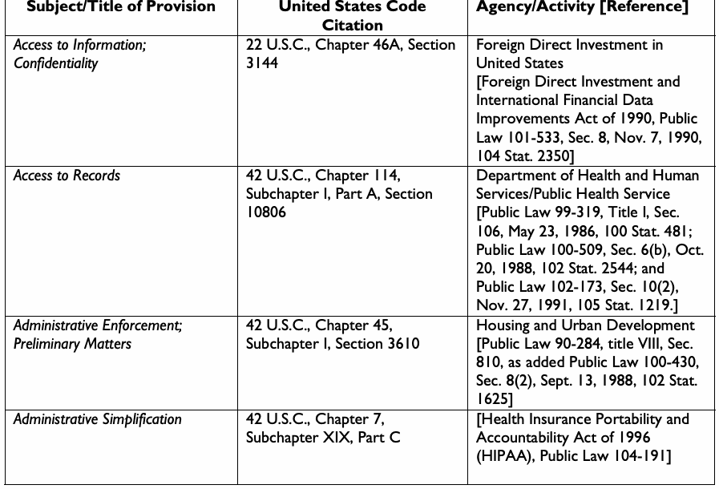
| 規定の主題／名称 | 米国法典の引用 | 機関／活動［参照］ |
| 情報へのアクセス；機密性 | 22 U.S.C., Chapter 46A, Section 3144 | 米国への外国直接投資 [Foreign Direct Investment and International Financial Data Improvements Act of 1990, Public Law 101-533, Sec. 8, Nov. 7, 1990, 104 Stat. 2350] |
| 記録へのアクセス | 42 U.S.C., Chapter 114, Subchapter I, Part A, Section 10806 | 保健福祉省／公衆衛生局 [Public Law 99-319, Title I, Sec. 106, May 23, 1986, 100 Stat. 481; Public Law 100-509, Sec. 6(b), Oct. 20, 1988, 102 Stat. 2544; and Public Law 102-173, Sec. 10(2), Nov. 27, 1991, 105 Stat. 1219.] |
| 行政執行；予備的事項 | 42 U.S.C., Chapter 45, Subchapter I, Section 3610 | 住宅都市開発省 [Public Law 90-284, title VIII, Sec. 810, as added Public Law 100-430, Sec. 8(2), Sept. 13, 1988, 102 Stat. 1625] |
| 行政簡素化 | 42 U.S.C., Chapter 7, Subchapter XIX, Part C | [Health Insurance Portability and Accountability Act of 1996 (HIPAA), Public Law 104-191] |
Table 6: Legal Information Disclosure Prohibitions
表6：情報開示を禁止する法令
未レビュー訳| Subject/Title of Provision | United States Code Citation | Agency/Activity [Reference] |
| Administrative Subpoenas | 18 U.S.C., Part II, Chapter 223, Section 3486(a)(6) | Health Care Investigations/Law Enforcement/Courts [HIPAA, Public Law 104-191, Title II, Sec. 248(a), Aug. 21, 1996, 110 Stat. 2018] |
| Application of Other Laws | 39 U.S.C., Part I, Chapter 4, Section 410(c) | US Postal Service [Postal Reorganization Act, Public Law 91-375, Aug. 12, 1970, 84 Stat. 725 amended by the Federal Pay Comparability Act of 1970, Public Law 91-656, Sec. 8(a), Jan. 8, 1971, 84 Stat. 1955] |
| Approval of Retail Food Stores and Wholesale Food Concerns | 7 U.S.C., Chapter 51, Section 2018(c) | Department of Agriculture Food Stamps [Food Security Act of 1985, Public Law 99-198, Title XV, Sec. 1521, 1532(b), Dec. 23, 1985, 99 Stat. 1579, 1583; amended by the Food Stamp Program Improvements Act of 1994, Public Law 103-225, Title II, Sec. 202, 203, Mar. 25, 1994, 108 Stat. 108; Better Nutrition and Health for Children Act of 1994, Public Law 103-448, Title II, Sec. 204(w)(2)(A), Nov. 2, 1994, 108 Stat. 4746; and Public Law 104- 193, Title VIII, Sec. 831-834, Aug. 22, 1996, 110 Stat. 2328] |
| Assessment Procedures | 7 U.S.C., Chapter 80, Section 4908 | Department of Agriculture [Food Security Act of 1985, Public Law 99-198, Title XVI, Sec. 1649, Dec. 23, 1985, 99 Stat. 1626] |
| Assessments (Confidential Nature) | 7 U.S.C., Chapter 58, Section 2619(c) | Department of Agriculture/ National Potato Promotion Board [Potato Research and Promotion Act, Public Law 91-670, Title III, Sec. 310, Jan. 11, 1971, 84 Stat. 2044; amended by Public Law 101- 624, Title XIX, Sec. 1942, Nov. 28, 1990, 104 Stat. 3867] |
原本PDFの抜粋画像
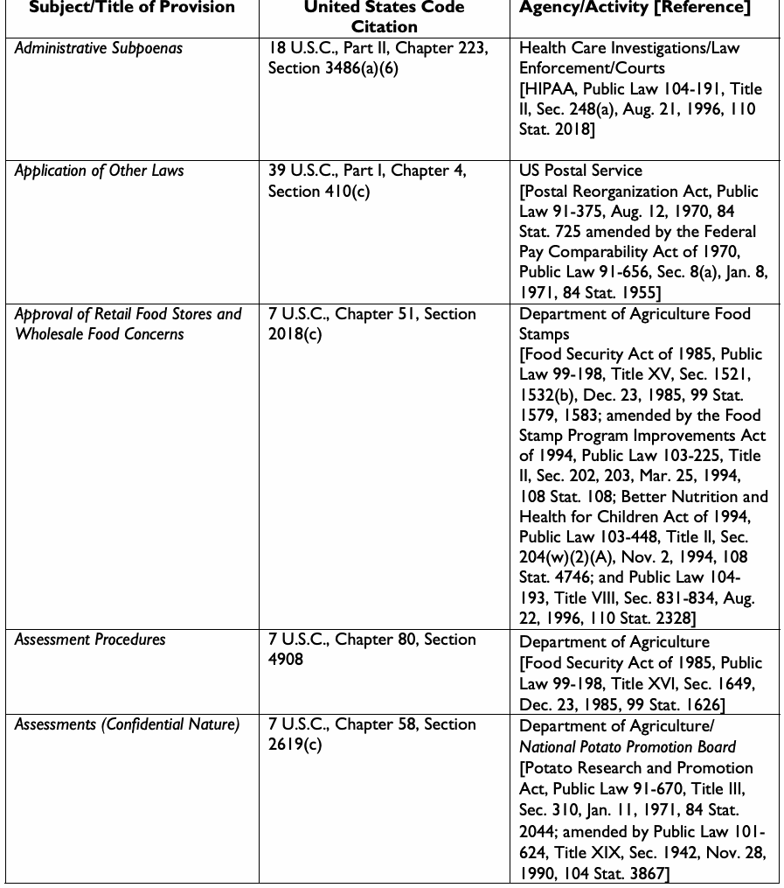
| 規定の主題／名称 | 米国法典の引用 | 機関／活動［参照］ |
| 行政召喚状 | 18 U.S.C., Part II, Chapter 223, Section 3486(a)(6) | 医療関連調査／法執行／裁判所 [HIPAA, Public Law 104-191, Title II, Sec. 248(a), Aug. 21, 1996, 110 Stat. 2018] |
| 他の法律の適用 | 39 U.S.C., Part I, Chapter 4, Section 410(c) | 米国郵便公社 [Postal Reorganization Act, Public Law 91-375, Aug. 12, 1970, 84 Stat. 725 amended by the Federal Pay Comparability Act of 1970, Public Law 91-656, Sec. 8(a), Jan. 8, 1971, 84 Stat. 1955] |
| 小売食料品店および卸売食品事業者の承認 | 7 U.S.C., Chapter 51, Section 2018(c) | 農務省／フードスタンプ事業 [Food Security Act of 1985, Public Law 99-198, Title XV, Sec. 1521, 1532(b), Dec. 23, 1985, 99 Stat. 1579, 1583; amended by the Food Stamp Program Improvements Act of 1994, Public Law 103-225, Title II, Sec. 202, 203, Mar. 25, 1994, 108 Stat. 108; Better Nutrition and Health for Children Act of 1994, Public Law 103-448, Title II, Sec. 204(w)(2)(A), Nov. 2, 1994, 108 Stat. 4746; and Public Law 104- 193, Title VIII, Sec. 831-834, Aug. 22, 1996, 110 Stat. 2328] |
| 賦課手続 | 7 U.S.C., Chapter 80, Section 4908 | 農務省 [Food Security Act of 1985, Public Law 99-198, Title XVI, Sec. 1649, Dec. 23, 1985, 99 Stat. 1626] |
| 賦課（秘密性） | 7 U.S.C., Chapter 58, Section 2619(c) | 農務省／全米ポテト振興委員会 [Potato Research and Promotion Act, Public Law 91-670, Title III, Sec. 310, Jan. 11, 1971, 84 Stat. 2044; amended by Public Law 101- 624, Title XIX, Sec. 1942, Nov. 28, 1990, 104 Stat. 3867] |
Table 6: Legal Information Disclosure Prohibitions
表6：情報開示を禁止する法令
未レビュー訳| Subject/Title of Provision | United States Code Citation | Agency/Activity [Reference] |
| Authorization for Disclosure and Use of Intercepted Wire, Oral, or Electronic Communications | 18 U.S.C., Part I, Chapter 119, Section 2517(6) | Law Enforcement [Omnibus Crime Control and Safe Streets Act of 1968, Public Law 90- 351, Title III, Sec. 802, June 19, 1968, 82 Stat. 217; amended by the Organized Crime Control Act of 1970, Public Law 91-452, Title IX, Sec. 902(b), Oct. 15, 1970, 84 Stat. 947; Electronic Communications Privacy Act of 1986, Public Law 99-508, Title I, Sec. 101(c)(1)(A), Oct. 21, 1986, 100 Stat. 1851; and the USA Patriot Act, Public Law 107-56, Title II, Sec. 203(b)(1), Oct. 26, 2001, 115 Stat. 280] |
| Blood Donor Locator Service | 42 U.S.C., Chapter 7, Subchapter XI, Part A, Section 1320b-11 | Social Security Administration [Social Security Act of Aug. 14, 1935, Ch. 531, Title XI, Sec. 1141, as added to by Public Law 100-647, Title VIII, Sec. 8008(b)(1), Nov. 10, 1988, 102 Stat. 3784; and amended by Public Law 103-296, Title I, Sec. 108(b)(13), Aug. 15, 1994, 108 Stat. 1484] |
| Books and Records | 7 U.S.C., Chapter 26, Subchapter III, Section 608d | Department of Agriculture [Agricultural Adjustment Act, May 12, 1933, C h. 25, Title I, Sec. 8d, as added to by the Miller Act of Aug. 24, 1935, Ch. 641, Sec. 6, 49 Stat. 761; and amended by the Agricultural Marketing Agreement Act of 1937, June 3, 1937, Ch. 296, Sec. 1, 50 Stat. 246; the Food Security Act of 1985 Public Law 99-198, Title XVI, Sec. 1663, Dec. 23, 1985, 99 Stat. 1631; and the Livestock Mandatory Reporting Act of 1999, Public Law 106-78, Title VII, Sec. 757(b), Oct. 22, 1999, 113 Stat. 1171] |
| Bureau of Transportation Statistics – Prohibition of Certain Disclosures | 49 U.S.C., Subtitle I, Chapter 1, Section 111(i) | Bureau of Transportation Statistics/Department of Transportation [Public Law 102-240, Title VI, Sec. 6006(a), Dec. 18, 1991, 105 Stat. 2172; amended by the Transportation Equity Act for the 21st Century, Public Law 105-178, Title V, Sec. 5109(a), June 9, 1998, 112 Stat. 437] |
原本PDFの抜粋画像
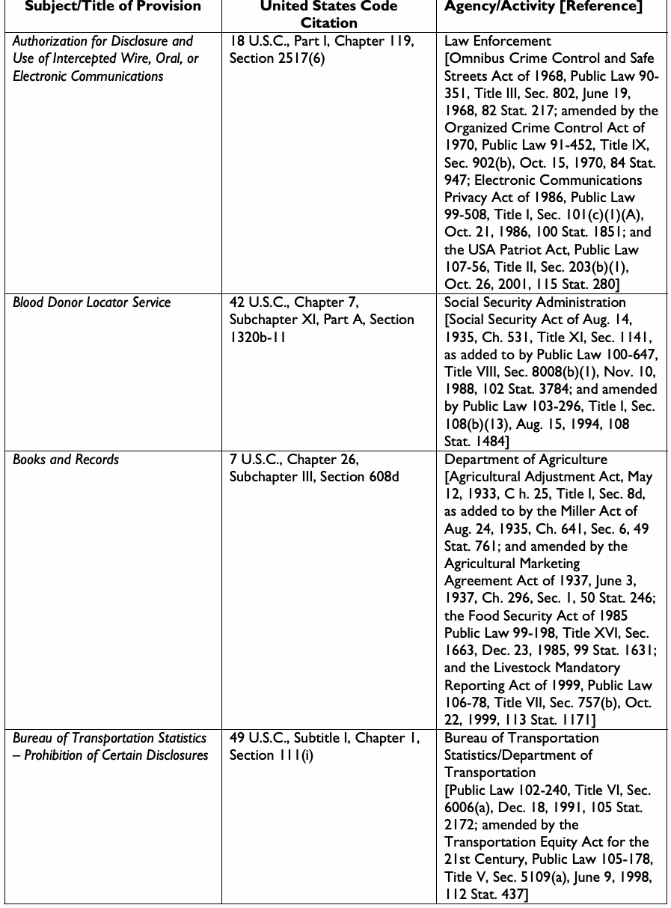
| 規定の主題／名称 | 米国法典の引用 | 機関／活動［参照］ |
| 傍受した有線・口頭・電子通信の開示および使用の承認 | 18 U.S.C., Part I, Chapter 119, Section 2517(6) | 法執行機関 [Omnibus Crime Control and Safe Streets Act of 1968, Public Law 90- 351, Title III, Sec. 802, June 19, 1968, 82 Stat. 217; amended by the Organized Crime Control Act of 1970, Public Law 91-452, Title IX, Sec. 902(b), Oct. 15, 1970, 84 Stat. 947; Electronic Communications Privacy Act of 1986, Public Law 99-508, Title I, Sec. 101(c)(1)(A), Oct. 21, 1986, 100 Stat. 1851; and the USA Patriot Act, Public Law 107-56, Title II, Sec. 203(b)(1), Oct. 26, 2001, 115 Stat. 280] |
| 血液提供者検索サービス | 42 U.S.C., Chapter 7, Subchapter XI, Part A, Section 1320b-11 | 社会保障庁 [Social Security Act of Aug. 14, 1935, Ch. 531, Title XI, Sec. 1141, as added to by Public Law 100-647, Title VIII, Sec. 8008(b)(1), Nov. 10, 1988, 102 Stat. 3784; and amended by Public Law 103-296, Title I, Sec. 108(b)(13), Aug. 15, 1994, 108 Stat. 1484] |
| 帳簿および記録 | 7 U.S.C., Chapter 26, Subchapter III, Section 608d | 農務省 [Agricultural Adjustment Act, May 12, 1933, C h. 25, Title I, Sec. 8d, as added to by the Miller Act of Aug. 24, 1935, Ch. 641, Sec. 6, 49 Stat. 761; and amended by the Agricultural Marketing Agreement Act of 1937, June 3, 1937, Ch. 296, Sec. 1, 50 Stat. 246; the Food Security Act of 1985 Public Law 99-198, Title XVI, Sec. 1663, Dec. 23, 1985, 99 Stat. 1631; and the Livestock Mandatory Reporting Act of 1999, Public Law 106-78, Title VII, Sec. 757(b), Oct. 22, 1999, 113 Stat. 1171] |
| 運輸統計局―特定の開示の禁止 | 49 U.S.C., Subtitle I, Chapter 1, Section 111(i) | 運輸統計局／運輸省 [Public Law 102-240, Title VI, Sec. 6006(a), Dec. 18, 1991, 105 Stat. 2172; amended by the Transportation Equity Act for the 21st Century, Public Law 105-178, Title V, Sec. 5109(a), June 9, 1998, 112 Stat. 437] |
Table 6: Legal Information Disclosure Prohibitions
表6：情報開示を禁止する法令
未レビュー訳| Subject/Title of Provision | United States Code Citation | Agency/Activity [Reference] |
| Chronic Hazard Advisory Panels – Information Disclosure | 15 U.S.C., Chapter 47, Section 2077(g) and (h) | Consumer Product Safety Commission [Consumer Product Safety Act of 1972, Public Law 92-573, Sec. 28, as added to by Public Law 97-35, Title XII, Sec. 1206(a), Aug. 13, 1981, 95 Stat. 716] |
| Civil Damages for Unauthorized Inspection or Disclosure of Returns and Return Information | 26 U.S.C., Subtitle F, Chapter 76, Subchapter B, Section 7431 | Treasury Department/ Internal Revenue Service [Tax Equity and Fiscal Responsibility Act of 1982, Public Law 97-248, Title III, Sec. 357(a), Sept. 3, 1982, 96 Stat. 645; amended by the Interest and Dividend Tax Compliance Act of 1983, Public Law 98-67, Title I, Sec. 104(b), Aug. 5, 1983, 97 Stat. 379; Taxpayer Relief Act of 1997, Public Law 105-34, Title XII, Sec. 1205(c)(2), Aug. 5, 1997, 111 Stat. 998; Taxpayer Browsing Protection Act of 1997, Public Law 105-35, Sec. 3(a)-(d)(4), (6), Aug. 5, 1997, 111 Stat. 1105, 1106; and the Taxpayer Bill of Rights 3, Public Law 105-206, Title III, Sec. 3101(f), Title VI, Sec. 6012(b)(3), July 22, 1998, 112 Stat. 729, 819] |
| Collection of Assessments; Refunds Confidentiality of Information; Disclosures | 7 U.S.C., Chapter 77, Section 4608 (f)(3) and (g) | Department of Agriculture/ Honey Board [Agricultural Research, Extension, and Education Reauthorization Act of 1998, Public Law 105-185, Title VI, Sec. 605(h), June 23, 1998, 112 Stat. 597] |
| Confidential Information | 12 U.S.C., Chapter 6A, Subchapter I, Section 635i- 3(g)(3) | Treasury Department/ Bank of the Tied Aid Credit Fund [Export- Import Bank Act of 1945, July 31, 1945, Ch. 341, Sec. 10, formerly Sec. 15, as added to by the Export-Import Bank Act Amendments of 1986, Public Law 99-472, Sec. 19, Oct. 15, 1986, 100 Stat. 1205] |
| Confidential Information | 15 U.S.C., Chapter 16C, Section 796 | Department of Commerce/ Federal Energy Administration [Energy Supply and Environmental Coordination Act, Public Law 93- 319, Sec. 11, June 22, 1974, 88 Stat. 262] |
原本PDFの抜粋画像
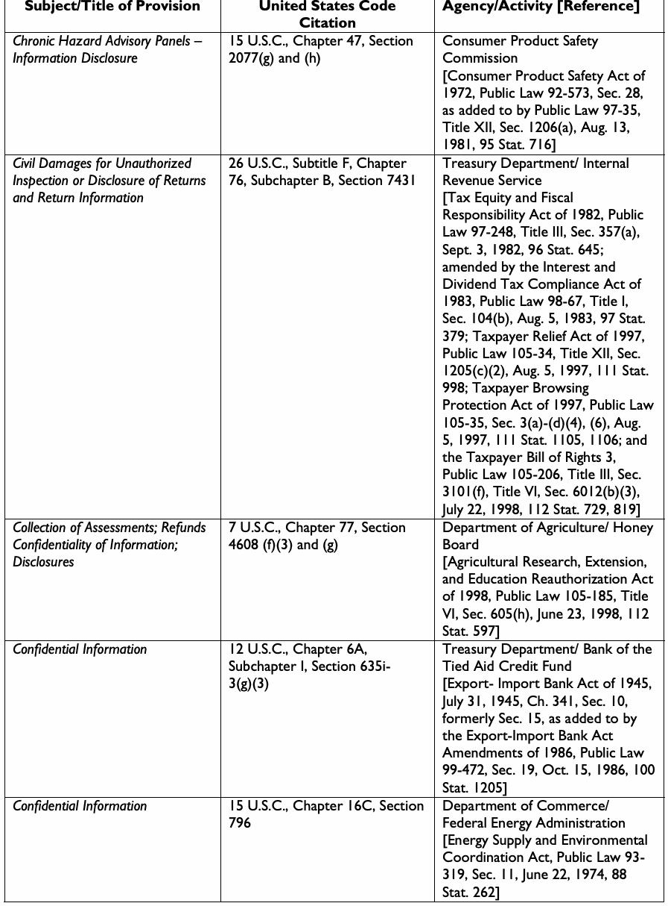
| 規定の主題／名称 | 米国法典の引用 | 機関／活動［参照］ |
| 慢性危険性諮問委員会―情報開示 | 15 U.S.C., Chapter 47, Section 2077(g) and (h) | 消費者製品安全委員会 [Consumer Product Safety Act of 1972, Public Law 92-573, Sec. 28, as added to by Public Law 97-35, Title XII, Sec. 1206(a), Aug. 13, 1981, 95 Stat. 716] |
| 申告書および申告情報の不正な検査または開示に対する民事賠償 | 26 U.S.C., Subtitle F, Chapter 76, Subchapter B, Section 7431 | 財務省／内国歳入庁 [Tax Equity and Fiscal Responsibility Act of 1982, Public Law 97-248, Title III, Sec. 357(a), Sept. 3, 1982, 96 Stat. 645; amended by the Interest and Dividend Tax Compliance Act of 1983, Public Law 98-67, Title I, Sec. 104(b), Aug. 5, 1983, 97 Stat. 379; Taxpayer Relief Act of 1997, Public Law 105-34, Title XII, Sec. 1205(c)(2), Aug. 5, 1997, 111 Stat. 998; Taxpayer Browsing Protection Act of 1997, Public Law 105-35, Sec. 3(a)-(d)(4), (6), Aug. 5, 1997, 111 Stat. 1105, 1106; and the Taxpayer Bill of Rights 3, Public Law 105-206, Title III, Sec. 3101(f), Title VI, Sec. 6012(b)(3), July 22, 1998, 112 Stat. 729, 819] |
| 賦課金の徴収；還付；情報の機密性；開示 | 7 U.S.C., Chapter 77, Section 4608 (f)(3) and (g) | 農務省／ハニー・ボード [Agricultural Research, Extension, and Education Reauthorization Act of 1998, Public Law 105-185, Title VI, Sec. 605(h), June 23, 1998, 112 Stat. 597] |
| 機密情報 | 12 U.S.C., Chapter 6A, Subchapter I, Section 635i- 3(g)(3) | 財務省／タイド援助信用基金銀行 [Export- Import Bank Act of 1945, July 31, 1945, Ch. 341, Sec. 10, formerly Sec. 15, as added to by the Export-Import Bank Act Amendments of 1986, Public Law 99-472, Sec. 19, Oct. 15, 1986, 100 Stat. 1205] |
| 機密情報 | 15 U.S.C., Chapter 16C, Section 796 | 商務省／連邦エネルギー局 [Energy Supply and Environmental Coordination Act, Public Law 93- 319, Sec. 11, June 22, 1974, 88 Stat. 262] |
Table 6: Legal Information Disclosure Prohibitions
表6：情報開示を禁止する法令
未レビュー訳| Subject/Title of Provision | United States Code Citation | Agency/Activity [Reference] |
| Confidential Information | 19 U.S.C., Chapter 14, Section 2605(i) | Treasury Department/ Cultural Property Advisory Committee [Convention on Cultural Property Implementation Act, Public Law 97-446, Title III, Sec. 306, Jan. 12, 1983, 96 Stat. 2356] |
| Confidential Information | 21 U.S.C., Chapter 9, Subchapter VII, Part A, Section 379 | Department of Health and Human Services [Fair Labor Standards Act, June 25, 1938, Ch. 675, Sec. 708, as added to by Medical Device Amendments, Public Law 94-295, Sec. 8, May 28, 1976, 90 Stat. 582] |
| Confidential Information | 25 U.S.C., Chapter 29, Section 2716(a) | Department of Justice/ Department of the Interior/ Bureau of Indian Affairs/ National Indian Gaming Commission [Indian Gaming Regulatory Act, Public Law 100-497, Sec. 17, Oct. 17, 1988, 102 Stat. 2484] |
| Confidential Information | 30 U.S.C., Chapter 25, Subchapter V, Section 1262(b) | Environmental Protection Agency [Surface Mining Control and Reclamation Act, Public Law 95-87, Title V, Sec. 512, Aug. 3, 1977, 91 Stat. 483] |
| Confidential Information | 42 U.S.C., Chapter 99, Section 9122(b) | Department of Commerce/ National Oceanic and Atmospheric Administration [Ocean Thermal Energy Conversion Act of 1980, Public Law 96-320, Title I, Sec. 112, Aug. 3, 1980, 94 Stat. 989; as amended by the National Fishing Enhancement Act of 1984, Public Law 98-623, Title VI, Sec. 602(e)(3), (18), Nov. 8, 1984, 98 Stat. 3412] |
| Confidential Information; Circumstances Permitting Disclosure | 42 U.S.C., Chapter 23, Division A, Subchapter XII, Section 2181(e) | Department of Energy/ Department of Commerce/ Patent Office [Public Law 87-206, Sec. 9] |
| Confidential Information; Disclosure | 42 U.S.C., Chapter 65, Section 4912(b) | Environmental Protection Agency [Federal Noise Control Act, Public Law 92-574, Sec. 13, Oct. 27, 1972, 86 Stat. 1244] |
| Confidential Information; Disclosure Prohibited | 12 U.S.C., Chapter 7A, Section 1141j(c) | Treasury Department/ Farm Credit Administration [Agricultural Marketing Act, June 15, 1929, Ch. 24, Sec. 15, 46 Stat. 18] |
原本PDFの抜粋画像
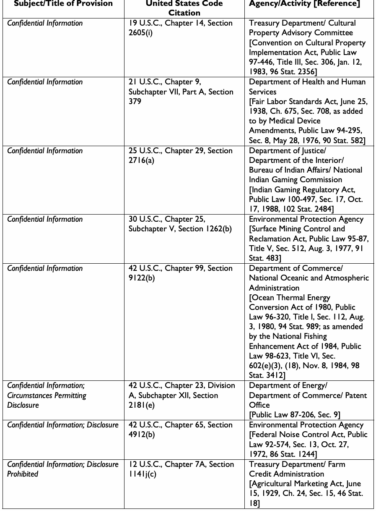
| 規定の主題／名称 | 米国法典の引用 | 機関／活動［参照］ |
| 機密情報 | 19 U.S.C., Chapter 14, Section 2605(i) | 財務省／文化財諮問委員会 [Convention on Cultural Property Implementation Act, Public Law 97-446, Title III, Sec. 306, Jan. 12, 1983, 96 Stat. 2356] |
| 機密情報 | 21 U.S.C., Chapter 9, Subchapter VII, Part A, Section 379 | 保健福祉省 [Fair Labor Standards Act, June 25, 1938, Ch. 675, Sec. 708, as added to by Medical Device Amendments, Public Law 94-295, Sec. 8, May 28, 1976, 90 Stat. 582] |
| 機密情報 | 25 U.S.C., Chapter 29, Section 2716(a) | 司法省／内務省／インディアン事務局／全米インディアン賭博委員会 [Indian Gaming Regulatory Act, Public Law 100-497, Sec. 17, Oct. 17, 1988, 102 Stat. 2484] |
| 機密情報 | 30 U.S.C., Chapter 25, Subchapter V, Section 1262(b) | 環境保護庁 [Surface Mining Control and Reclamation Act, Public Law 95-87, Title V, Sec. 512, Aug. 3, 1977, 91 Stat. 483] |
| 機密情報 | 42 U.S.C., Chapter 99, Section 9122(b) | 商務省／米国海洋大気庁 [Ocean Thermal Energy Conversion Act of 1980, Public Law 96-320, Title I, Sec. 112, Aug. 3, 1980, 94 Stat. 989; as amended by the National Fishing Enhancement Act of 1984, Public Law 98-623, Title VI, Sec. 602(e)(3), (18), Nov. 8, 1984, 98 Stat. 3412] |
| 機密情報；開示が認められる状況 | 42 U.S.C., Chapter 23, Division A, Subchapter XII, Section 2181(e) | エネルギー省／商務省／特許庁 [Public Law 87-206, Sec. 9] |
| 機密情報；開示 | 42 U.S.C., Chapter 65, Section 4912(b) | 環境保護庁 [Federal Noise Control Act, Public Law 92-574, Sec. 13, Oct. 27, 1972, 86 Stat. 1244] |
| 機密情報；開示禁止 | 12 U.S.C., Chapter 7A, Section 1141j(c) | 財務省／農業信用局 [Agricultural Marketing Act, June 15, 1929, Ch. 24, Sec. 15, 46 Stat. 18] |
Table 6: Legal Information Disclosure Prohibitions
表6：情報開示を禁止する法令
未レビュー訳| Subject/Title of Provision | United States Code Citation | Agency/Activity [Reference] |
| Confidential Information; Trade Secrets and Secret Processes; Information Disclosure | 42 U.S.C., Chapter 6A, Subchapter XII, Part E, Section 300j-4(d)(1) | Environmental Protection Agency [Safety of Public Water Systems, July 1, 1944, Ch. 373, Title XIV, Sec. 1445] |
| Confidential Nature (Forms for registration and fingerprinting) | 8 U.S.C., Chapter 12, Subchapter II, Part VII, Section 1304(b) | Department of Justice/ Department of State/ Department of Homeland Security [Immigration and Nationality Act of June 27, 1952, Ch. 477, Title II, Ch. 7, Sec. 264, 66 Stat. 224] |
| Confidential Nature of Claims | 38 U.S.C., Part IV, Chapter 57, Subchapter I, Section 5701 (Renamed from Section 3301 by Public Law 102-40, Title IV, Sec. 402(c)(1), May 7, 1991, 105 Stat. 239) | Veterans Administration [Title 38 "Veterans Benefits" (Social Security Act §§202 and 217), Pub. L. 85-857, Sept. 2, 1958, 72 Stat. 1236, Sec. 3301; amended by Public Law 87-671, Sec. 2, Sept. 19, 1962, 76 Stat. 557; Public Law 91-24, Sec. 11, June 11, 1969, 83 Stat. 34; Vietnam Era Veterans Readjustment Act of 1972, Public Law 92-540, Title IV, Sec. 412, Oct. 24, 1972, 86 Stat. 1093; Public Law 94-321, Sec. 1(a), June 29, 1976, 90 Stat. 713; Public Law 94- 581, Title II, Sec. 210(b), Oct. 21, 1976, 90 Stat. 2863; Veterans Rehabilitation and Education Amendments of 1980, Public Law 96-466, Title VI, Sec. 606, Oct. 17, 1980, 94 Stat. 2212; Court of Veterans Appeals Judges Retirement Act, and Public Law 101-94, Title III, Sec. 302(a), Aug. 16, 1989, 103 Stat. 628; renumbered Sec. 5701 and amended by Public Law 102-40, Title IV, Sec. 402(b)(1), (d)(1), May 7, 1991, 105 Stat. 238, 239; and amended by Public Law 102-83, Sec. 2(c)(6), 4(a)(1), (2)(A)(xi), (3), (4), (b)(1), (2)(E), 5(c)(1), Aug. 6, 1991, 105 Stat. 402-406] |
| Confidential Nature of Information Furnished Bureau | 15 U.S.C., Chapter 5, Section 176a | Department of Commerce/ Bureau of Foreign and Domestic Commerce [The Postal Act of 1938, Jan. 27, 1938, Ch. 11, Sec. 1, 52 Stat. 8] |
原本PDFの抜粋画像
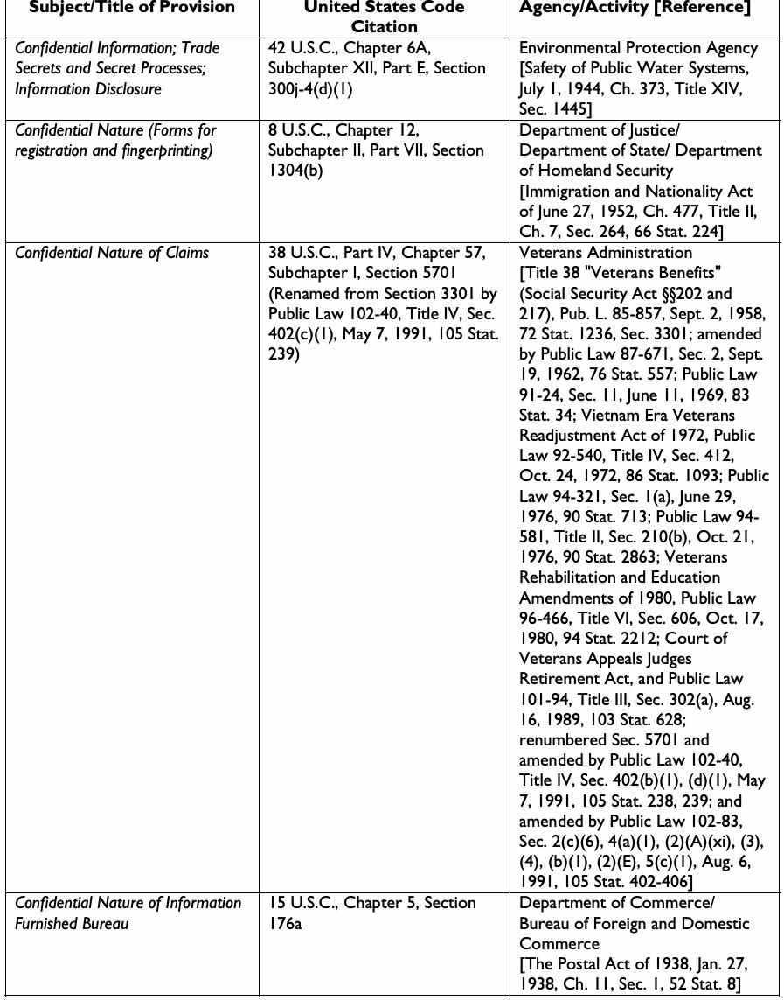
| 規定の主題／名称 | 米国法典の引用 | 機関／活動［参照］ |
| 機密情報；営業秘密および秘密工程；情報開示 | 42 U.S.C., Chapter 6A, Subchapter XII, Part E, Section 300j-4(d)(1) | 環境保護庁 [Safety of Public Water Systems, July 1, 1944, Ch. 373, Title XIV, Sec. 1445] |
| 情報の機密性（登録および指紋採取用書式） | 8 U.S.C., Chapter 12, Subchapter II, Part VII, Section 1304(b) | 司法省／国務省／国土安全保障省 [Immigration and Nationality Act of June 27, 1952, Ch. 477, Title II, Ch. 7, Sec. 264, 66 Stat. 224] |
| 請求の機密性 | 38 U.S.C., Part IV, Chapter 57, Subchapter I, Section 5701 (Renamed from Section 3301 by Public Law 102-40, Title IV, Sec. 402(c)(1), May 7, 1991, 105 Stat. 239) | 退役軍人省 [Title 38 "Veterans Benefits" (Social Security Act §§202 and 217), Pub. L. 85-857, Sept. 2, 1958, 72 Stat. 1236, Sec. 3301; amended by Public Law 87-671, Sec. 2, Sept. 19, 1962, 76 Stat. 557; Public Law 91-24, Sec. 11, June 11, 1969, 83 Stat. 34; Vietnam Era Veterans Readjustment Act of 1972, Public Law 92-540, Title IV, Sec. 412, Oct. 24, 1972, 86 Stat. 1093; Public Law 94-321, Sec. 1(a), June 29, 1976, 90 Stat. 713; Public Law 94- 581, Title II, Sec. 210(b), Oct. 21, 1976, 90 Stat. 2863; Veterans Rehabilitation and Education Amendments of 1980, Public Law 96-466, Title VI, Sec. 606, Oct. 17, 1980, 94 Stat. 2212; Court of Veterans Appeals Judges Retirement Act, and Public Law 101-94, Title III, Sec. 302(a), Aug. 16, 1989, 103 Stat. 628; renumbered Sec. 5701 and amended by Public Law 102-40, Title IV, Sec. 402(b)(1), (d)(1), May 7, 1991, 105 Stat. 238, 239; and amended by Public Law 102-83, Sec. 2(c)(6), 4(a)(1), (2)(A)(xi), (3), (4), (b)(1), (2)(E), 5(c)(1), Aug. 6, 1991, 105 Stat. 402-406] |
| 局に提供された情報の機密性 | 15 U.S.C., Chapter 5, Section 176a | 商務省／外国・国内商務局 [The Postal Act of 1938, Jan. 27, 1938, Ch. 11, Sec. 1, 52 Stat. 8] |
Table 6: Legal Information Disclosure Prohibitions
表6：情報開示を禁止する法令
未レビュー訳| Subject/Title of Provision | United States Code Citation | Agency/Activity [Reference] |
| Confidential Nature of Records (Visas) | 8 U.S.C., Chapter 12, Subchapter II, Part III, Section 1202(f) | Department of State/ Depart-ment of Homeland Security [Immigration and Nationality Act of June 27, 1952, Ch. 477, Title II, Ch. 7, Sec. 264, 66 Stat. 224] |
| Confidential or Privileged Information in an Action Described in 28 U.S.C. Sec. 1581(c) | Title IX, Rule 71, (c) | Department of Commerce/ International Trade Commission/ Judiciary [Jurisdiction: Tariff Act of 1930] |
| Confidential or Privileged Material | 19 U.S.C., Chapter 4, Subchapter III, Part III, Section 1516a(b)(2)(B) | Department of Homeland Security/ Treasury Department/ Customs Service [Tariff Act of 1930, June 17, 1930, Ch. 497, Title IV, Sec. 516A, as added to by the Trade Agreements Act of 1979, Public Law 96-39, Title X, Sec. 1001(a), July 26, 1979, 93 Stat. 300] |
| Confidential Records and Information | 7 U.S.C., Chapter 6, Subchapter II, Section 136e(d) | Environmental Protection Agency [Federal Insecticide, Fungicide and Rodenticide Act, Public Law 95- 396, Sec. 13, Sept. 30, 1978, 92 Stat. 829] |
| Confidential Reports and Other Additional Requirements | Title I, Section 107 | Departments and Agencies/Inspectors General |
| Confidential Status of Application | 7 U.S.C., Chapter 57, Subchapter II, Part E, Section 2426 | Department of Agriculture/ Plant Variety Protection Office [Plant Variety Protection Act, Public Law 91-577, Title II, Sec. 56, Dec. 24, 1970, 84 Stat. 1549 amended by Public Law 96-574, Sec. 12, Dec. 22, 1980, 94 Stat. 3350] |
| Confidential Status of Applications; Publication of Patent Applications | 35 U.S.C., Part II, Chapter 11, Section 122 | Department of Commerce/ Patent Office [1952 Patent Act, July 19, 1952, Ch. 950, 66 Stat. 801; amended by Public Law 93-596, Sec. 1, Jan. 2, 1975, 88 Stat. 1949, and the Inventors' Rights Act of 1999, Public Law 106-113, Div. B, Sec. 1000(a)(9) (Title IV, Sec. 4502(a)), Nov. 29, 1999, 113 Stat. 1536, 1501A-561] |
原本PDFの抜粋画像
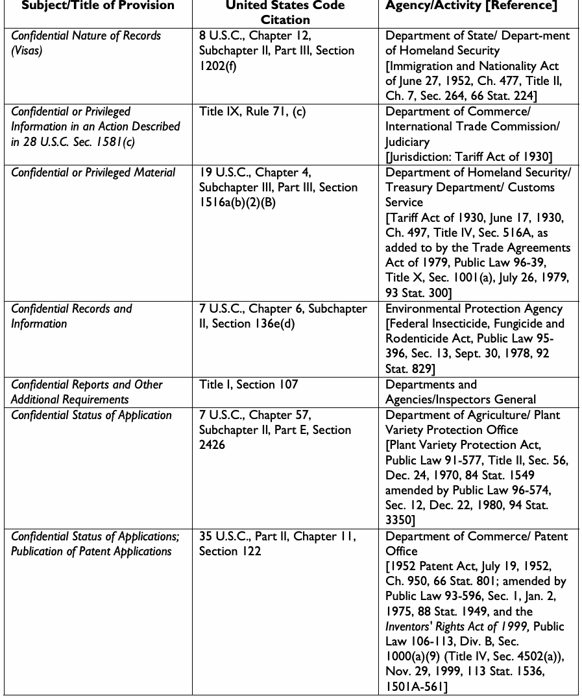
| 規定の主題／名称 | 合衆国法典の引用 | 機関／活動［参照］ |
| 記録（ビザ）の機密性 | 8 U.S.C., Chapter 12, Subchapter II, Part III, Section 1202(f) | 国務省/ 国土安全保障省 [Immigration and Nationality Act of June 27, 1952, Ch. 477, Title II, Ch. 7, Sec. 264, 66 Stat. 224] |
| 28 U.S.C. Sec. 1581(c)に定める訴訟における機密情報または秘匿特権対象情報 | Title IX, Rule 71, (c) | 商務省/ 国際貿易委員会/ 司法機関 [Jurisdiction: Tariff Act of 1930] |
| 機密または秘匿特権対象資料 | 19 U.S.C., Chapter 4, Subchapter III, Part III, Section 1516a(b)(2)(B) | 国土安全保障省/ 財務省/ 税関 [Tariff Act of 1930, June 17, 1930, Ch. 497, Title IV, Sec. 516A, as added to by the Trade Agreements Act of 1979, Public Law 96-39, Title X, Sec. 1001(a), July 26, 1979, 93 Stat. 300] |
| 機密記録および情報 | 7 U.S.C., Chapter 6, Subchapter II, Section 136e(d) | 環境保護庁 [Federal Insecticide, Fungicide and Rodenticide Act, Public Law 95- 396, Sec. 13, Sept. 30, 1978, 92 Stat. 829] |
| 機密報告およびその他の追加要件 | Title I, Section 107 | 各省庁/監察総監 |
| 申請の機密扱い | 7 U.S.C., Chapter 57, Subchapter II, Part E, Section 2426 | 農務省/ 植物品種保護局 [Plant Variety Protection Act, Public Law 91-577, Title II, Sec. 56, Dec. 24, 1970, 84 Stat. 1549 amended by Public Law 96-574, Sec. 12, Dec. 22, 1980, 94 Stat. 3350] |
| 特許出願の機密扱い；特許出願の公開 | 35 U.S.C., Part II, Chapter 11, Section 122 | 商務省/ 特許庁 [1952 Patent Act, July 19, 1952, Ch. 950, 66 Stat. 801; amended by Public Law 93-596, Sec. 1, Jan. 2, 1975, 88 Stat. 1949, and the Inventors' Rights Act of 1999, Public Law 106-113, Div. B, Sec. 1000(a)(9) (Title IV, Sec. 4502(a)), Nov. 29, 1999, 113 Stat. 1536, 1501A-561] |
Table 6: Legal Information Disclosure Prohibitions
表6：法律情報の開示禁止
未レビュー訳| Subject/Title of Provision | United States Code Citation | Agency/Activity [Reference] |
| Confidentiality | 15 U.S.C., Chapter 2, Subchapter I, Section 57b-2 | Department of Commerce/ Federal Trade Commission [The Federal Trade Commission Act, Sept. 26, 1914, Ch. 311, Sec. 21, as added to by the Federal Trade Commission Improvements Act of 1979, Public Law 96-252, Sec. 14, May 28, 1980, 94 Stat. 385; and amended by the Federal Trade Commission Act Amendments of 1994, Public Law 103-312, Sec. 8, Aug. 26, 1994, 108 Stat. 1694] |
| Confidentiality | 20 U.S.C., Chapter 71, Section 9007 | Department of Education [Safe and Drug-Free Schools and Communities Act of 1994, Public Law 103-382, Title IV, Sec. 408, Oct. 20, 1994, 108 Stat. 4034] |
| Confidentiality and Informed Consent | 42 U.S.C., Chapter 6A, Subchapter XXIV, Section 300ff- 61 | Health and Human Services/Public Health Service/Medical [Ryan White Comprehensive AIDS Resources Emergency Act of 1990, Public Law 101-381, Title III, Sec. 301(a), Aug. 18, 1990, 104 Stat. 609] |
| Confidentiality of Abused Person's Address | 42 U.S.C., Chapter 136, Subchapter III, Part B, Subpart 1, Section 13951 | US Postal Service [Public Law 103-322, Title IV, Sec. 40281, Sept. 13, 1994, 108 Stat. 1938] |
| Confidentiality of Certain Medical Records, | 38 U.S.C., Part V, Chapter 73, Subchapter III, Section 7332 (Renumbered by Public Law 102-40 from Section 44132) | Veterans Administration [Public Law 94-581, Title I, Sec. 111(a)(1), Oct. 21, 1976, 90 Stat. 2849, Sec. 4132; amended by Public Law 100-322, Title I, Sec. 121, May 20, 1988, 102 Stat. 502; renumbered Sec. 7332 and amended by Public Law 102-40, Title IV, Sec. 401(a)(4)(A), 402(d)(1), 403(a)(1), (2), (4), (5), May 7, 1991, 105 Stat. 221, 239] |
| Confidentiality of Financial Records | 12 U.S.C., Chapter 35, Section 3403 | Financial Data [Right to Financial Privacy Act of 1978, Public Law 95-630, Title XI, Sec. 1103, Nov. 10, 1978, 92 Stat. 3698; amended by Public Law 99- 570, Title I, |
| Sec. 1353(a), Oct. 27, 1986, 100 Stat. 3207-21; and Public Law 100- 690, Title VI, Sec. 6186(a), Nov. 18, 1988, 102 Stat. 4357] |
原本PDFの抜粋画像
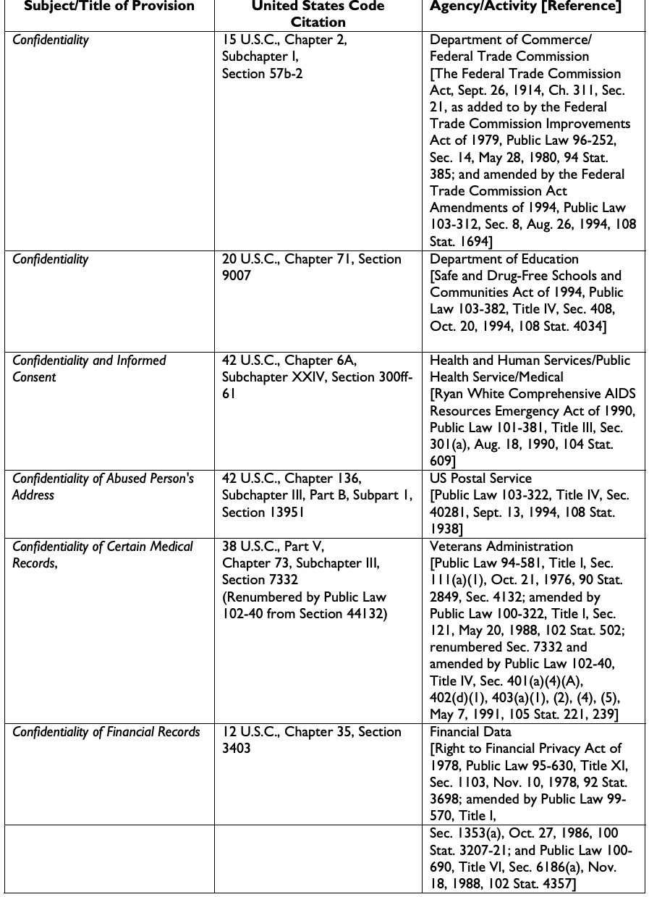
| 規定の主題／名称 | 合衆国法典の引用 | 機関／活動［参照］ |
| 機密性 | 15 U.S.C., Chapter 2, Subchapter I, Section 57b-2 | 商務省/ 連邦取引委員会 [The Federal Trade Commission Act, Sept. 26, 1914, Ch. 311, Sec. 21, as added to by the Federal Trade Commission Improvements Act of 1979, Public Law 96-252, Sec. 14, May 28, 1980, 94 Stat. 385; and amended by the Federal Trade Commission Act Amendments of 1994, Public Law 103-312, Sec. 8, Aug. 26, 1994, 108 Stat. 1694] |
| 機密性 | 20 U.S.C., Chapter 71, Section 9007 | 教育省 [Safe and Drug-Free Schools and Communities Act of 1994, Public Law 103-382, Title IV, Sec. 408, Oct. 20, 1994, 108 Stat. 4034] |
| 機密性およびインフォームド・コンセント | 42 U.S.C., Chapter 6A, Subchapter XXIV, Section 300ff- 61 | 保健福祉省/公衆衛生局/医療 [Ryan White Comprehensive AIDS Resources Emergency Act of 1990, Public Law 101-381, Title III, Sec. 301(a), Aug. 18, 1990, 104 Stat. 609] |
| 虐待被害者の住所の機密性 | 42 U.S.C., Chapter 136, Subchapter III, Part B, Subpart 1, Section 13951 | 米国郵便公社 [Public Law 103-322, Title IV, Sec. 40281, Sept. 13, 1994, 108 Stat. 1938] |
| 特定の医療記録の機密性、 | 38 U.S.C., Part V, Chapter 73, Subchapter III, Section 7332 (Renumbered by Public Law 102-40 from Section 44132) | 退役軍人局 [Public Law 94-581, Title I, Sec. 111(a)(1), Oct. 21, 1976, 90 Stat. 2849, Sec. 4132; amended by Public Law 100-322, Title I, Sec. 121, May 20, 1988, 102 Stat. 502; renumbered Sec. 7332 and amended by Public Law 102-40, Title IV, Sec. 401(a)(4)(A), 402(d)(1), 403(a)(1), (2), (4), (5), May 7, 1991, 105 Stat. 221, 239] |
| 金融記録の機密性 | 12 U.S.C., Chapter 35, Section 3403 | 金融データ [Right to Financial Privacy Act of 1978, Public Law 95-630, Title XI, Sec. 1103, Nov. 10, 1978, 92 Stat. 3698; amended by Public Law 99- 570, Title I, |
| Sec. 1353(a), Oct. 27, 1986, 100 Stat. 3207-21; and Public Law 100- 690, Title VI, Sec. 6186(a), Nov. 18, 1988, 102 Stat. 4357] |
Table 6: Legal Information Disclosure Prohibitions
表6：法律情報の開示禁止
未レビュー訳| Subject/Title of Provision | United States Code Citation | Agency/Activity [Reference] |
| Confidentiality of Information | 7 U.S.C., Chapter 55, Section 2276 | Department of Agriculture [Food Security Act of 1985, Public Law 99-198, Title XVII, Sec. 1770, Dec. 23, 1985, 99 Stat. 1657; Public Law 105-113, Sec. 4(a)(2), (b), Nov. 21, 1997, 111 Stat. 2276; Public Law 106-113, Div. B, Sec. 1000(a)(3) (Title III, Sec. 348), Nov. 29, 1999, 113 Stat. 1535, 1501A-207] |
| Confidentiality of Information | 18 U.S.C., Part II, Chapter 223, Section 3509(d)(1) | Criminal Procedure: Child Victims & Child Witnesses Rights [Crime Control Act of 1990, Public Law 101-647, Title II, Sec. 225(a), Nov. 29, 1990, 104 Stat. 4798; amended by Public Law 103- 322, Title XXXIII, Sec. 330010(6), (7), 330011(e), 330018(b), Sept. 13, 1994, 108 Stat. 2143, 2145, 2149] |
| Confidentiality of Information | 22 U.S.C., Chapter 75, Section 6744 | State Department [Chemical Weapons Convention Implementation Act of 1998, Public Law 105-277, Div. I, Title IV, Sec. 404, Oct. 21, 1998, 112 Stat. 2681- 882] |
| Confidentiality of Medical Quality Assurance Records | 38 U.S.C., Part IV, Chapter 57, Subchapter I, Section 5705 (Renumbered by Public Law 102-40 from Section 3305) | Department of Veterans Affairs [Veterans' Disability Compensation and Housing Benefits Amendments of 1980, Public Law 96-385, Title V, Sec. 505(a), Oct. 7, 1980, 94 Stat. 1535, Sec. 3305; amended by Veterans' Administration Health- Care Amendments of 1985, Public Law 99-166, title II, Sec. 201, Dec. 3, 1985, 99 Stat. 949; amended and renumbered by Department of Veterans Affairs Physicians' and Dentists' |
| Compensation and Labor-Relations Act of 1991, Public Law 102-40, Title IV, Sec. 402(b)(1), 403(b)(2), May 7, 1991, 105 Stat. 238, 239; amended by the Veterans Loans bill, Public Law 102-54, Sec. 14(d)(4), June 13, 1991, 105 Stat. 285 and the Department of Veterans Affairs Codification Act, Public Law 102-83, Sec. 4(a)(2)(F), (3), (4), (b)(1), (2)(E), Aug. 6, 1991, 105 Stat. 404, 405] |
原本PDFの抜粋画像
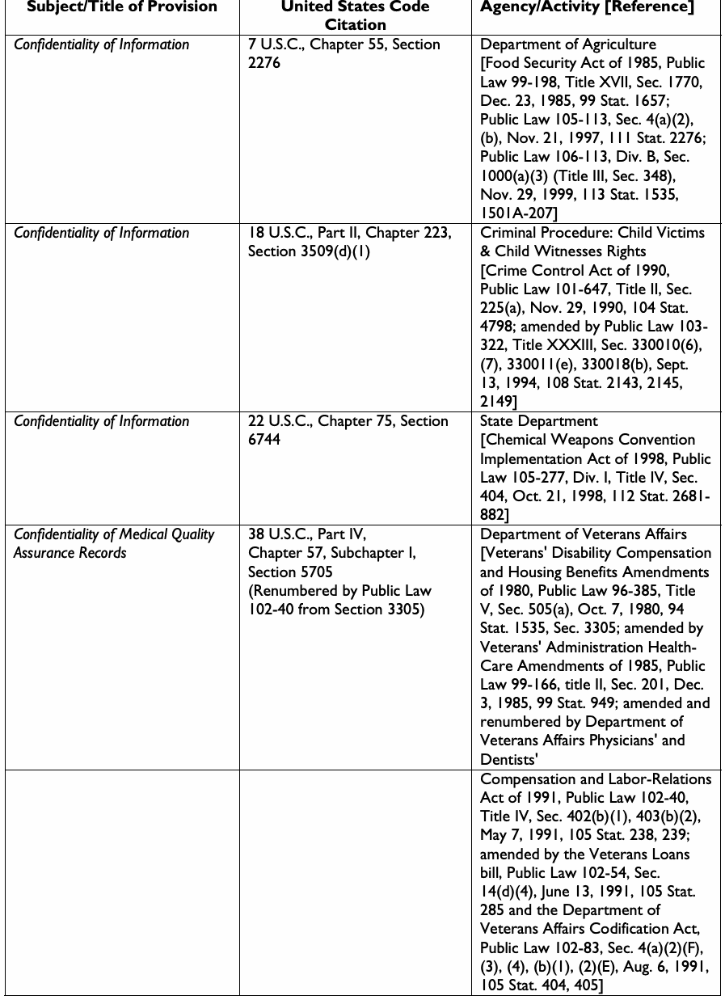
| 規定の主題／名称 | 合衆国法典の引用 | 機関／活動［参照］ |
| 情報の機密性 | 7 U.S.C., Chapter 55, Section 2276 | 農務省 [Food Security Act of 1985, Public Law 99-198, Title XVII, Sec. 1770, Dec. 23, 1985, 99 Stat. 1657; Public Law 105-113, Sec. 4(a)(2), (b), Nov. 21, 1997, 111 Stat. 2276; Public Law 106-113, Div. B, Sec. 1000(a)(3) (Title III, Sec. 348), Nov. 29, 1999, 113 Stat. 1535, 1501A-207] |
| 情報の機密性 | 18 U.S.C., Part II, Chapter 223, Section 3509(d)(1) | 刑事手続：児童被害者 & 児童証人の権利 [Crime Control Act of 1990, Public Law 101-647, Title II, Sec. 225(a), Nov. 29, 1990, 104 Stat. 4798; amended by Public Law 103- 322, Title XXXIII, Sec. 330010(6), (7), 330011(e), 330018(b), Sept. 13, 1994, 108 Stat. 2143, 2145, 2149] |
| 情報の機密性 | 22 U.S.C., Chapter 75, Section 6744 | 国務省 [Chemical Weapons Convention Implementation Act of 1998, Public Law 105-277, Div. I, Title IV, Sec. 404, Oct. 21, 1998, 112 Stat. 2681- 882] |
| 医療品質保証記録の機密性 | 38 U.S.C., Part IV, Chapter 57, Subchapter I, Section 5705 (Renumbered by Public Law 102-40 from Section 3305) | 退役軍人省 [Veterans' Disability Compensation and Housing Benefits Amendments of 1980, Public Law 96-385, Title V, Sec. 505(a), Oct. 7, 1980, 94 Stat. 1535, Sec. 3305; amended by Veterans' Administration Health- Care Amendments of 1985, Public Law 99-166, title II, Sec. 201, Dec. 3, 1985, 99 Stat. 949; amended and renumbered by Department of Veterans Affairs Physicians' and Dentists' |
| Compensation and Labor-Relations Act of 1991, Public Law 102-40, Title IV, Sec. 402(b)(1), 403(b)(2), May 7, 1991, 105 Stat. 238, 239; amended by the Veterans Loans bill, Public Law 102-54, Sec. 14(d)(4), June 13, 1991, 105 Stat. 285 and the Department of Veterans Affairs Codification Act, Public Law 102-83, Sec. 4(a)(2)(F), (3), (4), (b)(1), (2)(E), Aug. 6, 1991, 105 Stat. 404, 405] |
Table 6: Legal Information Disclosure Prohibitions
表6：法律情報の開示禁止
未レビュー訳| Subject/Title of Provision | United States Code Citation | Agency/Activity [Reference] |
| Confidentiality of Medical Quality Assurance Records: Qualified Immunity for Participants | 10 U.S.C., Subtitle A, Part II, Chapter 55, Section 1102 | Department of Defense [National Defense Authorization Act for Fiscal Year 1987, Public Law 99-661, Div. A, Title VII, Sec. 705(a)((1)), Nov. 14, 1986, 100 Stat. 3902] |
| Confidentiality of Records | 42 U.S.C., Chapter 6A, Subchapter III-A, Part D, Section 290dd-2 | Public Health Service [ADAMHA Reorganization Act, Public Law 102-321] |
| Counterintelligence Access to Telephone Toll and Transactional Records | 18 U.S.C., Part I, Chapter 121, Section 2709 | Department of Justice/ Federal Bureau of Investigation/Communication Service Providers [Communications Assistance for Law Enforcement Act, Public Law 99-508, Title II, Sec. 201((a)), Oct. 21, 1986, 100 Stat. 1867] |
| Critical Infrastructure Information | 6 U.S.C., Chapter 1 | Department of Homeland Security [Critical Infrastructure Information Protection Act of 2002, Public Law 107-296, Title II, Subtitle B, Sec. 211-215] |
| Crop Insurance - Purpose; Definitions; Protection of Information; Relation to Other Laws | 7 U.S.C., Chapter 36, Section 1502 | Department of Agriculture [Agriculture Risk Protection Act of 2000, Public Law 106-224, Title I, Sec. 122, 141, June 20, 2000, 114 Stat. 377, 389] |
| Cultural Property Advisory Committee | 19 U.S.C., Chapter 14, Section 2605 | Treasury Department/ Department of Homeland Security [Convention on Cultural Property Implementation Act, Public Law 97-446, Title III, Sec. 306, Jan. 12, 1983, 96 Stat. 2356] |
| Data Collection Authority of President | 10 U.S.C., Subtitle A, Part IV, Chapter 148, Subchapter II, Section 2507 | Department of Defense/ National Defense Technology and Industrial Base Council [Defense Conversion, Reinvestment, and Transition Assistance Act of 1992, PublicLaw 102-484, Div. D, Title XLII, Sec. 4217, Oct. 23, 1992, 106 Stat. 2670; amended by Defense Conversion, Reinvestment and Transition Assistance Amendments of 1993, Public Law 103-160, Div. A, Title XI, Sec. 1182(b)(1), Nov. 30, 1993, 107 Stat. 1772] |
原本PDFの抜粋画像
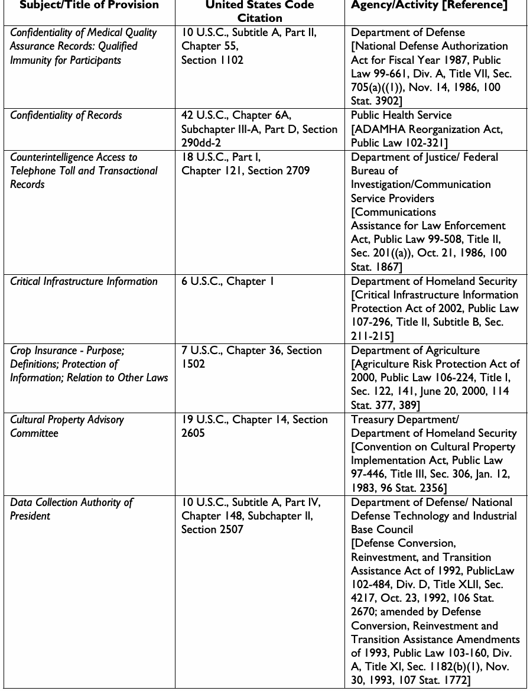
| 規定の主題／名称 | 合衆国法典の引用 | 機関／活動［参照］ |
| 医療品質保証記録の機密性：参加者に対する限定免責 | 10 U.S.C., Subtitle A, Part II, Chapter 55, Section 1102 | 国防総省 [National Defense Authorization Act for Fiscal Year 1987, Public Law 99-661, Div. A, Title VII, Sec. 705(a)((1)), Nov. 14, 1986, 100 Stat. 3902] |
| 記録の機密性 | 42 U.S.C., Chapter 6A, Subchapter III-A, Part D, Section 290dd-2 | 公衆衛生局 [ADAMHA Reorganization Act, Public Law 102-321] |
| 防諜目的の電話料金・取引記録へのアクセス | 18 U.S.C., Part I, Chapter 121, Section 2709 | 司法省/ 連邦捜査局/通信サービス事業者 [Communications Assistance for Law Enforcement Act, Public Law 99-508, Title II, Sec. 201((a)), Oct. 21, 1986, 100 Stat. 1867] |
| 重要インフラ情報 | 6 U.S.C., Chapter 1 | 国土安全保障省 [Critical Infrastructure Information Protection Act of 2002, Public Law 107-296, Title II, Subtitle B, Sec. 211-215] |
| 作物保険－目的；定義；情報の保護；他法との関係 | 7 U.S.C., Chapter 36, Section 1502 | 農務省 [Agriculture Risk Protection Act of 2000, Public Law 106-224, Title I, Sec. 122, 141, June 20, 2000, 114 Stat. 377, 389] |
| 文化財諮問委員会 | 19 U.S.C., Chapter 14, Section 2605 | 財務省/ 国土安全保障省 [Convention on Cultural Property Implementation Act, Public Law 97-446, Title III, Sec. 306, Jan. 12, 1983, 96 Stat. 2356] |
| 大統領のデータ収集権限 | 10 U.S.C., Subtitle A, Part IV, Chapter 148, Subchapter II, Section 2507 | 国防総省/ 国防技術・産業基盤評議会 [Defense Conversion, Reinvestment, and Transition Assistance Act of 1992, PublicLaw 102-484, Div. D, Title XLII, Sec. 4217, Oct. 23, 1992, 106 Stat. 2670; amended by Defense Conversion, Reinvestment and Transition Assistance Amendments of 1993, Public Law 103-160, Div. A, Title XI, Sec. 1182(b)(1), Nov. 30, 1993, 107 Stat. 1772] |
Table 6: Legal Information Disclosure Prohibitions
表6：法律情報の開示禁止
未レビュー訳| Subject/Title of Provision | United States Code Citation | Agency/Activity [Reference] |
| Disclosure, Availability, and Use of Information | 49 U.S.C., Subtitle II, Chapter 11, Subchapter II, Section 1114 | National Transportation Safety Board [Public Law 103-272, Sec. 1(d), July 5, 1994, 108 Stat. 749; amended by National Transportation Safety Board Amendments of 1996, Public Law 104-291, title I, Sec. 102, 103, Oct. 11, 1996, 110 Stat. 3452] |
| Disclosure of Confidential Information Generally | 18 U.S.C., Part I, Chapter 93, Section 1905 | [Judiciary and Judicial Procedures Act, June 25, 1948, Ch. 645, 62 Stat. 791 as amended by Public Law 96-349, Sec. 7(b), Sept. 12, 1980, 94 Stat. 1158; Public Law 102-550, Title XIII, Sec. 1353, Oct. 28, 1992, 106 Stat. 3970; and Public Law 104-294, Title VI, Sec. 601(a)(8), Oct. 11, 1996, 110 Stat. 3498] |
| Disclosure of Data | 15 U.S.C., Chapter 53, Subchapter 1, Section 2613 | Environmental Protection Agency [Toxic Substances Control Act, Public Law 94-469, Title I, Sec. 14, Oct. 11, 1976, 90 Stat. 2034; (Renumbered Title I, Public Law 99-519, Sec. 3(c)(1), Oct. 22, 1986, 100 Stat. 2989)] |
| Disclosure of Information | 29 U.S.C., Chapter 22, Section 2008 | Polygraph [Employee Polygraph Protection Act of 1988, Public Law 100-347, Sec. 9, June 27, 1988, 102 Stat. 652] |
| Disclosure of Information by Commission | 15 U.S.C., Chapter IID, Subchapter II, Section 80b-10 | Securities and Exchange Commission [The Investment Company Act of 1940, Aug. 22, 1940, Ch. 686, Title II, Sec. 210, 54 Stat. 854; Investment Advisers Act of 1940 Amendment, Public Law 86-750, Sec. 13, Sept. 13, 1960, 74 Stat. 887; and International Securities Enforcement Cooperation Act of 1990, Public Law 101-550, title II, Sec. 202(b)(2), Nov. 15, 1990, 104 Stat. 2715] |
原本PDFの抜粋画像
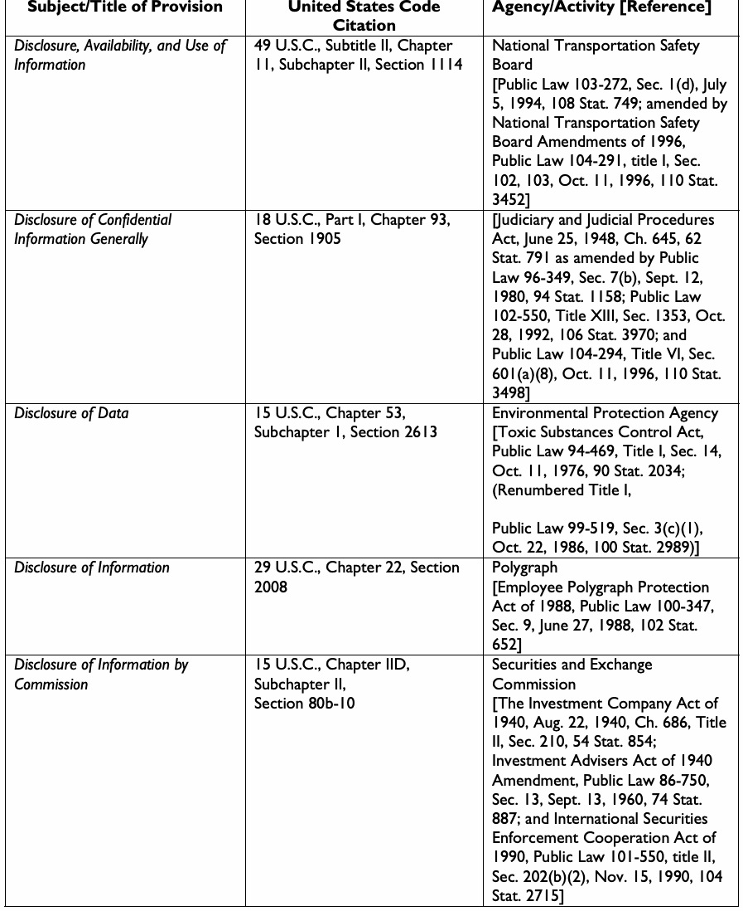
| 規定の主題／名称 | 合衆国法典の引用 | 機関／活動［参照］ |
| 情報の開示、利用可能性および使用 | 49 U.S.C., Subtitle II, Chapter 11, Subchapter II, Section 1114 | 国家運輸安全委員会 [Public Law 103-272, Sec. 1(d), July 5, 1994, 108 Stat. 749; amended by National Transportation Safety Board Amendments of 1996, Public Law 104-291, title I, Sec. 102, 103, Oct. 11, 1996, 110 Stat. 3452] |
| 機密情報の一般的な開示 | 18 U.S.C., Part I, Chapter 93, Section 1905 | [Judiciary and Judicial Procedures Act, June 25, 1948, Ch. 645, 62 Stat. 791 as amended by Public Law 96-349, Sec. 7(b), Sept. 12, 1980, 94 Stat. 1158; Public Law 102-550, Title XIII, Sec. 1353, Oct. 28, 1992, 106 Stat. 3970; and Public Law 104-294, Title VI, Sec. 601(a)(8), Oct. 11, 1996, 110 Stat. 3498] |
| データの開示 | 15 U.S.C., Chapter 53, Subchapter 1, Section 2613 | 環境保護庁 [Toxic Substances Control Act, Public Law 94-469, Title I, Sec. 14, Oct. 11, 1976, 90 Stat. 2034; (Renumbered Title I, Public Law 99-519, Sec. 3(c)(1), Oct. 22, 1986, 100 Stat. 2989)] |
| 情報の開示 | 29 U.S.C., Chapter 22, Section 2008 | ポリグラフ [Employee Polygraph Protection Act of 1988, Public Law 100-347, Sec. 9, June 27, 1988, 102 Stat. 652] |
| 委員会による情報の開示 | 15 U.S.C., Chapter IID, Subchapter II, Section 80b-10 | 証券取引委員会 [The Investment Company Act of 1940, Aug. 22, 1940, Ch. 686, Title II, Sec. 210, 54 Stat. 854; Investment Advisers Act of 1940 Amendment, Public Law 86-750, Sec. 13, Sept. 13, 1960, 74 Stat. 887; and International Securities Enforcement Cooperation Act of 1990, Public Law 101-550, title II, Sec. 202(b)(2), Nov. 15, 1990, 104 Stat. 2715] |
Table 6: Legal Information Disclosure Prohibitions
表6：法律情報の開示禁止
未レビュー訳| Subject/Title of Provision | United States Code Citation | Agency/Activity [Reference] |
| Disclosure of Information in Possession of Social Security Administration or Department of Health and Human Services | 42 U.S.C. Chapter 7, Subchapter XI, Part A, Section 1306 | Social Security Administration/Department of Health and Human Services/Public Health Service [Social Security Act of Aug. 14, 1935, Ch. 531, Title XI, Sec. 1106, as added Aug. 10, 1939, Ch. 666, Title VIII, Sec. 802, 53 Stat. 1398 amended Aug. 28, 1950, Ch. 809, Title IV, Sec. 403(d), 64 Stat. 559; Public Law 85-840, Title VII, Sec. 701, Aug. 28, 1958, 72 Stat. 1055;Public Law 89-97, Title I, Sec. 108(c), Title III, Sec. 340, July 30, 1965, 79 Stat. 339, 411; Public Law 90-248, Title I, Sec. 168, Title II, Sec. 241(c)(1), Jan. 2, 1968, 81 Stat. 875, 917; Public Law 92-603, Title II, Sec. 249C(a), Oct. 30, 1972, 86 Stat. 1428; Public Law 93-647, Sec. 101(d), Jan. 4, 1975, 88 Stat. 2360; Public Law 97-35, Title XXII, Sec. 2207, Aug. 13, 1981, 95 Stat. 838; Public Law 98-369, Div. B, Title VI, Sec. 2663(j)(2)(D)(ii), (l), July 18, 1984, 98 Stat. 1170, 1171; Public Law 103-296, Title I, Sec. 108(b)(2)-(5), Title III, Sec. 311(a), 313(a), Aug. 15, 1994, 108 Stat. 1481, 1482, 1525, 1530] |
| Disclosure of Wagering Tax Information | 26 U.S.C., Subtitle D, Chapter 35, Subchapter C, Section 4424 | Treasury Department [Public Law 93-499, Sec. 3(c)(1), Oct. 29, 1974, 88 Stat. 1550; amended by the Tax Reform Act of 1976, Public Law 94-455, Title XII, Sec. 1202(h)(6), Title XIX, Sec. 1906(b)(13)(A), Oct. 4, 1976, 90 Stat. 1688, 1834] |
| Disclosures to FBI for Counterintelligence Purposes | 15 U.S.C., Chapter 41, Subchapter III, Section 1681u | [Fair Credit Reporting Act, Public Law 90-321, Title VI, Sec. 625, formerly Sec. 624, as added to by the Intelligence Authorization Act for Fiscal Year 1996, Public Law 104-93, Title VI, Sec. 601(a), Jan. 6, 1996, 109 Stat. 974; renumbered Sec. 625 and amended by the USA Patriot Act, Public Law 107-56, Title III, Sec. 358(g)(1)(A), Title V, Sec. 505(c), Oct. 26, 2001, 115 Stat. 327, 366] |
原本PDFの抜粋画像
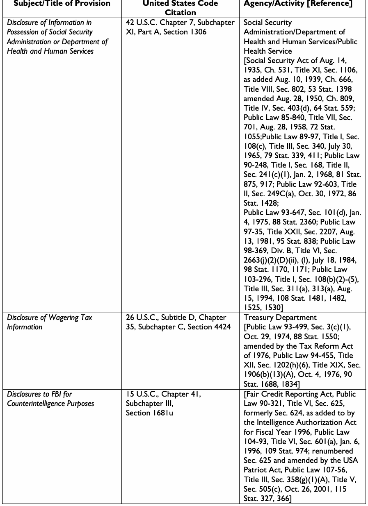
| 規定の主題／名称 | 合衆国法典の引用 | 機関／活動［参照］ |
| 社会保障庁または保健福祉省が保有する情報の開示 | 42 U.S.C. Chapter 7, Subchapter XI, Part A, Section 1306 | 社会保障庁/保健福祉省/公衆衛生局 [Social Security Act of Aug. 14, 1935, Ch. 531, Title XI, Sec. 1106, as added Aug. 10, 1939, Ch. 666, Title VIII, Sec. 802, 53 Stat. 1398 amended Aug. 28, 1950, Ch. 809, Title IV, Sec. 403(d), 64 Stat. 559; Public Law 85-840, Title VII, Sec. 701, Aug. 28, 1958, 72 Stat. 1055;Public Law 89-97, Title I, Sec. 108(c), Title III, Sec. 340, July 30, 1965, 79 Stat. 339, 411; Public Law 90-248, Title I, Sec. 168, Title II, Sec. 241(c)(1), Jan. 2, 1968, 81 Stat. 875, 917; Public Law 92-603, Title II, Sec. 249C(a), Oct. 30, 1972, 86 Stat. 1428; Public Law 93-647, Sec. 101(d), Jan. 4, 1975, 88 Stat. 2360; Public Law 97-35, Title XXII, Sec. 2207, Aug. 13, 1981, 95 Stat. 838; Public Law 98-369, Div. B, Title VI, Sec. 2663(j)(2)(D)(ii), (l), July 18, 1984, 98 Stat. 1170, 1171; Public Law 103-296, Title I, Sec. 108(b)(2)-(5), Title III, Sec. 311(a), 313(a), Aug. 15, 1994, 108 Stat. 1481, 1482, 1525, 1530] |
| 賭博税情報の開示 | 26 U.S.C., Subtitle D, Chapter 35, Subchapter C, Section 4424 | 財務省 [Public Law 93-499, Sec. 3(c)(1), Oct. 29, 1974, 88 Stat. 1550; amended by the Tax Reform Act of 1976, Public Law 94-455, Title XII, Sec. 1202(h)(6), Title XIX, Sec. 1906(b)(13)(A), Oct. 4, 1976, 90 Stat. 1688, 1834] |
| 防諜目的でのFBIへの開示 | 15 U.S.C., Chapter 41, Subchapter III, Section 1681u | [Fair Credit Reporting Act, Public Law 90-321, Title VI, Sec. 625, formerly Sec. 624, as added to by the Intelligence Authorization Act for Fiscal Year 1996, Public Law 104-93, Title VI, Sec. 601(a), Jan. 6, 1996, 109 Stat. 974; renumbered Sec. 625 and amended by the USA Patriot Act, Public Law 107-56, Title III, Sec. 358(g)(1)(A), Title V, Sec. 505(c), Oct. 26, 2001, 115 Stat. 327, 366] |
Table 6: Legal Information Disclosure Prohibitions
表6：法律情報の開示禁止
未レビュー訳| Subject/Title of Provision | United States Code Citation | Agency/Activity [Reference] |
| Disclosure to Foreign Antitrust Authority of Antitrust Evidence | 15 U.S.C., Chapter 88, Section 6201 | Department of Justice/Federal Trade Commission [International Antitrust Enforcement Assistance Act of 1994, Pub. L. 103-438, Sec. 2, Nov. 2, 1994, 108 Stat. 4597] |
| Disclosures to Government Agencies for Counterterrorism Purposes | 15 U.S.C., Chapter 41, Subchapter III, Section 1681v | Department of Homeland Security/Counterterrorism [Fair Credit Reporting Act, Public Law 90-321, Title VI, Sec. 626; as added to by the USA Patriot Act, Public Law 107-56, Title III, Sec. 358(g)(1)(B), Oct. 26, 2001, 115 Stat. 327] |
| Disposition of Rights | 35 U.S.C., Part II, Chapter 18, Section 202(c)(5) | Department of Commerce Patent Rights [Government Patent Policy Act of 1980, Public Law 96-517, Sec. 6(a), Dec. 12, 1980, 94 Stat. 3020; amended by the Trademark Clarification Act of 1984, Public Law 98-620, Title V, Sec. 501(6), Nov. 8, 1984, 98 Stat. 3364-3366] |
| Dissemination of Unclassified Information | 42 U.S.C., Chapter 23, Division A, Subchapter XI, Section 2168 | Department of Energy [Atomic Energy Act of Aug. 1, 1946, Ch. 724, Title I, Sec. 148, as added to by Public Law 97-90, Title II, Sec. 210(a)(1), Dec. 4, 1981, 95 Stat. 1169 and amended by Public Law 97-415, Sec. 17, Jan. 4, 1983, 96 Stat. 2076; renumbered Title I, Public Law 102-486, Title IX, Sec. 902(a)(8), Oct. 24, 1992, 106 Stat. 2944] |
| Employees of Nonappropriated Fund Instrumentalities: Reprisals | 10 U.S.C., Subtitle A, Part II, Chapter 81, Section 1587(e) | Department of Defense [Department of Defense Authorization Act, 1984, Public Law 98-94, Title XII, Sec. 1253(a)(1), Sept. 24, 1983, 97 Stat. 699; amended by the National Defense Authorization Act for Fiscal Year 1996, Public Law 104- 106, Div. A, Title IX, Sec. 903(f)(3), Title X, Sec. 1040(a)-(d)(1), Feb. 10, 1996, 110 Stat. 402, 433] |
| Equal Employment Opportunities Enforcement Provisions | 42 U.S.C., Chapter 21, Subchapter 6, Section 2000e-5 | Equal Employment Opportunities Commission [Civil Rights Act of 1964, Public Law 88-352, Title VII, Sec. 706, July 2, 1964, 78 Stat. 259] |
原本PDFの抜粋画像
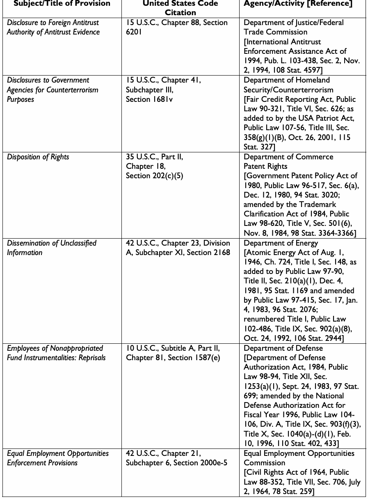
| 規定の主題／名称 | 合衆国法典の引用 | 機関／活動［参照］ |
| 外国の反トラスト当局への反トラスト証拠の開示 | 15 U.S.C., Chapter 88, Section 6201 | 司法省/連邦取引委員会 [International Antitrust Enforcement Assistance Act of 1994, Pub. L. 103-438, Sec. 2, Nov. 2, 1994, 108 Stat. 4597] |
| 対テロ目的での政府機関への開示 | 15 U.S.C., Chapter 41, Subchapter III, Section 1681v | 国土安全保障省/対テロ活動 [Fair Credit Reporting Act, Public Law 90-321, Title VI, Sec. 626; as added to by the USA Patriot Act, Public Law 107-56, Title III, Sec. 358(g)(1)(B), Oct. 26, 2001, 115 Stat. 327] |
| 権利の処分 | 35 U.S.C., Part II, Chapter 18, Section 202(c)(5) | 商務省特許権担当部門 [Government Patent Policy Act of 1980, Public Law 96-517, Sec. 6(a), Dec. 12, 1980, 94 Stat. 3020; amended by the Trademark Clarification Act of 1984, Public Law 98-620, Title V, Sec. 501(6), Nov. 8, 1984, 98 Stat. 3364-3366] |
| 未分類情報の配布 | 42 U.S.C., Chapter 23, Division A, Subchapter XI, Section 2168 | エネルギー省 [Atomic Energy Act of Aug. 1, 1946, Ch. 724, Title I, Sec. 148, as added to by Public Law 97-90, Title II, Sec. 210(a)(1), Dec. 4, 1981, 95 Stat. 1169 and amended by Public Law 97-415, Sec. 17, Jan. 4, 1983, 96 Stat. 2076; renumbered Title I, Public Law 102-486, Title IX, Sec. 902(a)(8), Oct. 24, 1992, 106 Stat. 2944] |
| 非歳出資金機関の従業員：報復措置 | 10 U.S.C., Subtitle A, Part II, Chapter 81, Section 1587(e) | 国防総省 [Department of Defense Authorization Act, 1984, Public Law 98-94, Title XII, Sec. 1253(a)(1), Sept. 24, 1983, 97 Stat. 699; amended by the National Defense Authorization Act for Fiscal Year 1996, Public Law 104- 106, Div. A, Title IX, Sec. 903(f)(3), Title X, Sec. 1040(a)-(d)(1), Feb. 10, 1996, 110 Stat. 402, 433] |
| 雇用機会均等の執行規定 | 42 U.S.C., Chapter 21, Subchapter 6, Section 2000e-5 | 雇用機会均等委員会 [Civil Rights Act of 1964, Public Law 88-352, Title VII, Sec. 706, July 2, 1964, 78 Stat. 259] |
Table 6: Legal Information Disclosure Prohibitions
表6：法律情報の開示禁止
未レビュー訳| Subject/Title of Provision | United States Code Citation | Agency/Activity [Reference] |
| Evidence, Procedure, and Certification for Payments | 42 U.S.C., Chapter 7, Subchapter II, Section 405 | Social Security Numbers [Social Security Act of Aug. 14, 1935, Ch. 531, Title II, Sec. 205, 49 Stat. 624 as amended (e.g., Public Law 93-445 Title III, Sec. 302(a), 303, Oct. 16, 1974, 88 Stat. 1358 and Public Law 101-624, Title XVII, Sec. 1735(a), (b), Title XXII, Sec. 2201(b), (c), Nov. 28, 1990, 104 Stat. 3791, 3792, 3951, 3952)] |
| Family Educational and Privacy Rights | 20 U.S.C., Chapter 31, Section 1232g | Department of Education, Students [Elementary and Secondary Education Amendments of 1967, Public Law 90-247, Title IV, Sec. 444, formerly Sec. 438, as added to by Elementary and Secondary Education Amendments Act of 1974, Public Law 93-380, Title V, Sec. 513(a), Aug. 21, 1974, 88 Stat. 571; amended by Public Law 93- 568, Sec. 2(a), Dec. 31, 1974, 88 Stat. 1858; Public Law 96-46, Sec. 4(c), Aug. 6, 1979, 93 Stat. 342; the Student Right-To-Know and Campus Security Act of 1990, Public Law 101-542, Title II, Sec. 203, Nov. 8, 1990, 104 Stat. 2385 Pub. L. 102-325, Title XV, Sec. 1555(a), July 23, 1992, 106 Stat. 840; renumbered Sec. 444 and amended by Public Law 103-382, Title II, Sec. 212(b)(1), 249, 261(h), Oct. 20, 1994, 108 Stat. 3913, 3924, 3928; amended by the Higher Education Amendments of 1998, Public Law 105-244, Title IX, Sec. 951, 952, Oct. 7, 1998, 112 Stat. 1835, 1836 and the Campus Sex Crimes Prevention Act, Public Law 106-386, Div. B, Title VI, Sec. 1601(d), Oct. 28, 2000, 114 Stat. 1538] |
| Federal Parent Locator Service | 42 U.S.C., Chapter 7, Subchapter IV, Part D, Section 653(b)(2) | Department of Health and Human Services [Social Security Act of Aug. 14, 1935, Ch. 531, Title IV, Sec. 453, as added Public Law 93-647, Sec. 101(a), Jan. 4, 1975, 88 Stat. 2353 and amended by Public Law 105- 33, Sec. 5534(a)(2)] |
原本PDFの抜粋画像
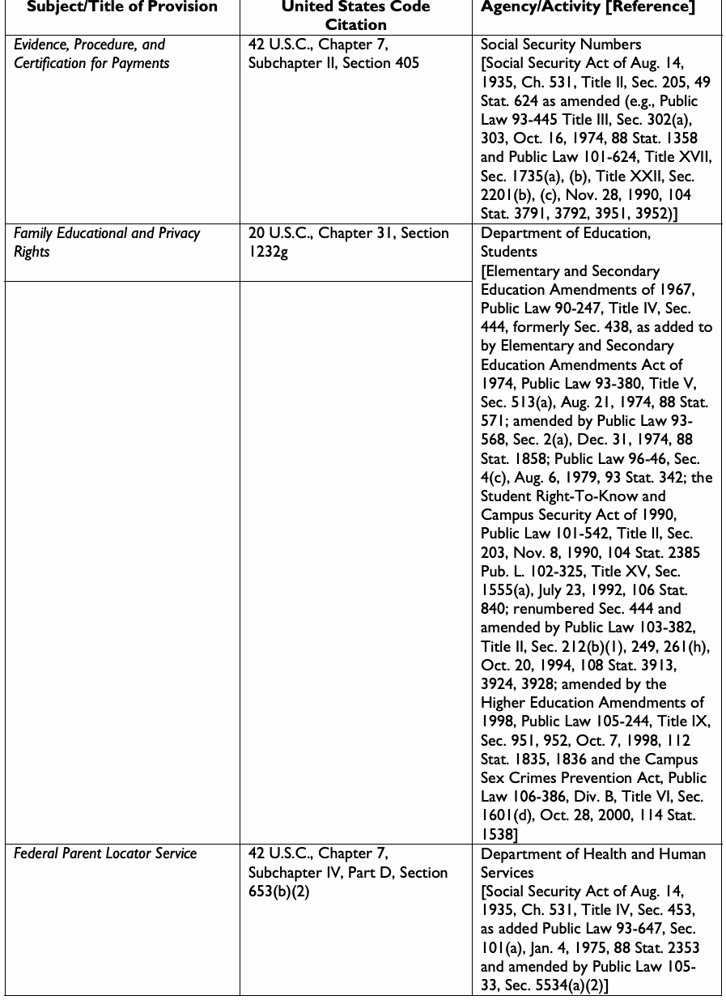
| 規定の主題／名称 | 合衆国法典の引用 | 機関／活動［参照］ |
| 支払いに関する証拠、手続および証明 | 42 U.S.C., Chapter 7, Subchapter II, Section 405 | 社会保障番号 [Social Security Act of Aug. 14, 1935, Ch. 531, Title II, Sec. 205, 49 Stat. 624 as amended (e.g., Public Law 93-445 Title III, Sec. 302(a), 303, Oct. 16, 1974, 88 Stat. 1358 and Public Law 101-624, Title XVII, Sec. 1735(a), (b), Title XXII, Sec. 2201(b), (c), Nov. 28, 1990, 104 Stat. 3791, 3792, 3951, 3952)] |
| 家族教育およびプライバシー権 | 20 U.S.C., Chapter 31, Section 1232g | 教育省、学生 [Elementary and Secondary Education Amendments of 1967, Public Law 90-247, Title IV, Sec. 444, formerly Sec. 438, as added to by Elementary and Secondary Education Amendments Act of 1974, Public Law 93-380, Title V, Sec. 513(a), Aug. 21, 1974, 88 Stat. 571; amended by Public Law 93- 568, Sec. 2(a), Dec. 31, 1974, 88 Stat. 1858; Public Law 96-46, Sec. 4(c), Aug. 6, 1979, 93 Stat. 342; the Student Right-To-Know and Campus Security Act of 1990, Public Law 101-542, Title II, Sec. 203, Nov. 8, 1990, 104 Stat. 2385 Pub. L. 102-325, Title XV, Sec. 1555(a), July 23, 1992, 106 Stat. 840; renumbered Sec. 444 and amended by Public Law 103-382, Title II, Sec. 212(b)(1), 249, 261(h), Oct. 20, 1994, 108 Stat. 3913, 3924, 3928; amended by the Higher Education Amendments of 1998, Public Law 105-244, Title IX, Sec. 951, 952, Oct. 7, 1998, 112 Stat. 1835, 1836 and the Campus Sex Crimes Prevention Act, Public Law 106-386, Div. B, Title VI, Sec. 1601(d), Oct. 28, 2000, 114 Stat. 1538] |
| 連邦親所在確認サービス | 42 U.S.C., Chapter 7, Subchapter IV, Part D, Section 653(b)(2) | 保健福祉省 [Social Security Act of Aug. 14, 1935, Ch. 531, Title IV, Sec. 453, as added Public Law 93-647, Sec. 101(a), Jan. 4, 1975, 88 Stat. 2353 and amended by Public Law 105- 33, Sec. 5534(a)(2)] |
Table 6: Legal Information Disclosure Prohibitions
表6：法律情報の開示禁止
未レビュー訳| Subject/Title of Provision | United States Code Citation | Agency/Activity [Reference] |
| Fraud and Related Activity in Connection with Computers | 18 U.S.C., Part D, Chapter 47, Section 1030(a)(3) | [Computer Fraud and Abuse Act of 1986, Public Law 99-474, Sec. 2, Oct. 16, 1986, 100 Stat. 1213; as amended by the National Information |
| Infrastructure Protection Act of 1996, Public Law 104-294, Title II, Sec. 201, Title VI, Sec. 604(b)(36), Oct. 11, 1996, 110 Stat. 3491, 3508] | ||
| Fund for Rural America | 7 U.S.C., Chapter 55, Section 2204f(c)(1)(D) | Department of Agriculture, Treasury Department [Federal Agriculture Improvement and Reform Act of 1996, Public Law 104-127, Title VII, Sec. 793, Apr. 4, 1996, 110 Stat. 1152] |
| General Provisions | 7 U.S.C., Chapter 38, Subchapter II, Part E, Section 1636 | Department of Agriculture Livestock Reporting [The Farmers' Home Administration Act of 1946, Aug. 14, 1946, Ch. 966, Title II, Sec. 251, as added to by the Agricultural Appropriations Act of 1999, Public Law 106-78, Title IX, Sec. 911(2), Oct. 22, 1999, 113 Stat. 1200] |
| General Provisions Governing Discovery | Title V, Depositions and Discovery, Rule 26 (a)(1)(E) and (c) | International Trade Courts [Rules and Forms of the U.S. Court of International Trade, Title V, Rule 26] |
| General Provisions Respecting Control of Devices Intended for Human Use | 21 U.S.C., Chapter 9, Subchapter V, Part A, Section 360j | Department of Health and Human Services [Fair Labor Standards Act, June 25, 1938, Ch. 675, Sec. 520, as added to by the Medical Device Regulation Act, Public Law 94-295, Sec. 2, May 28, 1976, 90 Stat. 565] |
| General Rules Regarding Provision of Assistance | 7 U.S.C., Chapter 88, Subchapter VI, Section 5906(d) | Department of Agriculture/ Alternative Agricultural Research and Commercialization Corporation [Food, Agriculture, Conservation, and Trade Act of 1990, Public Law 101-624, Title XVI, Sec. 1662, Nov. 28, 1990, 104 Stat. 3764] |
| Identifying Numbers | 26 U.S.C., Subtitle F, Chapter 61 Subchapter B, Section | Department of Agriculture Internal Revenue Service |
原本PDFの抜粋画像
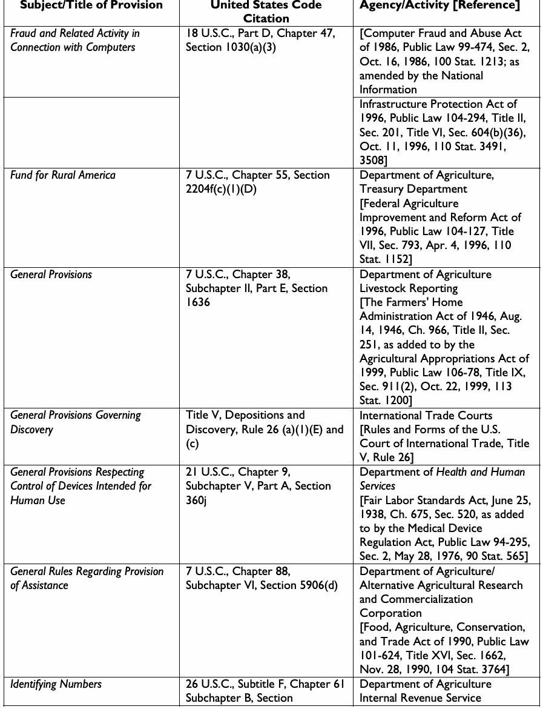
| 規定の主題／名称 | 合衆国法典の引用 | 機関／活動［参照］ |
| コンピュータに関する詐欺および関連行為 | 18 U.S.C., Part D, Chapter 47, Section 1030(a)(3) | [Computer Fraud and Abuse Act of 1986, Public Law 99-474, Sec. 2, Oct. 16, 1986, 100 Stat. 1213; as amended by the National Information |
| Infrastructure Protection Act of 1996, Public Law 104-294, Title II, Sec. 201, Title VI, Sec. 604(b)(36), Oct. 11, 1996, 110 Stat. 3491, 3508] | ||
| 米国農村基金 | 7 U.S.C., Chapter 55, Section 2204f(c)(1)(D) | 農務省, 財務省 [Federal Agriculture Improvement and Reform Act of 1996, Public Law 104-127, Title VII, Sec. 793, Apr. 4, 1996, 110 Stat. 1152] |
| 一般規定 | 7 U.S.C., Chapter 38, Subchapter II, Part E, Section 1636 | 農務省家畜報告 [The Farmers' Home Administration Act of 1946, Aug. 14, 1946, Ch. 966, Title II, Sec. 251, as added to by the Agricultural Appropriations Act of 1999, Public Law 106-78, Title IX, Sec. 911(2), Oct. 22, 1999, 113 Stat. 1200] |
| 証拠開示を規定する一般規定 | Title V, Depositions and Discovery, Rule 26 (a)(1)(E) and (c) | 国際貿易裁判所 [Rules and Forms of the U.S. Court of International Trade, Title V, Rule 26] |
| 人用機器の規制に関する一般規定 | 21 U.S.C., Chapter 9, Subchapter V, Part A, Section 360j | 保健福祉省 [Fair Labor Standards Act, June 25, 1938, Ch. 675, Sec. 520, as added to by the Medical Device Regulation Act, Public Law 94-295, Sec. 2, May 28, 1976, 90 Stat. 565] |
| 支援提供に関する一般規則 | 7 U.S.C., Chapter 88, Subchapter VI, Section 5906(d) | 農務省/ 代替農業研究・商業化法人 [Food, Agriculture, Conservation, and Trade Act of 1990, Public Law 101-624, Title XVI, Sec. 1662, Nov. 28, 1990, 104 Stat. 3764] |
| 識別番号 | 26 U.S.C., Subtitle F, Chapter 61 Subchapter B, Section | 農務省 内国歳入庁 |
Table 6: Legal Information Disclosure Prohibitions
表6：法律情報の開示禁止
未レビュー訳| Subject/Title of Provision | United States Code Citation | Agency/Activity [Reference] |
| 6109 | [The Internal Revenue Code Amendment of 1961, Public Law 87-397, Sec. 1(a), Oct. 5, 1961, 75 Stat. 828; amended by the Social Security Independence and Program Improvements Act of 1994, Public Law 103-296, Title III, Sec. 316(b), Aug. 15, 1994, 108 Stat. 1532; and the Minimum Wage Increase Act of 1996, Public Law 104-188, Title I, Sec. 1615(a)(2)(A), 1704(t)(42), Aug. 20, 1996, 110 Stat. 1853, 1889] | |
| Information | 30 U.S.C., Chapter 29, Section 1733 | Department of the Interior [Federal Oil and Gas Royalty Management Act of 1982, Public Law 97-451, Title II, Sec. 203, Jan. 12, 1983, 96 Stat. 2458] |
| Information Collection | 16 U.S.C., Chapter 38, Subchapter V, Section 1881a | Department of Commerce Fisheries [Interim Fisheries Zone Extension and Management Act, Public Law 94-265, Title IV, Sec. 402, as added to by the Fisheries Financing Act of1996, Public Law 104-297, Title II, Sec. 203, Oct. 11, 1996, 110 Stat. 3607] |
| Inspector General for Agency | 50 U.S.C., Chapter 15, Section 403q(e)(3)(A) | Central Intelligence Agency [Central Intelligence Agency Act of 1949, June 20, 1949, Ch. 227, Sec. 17, as added to by Pub. L. 102-496, Title VI, Sec. 601, Oct. 24, 1992, 106 Stat. 3187; and amended by the Intelligence Authorization Act for Fiscal Year 1993, Public Law 104-93, Title IV, Sec. 403, Jan. 6, 1996, 109 Stat. 969] |
| Interagency Data Sharing | 12 U.S.C., Chapter 16, Section 1828b | Treasury Department [Gramm-Leach-Bliley Act, Public Law 106-102, Title I, Sec. 132, Nov. 12, 1999, 113 Stat. 1382] |
| Interception and Disclosure of | 18 U.S.C., Part I, Chapter | Wire Taps |
原本PDFの抜粋画像
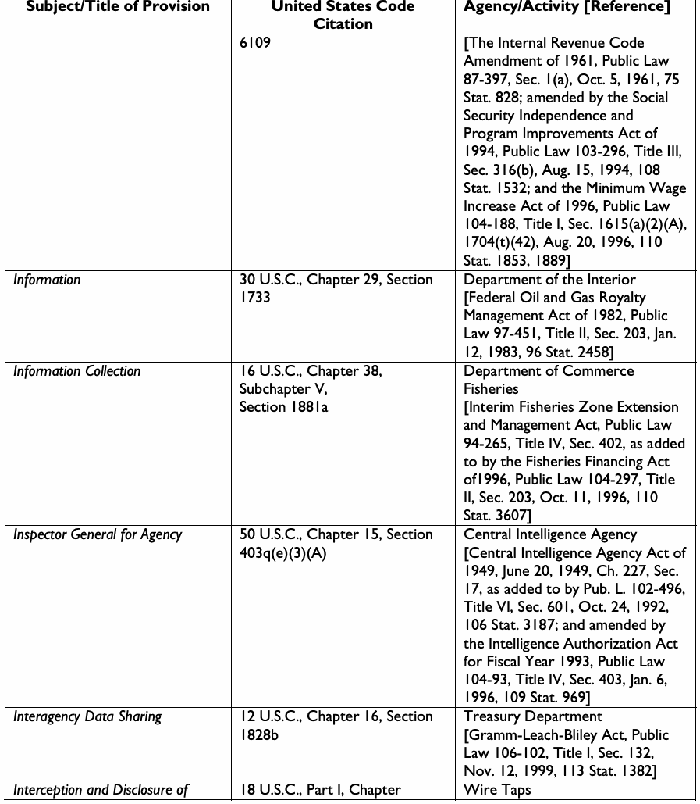
| 規定の主題／名称 | 合衆国法典の引用 | 機関／活動［参照］ |
| 6109 | [The Internal Revenue Code Amendment of 1961, Public Law 87-397, Sec. 1(a), Oct. 5, 1961, 75 Stat. 828; amended by the Social Security Independence and Program Improvements Act of 1994, Public Law 103-296, Title III, Sec. 316(b), Aug. 15, 1994, 108 Stat. 1532; and the Minimum Wage Increase Act of 1996, Public Law 104-188, Title I, Sec. 1615(a)(2)(A), 1704(t)(42), Aug. 20, 1996, 110 Stat. 1853, 1889] | |
| 情報 | 30 U.S.C., Chapter 29, Section 1733 | 内務省 [Federal Oil and Gas Royalty Management Act of 1982, Public Law 97-451, Title II, Sec. 203, Jan. 12, 1983, 96 Stat. 2458] |
| 情報収集 | 16 U.S.C., Chapter 38, Subchapter V, Section 1881a | 商務省 水産局 [Interim Fisheries Zone Extension and Management Act, Public Law 94-265, Title IV, Sec. 402, as added to by the Fisheries Financing Act of1996, Public Law 104-297, Title II, Sec. 203, Oct. 11, 1996, 110 Stat. 3607] |
| 機関の監察総監 | 50 U.S.C., Chapter 15, Section 403q(e)(3)(A) | 中央情報局 [Central Intelligence Agency Act of 1949, June 20, 1949, Ch. 227, Sec. 17, as added to by Pub. L. 102-496, Title VI, Sec. 601, Oct. 24, 1992, 106 Stat. 3187; and amended by the Intelligence Authorization Act for Fiscal Year 1993, Public Law 104-93, Title IV, Sec. 403, Jan. 6, 1996, 109 Stat. 969] |
| 機関間のデータ共有 | 12 U.S.C., Chapter 16, Section 1828b | 財務省 [Gramm-Leach-Bliley Act, Public Law 106-102, Title I, Sec. 132, Nov. 12, 1999, 113 Stat. 1382] |
| 傍受および開示 | 18 U.S.C., Part I, Chapter | 電話盗聴 |
Table 6: Legal Information Disclosure Prohibitions
表6：法律情報の開示禁止
未レビュー訳| Subject/Title of Provision | United States Code Citation | Agency/Activity [Reference] |
| Wire, Oral, or Electronic Communications Prohibited | 119, Section 2511 | [Omnibus Crime Control and Safe Streets Act of 1968, Public Law 90- 351, Title III, Sec. 802, June 19, 1968, 82 Stat. 213 amended by District of Columbia Court Reform and Criminal Procedure Act of 1970, Public Law 91-358, Title II, Sec. 211(a), July 29, 1970, 84 Stat. 654; Foreign Intelligence Surveillance Act of 1978,Public Law 95-511, Title II, Sec. 201(a)- (c), Oct. 25, 1978, 92 Stat. 1796, 1797; Cable Communications Policy Act of 1984, Public Law 98- 549, Sec. 6(b)(2), Oct. 30, 1984, 98 Stat. 2804; Electronic Communications Privacy Act of 1986, Public Law 99-508, Title I, Sec. 101(b), (c)(1), (5), (6), (d), (f)((1)), 102, Oct. 21, 1986, 100 Stat. 1849, 1851-1853; Violent Crime Control Law Enforcement Act of 1994, Public Law 103-322, Title XXXII, Sec. 320901, Title XXXIII, Sec. 330016(1)(G), Sept. 13, 1994, 108 Stat. 2123, 2147; Communications Assistance for Law Enforcement Act, Public Law 103-414, Title II, Sec. 202(b), 204, 205, Oct. 25, 1994, 108 Stat. 4290, 4291; Public Law 104-294, Title VI, Sec. 604(b)(42), Oct. 11, 1996, 110 Stat. 3509; and the USA Patriot Act, Public Law 107-56, Title II, Sec. 204, 217(2), Oct. 26, 2001, 115 Stat. 281, 291] |
| Inspector General | 22 U.S.C., Chapter 52, Subchapter II, Section 3929(f) | State Department [Foreign Service Act of 1980, Public Law 96-465, Title I, Sec. 209, Oct. 17, 1980, 94 Stat. 2080] |
| Investigations | 42 U.S.C., Chapter 21, Subchapter VI, Section 2000e-8 | Equal Employment Opportunity Commission [Public Law 88-352, Title VII, Sec. 709, July 2, 1964, 78 Stat. 262 and Public Law 92-261, Sec. 6, Mar. 24, 1972, 86 Stat. 107] |
原本PDFの抜粋画像
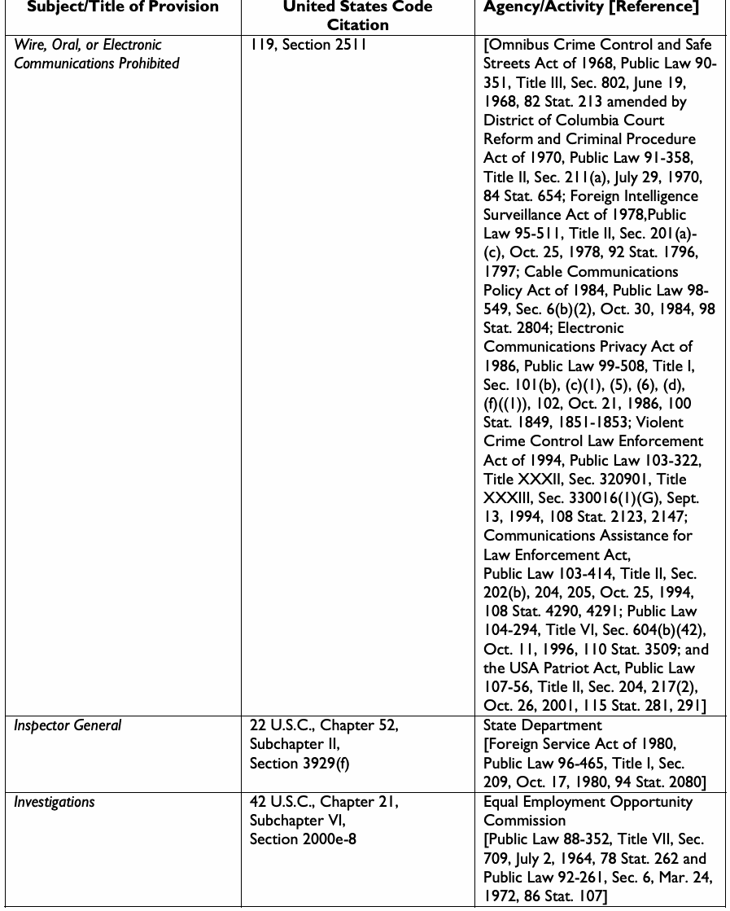
| 規定の主題／名称 | 合衆国法典の引用 | 機関／活動［参照］ |
| 有線、口頭または電子通信の禁止 | 119, Section 2511 | [Omnibus Crime Control and Safe Streets Act of 1968, Public Law 90- 351, Title III, Sec. 802, June 19, 1968, 82 Stat. 213 amended by District of Columbia Court Reform and Criminal Procedure Act of 1970, Public Law 91-358, Title II, Sec. 211(a), July 29, 1970, 84 Stat. 654; Foreign Intelligence Surveillance Act of 1978,Public Law 95-511, Title II, Sec. 201(a)- (c), Oct. 25, 1978, 92 Stat. 1796, 1797; Cable Communications Policy Act of 1984, Public Law 98- 549, Sec. 6(b)(2), Oct. 30, 1984, 98 Stat. 2804; Electronic Communications Privacy Act of 1986, Public Law 99-508, Title I, Sec. 101(b), (c)(1), (5), (6), (d), (f)((1)), 102, Oct. 21, 1986, 100 Stat. 1849, 1851-1853; Violent Crime Control Law Enforcement Act of 1994, Public Law 103-322, Title XXXII, Sec. 320901, Title XXXIII, Sec. 330016(1)(G), Sept. 13, 1994, 108 Stat. 2123, 2147; Communications Assistance for Law Enforcement Act, Public Law 103-414, Title II, Sec. 202(b), 204, 205, Oct. 25, 1994, 108 Stat. 4290, 4291; Public Law 104-294, Title VI, Sec. 604(b)(42), Oct. 11, 1996, 110 Stat. 3509; and the USA Patriot Act, Public Law 107-56, Title II, Sec. 204, 217(2), Oct. 26, 2001, 115 Stat. 281, 291] |
| 監察総監 | 22 U.S.C., Chapter 52, Subchapter II, Section 3929(f) | 国務省 [Foreign Service Act of 1980, Public Law 96-465, Title I, Sec. 209, Oct. 17, 1980, 94 Stat. 2080] |
| 調査 | 42 U.S.C., Chapter 21, Subchapter VI, Section 2000e-8 | 雇用機会均等委員会 [Public Law 88-352, Title VII, Sec. 709, July 2, 1964, 78 Stat. 262 and Public Law 92-261, Sec. 6, Mar. 24, 1972, 86 Stat. 107] |
Table 6: Legal Information Disclosure Prohibitions
表6：法律情報の開示禁止
未レビュー訳| Subject/Title of Provision | United States Code Citation | Agency/Activity [Reference] |
| Jurisdiction | 28 U.S.C., Part III, Chapter 44, Section 652(d) | Courts [Judicial Improvements and Access to Justice Act, Public Law 100-702, Title IX, Sec. 901(a), Nov. 19, 1988, 102 Stat. 4659; amended by the Alternative Dispute Resolution Act of 1998, Public Law 105-315, Sec. 4, Oct. 30, 1998, 112 Stat. 2994] |
| Limitations on access to financial records | 38 U.S.C., Part IV, Chapter 53, Section 5319 | Department of Veterans Affairs [Veterans' Benefits Act of 1992, Public Law 102-568, Title VI, Sec. 603(b)(1), Oct. 29, 1992, 106 Stat. 4342] |
| Maps, Charts, and Geodetic Data: Public Availability; Exceptions | 10 U.S.C., Subtitle A, Part I, Chapter 22, Subchapter II, Section 455 | Department of Defense [Intelligence Authorization Act, Fiscal Year 1991, Public Law 102- 88, Title V, Sec. 502(a)(1), Aug. 14, 1991, 105 Stat. 435, Sec. 2796; amended by the National Imagery and Mapping Agency Act of 1996, Public Law 104-201, Div. A, Title XI, Sec. 1112(b), Sept. 23, 1996, 110 Stat. 2682; and the National Defense Authorization Act for Fiscal Year 1998, Public Law 105- 85, Div. A, Title IX, Sec. 933(a), (b)(1), Nov. 18, 1997, 111 Stat. 1866] |
| Miscellaneous Provisions | 12 U.S.C., Chapter 7A, Section 1141j | Farm Credit Administration/Treasury Department [Agricultural Marketing Act, June 15, 1929, Ch. 24, Sec. 15, 46 Stat. 18] |
| National Program of Cancer Registries | 42 U.S.C., Chapter 6A, Subchapter II, Part M, Section 280e | Department of Health and Human Services/Public Health Service [Public Health Service Act of July 1, 1944, Ch. 373, Title III, Sec. 399B, formerly Sec. 399H, as added Public Law 102-515, Sec. 3, Oct. 24, 1992, 106 Stat. 3372 renumbered Sec. 399B and amended by Public Law 106-310, Div. A, Title V, Sec. 502(2)(A), (B), Oct. 17, 2000, 114 Stat. 1115] |
原本PDFの抜粋画像
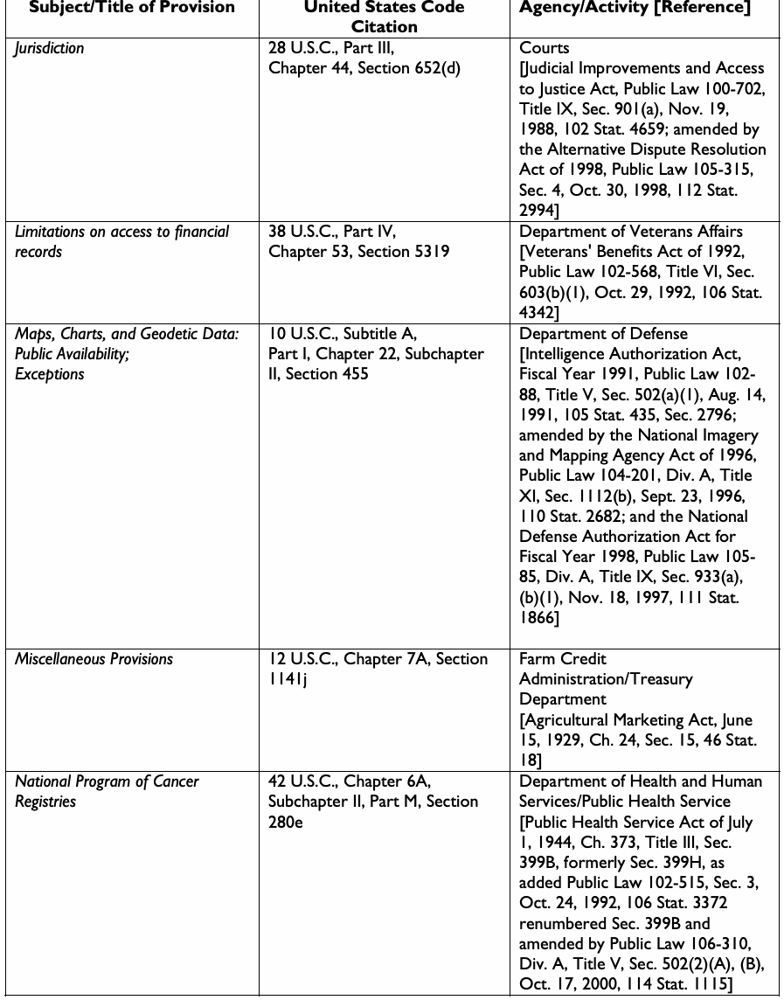
| 規定の主題／名称 | 合衆国法典の引用 | 機関／活動［参照］ |
| 管轄 | 28 U.S.C., Part III, Chapter 44, Section 652(d) | 裁判所 [Judicial Improvements and Access to Justice Act, Public Law 100-702, Title IX, Sec. 901(a), Nov. 19, 1988, 102 Stat. 4659; amended by the Alternative Dispute Resolution Act of 1998, Public Law 105-315, Sec. 4, Oct. 30, 1998, 112 Stat. 2994] |
| 金融記録へのアクセス制限 | 38 U.S.C., Part IV, Chapter 53, Section 5319 | 退役軍人省 [Veterans' Benefits Act of 1992, Public Law 102-568, Title VI, Sec. 603(b)(1), Oct. 29, 1992, 106 Stat. 4342] |
| 地図、海図および測地データ：一般利用；例外 | 10 U.S.C., Subtitle A, Part I, Chapter 22, Subchapter II, Section 455 | 国防総省 [Intelligence Authorization Act, Fiscal Year 1991, Public Law 102- 88, Title V, Sec. 502(a)(1), Aug. 14, 1991, 105 Stat. 435, Sec. 2796; amended by the National Imagery and Mapping Agency Act of 1996, Public Law 104-201, Div. A, Title XI, Sec. 1112(b), Sept. 23, 1996, 110 Stat. 2682; and the National Defense Authorization Act for Fiscal Year 1998, Public Law 105- 85, Div. A, Title IX, Sec. 933(a), (b)(1), Nov. 18, 1997, 111 Stat. 1866] |
| 雑則 | 12 U.S.C., Chapter 7A, Section 1141j | 農業信用庁/財務省 [Agricultural Marketing Act, June 15, 1929, Ch. 24, Sec. 15, 46 Stat. 18] |
| 全米がん登録プログラム | 42 U.S.C., Chapter 6A, Subchapter II, Part M, Section 280e | 保健福祉省/公衆衛生局 [Public Health Service Act of July 1, 1944, Ch. 373, Title III, Sec. 399B, formerly Sec. 399H, as added Public Law 102-515, Sec. 3, Oct. 24, 1992, 106 Stat. 3372 renumbered Sec. 399B and amended by Public Law 106-310, Div. A, Title V, Sec. 502(2)(A), (B), Oct. 17, 2000, 114 Stat. 1115] |
Table 6: Legal Information Disclosure Prohibitions
表6：法律情報の開示禁止
未レビュー訳| Subject/Title of Provision | United States Code Citation | Agency/Activity [Reference] |
| Noncombatant Assistance to United Nations | 22 U.S.C., Chapter 7, Section 287d-1(d) | State Department [United Nations Participation Act of 1945, Dec. 20, 1945, ch. 583, Sec. 7, as added Oct. 10, 1949, Ch. 660, Sec. 5, 63 Stat. 735] |
| Notice of Defendant's Intention to Disclose Classified Information | 18 U.S.C., Unlawful Possession or Receipt of Fire Arms, Section 1201 to 1203, Interstate Agreement on Detainers, Sec. 5 | Courts [Classified Information Criminal Trial Procedures Act, Public Law 96-456, Sec. 5, Oct. 15, 1980, 94 Stat. 2026] |
| Obligation to Make Royalty Payments | 17 U.S.C., Chapter 10, Subchapter C, Section 1003(c)(2) | Department of Commerce [Audio Home Recording Act of 1992, Public Law 102-563, Sec. 2, Oct. 28, 1992, 106 Stat. 4240] |
| Obligations With Respect to Disclosures of Personal Information | 15 U.S.C., Chapter 94, Subchapter I, Section 6802 | Financial [Gramm-Leach-Bliley Act a.k.a. Financial Modernization Act of 1999, Public Law 106-102, Title V, Sec. 502, Nov. 12, 1999, 113 Stat. 1437] |
| Patents and Technical Information | 22 U.S.C., Chapter 32, Subchapter III, Part I, Section 2356 | Department of State Department of Defense [Foreign Assistance Act of 1961, Public Law 87-195, Pt. III, Sec. 606, Sept. 4, 1961, 75 Stat. 440] |
| Paul D. Coverdell Drug-Free Workplace Program | 15 U.S.C., Chapter 14A, Section 654(c) | Medical Information [Small Business Act, Public Law 85- 536, Sec. 2(27), as added to by the Small Business Administration Reauthorization and Amendments Act of 1990, Public Law 101-574, Title III, Sec. 310, Nov. 15, 1990, 104 Stat. 2831] |
| Payment of Cost of Testing for Sexually Transmitted Diseases | 42 U.S.C., Chapter 136, Subchapter III, Part E, Section 14011 | Law Enforcement [Violence Against Women Act of 1994, Public Law 103-322, Title IV, Sec. 40503, Sept. 13, 1994, 108 Stat. 1946 and Public Law 104-294, Title VI, Sec. 604(b)(1), Oct. 11, 1996, 110 Stat. 3506] |
原本PDFの抜粋画像
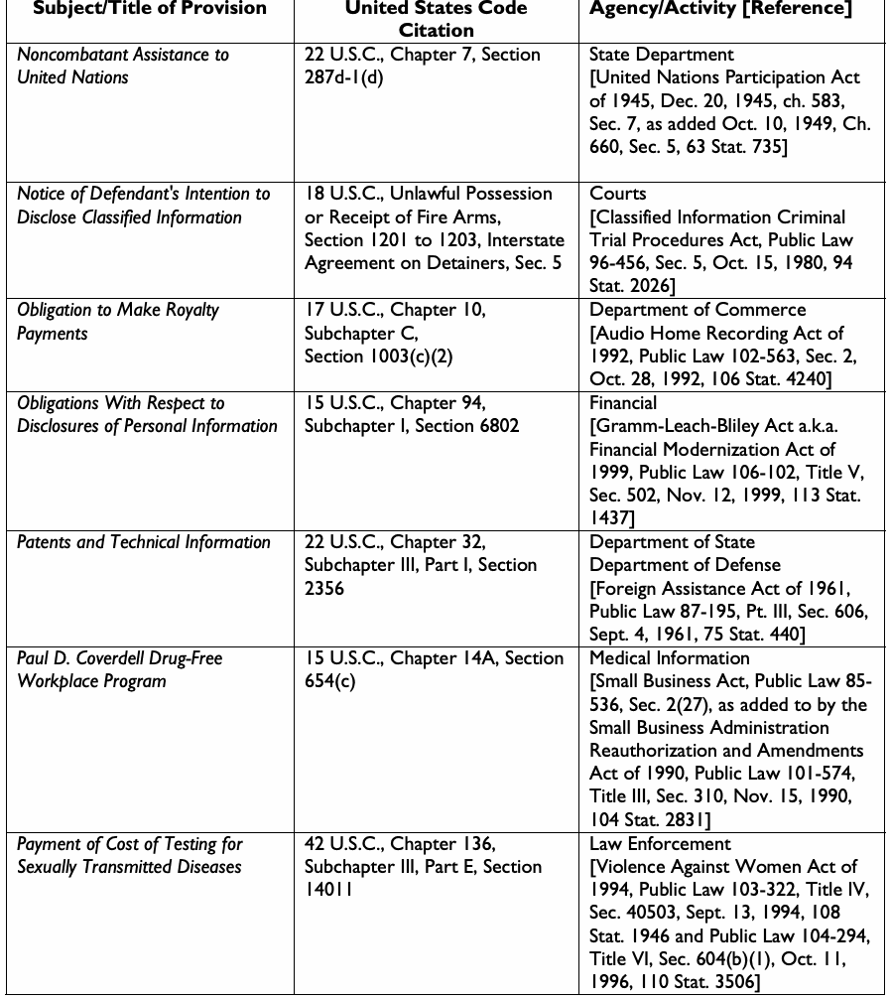
| 規定の主題／名称 | 米国法典の引用 | 機関／活動［参照］ |
| 国連への非戦闘員支援 | 22 U.S.C., Chapter 7, Section 287d-1(d) | 国務省 [United Nations Participation Act of 1945, Dec. 20, 1945, ch. 583, Sec. 7, as added Oct. 10, 1949, Ch. 660, Sec. 5, 63 Stat. 735] |
| 被告人が機密情報を開示する意図の通知 | 18 U.S.C., Unlawful Possession or Receipt of Fire Arms, Section 1201 to 1203, Interstate Agreement on Detainers, Sec. 5 | 裁判所 [Classified Information Criminal Trial Procedures Act, Public Law 96-456, Sec. 5, Oct. 15, 1980, 94 Stat. 2026] |
| 使用料の支払義務 | 17 U.S.C., Chapter 10, Subchapter C, Section 1003(c)(2) | 商務省 [Audio Home Recording Act of 1992, Public Law 102-563, Sec. 2, Oct. 28, 1992, 106 Stat. 4240] |
| 個人情報の開示に関する義務 | 15 U.S.C., Chapter 94, Subchapter I, Section 6802 | 金融 [Gramm-Leach-Bliley Act a.k.a. Financial Modernization Act of 1999, Public Law 106-102, Title V, Sec. 502, Nov. 12, 1999, 113 Stat. 1437] |
| 特許および技術情報 | 22 U.S.C., Chapter 32, Subchapter III, Part I, Section 2356 | 国務省／国防総省 [Foreign Assistance Act of 1961, Public Law 87-195, Pt. III, Sec. 606, Sept. 4, 1961, 75 Stat. 440] |
| ポール・D・カバーデル薬物のない職場プログラム | 15 U.S.C., Chapter 14A, Section 654(c) | 医療情報 [Small Business Act, Public Law 85- 536, Sec. 2(27), as added to by the Small Business Administration Reauthorization and Amendments Act of 1990, Public Law 101-574, Title III, Sec. 310, Nov. 15, 1990, 104 Stat. 2831] |
| 性感染症検査費用の支払い | 42 U.S.C., Chapter 136, Subchapter III, Part E, Section 14011 | 法執行 [Violence Against Women Act of 1994, Public Law 103-322, Title IV, Sec. 40503, Sept. 13, 1994, 108 Stat. 1946 and Public Law 104-294, Title VI, Sec. 604(b)(1), Oct. 11, 1996, 110 Stat. 3506] |
Table 6: Legal Information Disclosure Prohibitions
表6：法的情報開示の禁止
未レビュー訳| Subject/Title of Provision | United States Code Citation | Agency/Activity [Reference] |
| Penalties for Disclosure of Information | 8 U.S.C., Chapter 12, Subchapter II, Part IX, Section 1367 | Department of Justice [Illegal Immigration Reform and Immigrant Responsibility Act of 1996, Public Law 104-208, Div. C, Title III, Sec. 308(g)(8)(D), 384, Sept. 30, 1996, 110 Stat. 3009-624, 3009-652; as amended by Public Law 105-33, Title V, Sec. 5572(b), Aug. 5, 1997, 111 Stat. 641; and Public Law 106-386, Div. B, Title V, Sec. 1513(d), Oct. 28, 2000, 114 Stat. 1536] |
| Permissive Provisions | 7 U.S.C., Chapter 79, Section 4810 | Department of Agriculture [Food Security Act of 1985, Public Law 99-198, Title XVI, Sec. 1621, Dec. 23, 1985, 99 Stat. 1617] |
| Permissive Terms and Conditions in Orders | 7 U.S.C., Chapter 60, Section 2706 | Department of Agriculture/ Egg Board [Egg Research and Consumer Information Act, Public Law 93- 428, Sec. 7, Oct. 1, 1974, 88 Stat. 1173] |
| Petroleum Product Information | 33 U.S.C., Chapter 12, Subchapter I, Section 555a(d) | Army Corps of Engineers/ Department of Defense [Water Resources Development Act of 1986, Public Law 99-662, Title IX, Sec. 919, Nov. 17, 1986, 100 Stat. 4192] |
| Physical Protection of Special Nuclear Material: Limitation on Dissemination of Unclassified Information | 10 U.S.C., Subtitle A, Part I, Chapter 3, Section 128 | Department of Energy [Department of Energy National Security and Military Applications of Nuclear Energy Authorization Act of 1988, Public Law 100-180, Div. A, Title XI, Sec. 1123(a), Dec. 4, 1987, 101 Stat. 1149 as amended by the National Defense Authorization Act for Fiscal Year 1991, Public Law, Div. A, Title XIII, Sec. 1311(1), Nov. 5, 1990, 104 Stat. 1669] |
| Privacy | 15 U.S.C., Chapter 94 | Privacy [Gramm-Leach-Bliley Act a.k.a. Financial Modernization Act of 1999, Public Law 106-102, Nov. 12, 1999] |
| Privacy | 5 U.S.C., Part I, Chapter 5, Subchapter II, Section 552a (Administrative Procedure) | Privacy [Privacy Act of 1974, Public Law 93-579, Dec. 31, 1974] |
原本PDFの抜粋画像
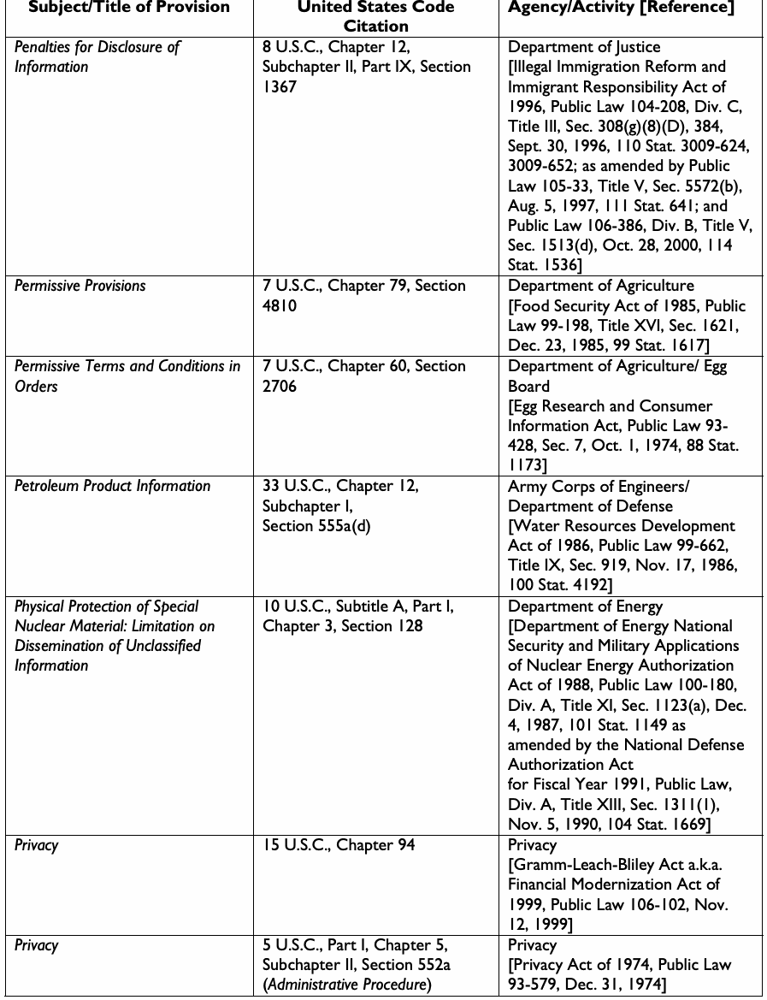
| 規定の主題／名称 | 米国法典の引用 | 機関／活動［参照］ |
| 情報開示に対する罰則 | 8 U.S.C., Chapter 12, Subchapter II, Part IX, Section 1367 | 司法省 [Illegal Immigration Reform and Immigrant Responsibility Act of 1996, Public Law 104-208, Div. C, Title III, Sec. 308(g)(8)(D), 384, Sept. 30, 1996, 110 Stat. 3009-624, 3009-652; as amended by Public Law 105-33, Title V, Sec. 5572(b), Aug. 5, 1997, 111 Stat. 641; and Public Law 106-386, Div. B, Title V, Sec. 1513(d), Oct. 28, 2000, 114 Stat. 1536] |
| 許可規定 | 7 U.S.C., Chapter 79, Section 4810 | 農務省 [Food Security Act of 1985, Public Law 99-198, Title XVI, Sec. 1621, Dec. 23, 1985, 99 Stat. 1617] |
| 命令における許容条項および条件 | 7 U.S.C., Chapter 60, Section 2706 | 農務省／卵委員会 [Egg Research and Consumer Information Act, Public Law 93- 428, Sec. 7, Oct. 1, 1974, 88 Stat. 1173] |
| 石油製品情報 | 33 U.S.C., Chapter 12, Subchapter I, Section 555a(d) | 陸軍工兵隊／国防総省 [Water Resources Development Act of 1986, Public Law 99-662, Title IX, Sec. 919, Nov. 17, 1986, 100 Stat. 4192] |
| 特殊核物質の物理的防護：未分類情報の配布制限 | 10 U.S.C., Subtitle A, Part I, Chapter 3, Section 128 | エネルギー省 [Department of Energy National Security and Military Applications of Nuclear Energy Authorization Act of 1988, Public Law 100-180, Div. A, Title XI, Sec. 1123(a), Dec. 4, 1987, 101 Stat. 1149 as amended by the National Defense Authorization Act for Fiscal Year 1991, Public Law, Div. A, Title XIII, Sec. 1311(1), Nov. 5, 1990, 104 Stat. 1669] |
| プライバシー | 15 U.S.C., Chapter 94 | プライバシー [Gramm-Leach-Bliley Act a.k.a. Financial Modernization Act of 1999, Public Law 106-102, Nov. 12, 1999] |
| プライバシー | 5 U.S.C., Part I, Chapter 5, Subchapter II, Section 552a (Administrative Procedure) | プライバシー [Privacy Act of 1974, Public Law 93-579, Dec. 31, 1974] |
Table 6: Legal Information Disclosure Prohibitions
表6：法的情報開示の禁止
未レビュー訳| Subject/Title of Provision | United States Code Citation | Agency/Activity [Reference] |
| Prohibition on Release and Use of Certain Personal Information from State Motor Vehicle Records | 18 U.S.C., Part I, Chapter 123, Section 2721 | States [Driver's Privacy Protection Act of 1994, Public Law 103-322, Title XXX, Sec. 300002(a), Sept. 13, 1994, 108 Stat. 2099 amended by Public Law 106-69, Title III, Sec. 350(c), (d), Oct. 9, 1999, 113 Stat. 1025; and Public Law 106-346, Sec. 101(a) (Title III, Sec. 309(c)-(e)), Oct. 23, 2000, 114 Stat. 1356, 1356A-24] |
| Program Requirements | 42 U.S.C., Chapter 13, Section 1758 | Department of Agriculture/ Public Health Service [Better Nutrition and Health for Children Act of 1994, Public Law 103-448, Sec. 108] |
| Prohibition Against Disclosure of Information | 42 U.S.C., Chapter 7, Subchapter XI, Part B, Section 1320c-9 | Department of Health and Human Services/ Public Health Service/ Social Security Administration [Social Security Act of Aug. 14, 1935, Ch. 531, Title XI, Sec. 1160, as added to by Public Law 97-248, Title I, Sec. 143, Sept. 3, 1982, 96 Stat. 391 and amended by Public Law 99-509, Title IX, Sec. 9353(d)(1), Oct. 21, 1986, 100 Stat. 2047; Public Law 100-203, Title IV, Sec. 4039(h)(6), Dec. 22, 1987, as added to by Public Law 100-360, Title IV, Sec. 411(e)(3), July 1, 1988, 102 Stat. 776; Public Law 101-508, Title IV, Sec. 4205(d)(1)(B), (e)(1), Nov. 5, 1990, 104 Stat. 1388-113, 1388-114; Public Law 103-432, Title I, Sec. 156(b)(2)(B), (4), Oct. 31, 1994, 108 Stat. 4441] |
| Prohibition of Advance Disclosure of Funding Decisions | 42 U.S.C., Chapter 44, Section 3537a | Department of Housing and Urban Development [Department of Housing and Urban Development Act, Public Law 89-174, Sec. 12, as added to by Pub. L. 101-235, Title I, Sec. 103, Dec. 15, 1989, 103 Stat. 1995] |
| Prohibition Against Disclosure of Information or Knowledge | 22 U.S.C., Chapter 7, Section 287t | International Monetary Fund [Participation in UNESCO, July 30, 1946, Ch. 700, Sec. 8, 60 Stat. 714] |
原本PDFの抜粋画像
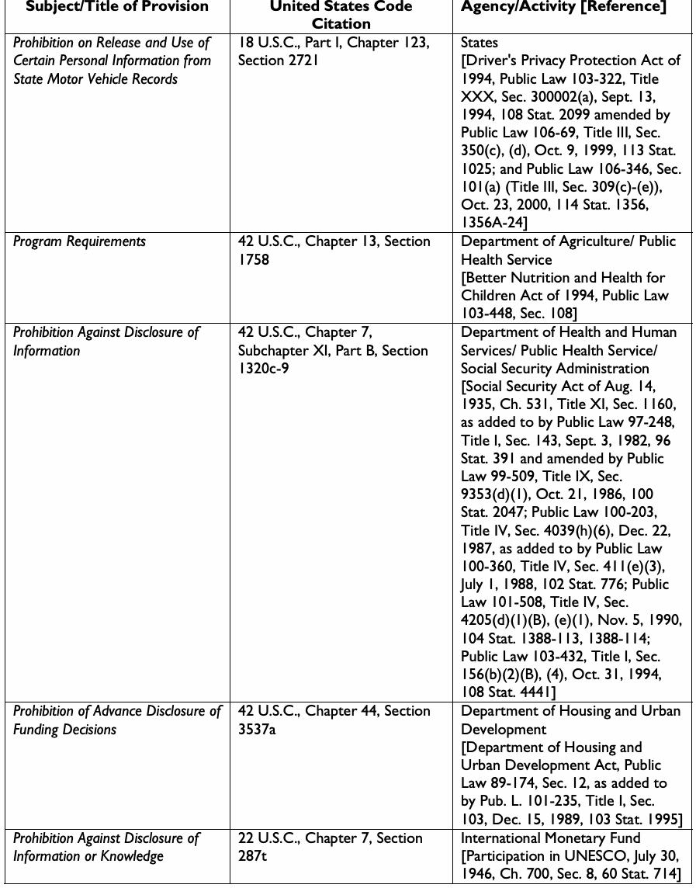
| 規定の主題／名称 | 米国法典の引用 | 機関／活動［参照］ |
| 州の自動車記録に含まれる特定の個人情報の開示および使用の禁止 | 18 U.S.C., Part I, Chapter 123, Section 2721 | 州政府 [Driver's Privacy Protection Act of 1994, Public Law 103-322, Title XXX, Sec. 300002(a), Sept. 13, 1994, 108 Stat. 2099 amended by Public Law 106-69, Title III, Sec. 350(c), (d), Oct. 9, 1999, 113 Stat. 1025; and Public Law 106-346, Sec. 101(a) (Title III, Sec. 309(c)-(e)), Oct. 23, 2000, 114 Stat. 1356, 1356A-24] |
| プログラム要件 | 42 U.S.C., Chapter 13, Section 1758 | 農務省／公衆衛生局 [Better Nutrition and Health for Children Act of 1994, Public Law 103-448, Sec. 108] |
| 情報開示の禁止 | 42 U.S.C., Chapter 7, Subchapter XI, Part B, Section 1320c-9 | 保健福祉省／公衆衛生局／社会保障局 [Social Security Act of Aug. 14, 1935, Ch. 531, Title XI, Sec. 1160, as added to by Public Law 97-248, Title I, Sec. 143, Sept. 3, 1982, 96 Stat. 391 and amended by Public Law 99-509, Title IX, Sec. 9353(d)(1), Oct. 21, 1986, 100 Stat. 2047; Public Law 100-203, Title IV, Sec. 4039(h)(6), Dec. 22, 1987, as added to by Public Law 100-360, Title IV, Sec. 411(e)(3), July 1, 1988, 102 Stat. 776; Public Law 101-508, Title IV, Sec. 4205(d)(1)(B), (e)(1), Nov. 5, 1990, 104 Stat. 1388-113, 1388-114; Public Law 103-432, Title I, Sec. 156(b)(2)(B), (4), Oct. 31, 1994, 108 Stat. 4441] |
| 資金提供決定の事前開示の禁止 | 42 U.S.C., Chapter 44, Section 3537a | 住宅都市開発省 [Department of Housing and Urban Development Act, Public Law 89-174, Sec. 12, as added to by Pub. L. 101-235, Title I, Sec. 103, Dec. 15, 1989, 103 Stat. 1995] |
| 情報または知識の開示の禁止 | 22 U.S.C., Chapter 7, Section 287t | 国際通貨基金 [Participation in UNESCO, July 30, 1946, Ch. 700, Sec. 8, 60 Stat. 714] |
Table 6: Legal Information Disclosure Prohibitions
表6：法的情報開示の禁止
未レビュー訳| Subject/Title of Provision | United States Code Citation | Agency/Activity [Reference] |
| Prohibition of Public Disclosure of Proprietary Information | 12 U.S.C., Chapter 46, Section 4546 | Treasury Department [Federal Housing Enterprises Financial Safety and Soundness Act of 1992, Public Law 102-550, Title XIII, Sec. 1326, Oct. 28, 1992, 106 Stat. 3955] |
| Protection of Trade Secrets and Other Information | 7 U.S.C., Chapter 6, Subchapter II, Section 136h | Department of Agriculture/ Environmental Protection Agency [Federal Insecticide, Fungicide, and Rodenticide Act, June 25, 1947, Ch. 125, Sec. 10, as added to by Public Law 92-516, Sec. 2, Oct. 21, 1972, 86 Stat. 989; amended by the Federal Pesticide Act of 1995, Public Law 95-396, Sec. 15, Sept. 30, 1978, 92 Stat. 829; Public Law 98-620, Title IV, Sec. 402(4) (B), Nov. 8, 1984, 98 Stat. 3357; Public Law 100-532, Title VIII, Sec 801(f), Oct. 25, 1988, 102 Stat. 2682; and Public Law 102-237, Title X, Sec. 1006(b)(1), (2), (3)(J), Dec. 13, 1991, 105 Stat. 1895, 1896]. |
| Provision of Certain Counseling Services | 42 U.S.C., Chapter 6A, Subchapter XXIV, Section 300ff-62 | Department of Health and Human Services/Public Health Service [Ryan White Comprehensive AIDS Resources Emergency Act of 1990, Public Law 101-381, Title III, Sec. 301(a), Aug. 18, 1990, 104 Stat. 610] |
| Provisions | 22 U.S.C., Chapter 58, Subchapter III, Section 4833 | State Department [Omnibus Diplomatic Security and Antiterrorism Act of 1986, Public Law 99-399, Title III, Sec. 303, Aug. 27, 1986, 100 Stat. 859] |
| Provisions Relating to Disclosures of Violations of Law, Gross Mismanagement, and Certain Other Matters | 5 U.S.C., Part II, Chapter 12, Subchapter II, Section 1213(h) | Office of Personnel Management [Whistleblower Protection Act of 1989, Public Law 101-12, Sec. 3(a)(13), Apr. 10, 1989, 103 Stat. 21; as amended by the General Accounting Office Act of 1996, Public Law 104-316, Title I, Sec. 103(a), Oct. 19, 1996, 110 Stat. 3828] |
| Public Access to Information | 33 U.S.C., Chapter 29, Section 1513 | Department of Transportation/ Department of Homeland Security [Public Law 93-627, Sec. 14, Jan. 3, 1975, 88 Stat. 2139] |
原本PDFの抜粋画像
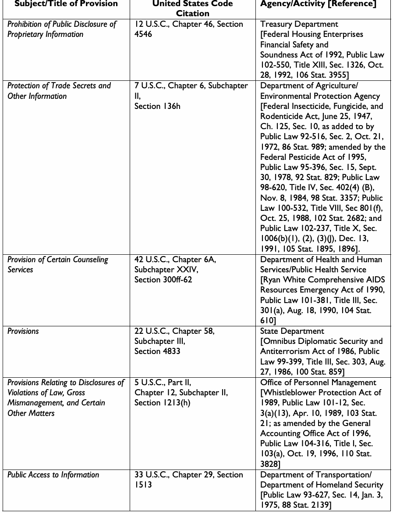
| 規定の主題／名称 | 米国法典の引用 | 機関／活動［参照］ |
| 専有情報の公的開示の禁止 | 12 U.S.C., Chapter 46, Section 4546 | 財務省 [Federal Housing Enterprises Financial Safety and Soundness Act of 1992, Public Law 102-550, Title XIII, Sec. 1326, Oct. 28, 1992, 106 Stat. 3955] |
| 営業秘密その他の情報の保護 | 7 U.S.C., Chapter 6, Subchapter II, Section 136h | 農務省／環境保護庁 [Federal Insecticide, Fungicide, and Rodenticide Act, June 25, 1947, Ch. 125, Sec. 10, as added to by Public Law 92-516, Sec. 2, Oct. 21, 1972, 86 Stat. 989; amended by the Federal Pesticide Act of 1995, Public Law 95-396, Sec. 15, Sept. 30, 1978, 92 Stat. 829; Public Law 98-620, Title IV, Sec. 402(4) (B), Nov. 8, 1984, 98 Stat. 3357; Public Law 100-532, Title VIII, Sec 801(f), Oct. 25, 1988, 102 Stat. 2682; and Public Law 102-237, Title X, Sec. 1006(b)(1), (2), (3)(J), Dec. 13, 1991, 105 Stat. 1895, 1896]. |
| 特定のカウンセリングサービスの提供 | 42 U.S.C., Chapter 6A, Subchapter XXIV, Section 300ff-62 | 保健福祉省／公衆衛生局 [Ryan White Comprehensive AIDS Resources Emergency Act of 1990, Public Law 101-381, Title III, Sec. 301(a), Aug. 18, 1990, 104 Stat. 610] |
| 規定 | 22 U.S.C., Chapter 58, Subchapter III, Section 4833 | 国務省 [Omnibus Diplomatic Security and Antiterrorism Act of 1986, Public Law 99-399, Title III, Sec. 303, Aug. 27, 1986, 100 Stat. 859] |
| 法令違反、重大な不正管理その他の事項に関する開示規定 | 5 U.S.C., Part II, Chapter 12, Subchapter II, Section 1213(h) | 人事管理局 [Whistleblower Protection Act of 1989, Public Law 101-12, Sec. 3(a)(13), Apr. 10, 1989, 103 Stat. 21; as amended by the General Accounting Office Act of 1996, Public Law 104-316, Title I, Sec. 103(a), Oct. 19, 1996, 110 Stat. 3828] |
| 情報への公的アクセス | 33 U.S.C., Chapter 29, Section 1513 | 運輸省／国土安全保障省 [Public Law 93-627, Sec. 14, Jan. 3, 1975, 88 Stat. 2139] |
Table 6: Legal Information Disclosure Prohibitions
表6：法的情報開示の禁止
未レビュー訳| Subject/Title of Provision | United States Code Citation | Agency/Activity [Reference] |
| Public Disclosure | 7 U.S.C., Chapter 1, Section 12 | Commodity Futures Trading Commission [Grain Futures Act of Sept. 21, 1922, Ch. 369, Sec. 8, 42 Stat. 1003; amended by the Commodity Exchange Act of June 15, 1936, Ch. 545, Sec. 2, 49 Stat. 1491; Public Law 90-258, Sec. 19(a), Feb. 19, 1968, 82 Stat. 32; Commodity Futures Trading Commission Act, Public Law 93-463, Title I, Sec. 103(a), (e), Oct. 23, 1974, 88 Stat. 1392; Public Law 95-405, Sec. 16, Sept. 30, 1978, 92 Stat. 873; Futures Trading Act of 1982, Public Law 97-444, Title II, Sec. 222, Jan. 11, 1983, 96 Stat. 2309; Futures Trading Practices Act of 1992, Public Law 102-546, Title II, Sec. 205, Title III, Sec. 304, 305, Title IV, Sec. 402(7), Oct. 28, 1992, 106 Stat. 3600, 3623, 3624; and Public Law 106-554, Sec. 1(a)(5) (Title I, Sec. 123(a)(18), Title II, Sec. 253(a)), Dec. 21, 2000, 114 Stat. 2763, 2763A-410, 2763A- 449] |
| Public Disclosure of Final Orders and Agreements (Government Sponsored Enterprises) | 12 U.S.C., Chapter 46, Sections 4522, 4586 and 4639 | Treasury Department [Federal Housing Enterprises Financial Safety and Soundness Act of 1992, Public Law 102-550, Title XIII, Sec. 1326, Oct. 28, 1992, 106 Stat. 3955] |
| Public Disclosure of Information | 15 U.S.C., Chapter 47, Section 2055 | Consumer Product Safety Commission [Consumer Product Safety Act, Public Law 92-573, Sec. 6, Oct. 27, 1972, 86 Stat. 1212; amended by Public Law 97-35, Title XII, Sec. 1204, Aug. 13, 1981, 95 Stat. 713; the Orphan Drug Act of 1997, Public Law 97-414, Sec. 9(j)(1), Jan. 4, 1983, 96 Stat. 2064; and the Consumer Product Safety Improvement Act of 1990, Public Law 101-608, title I, Sec. 106, 112(c), Nov. 16, 1990, 104 Stat. 3111, 3116] |
原本PDFの抜粋画像
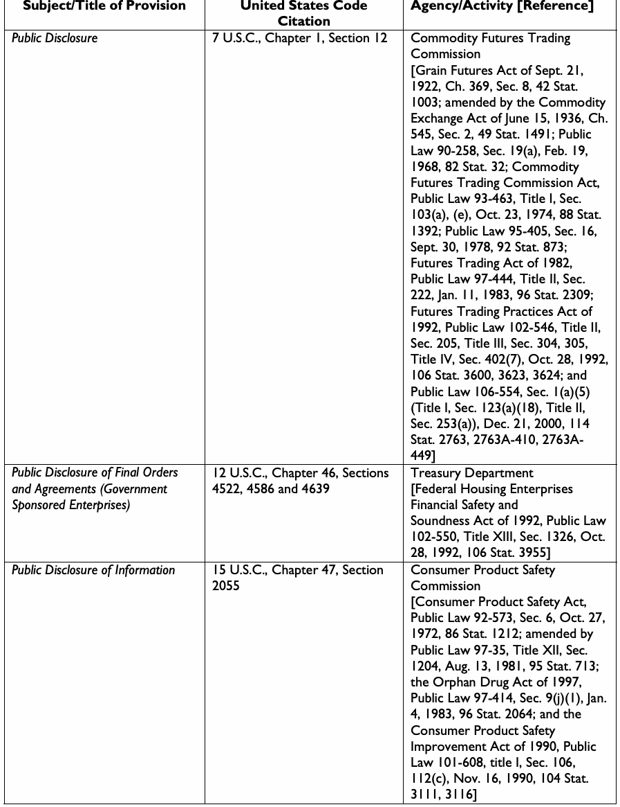
| 規定の主題／名称 | 米国法典の引用 | 機関／活動［参照］ |
| 公開 | 7 U.S.C., Chapter 1, Section 12 | 商品先物取引委員会 [Grain Futures Act of Sept. 21, 1922, Ch. 369, Sec. 8, 42 Stat. 1003; amended by the Commodity Exchange Act of June 15, 1936, Ch. 545, Sec. 2, 49 Stat. 1491; Public Law 90-258, Sec. 19(a), Feb. 19, 1968, 82 Stat. 32; Commodity Futures Trading Commission Act, Public Law 93-463, Title I, Sec. 103(a), (e), Oct. 23, 1974, 88 Stat. 1392; Public Law 95-405, Sec. 16, Sept. 30, 1978, 92 Stat. 873; Futures Trading Act of 1982, Public Law 97-444, Title II, Sec. 222, Jan. 11, 1983, 96 Stat. 2309; Futures Trading Practices Act of 1992, Public Law 102-546, Title II, Sec. 205, Title III, Sec. 304, 305, Title IV, Sec. 402(7), Oct. 28, 1992, 106 Stat. 3600, 3623, 3624; and Public Law 106-554, Sec. 1(a)(5) (Title I, Sec. 123(a)(18), Title II, Sec. 253(a)), Dec. 21, 2000, 114 Stat. 2763, 2763A-410, 2763A- 449] |
| 最終命令および合意の公開（政府支援機関） | 12 U.S.C., Chapter 46, Sections 4522, 4586 and 4639 | 財務省 [Federal Housing Enterprises Financial Safety and Soundness Act of 1992, Public Law 102-550, Title XIII, Sec. 1326, Oct. 28, 1992, 106 Stat. 3955] |
| 情報の公開 | 15 U.S.C., Chapter 47, Section 2055 | 消費者製品安全委員会 [Consumer Product Safety Act, Public Law 92-573, Sec. 6, Oct. 27, 1972, 86 Stat. 1212; amended by Public Law 97-35, Title XII, Sec. 1204, Aug. 13, 1981, 95 Stat. 713; the Orphan Drug Act of 1997, Public Law 97-414, Sec. 9(j)(1), Jan. 4, 1983, 96 Stat. 2064; and the Consumer Product Safety Improvement Act of 1990, Public Law 101-608, title I, Sec. 106, 112(c), Nov. 16, 1990, 104 Stat. 3111, 3116] |
Table 6: Legal Information Disclosure Prohibitions
表6：法的情報開示の禁止
未レビュー訳| Subject/Title of Provision | United States Code Citation | Agency/Activity [Reference] |
| Recommendations by Promotion Boards | 10 U.S.C., Subtitle E, Part III, Chapter 1403, Section 14108 | Department of Defense [Reserve Officer Personnel Management Act of 1994, Pub. L. 103-337, div. A, title XVI, Sec. 1611, Oct. 5, 1994, 108 Stat. 2928] |
| Recordkeeping, Inspections, Monitoring, and Entry | 42 U.S.C., Chapter 85, Subchapter I, Part A, Section 7414(c) | Environmental Protection Agency [Clean Air Act of July 14, 1955, Ch. 360, Title I, Sec. 114, as added to by Public Law 91- 604, Sec. 4(a), Dec. 31, 1970, 84 Stat. 1687] |
| Records and Reports; Inspections | 33 U.S.C., Chapter 26, Subchapter III, Section 1318(b) | Water Pollution [River and Harbor Act of 1948, June 30, 1948, Ch. 758, Title III, Sec. 308, as added to by the Water Pollution Control Act of 1972, Public Law 92-500, Sec. 2, Oct. 18, 1972, 86 Stat. 858; amended by the Water Quality Act of 1987, Public Law 100-4, Title III, Sec. 310, Title IV, Sec. 406(d)(1), Feb. 4, 1987, 101 Stat. 41, 73] |
原本PDFの抜粋画像
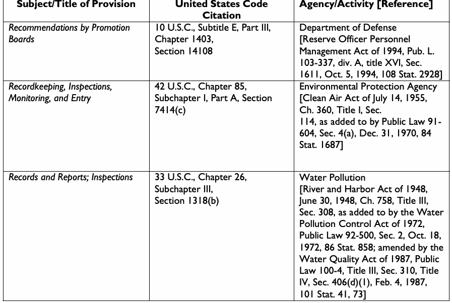
| 規定の主題／名称 | 米国法典の引用 | 機関／活動［参照］ |
| 昇進審査委員会による勧告 | 10 U.S.C., Subtitle E, Part III, Chapter 1403, Section 14108 | 国防総省 [Reserve Officer Personnel Management Act of 1994, Pub. L. 103-337, div. A, title XVI, Sec. 1611, Oct. 5, 1994, 108 Stat. 2928] |
| 記録保持、検査、監視および立入り | 42 U.S.C., Chapter 85, Subchapter I, Part A, Section 7414(c) | 環境保護庁 [Clean Air Act of July 14, 1955, Ch. 360, Title I, Sec. 114, as added to by Public Law 91- 604, Sec. 4(a), Dec. 31, 1970, 84 Stat. 1687] |
| 記録および報告、検査 | 33 U.S.C., Chapter 26, Subchapter III, Section 1318(b) | 水質汚染 [River and Harbor Act of 1948, June 30, 1948, Ch. 758, Title III, Sec. 308, as added to by the Water Pollution Control Act of 1972, Public Law 92-500, Sec. 2, Oct. 18, 1972, 86 Stat. 858; amended by the Water Quality Act of 1987, Public Law 100-4, Title III, Sec. 310, Title IV, Sec. 406(d)(1), Feb. 4, 1987, 101 Stat. 41, 73] |
Table 6: Legal Information Disclosure Prohibitions
表6：法的情報開示の禁止
未レビュー訳| Subject/Title of Provision | United States Code Citation | Agency/Activity [Reference] |
| Records Maintained on Individuals | 5 U.S.C., Part I, Chapter 5, Subchapter II, Section 552a | Privacy Act [Privacy Act of 1974, Public Law 93-579, Dec. 31, 1974; amended by Public Law 94-183, Sec. 2(2), Dec. 31, 1975, 89 Stat. 1057; Debt Collection Act of 1982, Public Law 97-365, Sec. 2, Oct. 25, 1982, 96 Stat. 1749; Congressional Reports Elimination Act of 1982, Public Law 97-375, Title II, Sec. 201(a), (b), Dec. 21, 1982, 96 Stat. 1821; Public Law 97-452, Sec. 2(a)(1), Jan. 12, 1983, 96 Stat. 2478; Central Intelligence Agency Information Act, Public Law 98- 477, Sec. 2(c), Oct. 15, 1984, 98 Stat. 2211; National Archives and Records Administration Act of 1984, Public Law 98-497, Title I, Sec. 107(g), Oct. 19, 1984, 98 Stat. 2292; Computer Matching and Privacy Protection Act of 1988, Public Law 100-503, Sec. 2-6(a), 7, 8, Oct. 18, 1988, 102 Stat. 2507- 2514; Omnibus Budget Reconciliation Act of 1990, Public Law 101-508, Title VII, Sec. 7201(b)(1), Nov. 5, 1990, 104 Stat. 1388-334; Omnibus Budget Reconciliation Act of 1993, Public Law 103-66, Title XIII, Sec. 13581(c), Aug. 10, 1993, 107 Stat. 611; Personal Responsibility and Work Opportunity Recon-ciliation Act of 1996, Public Law 104-193, Title I, Sec. 110(w), Aug. 22, 1996, 110 Stat. 2175; Social Security- Medicare and Medicaid Coverage Data Bank Repeal, Public Law 104- 226, Sec. 1(b) (3), Oct. 2, 1996, 110 Stat. 3033; General Accounting Office Act of 1996, Public Law 104-316, Title I, Sec. 115(g)(2)(B), Oct. 19, 1996, 110 Stat. 3835; Taxpayer Re-lief Act of 1997, Public Law 105-34, Title X, Sec. 1026(b) (2), Aug. 5, 1997, 111 Stat. 925; Federal Reports Elimina- tion Act, Public Law 105-362, Title XIII, Sec. 1301(d), Nov. 10, 1998, 112 Stat. 3293; Tax Relief Extension Act of 1999, Public Law 106-170, Title IV, Sec. 402(a)(2), Dec. 17, 1999, 113 Stat. 1908.] |
原本PDFの抜粋画像
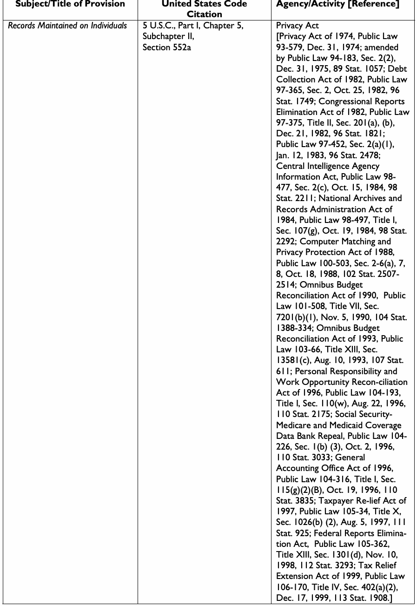
| 規定の主題／名称 | 米国法典の引用 | 機関／活動［参照］ |
| 個人に関して保持される記録 | 5 U.S.C., Part I, Chapter 5, Subchapter II, Section 552a | Privacy Act [Privacy Act of 1974, Public Law 93-579, Dec. 31, 1974; amended by Public Law 94-183, Sec. 2(2), Dec. 31, 1975, 89 Stat. 1057; Debt Collection Act of 1982, Public Law 97-365, Sec. 2, Oct. 25, 1982, 96 Stat. 1749; Congressional Reports Elimination Act of 1982, Public Law 97-375, Title II, Sec. 201(a), (b), Dec. 21, 1982, 96 Stat. 1821; Public Law 97-452, Sec. 2(a)(1), Jan. 12, 1983, 96 Stat. 2478; Central Intelligence Agency Information Act, Public Law 98- 477, Sec. 2(c), Oct. 15, 1984, 98 Stat. 2211; National Archives and Records Administration Act of 1984, Public Law 98-497, Title I, Sec. 107(g), Oct. 19, 1984, 98 Stat. 2292; Computer Matching and Privacy Protection Act of 1988, Public Law 100-503, Sec. 2-6(a), 7, 8, Oct. 18, 1988, 102 Stat. 2507- 2514; Omnibus Budget Reconciliation Act of 1990, Public Law 101-508, Title VII, Sec. 7201(b)(1), Nov. 5, 1990, 104 Stat. 1388-334; Omnibus Budget Reconciliation Act of 1993, Public Law 103-66, Title XIII, Sec. 13581(c), Aug. 10, 1993, 107 Stat. 611; Personal Responsibility and Work Opportunity Recon-ciliation Act of 1996, Public Law 104-193, Title I, Sec. 110(w), Aug. 22, 1996, 110 Stat. 2175; Social Security- Medicare and Medicaid Coverage Data Bank Repeal, Public Law 104- 226, Sec. 1(b) (3), Oct. 2, 1996, 110 Stat. 3033; General Accounting Office Act of 1996, Public Law 104-316, Title I, Sec. 115(g)(2)(B), Oct. 19, 1996, 110 Stat. 3835; Taxpayer Re-lief Act of 1997, Public Law 105-34, Title X, Sec. 1026(b) (2), Aug. 5, 1997, 111 Stat. 925; Federal Reports Elimina- tion Act, Public Law 105-362, Title XIII, Sec. 1301(d), Nov. 10, 1998, 112 Stat. 3293; Tax Relief Extension Act of 1999, Public Law 106-170, Title IV, Sec. 402(a)(2), Dec. 17, 1999, 113 Stat. 1908.] |
Table 6: Legal Information Disclosure Prohibitions
表6：法的情報開示の禁止
未レビュー訳| Subject/Title of Provision | United States Code Citation | Agency/Activity [Reference] |
| Regulation of Unfair and Deceptive Acts and Practices in Connection with Collection and Use of Personal Information from and About Children on the Internet | 15 U.S.C., Chapter 91, Section 6502(b)(2)(C)(ii) | Internet [Children's Online Privacy Protection Act (15 U.S.C. §6501- 6506), Public Law 105-277, Div. C, Title XIII, Sec. 1303, Oct. 21, 1998, 112 Stat. 2681-730] |
| Reporting of Suspicious Transactions | 31 U.S.C., Subtitle IV, Chapter 53, Subchapter II, Section 5318(g)(2) | Financial [Money Laundering Suppression Act of 1994, Public Law 103-325, Section 413(b)(1), Sept. 23, 1994, 108 Stat. 2245, 2252, 2254] |
| Reporting Requirements; Disclosure of Information | 16 U.S.C., Chapter 16C, Section 973j | Department of Commerce [South Pacific Tuna Act of 1988, Public Law 100-330, Sec. 12, June 7, 1988, 102 Stat. 599] |
| Reports of Information Regarding Safety and Soundness of Depository Institutions | 12 U.S.C., Chapter 16, Section 1831m-1(a)(2)(B) | Financial [Annunzio-Wylie Anti-Money Laundering Act of 1992, Public Law 102-550, Title XV, Sec. 1542, Oct. 28, 1992, 106 Stat. 4067] |
| Reports; Recordkeeping; Investigations | 29 U.S.C., Chapter 30, Subchapter V, Section 2935(a)(4)(B)(i) | Department of Labor [Twenty-First Century Workforce Commission Act, Public Law 105-220, Title I, Sec. 185, Aug. 7, 1998, 112 Stat. 1046] |
| Requests by Authorized Investigative Agencies | 50 U.S.C., Chapter 15, Section 436 (b) and (e) | Intelligence Community [National Security Act of 1947, July 26, 1947, Ch. 343, Title VIII, Sec. 802, as added to by the Counterintelligence and Security Enhancements Act of 1994, Public Law 103-359, Title VIII, Sec. 802(a), Oct. 14, 1994, 108 Stat. 3436] |
| Required Terms in Orders | 7 U.S.C., Chapter 101, Subchapter V, Section 7484 | Department of Agriculture/ Popcorn Board [Agriculture Improvement and Reform Act of 1996, Public Law 104-127, Title V, Sec. 575, Apr. 4, 1996, 110 Stat. 1077] |
| Required Terms of Order; Agreements Under Order; Records | 7 U.S.C., Chapter 76, Subchapter II, Section 4534 | Department of Agriculture/ National Dairy Research Endowment Institute [Dairy Production Stabilization Act of 1983, Public Law 98-180, Title I, Sec. 133, as added to by the Food Security Act of 1985, Public Law 99-198, Title I, Sec. 121, Dec. 23, 1985, 99 Stat. 1369] |
原本PDFの抜粋画像
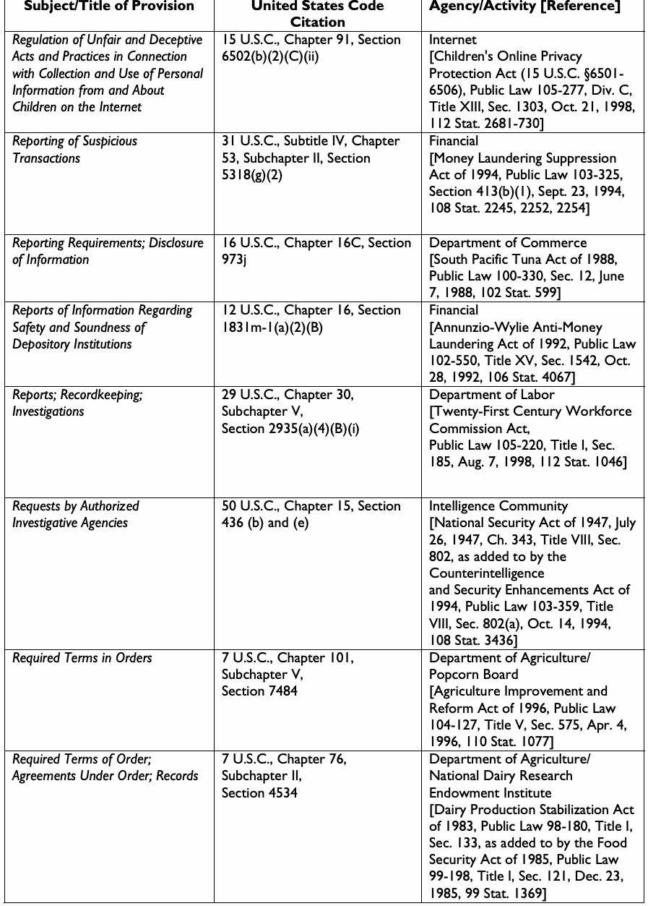
| 規定の主題／名称 | 米国法典の引用 | 機関／活動［参照］ |
| インターネット上の児童に関する個人情報の収集および利用に関連する不公正・欺瞞的行為および慣行の規制 | 15 U.S.C., Chapter 91, Section 6502(b)(2)(C)(ii) | インターネット [Children's Online Privacy Protection Act (15 U.S.C. §6501- 6506), Public Law 105-277, Div. C, Title XIII, Sec. 1303, Oct. 21, 1998, 112 Stat. 2681-730] |
| 不審取引の報告 | 31 U.S.C., Subtitle IV, Chapter 53, Subchapter II, Section 5318(g)(2) | 金融 [Money Laundering Suppression Act of 1994, Public Law 103-325, Section 413(b)(1), Sept. 23, 1994, 108 Stat. 2245, 2252, 2254] |
| 報告要件、情報開示 | 16 U.S.C., Chapter 16C, Section 973j | 商務省 [South Pacific Tuna Act of 1988, Public Law 100-330, Sec. 12, June 7, 1988, 102 Stat. 599] |
| 預金取扱金融機関の安全性および健全性に関する情報の報告 | 12 U.S.C., Chapter 16, Section 1831m-1(a)(2)(B) | 金融 [Annunzio-Wylie Anti-Money Laundering Act of 1992, Public Law 102-550, Title XV, Sec. 1542, Oct. 28, 1992, 106 Stat. 4067] |
| 報告、記録保持、調査 | 29 U.S.C., Chapter 30, Subchapter V, Section 2935(a)(4)(B)(i) | 労働省 [Twenty-First Century Workforce Commission Act, Public Law 105-220, Title I, Sec. 185, Aug. 7, 1998, 112 Stat. 1046] |
| 認可された調査機関による要請 | 50 U.S.C., Chapter 15, Section 436 (b) and (e) | 情報機関コミュニティ [National Security Act of 1947, July 26, 1947, Ch. 343, Title VIII, Sec. 802, as added to by the Counterintelligence and Security Enhancements Act of 1994, Public Law 103-359, Title VIII, Sec. 802(a), Oct. 14, 1994, 108 Stat. 3436] |
| 命令における必須条項 | 7 U.S.C., Chapter 101, Subchapter V, Section 7484 | 農務省／ポップコーン委員会 [Agriculture Improvement and Reform Act of 1996, Public Law 104-127, Title V, Sec. 575, Apr. 4, 1996, 110 Stat. 1077] |
| 命令の必須条項、命令に基づく合意および記録 | 7 U.S.C., Chapter 76, Subchapter II, Section 4534 | 農務省／全米酪農研究基金研究所 [Dairy Production Stabilization Act of 1983, Public Law 98-180, Title I, Sec. 133, as added to by the Food Security Act of 1985, Public Law 99-198, Title I, Sec. 121, Dec. 23, 1985, 99 Stat. 1369] |
Table 6: Legal Information Disclosure Prohibitions
表6：法的情報開示の禁止
未レビュー訳| Subject/Title of Provision | United States Code Citation | Agency/Activity [Reference] |
| Research on Transplantation of Fetal Tissue | 42 U.S.C., Chapter 6A, Subchapter III, Part H, Section 289g-1(d)(2) | Department of Health and Human Services/National Institutes of Health [Public Health Service Act of July 1, 1944, Ch. 373, Title IV, Sec. 498A, as added to by Public Law 103-43, Title I, Sec. 111, June 10, 1993, 107 Stat. 129] |
| Restriction of Access by Minors to Materials Commercially Distributed by Means of World Wide Web that are Harmful to Minors | 47 U.S.C., Chapter 5, Subchapter II, Part I, Section 231 | [Communications Act of 1934, June 19, 1934, Ch. 652, Title II, Sec. 231, as added to by the Children's Online Privacy Protection Act of 1998, Public Law 105-277, Div. C, Title XIV, Sec. 1403, Oct. 21, 1998, 112 Stat. 2681-736] |
| Restrictions on Disclosing and Obtaining Contractor Bid or Proposal Information or Source Selection Information | 41 U.S.C., Chapter 7, Section 423 | [Office of Federal Procurement Policy Act, Public Law 93-400, Sec. 27, as added to by Office of Federal Procurement Policy Act Amendments of 1988, Public Law 100-679, Sec. 6(a), Nov. 17, 1988, 102 Stat. 4063 and amended by the National Defense Authorization Act for Fiscal Years 1990 and 1991, Public Law 101-189, Div. A, Title VIII, Sec. 814(a)-(d)(1), Nov. 29, 1989, 103 Stat. 1495-1498; National Defense Authorization Act for Fiscal Year 1991, Public Law 101-510, Div. A, Title XIV, Sec. 1484(l)(6), Nov. 5, 1990, 104 Stat. 1720; Persian Gulf Conflict Supplemental Authorization and Personnel Benefits Act of 1991, Public Law 102-25, Title VII, Sec. 705(i), Apr. 6, 1991, 105 Stat. 121; Federal Acquisition Streamlining Act of 1994, Public Law 103-355, Title VIII, Sec. 8301(e), Oct. 13, 1994, 108 Stat. 3397; and the Federal Acquisition Reform Act of 1996, Public Law 104-106, Div. D, Title XLIII, Sec. 4304(a), Feb. 10, 1996, 110 Stat. 659] |
| Right to Financial Privacy | 12 U.S.C., Chapter 35 | [Right to Financial Privacy Act of 1978, Public Law 95-630, Nov. 10, 1978] |
原本PDFの抜粋画像
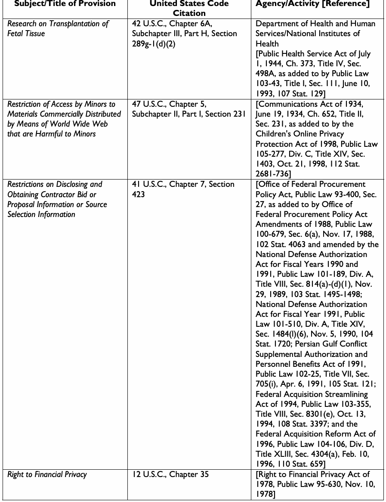
| 規定の主題／名称 | 米国法典の引用 | 機関／活動［参照］ |
| 胎児組織移植に関する研究 | 42 U.S.C., Chapter 6A, Subchapter III, Part H, Section 289g-1(d)(2) | 保健福祉省／国立衛生研究所 [Public Health Service Act of July 1, 1944, Ch. 373, Title IV, Sec. 498A, as added to by Public Law 103-43, Title I, Sec. 111, June 10, 1993, 107 Stat. 129] |
| World Wide Webを通じて商業的に配布される未成年者に有害な資料への未成年者のアクセス制限 | 47 U.S.C., Chapter 5, Subchapter II, Part I, Section 231 | [Communications Act of 1934, June 19, 1934, Ch. 652, Title II, Sec. 231, as added to by the Children's Online Privacy Protection Act of 1998, Public Law 105-277, Div. C, Title XIV, Sec. 1403, Oct. 21, 1998, 112 Stat. 2681-736] |
| 契約業者の入札・提案情報または供給元選定情報の開示および取得に関する制限 | 41 U.S.C., Chapter 7, Section 423 | [Office of Federal Procurement Policy Act, Public Law 93-400, Sec. 27, as added to by Office of Federal Procurement Policy Act Amendments of 1988, Public Law 100-679, Sec. 6(a), Nov. 17, 1988, 102 Stat. 4063 and amended by the National Defense Authorization Act for Fiscal Years 1990 and 1991, Public Law 101-189, Div. A, Title VIII, Sec. 814(a)-(d)(1), Nov. 29, 1989, 103 Stat. 1495-1498; National Defense Authorization Act for Fiscal Year 1991, Public Law 101-510, Div. A, Title XIV, Sec. 1484(l)(6), Nov. 5, 1990, 104 Stat. 1720; Persian Gulf Conflict Supplemental Authorization and Personnel Benefits Act of 1991, Public Law 102-25, Title VII, Sec. 705(i), Apr. 6, 1991, 105 Stat. 121; Federal Acquisition Streamlining Act of 1994, Public Law 103-355, Title VIII, Sec. 8301(e), Oct. 13, 1994, 108 Stat. 3397; and the Federal Acquisition Reform Act of 1996, Public Law 104-106, Div. D, Title XLIII, Sec. 4304(a), Feb. 10, 1996, 110 Stat. 659] |
| 金融プライバシー権 | 12 U.S.C., Chapter 35 | [Right to Financial Privacy Act of 1978, Public Law 95-630, Nov. 10, 1978] |
Table 6: Legal Information Disclosure Prohibitions
表6：法的情報開示の禁止
未レビュー訳| Subject/Title of Provision | United States Code Citation | Agency/Activity [Reference] |
| Rules and Regulations | 22 U.S.C., Chapter 46, Section 3104(c) | State Department [International Investment Survey Act, Public Law 94-472, Sec. 5, Oct. 11, 1976, 90 Stat. 2062; amended by the Foreign Direct Investment and International Financial Data Improvements Act of 1990, Public Law 101-533, Sec. 6(d), (e), 7(a), Nov. 7, 1990, 104 Stat. 2349] |
| Safeguards Information, | 42 U.S.C, Chapter 23, Division A, Subchapter XI, Section 2167 | Department of Energy [Atomic Energy Act of Aug. 1, 1946, Ch. 724, Title I, Sec. 147, as added to by Public Law 96-295, Title II, Sec. 207(a)(1), June 30, 1980, 94 Stat. 788; renumbered Title I, Public Law 102-486, Title IX, Sec. 902(a)(8), Oct. 24, 1992, 106 Stat. 2944] |
| Safety Performance History of New Drivers; Limitation on Liability | 49 U.S.C., Subtitle I, Chapter 5, Subchapter I, Section 508(b) | Motor Carrier [Transportation Equity Act for the 21st Century, Public Law 105-178, Title IV, Sec. 4014(a)(1), June 9, 1998, 112 Stat. 409] |
| Secrecy | Federal Rules of Criminal Procedure, Rule 6(e) | Grand Juries |
| Security and Law Enforcement in Property Under the Jurisdiction of the Department of Veterans Affairs | 38 U.S.C., Chapter 9 | Department of Veterans Affairs [Department of Veterans Affairs Codification Act, Public Law 102- 83, Sec. 2(a), Aug. 6, 1991, 105 Stat. 397] |
| Security and Research and Development Activities | 49 U.S.C., Subtitle VII, Part A, Subpart i, Chapter 401, Section 40119(b)(1) | Federal Aviation Administration [Public Law 103-272, Sec. 1(e), July 5, 1994, 108 Stat. 1117] |
| Special Provisions Concerning the Department of Justice | 5 U.S.C., Appendix 2, Federal Advisory Committee Act, Section 8E | Department of Justice [Federal Advisory Committee Act, Public Law 92-463, Oct. 6, 1972, 86 Stat. 770; as amended by the Government in the Sunshine Act, Public Law 94-409, Sec. 5(c), Sep. 13, 1976, 90 Stat. 1247; Public Law 96-523, Sec. 2, Dec. 12, 1980, 94 Stat. 3040; and the Congressional Reports Elimination Act of 1982, Public Law 97-375, Title II, Sec. 201(c), Dec. 21, 1982, 96 Stat. 1822] |
原本PDFの抜粋画像
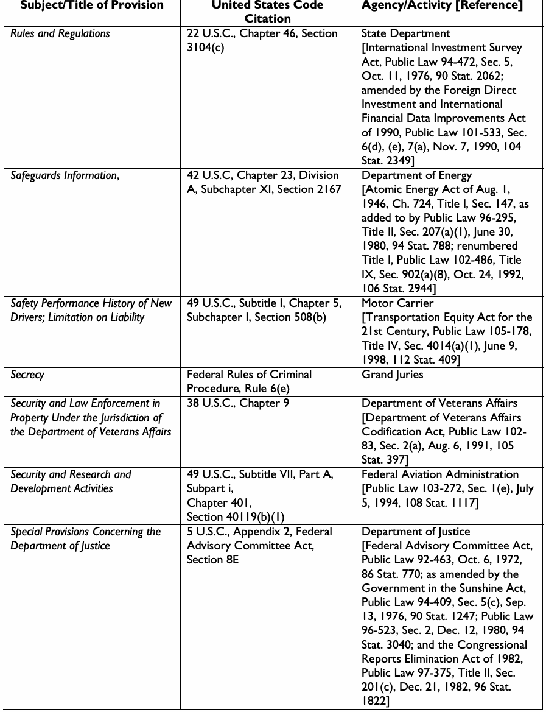
| 規定の主題／名称 | 米国法典の引用 | 機関／活動［参照］ |
| 規則および規制 | 22 U.S.C., Chapter 46, Section 3104(c) | 国務省 [International Investment Survey Act, Public Law 94-472, Sec. 5, Oct. 11, 1976, 90 Stat. 2062; amended by the Foreign Direct Investment and International Financial Data Improvements Act of 1990, Public Law 101-533, Sec. 6(d), (e), 7(a), Nov. 7, 1990, 104 Stat. 2349] |
| 安全保障措置情報 | 42 U.S.C, Chapter 23, Division A, Subchapter XI, Section 2167 | エネルギー省 [Atomic Energy Act of Aug. 1, 1946, Ch. 724, Title I, Sec. 147, as added to by Public Law 96-295, Title II, Sec. 207(a)(1), June 30, 1980, 94 Stat. 788; renumbered Title I, Public Law 102-486, Title IX, Sec. 902(a)(8), Oct. 24, 1992, 106 Stat. 2944] |
| 新規運転者の安全運転実績、責任の制限 | 49 U.S.C., Subtitle I, Chapter 5, Subchapter I, Section 508(b) | 自動車運送事業者 [Transportation Equity Act for the 21st Century, Public Law 105-178, Title IV, Sec. 4014(a)(1), June 9, 1998, 112 Stat. 409] |
| 秘密保持 | Federal Rules of Criminal Procedure, Rule 6(e) | 大陪審 |
| 退役軍人省の管轄下にある施設における警備および法執行 | 38 U.S.C., Chapter 9 | 退役軍人省 [Department of Veterans Affairs Codification Act, Public Law 102- 83, Sec. 2(a), Aug. 6, 1991, 105 Stat. 397] |
| 保安および研究開発活動 | 49 U.S.C., Subtitle VII, Part A, Subpart i, Chapter 401, Section 40119(b)(1) | 連邦航空局 [Public Law 103-272, Sec. 1(e), July 5, 1994, 108 Stat. 1117] |
| 司法省に関する特別規定 | 5 U.S.C., Appendix 2, Federal Advisory Committee Act, Section 8E | 司法省 [Federal Advisory Committee Act, Public Law 92-463, Oct. 6, 1972, 86 Stat. 770; as amended by the Government in the Sunshine Act, Public Law 94-409, Sec. 5(c), Sep. 13, 1976, 90 Stat. 1247; Public Law 96-523, Sec. 2, Dec. 12, 1980, 94 Stat. 3040; and the Congressional Reports Elimination Act of 1982, Public Law 97-375, Title II, Sec. 201(c), Dec. 21, 1982, 96 Stat. 1822] |
Table 6: Legal Information Disclosure Prohibitions
表6：法的情報開示の禁止
未レビュー訳| Subject/Title of Provision | United States Code Citation | Agency/Activity [Reference] |
| Special Provisions Concerning the Department of the Treasury | 5 U.S.C., Federal Advisory Committee Act, Section 8D | Treasury Department [Federal Advisory Committee Act, Public Law 92-463, Oct. 6, 1972, 86 Stat. 770; as amended by the Government in the Sunshine Act, Public Law 94-409, Sec. 5(c), Sep. 13, 1976, 90 Stat. 1247; Public Law 96-523, Sec. 2, Dec. 12, 1980, 94 Stat. 3040; and the Congressional Reports Elimination Act of 1982, Public Law 97-375, Title II, Sec. 201(c), Dec. 21, 1982, 96 Stat. 1822] |
| Submission of Purchase Intentions by Cigarette Manufacturers | 7 U.S.C., Chapter 35, General Provisions, Section 1314g(c) | Department of Agriculture [Agricultural Adjustment Act of 1938, Feb. 16, 1938, Ch. 30, Title III, Sec. 320A, as added to by Public Law 99-272, Title I, Sec. 1103(d), Apr. 7, 1986, 100 Stat. 88] |
| Transition Period | 45 U.S.C., Chapter 21, Section 1204 (b) | Department of Transportation Railroads [Alaska Railroad Transfer Act of 1982, Public Law 97-468, Title VI, Sec. 605(b), Jan. 14, 1983, 96 Stat. 2562, 2563] |
原本PDFの抜粋画像
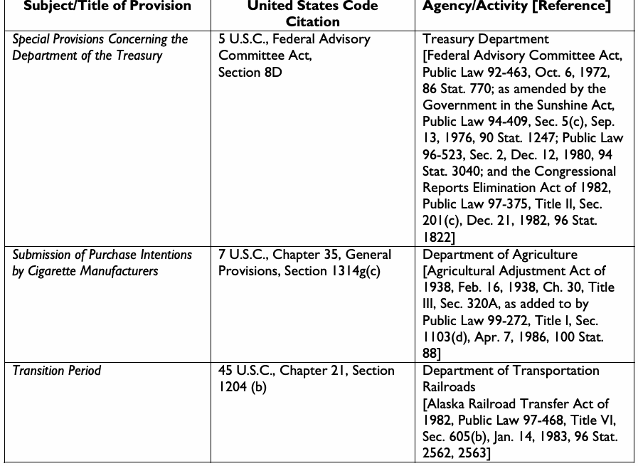
| 規定の主題／名称 | 米国法典の引用 | 機関／活動［参照］ |
| 財務省に関する特別規定 | 5 U.S.C., Federal Advisory Committee Act, Section 8D | 財務省 [Federal Advisory Committee Act, Public Law 92-463, Oct. 6, 1972, 86 Stat. 770; as amended by the Government in the Sunshine Act, Public Law 94-409, Sec. 5(c), Sep. 13, 1976, 90 Stat. 1247; Public Law 96-523, Sec. 2, Dec. 12, 1980, 94 Stat. 3040; and the Congressional Reports Elimination Act of 1982, Public Law 97-375, Title II, Sec. 201(c), Dec. 21, 1982, 96 Stat. 1822] |
| たばこ製造業者による購入意向の提出 | 7 U.S.C., Chapter 35, General Provisions, Section 1314g(c) | 農務省 [Agricultural Adjustment Act of 1938, Feb. 16, 1938, Ch. 30, Title III, Sec. 320A, as added to by Public Law 99-272, Title I, Sec. 1103(d), Apr. 7, 1986, 100 Stat. 88] |
| 移行期間 | 45 U.S.C., Chapter 21, Section 1204 (b) | 運輸省／鉄道 [Alaska Railroad Transfer Act of 1982, Public Law 97-468, Title VI, Sec. 605(b), Jan. 14, 1983, 96 Stat. 2562, 2563] |
Table 6: Legal Information Disclosure Prohibitions
表6：法的情報開示の禁止
未レビュー訳| Subject/Title of Provision | United States Code Citation | Agency/Activity [Reference] |
原本PDFの抜粋画像
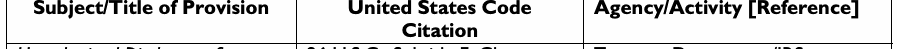
| 規定の主題／名称 | 米国法典の引用 | 機関／活動［参照］ |
Unauthorized Disclosure of
権限のない開示の
未レビュー訳26 U.S.C., Subtitle F, Chapter Treasury Department/IRS
26 U.S.C., Subtitle F, Chapter 財務省／内国歳入庁
未レビュー訳Information
情報
未レビュー訳75, Subchapter A, Part I, Section [Internal Revenue Code, Public 7213
75, Subchapter A, Part I, Section [Internal Revenue Code, Public 7213
未レビュー訳Law 83-591, Aug. 16, 1954, Ch. 736, 68A Stat. 855; Technical Amendments Act of 1958, Public Law 85-866, Title I, Sec. 90(c), Sept. 2, 1958, 72 Stat. 1666; Social Security Amendments of 1960, Public Law 86-778, Title I, Sec. 103(s), Sept. 13, 1960, 74 Stat. 940; Tax Reform Act of 1976, Public Law 94-455, Title XII, Sec. 1202(d), (h)(3), Oct. 4, 1976, 90 Stat. 1686, 1688; Revenue Act of 1978, Public Law 95-600, Title VII, Sec. 701 (bb)(1)(C), (6), Nov. 6, 1978, 92 Stat. 2922, 2923; Food Stamp Act Amendments of 1980, Public Law 96-249, Title I, Sec. 127(a)(2)(D), May 26, 1980, 94 Stat. 366; Public Law 96-265, Title IV, Sec. 408(a)(2)(D), June 9, 1980, 94 Stat. 468, as amended; Omnibus Reconciliation Act of 1980, Public Law 96-499, Title III, Sec. 302(b), Dec. 5, 1980, 94 Stat. 2604; Social Security Act Titles IV, XVI and XVIII Amendment, Pub. L. 96-611, Sec. 11(a)(4)(A), Dec. 28, 1980, 94 Stat. 3574; Tax Equity and Fiscal Responsibility Act of 1982, Pub. L. 97-248, Title III, Sec. 356(b)(2), Sept. 3, 1982, 96 Stat. 645; Debt Collection Act of 1982, Public Law 97-365, Sec. 8(c)(2), Oct. 25, 1982, 96 Stat. 1754; Deficit Reduction Act of 1984, Public Law 98-369, Div. A, Title IV, Sec. 453(b)(4), Div. B, Title VI, Sec. 2653(b)(4), July 18, 1984, 98 Stat. 820, 1156; Child Support Enforcement Amendments of 1984, Public Law 98-378, Sec. 21(f)(5), Aug. 16, 1984, 98 Stat. 1326; Family Support Act of 1988, Public Law 100-485, Title VII, Sec. 701(b)(2)(C), Oct. 13, 1988, 102 Stat. 2426; Technical and Miscellaneous Revenue Act of 1988, Public Law 100-647, Title VIII, Sec. 8008(c)(2)(B), Nov. 10, 1988, 102 Stat. 3787; Omnibus Budget Reconciliation Act of 1989, Public Law 101-239, Title VI, Sec. 6202(a)(1)(C), Dec. 19, 1989, 103 Stat. 2228; Omnibus Budget Reconciliation Act of 1990, Public
Law 83-591, Aug. 16, 1954, Ch. 736, 68A Stat. 855; Technical Amendments Act of 1958, Public Law 85-866, Title I, Sec. 90(c), Sept. 2, 1958, 72 Stat. 1666; Social Security Amendments of 1960, Public Law 86-778, Title I, Sec. 103(s), Sept. 13, 1960, 74 Stat. 940; Tax Reform Act of 1976, Public Law 94-455, Title XII, Sec. 1202(d), (h)(3), Oct. 4, 1976, 90 Stat. 1686, 1688; Revenue Act of 1978, Public Law 95-600, Title VII, Sec. 701 (bb)(1)(C), (6), Nov. 6, 1978, 92 Stat. 2922, 2923; Food Stamp Act Amendments of 1980, Public Law 96-249, Title I, Sec. 127(a)(2)(D), May 26, 1980, 94 Stat. 366; Public Law 96-265, Title IV, Sec. 408(a)(2)(D), June 9, 1980, 94 Stat. 468, as amended; Omnibus Reconciliation Act of 1980, Public Law 96-499, Title III, Sec. 302(b), Dec. 5, 1980, 94 Stat. 2604; Social Security Act Titles IV, XVI and XVIII Amendment, Pub. L. 96-611, Sec. 11(a)(4)(A), Dec. 28, 1980, 94 Stat. 3574; Tax Equity and Fiscal Responsibility Act of 1982, Pub. L. 97-248, Title III, Sec. 356(b)(2), Sept. 3, 1982, 96 Stat. 645; Debt Collection Act of 1982, Public Law 97-365, Sec. 8(c)(2), Oct. 25, 1982, 96 Stat. 1754; Deficit Reduction Act of 1984, Public Law 98-369, Div. A, Title IV, Sec. 453(b)(4), Div. B, Title VI, Sec. 2653(b)(4), July 18, 1984, 98 Stat. 820, 1156; Child Support Enforcement Amendments of 1984, Public Law 98-378, Sec. 21(f)(5), Aug. 16, 1984, 98 Stat. 1326; Family Support Act of 1988, Public Law 100-485, Title VII, Sec. 701(b)(2)(C), Oct. 13, 1988, 102 Stat. 2426; Technical and Miscellaneous Revenue Act of 1988, Public Law 100-647, Title VIII, Sec. 8008(c)(2)(B), Nov. 10, 1988, 102 Stat. 3787; Omnibus Budget Reconciliation Act of 1989, Public Law 101-239, Title VI, Sec. 6202(a)(1)(C), Dec. 19, 1989, 103 Stat. 2228; Omnibus Budget Reconciliation Act of 1990, Public
未レビュー訳Table 6: Legal Information Disclosure Prohibitions
表6：法令による情報開示の禁止
未レビュー訳| Subject/Title of Provision | United States Code Citation | Agency/Activity [Reference] |
| Unlawful Disclosure of Information | 49 U.S.C., Subtitle IV, Part C, Chapter 161, Section 16103 | Department of Transportation Pipeline Carriers [ICC Termination Act of 1995, Public Law 104-88, Title I, Sec. 106(a), Dec. 29, 1995, 109 Stat. 931] |
| Unlawful Possession or Receipt of Firearms, Federal Rules of Criminal Procedure, The Grand Jury | 18 U.S.C., Sections 1201-1203, Sec. 16, I, Rule 6 | Courts [Advisory Committee on Rules: 1944; Advisory Committee on Rules Amendment Feb. 28, 1966; Advisory Committee on Rules Amendment Apr. 24, 1972; Advisory Committee on Rules Amendments Apr. 26 and July 8, 1976 (amended by Public Law 95- 78, Sec. 2(a), July 30, 1977, 91 Stat. 319); Advisory Committee on Rules Amendment Apr. 30, 1979; Advisory Committee on Rules Amendment Apr. 28, 1983; amended by Public Law 98-473, Title II, Sec. 215(f), Oct. 12, 1984, 98 Stat. 2016; Advisory Committee on Rules Amendment Apr. 29, 1985; USA Patriot Act, Pubic Law 107-56, Title II, Sec. 203(a), Oct. 26, 2001, 115 Stat. 278] |
| Verification of Compliance | 22 U.S.C., Chapter 35, Subchapter III, Section 2577d | State Department [Arms Control and Disarmament Act, Public Law 87-297, Title III, Sec. 306, formerly Sec. 37, as added to by Arms Control and Disarmament Act Amendments, Public Law 95-108, Sec. 4, Aug. 17, 1977, 91 Stat. 871; amended by Arms Control and Nonproliferation Act of 1994, Public Law 103-236, Title VII, Sec. 712, Apr. 30, 1994, 108 Stat. 495 renumbered Sec. 306 and amended by Public Law 105-277, Div. G, Subdiv. A, title XII, Sec. 1223(11), (21), Oct. 21, 1998, 112 Stat. 2681-770, 2681-772] |
原本PDFの抜粋画像
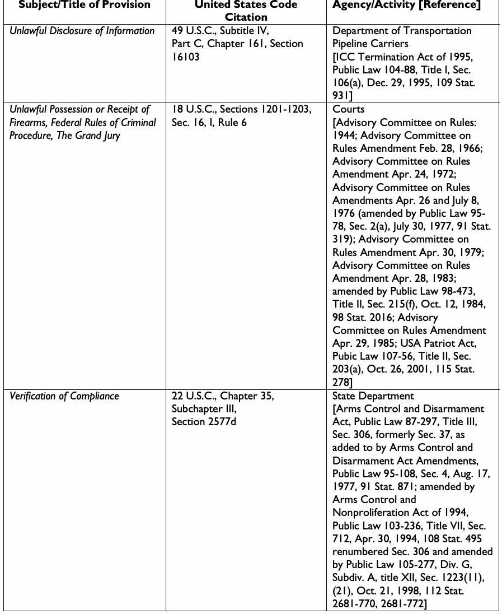
| 規定の主題／名称 | 合衆国法典の引用 | 機関／活動［参照］ |
| 情報の不法開示 | 49 U.S.C., Subtitle IV, Part C, Chapter 161, Section 16103 | 運輸省・パイプライン運送事業者 [ICC Termination Act of 1995, Public Law 104-88, Title I, Sec. 106(a), Dec. 29, 1995, 109 Stat. 931] |
| 銃器の不法所持または受領、連邦刑事訴訟規則、大陪審 | 18 U.S.C., Sections 1201-1203, Sec. 16, I, Rule 6 | 裁判所 [Advisory Committee on Rules: 1944; Advisory Committee on Rules Amendment Feb. 28, 1966; Advisory Committee on Rules Amendment Apr. 24, 1972; Advisory Committee on Rules Amendments Apr. 26 and July 8, 1976 (amended by Public Law 95- 78, Sec. 2(a), July 30, 1977, 91 Stat. 319); Advisory Committee on Rules Amendment Apr. 30, 1979; Advisory Committee on Rules Amendment Apr. 28, 1983; amended by Public Law 98-473, Title II, Sec. 215(f), Oct. 12, 1984, 98 Stat. 2016; Advisory Committee on Rules Amendment Apr. 29, 1985; USA Patriot Act, Pubic Law 107-56, Title II, Sec. 203(a), Oct. 26, 2001, 115 Stat. 278] |
| 遵守状況の検証 | 22 U.S.C., Chapter 35, Subchapter III, Section 2577d | 国務省 [Arms Control and Disarmament Act, Public Law 87-297, Title III, Sec. 306, formerly Sec. 37, as added to by Arms Control and Disarmament Act Amendments, Public Law 95-108, Sec. 4, Aug. 17, 1977, 91 Stat. 871; amended by Arms Control and Nonproliferation Act of 1994, Public Law 103-236, Title VII, Sec. 712, Apr. 30, 1994, 108 Stat. 495 renumbered Sec. 306 and amended by Public Law 105-277, Div. G, Subdiv. A, title XII, Sec. 1223(11), (21), Oct. 21, 1998, 112 Stat. 2681-770, 2681-772] |
Table 6: Legal Information Disclosure Prohibitions
表6：法令による情報開示の禁止
未レビュー訳| Subject/Title of Provision | United States Code Citation | Agency/Activity [Reference] |
| Voluntary Disclosure of Customer Communications or Records | 18 U.S.C., Part I, Chapter121, Section 2702 | [Electronic Communications Privacy Act of 1986, Public Law 99-508, Title II, Sec. 201((a)), Oct. 21, 1986, 100 Stat. 1860; amended by Public Law 100-690, Title VII, Sec. 7037, Nov. 18, 1988, 102 Stat. 4399; Protection of Children From Sexual Predators Act of 1998, Public Law 105-314, Title VI, Sec. 604(b), Oct. 30, 1998, 112 Stat. 2984; and the USA Patriot Act, Public Law 107-56, title II, Sec. 212(a)(1), Oct. 26, 2001, 115 Stat. 284] |
| Written Evaluations | 12 U.S.C., Chapter 30, Section 2906 | Treasury Department/ Comptroller of the Currency/ Federal Reserve System/ Federal Deposit Insurance Corporation [Housing and Community Development Act, Public Law 95- 128, Title VIII, Sec. 807, as added to by the Financial Institutions Reform, Recovery, and Enforcement Act of 1989, Public Law 101-73, Title XII, Sec. 1212(b), Aug. 9, 1989, 103 Stat. 527 and amended by the Foreign Bank Supervision Enhancement Act of 1991, Public Law 102-242, Title II, Sec. 222, Dec. 19, 1991, 105 Stat. 2306] |
| Wrongful Disclosure of Information | 13 U.S.C., Chapter 7, Subchapter I, Section 214 | Census Bureau Census Information [Census Act, Aug. 31, 1954, Ch. 1158, 68 Stat. 1023; Public Law 94-521, Sec. 12(a), Oct. 17, 1976, 90 Stat. 2464; and the Census Address List Improvement Act of 1994, Public Law 103-430, Sec. 2(c), Oct. 31, 1994, 108 Stat. 4394] |
| Wrongful Disclosure of Individually Identifiable Health Information | 42 U.S.C., Chapter 7, Subchapter XI, Section 1320d-6 | [Social Security Act of Aug. 14, 1935, Ch. 531, Title XI, Sec. 1177, as added to by the Health Insurance Portability and Accountability Act of 1996 (HIPAA), Public Law 104-191, Title II, Sec. 262(a), Aug. 21, 1996, 110 Stat. 2029] |
原本PDFの抜粋画像
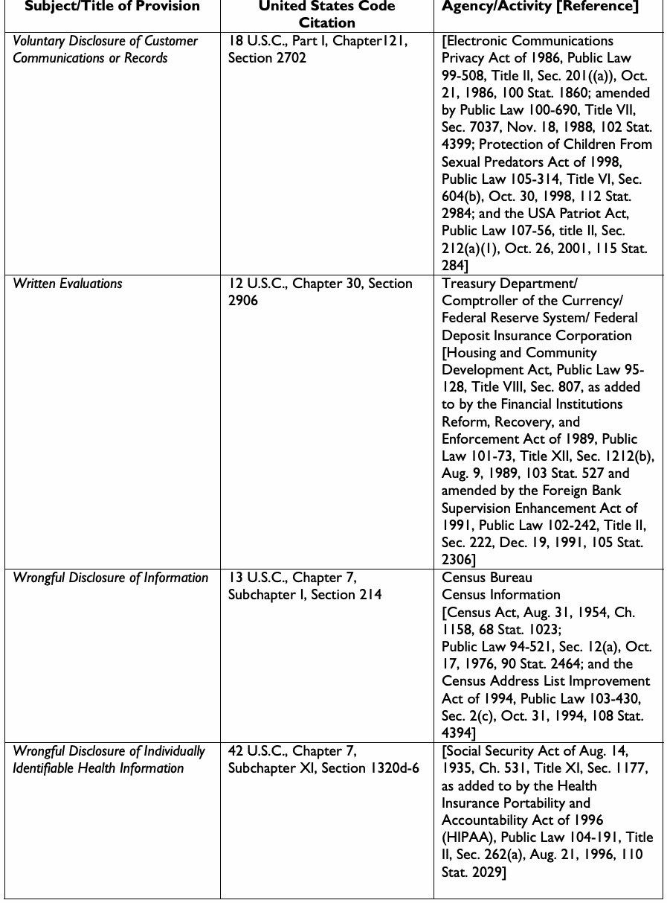
| 規定の主題／名称 | 合衆国法典の引用 | 機関／活動［参照］ |
| 顧客の通信または記録の任意開示 | 18 U.S.C., Part I, Chapter121, Section 2702 | [Electronic Communications Privacy Act of 1986, Public Law 99-508, Title II, Sec. 201((a)), Oct. 21, 1986, 100 Stat. 1860; amended by Public Law 100-690, Title VII, Sec. 7037, Nov. 18, 1988, 102 Stat. 4399; Protection of Children From Sexual Predators Act of 1998, Public Law 105-314, Title VI, Sec. 604(b), Oct. 30, 1998, 112 Stat. 2984; and the USA Patriot Act, Public Law 107-56, title II, Sec. 212(a)(1), Oct. 26, 2001, 115 Stat. 284] |
| 書面による評価 | 12 U.S.C., Chapter 30, Section 2906 | 財務省／通貨監督庁／連邦準備制度／連邦預金保険公社 [Housing and Community Development Act, Public Law 95- 128, Title VIII, Sec. 807, as added to by the Financial Institutions Reform, Recovery, and Enforcement Act of 1989, Public Law 101-73, Title XII, Sec. 1212(b), Aug. 9, 1989, 103 Stat. 527 and amended by the Foreign Bank Supervision Enhancement Act of 1991, Public Law 102-242, Title II, Sec. 222, Dec. 19, 1991, 105 Stat. 2306] |
| 情報の不正開示 | 13 U.S.C., Chapter 7, Subchapter I, Section 214 | 国勢調査局・国勢調査情報 [Census Act, Aug. 31, 1954, Ch. 1158, 68 Stat. 1023; Public Law 94-521, Sec. 12(a), Oct. 17, 1976, 90 Stat. 2464; and the Census Address List Improvement Act of 1994, Public Law 103-430, Sec. 2(c), Oct. 31, 1994, 108 Stat. 4394] |
| 個人を特定できる健康情報の不正開示 | 42 U.S.C., Chapter 7, Subchapter XI, Section 1320d-6 | [Social Security Act of Aug. 14, 1935, Ch. 531, Title XI, Sec. 1177, as added to by the Health Insurance Portability and Accountability Act of 1996 (HIPAA), Public Law 104-191, Title II, Sec. 262(a), Aug. 21, 1996, 110 Stat. 2029] |
Table 6: Legal Information Disclosure Prohibitions
表6：法令による情報開示の禁止
未レビュー訳| Subject/Title of Provision | United States Code Citation | Agency/Activity [Reference] |
| Wrongful Disclosure of Video Tape Rental or Sale Records | 18 U.S.C., Part 1, Chapter 121, Section 2710 | [Video Privacy Protection Act of 1988, Public Law 100-618, Sec. 2(a)(2), Nov. 5, 1988, 102 Stat. 3195] |
原本PDFの抜粋画像
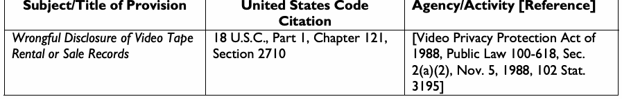
| 規定の主題／名称 | 合衆国法典の引用 | 機関／活動［参照］ |
| ビデオテープのレンタルまたは販売記録の不正開示 | 18 U.S.C., Part 1, Chapter 121, Section 2710 | [Video Privacy Protection Act of 1988, Public Law 100-618, Sec. 2(a)(2), Nov. 5, 1988, 102 Stat. 3195] |
E.2 Executive Mandates
E.2 行政機関への指令
未レビュー訳E.2.1 Office of Management and Budget Memoranda and Guidelines
E.2.1 行政管理予算局（OMB）の覚書およびガイドライン
未レビュー訳(a) Appendix III to OMB Circular No. A-130 of February 1996 Subject: Security of Federal Automated Information Resources [See text at http://csrc.nist.gov/secplcy/a130app3.txt.]
(a) OMB Circular No. A-130 の Appendix III（February 1996）件名：連邦自動化情報資源のセキュリティ［本文は http://csrc.nist.gov/secplcy/a130app3.txt. を参照。］
未レビュー訳(b) OMB Memorandum of November 3, 1997
(b) OMB Memorandum of November 3, 1997
未レビュー訳MEMORANDUM FOR THE CHIEF INFORMATION SECURITY OFFICERS
最高情報セキュリティ責任者各位
未レビュー訳Subject: Privacy Act Responsibilities for Implementing the Personal Responsibility and Work Opportunity Reconciliation Act of 1996 [See text at http://www.whitehouse.gov/omb/inforeg/infopoltech.html.]
件名：1996年個人責任・就労機会調整法を実施するためのプライバシー法上の責任［本文は http://www.whitehouse.gov/omb/inforeg/infopoltech.html. を参照。］
未レビュー訳(c) OMB M-99-05 of January 7, 1999
(c) OMB M-99-05 of January 7, 1999
未レビュー訳MEMORANDUM FOR HEADS OF DEPARTMENTS AND AGENCIES
各省庁長官各位
未レビュー訳Subject: Instructions on complying with President's Memorandum of May 14, 1998, "Privacy and Personal Information in Federal Records" [See text at http://www.whitehouse.gov/omb/memoranda/m99-05.html.]
件名：大統領の May 14, 1998 付覚書「連邦記録におけるプライバシーと個人情報」の遵守に関する指示［本文は http://www.whitehouse.gov/omb/memoranda/m99-05.html. を参照。］
未レビュー訳(d) OMB M-99-18 of June 2, 1999
(d) OMB M-99-18 of June 2, 1999
未レビュー訳MEMORANDUM FOR THE HEADS OF EXECUTIVE DEPARTMENTS AND
行政各省庁の長各位
未レビュー訳AGENCIES
および各機関
未レビュー訳Subject: Privacy Policies on Federal Web Sites [See text at http://csrc.nist.gov/policies/privacypol.pdf.]
件名：連邦ウェブサイトのプライバシーポリシー［本文は http://csrc.nist.gov/policies/privacypol.pdf. を参照。］
未レビュー訳Federal agencies must protect an individual's right to privacy when they collect personal information. This is required by the Privacy Act, 5 U.S.C. 552a, and OMB Circular No. A-130, "Management of Federal Information Resources," 61 Fed. Reg. 6428 (Feb. 20, 1996), and supported by the Principles for Providing and Using Personal Information published by the Information Infrastructure Task Force on June 6, 1995. Posting a privacy policy helps ensure that individuals have notice and choice about, and thus confidence in, how their personal information is handled when they use the Internet.
連邦機関は、個人情報を収集する際、個人のプライバシーの権利を保護しなければならない。これは、プライバシー法（5 U.S.C. 552a）および OMB Circular No. A-130「連邦情報資源の管理」（61 Fed. Reg. 6428（Feb. 20, 1996））によって義務付けられており、情報インフラストラクチャ・タスクフォースが June 6, 1995 に公表した「個人情報の提供および利用に関する原則」によっても支持されている。プライバシーポリシーを掲示すると、個人は、インターネット利用時に個人情報がどのように取り扱われるかについて通知を受け、選択できるようになり、その結果、安心感を得やすくなる。
(e) OMB M-99-20 of June 23, 1999
（e）OMB M-99-20（1999年六月23日）
未レビュー訳MEMORANDUM FOR THE HEADS OF DEPARTMENTS AND AGENCIES
宛先：各省庁の長
未レビュー訳Subject: Security of Federal Automated Information Resources [See text at http://www.whitehouse.gov/omb/memoranda/m99-20.html.]
件名：連邦政府の自動化情報資源のセキュリティ［本文は http://www.whitehouse.gov/omb/memoranda/m99-20.html を参照。］
未レビュー訳(f) OMB M-00-13 of June 22, 2000
（f）OMB M-00-13（2000年六月22日）
未レビュー訳MEMORANDUM FOR THE HEADS OF EXECUTIVE DEPARTMENTS AND
宛先：執行省庁および
未レビュー訳AGENCIES
各機関の長
未レビュー訳Subject: Privacy Policies and Data Collection on Federal Web Sites [See text at http://www.whitehouse.gov/omb/memoranda/m00-13.html.]
件名：連邦政府ウェブサイトにおけるプライバシー方針およびデータ収集［本文は http://www.whitehouse.gov/omb/memoranda/m00-13.html を参照。］
未レビュー訳(g) OMB M-00-15 of September 25, 2000
（g）OMB M-00-15（2000年九月25日）
未レビュー訳MEMORANDUM FOR THE HEADS OF DEPARTMENTS AND AGENCIES
宛先：各省庁の長
未レビュー訳Subject: OMB Guidance on Implementing the Electronic Signatures in Global and National Commerce Act [Text at http://www.whitehouse.gov/omb/memoranda/m00-15.html affects integrity impact determinations.]
件名：グローバルおよび国内商取引における電子署名法の実施に関するOMBガイダンス［http://www.whitehouse.gov/omb/memoranda/m00-15.html の本文は、完全性影響の判定に影響する。］
未レビュー訳(h) OMB M-01-05 of December 20, 2000
（h）OMB M-01-05（2000年十二月20日）
未レビュー訳MEMORANDUM FOR HEADS OF EXECUTIVE DEPARTMENTS AND AGENCIES
宛先：執行省庁および各機関の長
未レビュー訳Subject: Guidance on Inter-agency Sharing of Personal Data – Protecting Personal Privacy [Text at http://www.whitehouse.gov/omb/memoranda/m01-05.html.]
件名：個人データの機関間共有に関するガイダンス－個人のプライバシーの保護［本文は http://www.whitehouse.gov/omb/memoranda/m01-05.html を参照。］
未レビュー訳(i) OMB M-01-08 of January 16, 2001
（i）OMB M-01-08（2001年一月16日）
未レビュー訳MEMORANDUM FOR THE HEADS OF EXECUTIVE DEPARTMENTS AND
宛先：執行省庁および
未レビュー訳AGENCIES
各機関の長
未レビュー訳Subject: Guidance on Implementing the Government Information Security Reform Act [Text at http://csrc.nist.gov/policies/actmemo-guid.pdf.]
件名：政府情報セキュリティ改革法の実施に関するガイダンス［本文： http://csrc.nist.gov/policies/actmemo-guid.pdf］
未レビュー訳(j) OMB Memorandum of October 15, 2001
（j）OMB覚書（2001年十月15日）
未レビュー訳MEMORANDUM TO CHIEF INFORMATION OFFICERS AND PROGRAM
宛先：最高情報責任者およびプログラム宛て
未レビュー訳Subject: Guidance on the Release of Security Act Reports [See text at http://csrc.nist.gov/policies/memo-ciopo.txt.]
件名：セキュリティ法報告書の公開に関するガイダンス［本文は http://csrc.nist.gov/policies/memo-ciopo.txt を参照。］
未レビュー訳(k) OMB Guideline of February 22, 2002 Guidelines for Ensuring and Maximizing the Quality, Objectivity, Utility, and Integrity of Information Disseminated By Federal Agencies (Federal Register, Notices, Vol. 67, No. 36, 8452) [See text at http://www.whitehouse.gov/omb/fedreg/reproducible2.pdf.]
（k）OMBガイドライン（2002年二月22日）連邦機関が配布する情報の品質、客観性、有用性および完全性を確保し、最大化するためのガイドライン（Federal Register, Notices, Vol. 67, No. 36, 8452）［本文は http://www.whitehouse.gov/omb/fedreg/reproducible2.pdf を参照。］
未レビュー訳(l) OMB M-03-18 of August 1, 2003
（l）OMB M-03-18（2003年八月1日）
未レビュー訳MEMORANDUM TO ALL DEPARTMENT AND AGENCY HEADS
宛先：全部門および全機関の長
未レビュー訳Subject: Implementation Guidance for the E-Government Act of 2002 [See especially text referring to information security and to privacy at http://www.whitehouse.gov/omb/memoranda/m03-18.pdf]
件名：2002年電子政府法の実施ガイダンス［情報セキュリティおよびプライバシーに関する箇所を特に参照：http://www.whitehouse.gov/omb/memoranda/m03-18.pdf］
未レビュー訳(m) OMB M-03-19 of August 6, 2003
(m) OMB M-03-19、2003年8月6日
未レビュー訳MEMORANDUM FOR HEADS OF EXECUTIVE DEPARTMENTS AND AGENCIES
各行政省庁および機関の長宛て覚書
未レビュー訳Subject: Reporting Instructions for the Federal Information Security Management Act and Updated Guidance on Quarterly IT Security Reporting
件名：連邦情報セキュリティ管理法に関する報告指示、および四半期ごとのITセキュリティ報告に関する更新ガイダンス
未レビュー訳[See text at http://www.whitehouse.gov/omb/memoranda/m03-19.pdf]
[本文は http://www.whitehouse.gov/omb/memoranda/m03-19.pdf に掲載]
未レビュー訳(n) OMB M-03-22 of September 26, 2003
(n) OMB M-03-22、2003年9月26日
未レビュー訳MEMORANDUM FOR HEADS OF EXECUTIVE DEPARTMENTS AND AGENCIES
各行政省庁および機関の長宛て覚書
未レビュー訳Subject: OMB Guidance for Implementing the Privacy Provisions of the E-Government Act of 2002 [See text at http://www.whitehouse.gov/omb/memoranda/m03-22.html]
件名：2002年電子政府法のプライバシー規定を実施するためのOMBガイダンス [本文は http://www.whitehouse.gov/omb/memoranda/m03-22.html に掲載]
未レビュー訳(o) OMB M-04-04 of December 16, 2003
(o) OMB M-04-04、2003年12月16日
未レビュー訳MEMORANDUM TO THE HEADS OF ALL DEPARTMENTS AND AGENCIES
全省庁および機関の長宛て覚書
未レビュー訳Subject: E-Authentication Guidance for Federal Agencies [Text at http://www.whitehouse.gov/omb/memoranda/fy04/m04-04.pdf may affect integrity impact determination.]
件名：連邦機関向け電子認証ガイダンス [http://www.whitehouse.gov/omb/memoranda/fy04/m04-04.pdf の本文は、完全性影響度の判定に影響する場合がある。]
未レビュー訳(p) OMB CIRCULAR NO. A-130, Revised, (Transmittal Memorandum No. 4) of April 14, 2004
(p) OMB通達 A-130、改訂版（送達覚書第4号）、2004年4月14日
未レビュー訳MEMORANDUM FOR HEADS OF EXECUTIVE DEPARTMENTS AND AGENCIES
各行政省庁および機関の長宛て覚書
未レビュー訳Subject: Management of Federal Information Resources [See http://www.whitehouse.gov/omb/circulars/a130/a130trans4.html. Note especially the privacy requirements in Appendix I.]
件名：連邦情報資源の管理 [http://www.whitehouse.gov/omb/circulars/a130/a130trans4.html を参照。特に付録Iのプライバシー要件に注意。]
未レビュー訳(q) OMB M-04-15 of June 17, 2004
(q) OMB M-04-15、2004年6月17日
未レビュー訳MEMORANDUM FOR THE HEADS OF EXECUTIVE DEPARTMENTS AND
各省庁および
未レビュー訳AGENCIES
機関の長宛て覚書
未レビュー訳Subject: Development of Homeland Security Presidential Directive (HSPD) – 7 Critical Infrastructure Protection Plans to Protect Federal Critical Infrastructures and Key Resources [See text at http://www.whitehouse.gov/omb/memoranda/fy2004/m04-15.pdf]
件名：連邦の重要インフラおよび主要資源を保護するための、国土安全保障大統領指令（HSPD）–7に基づく重要インフラ保護計画の策定 [本文は http://www.whitehouse.gov/omb/memoranda/fy2004/m04-15.pdf に掲載]
未レビュー訳(r) OMB M-04-25 of August 23, 2004
(r) OMB M-04-25、2004年8月23日
未レビュー訳MEMORANDUM FOR HEADS OF EXECUTIVE DEPARTMENTS AND AGENCIES
各行政省庁および機関の長宛て覚書
未レビュー訳Subject: FY 2004 Reporting Instructions for the Federal Information Security Management Act [See text at http://www.whitehouse.gov/omb/memoranda/fy2004/m04-25.pdf]
件名：連邦情報セキュリティ管理法に関する2004年度報告指示 [本文は http://www.whitehouse.gov/omb/memoranda/fy2004/m04-25.pdf に掲載]
未レビュー訳(s) OMB M-05-15 of June 13, 2005
(s) OMB M-05-15、2005年6月13日
未レビュー訳MEMORANDUM FOR THE HEADS OF DEPARTMENTS AND AGENCIES
各省庁および機関の長宛て覚書
未レビュー訳Subject: FY 2005 Reporting Instructions for the Federal Information Security Management Act and Agency Privacy Management [See text at http://www.whitehouse.gov/omb/memoranda/fy2005/m05-15.pdf]
件名：連邦情報セキュリティ管理法に関する2005年度報告指示、および機関のプライバシー管理 [本文は http://www.whitehouse.gov/omb/memoranda/fy2005/m05-15.pdf に掲載]
未レビュー訳(t) OMB M-05-24 of August 5, 2005
(t) OMB M-05-24、2005年8月5日
未レビュー訳MEMORANDUM FOR THE HEADS OF ALL DEPARTMENTS AND AGENCIES
宛先：全部門および全機関の長
未レビュー訳Subject: Implementation of Homeland Security Presidential Directive (HSPD) 12 – Policy for a Common Identification Standard for Federal Employees and Contractors [See text at http://www.whitehouse.gov/omb/memoranda/fy2005/m05-24.pdf]
件名：国土安全保障大統領指令（HSPD）12－連邦職員および請負業者の共通識別標準に関する方針［本文は http://www.whitehouse.gov/omb/memoranda/fy2005/m05-24.pdf を参照］
未レビュー訳(u) OMB M-06-02 of December 16, 2005
（u）OMB M-06-02（2005年十二月16日）
未レビュー訳MEMORANDUM FOR THE HEADS OF EXECUTIVE DEPARTMENTS AND
宛先：執行省庁および
未レビュー訳AGENCIES
各機関の長
未レビュー訳Subject: Improving Public Access to and Dissemination of Government Information and Using the Federal Enterprise Architecture Data Reference Model [See text at http://www.whitehouse.gov/omb/memoranda/fy2006/m06-02.pdf]
件名：政府情報への一般公開および普及の改善ならびに連邦エンタープライズ・アーキテクチャのデータ参照モデルの利用［本文は http://www.whitehouse.gov/omb/memoranda/fy2006/m06-02.pdf を参照］
未レビュー訳(v) OMB M-06-04 of December 30, 2005
（v）OMB M-06-04（2005年十二月30日）
未レビュー訳MEMORANDUM FOR HEADS OF DEPARTMENT AND AGENCIES
宛先：各省庁および機関の長
未レビュー訳Subject: Implementation of the President’s Executive Order “Improving Agency Disclosure of Information” [See text at http://www.whitehouse.gov/omb/memoranda/fy2006/m06-04.pdf]
件名：大統領令「機関による情報開示の改善」の実施［本文は http://www.whitehouse.gov/omb/memoranda/fy2006/m06-04.pdf を参照］
未レビュー訳(w) OMB M-06-12 of April 13, 2006
（w）OMB M-06-12（2006年四月13日）
未レビュー訳MEMORANDUM FOR HEADS OF DEPARTMENT AND AGENCIES
宛先：各省庁および機関の長
未レビュー訳Subject: Follow-up Memorandum on “Implementation of the President’s Executive Order ‘Improving Agency Disclosure of Information’” [See text at http://www.whitehouse.gov/omb/memoranda/fy2006/m06-12.pdf
件名：大統領令「機関による情報開示の改善」の実施に関するフォローアップ覚書［本文は http://www.whitehouse.gov/omb/memoranda/fy2006/m06-12.pdf を参照
未レビュー訳(x) OMB M-06-15 of May 22, 2006
（x）OMB M-06-15（2006年五月22日）
未レビュー訳MEMORANDUM FOR THE HEADS OF DEPARTMENTS AND AGENCIES
宛先：各省庁の長
未レビュー訳Subject: Safeguarding Personally Identifiable Information [See text at http://www.whitehouse.gov/omb/memoranda/fy2006/m06-15.pdf]
件名：個人識別情報（PII）の保護［本文は http://www.whitehouse.gov/omb/memoranda/fy2006/m06-15.pdf を参照］
未レビュー訳(y) OMB M-06-16 of June 23, 2006
（y）OMB M-06-16（2006年六月23日）
未レビュー訳MEMORANDUM FOR THE HEADS OF DEPARTMENTS AND AGENCIES
宛先：各省庁の長
未レビュー訳Subject: Protection of Sensitive Agency Information [See text at http://www.whitehouse.gov/omb/memoranda/fy2006/m06-16.pdf]
件名：機関の機微情報の保護［本文は http://www.whitehouse.gov/omb/memoranda/fy2006/m06-16.pdf を参照］
未レビュー訳(z) OMB M-06-19 of July 12, 2006
（z）OMB M-06-19（2006年七月12日）
未レビュー訳MEMORANDUM FOR CHIEF INFORMATION OFFICERS
宛先：最高情報責任者
未レビュー訳Subject: Reporting Incidents Involving Personally Identifiable Information and Incorporating the Cost for Security in Agency Information Technology Investments [See text at http://www.whitehouse.gov/omb/memoranda/fy2006/m06-19.pdf]
件名：個人識別情報に関わるインシデントの報告、および機関の情報技術投資におけるセキュリティ費用の組み込み［本文は http://www.whitehouse.gov/omb/memoranda/fy2006/m06-19.pdf を参照］
未レビュー訳(aa) OMB M-06-20 of July 17, 2006
（aa）OMB M-06-20（2006年七月17日）
未レビュー訳MEMORANDUM FOR HEADS OF EXECUTIVE DEPARTMENTS AND AGENCIES
宛先：執行省庁および各機関の長
未レビュー訳Subject: FY 2006 Reporting Instructions for the Federal Information Security Management Act and Agency Privacy Management [See text at http://www.whitehouse.gov/omb/memoranda/fy2006/m06-20.pdf
件名：連邦情報セキュリティ管理法に基づく2006年度報告要領および機関のプライバシー管理［本文は http://www.whitehouse.gov/omb/memoranda/fy2006/m06-20.pdf を参照
未レビュー訳(bb) OMB M-06-25 of August 22, 2006
(bb) OMB M-06-25、2006年8月22日
未レビュー訳MEMORANDUM FOR CHIEF INFORMATION OFFICERS
最高情報責任者宛て覚書
未レビュー訳Subject: FY 2006 E-Government Act Reporting Instructions [See text at http://www.whitehouse.gov/omb/memoranda/fy2006/m06-25pdf]
件名：2006年度電子政府法報告指示 [本文は http://www.whitehouse.gov/omb/memoranda/fy2006/m06-25pdf を参照]
未レビュー訳(cc) OMB Recommendation of September 20, 2006
(cc) OMBの2006年9月20日付勧告
未レビュー訳MEMORANDUM FOR HEADS OF DEPARTMENTS AND AGENCIES
各省庁および機関の長宛て覚書
未レビュー訳Subject: Recommendations for Identity Theft Related Data Breach Notification [See text at http://www.whitehouse.gov/omb/memoranda/fy2006/task_force_theft_memo.pdf]
件名：個人情報窃取に関連するデータ侵害の通知に関する勧告 [本文は http://www.whitehouse.gov/omb/memoranda/fy2006/task_force_theft_memo.pdf を参照]
未レビュー訳(dd) OMB M-07-16 of May 22, 2007
(dd) OMB M-07-16、2007年5月22日
未レビュー訳MEMORANDUM FOR THE HEADS OF EXECUT IVE DEPARTMENTS AND
各行政省庁および
未レビュー訳AGENCIES
機関の長宛て覚書
未レビュー訳Subject: Safeguarding Against and Responding to the Breach of Personally Identifiable Information [See text at: http://www.whitehouse.gov/omb/memoranda/fy2007/m07-16.pdf]
件名：個人識別情報の侵害に対する保護と対応 [本文は次を参照：http://www.whitehouse.gov/omb/memoranda/fy2007/m07-16.pdf]
未レビュー訳(ee) OMB M-07-19 of July 25, 2007
(ee) OMB M-07-19、2007年7月25日
未レビュー訳MEMORANDUM FOR HEADS OF EXECUTIVE DEPARTMENTS AND AGENCIES
各行政省庁および機関の長宛て覚書
未レビュー訳Subject: FY 2007 Reporting Instructions for the Federal Information Security Management Act and Agency Privacy Management [See text at http://www.whitehouse.gov/omb/memoranda/fy2007/m07-19.pdf]
件名：連邦情報セキュリティ管理法に関する2007年度報告指示、および機関のプライバシー管理 [本文は http://www.whitehouse.gov/omb/memoranda/fy2007/m07-19.pdf を参照]
未レビュー訳E.2.2 Presidential Directives and Executive Orders
E.2.2 大統領指令および大統領令
未レビュー訳(a) Executive Order 10450 of April 27, 1953
(a) 1953年4月27日付 大統領令10450号
未レビュー訳SECURITY REQUIREMENTS FOR GOVERNMENT EMPLOYEES
政府職員に対するセキュリティ要件
未レビュー訳[EO 10450, Apr. 27, 1953, 18 F.R. 2489, as amended by Ex. Ord. No. 10491, Oct. 15, 1953, 18 F.R. 6583; Ex. Ord. No. 10531, May 27, 1954, 19 F.R. 3069; Ex. Ord. No. 10548, Aug. 3, 1954, 19 F.R. 4871; Ex. Ord. No. 10550, Aug. 6, 1954, 19 F.R. 4981; Ex. Ord. No. 11605, July 2, 1971, 36 F.R. 12831; Ex. Ord. No. 11785, June 4, 1974, 39 F.R. 20053; Ex. Ord. No. 12107, Dec. 28, 1978, 44 F.R. 1055] [See http://www.dss.mil/nf/adr/10450/eo10450F.htm.]
[EO 10450, Apr. 27, 1953, 18 F.R. 2489, as amended by Ex. Ord. No. 10491, Oct. 15, 1953, 18 F.R. 6583; Ex. Ord. No. 10531, May 27, 1954, 19 F.R. 3069; Ex. Ord. No. 10548, Aug. 3, 1954, 19 F.R. 4871; Ex. Ord. No. 10550, Aug. 6, 1954, 19 F.R. 4981; Ex. Ord. No. 11605, July 2, 1971, 36 F.R. 12831; Ex. Ord. No. 11785, June 4, 1974, 39 F.R. 20053; Ex. Ord. No. 12107, Dec. 28, 1978, 44 F.R. 1055] [http://www.dss.mil/nf/adr/10450/eo10450F.htm を参照。]
未レビュー訳Section 8 (a) The investigations conducted pursuant to this order shall be designed to develop information as to whether the employment or retention in employment in the Federal service of the person being investigated is clearly consistent with the interests of the national security. Such information shall relate, but shall not be limited, to the following: (6) Intentional unauthorized disclosure to any person of security information, or of other information disclosure of which is prohibited by law, or willful violation or disregard of security regulations.
第8条(a) 本令に基づいて実施される調査は、調査対象者を連邦政府に雇用し、または雇用を継続することが、国家安全保障上の利益に明らかに合致するかどうかに関する情報を得ることを目的としなければならない。この情報は次の事項に関するものでなければならないが、これらに限定されるものではない。(6) セキュリティ情報、または開示が法律で禁止されているその他の情報を、何人に対しても意図的に無許可で開示すること、あるいはセキュリティ規則に故意に違反し、またはこれを無視すること。
(b) Executive Order 12046 of March 27, 1978
(b) 1978年3月27日付 大統領令12046号
未レビュー訳RELATING TO THE TRANSFER OF TELECOMMUNICATIONS FUNCTIONS
電気通信機能の移管に関する
未レビュー訳[See http://www.archives.gov/federal_register/codification/executive_order/12046.html.]
[http://www.archives.gov/federal_register/codification/executive_order/12046.html を参照。]
未レビュー訳2-405. The Secretary of Commerce shall provide for the coordination of the telecommunications activities of the Executive Branch, and shall assist in the formulation of policies and standards for those activities, including but not limited to considerations of interoperability, privacy, security, spectrum use and emergency readiness.
2-405. 商務長官は、行政府の電気通信活動の調整を図らなければならないとともに、それらの活動に関する方針および基準の策定を支援しなければならない。これには、相互運用性、プライバシー、セキュリティ、周波数利用、および緊急時の即応性に関する検討事項が含まれるが、これらに限定されない。
(c) Executive Order 12656 of November 18, 1988
(c) 1988年11月18日付 大統領令12656号
未レビュー訳ASSIGMMENT OF EMERGENCY PREPAREDNESS RESPONSIBILITIES
緊急事態への備えに関する責任の割当て
未レビュー訳[See http://www.archives.gov/federal_register/codification/executive_order/12656.html. Amended by: EO 13074, February 9, 1998; EO 13228, October 8, 2001; EO 13286, February 28, 2003]
[参照: http://www.archives.gov/federal_register/codification/executive_order/12656.html。 改正: EO 13074（二月9日、1998年）、EO 13228（十月8日、2001年）、EO 13286（二月28日、2003年）。]
未レビュー訳Sec. 201. General. The head of each Federal department and agency, as appropriate, shall: (12) Ensure a capability to provide, during a national security emergency, information concerning Acts of Congress, presidential proclamations, Executive orders, regulations, and notices of other actions to the Archivist of the United States, for publication in the Federal Register, or to each agency designated to maintain the Federal Register in an emergency.
第201条 総則。各連邦省庁の長は、適切な場合、次の事項を行わなければならない。(12) 国家安全保障上の緊急事態において、連邦議会制定法、大統領布告、大統領令、規則およびその他の措置に関する通知について、連邦官報への掲載のため米国公文書管理官に、または緊急時に連邦官報を維持するよう指定された各機関に情報を提供する能力を確保すること。
未レビュー訳Sec. 701. Lead Responsibilities. In addition to the applicable responsibilities covered in Parts 1 and 2, the Secretary of Energy shall: (1) Conduct national security emergency preparedness planning, including capabilities development, and administer operational programs for all energy, resources, including: (a) Providing information, in cooperation with Federal, State, and energy industry officials, on energy supply and demand conditions and on the requirements for and the availability of materials and services critical to energy supply systems.
第701条 主導的責任。第1部および第2部で規定される該当する責任に加え、エネルギー長官は、次の事項を行わなければならない。(1) 能力開発を含む国家安全保障上の緊急事態への備えに関する計画を実施し、あらゆるエネルギー資源に関する運用プログラムを管理すること。これには、次が含まれる。(a) 連邦、州およびエネルギー産業の当局者と協力して、エネルギーの供給および需要の状況、ならびにエネルギー供給システムに不可欠な資材およびサービスの必要性と入手可能性に関する情報を提供すること。
未レビュー訳Sec. 1101. Lead Responsibilities. In addition to the applicable responsibilities covered in Parts 1 and 2, the Attorney General of the United States shall: (6) Provide information and assistance to the Federal Judicial branch and the Federal Legislative branch concerning law enforcement, continuity of government, and the exercise of legal authority during national security emergencies.
第1101条 主導的責任。第1部および第2部で規定される該当する責任に加え、米国司法長官は、次の事項を行わなければならない。(6) 国家安全保障上の緊急事態における法執行、政府の継続性および法的権限の行使に関して、連邦司法府および連邦立法府に情報と支援を提供すること。
Sec. 1802. Support Responsibility. The Administrator of General Services shall develop plans to assist Federal departments and agencies in operation and maintenance of essential automated information processing facilities during national security emergencies.
第1802条 支援責任。一般調達局長官は、国家安全保障上の緊急事態において、連邦省庁が不可欠な自動情報処理施設を運用および保守できるよう支援する計画を策定しなければならない。
未レビュー訳(d) Executive Order 12812 of July 22, 1992
(d) 大統領令12812（七月22日、1992年）
未レビュー訳DECLASSIFICATION AND RELEASE OF MATERIALS PERTAINING TO PRISONERS
捕虜に関する資料の機密解除および公開
未レビュー訳OF WAR AND MISSING IN ACTION
ならびに戦闘中行方不明者
未レビュー訳[See http://www.dtic.mil/dpmo/foia/eo12812.htm.]
[参照: http://www.dtic.mil/dpmo/foia/eo12812.htm。]
未レビュー訳Sec. 2. All executive departments and agencies shall make publicly available documents, files, and other materials declassified pursuant to section 1, except for those the disclosure of which would constitute a clearly unwarranted invasion of personal privacy of returnees, family members of POWs and MIAs, or other persons, or would impair the deliberative processes of the executive branch.
第2条 すべての行政省庁は、第1条に従って機密解除された文書、ファイルおよびその他の資料を一般に公開しなければならない。ただし、公開によって帰還者、捕虜および戦闘中行方不明者の家族、またはその他の者の個人情報に対する明らかに不当な侵害となるもの、あるいは行政府の審議過程を損なうものを除く。
(e) Presidential Decision Directive PDD/NSC-12 of August 5, 1993
(e) 大統領決定指令 PDD/NSC-12（八月5日、1993年）
未レビュー訳Subject: Security Awareness and Reporting of Foreign Contacts [See http://www.usaid.gov/policy/ads/500/pdd-nsc-12.pdf.]
件名: 外国人との接触に関するセキュリティ意識および報告 [参照: http://www.usaid.gov/policy/ads/500/pdd-nsc-12.pdf。]
未レビュー訳Presidential Decision Directive/NSC-12 requires that government employees report all contacts with individuals of any nationality, either within or outside the scope of the employee's official activities, in which:
大統領決定指令/NSC-12は、政府職員に対し、職員の公式活動の範囲内か範囲外かを問わず、あらゆる国籍の個人とのすべての接触のうち、次に該当するものを報告するよう求めている。
未レビュー訳•Illegal or unauthorized access is sought to classified or otherwise sensitive information.
•機密情報またはその他の機微情報への違法なアクセスもしくは許可されていないアクセスが試みられている。
未レビュー訳•The employee is concerned that he/she may be the target of actual or attempted exploitation by a foreign entity.
•職員が、外国の組織による実際のまたは未遂の利用・工作の標的になっている可能性を懸念している。
未レビュー訳Government employees must immediately report any discussion in which someone asks them to provide sensitive information which they are not authorized to receive. If in doubt, the agency Security Office has or knows personnel that are available to assess information and determine if a potential counterintelligence threat exists.
政府職員は、受け取る権限のない機微情報を提供するよう誰かに求められた会話を、直ちに報告しなければならない。疑わしい場合、機関のセキュリティ担当部署には、情報を評価して潜在的な防諜上の脅威が存在するかどうかを判断できる職員がいるか、またはそのような職員を把握している。
未レビュー訳(f) Executive Order 12951 of February 24, 1995
(f) 大統領令12951（二月24日、1995年）
未レビュー訳RELEASE OF IMAGERY ACQUIRED BY SPACE-BASED NATIONAL
宇宙配備型国家情報
未レビュー訳INTELLIGENCE RECONNAISSANCE SYSTEMS
偵察システムによって取得された画像の公開
未レビュー訳[See http://frwebgate.access.gpo.gov/cgi-bin/getdoc.cgi?dbname=1995_register&docid=fr28fe95-133.pdf.]
[参照: http://frwebgate.access.gpo.gov/cgi-bin/getdoc.cgi?dbname=1995_register&docid=fr28fe95-133.pdf。]
未レビュー訳Section 1. Public Release of Historical Intelligence Imagery. Imagery acquired by the space-based national intelligence reconnaissance systems known as the Corona, Argon, and Lanyard missions shall, within 18 months of the date of this order, be declassified and transferred to the National Archives and Records Administration with a copy sent to the United States Geological Survey of the Department of the Interior consistent with procedures approved by the Director of Central Intelligence and the Archivist of the United States. Upon transfer, such imagery shall be deemed declassified and shall be made available to the public.
第1条 過去の情報画像の公開。Corona、ArgonおよびLanyardの各ミッションとして知られる宇宙配備型国家情報偵察システムが取得した画像は、本命令の日付から18か月以内に機密解除され、米国国立公文書記録管理局に移管されなければならない。その写しも、中央情報長官および米国公文書管理官が承認した手続きに従い、内務省の米国地質調査所に送付されなければならない。移管後、当該画像は機密解除されたものとみなされなければならず、一般に公開されなければならない。
Section. 3. General Provisions. (a) This order prescribes a comprehensive and exclusive system for the public release of imagery acquired by space-based national intelligence reconnaissance systems. This order is the exclusive Executive order governing the public release of imagery for purposes of section 552(b)(1) of the Freedom of Information Act.
第3条 一般規定。(a) 本命令は、宇宙配備型国家情報偵察システムが取得した画像を一般公開するための包括的かつ排他的な制度を定める。本命令は、情報公開法第552(b)(1)項の目的において、画像の一般公開を規律する唯一の大統領令である。
(g) Executive Order 12958 of April 17, 1995
(g) 大統領令12958（四月17日、1995年）
未レビュー訳CLASSIFIED NATIONAL SECURITY INFORMATION
機密指定国家安全保障情報
未レビュー訳[See http://www.whitehouse.gov/news/releases/2003/03/20030325-11.html.]
［http://www.whitehouse.gov/news/releases/2003/03/20030325-11.html を参照。］
未レビュー訳Section 3.7. Processing Requests and Reviews. In response to a request for information under the Freedom of Information Act, the Privacy Act of 1974, or the mandatory review provisions of this order, or pursuant to the automatic declassification or systematic review provisions of this order:
第3.7節 請求および審査の処理。情報公開法、1974年プライバシー法、または本命令の義務的審査規定に基づく情報請求に応じる場合、あるいは本命令の自動機密解除または体系的審査の規定に従う場合：
(a) An agency may refuse to confirm or deny the existence or nonexistence of requested information whenever the fact of its existence or nonexistence is itself classified under this order.
(a) 要求された情報が存在するか否かという事実自体が本命令に基づき機密扱いである場合、機関は、要求された情報の存在または不存在を確認することも否定することも拒否できる。
未レビュー訳(b) When an agency receives any request for documents in its custody that contain information that was originally classified by another agency, or comes across such documents in the process of the automatic declassification or systematic review provisions of this order, it shall refer copies of any request and the pertinent documents to the originating agency for processing, and may, after consultation with the originating agency, inform any requester of the referral unless such association is itself classified under this order. In cases in which the originating agency determines in writing that a response under paragraph (a), above, is required, the referring agency shall respond to the requester in accordance with that paragraph.
(b) 他の機関が当初機密指定した情報を含む文書を保管する機関がその開示請求を受けた場合、または本命令の自動機密解除もしくは体系的審査の規定に基づく処理中にそのような文書を発見した場合、その機関は、請求書の写しおよび関連文書を処理のため原指定機関に送付しなければならない。また、原指定機関と協議した後、請求者と当該機関との関係自体が本命令に基づき機密扱いである場合を除き、請求者に送付した旨を通知してもよい。原指定機関が、上記(a)に基づく回答が必要であると書面で判断した場合、送付元機関は同項に従って請求者に回答しなければならない。
未レビュー訳(h) Executive Order 12968 of August 4, 1995
(h) Executive Order 12968 of August 4, 1995
未レビュー訳ACCESS TO CLASSIFIED INFORMATION
機密情報へのアクセス
未レビュー訳[See http://www.dss.mil/seclib/eo12968.htm.]
［http://www.dss.mil/seclib/eo12968.htm を参照。］
未レビュー訳Section 5.2. Review Proceedings for Denials or Revocations of Eligibility for Access. (a) Applicants and employees who are determined to not meet the standards for access to classified information established in section 3.1 of this order shall be:
第5.2節 アクセス資格の拒否または取消しに関する審査手続。(a) 本命令第3.1節で定める機密情報へのアクセス基準を満たさないと判断された申請者および職員には、次の措置を講じるものとする：
(1) provided as comprehensive and detailed a written explanation of the basis for that conclusion as the national security interests of the United States and other applicable law permit; provided within 30 days, upon request and to the extent the documents would be provided if requested under the Freedom of Information Act (5 U.S.C. 552) or the Privacy Act (3 U.S.C. 552a), as applicable, any documents, records, and reports upon which a denial or revocation is based.
(1) 米国の国家安全保障上の利益およびその他の適用法が許す範囲で、その結論の根拠について可能な限り包括的かつ詳細な書面による説明を提供しなければならない。また、請求に応じて30日以内に、情報自由法（5 U.S.C. 552）またはプライバシー法（3 U.S.C. 552a）に基づいて請求された場合に当該文書が提供される範囲で、アクセスの拒否または取消しの根拠となった文書、記録および報告書を提供しなければならない。
未レビュー訳(i) Presidential Decision Directive PDD 63 of May 22, 1998 Subject: The Clinton Administration’s Policy on Critical Infrastructure Protection [See text in http://csrc.nist.gov/policies/paper598.pdf.]
(i) Presidential Decision Directive PDD 63 of May 22, 1998 件名：クリントン政権の重要インフラ保護政策［本文は http://csrc.nist.gov/policies/paper598.pdf を参照。］
未レビュー訳(j) Presidential Decision Directive PDD/NSC 66 of September 16, 1998 Subject: Encryption Policy [See text in http://fas.org/irp/offdocs.]
(j) Presidential Decision Directive PDD/NSC 66 of September 16, 1998 件名：暗号化政策［本文は http://fas.org/irp/offdocs を参照。］
未レビュー訳(k) MEMORANDUM FOR THE HEADS OF EXECUTIVE DEPARTMENTS AND AGENCIES of March 3, 2000 Subject: Action by Federal Agencies to Safeguard Against Internet Attacks [See http://csrc.nist.gov/policies/Wh3300Memo.txt.]
(k) MEMORANDUM FOR THE HEADS OF EXECUTIVE DEPARTMENTS AND AGENCIES of March 3, 2000 件名：インターネット攻撃から保護するための連邦機関の措置［http://csrc.nist.gov/policies/Wh3300Memo.txt を参照。］
未レビュー訳(l) Executive Order 13228 of October 8, 2001
(l) Executive Order 13228 of October 8, 2001
未レビュー訳ESTABLISHING THE OFFICE OF HOMELAND SECURITY AND THE HOMELAND
国土安全保障省および国土安全保障
未レビュー訳SECURITY COUNCIL
会議の設置
未レビュー訳[See http://www.whitehouse.gov/news/releases/2001/10/20011008-2.html.]
［http://www.whitehouse.gov/news/releases/2001/10/20011008-2.html を参照。］
未レビュー訳(e) Protection. The Office shall coordinate efforts to protect the United States and its critical infrastructure from the consequences of terrorist attacks. In performing this function, the Office shall work with Federal, State, and local agencies, and private entities, as appropriate, to: …
(e) 保護。本局は、テロ攻撃の結果から米国およびその重要インフラを保護する取り組みを調整しなければならない。この機能を遂行するにあたり、本局は、必要に応じて連邦、州および地方の機関ならびに民間組織と連携し、次の事項を行う： …
未レビュー訳(ii) coordinate efforts to protect critical public and privately owned information systems within the United States from terrorist attack;
(ii) 米国内の重要な公共および民間所有の情報システムをテロ攻撃から保護する取り組みを調整すること；
未レビュー訳(f) Response and Recovery. The Office shall coordinate efforts to respond to and promote recovery from terrorist threats or attacks within the United States. In performing this function, the Office shall work with Federal, State, and local agencies, and private entities, as appropriate, to: …
(f) 対応および復旧。本局は、米国内におけるテロの脅威または攻撃への対応と、そこからの復旧促進に向けた取り組みを調整しなければならない。この機能を遂行するにあたり、本局は、必要に応じて連邦、州および地方の機関ならびに民間組織と連携し、次の事項を行う： …
未レビュー訳(ii) coordinate efforts to ensure rapid restoration of public and private critical information systems after disruption by a terrorist threat or attack;
(ii) テロの脅威または攻撃による中断後、公共および民間の重要な情報システムを迅速に復旧できるようにする取り組みを調整すること；
未レビュー訳(m) Executive Order 13231 of October 16, 2001
(m) Executive Order 13231 of October 16, 2001
未レビュー訳CRITICAL INFRASTRUCTURE PROTECTION IN THE INFORMATION AGE
情報化時代における重要インフラの保護
未レビュー訳[See http://csrc.nist.gov/policies/cip-infoage.html.]
［http://csrc.nist.gov/policies/cip-infoage.html を参照。］
未レビュー訳(n) Executive Order 13233 of November 1, 2001
(n) Executive Order 13233 of November 1, 2001
未レビュー訳FURTHER IMPLEMENTATION OF THE PRESIDENTIAL RECORDS ACT
大統領記録法のさらなる実施
未レビュー訳[See http://frwebgate.access.gpo.gov/cgi-bin/getdoc.cgi?dbname=2001_register&docid=fr05no01-104.pdf.]
[http://frwebgate.access.gpo.gov/cgi-bin/getdoc.cgi?dbname=2001_register&docid=fr05no01-104.pdf を参照。]
未レビュー訳(o) Military Order of November 13, 2001
(o) 2001年11月13日付 軍事命令
未レビュー訳DETENTION, TREATMENT, AND TRIAL OF CERTAIN NON-CITIZENS IN THE WAR
テロに対する戦争における
未レビュー訳AGAINST TERRORISM
特定の非市民の拘束、処遇および裁判
未レビュー訳[See http://www.whitehouse.gov/news/releases/2001/11/20011113-27.html.]
[http://www.whitehouse.gov/news/releases/2001/11/20011113-27.html を参照。]
未レビュー訳Section 4. Authority of the Secretary of Defense Regarding Trials of Individuals Subject to this Order.
第4条 国防長官が本令の対象となる個人の裁判に関して有する権限。
(c) Orders and regulations issued under subsection (b) of this section shall include, but not be limited to, rules for the conduct of the proceedings of military commissions, including pretrial, trial, and post-trial procedures, modes of proof, issuance of process, and qualifications of attorneys, which shall at a minimum provide for--
(c) 本条(b)項に基づいて発出される命令および規則には、軍事委員会の手続の運営に関する規則（公判前、公判および公判後の手続、立証方法、令状の発出、ならびに弁護士の資格を含む）を含めなければならないが、これらに限定されない。その規則では、少なくとも次の事項を定めなければならない——
未レビュー訳(4) in a manner consistent with the protection of information classified or classifiable under Executive Order 12958 of April 17, 1995, as amended, or any successor Executive Order, protected by statute or rule from unauthorized disclosure, or otherwise protected by law, (A) the handling of, admission into evidence of, and access to materials and information, and (B) the conduct, closure of, and access to proceedings;
(4) 大統領令12958号（1995年4月17日付、その改正版）またはその後継の大統領令に基づき機密指定済みまたは機密指定可能な情報、法律または規則により不正開示から保護されている情報、その他法律により保護されている情報の保護に整合する方法で、(A) 資料および情報の取扱い、証拠としての採用、ならびにアクセス、(B) 手続の実施、非公開化、ならびにアクセスを定めること；
未レビュー訳(p) Executive Order 13284 of January 23, 2003
(p) 2003年1月23日付 大統領令13284号
未レビュー訳AMENDMENT OF EXECUTIVE ORDERS, AND OTHER ACTIONS, IN CONNECTION
国土安全保障省の設立に関連する大統領令およびその他の措置の改正
未レビュー訳WITH THE ESTABLISHMENT OF THE DEPARTMENT OF HOMELAND SECURITY
（続き）
未レビュー訳[See http://www.state.gov/documents/organization/22978.doc.]
[http://www.state.gov/documents/organization/22978.doc を参照。]
未レビュー訳Section 19. Functions of Certain Officials in the Department of Homeland Security.
第19条 国土安全保障省の特定の職員の職務。
The Secretary of Homeland Security, the Deputy Secretary of Homeland Security, the Under Secretary for Information Analysis and Infrastructure Protection, Department of Homeland Security, and the Assistant Secretary for Information Analysis, Department of Homeland Security, each shall be considered a “Senior Official of the Intelligence Community” for purposes of Executive Order 12333, and all other relevant authorities, and shall:
国土安全保障長官、同副長官、国土安全保障省の情報分析・インフラ保護担当次官、および同省の情報分析担当次官補は、それぞれ、大統領令12333号その他すべての関連する権限の適用上、「情報コミュニティの上級職員」とみなされなければならず、また、次の措置を講じなければならない：
未レビュー訳(a) recognize and give effect to all current clearances for access to classified information held by those who become employees of the Department of Homeland Security by operation of law pursuant to the Homeland Security Act of 2002 or by Presidential appointment; (b) recognize and give effect to all current clearances for access to classified information held by those in the private sector with whom employees of the Department of Homeland Security may seek to interact in the discharge of their homeland security-related responsibilities; (c) make all clearance and access determinations pursuant to Executive Order 12968 of August 2, 1995, or any successor Executive Order, as to employees of, and applicants for employment in, the Department of Homeland Security who do not then hold a current clearance for access to classified information; and (d) ensure all clearance and access determinations for those in the private sector with whom employees of the Department of Homeland Security may seek to interact in the discharge of their homeland security- related responsibilities are made in accordance with Executive Order 12829 of January 6, 1993.
(a) 2002年国土安全保障法に基づく法律の運用または大統領任命により国土安全保障省の職員となる者が保有する、機密情報へのアクセスに関する現行のすべての許可を承認し、その効力を認めること；(b) 国土安全保障省職員が国土安全保障関連の責務を遂行するにあたり接触を求める可能性のある民間部門の者が保有する、機密情報へのアクセスに関する現行のすべての許可を承認し、その効力を認めること；(c) 機密情報へのアクセスに関する現行の許可を保有していない国土安全保障省の職員および採用応募者について、1995年8月2日付大統領令12968号またはその後継の大統領令に基づき、すべての許可およびアクセスに関する決定を行うこと；(d) 国土安全保障省職員が国土安全保障関連の責務を遂行するにあたり接触を求める可能性のある民間部門の者に関するすべての許可およびアクセスの決定が、1993年1月6日付大統領令12829号に従って行われるよう確保すること。
未レビュー訳(q) Executive Order 13286 of February 28, 2003
(q) 2003年2月28日付 大統領令13286号
未レビュー訳AMENDMENT OF EXECUTIVE ORDERS, AND OTHER ACTIONS, IN CONNECTION
国土安全保障長官への
未レビュー訳WITH THE TRANSFER OF CERTAIN FUNCTIONS TO THE SECRETARY OF
特定の機能の移管に関連する
未レビュー訳HOMELAND SECURITY
大統領令の改正およびその他の措置
未レビュー訳[See http://www.whitehouse.gov/news/releases/2003/02/20030228-8.html.]
[http://www.whitehouse.gov/news/releases/2003/02/20030228-8.html を参照。]
未レビュー訳Section 7. Executive Order 13231 of October 16, 2001 (“Critical Infrastructure Protection in the Information Age”), as amended: see Executive Order for text.
第7条 2001年10月16日付大統領令13231号（「情報化時代における重要インフラ保護」）の改正後：本文については当該大統領令を参照。
Section 1.4. Classification Categories. Information shall not be considered for classification unless it concerns: (a) military plans, weapons systems, or operations;
第1.4条 機密指定の区分。情報が次の事項に関するものでない限り、機密指定を検討してはならない：(a) 軍事計画、兵器システム、または作戦；
(b) foreign government information; (c) intelligence activities (including special activities), intelligence sources or methods, or cryptology; (d) foreign relations or foreign activities of the United States, including confidential sources; (e) scientific, technological, or economic matters relating to the national security, which includes defense against transnational terrorism; (f) United States Government programs for safeguarding nuclear materials or facilities; (g) vulnerabilities or capabilities of systems, installations, infrastructures, projects, plans, or protection services relating to the national security, which includes defense against transnational terrorism; or (h) weapons of mass destruction.
(b) 外国政府情報；(c) 情報活動（特別活動を含む）、情報源または情報収集手法、あるいは暗号技術；(d) 米国の対外関係または対外活動（秘密情報源を含む）；(e) 国境を越えるテロへの防衛を含む、国家安全保障に関係する科学、技術または経済上の事項；(f) 核物質または核施設を保護するための米国政府プログラム；(g) 国境を越えるテロへの防衛を含む、国家安全保障に関係するシステム、施設、インフラ、プロジェクト、計画または保護サービスの脆弱性または能力；または (h) 大量破壊兵器。
未レビュー訳(r) EXECUTIVE ORDER 13292 of March 25, 2003
(r) Executive Order 13292 of March 25, 2003
未レビュー訳FURTHER AMENDMENT TO EXECUTIVE ORDER 12958, AS AMENDED,
修正後の Executive Order 12958 のさらなる改正、
未レビュー訳CLASSIFIED NATIONAL SECURITY INFORMATION
機密扱いの国家安全保障情報
未レビュー訳[See http://foia.state.gov/eo12958/EO13292.asp.]
［http://foia.state.gov/eo12958/EO13292.asp を参照。］
未レビュー訳Section 1.7. Classification Prohibitions and Limitations.
第1.7節 機密指定の禁止および制限。
(a) In no case shall information be classified in order to: (1) conceal violations of law, inefficiency, or administrative error; (2) prevent embarrassment to a person, organization, or agency; (3) restrain competition; or (4) prevent or delay the release of information that does not require protection in the interest of the national security.
(a) いかなる場合も、次の目的で情報を機密指定してはならない：（1）法律違反、非効率または行政上の誤りを隠すこと；（2）個人、組織または機関の面目を損なうことを防ぐこと；（3）競争を制限すること；または（4）国家安全保障上の利益のために保護する必要のない情報の公開を妨げ、または遅らせること。
(b) Basic scientific research information not clearly related to the national security shall not be classified.
(b) 国家安全保障と明確に関連しない基礎科学研究情報は、機密指定してはならない。
未レビュー訳(c) Information may be reclassified after declassification and release to the public under proper authority only in accordance with the following conditions: (1) the reclassification action is taken under the personal authority of the agency head or deputy agency head, who determines in writing that the reclassification of the information is necessary in the interest of the national security; (2) the information may be reasonably recovered; and (3) the reclassification action is reported promptly to the Director of the Information Security Oversight Office.
(c) 適切な権限に基づき機密解除され、一般に公開された情報は、次の条件に従う場合に限り、再び機密指定することができる：（1）再機密指定の措置が機関の長または副機関長の個人的権限の下で行われ、当該長または副長が、その情報の再機密指定が国家安全保障上の利益のために必要であると書面で判断すること；（2）その情報を合理的に回収できること；および（3）再機密指定の措置を情報セキュリティ監督局長に速やかに報告すること。
(d) Information that has not previously been disclosed to the public under proper authority may be classified or reclassified after an agency has received a request for it under the Freedom of Information Act (5 U.S.C. 552) or the Privacy Act of 1974 (5 U.S.C. 552a), or the mandatory review provisions of section 3.5 of this order only if such classification meets the requirements of this order and is accomplished on a document-by-document basis with the personal participation or under the direction of the agency head, the deputy agency head, or the senior agency official designated under section 5.4 of this order.
(d) 適切な権限に基づき一般に公開されたことのない情報は、機関が情報自由法（5 U.S.C. 552）、1974年プライバシー法（5 U.S.C. 552a）または本命令第3.5節の義務的審査規定に基づく請求を受領した後であっても、本命令の要件を満たし、かつ機関の長、副機関長、または本命令第5.4節に基づき指定された上級機関職員が個人的に関与するか、その指示の下で文書ごとに実施する場合に限り、機密指定または再機密指定できる。
未レビュー訳(e) Compilations of items of information that are individually unclassified may be classified if the compiled information reveals an additional association or relationship that: (1) meets the standards for classification under this order; and (2) is not otherwise revealed in the individual items of information. As used in this order, "compilation" means an aggregation of pre-existing unclassified items of information.
(e) 個別には機密扱いでない情報項目の集積であっても、その集積によって、次のような追加の関連性または関係性が明らかになる場合は、機密指定できる：（1）本命令に基づく機密指定基準を満たすこと；および（2）個々の情報項目からは別途明らかにならないこと。本命令で「集積」とは、既存の機密扱いでない情報項目をまとめたものをいう。
未レビュー訳Section 1.8. Classification Challenges.
第1.8節 機密指定に対する異議申立て。
(a) Authorized holders of information who, in good faith, believe that its classification status is improper are encouraged and expected to challenge the classification status of the information in accordance with agency procedures established under paragraph (b) of this section.
(a) 情報の認定保有者が、誠実に、その機密指定の状態が不適切であると考える場合、当該情報の機密指定に対し、この節の(b)項に基づいて定められた機関の手続に従って異議を申し立てることが奨励され、また期待される。
未レビュー訳(b) In accordance with implementing directives issued pursuant to this order, an agency head or senior agency official shall establish procedures under which authorized holders of information are encouraged and expected to challenge the classification of information that they believe is improperly classified or unclassified. These procedures shall ensure that: (1) individuals are not subject to retribution for bringing such actions; (2) an opportunity is provided for review by an impartial official or panel; and (3) individuals are advised of their right to appeal agency decisions to the Interagency Security Classification Appeals Panel (Panel) established by section 5.3 of this order.
(b) 本命令に基づいて発出される実施指令に従い、機関の長または上級機関職員は、情報の権限を有する保有者が、不適切に機密指定されている、または不適切に機密指定されていないと考える情報の分類に異議を申し立てるよう奨励され、そのように求められる手続を定めなければならない。これらの手続により、次のことを確保しなければならない：（1）このような措置を講じたことに対する報復を個人が受けないこと；（2）公平な職員または委員会による審査の機会を設けること；および（3）本命令第5.3節により設置される機関間安全保障分類不服申立委員会（Panel）に機関の決定を不服申立てする権利を個人に知らせること。
未レビュー訳(s) Executive Order 13311 of July 29, 2003
(s) Executive Order 13311 of July 29, 2003
未レビュー訳HOMELAND SECURITY INFORMATION SHARING
国土安全保障情報の共有
未レビュー訳[See http://a257.g.akamaitech.net/7/257/2422/14mar20010800/edocket.access.gpo.gov/2003/pdf/0 3-19675.pdf.]
［http://a257.g.akamaitech.net/7/257/2422/14mar20010800/edocket.access.gpo.gov/2003/pdf/0 3-19675.pdf を参照。］
未レビュー訳Section 1. Assignment of Functions. (a) The functions of the President under section 892 of the Act are assigned to the Secretary of Homeland Security (the "Secretary"), except the functions of the President under subsections 892(a)(2) and 892(b)(7).
第1節 機能の割当て。(a) 同法第892条に基づく大統領の機能は、同法第892(a)(2)項および第892(b)(7)項に基づく機能を除き、国土安全保障長官（以下「長官」という。）に割り当てる。
(f) A determination, under the procedures issued by the Secretary in the performance of the function of the President under section 892(a)(1) of the Act, as to whether, or to what extent, an individual who falls within the category of "State and local personnel" as defined in sections 892(f)(3) and (f)(4) of the Act shall have access to information classified pursuant to Executive Order 12958 of April 17, 1995, as amended, is a discretionary determination and shall be conclusive and not subject to review or appeal.
(f) 同法第892(a)(1)項に基づく大統領の機能を遂行するため長官が発出する手続の下で、同法第892条の(f)(3)項および(f)(4)項に定義される「州および地方の要員」の区分に該当する個人が、改正後の Executive Order 12958 of April 17, 1995 に従って機密指定された情報にアクセスできるか、またその範囲を判断することは、裁量による判断であり、確定的なものとし、審査または不服申立ての対象とはならない。
未レビュー訳(t) Homeland Security Presidential Directive/HSPD-6 of September 16, 2003 Subject: Integration and Use of Screening Information [See http://www.whitehouse.gov/news/releases/2003/09/20030916-5.html.]
(t) Homeland Security Presidential Directive/HSPD-6 of September 16, 2003 件名：審査情報の統合および利用［http://www.whitehouse.gov/news/releases/2003/09/20030916-5.html を参照。］
未レビュー訳(2) The heads of executive departments and agencies shall, to the extent permitted by law, provide to the Terrorist Threat Integration Center (TTIC) on an ongoing basis all appropriate Terrorist Information in their possession, custody, or control. The Attorney General, in coordination with the Secretary of State, the Secretary of Homeland Security, and the Director of Central Intelligence shall implement appropriate procedures and safeguards with respect to all such information about United States persons. The TTIC will provide the organization referenced in paragraph (1) with access to all appropriate information or intelligence in the TTIC's custody, possession, or control that the organization requires to perform its functions.
(2) 行政各省庁および機関の長は、法律で認められる範囲で、保有、管理または統制する適切なすべてのテロ関連情報を、継続的にテロ脅威統合センター（TTIC）に提供しなければならない。司法長官は、国務長官、国土安全保障長官および中央情報長官と連携して、米国人に関するすべての当該情報について適切な手続および保護措置を実施しなければならない。TTICは、第（1）項で言及された組織がその機能を果たすために必要とする、TTICが保管、保有または統制するすべての適切な情報または情報資料へのアクセスを、当該組織に提供する。
(u) Homeland Security Presidential Directive / HSPD-7 of December 17, 2003 Subject: Critical Infrastructure Identification, Prioritization, and Protection [See http://www.whitehouse.gov/news/releases/2003/12/20031217-5.html.]
(u) Homeland Security Presidential Directive/HSPD-7 of December 17, 2003 件名：重要インフラの特定、優先順位付けおよび保護［http://www.whitehouse.gov/news/releases/2003/12/20031217-5.html を参照。］
未レビュー訳(10) Federal departments and agencies will appropriately protect information associated with carrying out this directive, including handling voluntarily provided information and information that would facilitate terrorist targeting of critical infrastructure and key resources consistent with the Homeland Security Act of 2002 and other applicable legal authorities.
（10）連邦省庁は、本指令の実施に関連する情報を適切に保護する。その対象には、自発的に提供された情報、および重要インフラと主要資源をテロリストが標的にすることを容易にする情報が含まれる。これは、2002年国土安全保障法およびその他の適用される法的権限に従って行う。
(22) (f) The Office of Management and Budget (OMB) shall oversee the implementation of government-wide policies, principles, standards, and guidelines for Federal government computer security programs. The Director of OMB will ensure the operation of a central Federal information security incident center consistent with the requirements of the Federal Information Security Management Act of 2002.
（22）（f）行政管理予算局（OMB）は、連邦政府全体に適用されるコンピューターセキュリティプログラムの方針、原則、基準およびガイドラインの実施を監督しなければならない。OMB長官は、2002年連邦情報セキュリティ管理法の要件に従って、連邦政府の情報セキュリティ・インシデント対応センターの運用を確保する。
未レビュー訳(24) All Federal department and agency heads are responsible for the identification, prioritization, assessment, remediation, and protection of their respective internal critical infrastructure and key resources. Consistent with the Federal Information Security Management Act of 2002, agencies will identify and provide information security protections commensurate with the risk and magnitude of the harm resulting from the unauthorized access, use, disclosure, disruption, modification, or destruction of information.
（24）すべての連邦省庁の長は、それぞれの内部の重要インフラおよび主要資源を特定し、優先順位を付け、評価し、是正し、保護する責任を負う。2002年連邦情報セキュリティ管理法に従い、各機関は、情報への無許可のアクセス、使用、開示、妨害、改変または破壊から生じる損害のリスクおよび規模に見合った情報セキュリティ保護を特定し、提供する。
未レビュー訳E.2.3 Other EOP Guidance
E.2.3 その他の大統領府（EOP）ガイダンス
未レビュー訳(a) MEMORANDUM FOR THE HEADS OF DEPARTMENTS AND AGENCIES of February 22, 2000 Subject: Security of Federal Information Systems [See http://csrc.nist.gov/policies/cos-memo.html.]
（a）省庁の長宛て覚書（二月22日、2000年）件名: 連邦情報システムのセキュリティ [参照: http://csrc.nist.gov/policies/cos-memo.html。]
未レビュー訳(b) MEMORANDUM FOR HEADS OF EXECUTIVE DEPARTMENTS AND AGENCIES of March 19, 2002 Subject: Action to Safeguard Information Regarding Weapons of Mass Destruction and Other Sensitive Documents Related to Homeland Security [See http://csrc.nist.gov/policies/guidance-homelandsec.html.]
（b）行政省庁の長宛て覚書（三月19日、2002年）件名: 大量破壊兵器および国土安全保障に関連するその他の機微な文書に関する情報を保護するための措置 [参照: http://csrc.nist.gov/policies/guidance-homelandsec.html。]
未レビュー訳(c) MEMORANDUM FOR DEPARTMENTS AND AGENCIES of March 19, 2002 Subject: Safeguarding Information Regarding Weapons of Mass Destruction and Other Sensitive Records Related to Homeland Security [See http://csrc.nist.gov/policies/guidance-homelandsec.html.]
（c）省庁宛て覚書（三月19日、2002年）件名: 大量破壊兵器および国土安全保障に関連するその他の機微な記録に関する情報の保護 [参照: http://csrc.nist.gov/policies/guidance-homelandsec.html。]
未レビュー訳III. Sensitive But Unclassified Information
III. 機密指定されていない機微情報
未レビュー訳In addition to information that could reasonably be expected to assist in the development or use of weapons of mass destruction, which should be classified or reclassified as described in Parts I and II above, departments and agencies maintain and control sensitive information related to America's homeland security that might not meet one or more of the standards for classification set forth in Part 1 of Executive Order 12958. The need to protect such sensitive information from inappropriate disclosure should be carefully considered, on a case-by-case basis, together with the benefits that result from the open and efficient exchange of scientific, technical, and like information.
上記第I部および第II部に記載するとおり、機密指定または再指定されるべき大量破壊兵器の開発または使用を支援すると合理的に予想される情報に加え、各省庁は、大統領令12958号第1部に定める機密指定基準の一つ以上を満たさない可能性がある、米国の国土安全保障に関する機微情報を保有し、管理している。そのような機微情報が不適切に開示されないよう保護する必要性は、科学、技術その他同種の情報を自由かつ効率的に交換することから得られる便益と併せて、個別の事案ごとに慎重に検討すべきである。
All departments and agencies should ensure that in taking necessary and appropriate actions to safeguard sensitive but unclassified information related to America's homeland security, they process any Freedom of Information Act request for records containing such information in accordance with the Attorney General's FOIA Memorandum of October 12, 2001, by giving full and careful consideration to all applicable FOIA exemptions. See FOIA Post, "New Attorney General FOIA Memorandum Issued" (posted 10/15/01) (found at http://www.usdoj.gov/oip/foiapost/2001foiapost19.htm), which discusses and provides electronic links to further guidance on the authority available under Exemption 2 of the FOIA, 5 U.S.C. § 552(b)(2), for the protection of sensitive critical infrastructure information. In the case of information that is voluntarily submitted to the Government from the private sector, such information may readily fall within the protection of Exemption 4 of the FOIA, 5 U.S.C. § 552(b)(4).
すべての省庁は、米国の国土安全保障に関する機密指定されていない機微情報を保護するため必要かつ適切な措置を講じるに当たり、その情報を含む記録についての情報公開法（FOIA）請求を、適用されるすべてのFOIA適用除外を十分かつ慎重に検討した上で、2001年10月12日付司法長官のFOIA覚書に従って処理すべきである。FOIA Postの「新たな司法長官FOIA覚書の発出」（掲載日10/15/01、http://www.usdoj.gov/oip/foiapost/2001foiapost19.htm）は、重要インフラに関する機微情報を保護するためFOIA適用除外2（5 U.S.C. § 552(b)(2)）に基づき利用できる権限について説明し、追加のガイダンスへの電子リンクを提供している。民間部門から政府に自発的に提出された情報の場合、その情報はFOIA適用除外4（5 U.S.C. § 552(b)(4)）による保護の対象に容易に該当し得る。
E.3 OMB and Case Law Interpretations
E.3 OMBおよび判例法の解釈
未レビュー訳The disclosure prohibitions, as stated in law are often imprecise. As a result, Office of Management and Budget and case law interpretations are sometimes necessary to clarify the prohibitions. In some cases, the analyst may need to identify such clarifications and interpretations.
法律に規定された開示禁止は、しばしば不明確である。そのため、禁止事項を明確にするには、行政管理予算局（OMB）による解釈や判例法上の解釈が必要となる場合がある。分析担当者は、そのような明確化や解釈を特定する必要がある場合もある。
未レビュー訳One law imposing disclosure prohibitions that has received particular attention across the Federal government deserves special attention. The Privacy Act of 1974, 5 U.S.C. § 552a (2000), which has been in effect since September 27, 1975, can generally be characterized as an omnibus "code of fair information practices" that attempts to regulate the collection, maintenance, use, and dissemination of personal information by federal executive branch agencies. However, the Act's imprecise language, limited legislative history, and somewhat outdated regulatory guidelines have rendered it a difficult statute to decipher and apply. Moreover, even after more than twenty-five years of administrative and judicial analysis, numerous Privacy Act issues remain unresolved or unexplored. Adding to these interpretational difficulties is the fact that many Privacy Act cases are unpublished district court decisions.
連邦政府全体で特に注目されてきた、開示を禁止する法律の一つについては、特に注意を払う必要がある。1974年プライバシー法（5 U.S.C. § 552a（2000））は九月27日、1975年から施行されており、連邦行政府機関による個人情報の収集、維持、使用および流布を規制しようとする、包括的な「公正な情報慣行に関する法典」と一般に特徴付けられる。しかし、同法の不明確な文言、限られた立法経緯、およびやや時代遅れの規制ガイドラインにより、解釈と適用が難しい法律となっている。さらに、二十五年以上にわたる行政上および司法上の分析を経た後も、多数のプライバシー法上の論点が未解決または未検討のままである。解釈を難しくする別の要因は、プライバシー法に関する多くの訴訟が、未公刊の連邦地方裁判所判決であることである。
未レビュー訳A primary element of the Privacy Act of 1974 is the “no disclosure without consent” rule: No agency shall disclose any record which is contained in a system of records by any means of communication to any person, or to another agency, except pursuant to a written request by, or with the prior written consent of, the individual to whom the record pertains [subject to 12 exceptions]." 5 U.S.C. § 552a(b).
1974年プライバシー法の主要な要素は、「同意なしの開示禁止」規則である。すなわち、「いかなる機関も、記録システムに含まれる記録を、当該記録に関係する個人からの書面による請求に基づく場合、または当該個人の事前の書面による同意を得た場合を除き、いかなる通信手段によっても、いかなる者または他の機関に開示してはならない［12の例外に服する］。」5 U.S.C. § 552a(b)。
Note that a "disclosure" can be by any means of communication - written, oral, electronic, or mechanical. [See OMB Guidelines, 40 Fed. Reg. 28,948, 28,953 (1975).] Details of the Privacy Act of 1974, together with OMB and judicial interpretations can be found on the Department of Justice web site, http://www.usdoj.gov/04foia/04_7_1.html.
「開示」は、書面、口頭、電子的または機械的なものなど、あらゆる通信手段によって行われ得ることに留意されたい。[参照: OMBガイドライン、40 Fed. Reg. 28,948、28,953（1975年）。] 1974年プライバシー法の詳細ならびにOMBおよび司法上の解釈は、司法省のウェブサイト（http://www.usdoj.gov/04foia/04_7_1.html）で確認できる。
Subsection (v) of the Privacy Act requires the Office of Management and Budget (OMB) to: (1) "prescribe guidelines and regulations for the use of agencies in implementing" the Act; and (2) "provide continuing assistance to and oversight of the implementation" of the Act by agencies. 5 U.S.C. § 552a(v). The vast majority of OMB's Privacy Act Guidelines (OMB Guidelines) are published at 40 Fed. Reg. 28,948-78 (1975). However, these original guidelines have been supplemented in particular subject areas over the years. 40 Fed. Reg. 56,741-43 (1975) (system of records definition, routine use and intra-agency disclosures, consent and congressional inquiries, accounting of disclosures, amendment appeals, rights of parents and legal guardians, relationship to Freedom of Information Act (FOIA)); 48 Fed. Reg. 15,556-60 (1983) (relationship to Debt Collection Act); 52 Fed. Reg. 12,990-93 (1987) ("call detail" programs); 54 Fed. Reg. 25818-29 (1989) (computer matching); 56 Fed. Reg. 18,599-601 (proposed Apr. 23, 1991) (computer matching); 61 Fed. Reg. 6428, 6435-39 (1996) ("Federal Agency Responsibilities for Maintaining Records About Individuals").
プライバシー法の第(v)項は、行政管理予算局（OMB）に対し、次のことを求めている。(1) 同法を実施する機関が使用するためのガイドラインおよび規則を「定める」こと。(2) 機関による同法の実施に「継続的な支援と監督を提供する」こと。5 U.S.C. § 552a(v)。OMBのプライバシー法ガイドライン（OMBガイドライン）の大部分は、40 Fed. Reg. 28,948-78（1975年）に掲載されている。ただし、これらの当初のガイドラインは、長年にわたり特定の主題分野で補足されてきた。40 Fed. Reg. 56,741-43（1975年）（記録システムの定義、通常利用および機関内開示、同意と議会からの照会、開示の記録、訂正請求の不服申立て、親および法定後見人の権利、情報公開法（FOIA）との関係）；48 Fed. Reg. 15,556-60（1983年）（債権回収法との関係）；52 Fed. Reg. 12,990-93（1987年）（「通話明細」プログラム）；54 Fed. Reg. 25818-29（1989年）（コンピューター照合）；56 Fed. Reg. 18,599-601（1991年4月23日提案）（コンピューター照合）；61 Fed. Reg. 6428、6435-39（1996年）（「個人に関する記録を維持する連邦機関の責任」）。
As a general rule, the OMB Guidelines are entitled to the deference usually accorded the interpretations of the agency that has been charged with the administration of a statute. Quinn v. Stone, 978 F.2d 126, 133 (3d Cir. 1992); Baker v. Dep't of the Navy, 814 F.2d 1381, 1383 (9th Cir. 1987); Perry v. FBI, 759 F.2d 1271, 1276 n.7 (7th Cir. 1985) (citing Bartel v. FAA, 725 F.2d 1403, 1408 n.9 (D.C. Cir. 1984); Albright v. United States, 631 F.2d 915, 919 n.5 (D.C. Cir. 1980)), rev'd en banc on other grounds, 781 F.2d 1294 (7th Cir. 1986); Smiertka v. United States Dep't of the Treasury, 604 F.2d 698, 703 n.12 (D.C. Cir. 1979); Rogers v. United States Dep't of Labor, 607 F. Supp. 697, 700 n.2 (N.D. Cal. 1985); Sanchez v. United States, 3 Gov't Disclosure Serv. (P-H) ¶ 83,116, at 83,709 (S.D. Tex. Sept. 10, 1982); Golliher v. United States Postal Serv., 3 Gov't Disclosure Serv. (P-H) ¶ 83,114, at 83,703 (N.D. Ohio June 10, 1982); Greene v. VA, No. C-76-461-S, slip op. at 6-7 (M.D.N.C. July 3, 1978); Daniels v. FCC, No. 77-5011, slip op. at 8-9 (D.S.D. Mar. 15, 1978); see also Martin v. Office of Special Counsel, 819 F.2d 1181, 1188 (D.C. Cir. 1987) (OMB interpretation is "worthy of our attention and solicitude"). However, a few courts have rejected particular aspects of the OMB Guidelines as inconsistent with the statute. Kassel v. VA, No. 87-217-S, slip op. at 24-25 (D.N.H. Mar. 30, 1992) (subsection (e)(3)); Saunders v. Schweiker, 508 F. Supp. 305, 309 (W.D.N.Y. 1981) (same); Metadure Corp. v. United States, 490 F. Supp. 1368, 1373-74 (S.D.N.Y. 1980) (subsection (a)(2)); Fla. Med. Ass'n v. HEW, 479 F. Supp. 1291, 1307-11 (M.D. Fla. 1979) (same); Zeller v. United States, 467 F. Supp. 487, 497-99 (E.D.N.Y. 1979) (same).
一般に、OMBガイドラインには、法令の運用を委ねられた機関の解釈に通常認められる敬譲が認められる。Quinn v. Stone, 978 F.2d 126, 133 (3d Cir. 1992); Baker v. Dep't of the Navy, 814 F.2d 1381, 1383 (9th Cir. 1987); Perry v. FBI, 759 F.2d 1271, 1276 n.7 (7th Cir. 1985) (citing Bartel v. FAA, 725 F.2d 1403, 1408 n.9 (D.C. Cir. 1984); Albright v. United States, 631 F.2d 915, 919 n.5 (D.C. Cir. 1980)), rev'd en banc on other grounds, 781 F.2d 1294 (7th Cir. 1986); Smiertka v. United States Dep't of the Treasury, 604 F.2d 698, 703 n.12 (D.C. Cir. 1979); Rogers v. United States Dep't of Labor, 607 F. Supp. 697, 700 n.2 (N.D. Cal. 1985); Sanchez v. United States, 3 Gov't Disclosure Serv. (P-H) ¶ 83,116, at 83,709 (S.D. Tex. Sept. 10, 1982); Golliher v. United States Postal Serv., 3 Gov't Disclosure Serv. (P-H) ¶ 83,114, at 83,703 (N.D. Ohio June 10, 1982); Greene v. VA, No. C-76-461-S, slip op. at 6-7 (M.D.N.C. July 3, 1978); Daniels v. FCC, No. 77-5011, slip op. at 8-9 (D.S.D. Mar. 15, 1978); 参照、Martin v. Office of Special Counsel, 819 F.2d 1181, 1188 (D.C. Cir. 1987)（OMBの解釈は「我々の注意と尊重に値する」）。しかし、一部の裁判所は、OMBガイドラインの特定の側面が法令と矛盾するとして退けている。Kassel v. VA, No. 87-217-S, slip op. at 24-25 (D.N.H. Mar. 30, 1992) (subsection (e)(3)); Saunders v. Schweiker, 508 F. Supp. 305, 309 (W.D.N.Y. 1981) (同上); Metadure Corp. v. United States, 490 F. Supp. 1368, 1373-74 (S.D.N.Y. 1980) (subsection (a)(2)); Fla. Med. Ass'n v. HEW, 479 F. Supp. 1291, 1307-11 (M.D. Fla. 1979) (同上); Zeller v. United States, 467 F. Supp. 487, 497-99 (E.D.N.Y. 1979) (同上)。
未レビュー訳Additionally, OMB has issued guidance regarding implementation of the privacy provisions of the E-Government Act of 2002 (See Section 208 of Public Law 107-347, 44 U.S.C. Chapter 36). Section 208 of the E-Government Act of 2002 requires that OMB issue guidance to agencies on implementing the privacy provisions of the E-Government Act. M-03-22, the September 26, 2003 Memorandum for Heads of Executive Departments and Agencies, OMB Guidance for Implementing the Privacy Provisions of the E-Government Act of 2002, complies with this requirement (see http://www.whitehouse.gov/omb/memoranda/m03-22.html). M-03-22 also provides a general outline of regulatory requirements pursuant to the Children’s Online Privacy Protection Act (“COPPA”) and a summary of modifications to existing guidance. A complete list of OMB privacy guidance currently in effect is available at OMB’s website.
さらに、OMBは、2002年電子政府法のプライバシー規定の実施に関するガイダンスを発行している（第208条（公法107-347）、44 U.S.C. 第36章を参照）。第208条（2002年電子政府法）は、同法のプライバシー規定を実施するためのガイダンスをOMBが各機関に発行することを求めている。M-03-22、2003年9月26日付「行政省庁の長宛て覚書: 2002年電子政府法のプライバシー規定を実施するためのOMBガイダンス」は、この要件を満たしている（http://www.whitehouse.gov/omb/memoranda/m03-22.html を参照）。M-03-22はまた、児童オンラインプライバシー保護法（COPPA）に基づく規制要件の概要と、既存のガイダンスへの変更点の要約を示している。現在有効なOMBのプライバシー・ガイダンスの完全な一覧は、OMBのウェブサイトで入手できる。